<title>QPUF Plot Ledger</title>
<meta name="claude:viewport-fit-sides" content="cover">
<link rel="stylesheet" href="https://fonts.googleapis.com/css2?family=IBM+Plex+Mono:wght@400;500&family=IBM+Plex+Sans:wght@400;500;600&display=swap">
<style>
/* layout: dense instrument-log feel. Full-width sortable conditions table first, then decode notes, then per-run figure cards by experiment type. */
:root{--bg:#f6f7f9;--fg:#1b2430;--mute:#5b6675;--line:#d8dde4;--panel:#ffffff;--accent:#1f6fb2;--ok:#1c7c4d;--ok-bg:#e0f2e8;--bad:#a1261f;--bad-bg:#fbe4e1;--warn-bg:#fff3d6;--warn:#7a5200;
--sans:"IBM Plex Sans",system-ui,sans-serif;--mono:"IBM Plex Mono",ui-monospace,monospace}
@media (prefers-color-scheme:dark){:root:not([data-theme="light"]){--bg:#12171d;--fg:#e4e9ef;--mute:#98a3b1;--line:#2c3541;--panel:#1a2129;--accent:#6bb0ee;--ok:#67d49b;--ok-bg:#16382a;--bad:#ff8f86;--bad-bg:#43201d;--warn-bg:#3d3216;--warn:#f0c768;color-scheme:dark}}
:root[data-theme="dark"]{--bg:#12171d;--fg:#e4e9ef;--mute:#98a3b1;--line:#2c3541;--panel:#1a2129;--accent:#6bb0ee;--ok:#67d49b;--ok-bg:#16382a;--bad:#ff8f86;--bad-bg:#43201d;--warn-bg:#3d3216;--warn:#f0c768;color-scheme:dark}
body{background:var(--bg);color:var(--fg);font-family:var(--sans);font-size:14px;line-height:1.5;padding-block:24px;padding-left:max(16px,env(safe-area-inset-left,0px));padding-right:max(16px,env(safe-area-inset-right,0px))}
main{max-width:1500px;margin:0 auto;display:flex;flex-direction:column;gap:28px;min-width:0}
h1{font-size:26px;margin:0;font-weight:600;letter-spacing:-.01em} h2{font-size:18px;margin:0 0 8px;font-weight:600} h3{font-size:16px;margin:0 0 10px} h4{font-size:13px;margin:0 0 4px;font-weight:600}
.mono{font-family:var(--mono)} .sm{font-size:11.5px;color:var(--mute);overflow-wrap:anywhere} .note{color:var(--mute);font-size:12.5px;margin:6px 0}
.sum{display:flex;flex-wrap:wrap;gap:8px 18px;color:var(--mute);font-size:13px} .sum b{color:var(--fg);font-variant-numeric:tabular-nums}
.bar{display:flex;flex-wrap:wrap;gap:8px;margin-bottom:8px} input,select{font:inherit;padding:5px 8px;border:1px solid var(--line);border-radius:4px;background:var(--panel);color:var(--fg)}
input:focus-visible,select:focus-visible,th:focus-visible,a:focus-visible,summary:focus-visible{outline:2px solid var(--accent);outline-offset:1px}
.tw{overflow-x:auto;border:1px solid var(--line);border-radius:4px;background:var(--panel);max-height:78vh;overflow-y:auto}
table{border-collapse:collapse;font-size:12px;width:100%} th,td{padding:4px 8px;border-bottom:1px solid var(--line);text-align:left;white-space:nowrap;font-variant-numeric:tabular-nums}
th{position:sticky;top:0;background:var(--panel);cursor:pointer;font-weight:600;border-bottom:2px solid var(--line);z-index:1} th:hover{color:var(--accent)}
tr.pend td{background:var(--warn-bg)} a{color:var(--accent)}
.pill{padding:1px 7px;border-radius:9px;font-size:11px} .pill.ok{background:var(--ok-bg);color:var(--ok)} .pill.bad{background:var(--bad-bg);color:var(--bad)}
.panel{background:var(--panel);border:1px solid var(--line);border-radius:6px;padding:14px 16px} .panel ul{margin:6px 0 0;padding-left:20px} .panel li{margin:3px 0}
.banner{background:var(--bad-bg);border-color:var(--bad)} .banner h2{color:var(--bad)} .banner p,.banner li{color:var(--fg)}
.caution{background:var(--warn-bg);color:var(--fg);border-color:var(--line)}
.card{background:var(--panel);border:1px solid var(--line);border-radius:6px;padding:10px 12px;margin:0 0 12px;min-width:0}
.grp .cnt{color:var(--mute);font-weight:400;font-size:13px} .figs{display:flex;flex-wrap:wrap;gap:8px;margin:6px 0} figure{margin:0;max-width:100%} figure img{max-width:100%;height:auto;border:1px solid var(--line);background:#fff}
figcaption{font-size:11px;color:var(--mute);overflow-wrap:anywhere}
dl{display:grid;grid-template-columns:minmax(120px,max-content) 1fr;gap:2px 14px;margin:6px 0;font-size:12px} dt{color:var(--mute);font-family:var(--mono)} dd{margin:0;font-family:var(--mono);overflow-wrap:anywhere}
summary{cursor:pointer;color:var(--accent);font-size:12.5px} .num{color:var(--mute);font-family:var(--mono)}
.aggs{display:flex;flex-wrap:wrap;gap:10px} @media (max-width:600px){dl{grid-template-columns:1fr} h1{font-size:21px}}
</style>
<main>
<header><h1>QPUF Plot Ledger</h1>
<p class="sum"><span><b>292</b> entries</span><span><b>266</b> hardware tasks with counts</span><span><b>12</b> FAILED tasks</span><span><b>8</b> simulator datasets</span><span><b>5</b> logged, never retrieved</span><span><b>266</b> plots generated</span><span><b>67</b> entries with a reused existing plot</span><span><b>22</b> pre-fix IonQ entries (17 with data)</span></p></header>

<section class="panel banner" role="note"><h2>Circuit-version warning: June IonQ runs used the pre-fix QPE stage</h2>
<p>Every IonQ Forte-Enterprise-1 run from <b>2026-06-01 (Braket Direct reservation)</b> and <b>2026-06-12…16 (noise_mitigation)</b> was built without the <code>prec[::-1]</code> reversal on the inverse QFT (known-bug item 4). The fix landed in commit <code>35f6f28</code> on <b>2026-08-28</b>. Without it the QPE phase is smeared across bins rather than landing in one, so the circuit that ran is <i>not</i> the corrected PE-QPUF stage.</p>
<ul><li><b>What the ledger shows for these rows:</b> direct decode (m = int of each stage's key) and, where ≤ 14 qubits, the noiseless simulation of the <i>pre-fix circuit</i> as the overlay. Hardware matches that sim (TVD 0.09–0.12 at d=2, 4, 6; 0.21–0.27 at d=10, shot-noise limited) and does not match the fixed circuit under any decode (TVD 0.39–1.0). See the checks table.</li>
<li><b>Consequence:</b> acceptance numbers for these runs are not evidence about the corrected protocol. For example, the d=4, n_targ=1 two-stage run reaches only P(Δ≤2)≈0.46 noiselessly with the pre-fix circuit.</li>
<li><b>Not affected:</b> Forte-1 garnet-dir runs (April; LSB-first controls with a little-endian QFT†), Rigetti Cepheus runs (2026-08-07; builder already had the reversal per the commit message). <b>Post-fix:</b> gate-limit probe <code>0ede858e</code> (2026-08-30) is marked "inferred from date, no log entry".</li>
<li>Two-stage runs with more than 14 qubits (d=10, d=15 reserve runs) are labelled pre-fix by date and script but have no overlay: statevector sim is infeasible.</li></ul></section>

<section><h2>Run conditions</h2>
<p class="note">One row per run. Click a header to sort, use the filters to narrow. Yellow rows are log entries with no result file. Gate counts are echoed from logs only. Decode column hover shows the exact rule.</p>
<div class="bar"><input id="q" type="search" placeholder="filter text (uuid, seed, device…)" aria-label="filter text"><select id="fe" aria-label="experiment"><option value="">all experiments</option><option>GHZ</option><option>QFT</option><option>Readout calibration (REM)</option><option>Single-stage QPE</option><option>Single-stage QPE (Haar U)</option><option>Single-stage QPE (T gate)</option><option>Two-stage QPE-QPUF</option><option>Two-stage QPE-QPUF (TEST)</option><option>Two-stage QPE-QPUF (on-grid, simulator)</option></select><select id="fd" aria-label="device"><option value="">all devices</option><option>Ankaa-3</option><option>Cepheus-1-108Q</option><option>Emerald</option><option>Forte-1</option><option>Forte-Enterprise-1</option><option>Forte-Enterprise-1 (target)</option><option>Garnet</option><option>Ibex-Q1</option><option>simulator</option></select><select id="fr" aria-label="result"><option value="">any result</option><option>yes</option><option>FAILED</option><option>NO</option><option>no</option></select><span id="shown" class="note"></span></div>
<div class="tw"><table id="t"><thead><tr><th data-k="0" tabindex="0">#</th><th data-k="1" tabindex="0">experiment</th><th data-k="2" tabindex="0">device</th><th data-k="3" tabindex="0">n_targ</th><th data-k="4" tabindex="0">n_prec d</th><th data-k="5" tabindex="0">qubits</th><th data-k="6" tabindex="0">unitary</th><th data-k="7" tabindex="0">shots</th><th data-k="8" tabindex="0">seed</th><th data-k="9" tabindex="0">target_init_seed</th><th data-k="10" tabindex="0">mitigation</th><th data-k="11" tabindex="0">ZNE λ</th><th data-k="12" tabindex="0">submission</th><th data-k="13" tabindex="0">date (UTC)</th><th data-k="14" tabindex="0">logged gates</th><th data-k="15" tabindex="0">result exists</th><th data-k="16" tabindex="0">measures all trailing?</th><th data-k="17" tabindex="0">circuit version</th><th data-k="18" tabindex="0">decode</th><th data-k="19" tabindex="0">task UUID</th></tr></thead><tbody><tr class="" data-exp="GHZ" data-dev="Forte-Enterprise-1" data-res="yes"><td>1</td><td>GHZ</td><td>Forte-Enterprise-1</td><td></td><td></td><td>18</td><td>none</td><td>256</td><td></td><td>n/a</td><td>none</td><td></td><td>not logged</td><td>2026-04-10 11:01:51</td><td></td><td><span class="pill ok">yes</span></td><td>n/a (no program stored)</td><td title="qpu_benchmark circuits built with the Braket Circuit API (separate builder, not examined for this issue)"><span class="pill ">n/a</span></td><td class="mono sm" title="direct (Braket Circuit API, char i = qubit i)">direct</td><td class="mono"><a href="#r-55b99581">55b99581…</a></td></tr><tr class="" data-exp="GHZ" data-dev="Forte-Enterprise-1" data-res="yes"><td>2</td><td>GHZ</td><td>Forte-Enterprise-1</td><td></td><td></td><td>36</td><td>none</td><td>256</td><td></td><td>n/a</td><td>none</td><td></td><td>not logged</td><td>2026-04-10 11:01:52</td><td></td><td><span class="pill ok">yes</span></td><td>n/a (no program stored)</td><td title="qpu_benchmark circuits built with the Braket Circuit API (separate builder, not examined for this issue)"><span class="pill ">n/a</span></td><td class="mono sm" title="direct (Braket Circuit API, char i = qubit i)">direct</td><td class="mono"><a href="#r-6a7e2d20">6a7e2d20…</a></td></tr><tr class="" data-exp="GHZ" data-dev="Ankaa-3" data-res="yes"><td>3</td><td>GHZ</td><td>Ankaa-3</td><td></td><td></td><td>41</td><td>none</td><td>256</td><td></td><td>n/a</td><td>none</td><td></td><td>not logged</td><td>2026-04-10 11:02:16</td><td></td><td><span class="pill ok">yes</span></td><td>n/a (no program stored)</td><td title="qpu_benchmark circuits built with the Braket Circuit API (separate builder, not examined for this issue)"><span class="pill ">n/a</span></td><td class="mono sm" title="direct (Braket Circuit API, char i = qubit i)">direct</td><td class="mono"><a href="#r-7dbff98b">7dbff98b…</a></td></tr><tr class="" data-exp="GHZ" data-dev="Ankaa-3" data-res="yes"><td>4</td><td>GHZ</td><td>Ankaa-3</td><td></td><td></td><td>82</td><td>none</td><td>256</td><td></td><td>n/a</td><td>none</td><td></td><td>not logged</td><td>2026-04-10 11:02:17</td><td></td><td><span class="pill ok">yes</span></td><td>n/a (no program stored)</td><td title="qpu_benchmark circuits built with the Braket Circuit API (separate builder, not examined for this issue)"><span class="pill ">n/a</span></td><td class="mono sm" title="direct (Braket Circuit API, char i = qubit i)">direct</td><td class="mono"><a href="#r-90b221f1">90b221f1…</a></td></tr><tr class="" data-exp="GHZ" data-dev="Garnet" data-res="yes"><td>5</td><td>GHZ</td><td>Garnet</td><td></td><td></td><td>10</td><td>none</td><td>256</td><td></td><td>n/a</td><td>none</td><td></td><td>not logged</td><td>2026-04-10 11:02:35</td><td></td><td><span class="pill ok">yes</span></td><td>n/a (no program stored)</td><td title="qpu_benchmark circuits built with the Braket Circuit API (separate builder, not examined for this issue)"><span class="pill ">n/a</span></td><td class="mono sm" title="direct (Braket Circuit API, char i = qubit i)">direct</td><td class="mono"><a href="#r-c07009c0">c07009c0…</a></td></tr><tr class="" data-exp="GHZ" data-dev="Garnet" data-res="yes"><td>6</td><td>GHZ</td><td>Garnet</td><td></td><td></td><td>20</td><td>none</td><td>256</td><td></td><td>n/a</td><td>none</td><td></td><td>not logged</td><td>2026-04-10 11:02:36</td><td></td><td><span class="pill ok">yes</span></td><td>n/a (no program stored)</td><td title="qpu_benchmark circuits built with the Braket Circuit API (separate builder, not examined for this issue)"><span class="pill ">n/a</span></td><td class="mono sm" title="direct (Braket Circuit API, char i = qubit i)">direct</td><td class="mono"><a href="#r-1e02ea19">1e02ea19…</a></td></tr><tr class="" data-exp="GHZ" data-dev="Emerald" data-res="FAILED"><td>7</td><td>GHZ</td><td>Emerald</td><td></td><td></td><td>27</td><td>none</td><td>256</td><td></td><td>n/a</td><td>none</td><td></td><td>not logged</td><td>2026-04-10 11:02:38</td><td></td><td><span class="pill bad">FAILED task (FAILED), no counts</span></td><td>n/a (no program stored)</td><td title="qpu_benchmark circuits built with the Braket Circuit API (separate builder, not examined for this issue)"><span class="pill ">n/a</span></td><td class="mono sm" title="direct (Braket Circuit API, char i = qubit i)">direct</td><td class="mono"><a href="#r-34f69e3b">34f69e3b…</a></td></tr><tr class="" data-exp="GHZ" data-dev="Emerald" data-res="FAILED"><td>8</td><td>GHZ</td><td>Emerald</td><td></td><td></td><td>54</td><td>none</td><td>256</td><td></td><td>n/a</td><td>none</td><td></td><td>not logged</td><td>2026-04-10 11:02:38</td><td></td><td><span class="pill bad">FAILED task (FAILED), no counts</span></td><td>n/a (no program stored)</td><td title="qpu_benchmark circuits built with the Braket Circuit API (separate builder, not examined for this issue)"><span class="pill ">n/a</span></td><td class="mono sm" title="direct (Braket Circuit API, char i = qubit i)">direct</td><td class="mono"><a href="#r-ba7d199c">ba7d199c…</a></td></tr><tr class="" data-exp="GHZ" data-dev="Ankaa-3" data-res="yes"><td>9</td><td>GHZ</td><td>Ankaa-3</td><td></td><td></td><td>41</td><td>none</td><td>256</td><td></td><td>n/a</td><td>none</td><td></td><td>not logged</td><td>2026-04-10 11:07:21</td><td></td><td><span class="pill ok">yes</span></td><td>n/a (no program stored)</td><td title="qpu_benchmark circuits built with the Braket Circuit API (separate builder, not examined for this issue)"><span class="pill ">n/a</span></td><td class="mono sm" title="direct (Braket Circuit API, char i = qubit i)">direct</td><td class="mono"><a href="#r-f9e92a3b">f9e92a3b…</a></td></tr><tr class="" data-exp="GHZ" data-dev="Ankaa-3" data-res="yes"><td>10</td><td>GHZ</td><td>Ankaa-3</td><td></td><td></td><td>82</td><td>none</td><td>256</td><td></td><td>n/a</td><td>none</td><td></td><td>not logged</td><td>2026-04-10 11:07:24</td><td></td><td><span class="pill ok">yes</span></td><td>n/a (no program stored)</td><td title="qpu_benchmark circuits built with the Braket Circuit API (separate builder, not examined for this issue)"><span class="pill ">n/a</span></td><td class="mono sm" title="direct (Braket Circuit API, char i = qubit i)">direct</td><td class="mono"><a href="#r-593f3a4a">593f3a4a…</a></td></tr><tr class="" data-exp="GHZ" data-dev="Cepheus-1-108Q" data-res="yes"><td>11</td><td>GHZ</td><td>Cepheus-1-108Q</td><td></td><td></td><td>54</td><td>none</td><td>256</td><td></td><td>n/a</td><td>none</td><td></td><td>not logged</td><td>2026-04-10 11:07:26</td><td></td><td><span class="pill ok">yes</span></td><td>n/a (no program stored)</td><td title="qpu_benchmark circuits built with the Braket Circuit API (separate builder, not examined for this issue)"><span class="pill ">n/a</span></td><td class="mono sm" title="direct (Braket Circuit API, char i = qubit i)">direct</td><td class="mono"><a href="#r-c42317a2">c42317a2…</a></td></tr><tr class="" data-exp="GHZ" data-dev="Cepheus-1-108Q" data-res="FAILED"><td>12</td><td>GHZ</td><td>Cepheus-1-108Q</td><td></td><td></td><td>108</td><td>none</td><td>256</td><td></td><td>n/a</td><td>none</td><td></td><td>not logged</td><td>2026-04-10 11:07:27</td><td></td><td><span class="pill bad">FAILED task (FAILED), no counts</span></td><td>n/a (no program stored)</td><td title="qpu_benchmark circuits built with the Braket Circuit API (separate builder, not examined for this issue)"><span class="pill ">n/a</span></td><td class="mono sm" title="direct (Braket Circuit API, char i = qubit i)">direct</td><td class="mono"><a href="#r-d10d5d01">d10d5d01…</a></td></tr><tr class="" data-exp="QFT" data-dev="Ankaa-3" data-res="FAILED"><td>13</td><td>QFT</td><td>Ankaa-3</td><td></td><td></td><td>41</td><td>none</td><td>256</td><td></td><td>n/a</td><td>none</td><td></td><td>not logged</td><td>2026-04-10 10:59:23</td><td></td><td><span class="pill bad">FAILED task (FAILED), no counts</span></td><td>n/a (no program stored)</td><td title="qpu_benchmark circuits built with the Braket Circuit API (separate builder, not examined for this issue)"><span class="pill ">n/a</span></td><td class="mono sm" title="direct (Braket Circuit API, char i = qubit i)">direct</td><td class="mono"><a href="#r-5b696fd4">5b696fd4…</a></td></tr><tr class="" data-exp="QFT" data-dev="Ankaa-3" data-res="FAILED"><td>14</td><td>QFT</td><td>Ankaa-3</td><td></td><td></td><td>82</td><td>none</td><td>256</td><td></td><td>n/a</td><td>none</td><td></td><td>not logged</td><td>2026-04-10 10:59:26</td><td></td><td><span class="pill bad">FAILED task (FAILED), no counts</span></td><td>n/a (no program stored)</td><td title="qpu_benchmark circuits built with the Braket Circuit API (separate builder, not examined for this issue)"><span class="pill ">n/a</span></td><td class="mono sm" title="direct (Braket Circuit API, char i = qubit i)">direct</td><td class="mono"><a href="#r-7ef5a873">7ef5a873…</a></td></tr><tr class="" data-exp="QFT" data-dev="Garnet" data-res="yes"><td>15</td><td>QFT</td><td>Garnet</td><td></td><td></td><td>10</td><td>none</td><td>256</td><td></td><td>n/a</td><td>none</td><td></td><td>not logged</td><td>2026-04-10 11:00:32</td><td></td><td><span class="pill ok">yes</span></td><td>n/a (no program stored)</td><td title="qpu_benchmark circuits built with the Braket Circuit API (separate builder, not examined for this issue)"><span class="pill ">n/a</span></td><td class="mono sm" title="direct (Braket Circuit API, char i = qubit i)">direct</td><td class="mono"><a href="#r-834addd9">834addd9…</a></td></tr><tr class="" data-exp="QFT" data-dev="Garnet" data-res="yes"><td>16</td><td>QFT</td><td>Garnet</td><td></td><td></td><td>20</td><td>none</td><td>256</td><td></td><td>n/a</td><td>none</td><td></td><td>not logged</td><td>2026-04-10 11:00:34</td><td></td><td><span class="pill ok">yes</span></td><td>n/a (no program stored)</td><td title="qpu_benchmark circuits built with the Braket Circuit API (separate builder, not examined for this issue)"><span class="pill ">n/a</span></td><td class="mono sm" title="direct (Braket Circuit API, char i = qubit i)">direct</td><td class="mono"><a href="#r-3c100d9b">3c100d9b…</a></td></tr><tr class="" data-exp="QFT" data-dev="Emerald" data-res="FAILED"><td>17</td><td>QFT</td><td>Emerald</td><td></td><td></td><td>27</td><td>none</td><td>256</td><td></td><td>n/a</td><td>none</td><td></td><td>not logged</td><td>2026-04-10 11:00:36</td><td></td><td><span class="pill bad">FAILED task (FAILED), no counts</span></td><td>n/a (no program stored)</td><td title="qpu_benchmark circuits built with the Braket Circuit API (separate builder, not examined for this issue)"><span class="pill ">n/a</span></td><td class="mono sm" title="direct (Braket Circuit API, char i = qubit i)">direct</td><td class="mono"><a href="#r-36a917a1">36a917a1…</a></td></tr><tr class="" data-exp="QFT" data-dev="Emerald" data-res="FAILED"><td>18</td><td>QFT</td><td>Emerald</td><td></td><td></td><td>54</td><td>none</td><td>256</td><td></td><td>n/a</td><td>none</td><td></td><td>not logged</td><td>2026-04-10 11:00:36</td><td></td><td><span class="pill bad">FAILED task (FAILED), no counts</span></td><td>n/a (no program stored)</td><td title="qpu_benchmark circuits built with the Braket Circuit API (separate builder, not examined for this issue)"><span class="pill ">n/a</span></td><td class="mono sm" title="direct (Braket Circuit API, char i = qubit i)">direct</td><td class="mono"><a href="#r-746c30d3">746c30d3…</a></td></tr><tr class="" data-exp="QFT" data-dev="Ankaa-3" data-res="FAILED"><td>19</td><td>QFT</td><td>Ankaa-3</td><td></td><td></td><td>41</td><td>none</td><td>256</td><td></td><td>n/a</td><td>none</td><td></td><td>not logged</td><td>2026-04-10 11:07:45</td><td></td><td><span class="pill bad">FAILED task (FAILED), no counts</span></td><td>n/a (no program stored)</td><td title="qpu_benchmark circuits built with the Braket Circuit API (separate builder, not examined for this issue)"><span class="pill ">n/a</span></td><td class="mono sm" title="direct (Braket Circuit API, char i = qubit i)">direct</td><td class="mono"><a href="#r-5a43bcef">5a43bcef…</a></td></tr><tr class="" data-exp="QFT" data-dev="Ankaa-3" data-res="FAILED"><td>20</td><td>QFT</td><td>Ankaa-3</td><td></td><td></td><td>82</td><td>none</td><td>256</td><td></td><td>n/a</td><td>none</td><td></td><td>not logged</td><td>2026-04-10 11:07:47</td><td></td><td><span class="pill bad">FAILED task (FAILED), no counts</span></td><td>n/a (no program stored)</td><td title="qpu_benchmark circuits built with the Braket Circuit API (separate builder, not examined for this issue)"><span class="pill ">n/a</span></td><td class="mono sm" title="direct (Braket Circuit API, char i = qubit i)">direct</td><td class="mono"><a href="#r-07f9e262">07f9e262…</a></td></tr><tr class="" data-exp="QFT" data-dev="Cepheus-1-108Q" data-res="FAILED"><td>21</td><td>QFT</td><td>Cepheus-1-108Q</td><td></td><td></td><td>54</td><td>none</td><td>256</td><td></td><td>n/a</td><td>none</td><td></td><td>not logged</td><td>2026-04-10 11:07:52</td><td></td><td><span class="pill bad">FAILED task (FAILED), no counts</span></td><td>n/a (no program stored)</td><td title="qpu_benchmark circuits built with the Braket Circuit API (separate builder, not examined for this issue)"><span class="pill ">n/a</span></td><td class="mono sm" title="direct (Braket Circuit API, char i = qubit i)">direct</td><td class="mono"><a href="#r-d8fe2ca5">d8fe2ca5…</a></td></tr><tr class="" data-exp="Single-stage QPE (T gate)" data-dev="Forte-1" data-res="yes"><td>22</td><td>Single-stage QPE (T gate)</td><td>Forte-1</td><td>1</td><td>17</td><td>18</td><td>known: T gate (phi=1/8), eigenstate |1&gt;</td><td>256</td><td></td><td>n/a</td><td>none</td><td></td><td>not logged</td><td>2026-04-24 06:12:29</td><td></td><td><span class="pill ok">yes</span></td><td>n/a (no program stored)</td><td title="qpu_benchmark circuits built with the Braket Circuit API (separate builder, not examined for this issue)"><span class="pill ">n/a</span></td><td class="mono sm" title="direct (Braket Circuit API, char i = qubit i)">direct</td><td class="mono"><a href="#r-a4caf4d2">a4caf4d2…</a></td></tr><tr class="" data-exp="Single-stage QPE (T gate)" data-dev="Forte-1" data-res="yes"><td>23</td><td>Single-stage QPE (T gate)</td><td>Forte-1</td><td>1</td><td>35</td><td>36</td><td>known: T gate (phi=1/8), eigenstate |1&gt;</td><td>256</td><td></td><td>n/a</td><td>none</td><td></td><td>not logged</td><td>2026-04-24 06:12:31</td><td></td><td><span class="pill ok">yes</span></td><td>n/a (no program stored)</td><td title="qpu_benchmark circuits built with the Braket Circuit API (separate builder, not examined for this issue)"><span class="pill ">n/a</span></td><td class="mono sm" title="direct (Braket Circuit API, char i = qubit i)">direct</td><td class="mono"><a href="#r-cfacffe6">cfacffe6…</a></td></tr><tr class="" data-exp="Single-stage QPE (T gate)" data-dev="Forte-Enterprise-1" data-res="yes"><td>24</td><td>Single-stage QPE (T gate)</td><td>Forte-Enterprise-1</td><td>1</td><td>17</td><td>18</td><td>known: T gate (phi=1/8), eigenstate |1&gt;</td><td>256</td><td></td><td>n/a</td><td>none</td><td></td><td>not logged</td><td>2026-04-24 06:12:32</td><td></td><td><span class="pill ok">yes</span></td><td>n/a (no program stored)</td><td title="qpu_benchmark circuits built with the Braket Circuit API (separate builder, not examined for this issue)"><span class="pill ">n/a</span></td><td class="mono sm" title="direct (Braket Circuit API, char i = qubit i)">direct</td><td class="mono"><a href="#r-ffad54c0">ffad54c0…</a></td></tr><tr class="" data-exp="Single-stage QPE (T gate)" data-dev="Forte-Enterprise-1" data-res="yes"><td>25</td><td>Single-stage QPE (T gate)</td><td>Forte-Enterprise-1</td><td>1</td><td>35</td><td>36</td><td>known: T gate (phi=1/8), eigenstate |1&gt;</td><td>256</td><td></td><td>n/a</td><td>none</td><td></td><td>not logged</td><td>2026-04-24 06:12:33</td><td></td><td><span class="pill ok">yes</span></td><td>n/a (no program stored)</td><td title="qpu_benchmark circuits built with the Braket Circuit API (separate builder, not examined for this issue)"><span class="pill ">n/a</span></td><td class="mono sm" title="direct (Braket Circuit API, char i = qubit i)">direct</td><td class="mono"><a href="#r-80dcb5fa">80dcb5fa…</a></td></tr><tr class="" data-exp="Single-stage QPE (T gate)" data-dev="Cepheus-1-108Q" data-res="FAILED"><td>26</td><td>Single-stage QPE (T gate)</td><td>Cepheus-1-108Q</td><td>1</td><td>53</td><td>54</td><td>known: T gate (phi=1/8), eigenstate |1&gt;</td><td>256</td><td></td><td>n/a</td><td>none</td><td></td><td>not logged</td><td>2026-04-24 06:13:09</td><td></td><td><span class="pill bad">FAILED task (FAILED), no counts</span></td><td>n/a (no program stored)</td><td title="qpu_benchmark circuits built with the Braket Circuit API (separate builder, not examined for this issue)"><span class="pill ">n/a</span></td><td class="mono sm" title="direct (Braket Circuit API, char i = qubit i)">direct</td><td class="mono"><a href="#r-1559fe27">1559fe27…</a></td></tr><tr class="" data-exp="Single-stage QPE (T gate)" data-dev="Ibex-Q1" data-res="yes"><td>27</td><td>Single-stage QPE (T gate)</td><td>Ibex-Q1</td><td>1</td><td>5</td><td>6</td><td>known: T gate (phi=1/8), eigenstate |1&gt;</td><td>256</td><td></td><td>n/a</td><td>none</td><td></td><td>not logged</td><td>2026-04-24 06:14:21</td><td></td><td><span class="pill ok">yes</span></td><td>n/a (no program stored)</td><td title="qpu_benchmark circuits built with the Braket Circuit API (separate builder, not examined for this issue)"><span class="pill ">n/a</span></td><td class="mono sm" title="direct (Braket Circuit API, char i = qubit i)">direct</td><td class="mono"><a href="#r-76f0b185">76f0b185…</a></td></tr><tr class="" data-exp="Single-stage QPE (T gate)" data-dev="Ibex-Q1" data-res="yes"><td>28</td><td>Single-stage QPE (T gate)</td><td>Ibex-Q1</td><td>1</td><td>11</td><td>12</td><td>known: T gate (phi=1/8), eigenstate |1&gt;</td><td>256</td><td></td><td>n/a</td><td>none</td><td></td><td>not logged</td><td>2026-04-24 06:14:23</td><td></td><td><span class="pill ok">yes</span></td><td>n/a (no program stored)</td><td title="qpu_benchmark circuits built with the Braket Circuit API (separate builder, not examined for this issue)"><span class="pill ">n/a</span></td><td class="mono sm" title="direct (Braket Circuit API, char i = qubit i)">direct</td><td class="mono"><a href="#r-feee0acd">feee0acd…</a></td></tr><tr class="" data-exp="Single-stage QPE (T gate)" data-dev="Garnet" data-res="yes"><td>29</td><td>Single-stage QPE (T gate)</td><td>Garnet</td><td>1</td><td>9</td><td>10</td><td>known: T gate (phi=1/8), eigenstate |1&gt;</td><td>256</td><td></td><td>n/a</td><td>none</td><td></td><td>not logged</td><td>2026-04-24 06:14:34</td><td></td><td><span class="pill ok">yes</span></td><td>n/a (no program stored)</td><td title="qpu_benchmark circuits built with the Braket Circuit API (separate builder, not examined for this issue)"><span class="pill ">n/a</span></td><td class="mono sm" title="direct (Braket Circuit API, char i = qubit i)">direct</td><td class="mono"><a href="#r-f81b9537">f81b9537…</a></td></tr><tr class="" data-exp="Single-stage QPE (T gate)" data-dev="Garnet" data-res="yes"><td>30</td><td>Single-stage QPE (T gate)</td><td>Garnet</td><td>1</td><td>19</td><td>20</td><td>known: T gate (phi=1/8), eigenstate |1&gt;</td><td>256</td><td></td><td>n/a</td><td>none</td><td></td><td>not logged</td><td>2026-04-24 06:14:35</td><td></td><td><span class="pill ok">yes</span></td><td>n/a (no program stored)</td><td title="qpu_benchmark circuits built with the Braket Circuit API (separate builder, not examined for this issue)"><span class="pill ">n/a</span></td><td class="mono sm" title="direct (Braket Circuit API, char i = qubit i)">direct</td><td class="mono"><a href="#r-abd8e810">abd8e810…</a></td></tr><tr class="" data-exp="Single-stage QPE (T gate)" data-dev="Emerald" data-res="yes"><td>31</td><td>Single-stage QPE (T gate)</td><td>Emerald</td><td>1</td><td>26</td><td>27</td><td>known: T gate (phi=1/8), eigenstate |1&gt;</td><td>256</td><td></td><td>n/a</td><td>none</td><td></td><td>not logged</td><td>2026-04-24 06:14:37</td><td></td><td><span class="pill ok">yes</span></td><td>n/a (no program stored)</td><td title="qpu_benchmark circuits built with the Braket Circuit API (separate builder, not examined for this issue)"><span class="pill ">n/a</span></td><td class="mono sm" title="direct (Braket Circuit API, char i = qubit i)">direct</td><td class="mono"><a href="#r-97580861">97580861…</a></td></tr><tr class="" data-exp="Single-stage QPE (T gate)" data-dev="Cepheus-1-108Q" data-res="FAILED"><td>32</td><td>Single-stage QPE (T gate)</td><td>Cepheus-1-108Q</td><td>1</td><td>53</td><td>54</td><td>known: T gate (phi=1/8), eigenstate |1&gt;</td><td>256</td><td></td><td>n/a</td><td>none</td><td></td><td>not logged</td><td>2026-04-24 06:55:48</td><td></td><td><span class="pill bad">FAILED task (FAILED), no counts</span></td><td>n/a (no program stored)</td><td title="qpu_benchmark circuits built with the Braket Circuit API (separate builder, not examined for this issue)"><span class="pill ">n/a</span></td><td class="mono sm" title="direct (Braket Circuit API, char i = qubit i)">direct</td><td class="mono"><a href="#r-2e73cab5">2e73cab5…</a></td></tr><tr class="" data-exp="Single-stage QPE (T gate)" data-dev="Cepheus-1-108Q" data-res="yes"><td>33</td><td>Single-stage QPE (T gate)</td><td>Cepheus-1-108Q</td><td>1</td><td>9</td><td>10</td><td>known: T gate (phi=1/8), eigenstate |1&gt;</td><td>256</td><td></td><td>n/a</td><td>none</td><td></td><td>not logged</td><td>2026-04-24 07:52:29</td><td></td><td><span class="pill ok">yes</span></td><td>n/a (no program stored)</td><td title="qpu_benchmark circuits built with the Braket Circuit API (separate builder, not examined for this issue)"><span class="pill ">n/a</span></td><td class="mono sm" title="direct (Braket Circuit API, char i = qubit i)">direct</td><td class="mono"><a href="#r-e3ad2c24">e3ad2c24…</a></td></tr><tr class="" data-exp="Single-stage QPE (T gate)" data-dev="Ibex-Q1" data-res="yes"><td>34</td><td>Single-stage QPE (T gate)</td><td>Ibex-Q1</td><td>1</td><td>5</td><td>6</td><td>known: T gate (phi=1/8), eigenstate |1&gt;</td><td>256</td><td></td><td>n/a</td><td>none</td><td></td><td>not logged</td><td>2026-04-24 07:52:54</td><td></td><td><span class="pill ok">yes</span></td><td>n/a (no program stored)</td><td title="qpu_benchmark circuits built with the Braket Circuit API (separate builder, not examined for this issue)"><span class="pill ">n/a</span></td><td class="mono sm" title="direct (Braket Circuit API, char i = qubit i)">direct</td><td class="mono"><a href="#r-a998da02">a998da02…</a></td></tr><tr class="" data-exp="Single-stage QPE (T gate)" data-dev="Forte-Enterprise-1" data-res="yes"><td>35</td><td>Single-stage QPE (T gate)</td><td>Forte-Enterprise-1</td><td>1</td><td>9</td><td>10</td><td>known: T gate (phi=1/8), eigenstate |1&gt;</td><td>256</td><td></td><td>n/a</td><td>none</td><td></td><td>not logged</td><td>2026-04-24 07:53:30</td><td></td><td><span class="pill ok">yes</span></td><td>n/a (no program stored)</td><td title="qpu_benchmark circuits built with the Braket Circuit API (separate builder, not examined for this issue)"><span class="pill ">n/a</span></td><td class="mono sm" title="direct (Braket Circuit API, char i = qubit i)">direct</td><td class="mono"><a href="#r-cf956ad6">cf956ad6…</a></td></tr><tr class="" data-exp="Single-stage QPE (T gate)" data-dev="Emerald" data-res="yes"><td>36</td><td>Single-stage QPE (T gate)</td><td>Emerald</td><td>1</td><td>9</td><td>10</td><td>known: T gate (phi=1/8), eigenstate |1&gt;</td><td>256</td><td></td><td>n/a</td><td>none</td><td></td><td>not logged</td><td>2026-04-24 07:53:48</td><td></td><td><span class="pill ok">yes</span></td><td>n/a (no program stored)</td><td title="qpu_benchmark circuits built with the Braket Circuit API (separate builder, not examined for this issue)"><span class="pill ">n/a</span></td><td class="mono sm" title="direct (Braket Circuit API, char i = qubit i)">direct</td><td class="mono"><a href="#r-efdfc40b">efdfc40b…</a></td></tr><tr class="" data-exp="Single-stage QPE (T gate)" data-dev="Emerald" data-res="yes"><td>37</td><td>Single-stage QPE (T gate)</td><td>Emerald</td><td>1</td><td>26</td><td>27</td><td>known: T gate (phi=1/8), eigenstate |1&gt;</td><td>256</td><td></td><td>n/a</td><td>none</td><td></td><td>not logged</td><td>2026-04-24 07:59:49</td><td></td><td><span class="pill ok">yes</span></td><td>n/a (no program stored)</td><td title="qpu_benchmark circuits built with the Braket Circuit API (separate builder, not examined for this issue)"><span class="pill ">n/a</span></td><td class="mono sm" title="direct (Braket Circuit API, char i = qubit i)">direct</td><td class="mono"><a href="#r-c68d1fdd">c68d1fdd…</a></td></tr><tr class="" data-exp="Single-stage QPE (T gate)" data-dev="Cepheus-1-108Q" data-res="yes"><td>38</td><td>Single-stage QPE (T gate)</td><td>Cepheus-1-108Q</td><td>1</td><td>9</td><td>10</td><td>known: T gate (phi=1/8), eigenstate |1&gt;</td><td>256</td><td></td><td>n/a</td><td>none</td><td></td><td>not logged</td><td>2026-04-24 10:17:42</td><td></td><td><span class="pill ok">yes</span></td><td>n/a (no program stored)</td><td title="qpu_benchmark circuits built with the Braket Circuit API (separate builder, not examined for this issue)"><span class="pill ">n/a</span></td><td class="mono sm" title="direct (Braket Circuit API, char i = qubit i)">direct</td><td class="mono"><a href="#r-f4b079ef">f4b079ef…</a></td></tr><tr class="" data-exp="Single-stage QPE (T gate)" data-dev="Ibex-Q1" data-res="yes"><td>39</td><td>Single-stage QPE (T gate)</td><td>Ibex-Q1</td><td>1</td><td>11</td><td>12</td><td>known: T gate (phi=1/8), eigenstate |1&gt;</td><td>256</td><td></td><td>n/a</td><td>none</td><td></td><td>not logged</td><td>2026-04-24 10:18:25</td><td></td><td><span class="pill ok">yes</span></td><td>n/a (no program stored)</td><td title="qpu_benchmark circuits built with the Braket Circuit API (separate builder, not examined for this issue)"><span class="pill ">n/a</span></td><td class="mono sm" title="direct (Braket Circuit API, char i = qubit i)">direct</td><td class="mono"><a href="#r-d537a704">d537a704…</a></td></tr><tr class="" data-exp="Single-stage QPE (T gate)" data-dev="Emerald" data-res="yes"><td>40</td><td>Single-stage QPE (T gate)</td><td>Emerald</td><td>1</td><td>9</td><td>10</td><td>known: T gate (phi=1/8), eigenstate |1&gt;</td><td>256</td><td></td><td>n/a</td><td>none</td><td></td><td>not logged</td><td>2026-04-24 10:20:19</td><td></td><td><span class="pill ok">yes</span></td><td>n/a (no program stored)</td><td title="qpu_benchmark circuits built with the Braket Circuit API (separate builder, not examined for this issue)"><span class="pill ">n/a</span></td><td class="mono sm" title="direct (Braket Circuit API, char i = qubit i)">direct</td><td class="mono"><a href="#r-edee0c1d">edee0c1d…</a></td></tr><tr class="" data-exp="Single-stage QPE (T gate)" data-dev="Emerald" data-res="yes"><td>41</td><td>Single-stage QPE (T gate)</td><td>Emerald</td><td>1</td><td>26</td><td>27</td><td>known: T gate (phi=1/8), eigenstate |1&gt;</td><td>256</td><td></td><td>n/a</td><td>none</td><td></td><td>not logged</td><td>2026-04-24 10:20:32</td><td></td><td><span class="pill ok">yes</span></td><td>n/a (no program stored)</td><td title="qpu_benchmark circuits built with the Braket Circuit API (separate builder, not examined for this issue)"><span class="pill ">n/a</span></td><td class="mono sm" title="direct (Braket Circuit API, char i = qubit i)">direct</td><td class="mono"><a href="#r-03511793">03511793…</a></td></tr><tr class="" data-exp="Single-stage QPE (T gate)" data-dev="Garnet" data-res="yes"><td>42</td><td>Single-stage QPE (T gate)</td><td>Garnet</td><td>1</td><td>19</td><td>20</td><td>known: T gate (phi=1/8), eigenstate |1&gt;</td><td>256</td><td></td><td>n/a</td><td>none</td><td></td><td>not logged</td><td>2026-04-24 10:21:57</td><td></td><td><span class="pill ok">yes</span></td><td>n/a (no program stored)</td><td title="qpu_benchmark circuits built with the Braket Circuit API (separate builder, not examined for this issue)"><span class="pill ">n/a</span></td><td class="mono sm" title="direct (Braket Circuit API, char i = qubit i)">direct</td><td class="mono"><a href="#r-7e72b746">7e72b746…</a></td></tr><tr class="" data-exp="Single-stage QPE (T gate)" data-dev="Forte-Enterprise-1" data-res="yes"><td>43</td><td>Single-stage QPE (T gate)</td><td>Forte-Enterprise-1</td><td>1</td><td>17</td><td>18</td><td>known: T gate (phi=1/8), eigenstate |1&gt;</td><td>256</td><td></td><td>n/a</td><td>none</td><td></td><td>not logged</td><td>2026-04-24 10:22:47</td><td></td><td><span class="pill ok">yes</span></td><td>n/a (no program stored)</td><td title="qpu_benchmark circuits built with the Braket Circuit API (separate builder, not examined for this issue)"><span class="pill ">n/a</span></td><td class="mono sm" title="direct (Braket Circuit API, char i = qubit i)">direct</td><td class="mono"><a href="#r-7146c5e3">7146c5e3…</a></td></tr><tr class="" data-exp="Single-stage QPE (T gate)" data-dev="Forte-Enterprise-1" data-res="yes"><td>44</td><td>Single-stage QPE (T gate)</td><td>Forte-Enterprise-1</td><td>1</td><td>35</td><td>36</td><td>known: T gate (phi=1/8), eigenstate |1&gt;</td><td>256</td><td></td><td>n/a</td><td>none</td><td></td><td>not logged</td><td>2026-04-24 10:23:01</td><td></td><td><span class="pill ok">yes</span></td><td>n/a (no program stored)</td><td title="qpu_benchmark circuits built with the Braket Circuit API (separate builder, not examined for this issue)"><span class="pill ">n/a</span></td><td class="mono sm" title="direct (Braket Circuit API, char i = qubit i)">direct</td><td class="mono"><a href="#r-74bd7a39">74bd7a39…</a></td></tr><tr class="" data-exp="Single-stage QPE (T gate)" data-dev="Emerald" data-res="yes"><td>45</td><td>Single-stage QPE (T gate)</td><td>Emerald</td><td>1</td><td>19</td><td>20</td><td>known: T gate (phi=1/8), eigenstate |1&gt;</td><td>256</td><td></td><td>n/a</td><td>none</td><td></td><td>not logged</td><td>2026-04-24 10:57:55</td><td></td><td><span class="pill ok">yes</span></td><td>n/a (no program stored)</td><td title="qpu_benchmark circuits built with the Braket Circuit API (separate builder, not examined for this issue)"><span class="pill ">n/a</span></td><td class="mono sm" title="direct (Braket Circuit API, char i = qubit i)">direct</td><td class="mono"><a href="#r-6fed6cea">6fed6cea…</a></td></tr><tr class="" data-exp="Single-stage QPE (T gate)" data-dev="Cepheus-1-108Q" data-res="yes"><td>46</td><td>Single-stage QPE (T gate)</td><td>Cepheus-1-108Q</td><td>1</td><td>9</td><td>10</td><td>known: T gate (phi=1/8), eigenstate |1&gt;</td><td>256</td><td></td><td>n/a</td><td>none</td><td></td><td>not logged</td><td>2026-04-30 14:45:28</td><td></td><td><span class="pill ok">yes</span></td><td>n/a (no program stored)</td><td title="qpu_benchmark circuits built with the Braket Circuit API (separate builder, not examined for this issue)"><span class="pill ">n/a</span></td><td class="mono sm" title="direct (Braket Circuit API, char i = qubit i)">direct</td><td class="mono"><a href="#r-6f87f576">6f87f576…</a></td></tr><tr class="" data-exp="Single-stage QPE (T gate)" data-dev="Emerald" data-res="yes"><td>47</td><td>Single-stage QPE (T gate)</td><td>Emerald</td><td>1</td><td>4</td><td>5</td><td>known: T gate (phi=1/8), eigenstate |1&gt;</td><td>256</td><td></td><td>n/a</td><td>none</td><td></td><td>not logged</td><td>2026-04-30 14:59:45</td><td></td><td><span class="pill ok">yes</span></td><td>n/a (no program stored)</td><td title="qpu_benchmark circuits built with the Braket Circuit API (separate builder, not examined for this issue)"><span class="pill ">n/a</span></td><td class="mono sm" title="direct (Braket Circuit API, char i = qubit i)">direct</td><td class="mono"><a href="#r-68a1b0fe">68a1b0fe…</a></td></tr><tr class="" data-exp="Single-stage QPE (T gate)" data-dev="Cepheus-1-108Q" data-res="yes"><td>48</td><td>Single-stage QPE (T gate)</td><td>Cepheus-1-108Q</td><td>1</td><td>4</td><td>5</td><td>known: T gate (phi=1/8), eigenstate |1&gt;</td><td>256</td><td></td><td>n/a</td><td>none</td><td></td><td>not logged</td><td>2026-04-30 15:00:58</td><td></td><td><span class="pill ok">yes</span></td><td>n/a (no program stored)</td><td title="qpu_benchmark circuits built with the Braket Circuit API (separate builder, not examined for this issue)"><span class="pill ">n/a</span></td><td class="mono sm" title="direct (Braket Circuit API, char i = qubit i)">direct</td><td class="mono"><a href="#r-f31a6a65">f31a6a65…</a></td></tr><tr class="" data-exp="Single-stage QPE (T gate)" data-dev="Cepheus-1-108Q" data-res="yes"><td>49</td><td>Single-stage QPE (T gate)</td><td>Cepheus-1-108Q</td><td>1</td><td>19</td><td>20</td><td>known: T gate (phi=1/8), eigenstate |1&gt;</td><td>256</td><td></td><td>n/a</td><td>none</td><td></td><td>not logged</td><td>2026-05-28 08:24:25</td><td></td><td><span class="pill ok">yes</span></td><td>n/a (no program stored)</td><td title="qpu_benchmark circuits built with the Braket Circuit API (separate builder, not examined for this issue)"><span class="pill ">n/a</span></td><td class="mono sm" title="direct (Braket Circuit API, char i = qubit i)">direct</td><td class="mono"><a href="#r-888c9725">888c9725…</a></td></tr><tr class="" data-exp="Single-stage QPE (T gate)" data-dev="Cepheus-1-108Q" data-res="yes"><td>50</td><td>Single-stage QPE (T gate)</td><td>Cepheus-1-108Q</td><td>1</td><td>6</td><td>7</td><td>known: T gate (phi=1/8), eigenstate |1&gt;</td><td>256</td><td></td><td>n/a</td><td>none</td><td></td><td>not logged</td><td>2026-05-28 12:34:15</td><td></td><td><span class="pill ok">yes</span></td><td>n/a (no program stored)</td><td title="qpu_benchmark circuits built with the Braket Circuit API (separate builder, not examined for this issue)"><span class="pill ">n/a</span></td><td class="mono sm" title="direct (Braket Circuit API, char i = qubit i)">direct</td><td class="mono"><a href="#r-1b42c399">1b42c399…</a></td></tr><tr class="" data-exp="Single-stage QPE (T gate)" data-dev="Cepheus-1-108Q" data-res="yes"><td>51</td><td>Single-stage QPE (T gate)</td><td>Cepheus-1-108Q</td><td>1</td><td>8</td><td>9</td><td>known: T gate (phi=1/8), eigenstate |1&gt;</td><td>256</td><td></td><td>n/a</td><td>none</td><td></td><td>not logged</td><td>2026-05-28 12:34:33</td><td></td><td><span class="pill ok">yes</span></td><td>n/a (no program stored)</td><td title="qpu_benchmark circuits built with the Braket Circuit API (separate builder, not examined for this issue)"><span class="pill ">n/a</span></td><td class="mono sm" title="direct (Braket Circuit API, char i = qubit i)">direct</td><td class="mono"><a href="#r-6dae2b0b">6dae2b0b…</a></td></tr><tr class="" data-exp="Single-stage QPE (T gate)" data-dev="Cepheus-1-108Q" data-res="yes"><td>52</td><td>Single-stage QPE (T gate)</td><td>Cepheus-1-108Q</td><td>1</td><td>9</td><td>10</td><td>known: T gate (phi=1/8), eigenstate |1&gt;</td><td>256</td><td></td><td>n/a</td><td>none</td><td></td><td>not logged</td><td>2026-05-28 12:34:44</td><td></td><td><span class="pill ok">yes</span></td><td>n/a (no program stored)</td><td title="qpu_benchmark circuits built with the Braket Circuit API (separate builder, not examined for this issue)"><span class="pill ">n/a</span></td><td class="mono sm" title="direct (Braket Circuit API, char i = qubit i)">direct</td><td class="mono"><a href="#r-e9530a11">e9530a11…</a></td></tr><tr class="" data-exp="Single-stage QPE (Haar U)" data-dev="Forte-Enterprise-1" data-res="yes"><td>53</td><td>Single-stage QPE (Haar U)</td><td>Forte-Enterprise-1</td><td>1</td><td>6</td><td>7</td><td>Haar-random 2x2, seed 10</td><td>2500</td><td>10</td><td>99</td><td>debias</td><td></td><td>on-demand</td><td>2026-06-12 11:23:03</td><td>192 total (150 1q / 36 2q)</td><td><span class="pill ok">yes</span></td><td>yes</td><td title="submitted 2026-06-12 &lt; 2026-08-28; the builder (submit_QPUF_ntarg.py / ionq_noise_mitig.py) only gained prec[::-1] in 35f6f28; KAT: hardware matches the noiseless sim of the pre-fix circuit (see checks table)"><span class="pill bad">pre-fix</span></td><td class="mono sm" title="provider key (Qiskit order) c[2d-1..0], DIRECT decode: m1=int(key[d:]), m2=int(key[:d]); single stage m=int(key). Pre-fix circuit, so the overlay is the noiseless sim of the submitted circuit, not the corrected ideal">ionq_prefix</td><td class="mono"><a href="#r-b198eba2">b198eba2…</a></td></tr><tr class="" data-exp="Single-stage QPE (Haar U)" data-dev="Forte-Enterprise-1" data-res="yes"><td>54</td><td>Single-stage QPE (Haar U)</td><td>Forte-Enterprise-1</td><td>1</td><td>6</td><td>7</td><td>Haar-random 2x2, seed 10</td><td>2500</td><td>10</td><td>99</td><td>none</td><td></td><td>on-demand</td><td>2026-06-16 00:03:11</td><td>192 total (150 1q / 36 2q)</td><td><span class="pill ok">yes</span></td><td>yes</td><td title="submitted 2026-06-16 &lt; 2026-08-28; the builder (submit_QPUF_ntarg.py / ionq_noise_mitig.py) only gained prec[::-1] in 35f6f28; KAT: hardware matches the noiseless sim of the pre-fix circuit (see checks table)"><span class="pill bad">pre-fix</span></td><td class="mono sm" title="provider key (Qiskit order) c[2d-1..0], DIRECT decode: m1=int(key[d:]), m2=int(key[:d]); single stage m=int(key). Pre-fix circuit, so the overlay is the noiseless sim of the submitted circuit, not the corrected ideal">ionq_prefix</td><td class="mono"><a href="#r-5afdde21">5afdde21…</a></td></tr><tr class="" data-exp="Single-stage QPE (Haar U)" data-dev="Forte-Enterprise-1" data-res="yes"><td>55</td><td>Single-stage QPE (Haar U)</td><td>Forte-Enterprise-1</td><td>1</td><td>10</td><td>11</td><td>Haar-random 2x2, seed 10</td><td>2500</td><td>10</td><td>99</td><td>none</td><td></td><td>on-demand</td><td>2026-06-16 00:44:06</td><td>380 total (290 1q / 80 2q)</td><td><span class="pill ok">yes</span></td><td>yes</td><td title="submitted 2026-06-16 &lt; 2026-08-28; the builder (submit_QPUF_ntarg.py / ionq_noise_mitig.py) only gained prec[::-1] in 35f6f28; KAT: hardware matches the noiseless sim of the pre-fix circuit (see checks table)"><span class="pill bad">pre-fix</span></td><td class="mono sm" title="provider key (Qiskit order) c[2d-1..0], DIRECT decode: m1=int(key[d:]), m2=int(key[:d]); single stage m=int(key). Pre-fix circuit, so the overlay is the noiseless sim of the submitted circuit, not the corrected ideal">ionq_prefix</td><td class="mono"><a href="#r-71708b38">71708b38…</a></td></tr><tr class="" data-exp="Single-stage QPE (Haar U)" data-dev="Forte-Enterprise-1" data-res="yes"><td>56</td><td>Single-stage QPE (Haar U)</td><td>Forte-Enterprise-1</td><td>1</td><td>10</td><td>11</td><td>Haar-random 2x2, seed 10</td><td>2500</td><td>10</td><td>99</td><td>debias</td><td></td><td>on-demand</td><td>2026-06-16 00:45:07</td><td>380 total (290 1q / 80 2q)</td><td><span class="pill ok">yes</span></td><td>yes</td><td title="submitted 2026-06-16 &lt; 2026-08-28; the builder (submit_QPUF_ntarg.py / ionq_noise_mitig.py) only gained prec[::-1] in 35f6f28; KAT: hardware matches the noiseless sim of the pre-fix circuit (see checks table)"><span class="pill bad">pre-fix</span></td><td class="mono sm" title="provider key (Qiskit order) c[2d-1..0], DIRECT decode: m1=int(key[d:]), m2=int(key[:d]); single stage m=int(key). Pre-fix circuit, so the overlay is the noiseless sim of the submitted circuit, not the corrected ideal">ionq_prefix</td><td class="mono"><a href="#r-d5fbae12">d5fbae12…</a></td></tr><tr class="" data-exp="Single-stage QPE (Haar U)" data-dev="Forte-Enterprise-1" data-res="yes"><td>57</td><td>Single-stage QPE (Haar U)</td><td>Forte-Enterprise-1</td><td>1</td><td>6</td><td>7</td><td>Haar-random 2x2, seed 10</td><td>5000</td><td>10</td><td>99</td><td>debias</td><td></td><td>on-demand</td><td>2026-06-16 11:31:06</td><td>192 total (150 1q / 36 2q)</td><td><span class="pill ok">yes</span></td><td>yes</td><td title="submitted 2026-06-16 &lt; 2026-08-28; the builder (submit_QPUF_ntarg.py / ionq_noise_mitig.py) only gained prec[::-1] in 35f6f28; KAT: hardware matches the noiseless sim of the pre-fix circuit (see checks table)"><span class="pill bad">pre-fix</span></td><td class="mono sm" title="provider key (Qiskit order) c[2d-1..0], DIRECT decode: m1=int(key[d:]), m2=int(key[:d]); single stage m=int(key). Pre-fix circuit, so the overlay is the noiseless sim of the submitted circuit, not the corrected ideal">ionq_prefix</td><td class="mono"><a href="#r-27989b74">27989b74…</a></td></tr><tr class="" data-exp="Single-stage QPE (Haar U)" data-dev="Forte-Enterprise-1" data-res="yes"><td>58</td><td>Single-stage QPE (Haar U)</td><td>Forte-Enterprise-1</td><td>1</td><td>6</td><td>7</td><td>Haar-random 2x2, seed 10</td><td>5000</td><td>10</td><td>99</td><td>none</td><td></td><td>on-demand</td><td>2026-06-16 11:31:35</td><td>192 total (150 1q / 36 2q)</td><td><span class="pill ok">yes</span></td><td>yes</td><td title="submitted 2026-06-16 &lt; 2026-08-28; the builder (submit_QPUF_ntarg.py / ionq_noise_mitig.py) only gained prec[::-1] in 35f6f28; KAT: hardware matches the noiseless sim of the pre-fix circuit (see checks table)"><span class="pill bad">pre-fix</span></td><td class="mono sm" title="provider key (Qiskit order) c[2d-1..0], DIRECT decode: m1=int(key[d:]), m2=int(key[:d]); single stage m=int(key). Pre-fix circuit, so the overlay is the noiseless sim of the submitted circuit, not the corrected ideal">ionq_prefix</td><td class="mono"><a href="#r-63c7d73c">63c7d73c…</a></td></tr><tr class="" data-exp="Single-stage QPE (Haar U)" data-dev="Forte-Enterprise-1" data-res="yes"><td>59</td><td>Single-stage QPE (Haar U)</td><td>Forte-Enterprise-1</td><td>2</td><td>4</td><td>6</td><td>Haar-random 4x4, seed 10</td><td>3000</td><td>10</td><td>99</td><td>debias</td><td></td><td>on-demand</td><td>2026-06-16 11:32:55</td><td>314 total (258 1q / 52 2q)</td><td><span class="pill ok">yes</span></td><td>yes</td><td title="submitted 2026-06-16 &lt; 2026-08-28; the builder (submit_QPUF_ntarg.py / ionq_noise_mitig.py) only gained prec[::-1] in 35f6f28; KAT: hardware matches the noiseless sim of the pre-fix circuit (see checks table)"><span class="pill bad">pre-fix</span></td><td class="mono sm" title="provider key (Qiskit order) c[2d-1..0], DIRECT decode: m1=int(key[d:]), m2=int(key[:d]); single stage m=int(key). Pre-fix circuit, so the overlay is the noiseless sim of the submitted circuit, not the corrected ideal">ionq_prefix</td><td class="mono"><a href="#r-e18991cc">e18991cc…</a></td></tr><tr class="" data-exp="Single-stage QPE (Haar U)" data-dev="Forte-Enterprise-1" data-res="yes"><td>60</td><td>Single-stage QPE (Haar U)</td><td>Forte-Enterprise-1</td><td>2</td><td>4</td><td>6</td><td>Haar-random 4x4, seed 10</td><td>3000</td><td>10</td><td>99</td><td>debias</td><td></td><td>on-demand</td><td>2026-06-16 11:33:25</td><td>314 total (258 1q / 52 2q)</td><td><span class="pill ok">yes</span></td><td>yes</td><td title="submitted 2026-06-16 &lt; 2026-08-28; the builder (submit_QPUF_ntarg.py / ionq_noise_mitig.py) only gained prec[::-1] in 35f6f28; KAT: hardware matches the noiseless sim of the pre-fix circuit (see checks table)"><span class="pill bad">pre-fix</span></td><td class="mono sm" title="provider key (Qiskit order) c[2d-1..0], DIRECT decode: m1=int(key[d:]), m2=int(key[:d]); single stage m=int(key). Pre-fix circuit, so the overlay is the noiseless sim of the submitted circuit, not the corrected ideal">ionq_prefix</td><td class="mono"><a href="#r-f7fc5075">f7fc5075…</a></td></tr><tr class="" data-exp="Single-stage QPE (Haar U)" data-dev="Forte-Enterprise-1" data-res="yes"><td>61</td><td>Single-stage QPE (Haar U)</td><td>Forte-Enterprise-1</td><td>2</td><td>4</td><td>6</td><td>Haar-random 4x4, seed 10</td><td>3000</td><td>10</td><td>99</td><td>none</td><td></td><td>on-demand</td><td>2026-06-16 13:13:48</td><td>314 total (258 1q / 52 2q)</td><td><span class="pill ok">yes</span></td><td>yes</td><td title="submitted 2026-06-16 &lt; 2026-08-28; the builder (submit_QPUF_ntarg.py / ionq_noise_mitig.py) only gained prec[::-1] in 35f6f28; KAT: hardware matches the noiseless sim of the pre-fix circuit (see checks table)"><span class="pill bad">pre-fix</span></td><td class="mono sm" title="provider key (Qiskit order) c[2d-1..0], DIRECT decode: m1=int(key[d:]), m2=int(key[:d]); single stage m=int(key). Pre-fix circuit, so the overlay is the noiseless sim of the submitted circuit, not the corrected ideal">ionq_prefix</td><td class="mono"><a href="#r-c6b89cad">c6b89cad…</a></td></tr><tr class="" data-exp="Single-stage QPE" data-dev="Cepheus-1-108Q" data-res="yes"><td>62</td><td>Single-stage QPE</td><td>Cepheus-1-108Q</td><td>1</td><td>3</td><td>4</td><td>known: phi=0.125 (ideal bin 1.0)</td><td>1000</td><td>10</td><td>99</td><td>rem</td><td>1</td><td>Braket Direct (reservation)</td><td>2026-08-07 11:14:04</td><td>99 total (82 1q / 17 2q), depth 71</td><td><span class="pill ok">yes</span></td><td>yes</td><td title="Rigetti builder already carried the reversal (35f6f28 message: &#x27;already verified on Rigetti&#x27;); run 2026-08-07"><span class="pill ">n/a-unaffected</span></td><td class="mono sm" title="raw Braket key, char i = c[i]; m1=int(key[:d]), m2=int(key[d:]); single stage m=int(key)">rigetti</td><td class="mono"><a href="#r-692e3787">692e3787…</a></td></tr><tr class="" data-exp="Single-stage QPE" data-dev="Cepheus-1-108Q" data-res="yes"><td>63</td><td>Single-stage QPE</td><td>Cepheus-1-108Q</td><td>1</td><td>5</td><td>6</td><td>known: phi=0.125 (ideal bin 4.0)</td><td>10000</td><td>10</td><td>99</td><td>both</td><td>1</td><td>Braket Direct (reservation)</td><td>2026-08-07 12:04:46</td><td>271 total (225 1q / 46 2q), depth 125</td><td><span class="pill ok">yes</span></td><td>yes</td><td title="Rigetti builder already carried the reversal (35f6f28 message: &#x27;already verified on Rigetti&#x27;); run 2026-08-07"><span class="pill ">n/a-unaffected</span></td><td class="mono sm" title="raw Braket key, char i = c[i]; m1=int(key[:d]), m2=int(key[d:]); single stage m=int(key)">rigetti</td><td class="mono"><a href="#r-7d20f07f">7d20f07f…</a></td></tr><tr class="" data-exp="Single-stage QPE" data-dev="Cepheus-1-108Q" data-res="yes"><td>64</td><td>Single-stage QPE</td><td>Cepheus-1-108Q</td><td>1</td><td>5</td><td>6</td><td>known: phi=0.125 (ideal bin 4.0)</td><td>10000</td><td>10</td><td>99</td><td>both</td><td>3</td><td>Braket Direct (reservation)</td><td>2026-08-07 12:04:47</td><td>813 total (675 1q / 138 2q), depth 373</td><td><span class="pill ok">yes</span></td><td>yes</td><td title="Rigetti builder already carried the reversal (35f6f28 message: &#x27;already verified on Rigetti&#x27;); run 2026-08-07"><span class="pill ">n/a-unaffected</span></td><td class="mono sm" title="raw Braket key, char i = c[i]; m1=int(key[:d]), m2=int(key[d:]); single stage m=int(key)">rigetti</td><td class="mono"><a href="#r-7ae52ee7">7ae52ee7…</a></td></tr><tr class="" data-exp="Single-stage QPE" data-dev="Cepheus-1-108Q" data-res="yes"><td>65</td><td>Single-stage QPE</td><td>Cepheus-1-108Q</td><td>1</td><td>5</td><td>6</td><td>known: phi=0.125 (ideal bin 4.0)</td><td>10000</td><td>10</td><td>99</td><td>both</td><td>5</td><td>Braket Direct (reservation)</td><td>2026-08-07 12:04:48</td><td>1355 total (1125 1q / 230 2q), depth 621</td><td><span class="pill ok">yes</span></td><td>yes</td><td title="Rigetti builder already carried the reversal (35f6f28 message: &#x27;already verified on Rigetti&#x27;); run 2026-08-07"><span class="pill ">n/a-unaffected</span></td><td class="mono sm" title="raw Braket key, char i = c[i]; m1=int(key[:d]), m2=int(key[d:]); single stage m=int(key)">rigetti</td><td class="mono"><a href="#r-279c74f4">279c74f4…</a></td></tr><tr class="" data-exp="Single-stage QPE" data-dev="Cepheus-1-108Q" data-res="yes"><td>66</td><td>Single-stage QPE</td><td>Cepheus-1-108Q</td><td>1</td><td>5</td><td>6</td><td>Haar-random 2x2, seed 10</td><td>10000</td><td>10</td><td>99</td><td>both</td><td>1</td><td>Braket Direct (reservation)</td><td>2026-08-07 12:05:37</td><td>319 total (268 1q / 51 2q), depth 157</td><td><span class="pill ok">yes</span></td><td>yes</td><td title="Rigetti builder already carried the reversal (35f6f28 message: &#x27;already verified on Rigetti&#x27;); run 2026-08-07"><span class="pill ">n/a-unaffected</span></td><td class="mono sm" title="raw Braket key, char i = c[i]; m1=int(key[:d]), m2=int(key[d:]); single stage m=int(key)">rigetti</td><td class="mono"><a href="#r-a0fb731c">a0fb731c…</a></td></tr><tr class="" data-exp="Single-stage QPE" data-dev="Cepheus-1-108Q" data-res="yes"><td>67</td><td>Single-stage QPE</td><td>Cepheus-1-108Q</td><td>1</td><td>5</td><td>6</td><td>Haar-random 2x2, seed 10</td><td>10000</td><td>10</td><td>99</td><td>both</td><td>3</td><td>Braket Direct (reservation)</td><td>2026-08-07 12:05:38</td><td>957 total (804 1q / 153 2q), depth 469</td><td><span class="pill ok">yes</span></td><td>yes</td><td title="Rigetti builder already carried the reversal (35f6f28 message: &#x27;already verified on Rigetti&#x27;); run 2026-08-07"><span class="pill ">n/a-unaffected</span></td><td class="mono sm" title="raw Braket key, char i = c[i]; m1=int(key[:d]), m2=int(key[d:]); single stage m=int(key)">rigetti</td><td class="mono"><a href="#r-d633362a">d633362a…</a></td></tr><tr class="" data-exp="Single-stage QPE" data-dev="Cepheus-1-108Q" data-res="yes"><td>68</td><td>Single-stage QPE</td><td>Cepheus-1-108Q</td><td>1</td><td>5</td><td>6</td><td>Haar-random 2x2, seed 10</td><td>10000</td><td>10</td><td>99</td><td>both</td><td>5</td><td>Braket Direct (reservation)</td><td>2026-08-07 12:05:39</td><td>1595 total (1340 1q / 255 2q), depth 781</td><td><span class="pill ok">yes</span></td><td>yes</td><td title="Rigetti builder already carried the reversal (35f6f28 message: &#x27;already verified on Rigetti&#x27;); run 2026-08-07"><span class="pill ">n/a-unaffected</span></td><td class="mono sm" title="raw Braket key, char i = c[i]; m1=int(key[:d]), m2=int(key[d:]); single stage m=int(key)">rigetti</td><td class="mono"><a href="#r-72a68741">72a68741…</a></td></tr><tr class="" data-exp="Single-stage QPE" data-dev="Cepheus-1-108Q" data-res="yes"><td>69</td><td>Single-stage QPE</td><td>Cepheus-1-108Q</td><td>1</td><td>5</td><td>6</td><td>known: phi=0.125 (ideal bin 4.0)</td><td>10000</td><td>10</td><td>99</td><td>both</td><td>1</td><td>Braket Direct (reservation)</td><td>2026-08-07 12:07:05</td><td>271 total (225 1q / 46 2q), depth 125</td><td><span class="pill ok">yes</span></td><td>yes</td><td title="Rigetti builder already carried the reversal (35f6f28 message: &#x27;already verified on Rigetti&#x27;); run 2026-08-07"><span class="pill ">n/a-unaffected</span></td><td class="mono sm" title="raw Braket key, char i = c[i]; m1=int(key[:d]), m2=int(key[d:]); single stage m=int(key)">rigetti</td><td class="mono"><a href="#r-5952f6d6">5952f6d6…</a></td></tr><tr class="" data-exp="Single-stage QPE" data-dev="Cepheus-1-108Q" data-res="yes"><td>70</td><td>Single-stage QPE</td><td>Cepheus-1-108Q</td><td>1</td><td>5</td><td>6</td><td>known: phi=0.125 (ideal bin 4.0)</td><td>10000</td><td>10</td><td>99</td><td>both</td><td>3</td><td>Braket Direct (reservation)</td><td>2026-08-07 12:07:05</td><td>813 total (675 1q / 138 2q), depth 373</td><td><span class="pill ok">yes</span></td><td>yes</td><td title="Rigetti builder already carried the reversal (35f6f28 message: &#x27;already verified on Rigetti&#x27;); run 2026-08-07"><span class="pill ">n/a-unaffected</span></td><td class="mono sm" title="raw Braket key, char i = c[i]; m1=int(key[:d]), m2=int(key[d:]); single stage m=int(key)">rigetti</td><td class="mono"><a href="#r-5b1f82dc">5b1f82dc…</a></td></tr><tr class="" data-exp="Single-stage QPE" data-dev="Cepheus-1-108Q" data-res="yes"><td>71</td><td>Single-stage QPE</td><td>Cepheus-1-108Q</td><td>1</td><td>5</td><td>6</td><td>known: phi=0.125 (ideal bin 4.0)</td><td>10000</td><td>10</td><td>99</td><td>both</td><td>5</td><td>Braket Direct (reservation)</td><td>2026-08-07 12:07:06</td><td>1355 total (1125 1q / 230 2q), depth 621</td><td><span class="pill ok">yes</span></td><td>yes</td><td title="Rigetti builder already carried the reversal (35f6f28 message: &#x27;already verified on Rigetti&#x27;); run 2026-08-07"><span class="pill ">n/a-unaffected</span></td><td class="mono sm" title="raw Braket key, char i = c[i]; m1=int(key[:d]), m2=int(key[d:]); single stage m=int(key)">rigetti</td><td class="mono"><a href="#r-281daa32">281daa32…</a></td></tr><tr class="" data-exp="Single-stage QPE" data-dev="Cepheus-1-108Q" data-res="yes"><td>72</td><td>Single-stage QPE</td><td>Cepheus-1-108Q</td><td>1</td><td>5</td><td>6</td><td>Haar-random 2x2, seed 10</td><td>10000</td><td>10</td><td>99</td><td>both</td><td>3</td><td>Braket Direct (reservation)</td><td>2026-08-07 12:07:30</td><td>957 total (804 1q / 153 2q), depth 469</td><td><span class="pill ok">yes</span></td><td>yes</td><td title="Rigetti builder already carried the reversal (35f6f28 message: &#x27;already verified on Rigetti&#x27;); run 2026-08-07"><span class="pill ">n/a-unaffected</span></td><td class="mono sm" title="raw Braket key, char i = c[i]; m1=int(key[:d]), m2=int(key[d:]); single stage m=int(key)">rigetti</td><td class="mono"><a href="#r-6f2fc94e">6f2fc94e…</a></td></tr><tr class="" data-exp="Single-stage QPE" data-dev="Cepheus-1-108Q" data-res="yes"><td>73</td><td>Single-stage QPE</td><td>Cepheus-1-108Q</td><td>1</td><td>5</td><td>6</td><td>Haar-random 2x2, seed 10</td><td>10000</td><td>10</td><td>99</td><td>both</td><td>1</td><td>Braket Direct (reservation)</td><td>2026-08-07 12:07:30</td><td>319 total (268 1q / 51 2q), depth 157</td><td><span class="pill ok">yes</span></td><td>yes</td><td title="Rigetti builder already carried the reversal (35f6f28 message: &#x27;already verified on Rigetti&#x27;); run 2026-08-07"><span class="pill ">n/a-unaffected</span></td><td class="mono sm" title="raw Braket key, char i = c[i]; m1=int(key[:d]), m2=int(key[d:]); single stage m=int(key)">rigetti</td><td class="mono"><a href="#r-f8703527">f8703527…</a></td></tr><tr class="" data-exp="Single-stage QPE" data-dev="Cepheus-1-108Q" data-res="yes"><td>74</td><td>Single-stage QPE</td><td>Cepheus-1-108Q</td><td>1</td><td>5</td><td>6</td><td>Haar-random 2x2, seed 10</td><td>10000</td><td>10</td><td>99</td><td>both</td><td>5</td><td>Braket Direct (reservation)</td><td>2026-08-07 12:07:31</td><td>1595 total (1340 1q / 255 2q), depth 781</td><td><span class="pill ok">yes</span></td><td>yes</td><td title="Rigetti builder already carried the reversal (35f6f28 message: &#x27;already verified on Rigetti&#x27;); run 2026-08-07"><span class="pill ">n/a-unaffected</span></td><td class="mono sm" title="raw Braket key, char i = c[i]; m1=int(key[:d]), m2=int(key[d:]); single stage m=int(key)">rigetti</td><td class="mono"><a href="#r-fd037060">fd037060…</a></td></tr><tr class="" data-exp="Single-stage QPE" data-dev="Cepheus-1-108Q" data-res="yes"><td>75</td><td>Single-stage QPE</td><td>Cepheus-1-108Q</td><td>2</td><td>4</td><td>6</td><td>known: phi=0.125 (ideal bin 2.0)</td><td>5000</td><td>10</td><td>99</td><td>both</td><td>1</td><td>Braket Direct (reservation)</td><td>2026-08-07 12:07:56</td><td>257 total (210 1q / 47 2q), depth 131</td><td><span class="pill ok">yes</span></td><td>yes</td><td title="Rigetti builder already carried the reversal (35f6f28 message: &#x27;already verified on Rigetti&#x27;); run 2026-08-07"><span class="pill ">n/a-unaffected</span></td><td class="mono sm" title="raw Braket key, char i = c[i]; m1=int(key[:d]), m2=int(key[d:]); single stage m=int(key)">rigetti</td><td class="mono"><a href="#r-a4e879a1">a4e879a1…</a></td></tr><tr class="" data-exp="Single-stage QPE" data-dev="Cepheus-1-108Q" data-res="yes"><td>76</td><td>Single-stage QPE</td><td>Cepheus-1-108Q</td><td>2</td><td>4</td><td>6</td><td>known: phi=0.125 (ideal bin 2.0)</td><td>5000</td><td>10</td><td>99</td><td>both</td><td>3</td><td>Braket Direct (reservation)</td><td>2026-08-07 12:07:57</td><td>771 total (630 1q / 141 2q), depth 391</td><td><span class="pill ok">yes</span></td><td>yes</td><td title="Rigetti builder already carried the reversal (35f6f28 message: &#x27;already verified on Rigetti&#x27;); run 2026-08-07"><span class="pill ">n/a-unaffected</span></td><td class="mono sm" title="raw Braket key, char i = c[i]; m1=int(key[:d]), m2=int(key[d:]); single stage m=int(key)">rigetti</td><td class="mono"><a href="#r-2c0d555f">2c0d555f…</a></td></tr><tr class="" data-exp="Single-stage QPE" data-dev="Cepheus-1-108Q" data-res="yes"><td>77</td><td>Single-stage QPE</td><td>Cepheus-1-108Q</td><td>2</td><td>4</td><td>6</td><td>known: phi=0.125 (ideal bin 2.0)</td><td>5000</td><td>10</td><td>99</td><td>both</td><td>5</td><td>Braket Direct (reservation)</td><td>2026-08-07 12:07:58</td><td>1285 total (1050 1q / 235 2q), depth 651</td><td><span class="pill ok">yes</span></td><td>yes</td><td title="Rigetti builder already carried the reversal (35f6f28 message: &#x27;already verified on Rigetti&#x27;); run 2026-08-07"><span class="pill ">n/a-unaffected</span></td><td class="mono sm" title="raw Braket key, char i = c[i]; m1=int(key[:d]), m2=int(key[d:]); single stage m=int(key)">rigetti</td><td class="mono"><a href="#r-2cb94f4b">2cb94f4b…</a></td></tr><tr class="" data-exp="Single-stage QPE" data-dev="Cepheus-1-108Q" data-res="yes"><td>78</td><td>Single-stage QPE</td><td>Cepheus-1-108Q</td><td>2</td><td>4</td><td>6</td><td>Haar-random 4x4, seed 10</td><td>5000</td><td>10</td><td>99</td><td>both</td><td>1</td><td>Braket Direct (reservation)</td><td>2026-08-07 12:08:22</td><td>427 total (362 1q / 65 2q), depth 209</td><td><span class="pill ok">yes</span></td><td>yes</td><td title="Rigetti builder already carried the reversal (35f6f28 message: &#x27;already verified on Rigetti&#x27;); run 2026-08-07"><span class="pill ">n/a-unaffected</span></td><td class="mono sm" title="raw Braket key, char i = c[i]; m1=int(key[:d]), m2=int(key[d:]); single stage m=int(key)">rigetti</td><td class="mono"><a href="#r-19048dd5">19048dd5…</a></td></tr><tr class="" data-exp="Single-stage QPE" data-dev="Cepheus-1-108Q" data-res="yes"><td>79</td><td>Single-stage QPE</td><td>Cepheus-1-108Q</td><td>2</td><td>4</td><td>6</td><td>Haar-random 4x4, seed 10</td><td>5000</td><td>10</td><td>99</td><td>both</td><td>3</td><td>Braket Direct (reservation)</td><td>2026-08-07 12:08:22</td><td>1281 total (1086 1q / 195 2q), depth 625</td><td><span class="pill ok">yes</span></td><td>yes</td><td title="Rigetti builder already carried the reversal (35f6f28 message: &#x27;already verified on Rigetti&#x27;); run 2026-08-07"><span class="pill ">n/a-unaffected</span></td><td class="mono sm" title="raw Braket key, char i = c[i]; m1=int(key[:d]), m2=int(key[d:]); single stage m=int(key)">rigetti</td><td class="mono"><a href="#r-c4e02aac">c4e02aac…</a></td></tr><tr class="" data-exp="Single-stage QPE" data-dev="Cepheus-1-108Q" data-res="yes"><td>80</td><td>Single-stage QPE</td><td>Cepheus-1-108Q</td><td>2</td><td>4</td><td>6</td><td>Haar-random 4x4, seed 10</td><td>5000</td><td>10</td><td>99</td><td>both</td><td>5</td><td>Braket Direct (reservation)</td><td>2026-08-07 12:08:23</td><td>2135 total (1810 1q / 325 2q), depth 1041</td><td><span class="pill ok">yes</span></td><td>yes</td><td title="Rigetti builder already carried the reversal (35f6f28 message: &#x27;already verified on Rigetti&#x27;); run 2026-08-07"><span class="pill ">n/a-unaffected</span></td><td class="mono sm" title="raw Braket key, char i = c[i]; m1=int(key[:d]), m2=int(key[d:]); single stage m=int(key)">rigetti</td><td class="mono"><a href="#r-020e668b">020e668b…</a></td></tr><tr class="" data-exp="Single-stage QPE" data-dev="Cepheus-1-108Q" data-res="yes"><td>81</td><td>Single-stage QPE</td><td>Cepheus-1-108Q</td><td>1</td><td>10</td><td>11</td><td>known: phi=0.125 (ideal bin 128.0)</td><td>10000</td><td>10</td><td>99</td><td>both</td><td>1</td><td>Braket Direct (reservation)</td><td>2026-08-07 12:18:03</td><td>1275 total (1003 1q / 272 2q), depth 405</td><td><span class="pill ok">yes</span></td><td>yes</td><td title="Rigetti builder already carried the reversal (35f6f28 message: &#x27;already verified on Rigetti&#x27;); run 2026-08-07"><span class="pill ">n/a-unaffected</span></td><td class="mono sm" title="raw Braket key, char i = c[i]; m1=int(key[:d]), m2=int(key[d:]); single stage m=int(key)">rigetti</td><td class="mono"><a href="#r-2e0b24ed">2e0b24ed…</a></td></tr><tr class="" data-exp="Single-stage QPE" data-dev="Cepheus-1-108Q" data-res="yes"><td>82</td><td>Single-stage QPE</td><td>Cepheus-1-108Q</td><td>1</td><td>10</td><td>11</td><td>known: phi=0.125 (ideal bin 128.0)</td><td>10000</td><td>10</td><td>99</td><td>both</td><td>3</td><td>Braket Direct (reservation)</td><td>2026-08-07 12:18:04</td><td>3825 total (3009 1q / 816 2q), depth 1213</td><td><span class="pill ok">yes</span></td><td>yes</td><td title="Rigetti builder already carried the reversal (35f6f28 message: &#x27;already verified on Rigetti&#x27;); run 2026-08-07"><span class="pill ">n/a-unaffected</span></td><td class="mono sm" title="raw Braket key, char i = c[i]; m1=int(key[:d]), m2=int(key[d:]); single stage m=int(key)">rigetti</td><td class="mono"><a href="#r-9a488067">9a488067…</a></td></tr><tr class="" data-exp="Single-stage QPE" data-dev="Cepheus-1-108Q" data-res="yes"><td>83</td><td>Single-stage QPE</td><td>Cepheus-1-108Q</td><td>1</td><td>10</td><td>11</td><td>known: phi=0.125 (ideal bin 128.0)</td><td>10000</td><td>10</td><td>99</td><td>both</td><td>5</td><td>Braket Direct (reservation)</td><td>2026-08-07 12:18:06</td><td>6375 total (5015 1q / 1360 2q), depth 2021</td><td><span class="pill ok">yes</span></td><td>yes</td><td title="Rigetti builder already carried the reversal (35f6f28 message: &#x27;already verified on Rigetti&#x27;); run 2026-08-07"><span class="pill ">n/a-unaffected</span></td><td class="mono sm" title="raw Braket key, char i = c[i]; m1=int(key[:d]), m2=int(key[d:]); single stage m=int(key)">rigetti</td><td class="mono"><a href="#r-a9027158">a9027158…</a></td></tr><tr class="" data-exp="Single-stage QPE" data-dev="Cepheus-1-108Q" data-res="yes"><td>84</td><td>Single-stage QPE</td><td>Cepheus-1-108Q</td><td>1</td><td>10</td><td>11</td><td>Haar-random 2x2, seed 10</td><td>10000</td><td>10</td><td>99</td><td>both</td><td>1</td><td>Braket Direct (reservation)</td><td>2026-08-07 12:18:34</td><td>1390 total (1113 1q / 277 2q), depth 437</td><td><span class="pill ok">yes</span></td><td>yes</td><td title="Rigetti builder already carried the reversal (35f6f28 message: &#x27;already verified on Rigetti&#x27;); run 2026-08-07"><span class="pill ">n/a-unaffected</span></td><td class="mono sm" title="raw Braket key, char i = c[i]; m1=int(key[:d]), m2=int(key[d:]); single stage m=int(key)">rigetti</td><td class="mono"><a href="#r-b7e7a611">b7e7a611…</a></td></tr><tr class="" data-exp="Single-stage QPE" data-dev="Cepheus-1-108Q" data-res="yes"><td>85</td><td>Single-stage QPE</td><td>Cepheus-1-108Q</td><td>1</td><td>10</td><td>11</td><td>Haar-random 2x2, seed 10</td><td>10000</td><td>10</td><td>99</td><td>both</td><td>3</td><td>Braket Direct (reservation)</td><td>2026-08-07 12:18:36</td><td>4170 total (3339 1q / 831 2q), depth 1309</td><td><span class="pill ok">yes</span></td><td>yes</td><td title="Rigetti builder already carried the reversal (35f6f28 message: &#x27;already verified on Rigetti&#x27;); run 2026-08-07"><span class="pill ">n/a-unaffected</span></td><td class="mono sm" title="raw Braket key, char i = c[i]; m1=int(key[:d]), m2=int(key[d:]); single stage m=int(key)">rigetti</td><td class="mono"><a href="#r-68c05a11">68c05a11…</a></td></tr><tr class="" data-exp="Single-stage QPE" data-dev="Cepheus-1-108Q" data-res="yes"><td>86</td><td>Single-stage QPE</td><td>Cepheus-1-108Q</td><td>1</td><td>10</td><td>11</td><td>Haar-random 2x2, seed 10</td><td>10000</td><td>10</td><td>99</td><td>both</td><td>5</td><td>Braket Direct (reservation)</td><td>2026-08-07 12:18:38</td><td>6950 total (5565 1q / 1385 2q), depth 2181</td><td><span class="pill ok">yes</span></td><td>yes</td><td title="Rigetti builder already carried the reversal (35f6f28 message: &#x27;already verified on Rigetti&#x27;); run 2026-08-07"><span class="pill ">n/a-unaffected</span></td><td class="mono sm" title="raw Braket key, char i = c[i]; m1=int(key[:d]), m2=int(key[d:]); single stage m=int(key)">rigetti</td><td class="mono"><a href="#r-66ceab23">66ceab23…</a></td></tr><tr class="" data-exp="Single-stage QPE" data-dev="Cepheus-1-108Q" data-res="yes"><td>87</td><td>Single-stage QPE</td><td>Cepheus-1-108Q</td><td>1</td><td>8</td><td>9</td><td>known: phi=0.125 (ideal bin 32.0)</td><td>10000</td><td>10</td><td>99</td><td>both</td><td>1</td><td>Braket Direct (reservation)</td><td>2026-08-07 12:19:16</td><td>767 total (614 1q / 153 2q), depth 299</td><td><span class="pill ok">yes</span></td><td>yes</td><td title="Rigetti builder already carried the reversal (35f6f28 message: &#x27;already verified on Rigetti&#x27;); run 2026-08-07"><span class="pill ">n/a-unaffected</span></td><td class="mono sm" title="raw Braket key, char i = c[i]; m1=int(key[:d]), m2=int(key[d:]); single stage m=int(key)">rigetti</td><td class="mono"><a href="#r-70e63347">70e63347…</a></td></tr><tr class="" data-exp="Single-stage QPE" data-dev="Cepheus-1-108Q" data-res="yes"><td>88</td><td>Single-stage QPE</td><td>Cepheus-1-108Q</td><td>1</td><td>8</td><td>9</td><td>known: phi=0.125 (ideal bin 32.0)</td><td>10000</td><td>10</td><td>99</td><td>both</td><td>3</td><td>Braket Direct (reservation)</td><td>2026-08-07 12:19:17</td><td>2301 total (1842 1q / 459 2q), depth 895</td><td><span class="pill ok">yes</span></td><td>yes</td><td title="Rigetti builder already carried the reversal (35f6f28 message: &#x27;already verified on Rigetti&#x27;); run 2026-08-07"><span class="pill ">n/a-unaffected</span></td><td class="mono sm" title="raw Braket key, char i = c[i]; m1=int(key[:d]), m2=int(key[d:]); single stage m=int(key)">rigetti</td><td class="mono"><a href="#r-fff843f0">fff843f0…</a></td></tr><tr class="" data-exp="Single-stage QPE" data-dev="Cepheus-1-108Q" data-res="yes"><td>89</td><td>Single-stage QPE</td><td>Cepheus-1-108Q</td><td>1</td><td>8</td><td>9</td><td>known: phi=0.125 (ideal bin 32.0)</td><td>10000</td><td>10</td><td>99</td><td>both</td><td>5</td><td>Braket Direct (reservation)</td><td>2026-08-07 12:19:18</td><td>3835 total (3070 1q / 765 2q), depth 1491</td><td><span class="pill ok">yes</span></td><td>yes</td><td title="Rigetti builder already carried the reversal (35f6f28 message: &#x27;already verified on Rigetti&#x27;); run 2026-08-07"><span class="pill ">n/a-unaffected</span></td><td class="mono sm" title="raw Braket key, char i = c[i]; m1=int(key[:d]), m2=int(key[d:]); single stage m=int(key)">rigetti</td><td class="mono"><a href="#r-af893268">af893268…</a></td></tr><tr class="" data-exp="Single-stage QPE" data-dev="Cepheus-1-108Q" data-res="yes"><td>90</td><td>Single-stage QPE</td><td>Cepheus-1-108Q</td><td>1</td><td>8</td><td>9</td><td>known: phi=0.125 (ideal bin 32.0)</td><td>10000</td><td>10</td><td>99</td><td>both</td><td>7</td><td>Braket Direct (reservation)</td><td>2026-08-07 12:19:20</td><td>5369 total (4298 1q / 1071 2q), depth 2087</td><td><span class="pill ok">yes</span></td><td>yes</td><td title="Rigetti builder already carried the reversal (35f6f28 message: &#x27;already verified on Rigetti&#x27;); run 2026-08-07"><span class="pill ">n/a-unaffected</span></td><td class="mono sm" title="raw Braket key, char i = c[i]; m1=int(key[:d]), m2=int(key[d:]); single stage m=int(key)">rigetti</td><td class="mono"><a href="#r-249c9be7">249c9be7…</a></td></tr><tr class="" data-exp="Single-stage QPE" data-dev="Cepheus-1-108Q" data-res="yes"><td>91</td><td>Single-stage QPE</td><td>Cepheus-1-108Q</td><td>1</td><td>8</td><td>9</td><td>known: phi=0.125 (ideal bin 32.0)</td><td>10000</td><td>10</td><td>99</td><td>both</td><td>1</td><td>Braket Direct (reservation)</td><td>2026-08-07 12:19:49</td><td>767 total (614 1q / 153 2q), depth 299</td><td><span class="pill ok">yes</span></td><td>yes</td><td title="Rigetti builder already carried the reversal (35f6f28 message: &#x27;already verified on Rigetti&#x27;); run 2026-08-07"><span class="pill ">n/a-unaffected</span></td><td class="mono sm" title="raw Braket key, char i = c[i]; m1=int(key[:d]), m2=int(key[d:]); single stage m=int(key)">rigetti</td><td class="mono"><a href="#r-eff618ce">eff618ce…</a></td></tr><tr class="" data-exp="Single-stage QPE" data-dev="Cepheus-1-108Q" data-res="yes"><td>92</td><td>Single-stage QPE</td><td>Cepheus-1-108Q</td><td>1</td><td>8</td><td>9</td><td>known: phi=0.125 (ideal bin 32.0)</td><td>10000</td><td>10</td><td>99</td><td>both</td><td>3</td><td>Braket Direct (reservation)</td><td>2026-08-07 12:19:50</td><td>2301 total (1842 1q / 459 2q), depth 895</td><td><span class="pill ok">yes</span></td><td>yes</td><td title="Rigetti builder already carried the reversal (35f6f28 message: &#x27;already verified on Rigetti&#x27;); run 2026-08-07"><span class="pill ">n/a-unaffected</span></td><td class="mono sm" title="raw Braket key, char i = c[i]; m1=int(key[:d]), m2=int(key[d:]); single stage m=int(key)">rigetti</td><td class="mono"><a href="#r-cc0dafdb">cc0dafdb…</a></td></tr><tr class="" data-exp="Single-stage QPE" data-dev="Cepheus-1-108Q" data-res="yes"><td>93</td><td>Single-stage QPE</td><td>Cepheus-1-108Q</td><td>1</td><td>8</td><td>9</td><td>known: phi=0.125 (ideal bin 32.0)</td><td>10000</td><td>10</td><td>99</td><td>both</td><td>5</td><td>Braket Direct (reservation)</td><td>2026-08-07 12:19:51</td><td>3835 total (3070 1q / 765 2q), depth 1491</td><td><span class="pill ok">yes</span></td><td>yes</td><td title="Rigetti builder already carried the reversal (35f6f28 message: &#x27;already verified on Rigetti&#x27;); run 2026-08-07"><span class="pill ">n/a-unaffected</span></td><td class="mono sm" title="raw Braket key, char i = c[i]; m1=int(key[:d]), m2=int(key[d:]); single stage m=int(key)">rigetti</td><td class="mono"><a href="#r-7bb9ce42">7bb9ce42…</a></td></tr><tr class="" data-exp="Single-stage QPE" data-dev="Cepheus-1-108Q" data-res="yes"><td>94</td><td>Single-stage QPE</td><td>Cepheus-1-108Q</td><td>1</td><td>8</td><td>9</td><td>known: phi=0.125 (ideal bin 32.0)</td><td>10000</td><td>10</td><td>99</td><td>both</td><td>7</td><td>Braket Direct (reservation)</td><td>2026-08-07 12:19:53</td><td>5369 total (4298 1q / 1071 2q), depth 2087</td><td><span class="pill ok">yes</span></td><td>yes</td><td title="Rigetti builder already carried the reversal (35f6f28 message: &#x27;already verified on Rigetti&#x27;); run 2026-08-07"><span class="pill ">n/a-unaffected</span></td><td class="mono sm" title="raw Braket key, char i = c[i]; m1=int(key[:d]), m2=int(key[d:]); single stage m=int(key)">rigetti</td><td class="mono"><a href="#r-b6d266d7">b6d266d7…</a></td></tr><tr class="" data-exp="Single-stage QPE" data-dev="Cepheus-1-108Q" data-res="yes"><td>95</td><td>Single-stage QPE</td><td>Cepheus-1-108Q</td><td>1</td><td>8</td><td>9</td><td>Haar-random 2x2, seed 10</td><td>10000</td><td>10</td><td>99</td><td>both</td><td>1</td><td>Braket Direct (reservation)</td><td>2026-08-07 12:20:19</td><td>847 total (688 1q / 159 2q), depth 320</td><td><span class="pill ok">yes</span></td><td>yes</td><td title="Rigetti builder already carried the reversal (35f6f28 message: &#x27;already verified on Rigetti&#x27;); run 2026-08-07"><span class="pill ">n/a-unaffected</span></td><td class="mono sm" title="raw Braket key, char i = c[i]; m1=int(key[:d]), m2=int(key[d:]); single stage m=int(key)">rigetti</td><td class="mono"><a href="#r-ce0a12a2">ce0a12a2…</a></td></tr><tr class="" data-exp="Single-stage QPE" data-dev="Cepheus-1-108Q" data-res="yes"><td>96</td><td>Single-stage QPE</td><td>Cepheus-1-108Q</td><td>1</td><td>8</td><td>9</td><td>Haar-random 2x2, seed 10</td><td>10000</td><td>10</td><td>99</td><td>both</td><td>3</td><td>Braket Direct (reservation)</td><td>2026-08-07 12:20:20</td><td>2541 total (2064 1q / 477 2q), depth 958</td><td><span class="pill ok">yes</span></td><td>yes</td><td title="Rigetti builder already carried the reversal (35f6f28 message: &#x27;already verified on Rigetti&#x27;); run 2026-08-07"><span class="pill ">n/a-unaffected</span></td><td class="mono sm" title="raw Braket key, char i = c[i]; m1=int(key[:d]), m2=int(key[d:]); single stage m=int(key)">rigetti</td><td class="mono"><a href="#r-4780002a">4780002a…</a></td></tr><tr class="" data-exp="Single-stage QPE" data-dev="Cepheus-1-108Q" data-res="yes"><td>97</td><td>Single-stage QPE</td><td>Cepheus-1-108Q</td><td>1</td><td>8</td><td>9</td><td>Haar-random 2x2, seed 10</td><td>10000</td><td>10</td><td>99</td><td>both</td><td>5</td><td>Braket Direct (reservation)</td><td>2026-08-07 12:20:22</td><td>4235 total (3440 1q / 795 2q), depth 1596</td><td><span class="pill ok">yes</span></td><td>yes</td><td title="Rigetti builder already carried the reversal (35f6f28 message: &#x27;already verified on Rigetti&#x27;); run 2026-08-07"><span class="pill ">n/a-unaffected</span></td><td class="mono sm" title="raw Braket key, char i = c[i]; m1=int(key[:d]), m2=int(key[d:]); single stage m=int(key)">rigetti</td><td class="mono"><a href="#r-25d7a916">25d7a916…</a></td></tr><tr class="" data-exp="Single-stage QPE" data-dev="Cepheus-1-108Q" data-res="yes"><td>98</td><td>Single-stage QPE</td><td>Cepheus-1-108Q</td><td>1</td><td>8</td><td>9</td><td>Haar-random 2x2, seed 10</td><td>10000</td><td>10</td><td>99</td><td>both</td><td>7</td><td>Braket Direct (reservation)</td><td>2026-08-07 12:20:24</td><td>5929 total (4816 1q / 1113 2q), depth 2234</td><td><span class="pill ok">yes</span></td><td>yes</td><td title="Rigetti builder already carried the reversal (35f6f28 message: &#x27;already verified on Rigetti&#x27;); run 2026-08-07"><span class="pill ">n/a-unaffected</span></td><td class="mono sm" title="raw Braket key, char i = c[i]; m1=int(key[:d]), m2=int(key[d:]); single stage m=int(key)">rigetti</td><td class="mono"><a href="#r-9e2f9099">9e2f9099…</a></td></tr><tr class="" data-exp="Single-stage QPE" data-dev="Cepheus-1-108Q" data-res="yes"><td>99</td><td>Single-stage QPE</td><td>Cepheus-1-108Q</td><td>1</td><td>5</td><td>6</td><td>known: phi=0.125 (ideal bin 4.0)</td><td>10000</td><td>10</td><td>99</td><td>rem</td><td>1</td><td>Braket Direct (reservation)</td><td>2026-08-07 12:26:44</td><td>271 total (225 1q / 46 2q), depth 125</td><td><span class="pill ok">yes</span></td><td>yes</td><td title="Rigetti builder already carried the reversal (35f6f28 message: &#x27;already verified on Rigetti&#x27;); run 2026-08-07"><span class="pill ">n/a-unaffected</span></td><td class="mono sm" title="raw Braket key, char i = c[i]; m1=int(key[:d]), m2=int(key[d:]); single stage m=int(key)">rigetti</td><td class="mono"><a href="#r-39a6a1c1">39a6a1c1…</a></td></tr><tr class="" data-exp="Single-stage QPE" data-dev="Cepheus-1-108Q" data-res="yes"><td>100</td><td>Single-stage QPE</td><td>Cepheus-1-108Q</td><td>1</td><td>5</td><td>6</td><td>Haar-random 2x2, seed 10</td><td>10000</td><td>10</td><td>99</td><td>rem</td><td>1</td><td>Braket Direct (reservation)</td><td>2026-08-07 12:27:08</td><td>319 total (268 1q / 51 2q), depth 157</td><td><span class="pill ok">yes</span></td><td>yes</td><td title="Rigetti builder already carried the reversal (35f6f28 message: &#x27;already verified on Rigetti&#x27;); run 2026-08-07"><span class="pill ">n/a-unaffected</span></td><td class="mono sm" title="raw Braket key, char i = c[i]; m1=int(key[:d]), m2=int(key[d:]); single stage m=int(key)">rigetti</td><td class="mono"><a href="#r-13a759f8">13a759f8…</a></td></tr><tr class="" data-exp="Single-stage QPE" data-dev="Cepheus-1-108Q" data-res="yes"><td>101</td><td>Single-stage QPE</td><td>Cepheus-1-108Q</td><td>1</td><td>10</td><td>11</td><td>known: phi=0.125 (ideal bin 128.0)</td><td>10000</td><td>10</td><td>99</td><td>rem</td><td>1</td><td>Braket Direct (reservation)</td><td>2026-08-07 12:27:33</td><td>1275 total (1003 1q / 272 2q), depth 405</td><td><span class="pill ok">yes</span></td><td>yes</td><td title="Rigetti builder already carried the reversal (35f6f28 message: &#x27;already verified on Rigetti&#x27;); run 2026-08-07"><span class="pill ">n/a-unaffected</span></td><td class="mono sm" title="raw Braket key, char i = c[i]; m1=int(key[:d]), m2=int(key[d:]); single stage m=int(key)">rigetti</td><td class="mono"><a href="#r-c45d1f82">c45d1f82…</a></td></tr><tr class="" data-exp="Single-stage QPE" data-dev="Cepheus-1-108Q" data-res="yes"><td>102</td><td>Single-stage QPE</td><td>Cepheus-1-108Q</td><td>1</td><td>10</td><td>11</td><td>Haar-random 2x2, seed 10</td><td>10000</td><td>10</td><td>99</td><td>rem</td><td>1</td><td>Braket Direct (reservation)</td><td>2026-08-07 12:27:56</td><td>1390 total (1113 1q / 277 2q), depth 437</td><td><span class="pill ok">yes</span></td><td>yes</td><td title="Rigetti builder already carried the reversal (35f6f28 message: &#x27;already verified on Rigetti&#x27;); run 2026-08-07"><span class="pill ">n/a-unaffected</span></td><td class="mono sm" title="raw Braket key, char i = c[i]; m1=int(key[:d]), m2=int(key[d:]); single stage m=int(key)">rigetti</td><td class="mono"><a href="#r-e8c995b8">e8c995b8…</a></td></tr><tr class="" data-exp="Single-stage QPE" data-dev="Cepheus-1-108Q" data-res="yes"><td>103</td><td>Single-stage QPE</td><td>Cepheus-1-108Q</td><td>2</td><td>10</td><td>12</td><td>known: phi=0.125 (ideal bin 128.0)</td><td>10000</td><td>10</td><td>99</td><td>rem</td><td>1</td><td>Braket Direct (reservation)</td><td>2026-08-07 12:28:26</td><td>1513 total (1179 1q / 334 2q), depth 564</td><td><span class="pill ok">yes</span></td><td>yes</td><td title="Rigetti builder already carried the reversal (35f6f28 message: &#x27;already verified on Rigetti&#x27;); run 2026-08-07"><span class="pill ">n/a-unaffected</span></td><td class="mono sm" title="raw Braket key, char i = c[i]; m1=int(key[:d]), m2=int(key[d:]); single stage m=int(key)">rigetti</td><td class="mono"><a href="#r-148f5f8c">148f5f8c…</a></td></tr><tr class="" data-exp="Single-stage QPE" data-dev="Cepheus-1-108Q" data-res="yes"><td>104</td><td>Single-stage QPE</td><td>Cepheus-1-108Q</td><td>2</td><td>10</td><td>12</td><td>Haar-random 4x4, seed 10</td><td>10000</td><td>10</td><td>99</td><td>rem</td><td>1</td><td>Braket Direct (reservation)</td><td>2026-08-07 12:28:49</td><td>1969 total (1583 1q / 386 2q), depth 744</td><td><span class="pill ok">yes</span></td><td>yes</td><td title="Rigetti builder already carried the reversal (35f6f28 message: &#x27;already verified on Rigetti&#x27;); run 2026-08-07"><span class="pill ">n/a-unaffected</span></td><td class="mono sm" title="raw Braket key, char i = c[i]; m1=int(key[:d]), m2=int(key[d:]); single stage m=int(key)">rigetti</td><td class="mono"><a href="#r-3cac319d">3cac319d…</a></td></tr><tr class="" data-exp="Single-stage QPE" data-dev="Cepheus-1-108Q" data-res="yes"><td>105</td><td>Single-stage QPE</td><td>Cepheus-1-108Q</td><td>3</td><td>10</td><td>13</td><td>known: phi=0.125 (ideal bin 128.0)</td><td>10000</td><td>10</td><td>99</td><td>rem</td><td>1</td><td>Braket Direct (reservation)</td><td>2026-08-07 12:29:17</td><td>1865 total (1489 1q / 376 2q), depth 637</td><td><span class="pill ok">yes</span></td><td>yes</td><td title="Rigetti builder already carried the reversal (35f6f28 message: &#x27;already verified on Rigetti&#x27;); run 2026-08-07"><span class="pill ">n/a-unaffected</span></td><td class="mono sm" title="raw Braket key, char i = c[i]; m1=int(key[:d]), m2=int(key[d:]); single stage m=int(key)">rigetti</td><td class="mono"><a href="#r-4b27f896">4b27f896…</a></td></tr><tr class="" data-exp="Single-stage QPE" data-dev="Cepheus-1-108Q" data-res="yes"><td>106</td><td>Single-stage QPE</td><td>Cepheus-1-108Q</td><td>3</td><td>10</td><td>13</td><td>Haar-random 8x8, seed 10</td><td>10000</td><td>10</td><td>99</td><td>rem</td><td>1</td><td>Braket Direct (reservation)</td><td>2026-08-07 12:29:57</td><td>8011 total (6770 1q / 1241 2q), depth 4209</td><td><span class="pill ok">yes</span></td><td>yes</td><td title="Rigetti builder already carried the reversal (35f6f28 message: &#x27;already verified on Rigetti&#x27;); run 2026-08-07"><span class="pill ">n/a-unaffected</span></td><td class="mono sm" title="raw Braket key, char i = c[i]; m1=int(key[:d]), m2=int(key[d:]); single stage m=int(key)">rigetti</td><td class="mono"><a href="#r-a5912185">a5912185…</a></td></tr><tr class="" data-exp="Single-stage QPE" data-dev="Cepheus-1-108Q" data-res="yes"><td>107</td><td>Single-stage QPE</td><td>Cepheus-1-108Q</td><td>5</td><td>10</td><td>15</td><td>known: phi=0.125 (ideal bin 128.0)</td><td>50000</td><td>10</td><td>99</td><td>none</td><td>1</td><td>Braket Direct (reservation)</td><td>2026-08-07 12:30:27</td><td>2279 total (1822 1q / 457 2q), depth 814</td><td><span class="pill ok">yes</span></td><td>yes</td><td title="Rigetti builder already carried the reversal (35f6f28 message: &#x27;already verified on Rigetti&#x27;); run 2026-08-07"><span class="pill ">n/a-unaffected</span></td><td class="mono sm" title="raw Braket key, char i = c[i]; m1=int(key[:d]), m2=int(key[d:]); single stage m=int(key)">rigetti</td><td class="mono"><a href="#r-317aef96">317aef96…</a></td></tr><tr class="" data-exp="Single-stage QPE" data-dev="Cepheus-1-108Q" data-res="yes"><td>108</td><td>Single-stage QPE</td><td>Cepheus-1-108Q</td><td>4</td><td>10</td><td>14</td><td>known: phi=0.125 (ideal bin 128.0)</td><td>50000</td><td>10</td><td>99</td><td>none</td><td>1</td><td>Braket Direct (reservation)</td><td>2026-08-07 12:32:56</td><td>1406 total (1127 1q / 279 2q), depth 392</td><td><span class="pill ok">yes</span></td><td>yes</td><td title="Rigetti builder already carried the reversal (35f6f28 message: &#x27;already verified on Rigetti&#x27;); run 2026-08-07"><span class="pill ">n/a-unaffected</span></td><td class="mono sm" title="raw Braket key, char i = c[i]; m1=int(key[:d]), m2=int(key[d:]); single stage m=int(key)">rigetti</td><td class="mono"><a href="#r-78a74e79">78a74e79…</a></td></tr><tr class="" data-exp="Single-stage QPE" data-dev="Cepheus-1-108Q" data-res="yes"><td>109</td><td>Single-stage QPE</td><td>Cepheus-1-108Q</td><td>1</td><td>4</td><td>5</td><td>known: phi=0.125 (ideal bin 2.0)</td><td>50000</td><td>10</td><td>99</td><td>both</td><td>1</td><td>Braket Direct (reservation)</td><td>2026-08-07 12:38:44</td><td>161 total (134 1q / 27 2q), depth 84</td><td><span class="pill ok">yes</span></td><td>yes</td><td title="Rigetti builder already carried the reversal (35f6f28 message: &#x27;already verified on Rigetti&#x27;); run 2026-08-07"><span class="pill ">n/a-unaffected</span></td><td class="mono sm" title="raw Braket key, char i = c[i]; m1=int(key[:d]), m2=int(key[d:]); single stage m=int(key)">rigetti</td><td class="mono"><a href="#r-310ad5f2">310ad5f2…</a></td></tr><tr class="" data-exp="Single-stage QPE" data-dev="Cepheus-1-108Q" data-res="yes"><td>110</td><td>Single-stage QPE</td><td>Cepheus-1-108Q</td><td>1</td><td>4</td><td>5</td><td>known: phi=0.125 (ideal bin 2.0)</td><td>50000</td><td>10</td><td>99</td><td>both</td><td>3</td><td>Braket Direct (reservation)</td><td>2026-08-07 12:38:45</td><td>483 total (402 1q / 81 2q), depth 250</td><td><span class="pill ok">yes</span></td><td>yes</td><td title="Rigetti builder already carried the reversal (35f6f28 message: &#x27;already verified on Rigetti&#x27;); run 2026-08-07"><span class="pill ">n/a-unaffected</span></td><td class="mono sm" title="raw Braket key, char i = c[i]; m1=int(key[:d]), m2=int(key[d:]); single stage m=int(key)">rigetti</td><td class="mono"><a href="#r-1551633b">1551633b…</a></td></tr><tr class="" data-exp="Single-stage QPE" data-dev="Cepheus-1-108Q" data-res="yes"><td>111</td><td>Single-stage QPE</td><td>Cepheus-1-108Q</td><td>1</td><td>4</td><td>5</td><td>known: phi=0.125 (ideal bin 2.0)</td><td>50000</td><td>10</td><td>99</td><td>both</td><td>5</td><td>Braket Direct (reservation)</td><td>2026-08-07 12:38:46</td><td>805 total (670 1q / 135 2q), depth 416</td><td><span class="pill ok">yes</span></td><td>yes</td><td title="Rigetti builder already carried the reversal (35f6f28 message: &#x27;already verified on Rigetti&#x27;); run 2026-08-07"><span class="pill ">n/a-unaffected</span></td><td class="mono sm" title="raw Braket key, char i = c[i]; m1=int(key[:d]), m2=int(key[d:]); single stage m=int(key)">rigetti</td><td class="mono"><a href="#r-5fed2564">5fed2564…</a></td></tr><tr class="" data-exp="Single-stage QPE" data-dev="Cepheus-1-108Q" data-res="yes"><td>112</td><td>Single-stage QPE</td><td>Cepheus-1-108Q</td><td>1</td><td>4</td><td>5</td><td>Haar-random 2x2, seed 10</td><td>50000</td><td>10</td><td>99</td><td>both</td><td>1</td><td>Braket Direct (reservation)</td><td>2026-08-07 12:39:09</td><td>208 total (178 1q / 30 2q), depth 110</td><td><span class="pill ok">yes</span></td><td>yes</td><td title="Rigetti builder already carried the reversal (35f6f28 message: &#x27;already verified on Rigetti&#x27;); run 2026-08-07"><span class="pill ">n/a-unaffected</span></td><td class="mono sm" title="raw Braket key, char i = c[i]; m1=int(key[:d]), m2=int(key[d:]); single stage m=int(key)">rigetti</td><td class="mono"><a href="#r-871439f1">871439f1…</a></td></tr><tr class="" data-exp="Single-stage QPE" data-dev="Cepheus-1-108Q" data-res="yes"><td>113</td><td>Single-stage QPE</td><td>Cepheus-1-108Q</td><td>1</td><td>4</td><td>5</td><td>Haar-random 2x2, seed 10</td><td>50000</td><td>10</td><td>99</td><td>both</td><td>5</td><td>Braket Direct (reservation)</td><td>2026-08-07 12:39:10</td><td>1040 total (890 1q / 150 2q), depth 546</td><td><span class="pill ok">yes</span></td><td>yes</td><td title="Rigetti builder already carried the reversal (35f6f28 message: &#x27;already verified on Rigetti&#x27;); run 2026-08-07"><span class="pill ">n/a-unaffected</span></td><td class="mono sm" title="raw Braket key, char i = c[i]; m1=int(key[:d]), m2=int(key[d:]); single stage m=int(key)">rigetti</td><td class="mono"><a href="#r-b5d34e23">b5d34e23…</a></td></tr><tr class="" data-exp="Single-stage QPE" data-dev="Cepheus-1-108Q" data-res="yes"><td>114</td><td>Single-stage QPE</td><td>Cepheus-1-108Q</td><td>1</td><td>4</td><td>5</td><td>Haar-random 2x2, seed 10</td><td>50000</td><td>10</td><td>99</td><td>both</td><td>3</td><td>Braket Direct (reservation)</td><td>2026-08-07 12:39:10</td><td>624 total (534 1q / 90 2q), depth 328</td><td><span class="pill ok">yes</span></td><td>yes</td><td title="Rigetti builder already carried the reversal (35f6f28 message: &#x27;already verified on Rigetti&#x27;); run 2026-08-07"><span class="pill ">n/a-unaffected</span></td><td class="mono sm" title="raw Braket key, char i = c[i]; m1=int(key[:d]), m2=int(key[d:]); single stage m=int(key)">rigetti</td><td class="mono"><a href="#r-f2438a39">f2438a39…</a></td></tr><tr class="" data-exp="Single-stage QPE" data-dev="Cepheus-1-108Q" data-res="yes"><td>115</td><td>Single-stage QPE</td><td>Cepheus-1-108Q</td><td>1</td><td>5</td><td>6</td><td>known: phi=0.125 (ideal bin 4.0)</td><td>10000</td><td>10</td><td>99</td><td>both</td><td>1</td><td>Braket Direct (reservation)</td><td>2026-08-07 12:42:22</td><td>332 total (266 1q / 66 2q), depth 167</td><td><span class="pill ok">yes</span></td><td>yes</td><td title="Rigetti builder already carried the reversal (35f6f28 message: &#x27;already verified on Rigetti&#x27;); run 2026-08-07"><span class="pill ">n/a-unaffected</span></td><td class="mono sm" title="raw Braket key, char i = c[i]; m1=int(key[:d]), m2=int(key[d:]); single stage m=int(key)">rigetti</td><td class="mono"><a href="#r-5d08b3ff">5d08b3ff…</a></td></tr><tr class="" data-exp="Single-stage QPE" data-dev="Cepheus-1-108Q" data-res="yes"><td>116</td><td>Single-stage QPE</td><td>Cepheus-1-108Q</td><td>1</td><td>5</td><td>6</td><td>known: phi=0.125 (ideal bin 4.0)</td><td>10000</td><td>10</td><td>99</td><td>both</td><td>3</td><td>Braket Direct (reservation)</td><td>2026-08-07 12:42:23</td><td>996 total (798 1q / 198 2q), depth 499</td><td><span class="pill ok">yes</span></td><td>yes</td><td title="Rigetti builder already carried the reversal (35f6f28 message: &#x27;already verified on Rigetti&#x27;); run 2026-08-07"><span class="pill ">n/a-unaffected</span></td><td class="mono sm" title="raw Braket key, char i = c[i]; m1=int(key[:d]), m2=int(key[d:]); single stage m=int(key)">rigetti</td><td class="mono"><a href="#r-d8fe9284">d8fe9284…</a></td></tr><tr class="" data-exp="Single-stage QPE" data-dev="Cepheus-1-108Q" data-res="yes"><td>117</td><td>Single-stage QPE</td><td>Cepheus-1-108Q</td><td>1</td><td>5</td><td>6</td><td>known: phi=0.125 (ideal bin 4.0)</td><td>10000</td><td>10</td><td>99</td><td>both</td><td>5</td><td>Braket Direct (reservation)</td><td>2026-08-07 12:42:24</td><td>1660 total (1330 1q / 330 2q), depth 831</td><td><span class="pill ok">yes</span></td><td>yes</td><td title="Rigetti builder already carried the reversal (35f6f28 message: &#x27;already verified on Rigetti&#x27;); run 2026-08-07"><span class="pill ">n/a-unaffected</span></td><td class="mono sm" title="raw Braket key, char i = c[i]; m1=int(key[:d]), m2=int(key[d:]); single stage m=int(key)">rigetti</td><td class="mono"><a href="#r-a32d39fa">a32d39fa…</a></td></tr><tr class="" data-exp="Single-stage QPE" data-dev="Cepheus-1-108Q" data-res="yes"><td>118</td><td>Single-stage QPE</td><td>Cepheus-1-108Q</td><td>2</td><td>4</td><td>6</td><td>known: phi=0.125 (ideal bin 2.0)</td><td>10000</td><td>10</td><td>99</td><td>both</td><td>1</td><td>Braket Direct (reservation)</td><td>2026-08-07 12:43:01</td><td>342 total (275 1q / 67 2q), depth 175</td><td><span class="pill ok">yes</span></td><td>yes</td><td title="Rigetti builder already carried the reversal (35f6f28 message: &#x27;already verified on Rigetti&#x27;); run 2026-08-07"><span class="pill ">n/a-unaffected</span></td><td class="mono sm" title="raw Braket key, char i = c[i]; m1=int(key[:d]), m2=int(key[d:]); single stage m=int(key)">rigetti</td><td class="mono"><a href="#r-8e956067">8e956067…</a></td></tr><tr class="" data-exp="Single-stage QPE" data-dev="Cepheus-1-108Q" data-res="yes"><td>119</td><td>Single-stage QPE</td><td>Cepheus-1-108Q</td><td>2</td><td>4</td><td>6</td><td>known: phi=0.125 (ideal bin 2.0)</td><td>10000</td><td>10</td><td>99</td><td>both</td><td>3</td><td>Braket Direct (reservation)</td><td>2026-08-07 12:43:02</td><td>1026 total (825 1q / 201 2q), depth 523</td><td><span class="pill ok">yes</span></td><td>yes</td><td title="Rigetti builder already carried the reversal (35f6f28 message: &#x27;already verified on Rigetti&#x27;); run 2026-08-07"><span class="pill ">n/a-unaffected</span></td><td class="mono sm" title="raw Braket key, char i = c[i]; m1=int(key[:d]), m2=int(key[d:]); single stage m=int(key)">rigetti</td><td class="mono"><a href="#r-d9563f74">d9563f74…</a></td></tr><tr class="" data-exp="Single-stage QPE" data-dev="Cepheus-1-108Q" data-res="yes"><td>120</td><td>Single-stage QPE</td><td>Cepheus-1-108Q</td><td>2</td><td>4</td><td>6</td><td>known: phi=0.125 (ideal bin 2.0)</td><td>10000</td><td>10</td><td>99</td><td>both</td><td>5</td><td>Braket Direct (reservation)</td><td>2026-08-07 12:43:03</td><td>1710 total (1375 1q / 335 2q), depth 871</td><td><span class="pill ok">yes</span></td><td>yes</td><td title="Rigetti builder already carried the reversal (35f6f28 message: &#x27;already verified on Rigetti&#x27;); run 2026-08-07"><span class="pill ">n/a-unaffected</span></td><td class="mono sm" title="raw Braket key, char i = c[i]; m1=int(key[:d]), m2=int(key[d:]); single stage m=int(key)">rigetti</td><td class="mono"><a href="#r-c8181e43">c8181e43…</a></td></tr><tr class="" data-exp="Single-stage QPE" data-dev="Cepheus-1-108Q" data-res="yes"><td>121</td><td>Single-stage QPE</td><td>Cepheus-1-108Q</td><td>1</td><td>5</td><td>6</td><td>Haar-random 2x2, seed 10</td><td>10000</td><td>10</td><td>99</td><td>both</td><td>1</td><td>Braket Direct (reservation)</td><td>2026-08-07 12:43:22</td><td>405 total (334 1q / 71 2q), depth 204</td><td><span class="pill ok">yes</span></td><td>yes</td><td title="Rigetti builder already carried the reversal (35f6f28 message: &#x27;already verified on Rigetti&#x27;); run 2026-08-07"><span class="pill ">n/a-unaffected</span></td><td class="mono sm" title="raw Braket key, char i = c[i]; m1=int(key[:d]), m2=int(key[d:]); single stage m=int(key)">rigetti</td><td class="mono"><a href="#r-5bbd274d">5bbd274d…</a></td></tr><tr class="" data-exp="Single-stage QPE" data-dev="Cepheus-1-108Q" data-res="yes"><td>122</td><td>Single-stage QPE</td><td>Cepheus-1-108Q</td><td>1</td><td>5</td><td>6</td><td>Haar-random 2x2, seed 10</td><td>10000</td><td>10</td><td>99</td><td>both</td><td>3</td><td>Braket Direct (reservation)</td><td>2026-08-07 12:43:24</td><td>1215 total (1002 1q / 213 2q), depth 610</td><td><span class="pill ok">yes</span></td><td>yes</td><td title="Rigetti builder already carried the reversal (35f6f28 message: &#x27;already verified on Rigetti&#x27;); run 2026-08-07"><span class="pill ">n/a-unaffected</span></td><td class="mono sm" title="raw Braket key, char i = c[i]; m1=int(key[:d]), m2=int(key[d:]); single stage m=int(key)">rigetti</td><td class="mono"><a href="#r-aa235499">aa235499…</a></td></tr><tr class="" data-exp="Single-stage QPE" data-dev="Cepheus-1-108Q" data-res="yes"><td>123</td><td>Single-stage QPE</td><td>Cepheus-1-108Q</td><td>1</td><td>5</td><td>6</td><td>Haar-random 2x2, seed 10</td><td>10000</td><td>10</td><td>99</td><td>both</td><td>5</td><td>Braket Direct (reservation)</td><td>2026-08-07 12:43:25</td><td>2025 total (1670 1q / 355 2q), depth 1016</td><td><span class="pill ok">yes</span></td><td>yes</td><td title="Rigetti builder already carried the reversal (35f6f28 message: &#x27;already verified on Rigetti&#x27;); run 2026-08-07"><span class="pill ">n/a-unaffected</span></td><td class="mono sm" title="raw Braket key, char i = c[i]; m1=int(key[:d]), m2=int(key[d:]); single stage m=int(key)">rigetti</td><td class="mono"><a href="#r-5b1ea792">5b1ea792…</a></td></tr><tr class="" data-exp="Single-stage QPE" data-dev="Cepheus-1-108Q" data-res="yes"><td>124</td><td>Single-stage QPE</td><td>Cepheus-1-108Q</td><td>2</td><td>4</td><td>6</td><td>Haar-random 4x4, seed 10</td><td>10000</td><td>10</td><td>99</td><td>both</td><td>1</td><td>Braket Direct (reservation)</td><td>2026-08-07 12:43:45</td><td>523 total (431 1q / 92 2q), depth 271</td><td><span class="pill ok">yes</span></td><td>yes</td><td title="Rigetti builder already carried the reversal (35f6f28 message: &#x27;already verified on Rigetti&#x27;); run 2026-08-07"><span class="pill ">n/a-unaffected</span></td><td class="mono sm" title="raw Braket key, char i = c[i]; m1=int(key[:d]), m2=int(key[d:]); single stage m=int(key)">rigetti</td><td class="mono"><a href="#r-d3d219a9">d3d219a9…</a></td></tr><tr class="" data-exp="Single-stage QPE" data-dev="Cepheus-1-108Q" data-res="yes"><td>125</td><td>Single-stage QPE</td><td>Cepheus-1-108Q</td><td>2</td><td>4</td><td>6</td><td>Haar-random 4x4, seed 10</td><td>10000</td><td>10</td><td>99</td><td>both</td><td>3</td><td>Braket Direct (reservation)</td><td>2026-08-07 12:43:46</td><td>1569 total (1293 1q / 276 2q), depth 811</td><td><span class="pill ok">yes</span></td><td>yes</td><td title="Rigetti builder already carried the reversal (35f6f28 message: &#x27;already verified on Rigetti&#x27;); run 2026-08-07"><span class="pill ">n/a-unaffected</span></td><td class="mono sm" title="raw Braket key, char i = c[i]; m1=int(key[:d]), m2=int(key[d:]); single stage m=int(key)">rigetti</td><td class="mono"><a href="#r-e024308b">e024308b…</a></td></tr><tr class="" data-exp="Single-stage QPE" data-dev="Cepheus-1-108Q" data-res="yes"><td>126</td><td>Single-stage QPE</td><td>Cepheus-1-108Q</td><td>2</td><td>4</td><td>6</td><td>Haar-random 4x4, seed 10</td><td>10000</td><td>10</td><td>99</td><td>both</td><td>5</td><td>Braket Direct (reservation)</td><td>2026-08-07 12:43:47</td><td>2615 total (2155 1q / 460 2q), depth 1351</td><td><span class="pill ok">yes</span></td><td>yes</td><td title="Rigetti builder already carried the reversal (35f6f28 message: &#x27;already verified on Rigetti&#x27;); run 2026-08-07"><span class="pill ">n/a-unaffected</span></td><td class="mono sm" title="raw Braket key, char i = c[i]; m1=int(key[:d]), m2=int(key[d:]); single stage m=int(key)">rigetti</td><td class="mono"><a href="#r-b133cb1a">b133cb1a…</a></td></tr><tr class="" data-exp="Single-stage QPE" data-dev="Cepheus-1-108Q" data-res="yes"><td>127</td><td>Single-stage QPE</td><td>Cepheus-1-108Q</td><td>2</td><td>15</td><td>17</td><td>known: phi=0.125 (ideal bin 4096.0)</td><td>10000</td><td>10</td><td>99</td><td>both</td><td>1</td><td>Braket Direct (reservation)</td><td>2026-08-07 12:49:43</td><td>2642 total (2101 1q / 541 2q), depth 802</td><td><span class="pill ok">yes</span></td><td>yes</td><td title="Rigetti builder already carried the reversal (35f6f28 message: &#x27;already verified on Rigetti&#x27;); run 2026-08-07"><span class="pill ">n/a-unaffected</span></td><td class="mono sm" title="raw Braket key, char i = c[i]; m1=int(key[:d]), m2=int(key[d:]); single stage m=int(key)">rigetti</td><td class="mono"><a href="#r-ee93704f">ee93704f…</a></td></tr><tr class="" data-exp="Single-stage QPE" data-dev="Cepheus-1-108Q" data-res="yes"><td>128</td><td>Single-stage QPE</td><td>Cepheus-1-108Q</td><td>2</td><td>15</td><td>17</td><td>known: phi=0.125 (ideal bin 4096.0)</td><td>10000</td><td>10</td><td>99</td><td>both</td><td>3</td><td>Braket Direct (reservation)</td><td>2026-08-07 12:49:46</td><td>7926 total (6303 1q / 1623 2q), depth 2404</td><td><span class="pill ok">yes</span></td><td>yes</td><td title="Rigetti builder already carried the reversal (35f6f28 message: &#x27;already verified on Rigetti&#x27;); run 2026-08-07"><span class="pill ">n/a-unaffected</span></td><td class="mono sm" title="raw Braket key, char i = c[i]; m1=int(key[:d]), m2=int(key[d:]); single stage m=int(key)">rigetti</td><td class="mono"><a href="#r-3b6cf360">3b6cf360…</a></td></tr><tr class="" data-exp="Single-stage QPE" data-dev="Cepheus-1-108Q" data-res="yes"><td>129</td><td>Single-stage QPE</td><td>Cepheus-1-108Q</td><td>2</td><td>15</td><td>17</td><td>known: phi=0.125 (ideal bin 4096.0)</td><td>10000</td><td>10</td><td>99</td><td>both</td><td>5</td><td>Braket Direct (reservation)</td><td>2026-08-07 12:49:49</td><td>13210 total (10505 1q / 2705 2q), depth 4006</td><td><span class="pill ok">yes</span></td><td>yes</td><td title="Rigetti builder already carried the reversal (35f6f28 message: &#x27;already verified on Rigetti&#x27;); run 2026-08-07"><span class="pill ">n/a-unaffected</span></td><td class="mono sm" title="raw Braket key, char i = c[i]; m1=int(key[:d]), m2=int(key[d:]); single stage m=int(key)">rigetti</td><td class="mono"><a href="#r-8297ddde">8297ddde…</a></td></tr><tr class="" data-exp="Single-stage QPE" data-dev="Cepheus-1-108Q" data-res="yes"><td>130</td><td>Single-stage QPE</td><td>Cepheus-1-108Q</td><td>2</td><td>15</td><td>17</td><td>Haar-random 4x4, seed 10</td><td>10000</td><td>10</td><td>99</td><td>both</td><td>1</td><td>Braket Direct (reservation)</td><td>2026-08-07 12:50:16</td><td>3793 total (3048 1q / 745 2q), depth 1310</td><td><span class="pill ok">yes</span></td><td>yes</td><td title="Rigetti builder already carried the reversal (35f6f28 message: &#x27;already verified on Rigetti&#x27;); run 2026-08-07"><span class="pill ">n/a-unaffected</span></td><td class="mono sm" title="raw Braket key, char i = c[i]; m1=int(key[:d]), m2=int(key[d:]); single stage m=int(key)">rigetti</td><td class="mono"><a href="#r-3f017268">3f017268…</a></td></tr><tr class="" data-exp="Single-stage QPE" data-dev="Cepheus-1-108Q" data-res="yes"><td>131</td><td>Single-stage QPE</td><td>Cepheus-1-108Q</td><td>2</td><td>15</td><td>17</td><td>Haar-random 4x4, seed 10</td><td>10000</td><td>10</td><td>99</td><td>both</td><td>3</td><td>Braket Direct (reservation)</td><td>2026-08-07 12:50:19</td><td>11379 total (9144 1q / 2235 2q), depth 3928</td><td><span class="pill ok">yes</span></td><td>yes</td><td title="Rigetti builder already carried the reversal (35f6f28 message: &#x27;already verified on Rigetti&#x27;); run 2026-08-07"><span class="pill ">n/a-unaffected</span></td><td class="mono sm" title="raw Braket key, char i = c[i]; m1=int(key[:d]), m2=int(key[d:]); single stage m=int(key)">rigetti</td><td class="mono"><a href="#r-f63a79c1">f63a79c1…</a></td></tr><tr class="" data-exp="Single-stage QPE" data-dev="Cepheus-1-108Q" data-res="yes"><td>132</td><td>Single-stage QPE</td><td>Cepheus-1-108Q</td><td>2</td><td>15</td><td>17</td><td>Haar-random 4x4, seed 10</td><td>10000</td><td>10</td><td>99</td><td>both</td><td>5</td><td>Braket Direct (reservation)</td><td>2026-08-07 12:50:24</td><td>18965 total (15240 1q / 3725 2q), depth 6546</td><td><span class="pill ok">yes</span></td><td>yes</td><td title="Rigetti builder already carried the reversal (35f6f28 message: &#x27;already verified on Rigetti&#x27;); run 2026-08-07"><span class="pill ">n/a-unaffected</span></td><td class="mono sm" title="raw Braket key, char i = c[i]; m1=int(key[:d]), m2=int(key[d:]); single stage m=int(key)">rigetti</td><td class="mono"><a href="#r-6150559c">6150559c…</a></td></tr><tr class="" data-exp="Single-stage QPE" data-dev="Cepheus-1-108Q" data-res="yes"><td>133</td><td>Single-stage QPE</td><td>Cepheus-1-108Q</td><td>2</td><td>6</td><td>8</td><td>known: phi=0.125 (ideal bin 8.0)</td><td>10000</td><td>10</td><td>99</td><td>both</td><td>1</td><td>Braket Direct (reservation)</td><td>2026-08-07 12:51:26</td><td>504 total (412 1q / 92 2q), depth 201</td><td><span class="pill ok">yes</span></td><td>yes</td><td title="Rigetti builder already carried the reversal (35f6f28 message: &#x27;already verified on Rigetti&#x27;); run 2026-08-07"><span class="pill ">n/a-unaffected</span></td><td class="mono sm" title="raw Braket key, char i = c[i]; m1=int(key[:d]), m2=int(key[d:]); single stage m=int(key)">rigetti</td><td class="mono"><a href="#r-3d8dbe00">3d8dbe00…</a></td></tr><tr class="" data-exp="Single-stage QPE" data-dev="Cepheus-1-108Q" data-res="yes"><td>134</td><td>Single-stage QPE</td><td>Cepheus-1-108Q</td><td>2</td><td>6</td><td>8</td><td>known: phi=0.125 (ideal bin 8.0)</td><td>10000</td><td>10</td><td>99</td><td>both</td><td>3</td><td>Braket Direct (reservation)</td><td>2026-08-07 12:51:27</td><td>1512 total (1236 1q / 276 2q), depth 601</td><td><span class="pill ok">yes</span></td><td>yes</td><td title="Rigetti builder already carried the reversal (35f6f28 message: &#x27;already verified on Rigetti&#x27;); run 2026-08-07"><span class="pill ">n/a-unaffected</span></td><td class="mono sm" title="raw Braket key, char i = c[i]; m1=int(key[:d]), m2=int(key[d:]); single stage m=int(key)">rigetti</td><td class="mono"><a href="#r-a0126609">a0126609…</a></td></tr><tr class="" data-exp="Single-stage QPE" data-dev="Cepheus-1-108Q" data-res="yes"><td>135</td><td>Single-stage QPE</td><td>Cepheus-1-108Q</td><td>2</td><td>6</td><td>8</td><td>known: phi=0.125 (ideal bin 8.0)</td><td>10000</td><td>10</td><td>99</td><td>both</td><td>5</td><td>Braket Direct (reservation)</td><td>2026-08-07 12:51:28</td><td>2520 total (2060 1q / 460 2q), depth 1001</td><td><span class="pill ok">yes</span></td><td>yes</td><td title="Rigetti builder already carried the reversal (35f6f28 message: &#x27;already verified on Rigetti&#x27;); run 2026-08-07"><span class="pill ">n/a-unaffected</span></td><td class="mono sm" title="raw Braket key, char i = c[i]; m1=int(key[:d]), m2=int(key[d:]); single stage m=int(key)">rigetti</td><td class="mono"><a href="#r-a902fbbb">a902fbbb…</a></td></tr><tr class="" data-exp="Single-stage QPE" data-dev="Cepheus-1-108Q" data-res="yes"><td>136</td><td>Single-stage QPE</td><td>Cepheus-1-108Q</td><td>1</td><td>6</td><td>7</td><td>known: phi=0.125 (ideal bin 8.0)</td><td>10000</td><td>10</td><td>99</td><td>both</td><td>3</td><td>Braket Direct (reservation)</td><td>2026-08-07 12:51:53</td><td>1287 total (1035 1q / 252 2q), depth 535</td><td><span class="pill ok">yes</span></td><td>yes</td><td title="Rigetti builder already carried the reversal (35f6f28 message: &#x27;already verified on Rigetti&#x27;); run 2026-08-07"><span class="pill ">n/a-unaffected</span></td><td class="mono sm" title="raw Braket key, char i = c[i]; m1=int(key[:d]), m2=int(key[d:]); single stage m=int(key)">rigetti</td><td class="mono"><a href="#r-2771df4f">2771df4f…</a></td></tr><tr class="" data-exp="Single-stage QPE" data-dev="Cepheus-1-108Q" data-res="yes"><td>137</td><td>Single-stage QPE</td><td>Cepheus-1-108Q</td><td>1</td><td>6</td><td>7</td><td>known: phi=0.125 (ideal bin 8.0)</td><td>10000</td><td>10</td><td>99</td><td>both</td><td>1</td><td>Braket Direct (reservation)</td><td>2026-08-07 12:51:53</td><td>429 total (345 1q / 84 2q), depth 179</td><td><span class="pill ok">yes</span></td><td>yes</td><td title="Rigetti builder already carried the reversal (35f6f28 message: &#x27;already verified on Rigetti&#x27;); run 2026-08-07"><span class="pill ">n/a-unaffected</span></td><td class="mono sm" title="raw Braket key, char i = c[i]; m1=int(key[:d]), m2=int(key[d:]); single stage m=int(key)">rigetti</td><td class="mono"><a href="#r-cf858ca4">cf858ca4…</a></td></tr><tr class="" data-exp="Single-stage QPE" data-dev="Cepheus-1-108Q" data-res="yes"><td>138</td><td>Single-stage QPE</td><td>Cepheus-1-108Q</td><td>1</td><td>6</td><td>7</td><td>known: phi=0.125 (ideal bin 8.0)</td><td>10000</td><td>10</td><td>99</td><td>both</td><td>5</td><td>Braket Direct (reservation)</td><td>2026-08-07 12:51:54</td><td>2145 total (1725 1q / 420 2q), depth 891</td><td><span class="pill ok">yes</span></td><td>yes</td><td title="Rigetti builder already carried the reversal (35f6f28 message: &#x27;already verified on Rigetti&#x27;); run 2026-08-07"><span class="pill ">n/a-unaffected</span></td><td class="mono sm" title="raw Braket key, char i = c[i]; m1=int(key[:d]), m2=int(key[d:]); single stage m=int(key)">rigetti</td><td class="mono"><a href="#r-53c1c0c1">53c1c0c1…</a></td></tr><tr class="" data-exp="Single-stage QPE" data-dev="Cepheus-1-108Q" data-res="yes"><td>139</td><td>Single-stage QPE</td><td>Cepheus-1-108Q</td><td>1</td><td>4</td><td>5</td><td>known: phi=0.125 (ideal bin 2.0)</td><td>10000</td><td>10</td><td>99</td><td>both</td><td>1</td><td>Braket Direct (reservation)</td><td>2026-08-07 12:52:33</td><td>161 total (134 1q / 27 2q), depth 84</td><td><span class="pill ok">yes</span></td><td>yes</td><td title="Rigetti builder already carried the reversal (35f6f28 message: &#x27;already verified on Rigetti&#x27;); run 2026-08-07"><span class="pill ">n/a-unaffected</span></td><td class="mono sm" title="raw Braket key, char i = c[i]; m1=int(key[:d]), m2=int(key[d:]); single stage m=int(key)">rigetti</td><td class="mono"><a href="#r-47cb8f4d">47cb8f4d…</a></td></tr><tr class="" data-exp="Single-stage QPE" data-dev="Cepheus-1-108Q" data-res="yes"><td>140</td><td>Single-stage QPE</td><td>Cepheus-1-108Q</td><td>1</td><td>4</td><td>5</td><td>known: phi=0.125 (ideal bin 2.0)</td><td>10000</td><td>10</td><td>99</td><td>both</td><td>3</td><td>Braket Direct (reservation)</td><td>2026-08-07 12:52:34</td><td>483 total (402 1q / 81 2q), depth 250</td><td><span class="pill ok">yes</span></td><td>yes</td><td title="Rigetti builder already carried the reversal (35f6f28 message: &#x27;already verified on Rigetti&#x27;); run 2026-08-07"><span class="pill ">n/a-unaffected</span></td><td class="mono sm" title="raw Braket key, char i = c[i]; m1=int(key[:d]), m2=int(key[d:]); single stage m=int(key)">rigetti</td><td class="mono"><a href="#r-fef19420">fef19420…</a></td></tr><tr class="" data-exp="Single-stage QPE" data-dev="Cepheus-1-108Q" data-res="yes"><td>141</td><td>Single-stage QPE</td><td>Cepheus-1-108Q</td><td>1</td><td>4</td><td>5</td><td>known: phi=0.125 (ideal bin 2.0)</td><td>10000</td><td>10</td><td>99</td><td>both</td><td>5</td><td>Braket Direct (reservation)</td><td>2026-08-07 12:52:35</td><td>805 total (670 1q / 135 2q), depth 416</td><td><span class="pill ok">yes</span></td><td>yes</td><td title="Rigetti builder already carried the reversal (35f6f28 message: &#x27;already verified on Rigetti&#x27;); run 2026-08-07"><span class="pill ">n/a-unaffected</span></td><td class="mono sm" title="raw Braket key, char i = c[i]; m1=int(key[:d]), m2=int(key[d:]); single stage m=int(key)">rigetti</td><td class="mono"><a href="#r-459cbad5">459cbad5…</a></td></tr><tr class="" data-exp="Single-stage QPE" data-dev="Cepheus-1-108Q" data-res="yes"><td>142</td><td>Single-stage QPE</td><td>Cepheus-1-108Q</td><td>1</td><td>4</td><td>5</td><td>Haar-random 2x2, seed 10</td><td>10000</td><td>10</td><td>99</td><td>both</td><td>3</td><td>Braket Direct (reservation)</td><td>2026-08-07 12:53:04</td><td>624 total (534 1q / 90 2q), depth 328</td><td><span class="pill ok">yes</span></td><td>yes</td><td title="Rigetti builder already carried the reversal (35f6f28 message: &#x27;already verified on Rigetti&#x27;); run 2026-08-07"><span class="pill ">n/a-unaffected</span></td><td class="mono sm" title="raw Braket key, char i = c[i]; m1=int(key[:d]), m2=int(key[d:]); single stage m=int(key)">rigetti</td><td class="mono"><a href="#r-63a1aa17">63a1aa17…</a></td></tr><tr class="" data-exp="Single-stage QPE" data-dev="Cepheus-1-108Q" data-res="yes"><td>143</td><td>Single-stage QPE</td><td>Cepheus-1-108Q</td><td>1</td><td>4</td><td>5</td><td>Haar-random 2x2, seed 10</td><td>10000</td><td>10</td><td>99</td><td>both</td><td>1</td><td>Braket Direct (reservation)</td><td>2026-08-07 12:53:04</td><td>208 total (178 1q / 30 2q), depth 110</td><td><span class="pill ok">yes</span></td><td>yes</td><td title="Rigetti builder already carried the reversal (35f6f28 message: &#x27;already verified on Rigetti&#x27;); run 2026-08-07"><span class="pill ">n/a-unaffected</span></td><td class="mono sm" title="raw Braket key, char i = c[i]; m1=int(key[:d]), m2=int(key[d:]); single stage m=int(key)">rigetti</td><td class="mono"><a href="#r-c88bff45">c88bff45…</a></td></tr><tr class="" data-exp="Single-stage QPE" data-dev="Cepheus-1-108Q" data-res="yes"><td>144</td><td>Single-stage QPE</td><td>Cepheus-1-108Q</td><td>1</td><td>4</td><td>5</td><td>Haar-random 2x2, seed 10</td><td>10000</td><td>10</td><td>99</td><td>both</td><td>5</td><td>Braket Direct (reservation)</td><td>2026-08-07 12:53:05</td><td>1040 total (890 1q / 150 2q), depth 546</td><td><span class="pill ok">yes</span></td><td>yes</td><td title="Rigetti builder already carried the reversal (35f6f28 message: &#x27;already verified on Rigetti&#x27;); run 2026-08-07"><span class="pill ">n/a-unaffected</span></td><td class="mono sm" title="raw Braket key, char i = c[i]; m1=int(key[:d]), m2=int(key[d:]); single stage m=int(key)">rigetti</td><td class="mono"><a href="#r-997ab369">997ab369…</a></td></tr><tr class="" data-exp="Single-stage QPE" data-dev="Cepheus-1-108Q" data-res="yes"><td>145</td><td>Single-stage QPE</td><td>Cepheus-1-108Q</td><td>2</td><td>3</td><td>5</td><td>known: phi=0.125 (ideal bin 1.0)</td><td>10000</td><td>10</td><td>99</td><td>both</td><td>3</td><td>Braket Direct (reservation)</td><td>2026-08-07 12:53:32</td><td>522 total (438 1q / 84 2q), depth 271</td><td><span class="pill ok">yes</span></td><td>yes</td><td title="Rigetti builder already carried the reversal (35f6f28 message: &#x27;already verified on Rigetti&#x27;); run 2026-08-07"><span class="pill ">n/a-unaffected</span></td><td class="mono sm" title="raw Braket key, char i = c[i]; m1=int(key[:d]), m2=int(key[d:]); single stage m=int(key)">rigetti</td><td class="mono"><a href="#r-5e0ee9ba">5e0ee9ba…</a></td></tr><tr class="" data-exp="Single-stage QPE" data-dev="Cepheus-1-108Q" data-res="yes"><td>146</td><td>Single-stage QPE</td><td>Cepheus-1-108Q</td><td>2</td><td>3</td><td>5</td><td>known: phi=0.125 (ideal bin 1.0)</td><td>10000</td><td>10</td><td>99</td><td>both</td><td>1</td><td>Braket Direct (reservation)</td><td>2026-08-07 12:53:32</td><td>174 total (146 1q / 28 2q), depth 91</td><td><span class="pill ok">yes</span></td><td>yes</td><td title="Rigetti builder already carried the reversal (35f6f28 message: &#x27;already verified on Rigetti&#x27;); run 2026-08-07"><span class="pill ">n/a-unaffected</span></td><td class="mono sm" title="raw Braket key, char i = c[i]; m1=int(key[:d]), m2=int(key[d:]); single stage m=int(key)">rigetti</td><td class="mono"><a href="#r-76c02eb1">76c02eb1…</a></td></tr><tr class="" data-exp="Single-stage QPE" data-dev="Cepheus-1-108Q" data-res="yes"><td>147</td><td>Single-stage QPE</td><td>Cepheus-1-108Q</td><td>2</td><td>3</td><td>5</td><td>known: phi=0.125 (ideal bin 1.0)</td><td>10000</td><td>10</td><td>99</td><td>both</td><td>5</td><td>Braket Direct (reservation)</td><td>2026-08-07 12:53:33</td><td>870 total (730 1q / 140 2q), depth 451</td><td><span class="pill ok">yes</span></td><td>yes</td><td title="Rigetti builder already carried the reversal (35f6f28 message: &#x27;already verified on Rigetti&#x27;); run 2026-08-07"><span class="pill ">n/a-unaffected</span></td><td class="mono sm" title="raw Braket key, char i = c[i]; m1=int(key[:d]), m2=int(key[d:]); single stage m=int(key)">rigetti</td><td class="mono"><a href="#r-545ad297">545ad297…</a></td></tr><tr class="" data-exp="Single-stage QPE" data-dev="Cepheus-1-108Q" data-res="yes"><td>148</td><td>Single-stage QPE</td><td>Cepheus-1-108Q</td><td>1</td><td>3</td><td>4</td><td>known: phi=0.125 (ideal bin 1.0)</td><td>10000</td><td>10</td><td>99</td><td>both</td><td>1</td><td>Braket Direct (reservation)</td><td>2026-08-07 12:54:11</td><td>104 total (88 1q / 16 2q), depth 65</td><td><span class="pill ok">yes</span></td><td>yes</td><td title="Rigetti builder already carried the reversal (35f6f28 message: &#x27;already verified on Rigetti&#x27;); run 2026-08-07"><span class="pill ">n/a-unaffected</span></td><td class="mono sm" title="raw Braket key, char i = c[i]; m1=int(key[:d]), m2=int(key[d:]); single stage m=int(key)">rigetti</td><td class="mono"><a href="#r-777334dd">777334dd…</a></td></tr><tr class="" data-exp="Single-stage QPE" data-dev="Cepheus-1-108Q" data-res="yes"><td>149</td><td>Single-stage QPE</td><td>Cepheus-1-108Q</td><td>1</td><td>3</td><td>4</td><td>known: phi=0.125 (ideal bin 1.0)</td><td>10000</td><td>10</td><td>99</td><td>both</td><td>3</td><td>Braket Direct (reservation)</td><td>2026-08-07 12:54:12</td><td>312 total (264 1q / 48 2q), depth 193</td><td><span class="pill ok">yes</span></td><td>yes</td><td title="Rigetti builder already carried the reversal (35f6f28 message: &#x27;already verified on Rigetti&#x27;); run 2026-08-07"><span class="pill ">n/a-unaffected</span></td><td class="mono sm" title="raw Braket key, char i = c[i]; m1=int(key[:d]), m2=int(key[d:]); single stage m=int(key)">rigetti</td><td class="mono"><a href="#r-93ceee10">93ceee10…</a></td></tr><tr class="" data-exp="Single-stage QPE" data-dev="Cepheus-1-108Q" data-res="yes"><td>150</td><td>Single-stage QPE</td><td>Cepheus-1-108Q</td><td>1</td><td>3</td><td>4</td><td>known: phi=0.125 (ideal bin 1.0)</td><td>10000</td><td>10</td><td>99</td><td>both</td><td>5</td><td>Braket Direct (reservation)</td><td>2026-08-07 12:54:12</td><td>520 total (440 1q / 80 2q), depth 321</td><td><span class="pill ok">yes</span></td><td>yes</td><td title="Rigetti builder already carried the reversal (35f6f28 message: &#x27;already verified on Rigetti&#x27;); run 2026-08-07"><span class="pill ">n/a-unaffected</span></td><td class="mono sm" title="raw Braket key, char i = c[i]; m1=int(key[:d]), m2=int(key[d:]); single stage m=int(key)">rigetti</td><td class="mono"><a href="#r-e96d3634">e96d3634…</a></td></tr><tr class="" data-exp="Single-stage QPE" data-dev="Cepheus-1-108Q" data-res="yes"><td>151</td><td>Single-stage QPE</td><td>Cepheus-1-108Q</td><td>1</td><td>3</td><td>4</td><td>Haar-random 2x2, seed 10</td><td>10000</td><td>10</td><td>99</td><td>both</td><td>3</td><td>Braket Direct (reservation)</td><td>2026-08-07 12:54:47</td><td>402 total (351 1q / 51 2q), depth 235</td><td><span class="pill ok">yes</span></td><td>yes</td><td title="Rigetti builder already carried the reversal (35f6f28 message: &#x27;already verified on Rigetti&#x27;); run 2026-08-07"><span class="pill ">n/a-unaffected</span></td><td class="mono sm" title="raw Braket key, char i = c[i]; m1=int(key[:d]), m2=int(key[d:]); single stage m=int(key)">rigetti</td><td class="mono"><a href="#r-91f79166">91f79166…</a></td></tr><tr class="" data-exp="Single-stage QPE" data-dev="Cepheus-1-108Q" data-res="yes"><td>152</td><td>Single-stage QPE</td><td>Cepheus-1-108Q</td><td>1</td><td>3</td><td>4</td><td>Haar-random 2x2, seed 10</td><td>10000</td><td>10</td><td>99</td><td>both</td><td>1</td><td>Braket Direct (reservation)</td><td>2026-08-07 12:54:47</td><td>134 total (117 1q / 17 2q), depth 79</td><td><span class="pill ok">yes</span></td><td>yes</td><td title="Rigetti builder already carried the reversal (35f6f28 message: &#x27;already verified on Rigetti&#x27;); run 2026-08-07"><span class="pill ">n/a-unaffected</span></td><td class="mono sm" title="raw Braket key, char i = c[i]; m1=int(key[:d]), m2=int(key[d:]); single stage m=int(key)">rigetti</td><td class="mono"><a href="#r-bfe89b13">bfe89b13…</a></td></tr><tr class="" data-exp="Single-stage QPE" data-dev="Cepheus-1-108Q" data-res="yes"><td>153</td><td>Single-stage QPE</td><td>Cepheus-1-108Q</td><td>1</td><td>3</td><td>4</td><td>Haar-random 2x2, seed 10</td><td>10000</td><td>10</td><td>99</td><td>both</td><td>5</td><td>Braket Direct (reservation)</td><td>2026-08-07 12:54:48</td><td>670 total (585 1q / 85 2q), depth 391</td><td><span class="pill ok">yes</span></td><td>yes</td><td title="Rigetti builder already carried the reversal (35f6f28 message: &#x27;already verified on Rigetti&#x27;); run 2026-08-07"><span class="pill ">n/a-unaffected</span></td><td class="mono sm" title="raw Braket key, char i = c[i]; m1=int(key[:d]), m2=int(key[d:]); single stage m=int(key)">rigetti</td><td class="mono"><a href="#r-1f68b6cf">1f68b6cf…</a></td></tr><tr class="" data-exp="Single-stage QPE" data-dev="Cepheus-1-108Q" data-res="yes"><td>154</td><td>Single-stage QPE</td><td>Cepheus-1-108Q</td><td>2</td><td>2</td><td>4</td><td>known: phi=0.125 (ideal bin 0.5)</td><td>10000</td><td>10</td><td>99</td><td>both</td><td>1</td><td>Braket Direct (reservation)</td><td>2026-08-07 12:55:33</td><td>108 total (92 1q / 16 2q), depth 70</td><td><span class="pill ok">yes</span></td><td>yes</td><td title="Rigetti builder already carried the reversal (35f6f28 message: &#x27;already verified on Rigetti&#x27;); run 2026-08-07"><span class="pill ">n/a-unaffected</span></td><td class="mono sm" title="raw Braket key, char i = c[i]; m1=int(key[:d]), m2=int(key[d:]); single stage m=int(key)">rigetti</td><td class="mono"><a href="#r-519a3e3e">519a3e3e…</a></td></tr><tr class="" data-exp="Single-stage QPE" data-dev="Cepheus-1-108Q" data-res="yes"><td>155</td><td>Single-stage QPE</td><td>Cepheus-1-108Q</td><td>2</td><td>2</td><td>4</td><td>known: phi=0.125 (ideal bin 0.5)</td><td>10000</td><td>10</td><td>99</td><td>both</td><td>3</td><td>Braket Direct (reservation)</td><td>2026-08-07 12:55:33</td><td>324 total (276 1q / 48 2q), depth 208</td><td><span class="pill ok">yes</span></td><td>yes</td><td title="Rigetti builder already carried the reversal (35f6f28 message: &#x27;already verified on Rigetti&#x27;); run 2026-08-07"><span class="pill ">n/a-unaffected</span></td><td class="mono sm" title="raw Braket key, char i = c[i]; m1=int(key[:d]), m2=int(key[d:]); single stage m=int(key)">rigetti</td><td class="mono"><a href="#r-ec1f55d6">ec1f55d6…</a></td></tr><tr class="" data-exp="Single-stage QPE" data-dev="Cepheus-1-108Q" data-res="yes"><td>156</td><td>Single-stage QPE</td><td>Cepheus-1-108Q</td><td>2</td><td>2</td><td>4</td><td>known: phi=0.125 (ideal bin 0.5)</td><td>10000</td><td>10</td><td>99</td><td>both</td><td>5</td><td>Braket Direct (reservation)</td><td>2026-08-07 12:55:34</td><td>540 total (460 1q / 80 2q), depth 346</td><td><span class="pill ok">yes</span></td><td>yes</td><td title="Rigetti builder already carried the reversal (35f6f28 message: &#x27;already verified on Rigetti&#x27;); run 2026-08-07"><span class="pill ">n/a-unaffected</span></td><td class="mono sm" title="raw Braket key, char i = c[i]; m1=int(key[:d]), m2=int(key[d:]); single stage m=int(key)">rigetti</td><td class="mono"><a href="#r-719c8829">719c8829…</a></td></tr><tr class="" data-exp="Single-stage QPE" data-dev="Cepheus-1-108Q" data-res="yes"><td>157</td><td>Single-stage QPE</td><td>Cepheus-1-108Q</td><td>1</td><td>8</td><td>9</td><td>known: phi=0.125 (ideal bin 32.0)</td><td>10000</td><td>10</td><td>99</td><td>both</td><td>1</td><td>Braket Direct (reservation)</td><td>2026-08-07 12:55:59</td><td>731 total (591 1q / 140 2q), depth 270</td><td><span class="pill ok">yes</span></td><td>yes</td><td title="Rigetti builder already carried the reversal (35f6f28 message: &#x27;already verified on Rigetti&#x27;); run 2026-08-07"><span class="pill ">n/a-unaffected</span></td><td class="mono sm" title="raw Braket key, char i = c[i]; m1=int(key[:d]), m2=int(key[d:]); single stage m=int(key)">rigetti</td><td class="mono"><a href="#r-e02a379b">e02a379b…</a></td></tr><tr class="" data-exp="Single-stage QPE" data-dev="Cepheus-1-108Q" data-res="yes"><td>158</td><td>Single-stage QPE</td><td>Cepheus-1-108Q</td><td>1</td><td>8</td><td>9</td><td>known: phi=0.125 (ideal bin 32.0)</td><td>10000</td><td>10</td><td>99</td><td>both</td><td>3</td><td>Braket Direct (reservation)</td><td>2026-08-07 12:56:00</td><td>2193 total (1773 1q / 420 2q), depth 808</td><td><span class="pill ok">yes</span></td><td>yes</td><td title="Rigetti builder already carried the reversal (35f6f28 message: &#x27;already verified on Rigetti&#x27;); run 2026-08-07"><span class="pill ">n/a-unaffected</span></td><td class="mono sm" title="raw Braket key, char i = c[i]; m1=int(key[:d]), m2=int(key[d:]); single stage m=int(key)">rigetti</td><td class="mono"><a href="#r-e45a558b">e45a558b…</a></td></tr><tr class="" data-exp="Single-stage QPE" data-dev="Cepheus-1-108Q" data-res="yes"><td>159</td><td>Single-stage QPE</td><td>Cepheus-1-108Q</td><td>1</td><td>8</td><td>9</td><td>known: phi=0.125 (ideal bin 32.0)</td><td>10000</td><td>10</td><td>99</td><td>both</td><td>5</td><td>Braket Direct (reservation)</td><td>2026-08-07 12:56:01</td><td>3655 total (2955 1q / 700 2q), depth 1346</td><td><span class="pill ok">yes</span></td><td>yes</td><td title="Rigetti builder already carried the reversal (35f6f28 message: &#x27;already verified on Rigetti&#x27;); run 2026-08-07"><span class="pill ">n/a-unaffected</span></td><td class="mono sm" title="raw Braket key, char i = c[i]; m1=int(key[:d]), m2=int(key[d:]); single stage m=int(key)">rigetti</td><td class="mono"><a href="#r-4588517b">4588517b…</a></td></tr><tr class="" data-exp="Single-stage QPE" data-dev="Cepheus-1-108Q" data-res="yes"><td>160</td><td>Single-stage QPE</td><td>Cepheus-1-108Q</td><td>1</td><td>8</td><td>9</td><td>Haar-random 2x2, seed 10</td><td>10000</td><td>10</td><td>99</td><td>both</td><td>1</td><td>Braket Direct (reservation)</td><td>2026-08-07 12:56:22</td><td>820 total (673 1q / 147 2q), depth 311</td><td><span class="pill ok">yes</span></td><td>yes</td><td title="Rigetti builder already carried the reversal (35f6f28 message: &#x27;already verified on Rigetti&#x27;); run 2026-08-07"><span class="pill ">n/a-unaffected</span></td><td class="mono sm" title="raw Braket key, char i = c[i]; m1=int(key[:d]), m2=int(key[d:]); single stage m=int(key)">rigetti</td><td class="mono"><a href="#r-d58c9832">d58c9832…</a></td></tr><tr class="" data-exp="Single-stage QPE" data-dev="Cepheus-1-108Q" data-res="yes"><td>161</td><td>Single-stage QPE</td><td>Cepheus-1-108Q</td><td>1</td><td>8</td><td>9</td><td>Haar-random 2x2, seed 10</td><td>10000</td><td>10</td><td>99</td><td>both</td><td>3</td><td>Braket Direct (reservation)</td><td>2026-08-07 12:56:23</td><td>2460 total (2019 1q / 441 2q), depth 931</td><td><span class="pill ok">yes</span></td><td>yes</td><td title="Rigetti builder already carried the reversal (35f6f28 message: &#x27;already verified on Rigetti&#x27;); run 2026-08-07"><span class="pill ">n/a-unaffected</span></td><td class="mono sm" title="raw Braket key, char i = c[i]; m1=int(key[:d]), m2=int(key[d:]); single stage m=int(key)">rigetti</td><td class="mono"><a href="#r-89d9b55d">89d9b55d…</a></td></tr><tr class="" data-exp="Single-stage QPE" data-dev="Cepheus-1-108Q" data-res="yes"><td>162</td><td>Single-stage QPE</td><td>Cepheus-1-108Q</td><td>1</td><td>8</td><td>9</td><td>Haar-random 2x2, seed 10</td><td>10000</td><td>10</td><td>99</td><td>both</td><td>5</td><td>Braket Direct (reservation)</td><td>2026-08-07 12:56:25</td><td>4100 total (3365 1q / 735 2q), depth 1551</td><td><span class="pill ok">yes</span></td><td>yes</td><td title="Rigetti builder already carried the reversal (35f6f28 message: &#x27;already verified on Rigetti&#x27;); run 2026-08-07"><span class="pill ">n/a-unaffected</span></td><td class="mono sm" title="raw Braket key, char i = c[i]; m1=int(key[:d]), m2=int(key[d:]); single stage m=int(key)">rigetti</td><td class="mono"><a href="#r-8d0e1657">8d0e1657…</a></td></tr><tr class="" data-exp="Two-stage QPE-QPUF" data-dev="Forte-1" data-res="yes"><td>163</td><td>Two-stage QPE-QPUF</td><td>Forte-1</td><td>1</td><td>7</td><td>15</td><td>Haar-random 2x2, seed 42 (ZYZ angles logged)</td><td>400</td><td>42</td><td>n/a (not logged)</td><td>none</td><td></td><td>not logged</td><td>2026-04-01 14:45:02</td><td>884 total (? 1q / ? 2q)</td><td><span class="pill ok">yes</span></td><td>n/a (no program stored)</td><td title="garnet submit_job.py: LSB-first controlled powers with little-endian QFT-dagger (self-consistent, no reversal needed); April 2026"><span class="pill ">n/a-unaffected</span></td><td class="mono sm" title="provider key; m2=int(key[:d]), m1=int(key[d:]) (Director KAT)">garnet</td><td class="mono"><a href="#r-1c5965c8">1c5965c8…</a></td></tr><tr class="" data-exp="Two-stage QPE-QPUF" data-dev="Forte-1" data-res="yes"><td>164</td><td>Two-stage QPE-QPUF</td><td>Forte-1</td><td>1</td><td>7</td><td>15</td><td>Haar-random 2x2, seed 33 (ZYZ angles logged)</td><td>400</td><td>33</td><td>n/a (not logged)</td><td>none</td><td></td><td>not logged</td><td>2026-04-01 14:50:40</td><td>884 total (? 1q / ? 2q)</td><td><span class="pill ok">yes</span></td><td>n/a (no program stored)</td><td title="garnet submit_job.py: LSB-first controlled powers with little-endian QFT-dagger (self-consistent, no reversal needed); April 2026"><span class="pill ">n/a-unaffected</span></td><td class="mono sm" title="provider key; m2=int(key[:d]), m1=int(key[d:]) (Director KAT)">garnet</td><td class="mono"><a href="#r-d654d6f3">d654d6f3…</a></td></tr><tr class="" data-exp="Two-stage QPE-QPUF" data-dev="Forte-1" data-res="yes"><td>165</td><td>Two-stage QPE-QPUF</td><td>Forte-1</td><td>1</td><td>10</td><td>21</td><td>Haar-random 2x2, seed 100 (ZYZ angles logged)</td><td>200</td><td>100</td><td>n/a (not logged)</td><td>none</td><td></td><td>not logged</td><td>2026-04-02 17:43:05</td><td>1526 total (? 1q / ? 2q)</td><td><span class="pill ok">yes</span></td><td>n/a (no program stored)</td><td title="garnet submit_job.py: LSB-first controlled powers with little-endian QFT-dagger (self-consistent, no reversal needed); April 2026"><span class="pill ">n/a-unaffected</span></td><td class="mono sm" title="provider key; m2=int(key[:d]), m1=int(key[d:]) (Director KAT)">garnet</td><td class="mono"><a href="#r-ef6f19d5">ef6f19d5…</a></td></tr><tr class="" data-exp="Two-stage QPE-QPUF" data-dev="Forte-1" data-res="yes"><td>166</td><td>Two-stage QPE-QPUF</td><td>Forte-1</td><td>1</td><td>2</td><td>5</td><td>Haar-random 2x2, seed 100 (ZYZ angles logged)</td><td>500</td><td>100</td><td>n/a (not logged)</td><td>none</td><td></td><td>not logged</td><td>2026-04-02 17:44:15</td><td>198 total (? 1q / ? 2q)</td><td><span class="pill ok">yes</span></td><td>n/a (no program stored)</td><td title="garnet submit_job.py: LSB-first controlled powers with little-endian QFT-dagger (self-consistent, no reversal needed); April 2026"><span class="pill ">n/a-unaffected</span></td><td class="mono sm" title="provider key; m2=int(key[:d]), m1=int(key[d:]) (Director KAT)">garnet</td><td class="mono"><a href="#r-04b6616e">04b6616e…</a></td></tr><tr class="" data-exp="Two-stage QPE-QPUF" data-dev="Forte-1" data-res="yes"><td>167</td><td>Two-stage QPE-QPUF</td><td>Forte-1</td><td>1</td><td>3</td><td>7</td><td>Haar-random 2x2, seed 100 (ZYZ angles logged)</td><td>500</td><td>100</td><td>n/a (not logged)</td><td>none</td><td></td><td>not logged</td><td>2026-04-02 17:44:51</td><td>276 total (? 1q / ? 2q)</td><td><span class="pill ok">yes</span></td><td>n/a (no program stored)</td><td title="garnet submit_job.py: LSB-first controlled powers with little-endian QFT-dagger (self-consistent, no reversal needed); April 2026"><span class="pill ">n/a-unaffected</span></td><td class="mono sm" title="provider key; m2=int(key[:d]), m1=int(key[d:]) (Director KAT)">garnet</td><td class="mono"><a href="#r-44eed721">44eed721…</a></td></tr><tr class="" data-exp="Two-stage QPE-QPUF" data-dev="Forte-1" data-res="yes"><td>168</td><td>Two-stage QPE-QPUF</td><td>Forte-1</td><td>1</td><td>4</td><td>9</td><td>Haar-random 2x2, seed 100 (ZYZ angles logged)</td><td>500</td><td>100</td><td>n/a (not logged)</td><td>none</td><td></td><td>not logged</td><td>2026-04-02 17:45:23</td><td>446 total (? 1q / ? 2q)</td><td><span class="pill ok">yes</span></td><td>n/a (no program stored)</td><td title="garnet submit_job.py: LSB-first controlled powers with little-endian QFT-dagger (self-consistent, no reversal needed); April 2026"><span class="pill ">n/a-unaffected</span></td><td class="mono sm" title="provider key; m2=int(key[:d]), m1=int(key[d:]) (Director KAT)">garnet</td><td class="mono"><a href="#r-8909db1b">8909db1b…</a></td></tr><tr class="" data-exp="Two-stage QPE-QPUF" data-dev="Forte-1" data-res="yes"><td>169</td><td>Two-stage QPE-QPUF</td><td>Forte-1</td><td>1</td><td>5</td><td>11</td><td>Haar-random 2x2, seed 100 (ZYZ angles logged)</td><td>500</td><td>100</td><td>n/a (not logged)</td><td>none</td><td></td><td>not logged</td><td>2026-04-02 17:45:43</td><td>552 total (? 1q / ? 2q)</td><td><span class="pill ok">yes</span></td><td>n/a (no program stored)</td><td title="garnet submit_job.py: LSB-first controlled powers with little-endian QFT-dagger (self-consistent, no reversal needed); April 2026"><span class="pill ">n/a-unaffected</span></td><td class="mono sm" title="provider key; m2=int(key[:d]), m1=int(key[d:]) (Director KAT)">garnet</td><td class="mono"><a href="#r-2e9486b5">2e9486b5…</a></td></tr><tr class="" data-exp="Two-stage QPE-QPUF" data-dev="Forte-1" data-res="yes"><td>170</td><td>Two-stage QPE-QPUF</td><td>Forte-1</td><td>1</td><td>6</td><td>13</td><td>Haar-random 2x2, seed 100 (ZYZ angles logged)</td><td>500</td><td>100</td><td>n/a (not logged)</td><td>none</td><td></td><td>not logged</td><td>2026-04-02 17:46:09</td><td>750 total (? 1q / ? 2q)</td><td><span class="pill ok">yes</span></td><td>n/a (no program stored)</td><td title="garnet submit_job.py: LSB-first controlled powers with little-endian QFT-dagger (self-consistent, no reversal needed); April 2026"><span class="pill ">n/a-unaffected</span></td><td class="mono sm" title="provider key; m2=int(key[:d]), m1=int(key[d:]) (Director KAT)">garnet</td><td class="mono"><a href="#r-6d26fa25">6d26fa25…</a></td></tr><tr class="" data-exp="Two-stage QPE-QPUF" data-dev="Forte-1" data-res="yes"><td>171</td><td>Two-stage QPE-QPUF</td><td>Forte-1</td><td>1</td><td>7</td><td>15</td><td>Haar-random 2x2, seed 100 (ZYZ angles logged)</td><td>400</td><td>100</td><td>n/a (not logged)</td><td>none</td><td></td><td>not logged</td><td>2026-04-02 17:47:24</td><td>884 total (? 1q / ? 2q)</td><td><span class="pill ok">yes</span></td><td>n/a (no program stored)</td><td title="garnet submit_job.py: LSB-first controlled powers with little-endian QFT-dagger (self-consistent, no reversal needed); April 2026"><span class="pill ">n/a-unaffected</span></td><td class="mono sm" title="provider key; m2=int(key[:d]), m1=int(key[d:]) (Director KAT)">garnet</td><td class="mono"><a href="#r-0270d277">0270d277…</a></td></tr><tr class="" data-exp="Two-stage QPE-QPUF" data-dev="Forte-1" data-res="yes"><td>172</td><td>Two-stage QPE-QPUF</td><td>Forte-1</td><td>1</td><td>8</td><td>17</td><td>Haar-random 2x2, seed 100 (ZYZ angles logged)</td><td>300</td><td>100</td><td>n/a (not logged)</td><td>none</td><td></td><td>not logged</td><td>2026-04-02 17:47:59</td><td>1110 total (? 1q / ? 2q)</td><td><span class="pill ok">yes</span></td><td>n/a (no program stored)</td><td title="garnet submit_job.py: LSB-first controlled powers with little-endian QFT-dagger (self-consistent, no reversal needed); April 2026"><span class="pill ">n/a-unaffected</span></td><td class="mono sm" title="provider key; m2=int(key[:d]), m1=int(key[d:]) (Director KAT)">garnet</td><td class="mono"><a href="#r-c19656c9">c19656c9…</a></td></tr><tr class="" data-exp="Two-stage QPE-QPUF" data-dev="Forte-1" data-res="yes"><td>173</td><td>Two-stage QPE-QPUF</td><td>Forte-1</td><td>1</td><td>9</td><td>19</td><td>Haar-random 2x2, seed 100 (ZYZ angles logged)</td><td>200</td><td>100</td><td>n/a (not logged)</td><td>none</td><td></td><td>not logged</td><td>2026-04-02 17:48:40</td><td>1272 total (? 1q / ? 2q)</td><td><span class="pill ok">yes</span></td><td>n/a (no program stored)</td><td title="garnet submit_job.py: LSB-first controlled powers with little-endian QFT-dagger (self-consistent, no reversal needed); April 2026"><span class="pill ">n/a-unaffected</span></td><td class="mono sm" title="provider key; m2=int(key[:d]), m1=int(key[d:]) (Director KAT)">garnet</td><td class="mono"><a href="#r-a5ac49d1">a5ac49d1…</a></td></tr><tr class="" data-exp="Two-stage QPE-QPUF" data-dev="Forte-1" data-res="yes"><td>174</td><td>Two-stage QPE-QPUF</td><td>Forte-1</td><td>1</td><td>10</td><td>21</td><td>Haar-random 2x2, seed 100 (ZYZ angles logged)</td><td>100</td><td>100</td><td>n/a (not logged)</td><td>none</td><td></td><td>not logged</td><td>2026-04-02 17:50:26</td><td>1526 total (? 1q / ? 2q)</td><td><span class="pill ok">yes</span></td><td>n/a (no program stored)</td><td title="garnet submit_job.py: LSB-first controlled powers with little-endian QFT-dagger (self-consistent, no reversal needed); April 2026"><span class="pill ">n/a-unaffected</span></td><td class="mono sm" title="provider key; m2=int(key[:d]), m1=int(key[d:]) (Director KAT)">garnet</td><td class="mono"><a href="#r-cb000709">cb000709…</a></td></tr><tr class="" data-exp="Two-stage QPE-QPUF" data-dev="Forte-Enterprise-1" data-res="yes"><td>175</td><td>Two-stage QPE-QPUF</td><td>Forte-Enterprise-1</td><td>2</td><td>3</td><td>8</td><td>Haar-random 4x4, seed 100</td><td>100</td><td>100</td><td>99</td><td>none</td><td></td><td>Braket Direct (reservation)</td><td>2026-06-01 09:49:09</td><td>444 total (366 1q / 72 2q)</td><td><span class="pill ok">yes</span></td><td>yes</td><td title="submitted 2026-06-01 &lt; 2026-08-28; the builder (submit_QPUF_ntarg.py / ionq_noise_mitig.py) only gained prec[::-1] in 35f6f28; KAT: hardware matches the noiseless sim of the pre-fix circuit (see checks table)"><span class="pill bad">pre-fix</span></td><td class="mono sm" title="provider key (Qiskit order) c[2d-1..0], DIRECT decode: m1=int(key[d:]), m2=int(key[:d]); single stage m=int(key). Pre-fix circuit, so the overlay is the noiseless sim of the submitted circuit, not the corrected ideal">ionq_prefix</td><td class="mono"><a href="#r-42273344">42273344…</a></td></tr><tr class="" data-exp="Two-stage QPE-QPUF" data-dev="Forte-Enterprise-1" data-res="yes"><td>176</td><td>Two-stage QPE-QPUF</td><td>Forte-Enterprise-1</td><td>2</td><td>15</td><td>32</td><td>Haar-random 4x4, seed 10</td><td>1000</td><td>10</td><td>99</td><td>none</td><td></td><td>Braket Direct (reservation)</td><td>2026-06-01 09:56:29</td><td>2820 total (2238 1q / 552 2q)</td><td><span class="pill ok">yes</span></td><td>yes</td><td title="submitted 2026-06-01 &lt; 2026-08-28; the builder (submit_QPUF_ntarg.py / ionq_noise_mitig.py) only gained prec[::-1] in 35f6f28; KAT: hardware matches the noiseless sim of the pre-fix circuit (see checks table)"><span class="pill bad">pre-fix</span></td><td class="mono sm" title="provider key (Qiskit order) c[2d-1..0], DIRECT decode: m1=int(key[d:]), m2=int(key[:d]); single stage m=int(key). Pre-fix circuit, so the overlay is the noiseless sim of the submitted circuit, not the corrected ideal">ionq_prefix</td><td class="mono"><a href="#r-8547b999">8547b999…</a></td></tr><tr class="" data-exp="Two-stage QPE-QPUF" data-dev="Forte-Enterprise-1" data-res="yes"><td>177</td><td>Two-stage QPE-QPUF</td><td>Forte-Enterprise-1</td><td>2</td><td>10</td><td>22</td><td>Haar-random 4x4, seed 10</td><td>1000</td><td>10</td><td>99</td><td>none</td><td></td><td>Braket Direct (reservation)</td><td>2026-06-01 09:57:18</td><td>1738 total (1398 1q / 320 2q)</td><td><span class="pill ok">yes</span></td><td>yes</td><td title="submitted 2026-06-01 &lt; 2026-08-28; the builder (submit_QPUF_ntarg.py / ionq_noise_mitig.py) only gained prec[::-1] in 35f6f28; KAT: hardware matches the noiseless sim of the pre-fix circuit (see checks table)"><span class="pill bad">pre-fix</span></td><td class="mono sm" title="provider key (Qiskit order) c[2d-1..0], DIRECT decode: m1=int(key[d:]), m2=int(key[:d]); single stage m=int(key). Pre-fix circuit, so the overlay is the noiseless sim of the submitted circuit, not the corrected ideal">ionq_prefix</td><td class="mono"><a href="#r-ab89f603">ab89f603…</a></td></tr><tr class="" data-exp="Two-stage QPE-QPUF" data-dev="Forte-Enterprise-1" data-res="yes"><td>178</td><td>Two-stage QPE-QPUF</td><td>Forte-Enterprise-1</td><td>3</td><td>10</td><td>23</td><td>Haar-random 8x8, seed 10</td><td>800</td><td>10</td><td>99</td><td>none</td><td></td><td>Braket Direct (reservation)</td><td>2026-06-01 10:22:11</td><td>6659 total (5479 1q / 1160 2q)</td><td><span class="pill ok">yes</span></td><td>yes</td><td title="submitted 2026-06-01 &lt; 2026-08-28; the builder (submit_QPUF_ntarg.py / ionq_noise_mitig.py) only gained prec[::-1] in 35f6f28; KAT: hardware matches the noiseless sim of the pre-fix circuit (see checks table)"><span class="pill bad">pre-fix</span></td><td class="mono sm" title="provider key (Qiskit order) c[2d-1..0], DIRECT decode: m1=int(key[d:]), m2=int(key[:d]); single stage m=int(key). Pre-fix circuit, so the overlay is the noiseless sim of the submitted circuit, not the corrected ideal">ionq_prefix</td><td class="mono"><a href="#r-13ede6ba">13ede6ba…</a></td></tr><tr class="" data-exp="Two-stage QPE-QPUF" data-dev="Forte-Enterprise-1" data-res="yes"><td>179</td><td>Two-stage QPE-QPUF</td><td>Forte-Enterprise-1</td><td>1</td><td>4</td><td>9</td><td>Haar-random 2x2, seed 10</td><td>2500</td><td>10</td><td>99</td><td>debias</td><td></td><td>on-demand</td><td>2026-06-16 13:15:32</td><td>None total (179 1q / 40 2q)</td><td><span class="pill ok">yes</span></td><td>yes</td><td title="submitted 2026-06-16 &lt; 2026-08-28; the builder (submit_QPUF_ntarg.py / ionq_noise_mitig.py) only gained prec[::-1] in 35f6f28; KAT: hardware matches the noiseless sim of the pre-fix circuit (see checks table)"><span class="pill bad">pre-fix</span></td><td class="mono sm" title="provider key (Qiskit order) c[2d-1..0], DIRECT decode: m1=int(key[d:]), m2=int(key[:d]); single stage m=int(key). Pre-fix circuit, so the overlay is the noiseless sim of the submitted circuit, not the corrected ideal">ionq_prefix</td><td class="mono"><a href="#r-9ddd87d6">9ddd87d6…</a></td></tr><tr class="" data-exp="Two-stage QPE-QPUF" data-dev="Forte-Enterprise-1" data-res="yes"><td>180</td><td>Two-stage QPE-QPUF</td><td>Forte-Enterprise-1</td><td>1</td><td>4</td><td>9</td><td>Haar-random 2x2, seed 10</td><td>2500</td><td>10</td><td>99</td><td>none</td><td></td><td>on-demand</td><td>2026-06-16 13:15:46</td><td>None total (179 1q / 40 2q)</td><td><span class="pill ok">yes</span></td><td>yes</td><td title="submitted 2026-06-16 &lt; 2026-08-28; the builder (submit_QPUF_ntarg.py / ionq_noise_mitig.py) only gained prec[::-1] in 35f6f28; KAT: hardware matches the noiseless sim of the pre-fix circuit (see checks table)"><span class="pill bad">pre-fix</span></td><td class="mono sm" title="provider key (Qiskit order) c[2d-1..0], DIRECT decode: m1=int(key[d:]), m2=int(key[:d]); single stage m=int(key). Pre-fix circuit, so the overlay is the noiseless sim of the submitted circuit, not the corrected ideal">ionq_prefix</td><td class="mono"><a href="#r-908c0d58">908c0d58…</a></td></tr><tr class="" data-exp="Two-stage QPE-QPUF" data-dev="Forte-Enterprise-1" data-res="yes"><td>181</td><td>Two-stage QPE-QPUF</td><td>Forte-Enterprise-1</td><td>2</td><td>2</td><td>6</td><td>Haar-random 4x4, seed 10</td><td>3000</td><td>10</td><td>99</td><td>debias</td><td></td><td>on-demand</td><td>2026-06-16 20:04:12</td><td>None total (246 1q / 48 2q)</td><td><span class="pill ok">yes</span></td><td>yes</td><td title="submitted 2026-06-16 &lt; 2026-08-28; the builder (submit_QPUF_ntarg.py / ionq_noise_mitig.py) only gained prec[::-1] in 35f6f28; KAT: hardware matches the noiseless sim of the pre-fix circuit (see checks table)"><span class="pill bad">pre-fix</span></td><td class="mono sm" title="provider key (Qiskit order) c[2d-1..0], DIRECT decode: m1=int(key[d:]), m2=int(key[:d]); single stage m=int(key). Pre-fix circuit, so the overlay is the noiseless sim of the submitted circuit, not the corrected ideal">ionq_prefix</td><td class="mono"><a href="#r-d3dd840f">d3dd840f…</a></td></tr><tr class="" data-exp="Two-stage QPE-QPUF" data-dev="Forte-Enterprise-1" data-res="yes"><td>182</td><td>Two-stage QPE-QPUF</td><td>Forte-Enterprise-1</td><td>2</td><td>2</td><td>6</td><td>Haar-random 4x4, seed 10</td><td>3000</td><td>10</td><td>99</td><td>none</td><td></td><td>on-demand</td><td>2026-06-16 20:04:41</td><td>None total (246 1q / 48 2q)</td><td><span class="pill ok">yes</span></td><td>yes</td><td title="submitted 2026-06-16 &lt; 2026-08-28; the builder (submit_QPUF_ntarg.py / ionq_noise_mitig.py) only gained prec[::-1] in 35f6f28; KAT: hardware matches the noiseless sim of the pre-fix circuit (see checks table)"><span class="pill bad">pre-fix</span></td><td class="mono sm" title="provider key (Qiskit order) c[2d-1..0], DIRECT decode: m1=int(key[d:]), m2=int(key[:d]); single stage m=int(key). Pre-fix circuit, so the overlay is the noiseless sim of the submitted circuit, not the corrected ideal">ionq_prefix</td><td class="mono"><a href="#r-d35ae14d">d35ae14d…</a></td></tr><tr class="" data-exp="Two-stage QPE-QPUF" data-dev="Cepheus-1-108Q" data-res="yes"><td>183</td><td>Two-stage QPE-QPUF</td><td>Cepheus-1-108Q</td><td>1</td><td>5</td><td>11</td><td>Haar-random 2x2, seed 10</td><td>10000</td><td>10</td><td>99</td><td>zne+rem</td><td>1</td><td>Braket Direct (reservation)</td><td>2026-08-07 12:25:59</td><td>726 total (589 1q / 137 2q), depth 274</td><td><span class="pill ok">yes</span></td><td>yes</td><td title="Rigetti builder already carried the reversal (35f6f28 message: &#x27;already verified on Rigetti&#x27;); run 2026-08-07"><span class="pill ">n/a-unaffected</span></td><td class="mono sm" title="raw Braket key, char i = c[i]; m1=int(key[:d]), m2=int(key[d:]); single stage m=int(key)">rigetti</td><td class="mono"><a href="#r-6777647f">6777647f…</a></td></tr><tr class="" data-exp="Two-stage QPE-QPUF" data-dev="Cepheus-1-108Q" data-res="yes"><td>184</td><td>Two-stage QPE-QPUF</td><td>Cepheus-1-108Q</td><td>1</td><td>5</td><td>11</td><td>Haar-random 2x2, seed 10</td><td>10000</td><td>10</td><td>99</td><td>zne+rem</td><td>3</td><td>Braket Direct (reservation)</td><td>2026-08-07 12:26:00</td><td>2178 total (1767 1q / 411 2q), depth 820</td><td><span class="pill ok">yes</span></td><td>yes</td><td title="Rigetti builder already carried the reversal (35f6f28 message: &#x27;already verified on Rigetti&#x27;); run 2026-08-07"><span class="pill ">n/a-unaffected</span></td><td class="mono sm" title="raw Braket key, char i = c[i]; m1=int(key[:d]), m2=int(key[d:]); single stage m=int(key)">rigetti</td><td class="mono"><a href="#r-280cb14a">280cb14a…</a></td></tr><tr class="" data-exp="Two-stage QPE-QPUF" data-dev="Cepheus-1-108Q" data-res="yes"><td>185</td><td>Two-stage QPE-QPUF</td><td>Cepheus-1-108Q</td><td>1</td><td>5</td><td>11</td><td>Haar-random 2x2, seed 10</td><td>10000</td><td>10</td><td>99</td><td>zne+rem</td><td>5</td><td>Braket Direct (reservation)</td><td>2026-08-07 12:26:02</td><td>3630 total (2945 1q / 685 2q), depth 1366</td><td><span class="pill ok">yes</span></td><td>yes</td><td title="Rigetti builder already carried the reversal (35f6f28 message: &#x27;already verified on Rigetti&#x27;); run 2026-08-07"><span class="pill ">n/a-unaffected</span></td><td class="mono sm" title="raw Braket key, char i = c[i]; m1=int(key[:d]), m2=int(key[d:]); single stage m=int(key)">rigetti</td><td class="mono"><a href="#r-c555e56f">c555e56f…</a></td></tr><tr class="" data-exp="Two-stage QPE-QPUF" data-dev="Cepheus-1-108Q" data-res="yes"><td>186</td><td>Two-stage QPE-QPUF</td><td>Cepheus-1-108Q</td><td>2</td><td>5</td><td>12</td><td>Haar-random 4x4, seed 10</td><td>10000</td><td>10</td><td>99</td><td>zne+rem</td><td>1</td><td>Braket Direct (reservation)</td><td>2026-08-07 12:37:57</td><td>1377 total (1136 1q / 241 2q), depth 555</td><td><span class="pill ok">yes</span></td><td>yes</td><td title="Rigetti builder already carried the reversal (35f6f28 message: &#x27;already verified on Rigetti&#x27;); run 2026-08-07"><span class="pill ">n/a-unaffected</span></td><td class="mono sm" title="raw Braket key, char i = c[i]; m1=int(key[:d]), m2=int(key[d:]); single stage m=int(key)">rigetti</td><td class="mono"><a href="#r-bca47a2f">bca47a2f…</a></td></tr><tr class="" data-exp="Two-stage QPE-QPUF" data-dev="Cepheus-1-108Q" data-res="yes"><td>187</td><td>Two-stage QPE-QPUF</td><td>Cepheus-1-108Q</td><td>2</td><td>5</td><td>12</td><td>Haar-random 4x4, seed 10</td><td>10000</td><td>10</td><td>99</td><td>zne+rem</td><td>3</td><td>Braket Direct (reservation)</td><td>2026-08-07 12:37:59</td><td>4131 total (3408 1q / 723 2q), depth 1663</td><td><span class="pill ok">yes</span></td><td>yes</td><td title="Rigetti builder already carried the reversal (35f6f28 message: &#x27;already verified on Rigetti&#x27;); run 2026-08-07"><span class="pill ">n/a-unaffected</span></td><td class="mono sm" title="raw Braket key, char i = c[i]; m1=int(key[:d]), m2=int(key[d:]); single stage m=int(key)">rigetti</td><td class="mono"><a href="#r-77d70937">77d70937…</a></td></tr><tr class="" data-exp="Two-stage QPE-QPUF" data-dev="Cepheus-1-108Q" data-res="yes"><td>188</td><td>Two-stage QPE-QPUF</td><td>Cepheus-1-108Q</td><td>2</td><td>5</td><td>12</td><td>Haar-random 4x4, seed 10</td><td>10000</td><td>10</td><td>99</td><td>zne+rem</td><td>5</td><td>Braket Direct (reservation)</td><td>2026-08-07 12:38:02</td><td>6885 total (5680 1q / 1205 2q), depth 2771</td><td><span class="pill ok">yes</span></td><td>yes</td><td title="Rigetti builder already carried the reversal (35f6f28 message: &#x27;already verified on Rigetti&#x27;); run 2026-08-07"><span class="pill ">n/a-unaffected</span></td><td class="mono sm" title="raw Braket key, char i = c[i]; m1=int(key[:d]), m2=int(key[d:]); single stage m=int(key)">rigetti</td><td class="mono"><a href="#r-11eab12b">11eab12b…</a></td></tr><tr class="" data-exp="Two-stage QPE-QPUF" data-dev="Cepheus-1-108Q" data-res="yes"><td>189</td><td>Two-stage QPE-QPUF</td><td>Cepheus-1-108Q</td><td>1</td><td>3</td><td>7</td><td>Haar-random 2x2, seed 10</td><td>50000</td><td>10</td><td>99</td><td>zne+rem</td><td>1</td><td>Braket Direct (reservation)</td><td>2026-08-07 12:39:46</td><td>271 total (230 1q / 41 2q), depth 147</td><td><span class="pill ok">yes</span></td><td>yes</td><td title="Rigetti builder already carried the reversal (35f6f28 message: &#x27;already verified on Rigetti&#x27;); run 2026-08-07"><span class="pill ">n/a-unaffected</span></td><td class="mono sm" title="raw Braket key, char i = c[i]; m1=int(key[:d]), m2=int(key[d:]); single stage m=int(key)">rigetti</td><td class="mono"><a href="#r-9fbf47e2">9fbf47e2…</a></td></tr><tr class="" data-exp="Two-stage QPE-QPUF" data-dev="Cepheus-1-108Q" data-res="yes"><td>190</td><td>Two-stage QPE-QPUF</td><td>Cepheus-1-108Q</td><td>1</td><td>3</td><td>7</td><td>Haar-random 2x2, seed 10</td><td>50000</td><td>10</td><td>99</td><td>zne+rem</td><td>5</td><td>Braket Direct (reservation)</td><td>2026-08-07 12:39:47</td><td>1355 total (1150 1q / 205 2q), depth 731</td><td><span class="pill ok">yes</span></td><td>yes</td><td title="Rigetti builder already carried the reversal (35f6f28 message: &#x27;already verified on Rigetti&#x27;); run 2026-08-07"><span class="pill ">n/a-unaffected</span></td><td class="mono sm" title="raw Braket key, char i = c[i]; m1=int(key[:d]), m2=int(key[d:]); single stage m=int(key)">rigetti</td><td class="mono"><a href="#r-4164e91e">4164e91e…</a></td></tr><tr class="" data-exp="Two-stage QPE-QPUF" data-dev="Cepheus-1-108Q" data-res="yes"><td>191</td><td>Two-stage QPE-QPUF</td><td>Cepheus-1-108Q</td><td>1</td><td>3</td><td>7</td><td>Haar-random 2x2, seed 10</td><td>50000</td><td>10</td><td>99</td><td>zne+rem</td><td>3</td><td>Braket Direct (reservation)</td><td>2026-08-07 12:39:47</td><td>813 total (690 1q / 123 2q), depth 439</td><td><span class="pill ok">yes</span></td><td>yes</td><td title="Rigetti builder already carried the reversal (35f6f28 message: &#x27;already verified on Rigetti&#x27;); run 2026-08-07"><span class="pill ">n/a-unaffected</span></td><td class="mono sm" title="raw Braket key, char i = c[i]; m1=int(key[:d]), m2=int(key[d:]); single stage m=int(key)">rigetti</td><td class="mono"><a href="#r-433face4">433face4…</a></td></tr><tr class="" data-exp="Two-stage QPE-QPUF" data-dev="Forte-Enterprise-1" data-res="yes"><td>192</td><td>Two-stage QPE-QPUF</td><td>Forte-Enterprise-1</td><td>3</td><td>3</td><td>9</td><td>Haar-random 8x8, seed 10</td><td>100</td><td>10</td><td>99</td><td>none</td><td></td><td>Braket Direct (per file note; no log entry)</td><td>2026-08-30 15:05:32</td><td>1915 (per TODO.md s0.1; not in file)</td><td><span class="pill ok">yes</span></td><td>n/a (source not stored; TODO.md s0.1 says yes)</td><td title="run date 2026-08-30 is after fix commit 35f6f28 (2026-08-28); no log entry and no stored QASM, so the code version is inferred, not recorded"><span class="pill ok">post-fix (inferred from date, no log entry)</span></td><td class="mono sm" title="raw Braket key, char i = c[i]; m1=int(key[:d]), m2=int(key[d:])">ionq_direct</td><td class="mono"><a href="#r-0ede858e">0ede858e…</a></td></tr><tr class="pend" data-exp="Two-stage QPE-QPUF" data-dev="Forte-Enterprise-1" data-res="NO"><td>193</td><td>Two-stage QPE-QPUF</td><td>Forte-Enterprise-1</td><td>2</td><td>5</td><td>12</td><td>Haar-random 4x4, seed 100</td><td>100</td><td>100</td><td>99</td><td>none</td><td></td><td>Braket Direct (reservation)</td><td>2026-05-31 02:11:43</td><td>780 total (638 1q / 132 2q)</td><td><span class="pill bad">NO - pending/not retrieved</span></td><td>n/a</td><td title="submitted 2026-05-31 &lt; 2026-08-28; the builder (submit_QPUF_ntarg.py / ionq_noise_mitig.py) only gained prec[::-1] in 35f6f28; KAT: hardware matches the noiseless sim of the pre-fix circuit (see checks table)"><span class="pill bad">pre-fix</span></td><td class="mono sm" title=""></td><td class="mono"><a href="#r-ae6fd5b4">ae6fd5b4…</a></td></tr><tr class="pend" data-exp="Two-stage QPE-QPUF" data-dev="Forte-Enterprise-1" data-res="NO"><td>194</td><td>Two-stage QPE-QPUF</td><td>Forte-Enterprise-1</td><td>2</td><td>3</td><td>8</td><td>Haar-random 4x4, seed 100</td><td>100</td><td>100</td><td>99</td><td>none</td><td></td><td>Braket Direct (reservation)</td><td>2026-06-01 09:20:33</td><td>444 total (366 1q / 72 2q)</td><td><span class="pill bad">NO - pending/not retrieved</span></td><td>n/a</td><td title="submitted 2026-06-01 &lt; 2026-08-28; the builder (submit_QPUF_ntarg.py / ionq_noise_mitig.py) only gained prec[::-1] in 35f6f28; KAT: hardware matches the noiseless sim of the pre-fix circuit (see checks table)"><span class="pill bad">pre-fix</span></td><td class="mono sm" title=""></td><td class="mono"><a href="#r-203c5d9d">203c5d9d…</a></td></tr><tr class="pend" data-exp="Two-stage QPE-QPUF" data-dev="Forte-Enterprise-1" data-res="NO"><td>195</td><td>Two-stage QPE-QPUF</td><td>Forte-Enterprise-1</td><td>3</td><td>10</td><td>23</td><td>Haar-random 8x8, seed 10</td><td>1000</td><td>10</td><td>99</td><td>none</td><td></td><td>Braket Direct (reservation)</td><td>2026-06-01 09:55:34</td><td>6659 total (5479 1q / 1160 2q)</td><td><span class="pill bad">NO - pending/not retrieved</span></td><td>n/a</td><td title="submitted 2026-06-01 &lt; 2026-08-28; the builder (submit_QPUF_ntarg.py / ionq_noise_mitig.py) only gained prec[::-1] in 35f6f28; KAT: hardware matches the noiseless sim of the pre-fix circuit (see checks table)"><span class="pill bad">pre-fix</span></td><td class="mono sm" title=""></td><td class="mono"><a href="#r-e4d04a0f">e4d04a0f…</a></td></tr><tr class="pend" data-exp="Two-stage QPE-QPUF" data-dev="Forte-Enterprise-1" data-res="NO"><td>196</td><td>Two-stage QPE-QPUF</td><td>Forte-Enterprise-1</td><td>1</td><td>10</td><td>21</td><td>Haar-random 2x2, seed 10</td><td>800</td><td>10</td><td>99</td><td>none</td><td></td><td>Braket Direct (reservation)</td><td>2026-06-01 10:55:57</td><td>757 total (577 1q / 160 2q)</td><td><span class="pill bad">NO - pending/not retrieved</span></td><td>n/a</td><td title="submitted 2026-06-01 &lt; 2026-08-28; the builder (submit_QPUF_ntarg.py / ionq_noise_mitig.py) only gained prec[::-1] in 35f6f28; KAT: hardware matches the noiseless sim of the pre-fix circuit (see checks table)"><span class="pill bad">pre-fix</span></td><td class="mono sm" title=""></td><td class="mono"><a href="#r-b55268e5">b55268e5…</a></td></tr><tr class="pend" data-exp="Two-stage QPE-QPUF" data-dev="Forte-Enterprise-1" data-res="NO"><td>197</td><td>Two-stage QPE-QPUF</td><td>Forte-Enterprise-1</td><td>1</td><td>15</td><td>31</td><td>Haar-random 2x2, seed 10</td><td>200</td><td>10</td><td>99</td><td>none</td><td></td><td>Braket Direct (reservation)</td><td>2026-06-01 10:56:56</td><td>1351 total (1009 1q / 312 2q)</td><td><span class="pill bad">NO - pending/not retrieved</span></td><td>n/a</td><td title="submitted 2026-06-01 &lt; 2026-08-28; the builder (submit_QPUF_ntarg.py / ionq_noise_mitig.py) only gained prec[::-1] in 35f6f28; KAT: hardware matches the noiseless sim of the pre-fix circuit (see checks table)"><span class="pill bad">pre-fix</span></td><td class="mono sm" title=""></td><td class="mono"><a href="#r-738e27ad">738e27ad…</a></td></tr><tr class="" data-exp="Two-stage QPE-QPUF (TEST)" data-dev="Cepheus-1-108Q" data-res="yes"><td>198</td><td>Two-stage QPE-QPUF (TEST)</td><td>Cepheus-1-108Q</td><td>1</td><td>2</td><td>5</td><td>Haar-random 2x2, seed 10</td><td>100</td><td>10</td><td>99</td><td>none</td><td>1</td><td>Braket Direct (reservation)</td><td>2026-08-07 10:49:32</td><td>148 total (131 1q / 17 2q), depth 79</td><td><span class="pill ok">yes</span></td><td>yes</td><td title="Rigetti builder already carried the reversal (35f6f28 message: &#x27;already verified on Rigetti&#x27;); run 2026-08-07"><span class="pill ">n/a-unaffected</span></td><td class="mono sm" title="raw Braket key, char i = c[i]; m1=int(key[:d]), m2=int(key[d:]); single stage m=int(key)">rigetti</td><td class="mono"><a href="#r-12e7f673">12e7f673…</a></td></tr><tr class="" data-exp="Two-stage QPE-QPUF (TEST)" data-dev="Cepheus-1-108Q" data-res="yes"><td>199</td><td>Two-stage QPE-QPUF (TEST)</td><td>Cepheus-1-108Q</td><td>1</td><td>2</td><td>5</td><td>Haar-random 2x2, seed 10</td><td>100</td><td>10</td><td>99</td><td>none</td><td>1</td><td>Braket Direct (reservation)</td><td>2026-08-07 11:03:16</td><td>148 total (131 1q / 17 2q), depth 79</td><td><span class="pill ok">yes</span></td><td>yes</td><td title="Rigetti builder already carried the reversal (35f6f28 message: &#x27;already verified on Rigetti&#x27;); run 2026-08-07"><span class="pill ">n/a-unaffected</span></td><td class="mono sm" title="raw Braket key, char i = c[i]; m1=int(key[:d]), m2=int(key[d:]); single stage m=int(key)">rigetti</td><td class="mono"><a href="#r-0ce60563">0ce60563…</a></td></tr><tr class="" data-exp="Two-stage QPE-QPUF (TEST)" data-dev="Cepheus-1-108Q" data-res="yes"><td>200</td><td>Two-stage QPE-QPUF (TEST)</td><td>Cepheus-1-108Q</td><td>1</td><td>2</td><td>5</td><td>Haar-random 2x2, seed 10</td><td>100</td><td>10</td><td>99</td><td>none</td><td>1</td><td>Braket Direct (reservation)</td><td>2026-08-07 11:40:53</td><td>155 total (135 1q / 20 2q), depth 93</td><td><span class="pill ok">yes</span></td><td>yes</td><td title="Rigetti builder already carried the reversal (35f6f28 message: &#x27;already verified on Rigetti&#x27;); run 2026-08-07"><span class="pill ">n/a-unaffected</span></td><td class="mono sm" title="raw Braket key, char i = c[i]; m1=int(key[:d]), m2=int(key[d:]); single stage m=int(key)">rigetti</td><td class="mono"><a href="#r-fcda62d8">fcda62d8…</a></td></tr><tr class="" data-exp="Two-stage QPE-QPUF (TEST)" data-dev="Cepheus-1-108Q" data-res="yes"><td>201</td><td>Two-stage QPE-QPUF (TEST)</td><td>Cepheus-1-108Q</td><td>1</td><td>2</td><td>5</td><td>Haar-random 2x2, seed 10</td><td>100</td><td>10</td><td>99</td><td>none</td><td>1</td><td>Braket Direct (reservation)</td><td>2026-08-07 11:53:21</td><td>155 total (135 1q / 20 2q), depth 93</td><td><span class="pill ok">yes</span></td><td>yes</td><td title="Rigetti builder already carried the reversal (35f6f28 message: &#x27;already verified on Rigetti&#x27;); run 2026-08-07"><span class="pill ">n/a-unaffected</span></td><td class="mono sm" title="raw Braket key, char i = c[i]; m1=int(key[:d]), m2=int(key[d:]); single stage m=int(key)">rigetti</td><td class="mono"><a href="#r-fee21d6a">fee21d6a…</a></td></tr><tr class="" data-exp="Readout calibration (REM)" data-dev="Cepheus-1-108Q" data-res="yes"><td>202</td><td>Readout calibration (REM)</td><td>Cepheus-1-108Q</td><td>1</td><td>3</td><td>4</td><td>known: phi=0.125 (ideal bin 1.0)</td><td>1000</td><td>10</td><td>99</td><td>rem</td><td>1</td><td>Braket Direct (reservation)</td><td>2026-08-07 11:14:05</td><td>3 total (3 1q / 0 2q), depth 2</td><td><span class="pill ok">yes</span></td><td>yes</td><td title="Rigetti builder already carried the reversal (35f6f28 message: &#x27;already verified on Rigetti&#x27;); run 2026-08-07"><span class="pill ">n/a-unaffected</span></td><td class="mono sm" title="raw Braket key, char i = c[i]; m1=int(key[:d]), m2=int(key[d:]); single stage m=int(key)">rigetti</td><td class="mono"><a href="#r-2416bd25">2416bd25…</a></td></tr><tr class="" data-exp="Readout calibration (REM)" data-dev="Cepheus-1-108Q" data-res="yes"><td>203</td><td>Readout calibration (REM)</td><td>Cepheus-1-108Q</td><td>1</td><td>3</td><td>4</td><td>known: phi=0.125 (ideal bin 1.0)</td><td>1000</td><td>10</td><td>99</td><td>rem</td><td>1</td><td>Braket Direct (reservation)</td><td>2026-08-07 11:14:05</td><td>0 total (0 1q / 0 2q), depth 1</td><td><span class="pill ok">yes</span></td><td>yes</td><td title="Rigetti builder already carried the reversal (35f6f28 message: &#x27;already verified on Rigetti&#x27;); run 2026-08-07"><span class="pill ">n/a-unaffected</span></td><td class="mono sm" title="raw Braket key, char i = c[i]; m1=int(key[:d]), m2=int(key[d:]); single stage m=int(key)">rigetti</td><td class="mono"><a href="#r-36796e11">36796e11…</a></td></tr><tr class="" data-exp="Readout calibration (REM)" data-dev="Cepheus-1-108Q" data-res="yes"><td>204</td><td>Readout calibration (REM)</td><td>Cepheus-1-108Q</td><td>1</td><td>5</td><td>6</td><td>known: phi=0.125 (ideal bin 4.0)</td><td>10000</td><td>10</td><td>99</td><td>both</td><td>1</td><td>Braket Direct (reservation)</td><td>2026-08-07 12:04:48</td><td>0 total (0 1q / 0 2q), depth 1</td><td><span class="pill ok">yes</span></td><td>yes</td><td title="Rigetti builder already carried the reversal (35f6f28 message: &#x27;already verified on Rigetti&#x27;); run 2026-08-07"><span class="pill ">n/a-unaffected</span></td><td class="mono sm" title="raw Braket key, char i = c[i]; m1=int(key[:d]), m2=int(key[d:]); single stage m=int(key)">rigetti</td><td class="mono"><a href="#r-4fcc930e">4fcc930e…</a></td></tr><tr class="" data-exp="Readout calibration (REM)" data-dev="Cepheus-1-108Q" data-res="yes"><td>205</td><td>Readout calibration (REM)</td><td>Cepheus-1-108Q</td><td>1</td><td>5</td><td>6</td><td>known: phi=0.125 (ideal bin 4.0)</td><td>10000</td><td>10</td><td>99</td><td>both</td><td>1</td><td>Braket Direct (reservation)</td><td>2026-08-07 12:04:48</td><td>5 total (5 1q / 0 2q), depth 2</td><td><span class="pill ok">yes</span></td><td>yes</td><td title="Rigetti builder already carried the reversal (35f6f28 message: &#x27;already verified on Rigetti&#x27;); run 2026-08-07"><span class="pill ">n/a-unaffected</span></td><td class="mono sm" title="raw Braket key, char i = c[i]; m1=int(key[:d]), m2=int(key[d:]); single stage m=int(key)">rigetti</td><td class="mono"><a href="#r-5c800c2c">5c800c2c…</a></td></tr><tr class="" data-exp="Readout calibration (REM)" data-dev="Cepheus-1-108Q" data-res="yes"><td>206</td><td>Readout calibration (REM)</td><td>Cepheus-1-108Q</td><td>1</td><td>5</td><td>6</td><td>Haar-random 2x2, seed 10</td><td>10000</td><td>10</td><td>99</td><td>both</td><td>1</td><td>Braket Direct (reservation)</td><td>2026-08-07 12:05:39</td><td>0 total (0 1q / 0 2q), depth 1</td><td><span class="pill ok">yes</span></td><td>yes</td><td title="Rigetti builder already carried the reversal (35f6f28 message: &#x27;already verified on Rigetti&#x27;); run 2026-08-07"><span class="pill ">n/a-unaffected</span></td><td class="mono sm" title="raw Braket key, char i = c[i]; m1=int(key[:d]), m2=int(key[d:]); single stage m=int(key)">rigetti</td><td class="mono"><a href="#r-82bd5732">82bd5732…</a></td></tr><tr class="" data-exp="Readout calibration (REM)" data-dev="Cepheus-1-108Q" data-res="yes"><td>207</td><td>Readout calibration (REM)</td><td>Cepheus-1-108Q</td><td>1</td><td>5</td><td>6</td><td>Haar-random 2x2, seed 10</td><td>10000</td><td>10</td><td>99</td><td>both</td><td>1</td><td>Braket Direct (reservation)</td><td>2026-08-07 12:05:40</td><td>5 total (5 1q / 0 2q), depth 2</td><td><span class="pill ok">yes</span></td><td>yes</td><td title="Rigetti builder already carried the reversal (35f6f28 message: &#x27;already verified on Rigetti&#x27;); run 2026-08-07"><span class="pill ">n/a-unaffected</span></td><td class="mono sm" title="raw Braket key, char i = c[i]; m1=int(key[:d]), m2=int(key[d:]); single stage m=int(key)">rigetti</td><td class="mono"><a href="#r-da7a90da">da7a90da…</a></td></tr><tr class="" data-exp="Readout calibration (REM)" data-dev="Cepheus-1-108Q" data-res="yes"><td>208</td><td>Readout calibration (REM)</td><td>Cepheus-1-108Q</td><td>1</td><td>5</td><td>6</td><td>known: phi=0.125 (ideal bin 4.0)</td><td>10000</td><td>10</td><td>99</td><td>both</td><td>1</td><td>Braket Direct (reservation)</td><td>2026-08-07 12:07:07</td><td>0 total (0 1q / 0 2q), depth 1</td><td><span class="pill ok">yes</span></td><td>yes</td><td title="Rigetti builder already carried the reversal (35f6f28 message: &#x27;already verified on Rigetti&#x27;); run 2026-08-07"><span class="pill ">n/a-unaffected</span></td><td class="mono sm" title="raw Braket key, char i = c[i]; m1=int(key[:d]), m2=int(key[d:]); single stage m=int(key)">rigetti</td><td class="mono"><a href="#r-9f4eeeed">9f4eeeed…</a></td></tr><tr class="" data-exp="Readout calibration (REM)" data-dev="Cepheus-1-108Q" data-res="yes"><td>209</td><td>Readout calibration (REM)</td><td>Cepheus-1-108Q</td><td>1</td><td>5</td><td>6</td><td>known: phi=0.125 (ideal bin 4.0)</td><td>10000</td><td>10</td><td>99</td><td>both</td><td>1</td><td>Braket Direct (reservation)</td><td>2026-08-07 12:07:07</td><td>5 total (5 1q / 0 2q), depth 2</td><td><span class="pill ok">yes</span></td><td>yes</td><td title="Rigetti builder already carried the reversal (35f6f28 message: &#x27;already verified on Rigetti&#x27;); run 2026-08-07"><span class="pill ">n/a-unaffected</span></td><td class="mono sm" title="raw Braket key, char i = c[i]; m1=int(key[:d]), m2=int(key[d:]); single stage m=int(key)">rigetti</td><td class="mono"><a href="#r-d24b9d3e">d24b9d3e…</a></td></tr><tr class="" data-exp="Readout calibration (REM)" data-dev="Cepheus-1-108Q" data-res="yes"><td>210</td><td>Readout calibration (REM)</td><td>Cepheus-1-108Q</td><td>1</td><td>5</td><td>6</td><td>Haar-random 2x2, seed 10</td><td>10000</td><td>10</td><td>99</td><td>both</td><td>1</td><td>Braket Direct (reservation)</td><td>2026-08-07 12:07:32</td><td>5 total (5 1q / 0 2q), depth 2</td><td><span class="pill ok">yes</span></td><td>yes</td><td title="Rigetti builder already carried the reversal (35f6f28 message: &#x27;already verified on Rigetti&#x27;); run 2026-08-07"><span class="pill ">n/a-unaffected</span></td><td class="mono sm" title="raw Braket key, char i = c[i]; m1=int(key[:d]), m2=int(key[d:]); single stage m=int(key)">rigetti</td><td class="mono"><a href="#r-491cc168">491cc168…</a></td></tr><tr class="" data-exp="Readout calibration (REM)" data-dev="Cepheus-1-108Q" data-res="yes"><td>211</td><td>Readout calibration (REM)</td><td>Cepheus-1-108Q</td><td>1</td><td>5</td><td>6</td><td>Haar-random 2x2, seed 10</td><td>10000</td><td>10</td><td>99</td><td>both</td><td>1</td><td>Braket Direct (reservation)</td><td>2026-08-07 12:07:32</td><td>0 total (0 1q / 0 2q), depth 1</td><td><span class="pill ok">yes</span></td><td>yes</td><td title="Rigetti builder already carried the reversal (35f6f28 message: &#x27;already verified on Rigetti&#x27;); run 2026-08-07"><span class="pill ">n/a-unaffected</span></td><td class="mono sm" title="raw Braket key, char i = c[i]; m1=int(key[:d]), m2=int(key[d:]); single stage m=int(key)">rigetti</td><td class="mono"><a href="#r-d30d6ef1">d30d6ef1…</a></td></tr><tr class="" data-exp="Readout calibration (REM)" data-dev="Cepheus-1-108Q" data-res="yes"><td>212</td><td>Readout calibration (REM)</td><td>Cepheus-1-108Q</td><td>2</td><td>4</td><td>6</td><td>known: phi=0.125 (ideal bin 2.0)</td><td>5000</td><td>10</td><td>99</td><td>both</td><td>1</td><td>Braket Direct (reservation)</td><td>2026-08-07 12:07:58</td><td>0 total (0 1q / 0 2q), depth 1</td><td><span class="pill ok">yes</span></td><td>yes</td><td title="Rigetti builder already carried the reversal (35f6f28 message: &#x27;already verified on Rigetti&#x27;); run 2026-08-07"><span class="pill ">n/a-unaffected</span></td><td class="mono sm" title="raw Braket key, char i = c[i]; m1=int(key[:d]), m2=int(key[d:]); single stage m=int(key)">rigetti</td><td class="mono"><a href="#r-72155b3b">72155b3b…</a></td></tr><tr class="" data-exp="Readout calibration (REM)" data-dev="Cepheus-1-108Q" data-res="yes"><td>213</td><td>Readout calibration (REM)</td><td>Cepheus-1-108Q</td><td>2</td><td>4</td><td>6</td><td>known: phi=0.125 (ideal bin 2.0)</td><td>5000</td><td>10</td><td>99</td><td>both</td><td>1</td><td>Braket Direct (reservation)</td><td>2026-08-07 12:07:58</td><td>4 total (4 1q / 0 2q), depth 2</td><td><span class="pill ok">yes</span></td><td>yes</td><td title="Rigetti builder already carried the reversal (35f6f28 message: &#x27;already verified on Rigetti&#x27;); run 2026-08-07"><span class="pill ">n/a-unaffected</span></td><td class="mono sm" title="raw Braket key, char i = c[i]; m1=int(key[:d]), m2=int(key[d:]); single stage m=int(key)">rigetti</td><td class="mono"><a href="#r-d8b0ab1b">d8b0ab1b…</a></td></tr><tr class="" data-exp="Readout calibration (REM)" data-dev="Cepheus-1-108Q" data-res="yes"><td>214</td><td>Readout calibration (REM)</td><td>Cepheus-1-108Q</td><td>2</td><td>4</td><td>6</td><td>Haar-random 4x4, seed 10</td><td>5000</td><td>10</td><td>99</td><td>both</td><td>1</td><td>Braket Direct (reservation)</td><td>2026-08-07 12:08:24</td><td>4 total (4 1q / 0 2q), depth 2</td><td><span class="pill ok">yes</span></td><td>yes</td><td title="Rigetti builder already carried the reversal (35f6f28 message: &#x27;already verified on Rigetti&#x27;); run 2026-08-07"><span class="pill ">n/a-unaffected</span></td><td class="mono sm" title="raw Braket key, char i = c[i]; m1=int(key[:d]), m2=int(key[d:]); single stage m=int(key)">rigetti</td><td class="mono"><a href="#r-bffa65ce">bffa65ce…</a></td></tr><tr class="" data-exp="Readout calibration (REM)" data-dev="Cepheus-1-108Q" data-res="yes"><td>215</td><td>Readout calibration (REM)</td><td>Cepheus-1-108Q</td><td>2</td><td>4</td><td>6</td><td>Haar-random 4x4, seed 10</td><td>5000</td><td>10</td><td>99</td><td>both</td><td>1</td><td>Braket Direct (reservation)</td><td>2026-08-07 12:08:24</td><td>0 total (0 1q / 0 2q), depth 1</td><td><span class="pill ok">yes</span></td><td>yes</td><td title="Rigetti builder already carried the reversal (35f6f28 message: &#x27;already verified on Rigetti&#x27;); run 2026-08-07"><span class="pill ">n/a-unaffected</span></td><td class="mono sm" title="raw Braket key, char i = c[i]; m1=int(key[:d]), m2=int(key[d:]); single stage m=int(key)">rigetti</td><td class="mono"><a href="#r-e4e13d71">e4e13d71…</a></td></tr><tr class="" data-exp="Readout calibration (REM)" data-dev="Cepheus-1-108Q" data-res="yes"><td>216</td><td>Readout calibration (REM)</td><td>Cepheus-1-108Q</td><td>1</td><td>10</td><td>11</td><td>known: phi=0.125 (ideal bin 128.0)</td><td>10000</td><td>10</td><td>99</td><td>both</td><td>1</td><td>Braket Direct (reservation)</td><td>2026-08-07 12:18:07</td><td>10 total (10 1q / 0 2q), depth 2</td><td><span class="pill ok">yes</span></td><td>yes</td><td title="Rigetti builder already carried the reversal (35f6f28 message: &#x27;already verified on Rigetti&#x27;); run 2026-08-07"><span class="pill ">n/a-unaffected</span></td><td class="mono sm" title="raw Braket key, char i = c[i]; m1=int(key[:d]), m2=int(key[d:]); single stage m=int(key)">rigetti</td><td class="mono"><a href="#r-4c0404c6">4c0404c6…</a></td></tr><tr class="" data-exp="Readout calibration (REM)" data-dev="Cepheus-1-108Q" data-res="yes"><td>217</td><td>Readout calibration (REM)</td><td>Cepheus-1-108Q</td><td>1</td><td>10</td><td>11</td><td>known: phi=0.125 (ideal bin 128.0)</td><td>10000</td><td>10</td><td>99</td><td>both</td><td>1</td><td>Braket Direct (reservation)</td><td>2026-08-07 12:18:07</td><td>0 total (0 1q / 0 2q), depth 1</td><td><span class="pill ok">yes</span></td><td>yes</td><td title="Rigetti builder already carried the reversal (35f6f28 message: &#x27;already verified on Rigetti&#x27;); run 2026-08-07"><span class="pill ">n/a-unaffected</span></td><td class="mono sm" title="raw Braket key, char i = c[i]; m1=int(key[:d]), m2=int(key[d:]); single stage m=int(key)">rigetti</td><td class="mono"><a href="#r-8aa7ad62">8aa7ad62…</a></td></tr><tr class="" data-exp="Readout calibration (REM)" data-dev="Cepheus-1-108Q" data-res="yes"><td>218</td><td>Readout calibration (REM)</td><td>Cepheus-1-108Q</td><td>1</td><td>10</td><td>11</td><td>Haar-random 2x2, seed 10</td><td>10000</td><td>10</td><td>99</td><td>both</td><td>1</td><td>Braket Direct (reservation)</td><td>2026-08-07 12:18:38</td><td>0 total (0 1q / 0 2q), depth 1</td><td><span class="pill ok">yes</span></td><td>yes</td><td title="Rigetti builder already carried the reversal (35f6f28 message: &#x27;already verified on Rigetti&#x27;); run 2026-08-07"><span class="pill ">n/a-unaffected</span></td><td class="mono sm" title="raw Braket key, char i = c[i]; m1=int(key[:d]), m2=int(key[d:]); single stage m=int(key)">rigetti</td><td class="mono"><a href="#r-b0a8a664">b0a8a664…</a></td></tr><tr class="" data-exp="Readout calibration (REM)" data-dev="Cepheus-1-108Q" data-res="yes"><td>219</td><td>Readout calibration (REM)</td><td>Cepheus-1-108Q</td><td>1</td><td>10</td><td>11</td><td>Haar-random 2x2, seed 10</td><td>10000</td><td>10</td><td>99</td><td>both</td><td>1</td><td>Braket Direct (reservation)</td><td>2026-08-07 12:18:39</td><td>10 total (10 1q / 0 2q), depth 2</td><td><span class="pill ok">yes</span></td><td>yes</td><td title="Rigetti builder already carried the reversal (35f6f28 message: &#x27;already verified on Rigetti&#x27;); run 2026-08-07"><span class="pill ">n/a-unaffected</span></td><td class="mono sm" title="raw Braket key, char i = c[i]; m1=int(key[:d]), m2=int(key[d:]); single stage m=int(key)">rigetti</td><td class="mono"><a href="#r-84d0e317">84d0e317…</a></td></tr><tr class="" data-exp="Readout calibration (REM)" data-dev="Cepheus-1-108Q" data-res="yes"><td>220</td><td>Readout calibration (REM)</td><td>Cepheus-1-108Q</td><td>1</td><td>8</td><td>9</td><td>known: phi=0.125 (ideal bin 32.0)</td><td>10000</td><td>10</td><td>99</td><td>both</td><td>1</td><td>Braket Direct (reservation)</td><td>2026-08-07 12:19:21</td><td>0 total (0 1q / 0 2q), depth 1</td><td><span class="pill ok">yes</span></td><td>yes</td><td title="Rigetti builder already carried the reversal (35f6f28 message: &#x27;already verified on Rigetti&#x27;); run 2026-08-07"><span class="pill ">n/a-unaffected</span></td><td class="mono sm" title="raw Braket key, char i = c[i]; m1=int(key[:d]), m2=int(key[d:]); single stage m=int(key)">rigetti</td><td class="mono"><a href="#r-a54cffb7">a54cffb7…</a></td></tr><tr class="" data-exp="Readout calibration (REM)" data-dev="Cepheus-1-108Q" data-res="yes"><td>221</td><td>Readout calibration (REM)</td><td>Cepheus-1-108Q</td><td>1</td><td>8</td><td>9</td><td>known: phi=0.125 (ideal bin 32.0)</td><td>10000</td><td>10</td><td>99</td><td>both</td><td>1</td><td>Braket Direct (reservation)</td><td>2026-08-07 12:19:21</td><td>8 total (8 1q / 0 2q), depth 2</td><td><span class="pill ok">yes</span></td><td>yes</td><td title="Rigetti builder already carried the reversal (35f6f28 message: &#x27;already verified on Rigetti&#x27;); run 2026-08-07"><span class="pill ">n/a-unaffected</span></td><td class="mono sm" title="raw Braket key, char i = c[i]; m1=int(key[:d]), m2=int(key[d:]); single stage m=int(key)">rigetti</td><td class="mono"><a href="#r-f2a5b7b5">f2a5b7b5…</a></td></tr><tr class="" data-exp="Readout calibration (REM)" data-dev="Cepheus-1-108Q" data-res="yes"><td>222</td><td>Readout calibration (REM)</td><td>Cepheus-1-108Q</td><td>1</td><td>8</td><td>9</td><td>known: phi=0.125 (ideal bin 32.0)</td><td>10000</td><td>10</td><td>99</td><td>both</td><td>1</td><td>Braket Direct (reservation)</td><td>2026-08-07 12:19:53</td><td>0 total (0 1q / 0 2q), depth 1</td><td><span class="pill ok">yes</span></td><td>yes</td><td title="Rigetti builder already carried the reversal (35f6f28 message: &#x27;already verified on Rigetti&#x27;); run 2026-08-07"><span class="pill ">n/a-unaffected</span></td><td class="mono sm" title="raw Braket key, char i = c[i]; m1=int(key[:d]), m2=int(key[d:]); single stage m=int(key)">rigetti</td><td class="mono"><a href="#r-e54d4534">e54d4534…</a></td></tr><tr class="" data-exp="Readout calibration (REM)" data-dev="Cepheus-1-108Q" data-res="yes"><td>223</td><td>Readout calibration (REM)</td><td>Cepheus-1-108Q</td><td>1</td><td>8</td><td>9</td><td>known: phi=0.125 (ideal bin 32.0)</td><td>10000</td><td>10</td><td>99</td><td>both</td><td>1</td><td>Braket Direct (reservation)</td><td>2026-08-07 12:19:54</td><td>8 total (8 1q / 0 2q), depth 2</td><td><span class="pill ok">yes</span></td><td>yes</td><td title="Rigetti builder already carried the reversal (35f6f28 message: &#x27;already verified on Rigetti&#x27;); run 2026-08-07"><span class="pill ">n/a-unaffected</span></td><td class="mono sm" title="raw Braket key, char i = c[i]; m1=int(key[:d]), m2=int(key[d:]); single stage m=int(key)">rigetti</td><td class="mono"><a href="#r-6ff9f93f">6ff9f93f…</a></td></tr><tr class="" data-exp="Readout calibration (REM)" data-dev="Cepheus-1-108Q" data-res="yes"><td>224</td><td>Readout calibration (REM)</td><td>Cepheus-1-108Q</td><td>1</td><td>8</td><td>9</td><td>Haar-random 2x2, seed 10</td><td>10000</td><td>10</td><td>99</td><td>both</td><td>1</td><td>Braket Direct (reservation)</td><td>2026-08-07 12:20:24</td><td>8 total (8 1q / 0 2q), depth 2</td><td><span class="pill ok">yes</span></td><td>yes</td><td title="Rigetti builder already carried the reversal (35f6f28 message: &#x27;already verified on Rigetti&#x27;); run 2026-08-07"><span class="pill ">n/a-unaffected</span></td><td class="mono sm" title="raw Braket key, char i = c[i]; m1=int(key[:d]), m2=int(key[d:]); single stage m=int(key)">rigetti</td><td class="mono"><a href="#r-4ff23d1f">4ff23d1f…</a></td></tr><tr class="" data-exp="Readout calibration (REM)" data-dev="Cepheus-1-108Q" data-res="yes"><td>225</td><td>Readout calibration (REM)</td><td>Cepheus-1-108Q</td><td>1</td><td>8</td><td>9</td><td>Haar-random 2x2, seed 10</td><td>10000</td><td>10</td><td>99</td><td>both</td><td>1</td><td>Braket Direct (reservation)</td><td>2026-08-07 12:20:24</td><td>0 total (0 1q / 0 2q), depth 1</td><td><span class="pill ok">yes</span></td><td>yes</td><td title="Rigetti builder already carried the reversal (35f6f28 message: &#x27;already verified on Rigetti&#x27;); run 2026-08-07"><span class="pill ">n/a-unaffected</span></td><td class="mono sm" title="raw Braket key, char i = c[i]; m1=int(key[:d]), m2=int(key[d:]); single stage m=int(key)">rigetti</td><td class="mono"><a href="#r-86830c2f">86830c2f…</a></td></tr><tr class="" data-exp="Readout calibration (REM)" data-dev="Cepheus-1-108Q" data-res="yes"><td>226</td><td>Readout calibration (REM)</td><td>Cepheus-1-108Q</td><td>1</td><td>5</td><td>11</td><td>Haar-random 2x2, seed 10</td><td>10000</td><td>10</td><td>99</td><td>zne+rem</td><td>1</td><td>Braket Direct (reservation)</td><td>2026-08-07 12:26:02</td><td>0 total (0 1q / 0 2q), depth 1</td><td><span class="pill ok">yes</span></td><td>yes</td><td title="Rigetti builder already carried the reversal (35f6f28 message: &#x27;already verified on Rigetti&#x27;); run 2026-08-07"><span class="pill ">n/a-unaffected</span></td><td class="mono sm" title="raw Braket key, char i = c[i]; m1=int(key[:d]), m2=int(key[d:]); single stage m=int(key)">rigetti</td><td class="mono"><a href="#r-fa058eaf">fa058eaf…</a></td></tr><tr class="" data-exp="Readout calibration (REM)" data-dev="Cepheus-1-108Q" data-res="yes"><td>227</td><td>Readout calibration (REM)</td><td>Cepheus-1-108Q</td><td>1</td><td>5</td><td>11</td><td>Haar-random 2x2, seed 10</td><td>10000</td><td>10</td><td>99</td><td>zne+rem</td><td>1</td><td>Braket Direct (reservation)</td><td>2026-08-07 12:26:03</td><td>10 total (10 1q / 0 2q), depth 2</td><td><span class="pill ok">yes</span></td><td>yes</td><td title="Rigetti builder already carried the reversal (35f6f28 message: &#x27;already verified on Rigetti&#x27;); run 2026-08-07"><span class="pill ">n/a-unaffected</span></td><td class="mono sm" title="raw Braket key, char i = c[i]; m1=int(key[:d]), m2=int(key[d:]); single stage m=int(key)">rigetti</td><td class="mono"><a href="#r-ba348a7e">ba348a7e…</a></td></tr><tr class="" data-exp="Readout calibration (REM)" data-dev="Cepheus-1-108Q" data-res="yes"><td>228</td><td>Readout calibration (REM)</td><td>Cepheus-1-108Q</td><td>1</td><td>5</td><td>6</td><td>known: phi=0.125 (ideal bin 4.0)</td><td>10000</td><td>10</td><td>99</td><td>rem</td><td>1</td><td>Braket Direct (reservation)</td><td>2026-08-07 12:26:44</td><td>0 total (0 1q / 0 2q), depth 1</td><td><span class="pill ok">yes</span></td><td>yes</td><td title="Rigetti builder already carried the reversal (35f6f28 message: &#x27;already verified on Rigetti&#x27;); run 2026-08-07"><span class="pill ">n/a-unaffected</span></td><td class="mono sm" title="raw Braket key, char i = c[i]; m1=int(key[:d]), m2=int(key[d:]); single stage m=int(key)">rigetti</td><td class="mono"><a href="#r-0fe5a458">0fe5a458…</a></td></tr><tr class="" data-exp="Readout calibration (REM)" data-dev="Cepheus-1-108Q" data-res="yes"><td>229</td><td>Readout calibration (REM)</td><td>Cepheus-1-108Q</td><td>1</td><td>5</td><td>6</td><td>known: phi=0.125 (ideal bin 4.0)</td><td>10000</td><td>10</td><td>99</td><td>rem</td><td>1</td><td>Braket Direct (reservation)</td><td>2026-08-07 12:26:45</td><td>5 total (5 1q / 0 2q), depth 2</td><td><span class="pill ok">yes</span></td><td>yes</td><td title="Rigetti builder already carried the reversal (35f6f28 message: &#x27;already verified on Rigetti&#x27;); run 2026-08-07"><span class="pill ">n/a-unaffected</span></td><td class="mono sm" title="raw Braket key, char i = c[i]; m1=int(key[:d]), m2=int(key[d:]); single stage m=int(key)">rigetti</td><td class="mono"><a href="#r-94029822">94029822…</a></td></tr><tr class="" data-exp="Readout calibration (REM)" data-dev="Cepheus-1-108Q" data-res="yes"><td>230</td><td>Readout calibration (REM)</td><td>Cepheus-1-108Q</td><td>1</td><td>5</td><td>6</td><td>Haar-random 2x2, seed 10</td><td>10000</td><td>10</td><td>99</td><td>rem</td><td>1</td><td>Braket Direct (reservation)</td><td>2026-08-07 12:27:09</td><td>5 total (5 1q / 0 2q), depth 2</td><td><span class="pill ok">yes</span></td><td>yes</td><td title="Rigetti builder already carried the reversal (35f6f28 message: &#x27;already verified on Rigetti&#x27;); run 2026-08-07"><span class="pill ">n/a-unaffected</span></td><td class="mono sm" title="raw Braket key, char i = c[i]; m1=int(key[:d]), m2=int(key[d:]); single stage m=int(key)">rigetti</td><td class="mono"><a href="#r-364ae749">364ae749…</a></td></tr><tr class="" data-exp="Readout calibration (REM)" data-dev="Cepheus-1-108Q" data-res="yes"><td>231</td><td>Readout calibration (REM)</td><td>Cepheus-1-108Q</td><td>1</td><td>5</td><td>6</td><td>Haar-random 2x2, seed 10</td><td>10000</td><td>10</td><td>99</td><td>rem</td><td>1</td><td>Braket Direct (reservation)</td><td>2026-08-07 12:27:09</td><td>0 total (0 1q / 0 2q), depth 1</td><td><span class="pill ok">yes</span></td><td>yes</td><td title="Rigetti builder already carried the reversal (35f6f28 message: &#x27;already verified on Rigetti&#x27;); run 2026-08-07"><span class="pill ">n/a-unaffected</span></td><td class="mono sm" title="raw Braket key, char i = c[i]; m1=int(key[:d]), m2=int(key[d:]); single stage m=int(key)">rigetti</td><td class="mono"><a href="#r-b1fbcbe8">b1fbcbe8…</a></td></tr><tr class="" data-exp="Readout calibration (REM)" data-dev="Cepheus-1-108Q" data-res="yes"><td>232</td><td>Readout calibration (REM)</td><td>Cepheus-1-108Q</td><td>1</td><td>10</td><td>11</td><td>known: phi=0.125 (ideal bin 128.0)</td><td>10000</td><td>10</td><td>99</td><td>rem</td><td>1</td><td>Braket Direct (reservation)</td><td>2026-08-07 12:27:34</td><td>0 total (0 1q / 0 2q), depth 1</td><td><span class="pill ok">yes</span></td><td>yes</td><td title="Rigetti builder already carried the reversal (35f6f28 message: &#x27;already verified on Rigetti&#x27;); run 2026-08-07"><span class="pill ">n/a-unaffected</span></td><td class="mono sm" title="raw Braket key, char i = c[i]; m1=int(key[:d]), m2=int(key[d:]); single stage m=int(key)">rigetti</td><td class="mono"><a href="#r-e782a162">e782a162…</a></td></tr><tr class="" data-exp="Readout calibration (REM)" data-dev="Cepheus-1-108Q" data-res="yes"><td>233</td><td>Readout calibration (REM)</td><td>Cepheus-1-108Q</td><td>1</td><td>10</td><td>11</td><td>known: phi=0.125 (ideal bin 128.0)</td><td>10000</td><td>10</td><td>99</td><td>rem</td><td>1</td><td>Braket Direct (reservation)</td><td>2026-08-07 12:27:34</td><td>10 total (10 1q / 0 2q), depth 2</td><td><span class="pill ok">yes</span></td><td>yes</td><td title="Rigetti builder already carried the reversal (35f6f28 message: &#x27;already verified on Rigetti&#x27;); run 2026-08-07"><span class="pill ">n/a-unaffected</span></td><td class="mono sm" title="raw Braket key, char i = c[i]; m1=int(key[:d]), m2=int(key[d:]); single stage m=int(key)">rigetti</td><td class="mono"><a href="#r-f33bc147">f33bc147…</a></td></tr><tr class="" data-exp="Readout calibration (REM)" data-dev="Cepheus-1-108Q" data-res="yes"><td>234</td><td>Readout calibration (REM)</td><td>Cepheus-1-108Q</td><td>1</td><td>10</td><td>11</td><td>Haar-random 2x2, seed 10</td><td>10000</td><td>10</td><td>99</td><td>rem</td><td>1</td><td>Braket Direct (reservation)</td><td>2026-08-07 12:27:57</td><td>10 total (10 1q / 0 2q), depth 2</td><td><span class="pill ok">yes</span></td><td>yes</td><td title="Rigetti builder already carried the reversal (35f6f28 message: &#x27;already verified on Rigetti&#x27;); run 2026-08-07"><span class="pill ">n/a-unaffected</span></td><td class="mono sm" title="raw Braket key, char i = c[i]; m1=int(key[:d]), m2=int(key[d:]); single stage m=int(key)">rigetti</td><td class="mono"><a href="#r-2e4df6c6">2e4df6c6…</a></td></tr><tr class="" data-exp="Readout calibration (REM)" data-dev="Cepheus-1-108Q" data-res="yes"><td>235</td><td>Readout calibration (REM)</td><td>Cepheus-1-108Q</td><td>1</td><td>10</td><td>11</td><td>Haar-random 2x2, seed 10</td><td>10000</td><td>10</td><td>99</td><td>rem</td><td>1</td><td>Braket Direct (reservation)</td><td>2026-08-07 12:27:57</td><td>0 total (0 1q / 0 2q), depth 1</td><td><span class="pill ok">yes</span></td><td>yes</td><td title="Rigetti builder already carried the reversal (35f6f28 message: &#x27;already verified on Rigetti&#x27;); run 2026-08-07"><span class="pill ">n/a-unaffected</span></td><td class="mono sm" title="raw Braket key, char i = c[i]; m1=int(key[:d]), m2=int(key[d:]); single stage m=int(key)">rigetti</td><td class="mono"><a href="#r-9408e904">9408e904…</a></td></tr><tr class="" data-exp="Readout calibration (REM)" data-dev="Cepheus-1-108Q" data-res="yes"><td>236</td><td>Readout calibration (REM)</td><td>Cepheus-1-108Q</td><td>2</td><td>10</td><td>12</td><td>known: phi=0.125 (ideal bin 128.0)</td><td>10000</td><td>10</td><td>99</td><td>rem</td><td>1</td><td>Braket Direct (reservation)</td><td>2026-08-07 12:28:27</td><td>10 total (10 1q / 0 2q), depth 2</td><td><span class="pill ok">yes</span></td><td>yes</td><td title="Rigetti builder already carried the reversal (35f6f28 message: &#x27;already verified on Rigetti&#x27;); run 2026-08-07"><span class="pill ">n/a-unaffected</span></td><td class="mono sm" title="raw Braket key, char i = c[i]; m1=int(key[:d]), m2=int(key[d:]); single stage m=int(key)">rigetti</td><td class="mono"><a href="#r-1dab9614">1dab9614…</a></td></tr><tr class="" data-exp="Readout calibration (REM)" data-dev="Cepheus-1-108Q" data-res="yes"><td>237</td><td>Readout calibration (REM)</td><td>Cepheus-1-108Q</td><td>2</td><td>10</td><td>12</td><td>known: phi=0.125 (ideal bin 128.0)</td><td>10000</td><td>10</td><td>99</td><td>rem</td><td>1</td><td>Braket Direct (reservation)</td><td>2026-08-07 12:28:27</td><td>0 total (0 1q / 0 2q), depth 1</td><td><span class="pill ok">yes</span></td><td>yes</td><td title="Rigetti builder already carried the reversal (35f6f28 message: &#x27;already verified on Rigetti&#x27;); run 2026-08-07"><span class="pill ">n/a-unaffected</span></td><td class="mono sm" title="raw Braket key, char i = c[i]; m1=int(key[:d]), m2=int(key[d:]); single stage m=int(key)">rigetti</td><td class="mono"><a href="#r-bd5a95a7">bd5a95a7…</a></td></tr><tr class="" data-exp="Readout calibration (REM)" data-dev="Cepheus-1-108Q" data-res="yes"><td>238</td><td>Readout calibration (REM)</td><td>Cepheus-1-108Q</td><td>2</td><td>10</td><td>12</td><td>Haar-random 4x4, seed 10</td><td>10000</td><td>10</td><td>99</td><td>rem</td><td>1</td><td>Braket Direct (reservation)</td><td>2026-08-07 12:28:50</td><td>10 total (10 1q / 0 2q), depth 2</td><td><span class="pill ok">yes</span></td><td>yes</td><td title="Rigetti builder already carried the reversal (35f6f28 message: &#x27;already verified on Rigetti&#x27;); run 2026-08-07"><span class="pill ">n/a-unaffected</span></td><td class="mono sm" title="raw Braket key, char i = c[i]; m1=int(key[:d]), m2=int(key[d:]); single stage m=int(key)">rigetti</td><td class="mono"><a href="#r-8cac2740">8cac2740…</a></td></tr><tr class="" data-exp="Readout calibration (REM)" data-dev="Cepheus-1-108Q" data-res="yes"><td>239</td><td>Readout calibration (REM)</td><td>Cepheus-1-108Q</td><td>2</td><td>10</td><td>12</td><td>Haar-random 4x4, seed 10</td><td>10000</td><td>10</td><td>99</td><td>rem</td><td>1</td><td>Braket Direct (reservation)</td><td>2026-08-07 12:28:50</td><td>0 total (0 1q / 0 2q), depth 1</td><td><span class="pill ok">yes</span></td><td>yes</td><td title="Rigetti builder already carried the reversal (35f6f28 message: &#x27;already verified on Rigetti&#x27;); run 2026-08-07"><span class="pill ">n/a-unaffected</span></td><td class="mono sm" title="raw Braket key, char i = c[i]; m1=int(key[:d]), m2=int(key[d:]); single stage m=int(key)">rigetti</td><td class="mono"><a href="#r-d6d9d1db">d6d9d1db…</a></td></tr><tr class="" data-exp="Readout calibration (REM)" data-dev="Cepheus-1-108Q" data-res="yes"><td>240</td><td>Readout calibration (REM)</td><td>Cepheus-1-108Q</td><td>3</td><td>10</td><td>13</td><td>known: phi=0.125 (ideal bin 128.0)</td><td>10000</td><td>10</td><td>99</td><td>rem</td><td>1</td><td>Braket Direct (reservation)</td><td>2026-08-07 12:29:18</td><td>10 total (10 1q / 0 2q), depth 2</td><td><span class="pill ok">yes</span></td><td>yes</td><td title="Rigetti builder already carried the reversal (35f6f28 message: &#x27;already verified on Rigetti&#x27;); run 2026-08-07"><span class="pill ">n/a-unaffected</span></td><td class="mono sm" title="raw Braket key, char i = c[i]; m1=int(key[:d]), m2=int(key[d:]); single stage m=int(key)">rigetti</td><td class="mono"><a href="#r-7a5af108">7a5af108…</a></td></tr><tr class="" data-exp="Readout calibration (REM)" data-dev="Cepheus-1-108Q" data-res="yes"><td>241</td><td>Readout calibration (REM)</td><td>Cepheus-1-108Q</td><td>3</td><td>10</td><td>13</td><td>known: phi=0.125 (ideal bin 128.0)</td><td>10000</td><td>10</td><td>99</td><td>rem</td><td>1</td><td>Braket Direct (reservation)</td><td>2026-08-07 12:29:18</td><td>0 total (0 1q / 0 2q), depth 1</td><td><span class="pill ok">yes</span></td><td>yes</td><td title="Rigetti builder already carried the reversal (35f6f28 message: &#x27;already verified on Rigetti&#x27;); run 2026-08-07"><span class="pill ">n/a-unaffected</span></td><td class="mono sm" title="raw Braket key, char i = c[i]; m1=int(key[:d]), m2=int(key[d:]); single stage m=int(key)">rigetti</td><td class="mono"><a href="#r-f54221ec">f54221ec…</a></td></tr><tr class="" data-exp="Readout calibration (REM)" data-dev="Cepheus-1-108Q" data-res="yes"><td>242</td><td>Readout calibration (REM)</td><td>Cepheus-1-108Q</td><td>3</td><td>10</td><td>13</td><td>Haar-random 8x8, seed 10</td><td>10000</td><td>10</td><td>99</td><td>rem</td><td>1</td><td>Braket Direct (reservation)</td><td>2026-08-07 12:29:58</td><td>10 total (10 1q / 0 2q), depth 2</td><td><span class="pill ok">yes</span></td><td>yes</td><td title="Rigetti builder already carried the reversal (35f6f28 message: &#x27;already verified on Rigetti&#x27;); run 2026-08-07"><span class="pill ">n/a-unaffected</span></td><td class="mono sm" title="raw Braket key, char i = c[i]; m1=int(key[:d]), m2=int(key[d:]); single stage m=int(key)">rigetti</td><td class="mono"><a href="#r-ced2e9fa">ced2e9fa…</a></td></tr><tr class="" data-exp="Readout calibration (REM)" data-dev="Cepheus-1-108Q" data-res="yes"><td>243</td><td>Readout calibration (REM)</td><td>Cepheus-1-108Q</td><td>3</td><td>10</td><td>13</td><td>Haar-random 8x8, seed 10</td><td>10000</td><td>10</td><td>99</td><td>rem</td><td>1</td><td>Braket Direct (reservation)</td><td>2026-08-07 12:29:58</td><td>0 total (0 1q / 0 2q), depth 1</td><td><span class="pill ok">yes</span></td><td>yes</td><td title="Rigetti builder already carried the reversal (35f6f28 message: &#x27;already verified on Rigetti&#x27;); run 2026-08-07"><span class="pill ">n/a-unaffected</span></td><td class="mono sm" title="raw Braket key, char i = c[i]; m1=int(key[:d]), m2=int(key[d:]); single stage m=int(key)">rigetti</td><td class="mono"><a href="#r-d9a27fd9">d9a27fd9…</a></td></tr><tr class="" data-exp="Readout calibration (REM)" data-dev="Cepheus-1-108Q" data-res="yes"><td>244</td><td>Readout calibration (REM)</td><td>Cepheus-1-108Q</td><td>2</td><td>5</td><td>12</td><td>Haar-random 4x4, seed 10</td><td>10000</td><td>10</td><td>99</td><td>zne+rem</td><td>1</td><td>Braket Direct (reservation)</td><td>2026-08-07 12:38:02</td><td>0 total (0 1q / 0 2q), depth 1</td><td><span class="pill ok">yes</span></td><td>yes</td><td title="Rigetti builder already carried the reversal (35f6f28 message: &#x27;already verified on Rigetti&#x27;); run 2026-08-07"><span class="pill ">n/a-unaffected</span></td><td class="mono sm" title="raw Braket key, char i = c[i]; m1=int(key[:d]), m2=int(key[d:]); single stage m=int(key)">rigetti</td><td class="mono"><a href="#r-61c7bf8d">61c7bf8d…</a></td></tr><tr class="" data-exp="Readout calibration (REM)" data-dev="Cepheus-1-108Q" data-res="yes"><td>245</td><td>Readout calibration (REM)</td><td>Cepheus-1-108Q</td><td>2</td><td>5</td><td>12</td><td>Haar-random 4x4, seed 10</td><td>10000</td><td>10</td><td>99</td><td>zne+rem</td><td>1</td><td>Braket Direct (reservation)</td><td>2026-08-07 12:38:03</td><td>10 total (10 1q / 0 2q), depth 2</td><td><span class="pill ok">yes</span></td><td>yes</td><td title="Rigetti builder already carried the reversal (35f6f28 message: &#x27;already verified on Rigetti&#x27;); run 2026-08-07"><span class="pill ">n/a-unaffected</span></td><td class="mono sm" title="raw Braket key, char i = c[i]; m1=int(key[:d]), m2=int(key[d:]); single stage m=int(key)">rigetti</td><td class="mono"><a href="#r-64afffd1">64afffd1…</a></td></tr><tr class="" data-exp="Readout calibration (REM)" data-dev="Cepheus-1-108Q" data-res="yes"><td>246</td><td>Readout calibration (REM)</td><td>Cepheus-1-108Q</td><td>1</td><td>4</td><td>5</td><td>known: phi=0.125 (ideal bin 2.0)</td><td>50000</td><td>10</td><td>99</td><td>both</td><td>1</td><td>Braket Direct (reservation)</td><td>2026-08-07 12:38:46</td><td>0 total (0 1q / 0 2q), depth 1</td><td><span class="pill ok">yes</span></td><td>yes</td><td title="Rigetti builder already carried the reversal (35f6f28 message: &#x27;already verified on Rigetti&#x27;); run 2026-08-07"><span class="pill ">n/a-unaffected</span></td><td class="mono sm" title="raw Braket key, char i = c[i]; m1=int(key[:d]), m2=int(key[d:]); single stage m=int(key)">rigetti</td><td class="mono"><a href="#r-1e3451c6">1e3451c6…</a></td></tr><tr class="" data-exp="Readout calibration (REM)" data-dev="Cepheus-1-108Q" data-res="yes"><td>247</td><td>Readout calibration (REM)</td><td>Cepheus-1-108Q</td><td>1</td><td>4</td><td>5</td><td>known: phi=0.125 (ideal bin 2.0)</td><td>50000</td><td>10</td><td>99</td><td>both</td><td>1</td><td>Braket Direct (reservation)</td><td>2026-08-07 12:38:46</td><td>4 total (4 1q / 0 2q), depth 2</td><td><span class="pill ok">yes</span></td><td>yes</td><td title="Rigetti builder already carried the reversal (35f6f28 message: &#x27;already verified on Rigetti&#x27;); run 2026-08-07"><span class="pill ">n/a-unaffected</span></td><td class="mono sm" title="raw Braket key, char i = c[i]; m1=int(key[:d]), m2=int(key[d:]); single stage m=int(key)">rigetti</td><td class="mono"><a href="#r-3e34139c">3e34139c…</a></td></tr><tr class="" data-exp="Readout calibration (REM)" data-dev="Cepheus-1-108Q" data-res="yes"><td>248</td><td>Readout calibration (REM)</td><td>Cepheus-1-108Q</td><td>1</td><td>4</td><td>5</td><td>Haar-random 2x2, seed 10</td><td>50000</td><td>10</td><td>99</td><td>both</td><td>1</td><td>Braket Direct (reservation)</td><td>2026-08-07 12:39:11</td><td>4 total (4 1q / 0 2q), depth 2</td><td><span class="pill ok">yes</span></td><td>yes</td><td title="Rigetti builder already carried the reversal (35f6f28 message: &#x27;already verified on Rigetti&#x27;); run 2026-08-07"><span class="pill ">n/a-unaffected</span></td><td class="mono sm" title="raw Braket key, char i = c[i]; m1=int(key[:d]), m2=int(key[d:]); single stage m=int(key)">rigetti</td><td class="mono"><a href="#r-41293d46">41293d46…</a></td></tr><tr class="" data-exp="Readout calibration (REM)" data-dev="Cepheus-1-108Q" data-res="yes"><td>249</td><td>Readout calibration (REM)</td><td>Cepheus-1-108Q</td><td>1</td><td>4</td><td>5</td><td>Haar-random 2x2, seed 10</td><td>50000</td><td>10</td><td>99</td><td>both</td><td>1</td><td>Braket Direct (reservation)</td><td>2026-08-07 12:39:11</td><td>0 total (0 1q / 0 2q), depth 1</td><td><span class="pill ok">yes</span></td><td>yes</td><td title="Rigetti builder already carried the reversal (35f6f28 message: &#x27;already verified on Rigetti&#x27;); run 2026-08-07"><span class="pill ">n/a-unaffected</span></td><td class="mono sm" title="raw Braket key, char i = c[i]; m1=int(key[:d]), m2=int(key[d:]); single stage m=int(key)">rigetti</td><td class="mono"><a href="#r-b2571b81">b2571b81…</a></td></tr><tr class="" data-exp="Readout calibration (REM)" data-dev="Cepheus-1-108Q" data-res="yes"><td>250</td><td>Readout calibration (REM)</td><td>Cepheus-1-108Q</td><td>1</td><td>3</td><td>7</td><td>Haar-random 2x2, seed 10</td><td>50000</td><td>10</td><td>99</td><td>zne+rem</td><td>1</td><td>Braket Direct (reservation)</td><td>2026-08-07 12:39:48</td><td>6 total (6 1q / 0 2q), depth 2</td><td><span class="pill ok">yes</span></td><td>yes</td><td title="Rigetti builder already carried the reversal (35f6f28 message: &#x27;already verified on Rigetti&#x27;); run 2026-08-07"><span class="pill ">n/a-unaffected</span></td><td class="mono sm" title="raw Braket key, char i = c[i]; m1=int(key[:d]), m2=int(key[d:]); single stage m=int(key)">rigetti</td><td class="mono"><a href="#r-359af317">359af317…</a></td></tr><tr class="" data-exp="Readout calibration (REM)" data-dev="Cepheus-1-108Q" data-res="yes"><td>251</td><td>Readout calibration (REM)</td><td>Cepheus-1-108Q</td><td>1</td><td>3</td><td>7</td><td>Haar-random 2x2, seed 10</td><td>50000</td><td>10</td><td>99</td><td>zne+rem</td><td>1</td><td>Braket Direct (reservation)</td><td>2026-08-07 12:39:48</td><td>0 total (0 1q / 0 2q), depth 1</td><td><span class="pill ok">yes</span></td><td>yes</td><td title="Rigetti builder already carried the reversal (35f6f28 message: &#x27;already verified on Rigetti&#x27;); run 2026-08-07"><span class="pill ">n/a-unaffected</span></td><td class="mono sm" title="raw Braket key, char i = c[i]; m1=int(key[:d]), m2=int(key[d:]); single stage m=int(key)">rigetti</td><td class="mono"><a href="#r-d5e5a1c9">d5e5a1c9…</a></td></tr><tr class="" data-exp="Readout calibration (REM)" data-dev="Cepheus-1-108Q" data-res="yes"><td>252</td><td>Readout calibration (REM)</td><td>Cepheus-1-108Q</td><td>1</td><td>5</td><td>6</td><td>known: phi=0.125 (ideal bin 4.0)</td><td>10000</td><td>10</td><td>99</td><td>both</td><td>1</td><td>Braket Direct (reservation)</td><td>2026-08-07 12:42:25</td><td>5 total (5 1q / 0 2q), depth 2</td><td><span class="pill ok">yes</span></td><td>yes</td><td title="Rigetti builder already carried the reversal (35f6f28 message: &#x27;already verified on Rigetti&#x27;); run 2026-08-07"><span class="pill ">n/a-unaffected</span></td><td class="mono sm" title="raw Braket key, char i = c[i]; m1=int(key[:d]), m2=int(key[d:]); single stage m=int(key)">rigetti</td><td class="mono"><a href="#r-2e5a5450">2e5a5450…</a></td></tr><tr class="" data-exp="Readout calibration (REM)" data-dev="Cepheus-1-108Q" data-res="yes"><td>253</td><td>Readout calibration (REM)</td><td>Cepheus-1-108Q</td><td>1</td><td>5</td><td>6</td><td>known: phi=0.125 (ideal bin 4.0)</td><td>10000</td><td>10</td><td>99</td><td>both</td><td>1</td><td>Braket Direct (reservation)</td><td>2026-08-07 12:42:25</td><td>0 total (0 1q / 0 2q), depth 1</td><td><span class="pill ok">yes</span></td><td>yes</td><td title="Rigetti builder already carried the reversal (35f6f28 message: &#x27;already verified on Rigetti&#x27;); run 2026-08-07"><span class="pill ">n/a-unaffected</span></td><td class="mono sm" title="raw Braket key, char i = c[i]; m1=int(key[:d]), m2=int(key[d:]); single stage m=int(key)">rigetti</td><td class="mono"><a href="#r-67ea5293">67ea5293…</a></td></tr><tr class="" data-exp="Readout calibration (REM)" data-dev="Cepheus-1-108Q" data-res="yes"><td>254</td><td>Readout calibration (REM)</td><td>Cepheus-1-108Q</td><td>2</td><td>4</td><td>6</td><td>known: phi=0.125 (ideal bin 2.0)</td><td>10000</td><td>10</td><td>99</td><td>both</td><td>1</td><td>Braket Direct (reservation)</td><td>2026-08-07 12:43:03</td><td>0 total (0 1q / 0 2q), depth 1</td><td><span class="pill ok">yes</span></td><td>yes</td><td title="Rigetti builder already carried the reversal (35f6f28 message: &#x27;already verified on Rigetti&#x27;); run 2026-08-07"><span class="pill ">n/a-unaffected</span></td><td class="mono sm" title="raw Braket key, char i = c[i]; m1=int(key[:d]), m2=int(key[d:]); single stage m=int(key)">rigetti</td><td class="mono"><a href="#r-85e50b75">85e50b75…</a></td></tr><tr class="" data-exp="Readout calibration (REM)" data-dev="Cepheus-1-108Q" data-res="yes"><td>255</td><td>Readout calibration (REM)</td><td>Cepheus-1-108Q</td><td>2</td><td>4</td><td>6</td><td>known: phi=0.125 (ideal bin 2.0)</td><td>10000</td><td>10</td><td>99</td><td>both</td><td>1</td><td>Braket Direct (reservation)</td><td>2026-08-07 12:43:04</td><td>4 total (4 1q / 0 2q), depth 2</td><td><span class="pill ok">yes</span></td><td>yes</td><td title="Rigetti builder already carried the reversal (35f6f28 message: &#x27;already verified on Rigetti&#x27;); run 2026-08-07"><span class="pill ">n/a-unaffected</span></td><td class="mono sm" title="raw Braket key, char i = c[i]; m1=int(key[:d]), m2=int(key[d:]); single stage m=int(key)">rigetti</td><td class="mono"><a href="#r-e04f9a11">e04f9a11…</a></td></tr><tr class="" data-exp="Readout calibration (REM)" data-dev="Cepheus-1-108Q" data-res="yes"><td>256</td><td>Readout calibration (REM)</td><td>Cepheus-1-108Q</td><td>1</td><td>5</td><td>6</td><td>Haar-random 2x2, seed 10</td><td>10000</td><td>10</td><td>99</td><td>both</td><td>1</td><td>Braket Direct (reservation)</td><td>2026-08-07 12:43:25</td><td>0 total (0 1q / 0 2q), depth 1</td><td><span class="pill ok">yes</span></td><td>yes</td><td title="Rigetti builder already carried the reversal (35f6f28 message: &#x27;already verified on Rigetti&#x27;); run 2026-08-07"><span class="pill ">n/a-unaffected</span></td><td class="mono sm" title="raw Braket key, char i = c[i]; m1=int(key[:d]), m2=int(key[d:]); single stage m=int(key)">rigetti</td><td class="mono"><a href="#r-42f2be71">42f2be71…</a></td></tr><tr class="" data-exp="Readout calibration (REM)" data-dev="Cepheus-1-108Q" data-res="yes"><td>257</td><td>Readout calibration (REM)</td><td>Cepheus-1-108Q</td><td>1</td><td>5</td><td>6</td><td>Haar-random 2x2, seed 10</td><td>10000</td><td>10</td><td>99</td><td>both</td><td>1</td><td>Braket Direct (reservation)</td><td>2026-08-07 12:43:26</td><td>5 total (5 1q / 0 2q), depth 2</td><td><span class="pill ok">yes</span></td><td>yes</td><td title="Rigetti builder already carried the reversal (35f6f28 message: &#x27;already verified on Rigetti&#x27;); run 2026-08-07"><span class="pill ">n/a-unaffected</span></td><td class="mono sm" title="raw Braket key, char i = c[i]; m1=int(key[:d]), m2=int(key[d:]); single stage m=int(key)">rigetti</td><td class="mono"><a href="#r-dd91686c">dd91686c…</a></td></tr><tr class="" data-exp="Readout calibration (REM)" data-dev="Cepheus-1-108Q" data-res="yes"><td>258</td><td>Readout calibration (REM)</td><td>Cepheus-1-108Q</td><td>2</td><td>4</td><td>6</td><td>Haar-random 4x4, seed 10</td><td>10000</td><td>10</td><td>99</td><td>both</td><td>1</td><td>Braket Direct (reservation)</td><td>2026-08-07 12:43:48</td><td>0 total (0 1q / 0 2q), depth 1</td><td><span class="pill ok">yes</span></td><td>yes</td><td title="Rigetti builder already carried the reversal (35f6f28 message: &#x27;already verified on Rigetti&#x27;); run 2026-08-07"><span class="pill ">n/a-unaffected</span></td><td class="mono sm" title="raw Braket key, char i = c[i]; m1=int(key[:d]), m2=int(key[d:]); single stage m=int(key)">rigetti</td><td class="mono"><a href="#r-1c7f1c59">1c7f1c59…</a></td></tr><tr class="" data-exp="Readout calibration (REM)" data-dev="Cepheus-1-108Q" data-res="yes"><td>259</td><td>Readout calibration (REM)</td><td>Cepheus-1-108Q</td><td>2</td><td>4</td><td>6</td><td>Haar-random 4x4, seed 10</td><td>10000</td><td>10</td><td>99</td><td>both</td><td>1</td><td>Braket Direct (reservation)</td><td>2026-08-07 12:43:48</td><td>4 total (4 1q / 0 2q), depth 2</td><td><span class="pill ok">yes</span></td><td>yes</td><td title="Rigetti builder already carried the reversal (35f6f28 message: &#x27;already verified on Rigetti&#x27;); run 2026-08-07"><span class="pill ">n/a-unaffected</span></td><td class="mono sm" title="raw Braket key, char i = c[i]; m1=int(key[:d]), m2=int(key[d:]); single stage m=int(key)">rigetti</td><td class="mono"><a href="#r-a48175b4">a48175b4…</a></td></tr><tr class="" data-exp="Readout calibration (REM)" data-dev="Cepheus-1-108Q" data-res="yes"><td>260</td><td>Readout calibration (REM)</td><td>Cepheus-1-108Q</td><td>2</td><td>15</td><td>17</td><td>known: phi=0.125 (ideal bin 4096.0)</td><td>10000</td><td>10</td><td>99</td><td>both</td><td>1</td><td>Braket Direct (reservation)</td><td>2026-08-07 12:49:50</td><td>0 total (0 1q / 0 2q), depth 1</td><td><span class="pill ok">yes</span></td><td>yes</td><td title="Rigetti builder already carried the reversal (35f6f28 message: &#x27;already verified on Rigetti&#x27;); run 2026-08-07"><span class="pill ">n/a-unaffected</span></td><td class="mono sm" title="raw Braket key, char i = c[i]; m1=int(key[:d]), m2=int(key[d:]); single stage m=int(key)">rigetti</td><td class="mono"><a href="#r-90708e01">90708e01…</a></td></tr><tr class="" data-exp="Readout calibration (REM)" data-dev="Cepheus-1-108Q" data-res="yes"><td>261</td><td>Readout calibration (REM)</td><td>Cepheus-1-108Q</td><td>2</td><td>15</td><td>17</td><td>known: phi=0.125 (ideal bin 4096.0)</td><td>10000</td><td>10</td><td>99</td><td>both</td><td>1</td><td>Braket Direct (reservation)</td><td>2026-08-07 12:49:50</td><td>15 total (15 1q / 0 2q), depth 2</td><td><span class="pill ok">yes</span></td><td>yes</td><td title="Rigetti builder already carried the reversal (35f6f28 message: &#x27;already verified on Rigetti&#x27;); run 2026-08-07"><span class="pill ">n/a-unaffected</span></td><td class="mono sm" title="raw Braket key, char i = c[i]; m1=int(key[:d]), m2=int(key[d:]); single stage m=int(key)">rigetti</td><td class="mono"><a href="#r-e14228db">e14228db…</a></td></tr><tr class="" data-exp="Readout calibration (REM)" data-dev="Cepheus-1-108Q" data-res="yes"><td>262</td><td>Readout calibration (REM)</td><td>Cepheus-1-108Q</td><td>2</td><td>15</td><td>17</td><td>Haar-random 4x4, seed 10</td><td>10000</td><td>10</td><td>99</td><td>both</td><td>1</td><td>Braket Direct (reservation)</td><td>2026-08-07 12:50:25</td><td>15 total (15 1q / 0 2q), depth 2</td><td><span class="pill ok">yes</span></td><td>yes</td><td title="Rigetti builder already carried the reversal (35f6f28 message: &#x27;already verified on Rigetti&#x27;); run 2026-08-07"><span class="pill ">n/a-unaffected</span></td><td class="mono sm" title="raw Braket key, char i = c[i]; m1=int(key[:d]), m2=int(key[d:]); single stage m=int(key)">rigetti</td><td class="mono"><a href="#r-41952e7a">41952e7a…</a></td></tr><tr class="" data-exp="Readout calibration (REM)" data-dev="Cepheus-1-108Q" data-res="yes"><td>263</td><td>Readout calibration (REM)</td><td>Cepheus-1-108Q</td><td>2</td><td>15</td><td>17</td><td>Haar-random 4x4, seed 10</td><td>10000</td><td>10</td><td>99</td><td>both</td><td>1</td><td>Braket Direct (reservation)</td><td>2026-08-07 12:50:25</td><td>0 total (0 1q / 0 2q), depth 1</td><td><span class="pill ok">yes</span></td><td>yes</td><td title="Rigetti builder already carried the reversal (35f6f28 message: &#x27;already verified on Rigetti&#x27;); run 2026-08-07"><span class="pill ">n/a-unaffected</span></td><td class="mono sm" title="raw Braket key, char i = c[i]; m1=int(key[:d]), m2=int(key[d:]); single stage m=int(key)">rigetti</td><td class="mono"><a href="#r-f5a55184">f5a55184…</a></td></tr><tr class="" data-exp="Readout calibration (REM)" data-dev="Cepheus-1-108Q" data-res="yes"><td>264</td><td>Readout calibration (REM)</td><td>Cepheus-1-108Q</td><td>2</td><td>6</td><td>8</td><td>known: phi=0.125 (ideal bin 8.0)</td><td>10000</td><td>10</td><td>99</td><td>both</td><td>1</td><td>Braket Direct (reservation)</td><td>2026-08-07 12:51:28</td><td>0 total (0 1q / 0 2q), depth 1</td><td><span class="pill ok">yes</span></td><td>yes</td><td title="Rigetti builder already carried the reversal (35f6f28 message: &#x27;already verified on Rigetti&#x27;); run 2026-08-07"><span class="pill ">n/a-unaffected</span></td><td class="mono sm" title="raw Braket key, char i = c[i]; m1=int(key[:d]), m2=int(key[d:]); single stage m=int(key)">rigetti</td><td class="mono"><a href="#r-4790292d">4790292d…</a></td></tr><tr class="" data-exp="Readout calibration (REM)" data-dev="Cepheus-1-108Q" data-res="yes"><td>265</td><td>Readout calibration (REM)</td><td>Cepheus-1-108Q</td><td>2</td><td>6</td><td>8</td><td>known: phi=0.125 (ideal bin 8.0)</td><td>10000</td><td>10</td><td>99</td><td>both</td><td>1</td><td>Braket Direct (reservation)</td><td>2026-08-07 12:51:29</td><td>6 total (6 1q / 0 2q), depth 2</td><td><span class="pill ok">yes</span></td><td>yes</td><td title="Rigetti builder already carried the reversal (35f6f28 message: &#x27;already verified on Rigetti&#x27;); run 2026-08-07"><span class="pill ">n/a-unaffected</span></td><td class="mono sm" title="raw Braket key, char i = c[i]; m1=int(key[:d]), m2=int(key[d:]); single stage m=int(key)">rigetti</td><td class="mono"><a href="#r-9458e338">9458e338…</a></td></tr><tr class="" data-exp="Readout calibration (REM)" data-dev="Cepheus-1-108Q" data-res="yes"><td>266</td><td>Readout calibration (REM)</td><td>Cepheus-1-108Q</td><td>1</td><td>6</td><td>7</td><td>known: phi=0.125 (ideal bin 8.0)</td><td>10000</td><td>10</td><td>99</td><td>both</td><td>1</td><td>Braket Direct (reservation)</td><td>2026-08-07 12:51:55</td><td>0 total (0 1q / 0 2q), depth 1</td><td><span class="pill ok">yes</span></td><td>yes</td><td title="Rigetti builder already carried the reversal (35f6f28 message: &#x27;already verified on Rigetti&#x27;); run 2026-08-07"><span class="pill ">n/a-unaffected</span></td><td class="mono sm" title="raw Braket key, char i = c[i]; m1=int(key[:d]), m2=int(key[d:]); single stage m=int(key)">rigetti</td><td class="mono"><a href="#r-83e8d186">83e8d186…</a></td></tr><tr class="" data-exp="Readout calibration (REM)" data-dev="Cepheus-1-108Q" data-res="yes"><td>267</td><td>Readout calibration (REM)</td><td>Cepheus-1-108Q</td><td>1</td><td>6</td><td>7</td><td>known: phi=0.125 (ideal bin 8.0)</td><td>10000</td><td>10</td><td>99</td><td>both</td><td>1</td><td>Braket Direct (reservation)</td><td>2026-08-07 12:51:55</td><td>6 total (6 1q / 0 2q), depth 2</td><td><span class="pill ok">yes</span></td><td>yes</td><td title="Rigetti builder already carried the reversal (35f6f28 message: &#x27;already verified on Rigetti&#x27;); run 2026-08-07"><span class="pill ">n/a-unaffected</span></td><td class="mono sm" title="raw Braket key, char i = c[i]; m1=int(key[:d]), m2=int(key[d:]); single stage m=int(key)">rigetti</td><td class="mono"><a href="#r-e4f16d75">e4f16d75…</a></td></tr><tr class="" data-exp="Readout calibration (REM)" data-dev="Cepheus-1-108Q" data-res="yes"><td>268</td><td>Readout calibration (REM)</td><td>Cepheus-1-108Q</td><td>1</td><td>4</td><td>5</td><td>known: phi=0.125 (ideal bin 2.0)</td><td>10000</td><td>10</td><td>99</td><td>both</td><td>1</td><td>Braket Direct (reservation)</td><td>2026-08-07 12:52:35</td><td>0 total (0 1q / 0 2q), depth 1</td><td><span class="pill ok">yes</span></td><td>yes</td><td title="Rigetti builder already carried the reversal (35f6f28 message: &#x27;already verified on Rigetti&#x27;); run 2026-08-07"><span class="pill ">n/a-unaffected</span></td><td class="mono sm" title="raw Braket key, char i = c[i]; m1=int(key[:d]), m2=int(key[d:]); single stage m=int(key)">rigetti</td><td class="mono"><a href="#r-b13ffb6a">b13ffb6a…</a></td></tr><tr class="" data-exp="Readout calibration (REM)" data-dev="Cepheus-1-108Q" data-res="yes"><td>269</td><td>Readout calibration (REM)</td><td>Cepheus-1-108Q</td><td>1</td><td>4</td><td>5</td><td>known: phi=0.125 (ideal bin 2.0)</td><td>10000</td><td>10</td><td>99</td><td>both</td><td>1</td><td>Braket Direct (reservation)</td><td>2026-08-07 12:52:36</td><td>4 total (4 1q / 0 2q), depth 2</td><td><span class="pill ok">yes</span></td><td>yes</td><td title="Rigetti builder already carried the reversal (35f6f28 message: &#x27;already verified on Rigetti&#x27;); run 2026-08-07"><span class="pill ">n/a-unaffected</span></td><td class="mono sm" title="raw Braket key, char i = c[i]; m1=int(key[:d]), m2=int(key[d:]); single stage m=int(key)">rigetti</td><td class="mono"><a href="#r-b014f8d6">b014f8d6…</a></td></tr><tr class="" data-exp="Readout calibration (REM)" data-dev="Cepheus-1-108Q" data-res="yes"><td>270</td><td>Readout calibration (REM)</td><td>Cepheus-1-108Q</td><td>1</td><td>4</td><td>5</td><td>Haar-random 2x2, seed 10</td><td>10000</td><td>10</td><td>99</td><td>both</td><td>1</td><td>Braket Direct (reservation)</td><td>2026-08-07 12:53:05</td><td>0 total (0 1q / 0 2q), depth 1</td><td><span class="pill ok">yes</span></td><td>yes</td><td title="Rigetti builder already carried the reversal (35f6f28 message: &#x27;already verified on Rigetti&#x27;); run 2026-08-07"><span class="pill ">n/a-unaffected</span></td><td class="mono sm" title="raw Braket key, char i = c[i]; m1=int(key[:d]), m2=int(key[d:]); single stage m=int(key)">rigetti</td><td class="mono"><a href="#r-3207d39e">3207d39e…</a></td></tr><tr class="" data-exp="Readout calibration (REM)" data-dev="Cepheus-1-108Q" data-res="yes"><td>271</td><td>Readout calibration (REM)</td><td>Cepheus-1-108Q</td><td>1</td><td>4</td><td>5</td><td>Haar-random 2x2, seed 10</td><td>10000</td><td>10</td><td>99</td><td>both</td><td>1</td><td>Braket Direct (reservation)</td><td>2026-08-07 12:53:06</td><td>4 total (4 1q / 0 2q), depth 2</td><td><span class="pill ok">yes</span></td><td>yes</td><td title="Rigetti builder already carried the reversal (35f6f28 message: &#x27;already verified on Rigetti&#x27;); run 2026-08-07"><span class="pill ">n/a-unaffected</span></td><td class="mono sm" title="raw Braket key, char i = c[i]; m1=int(key[:d]), m2=int(key[d:]); single stage m=int(key)">rigetti</td><td class="mono"><a href="#r-acf5b42b">acf5b42b…</a></td></tr><tr class="" data-exp="Readout calibration (REM)" data-dev="Cepheus-1-108Q" data-res="yes"><td>272</td><td>Readout calibration (REM)</td><td>Cepheus-1-108Q</td><td>2</td><td>3</td><td>5</td><td>known: phi=0.125 (ideal bin 1.0)</td><td>10000</td><td>10</td><td>99</td><td>both</td><td>1</td><td>Braket Direct (reservation)</td><td>2026-08-07 12:53:34</td><td>3 total (3 1q / 0 2q), depth 2</td><td><span class="pill ok">yes</span></td><td>yes</td><td title="Rigetti builder already carried the reversal (35f6f28 message: &#x27;already verified on Rigetti&#x27;); run 2026-08-07"><span class="pill ">n/a-unaffected</span></td><td class="mono sm" title="raw Braket key, char i = c[i]; m1=int(key[:d]), m2=int(key[d:]); single stage m=int(key)">rigetti</td><td class="mono"><a href="#r-5a80b53b">5a80b53b…</a></td></tr><tr class="" data-exp="Readout calibration (REM)" data-dev="Cepheus-1-108Q" data-res="yes"><td>273</td><td>Readout calibration (REM)</td><td>Cepheus-1-108Q</td><td>2</td><td>3</td><td>5</td><td>known: phi=0.125 (ideal bin 1.0)</td><td>10000</td><td>10</td><td>99</td><td>both</td><td>1</td><td>Braket Direct (reservation)</td><td>2026-08-07 12:53:34</td><td>0 total (0 1q / 0 2q), depth 1</td><td><span class="pill ok">yes</span></td><td>yes</td><td title="Rigetti builder already carried the reversal (35f6f28 message: &#x27;already verified on Rigetti&#x27;); run 2026-08-07"><span class="pill ">n/a-unaffected</span></td><td class="mono sm" title="raw Braket key, char i = c[i]; m1=int(key[:d]), m2=int(key[d:]); single stage m=int(key)">rigetti</td><td class="mono"><a href="#r-629080b0">629080b0…</a></td></tr><tr class="" data-exp="Readout calibration (REM)" data-dev="Cepheus-1-108Q" data-res="yes"><td>274</td><td>Readout calibration (REM)</td><td>Cepheus-1-108Q</td><td>1</td><td>3</td><td>4</td><td>known: phi=0.125 (ideal bin 1.0)</td><td>10000</td><td>10</td><td>99</td><td>both</td><td>1</td><td>Braket Direct (reservation)</td><td>2026-08-07 12:54:13</td><td>0 total (0 1q / 0 2q), depth 1</td><td><span class="pill ok">yes</span></td><td>yes</td><td title="Rigetti builder already carried the reversal (35f6f28 message: &#x27;already verified on Rigetti&#x27;); run 2026-08-07"><span class="pill ">n/a-unaffected</span></td><td class="mono sm" title="raw Braket key, char i = c[i]; m1=int(key[:d]), m2=int(key[d:]); single stage m=int(key)">rigetti</td><td class="mono"><a href="#r-282840d4">282840d4…</a></td></tr><tr class="" data-exp="Readout calibration (REM)" data-dev="Cepheus-1-108Q" data-res="yes"><td>275</td><td>Readout calibration (REM)</td><td>Cepheus-1-108Q</td><td>1</td><td>3</td><td>4</td><td>known: phi=0.125 (ideal bin 1.0)</td><td>10000</td><td>10</td><td>99</td><td>both</td><td>1</td><td>Braket Direct (reservation)</td><td>2026-08-07 12:54:13</td><td>3 total (3 1q / 0 2q), depth 2</td><td><span class="pill ok">yes</span></td><td>yes</td><td title="Rigetti builder already carried the reversal (35f6f28 message: &#x27;already verified on Rigetti&#x27;); run 2026-08-07"><span class="pill ">n/a-unaffected</span></td><td class="mono sm" title="raw Braket key, char i = c[i]; m1=int(key[:d]), m2=int(key[d:]); single stage m=int(key)">rigetti</td><td class="mono"><a href="#r-7324f4f8">7324f4f8…</a></td></tr><tr class="" data-exp="Readout calibration (REM)" data-dev="Cepheus-1-108Q" data-res="yes"><td>276</td><td>Readout calibration (REM)</td><td>Cepheus-1-108Q</td><td>1</td><td>3</td><td>4</td><td>Haar-random 2x2, seed 10</td><td>10000</td><td>10</td><td>99</td><td>both</td><td>1</td><td>Braket Direct (reservation)</td><td>2026-08-07 12:54:48</td><td>0 total (0 1q / 0 2q), depth 1</td><td><span class="pill ok">yes</span></td><td>yes</td><td title="Rigetti builder already carried the reversal (35f6f28 message: &#x27;already verified on Rigetti&#x27;); run 2026-08-07"><span class="pill ">n/a-unaffected</span></td><td class="mono sm" title="raw Braket key, char i = c[i]; m1=int(key[:d]), m2=int(key[d:]); single stage m=int(key)">rigetti</td><td class="mono"><a href="#r-a1215ea7">a1215ea7…</a></td></tr><tr class="" data-exp="Readout calibration (REM)" data-dev="Cepheus-1-108Q" data-res="yes"><td>277</td><td>Readout calibration (REM)</td><td>Cepheus-1-108Q</td><td>1</td><td>3</td><td>4</td><td>Haar-random 2x2, seed 10</td><td>10000</td><td>10</td><td>99</td><td>both</td><td>1</td><td>Braket Direct (reservation)</td><td>2026-08-07 12:54:49</td><td>3 total (3 1q / 0 2q), depth 2</td><td><span class="pill ok">yes</span></td><td>yes</td><td title="Rigetti builder already carried the reversal (35f6f28 message: &#x27;already verified on Rigetti&#x27;); run 2026-08-07"><span class="pill ">n/a-unaffected</span></td><td class="mono sm" title="raw Braket key, char i = c[i]; m1=int(key[:d]), m2=int(key[d:]); single stage m=int(key)">rigetti</td><td class="mono"><a href="#r-c7f99fc0">c7f99fc0…</a></td></tr><tr class="" data-exp="Readout calibration (REM)" data-dev="Cepheus-1-108Q" data-res="yes"><td>278</td><td>Readout calibration (REM)</td><td>Cepheus-1-108Q</td><td>2</td><td>2</td><td>4</td><td>known: phi=0.125 (ideal bin 0.5)</td><td>10000</td><td>10</td><td>99</td><td>both</td><td>1</td><td>Braket Direct (reservation)</td><td>2026-08-07 12:55:34</td><td>0 total (0 1q / 0 2q), depth 1</td><td><span class="pill ok">yes</span></td><td>yes</td><td title="Rigetti builder already carried the reversal (35f6f28 message: &#x27;already verified on Rigetti&#x27;); run 2026-08-07"><span class="pill ">n/a-unaffected</span></td><td class="mono sm" title="raw Braket key, char i = c[i]; m1=int(key[:d]), m2=int(key[d:]); single stage m=int(key)">rigetti</td><td class="mono"><a href="#r-c39edc94">c39edc94…</a></td></tr><tr class="" data-exp="Readout calibration (REM)" data-dev="Cepheus-1-108Q" data-res="yes"><td>279</td><td>Readout calibration (REM)</td><td>Cepheus-1-108Q</td><td>2</td><td>2</td><td>4</td><td>known: phi=0.125 (ideal bin 0.5)</td><td>10000</td><td>10</td><td>99</td><td>both</td><td>1</td><td>Braket Direct (reservation)</td><td>2026-08-07 12:55:35</td><td>2 total (2 1q / 0 2q), depth 2</td><td><span class="pill ok">yes</span></td><td>yes</td><td title="Rigetti builder already carried the reversal (35f6f28 message: &#x27;already verified on Rigetti&#x27;); run 2026-08-07"><span class="pill ">n/a-unaffected</span></td><td class="mono sm" title="raw Braket key, char i = c[i]; m1=int(key[:d]), m2=int(key[d:]); single stage m=int(key)">rigetti</td><td class="mono"><a href="#r-e37ae1b7">e37ae1b7…</a></td></tr><tr class="" data-exp="Readout calibration (REM)" data-dev="Cepheus-1-108Q" data-res="yes"><td>280</td><td>Readout calibration (REM)</td><td>Cepheus-1-108Q</td><td>1</td><td>8</td><td>9</td><td>known: phi=0.125 (ideal bin 32.0)</td><td>10000</td><td>10</td><td>99</td><td>both</td><td>1</td><td>Braket Direct (reservation)</td><td>2026-08-07 12:56:01</td><td>0 total (0 1q / 0 2q), depth 1</td><td><span class="pill ok">yes</span></td><td>yes</td><td title="Rigetti builder already carried the reversal (35f6f28 message: &#x27;already verified on Rigetti&#x27;); run 2026-08-07"><span class="pill ">n/a-unaffected</span></td><td class="mono sm" title="raw Braket key, char i = c[i]; m1=int(key[:d]), m2=int(key[d:]); single stage m=int(key)">rigetti</td><td class="mono"><a href="#r-b71281e6">b71281e6…</a></td></tr><tr class="" data-exp="Readout calibration (REM)" data-dev="Cepheus-1-108Q" data-res="yes"><td>281</td><td>Readout calibration (REM)</td><td>Cepheus-1-108Q</td><td>1</td><td>8</td><td>9</td><td>known: phi=0.125 (ideal bin 32.0)</td><td>10000</td><td>10</td><td>99</td><td>both</td><td>1</td><td>Braket Direct (reservation)</td><td>2026-08-07 12:56:02</td><td>8 total (8 1q / 0 2q), depth 2</td><td><span class="pill ok">yes</span></td><td>yes</td><td title="Rigetti builder already carried the reversal (35f6f28 message: &#x27;already verified on Rigetti&#x27;); run 2026-08-07"><span class="pill ">n/a-unaffected</span></td><td class="mono sm" title="raw Braket key, char i = c[i]; m1=int(key[:d]), m2=int(key[d:]); single stage m=int(key)">rigetti</td><td class="mono"><a href="#r-5de2feee">5de2feee…</a></td></tr><tr class="" data-exp="Readout calibration (REM)" data-dev="Cepheus-1-108Q" data-res="yes"><td>282</td><td>Readout calibration (REM)</td><td>Cepheus-1-108Q</td><td>1</td><td>8</td><td>9</td><td>Haar-random 2x2, seed 10</td><td>10000</td><td>10</td><td>99</td><td>both</td><td>1</td><td>Braket Direct (reservation)</td><td>2026-08-07 12:56:25</td><td>0 total (0 1q / 0 2q), depth 1</td><td><span class="pill ok">yes</span></td><td>yes</td><td title="Rigetti builder already carried the reversal (35f6f28 message: &#x27;already verified on Rigetti&#x27;); run 2026-08-07"><span class="pill ">n/a-unaffected</span></td><td class="mono sm" title="raw Braket key, char i = c[i]; m1=int(key[:d]), m2=int(key[d:]); single stage m=int(key)">rigetti</td><td class="mono"><a href="#r-3c94f684">3c94f684…</a></td></tr><tr class="" data-exp="Readout calibration (REM)" data-dev="Cepheus-1-108Q" data-res="yes"><td>283</td><td>Readout calibration (REM)</td><td>Cepheus-1-108Q</td><td>1</td><td>8</td><td>9</td><td>Haar-random 2x2, seed 10</td><td>10000</td><td>10</td><td>99</td><td>both</td><td>1</td><td>Braket Direct (reservation)</td><td>2026-08-07 12:56:26</td><td>8 total (8 1q / 0 2q), depth 2</td><td><span class="pill ok">yes</span></td><td>yes</td><td title="Rigetti builder already carried the reversal (35f6f28 message: &#x27;already verified on Rigetti&#x27;); run 2026-08-07"><span class="pill ">n/a-unaffected</span></td><td class="mono sm" title="raw Braket key, char i = c[i]; m1=int(key[:d]), m2=int(key[d:]); single stage m=int(key)">rigetti</td><td class="mono"><a href="#r-537b94e5">537b94e5…</a></td></tr><tr class="" data-exp="Two-stage QPE-QPUF (on-grid, simulator)" data-dev="Forte-Enterprise-1 (target)" data-res="no"><td>284</td><td>Two-stage QPE-QPUF (on-grid, simulator)</td><td>Forte-Enterprise-1 (target)</td><td>3</td><td>4</td><td>11</td><td>on-grid diagonal (seed 9, m_j=[6,13,15,4,1,9,10,12])</td><td>1000</td><td>9</td><td>99</td><td>none</td><td></td><td>not submitted (manifest only)</td><td>2026-09-08</td><td>711 total as logged in manifest</td><td><span class="pill bad">no (never submitted)</span></td><td>n/a (simulated)</td><td title="simulated with the current (fixed) builder"><span class="pill ok">post-fix (simulator, current code)</span></td><td class="mono sm" title="ionq (sim keys = Qiskit order; KAT above)">ionq</td><td class="mono"><a href="#r-prep-manifest">prep-manifest</a></td></tr><tr class="" data-exp="Two-stage QPE-QPUF (on-grid, simulator)" data-dev="simulator" data-res="yes"><td>285</td><td>Two-stage QPE-QPUF (on-grid, simulator)</td><td>simulator</td><td>3</td><td>4</td><td>11</td><td>on-grid diagonal (seed 9, m_j=[6,13,15,4,1,9,10,12])</td><td>10000</td><td>9</td><td>99</td><td>REM, ZNE scales 1/1.5/2, DDD</td><td></td><td>n/a (simulator)</td><td>2026-09-08</td><td>raw 1908; ZNE1.5 2862; ZNE2 3816 (as logged)</td><td><span class="pill ok">yes (simulator)</span></td><td>n/a (simulated)</td><td title="simulated with the current (fixed) builder"><span class="pill ok">post-fix (simulator, current code)</span></td><td class="mono sm" title="ionq (sim keys = Qiskit order; KAT above)">ionq</td><td class="mono"><a href="#r-sim-mitigate">sim-mitigate</a></td></tr><tr class="" data-exp="Two-stage QPE-QPUF (on-grid, simulator)" data-dev="simulator" data-res="yes"><td>286</td><td>Two-stage QPE-QPUF (on-grid, simulator)</td><td>simulator</td><td>3</td><td>4</td><td>11</td><td>on-grid diagonal (seed 9, m_j=[6,13,15,4,1,9,10,12])</td><td>1000 and 10000</td><td>9</td><td>99</td><td>none</td><td></td><td>n/a (simulator)</td><td>2026-09-08</td><td>710 total (542 1q/168 2q) logged</td><td><span class="pill ok">yes (simulator)</span></td><td>n/a (simulated)</td><td title="simulated with the current (fixed) builder"><span class="pill ok">post-fix (simulator, current code)</span></td><td class="mono sm" title="ionq (sim keys = Qiskit order; KAT above)">ionq</td><td class="mono"><a href="#r-sim-noiseless">sim-noiseless</a></td></tr><tr class="" data-exp="Two-stage QPE-QPUF (on-grid, simulator)" data-dev="simulator" data-res="yes"><td>287</td><td>Two-stage QPE-QPUF (on-grid, simulator)</td><td>simulator</td><td>3</td><td>4</td><td>11</td><td>on-grid diagonal (seed 9, m_j=[6,13,15,4,1,9,10,12])</td><td>10000</td><td>9</td><td>99</td><td>none (noise sweep)</td><td></td><td>n/a (simulator)</td><td>2026-09-08</td><td>1908 total as logged (local transpile; braket-arm reference 710)</td><td><span class="pill ok">yes (simulator)</span></td><td>n/a (simulated)</td><td title="simulated with the current (fixed) builder"><span class="pill ok">post-fix (simulator, current code)</span></td><td class="mono sm" title="ionq (sim keys = Qiskit order; KAT above)">ionq</td><td class="mono"><a href="#r-sim-noisy-f2q_0.985">sim-nois…</a></td></tr><tr class="" data-exp="Two-stage QPE-QPUF (on-grid, simulator)" data-dev="simulator" data-res="yes"><td>288</td><td>Two-stage QPE-QPUF (on-grid, simulator)</td><td>simulator</td><td>3</td><td>4</td><td>11</td><td>on-grid diagonal (seed 9, m_j=[6,13,15,4,1,9,10,12])</td><td>10000</td><td>9</td><td>99</td><td>none (noise sweep)</td><td></td><td>n/a (simulator)</td><td>2026-09-08</td><td>1908 total as logged (local transpile; braket-arm reference 710)</td><td><span class="pill ok">yes (simulator)</span></td><td>n/a (simulated)</td><td title="simulated with the current (fixed) builder"><span class="pill ok">post-fix (simulator, current code)</span></td><td class="mono sm" title="ionq (sim keys = Qiskit order; KAT above)">ionq</td><td class="mono"><a href="#r-sim-noisy-f2q_0.9882">sim-nois…</a></td></tr><tr class="" data-exp="Two-stage QPE-QPUF (on-grid, simulator)" data-dev="simulator" data-res="yes"><td>289</td><td>Two-stage QPE-QPUF (on-grid, simulator)</td><td>simulator</td><td>3</td><td>4</td><td>11</td><td>on-grid diagonal (seed 9, m_j=[6,13,15,4,1,9,10,12])</td><td>10000</td><td>9</td><td>99</td><td>none (noise sweep)</td><td></td><td>n/a (simulator)</td><td>2026-09-08</td><td>1908 total as logged (local transpile; braket-arm reference 710)</td><td><span class="pill ok">yes (simulator)</span></td><td>n/a (simulated)</td><td title="simulated with the current (fixed) builder"><span class="pill ok">post-fix (simulator, current code)</span></td><td class="mono sm" title="ionq (sim keys = Qiskit order; KAT above)">ionq</td><td class="mono"><a href="#r-sim-noisy-f2q_0.995">sim-nois…</a></td></tr><tr class="" data-exp="Two-stage QPE-QPUF (on-grid, simulator)" data-dev="simulator" data-res="yes"><td>290</td><td>Two-stage QPE-QPUF (on-grid, simulator)</td><td>simulator</td><td>3</td><td>4</td><td>11</td><td>on-grid diagonal (seed 9, m_j=[6,13,15,4,1,9,10,12])</td><td>1000</td><td>9</td><td>99</td><td>none (noise sweep)</td><td></td><td>n/a (simulator)</td><td>2026-09-08</td><td>1908 total as logged (local transpile; braket-arm reference 710)</td><td><span class="pill ok">yes (simulator)</span></td><td>n/a (simulated)</td><td title="simulated with the current (fixed) builder"><span class="pill ok">post-fix (simulator, current code)</span></td><td class="mono sm" title="ionq (sim keys = Qiskit order; KAT above)">ionq</td><td class="mono"><a href="#r-sim-noisy-nominal_1000">sim-nois…</a></td></tr><tr class="" data-exp="Two-stage QPE-QPUF (on-grid, simulator)" data-dev="simulator" data-res="yes"><td>291</td><td>Two-stage QPE-QPUF (on-grid, simulator)</td><td>simulator</td><td>3</td><td>4</td><td>11</td><td>on-grid diagonal (seed 9, m_j=[6,13,15,4,1,9,10,12])</td><td>10000</td><td>9</td><td>99</td><td>none (noise sweep)</td><td></td><td>n/a (simulator)</td><td>2026-09-08</td><td>1908 total as logged (local transpile; braket-arm reference 710)</td><td><span class="pill ok">yes (simulator)</span></td><td>n/a (simulated)</td><td title="simulated with the current (fixed) builder"><span class="pill ok">post-fix (simulator, current code)</span></td><td class="mono sm" title="ionq (sim keys = Qiskit order; KAT above)">ionq</td><td class="mono"><a href="#r-sim-noisy-nominal_10000">sim-nois…</a></td></tr><tr class="" data-exp="Two-stage QPE-QPUF (on-grid, simulator)" data-dev="simulator" data-res="yes"><td>292</td><td>Two-stage QPE-QPUF (on-grid, simulator)</td><td>simulator</td><td>3</td><td>4</td><td>11</td><td>on-grid diagonal (seed 9, m_j=[6,13,15,4,1,9,10,12])</td><td>10000</td><td>9</td><td>99</td><td>none (noise sweep)</td><td></td><td>n/a (simulator)</td><td>2026-09-08</td><td>1908 total as logged (local transpile; braket-arm reference 710)</td><td><span class="pill ok">yes (simulator)</span></td><td>n/a (simulated)</td><td title="simulated with the current (fixed) builder"><span class="pill ok">post-fix (simulator, current code)</span></td><td class="mono sm" title="ionq (sim keys = Qiskit order; KAT above)">ionq</td><td class="mono"><a href="#r-sim-noisy-readout_only">sim-nois…</a></td></tr></tbody></table></div></section>

<section class="panel caution"><h2>How the bitstrings were decoded</h2><ul>
<li><b>Two retrieval paths store different key orders.</b> Results fetched with <code>checkRetrieve.py</code> through <code>qiskit_braket_provider</code> (IonQ reserve, noise_mitigation, garnet dir) are in Qiskit order, key = c[2d-1]…c[0]. Results fetched with <code>result.measurement_counts</code> (Rigetti, qpu_benchmark, gate-limit probe file) are raw, character i = c[i]. This was confirmed from the retrieval scripts and by the known-answer tests below.</li>
<li><b>IonQ provider path, pre-fix runs (June):</b> <b>direct</b> decode, m = int(stage key), compared against the noiseless sim of the pre-fix circuit. Known-answer: hardware vs that sim gives TVD 0.09–0.12 (d≤6), vs the fixed circuit 0.39–0.94 (table below). The per-stage-reversed rule only applies to the <i>fixed</i> circuit (on-grid simulator counts land entirely in the ideal bins with it: 1.000 vs 0.319 direct). An earlier version of this ledger used the reversed rule and the fixed-circuit ideal for the June runs; that was wrong, because those runs executed the pre-fix circuit.</li>
<li><b>Notebook bug not reused:</b> <code>braket_direct_analysis.ipynb</code> cell 3 flat-register fallback was not used anywhere here.</li>
<li><b>Garnet dir:</b> key[:d]=m2, key[d:]=m1, reproducing the Director's numbers (seed 100: d=4 P(Δ=0)=0.476, P(Δ≤2)=0.810; d=10, 100 shots, P(Δ≤2)=0.570).</li>
<li><b>Measurement placement:</b> every stored OpenQASM program checked has all measurements trailing; the column reads n/a where no program is stored (qpu_benchmark, garnet dir, gate-limit probe file).</li>
<li><b>Large-d Rigetti and IonQ runs are noise-dominated.</b> Their bit order cannot be confirmed from their own data, so the rule is inherited from the small-d tests and the retrieval path.</li></ul></section>

<section class="panel"><h2>Decode and ideal-curve checks</h2><div class="tw"><table><thead><tr><th>check</th><th>case</th><th>result</th></tr></thead><tbody><tr><td>ideal formula vs ideal_joint</td><td class='mono sm'>d=3 n_targ=2 seed=100</td><td class='mono sm'>max|ΔP|=3.56e-14; P(m1=m2)=0.6936</td></tr><tr><td>ideal formula vs Rigetti logged ideal_distribution</td><td class='mono sm'>54 Haar runs</td><td class='mono sm'>max|ΔP|=2.08e-14</td></tr><tr><td>SUPERSEDED earlier ledger KAT</td><td class='mono sm'>IonQ provider-path runs, per-stage-reversed decode vs fixed-circuit ideal</td><td class='mono sm'>an earlier version of this ledger reported overlap 0.80/0.82 (reversed) vs 0.61/0.64 (direct) against the FIXED-circuit ideal and concluded &#x27;reversed&#x27;. That was an artefact: those runs executed the PRE-FIX circuit (see next rows). Direct decode + pre-fix sim is the correct pair.</td></tr><tr><td>IonQ pre-fix KAT (TVD)</td><td class='mono sm'>13ede6ba two-stage d=10 n_targ=3 none shots=800 2026-06-01</td><td class='mono sm'>not computed: 23 qubits &gt; 14 (statevector cap); circuit version still pre-fix by date/script</td></tr><tr><td>IonQ pre-fix KAT (TVD)</td><td class='mono sm'>42273344 two-stage d=3 n_targ=2 none shots=100 2026-06-01</td><td class='mono sm'>vs PRE-FIX sim: direct=0.289 reversed=0.719 | vs FIXED sim: direct=0.712 reversed=0.795 | best = pre-fix+direct</td></tr><tr><td>IonQ pre-fix KAT (TVD)</td><td class='mono sm'>8547b999 two-stage d=15 n_targ=2 none shots=1000 2026-06-01</td><td class='mono sm'>not computed: 32 qubits &gt; 14 (statevector cap); circuit version still pre-fix by date/script</td></tr><tr><td>IonQ pre-fix KAT (TVD)</td><td class='mono sm'>ab89f603 two-stage d=10 n_targ=2 none shots=1000 2026-06-01</td><td class='mono sm'>not computed: 22 qubits &gt; 14 (statevector cap); circuit version still pre-fix by date/script</td></tr><tr><td>IonQ pre-fix KAT (TVD)</td><td class='mono sm'>27989b74 single-stage d=6 n_targ=1 debias shots=5000 2026-06-16</td><td class='mono sm'>vs PRE-FIX sim: direct=0.100 reversed=0.872 | vs FIXED sim: direct=0.747 reversed=0.941 | best = pre-fix+direct</td></tr><tr><td>IonQ pre-fix KAT (TVD)</td><td class='mono sm'>5afdde21 single-stage d=6 n_targ=1 none shots=2500 2026-06-16</td><td class='mono sm'>vs PRE-FIX sim: direct=0.115 reversed=0.878 | vs FIXED sim: direct=0.761 reversed=0.937 | best = pre-fix+direct</td></tr><tr><td>IonQ pre-fix KAT (TVD)</td><td class='mono sm'>63c7d73c single-stage d=6 n_targ=1 none shots=5000 2026-06-16</td><td class='mono sm'>vs PRE-FIX sim: direct=0.107 reversed=0.879 | vs FIXED sim: direct=0.770 reversed=0.941 | best = pre-fix+direct</td></tr><tr><td>IonQ pre-fix KAT (TVD)</td><td class='mono sm'>71708b38 single-stage d=10 n_targ=1 none shots=2500 2026-06-16</td><td class='mono sm'>vs PRE-FIX sim: direct=0.266 reversed=0.953 | vs FIXED sim: direct=0.905 reversed=0.996 | best = pre-fix+direct</td></tr><tr><td>IonQ pre-fix KAT (TVD)</td><td class='mono sm'>b198eba2 single-stage d=6 n_targ=1 debias shots=2500 2026-06-12</td><td class='mono sm'>vs PRE-FIX sim: direct=0.095 reversed=0.866 | vs FIXED sim: direct=0.742 reversed=0.937 | best = pre-fix+direct</td></tr><tr><td>IonQ pre-fix KAT (TVD)</td><td class='mono sm'>c6b89cad single-stage d=4 n_targ=2 none shots=3000 2026-06-16</td><td class='mono sm'>vs PRE-FIX sim: direct=0.124 reversed=0.669 | vs FIXED sim: direct=0.412 reversed=0.652 | best = pre-fix+direct</td></tr><tr><td>IonQ pre-fix KAT (TVD)</td><td class='mono sm'>d5fbae12 single-stage d=10 n_targ=1 debias shots=2500 2026-06-16</td><td class='mono sm'>vs PRE-FIX sim: direct=0.212 reversed=0.955 | vs FIXED sim: direct=0.891 reversed=0.995 | best = pre-fix+direct</td></tr><tr><td>IonQ pre-fix KAT (TVD)</td><td class='mono sm'>e18991cc single-stage d=4 n_targ=2 debias shots=3000 2026-06-16</td><td class='mono sm'>vs PRE-FIX sim: direct=0.092 reversed=0.689 | vs FIXED sim: direct=0.397 reversed=0.658 | best = pre-fix+direct</td></tr><tr><td>IonQ pre-fix KAT (TVD)</td><td class='mono sm'>f7fc5075 single-stage d=4 n_targ=2 debias shots=3000 2026-06-16</td><td class='mono sm'>vs PRE-FIX sim: direct=0.089 reversed=0.690 | vs FIXED sim: direct=0.390 reversed=0.655 | best = pre-fix+direct</td></tr><tr><td>IonQ pre-fix KAT (TVD)</td><td class='mono sm'>908c0d58 two-stage d=4 n_targ=1 none shots=2500 2026-06-16</td><td class='mono sm'>vs PRE-FIX sim: direct=0.110 reversed=0.697 | vs FIXED sim: direct=0.482 reversed=0.716 | best = pre-fix+direct</td></tr><tr><td>IonQ pre-fix KAT (TVD)</td><td class='mono sm'>9ddd87d6 two-stage d=4 n_targ=1 debias shots=2500 2026-06-16</td><td class='mono sm'>vs PRE-FIX sim: direct=0.088 reversed=0.678 | vs FIXED sim: direct=0.453 reversed=0.687 | best = pre-fix+direct</td></tr><tr><td>IonQ pre-fix KAT (TVD)</td><td class='mono sm'>d35ae14d two-stage d=2 n_targ=2 none shots=3000 2026-06-16</td><td class='mono sm'>vs PRE-FIX sim: direct=0.091 reversed=0.157 | vs FIXED sim: direct=0.490 reversed=0.490 | best = pre-fix+direct</td></tr><tr><td>IonQ pre-fix KAT (TVD)</td><td class='mono sm'>d3dd840f two-stage d=2 n_targ=2 debias shots=3000 2026-06-16</td><td class='mono sm'>vs PRE-FIX sim: direct=0.099 reversed=0.173 | vs FIXED sim: direct=0.482 reversed=0.482 | best = pre-fix+direct</td></tr><tr><td>IonQ two-stage decode</td><td class='mono sm'>0ede858e (gate-limit probe) d=3 n_targ=3 seed=10 shots=100; U regenerated from seed</td><td class='mono sm'>BC: per-stage-reversed=0.511  vs  direct=0.631; ideal P(m1=m2)=0.8791</td></tr><tr><td>on-grid noiseless SIMULATOR decode</td><td class='mono sm'>d=4, 10000 shots, ideal_bins=[1, 4, 6, 9, 10, 12, 13, 15]</td><td class='mono sm'>ionq: fraction of shots with m1,m2 both in ideal bins = 1.000</td></tr><tr><td>on-grid noiseless SIMULATOR decode</td><td class='mono sm'>d=4, 10000 shots, ideal_bins=[1, 4, 6, 9, 10, 12, 13, 15]</td><td class='mono sm'>ionq_direct: fraction of shots with m1,m2 both in ideal bins = 0.319</td></tr><tr><td>Garnet-dir decode (Director KAT)</td><td class='mono sm'>8909db1b d=4 seed=100 shots=500</td><td class='mono sm'>P(Δ=0)=0.476, P(Δ≤2)=0.810   (Director: d=4 0.476/0.810; d=10 P(Δ≤2)=0.570)</td></tr><tr><td>Garnet-dir decode (Director KAT)</td><td class='mono sm'>cb000709 d=10 seed=100 shots=100</td><td class='mono sm'>P(Δ=0)=0.410, P(Δ≤2)=0.570   (Director: d=4 0.476/0.810; d=10 P(Δ≤2)=0.570)</td></tr><tr><td>Garnet-dir decode (Director KAT)</td><td class='mono sm'>ef6f19d5 d=10 seed=100 shots=200</td><td class='mono sm'>P(Δ=0)=0.415, P(Δ≤2)=0.595   (Director: d=4 0.476/0.810; d=10 P(Δ≤2)=0.570)</td></tr><tr><td>Rigetti single-stage decode</td><td class='mono sm'>d=2, 1 runs (λ=1)</td><td class='mono sm'>mean TVD vs ideal: direct=0.116  vs  reversed=0.298</td></tr><tr><td>Rigetti single-stage decode</td><td class='mono sm'>d=3, 4 runs (λ=1)</td><td class='mono sm'>mean TVD vs ideal: direct=0.534  vs  reversed=0.781</td></tr><tr><td>Rigetti single-stage decode</td><td class='mono sm'>d=4, 8 runs (λ=1)</td><td class='mono sm'>mean TVD vs ideal: direct=0.707  vs  reversed=0.730</td></tr><tr><td>qpu_benchmark QPE ideal-bin mass</td><td class='mono sm'>29 runs</td><td class='mono sm'>mean P(ideal) direct=0.0977, reversed=0.0686; best single run direct=0.852 on Forte-Enterprise-1 n=18</td></tr></tbody></table></div>
<p class="note">Ideal curves use P(m1,m2)=Σ_j w_j p_j(m1)p_j(m2) in U's eigenbasis, matching the branch-exact <code>ideal_joint</code> to 4e-14 and Rigetti's logged ideal distributions to 2e-14. For pre-fix IonQ rows the overlay is the noiseless statevector sim of the submitted circuit (rebuilt from the stored U and target_init_seed 99), drawn only up to 14 qubits. Ideal overlays are not drawn for the garnet dir (target initialisation not stored in the files; submit_job.py hard-codes seed 99) or for the on-grid simulator rows. KAT TVD = ½Σ|p_hw − p_sim| over full-register keys; with few shots it has a shot-noise floor, so compare the four values within a row rather than to zero.</p></section>

<section><h2>Existing aggregate plots (reused as-is)</h2><div class="aggs"><figure>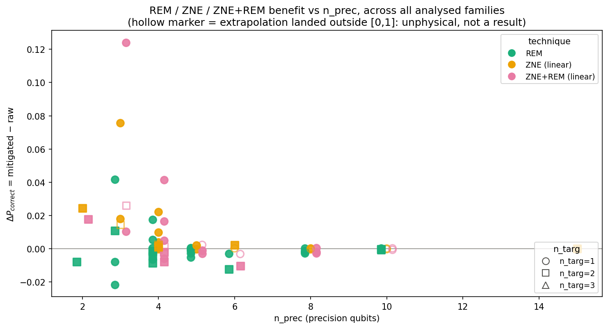<figcaption>braket_direct/rigetti_cepheus_20260807/plots/mitigation_benefit_all_families.png</figcaption></figure><figure>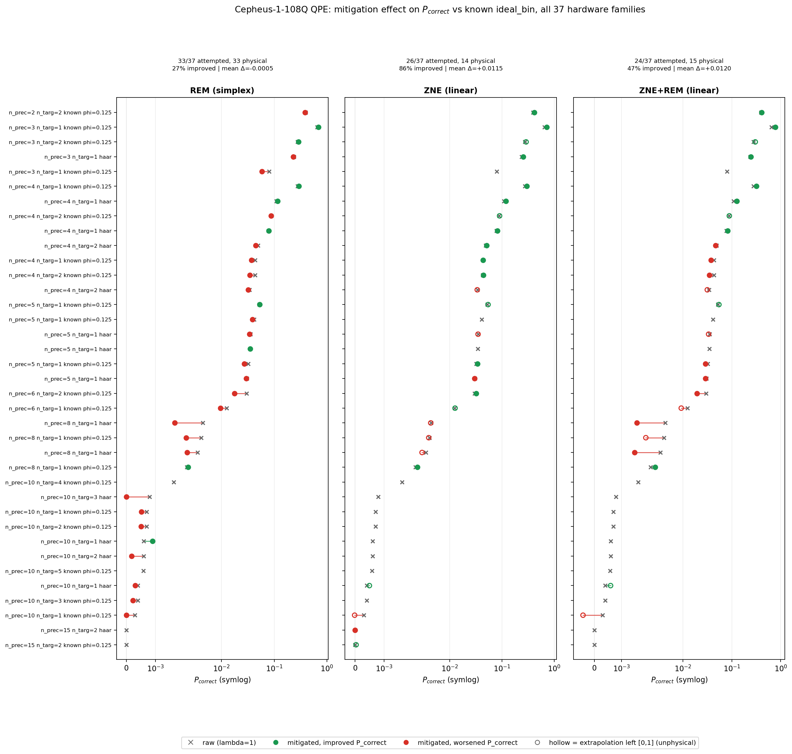<figcaption>braket_direct/rigetti_cepheus_20260807/plots/mitigation_effectiveness_known_answer.png</figcaption></figure><figure>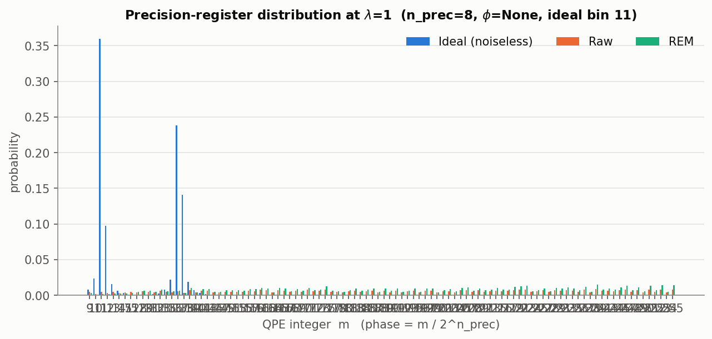<figcaption>braket_direct/rigetti_cepheus_20260807/plots/qpe_distribution_lambda1.png</figcaption></figure><figure>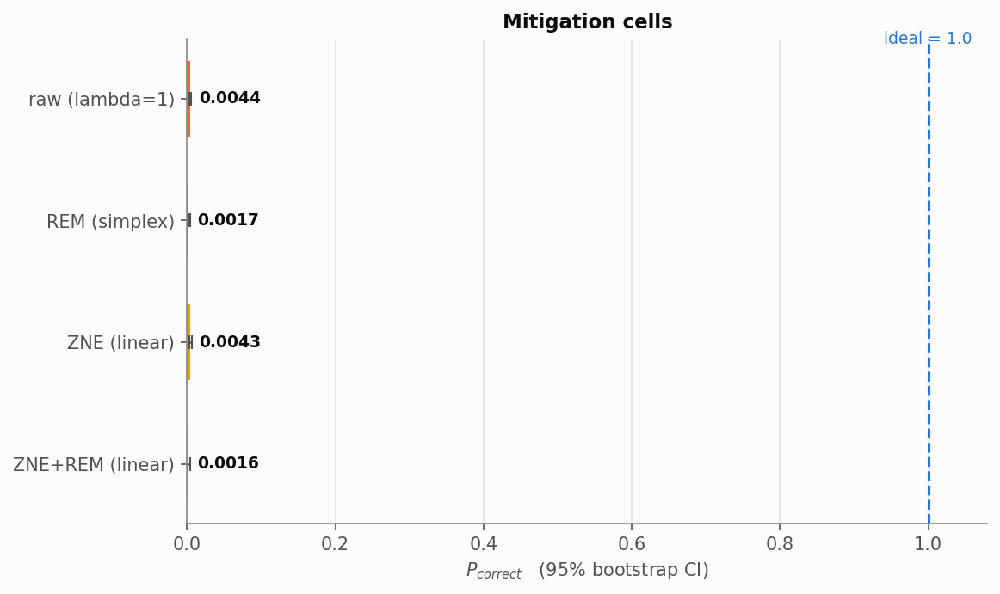<figcaption>braket_direct/rigetti_cepheus_20260807/plots/qpe_mitigation_summary.png</figcaption></figure><figure>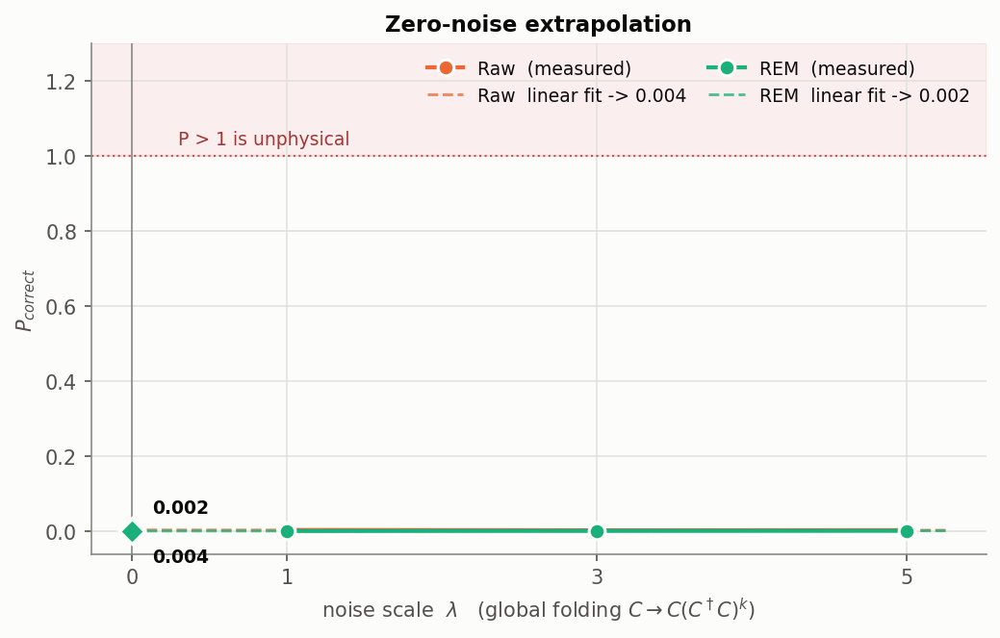<figcaption>braket_direct/rigetti_cepheus_20260807/plots/qpe_zne_extrapolation.png</figcaption></figure><figure>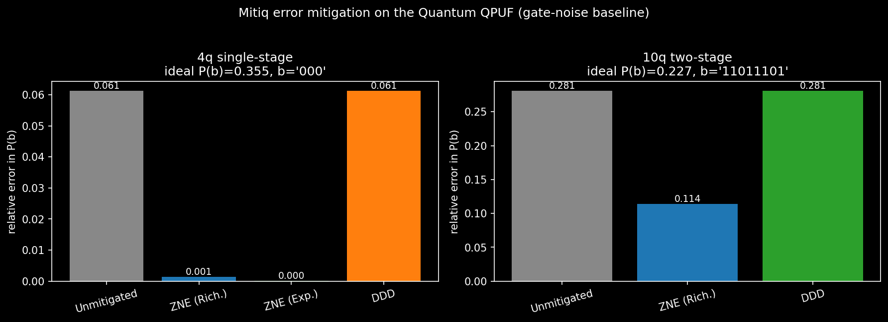<figcaption>noise_mitigation/plots/noise_mitigation_summary.png</figcaption></figure><figure>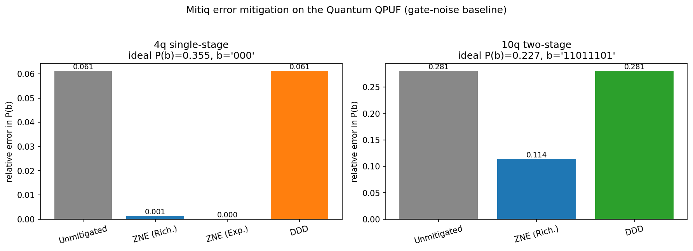<figcaption>braket_direct_reserve/plots/noise_mitigation_summary.png</figcaption></figure></div></section>

<section><h2>Per-run figures</h2><section class="grp"><h3>GHZ <span class="cnt">12</span></h3><article class="card" id="r-55b99581"><h4><span class="num">#1</span> GHZ · Forte-Enterprise-1 · d= n_targ= · 256 shots</h4>
<p class="mono sm">55b99581-38a7-47f4-a24b-fee26a360dc7 · 2026-04-10 11:01:51 · result: yes · log: joined: qpu_benchmark/job_results/job_log.txt</p>
<div class="figs"><figure>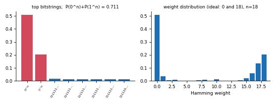<figcaption>generated by build_ledger.py · decode: direct (Braket Circuit API, char i = qubit i)</figcaption></figure><figure>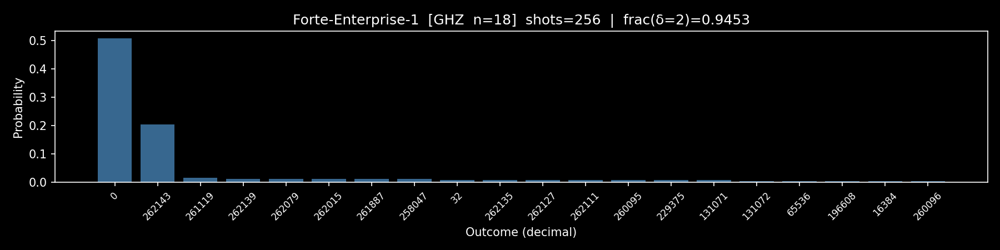<figcaption>existing plot: qpu_benchmark/plots/ghz/Forte_Enterprise_1_ghz_n18.png  (per device/type/n; may summarise a sibling run)</figcaption></figure></div>
<details><summary>all logged / result parameters</summary><dl><dt>task_id</dt><dd>arn:aws:braket:us-east-1:767397707562:quantum-task/55b99581-38a7-47f4-a24b-fee26a360dc7</dd><dt>submitted_at</dt><dd>2026-04-10T11:01:51.291919+00:00</dd><dt>device</dt><dd>Forte-Enterprise-1</dd><dt>device_arn</dt><dd>arn:aws:braket:us-east-1::device/qpu/ionq/Forte-Enterprise-1</dd><dt>circuit_type</dt><dd>GHZ</dd><dt>n_qubits</dt><dd>18</dd><dt>n_shots</dt><dd>256</dd><dt>completed_at</dt><dd>2026-04-10T11:27:54.045000+00:00</dd><dt>queue_time_seconds</dt><dd>1561.86</dd><dt>wall_time_seconds</dt><dd>1562.753081</dd><dt>qpu_time_seconds</dt><dd>null</dd><dt>n_shots_requested</dt><dd>256</dd><dt>n_shots_actual</dt><dd>256</dd><dt>ghz_verification</dt><dd>{&quot;ideal_fraction&quot;: 0.7109375, &quot;ideal_shots&quot;: 182, &quot;total_shots&quot;: 256}</dd></dl><p class="mono sm">source: qpu_benchmark/job_results/55b99581-38a7-47f4-a24b-fee26a360dc7.json</p></details></article><article class="card" id="r-6a7e2d20"><h4><span class="num">#2</span> GHZ · Forte-Enterprise-1 · d= n_targ= · 256 shots</h4>
<p class="mono sm">6a7e2d20-ac62-41b0-ade7-6926377c4238 · 2026-04-10 11:01:52 · result: yes · log: joined: qpu_benchmark/job_results/job_log.txt</p>
<div class="figs"><figure>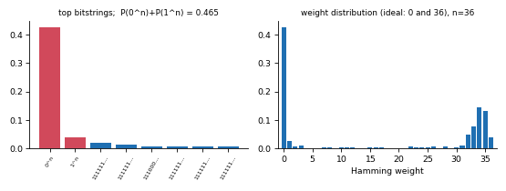<figcaption>generated by build_ledger.py · decode: direct (Braket Circuit API, char i = qubit i)</figcaption></figure><figure>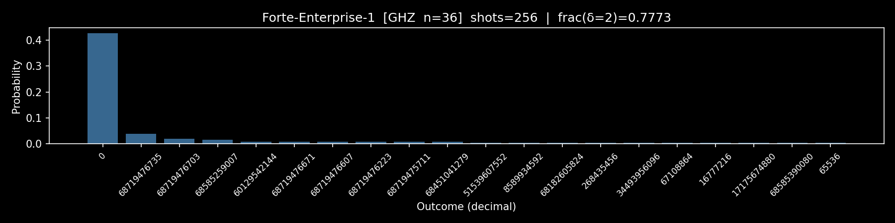<figcaption>existing plot: qpu_benchmark/plots/ghz/Forte_Enterprise_1_ghz_n36.png  (per device/type/n; may summarise a sibling run)</figcaption></figure></div>
<details><summary>all logged / result parameters</summary><dl><dt>task_id</dt><dd>arn:aws:braket:us-east-1:767397707562:quantum-task/6a7e2d20-ac62-41b0-ade7-6926377c4238</dd><dt>submitted_at</dt><dd>2026-04-10T11:01:52.243255+00:00</dd><dt>device</dt><dd>Forte-Enterprise-1</dd><dt>device_arn</dt><dd>arn:aws:braket:us-east-1::device/qpu/ionq/Forte-Enterprise-1</dd><dt>circuit_type</dt><dd>GHZ</dd><dt>n_qubits</dt><dd>36</dd><dt>n_shots</dt><dd>256</dd><dt>completed_at</dt><dd>2026-04-10T11:31:06.167000+00:00</dd><dt>queue_time_seconds</dt><dd>1753.67</dd><dt>wall_time_seconds</dt><dd>1753.923745</dd><dt>qpu_time_seconds</dt><dd>null</dd><dt>n_shots_requested</dt><dd>256</dd><dt>n_shots_actual</dt><dd>256</dd><dt>ghz_verification</dt><dd>{&quot;ideal_fraction&quot;: 0.46484375, &quot;ideal_shots&quot;: 119, &quot;total_shots&quot;: 256}</dd></dl><p class="mono sm">source: qpu_benchmark/job_results/6a7e2d20-ac62-41b0-ade7-6926377c4238.json</p></details></article><article class="card" id="r-7dbff98b"><h4><span class="num">#3</span> GHZ · Ankaa-3 · d= n_targ= · 256 shots</h4>
<p class="mono sm">7dbff98b-adbe-4a07-8e41-2d9498c6c8ad · 2026-04-10 11:02:16 · result: yes · log: joined: qpu_benchmark/job_results/job_log.txt</p>
<div class="figs"><figure>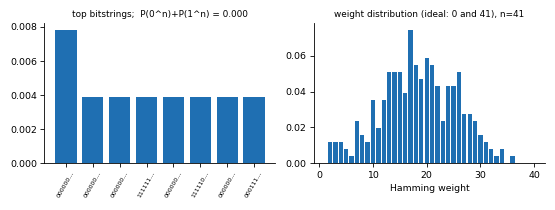<figcaption>generated by build_ledger.py · decode: direct (Braket Circuit API, char i = qubit i)</figcaption></figure><figure>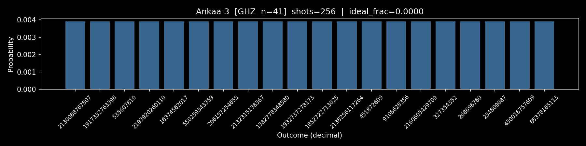<figcaption>existing plot: qpu_benchmark/plots/ghz/Ankaa_3_ghz_n41.png  (per device/type/n; may summarise a sibling run)</figcaption></figure></div>
<details><summary>all logged / result parameters</summary><dl><dt>task_id</dt><dd>arn:aws:braket:us-west-1:767397707562:quantum-task/7dbff98b-adbe-4a07-8e41-2d9498c6c8ad</dd><dt>submitted_at</dt><dd>2026-04-10T11:02:16.450495+00:00</dd><dt>device</dt><dd>Ankaa-3</dd><dt>device_arn</dt><dd>arn:aws:braket:us-west-1::device/qpu/rigetti/Ankaa-3</dd><dt>circuit_type</dt><dd>GHZ</dd><dt>n_qubits</dt><dd>41</dd><dt>n_shots</dt><dd>256</dd><dt>completed_at</dt><dd>2026-04-10T11:02:21.994000+00:00</dd><dt>queue_time_seconds</dt><dd>4.082</dd><dt>wall_time_seconds</dt><dd>5.543505</dd><dt>qpu_time_seconds</dt><dd>null</dd><dt>n_shots_requested</dt><dd>256</dd><dt>n_shots_actual</dt><dd>256</dd><dt>ghz_verification</dt><dd>{&quot;ideal_fraction&quot;: 0.0, &quot;ideal_shots&quot;: 0, &quot;total_shots&quot;: 256}</dd></dl><p class="mono sm">source: qpu_benchmark/job_results/7dbff98b-adbe-4a07-8e41-2d9498c6c8ad.json</p></details></article><article class="card" id="r-90b221f1"><h4><span class="num">#4</span> GHZ · Ankaa-3 · d= n_targ= · 256 shots</h4>
<p class="mono sm">90b221f1-6169-46c1-9e96-97e59ab0f843 · 2026-04-10 11:02:17 · result: yes · log: joined: qpu_benchmark/job_results/job_log.txt</p>
<div class="figs"><figure>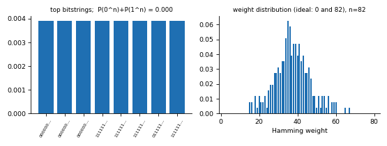<figcaption>generated by build_ledger.py · decode: direct (Braket Circuit API, char i = qubit i)</figcaption></figure><figure>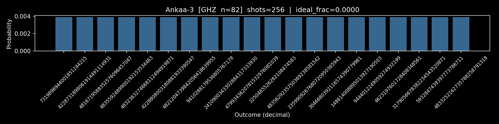<figcaption>existing plot: qpu_benchmark/plots/ghz/Ankaa_3_ghz_n82.png  (per device/type/n; may summarise a sibling run)</figcaption></figure></div>
<details><summary>all logged / result parameters</summary><dl><dt>task_id</dt><dd>arn:aws:braket:us-west-1:767397707562:quantum-task/90b221f1-6169-46c1-9e96-97e59ab0f843</dd><dt>submitted_at</dt><dd>2026-04-10T11:02:17.991527+00:00</dd><dt>device</dt><dd>Ankaa-3</dd><dt>device_arn</dt><dd>arn:aws:braket:us-west-1::device/qpu/rigetti/Ankaa-3</dd><dt>circuit_type</dt><dd>GHZ</dd><dt>n_qubits</dt><dd>82</dd><dt>n_shots</dt><dd>256</dd><dt>completed_at</dt><dd>2026-04-10T11:02:23.871000+00:00</dd><dt>queue_time_seconds</dt><dd>5.582</dd><dt>wall_time_seconds</dt><dd>5.879473</dd><dt>qpu_time_seconds</dt><dd>null</dd><dt>n_shots_requested</dt><dd>256</dd><dt>n_shots_actual</dt><dd>256</dd><dt>ghz_verification</dt><dd>{&quot;ideal_fraction&quot;: 0.0, &quot;ideal_shots&quot;: 0, &quot;total_shots&quot;: 256}</dd></dl><p class="mono sm">source: qpu_benchmark/job_results/90b221f1-6169-46c1-9e96-97e59ab0f843.json</p></details></article><article class="card" id="r-c07009c0"><h4><span class="num">#5</span> GHZ · Garnet · d= n_targ= · 256 shots</h4>
<p class="mono sm">c07009c0-64ae-486c-a71c-da42461827e5 · 2026-04-10 11:02:35 · result: yes · log: joined: qpu_benchmark/job_results/job_log.txt</p>
<div class="figs"><figure>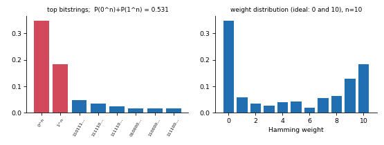<figcaption>generated by build_ledger.py · decode: direct (Braket Circuit API, char i = qubit i)</figcaption></figure><figure>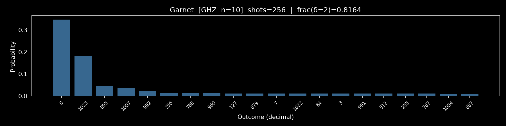<figcaption>existing plot: qpu_benchmark/plots/ghz/Garnet_ghz_n10.png  (per device/type/n; may summarise a sibling run)</figcaption></figure></div>
<details><summary>all logged / result parameters</summary><dl><dt>task_id</dt><dd>arn:aws:braket:eu-north-1:767397707562:quantum-task/c07009c0-64ae-486c-a71c-da42461827e5</dd><dt>submitted_at</dt><dd>2026-04-10T11:02:35.108153+00:00</dd><dt>device</dt><dd>Garnet</dd><dt>device_arn</dt><dd>arn:aws:braket:eu-north-1::device/qpu/iqm/Garnet</dd><dt>circuit_type</dt><dd>GHZ</dd><dt>n_qubits</dt><dd>10</dd><dt>n_shots</dt><dd>256</dd><dt>completed_at</dt><dd>2026-04-10T11:02:39.816000+00:00</dd><dt>queue_time_seconds</dt><dd>3.398</dd><dt>wall_time_seconds</dt><dd>4.707847</dd><dt>qpu_time_seconds</dt><dd>null</dd><dt>n_shots_requested</dt><dd>256</dd><dt>n_shots_actual</dt><dd>256</dd><dt>ghz_verification</dt><dd>{&quot;ideal_fraction&quot;: 0.53125, &quot;ideal_shots&quot;: 136, &quot;total_shots&quot;: 256}</dd></dl><p class="mono sm">source: qpu_benchmark/job_results/c07009c0-64ae-486c-a71c-da42461827e5.json</p></details></article><article class="card" id="r-1e02ea19"><h4><span class="num">#6</span> GHZ · Garnet · d= n_targ= · 256 shots</h4>
<p class="mono sm">1e02ea19-3893-486a-8d66-a0927c676916 · 2026-04-10 11:02:36 · result: yes · log: joined: qpu_benchmark/job_results/job_log.txt</p>
<div class="figs"><figure>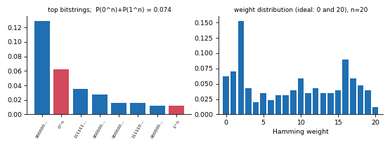<figcaption>generated by build_ledger.py · decode: direct (Braket Circuit API, char i = qubit i)</figcaption></figure><figure>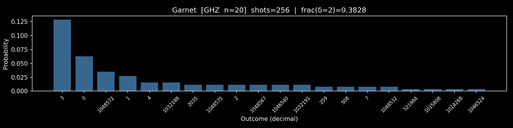<figcaption>existing plot: qpu_benchmark/plots/ghz/Garnet_ghz_n20.png  (per device/type/n; may summarise a sibling run)</figcaption></figure></div>
<details><summary>all logged / result parameters</summary><dl><dt>task_id</dt><dd>arn:aws:braket:eu-north-1:767397707562:quantum-task/1e02ea19-3893-486a-8d66-a0927c676916</dd><dt>submitted_at</dt><dd>2026-04-10T11:02:36.531542+00:00</dd><dt>device</dt><dd>Garnet</dd><dt>device_arn</dt><dd>arn:aws:braket:eu-north-1::device/qpu/iqm/Garnet</dd><dt>circuit_type</dt><dd>GHZ</dd><dt>n_qubits</dt><dd>20</dd><dt>n_shots</dt><dd>256</dd><dt>completed_at</dt><dd>2026-04-10T11:02:44.411000+00:00</dd><dt>queue_time_seconds</dt><dd>7.617</dd><dt>wall_time_seconds</dt><dd>7.879458</dd><dt>qpu_time_seconds</dt><dd>null</dd><dt>n_shots_requested</dt><dd>256</dd><dt>n_shots_actual</dt><dd>256</dd><dt>ghz_verification</dt><dd>{&quot;ideal_fraction&quot;: 0.07421875, &quot;ideal_shots&quot;: 19, &quot;total_shots&quot;: 256}</dd></dl><p class="mono sm">source: qpu_benchmark/job_results/1e02ea19-3893-486a-8d66-a0927c676916.json</p></details></article><article class="card" id="r-34f69e3b"><h4><span class="num">#7</span> GHZ · Emerald · d= n_targ= · 256 shots</h4>
<p class="mono sm">34f69e3b-01ea-4df0-b8f6-83f3433a78a5 · 2026-04-10 11:02:38 · result: FAILED task (FAILED), no counts · log: joined: qpu_benchmark/job_results/job_log.txt</p>
<div class="figs"><p class="note">No counts for this entry, so no plot.</p></div><p class="note">task status in result JSON: FAILED</p>
<details><summary>all logged / result parameters</summary><dl><dt>task_id</dt><dd>arn:aws:braket:eu-north-1:767397707562:quantum-task/34f69e3b-01ea-4df0-b8f6-83f3433a78a5</dd><dt>submitted_at</dt><dd>2026-04-10T11:02:38.041794+00:00</dd><dt>device</dt><dd>Emerald</dd><dt>device_arn</dt><dd>arn:aws:braket:eu-north-1::device/qpu/iqm/Emerald</dd><dt>circuit_type</dt><dd>GHZ</dd><dt>n_qubits</dt><dd>27</dd><dt>n_shots</dt><dd>256</dd><dt>status</dt><dd>FAILED</dd></dl><p class="mono sm">source: qpu_benchmark/job_results/34f69e3b-01ea-4df0-b8f6-83f3433a78a5.json</p></details></article><article class="card" id="r-ba7d199c"><h4><span class="num">#8</span> GHZ · Emerald · d= n_targ= · 256 shots</h4>
<p class="mono sm">ba7d199c-e970-4b5b-b978-9da43ebf7671 · 2026-04-10 11:02:38 · result: FAILED task (FAILED), no counts · log: joined: qpu_benchmark/job_results/job_log.txt</p>
<div class="figs"><p class="note">No counts for this entry, so no plot.</p></div><p class="note">task status in result JSON: FAILED</p>
<details><summary>all logged / result parameters</summary><dl><dt>task_id</dt><dd>arn:aws:braket:eu-north-1:767397707562:quantum-task/ba7d199c-e970-4b5b-b978-9da43ebf7671</dd><dt>submitted_at</dt><dd>2026-04-10T11:02:38.581917+00:00</dd><dt>device</dt><dd>Emerald</dd><dt>device_arn</dt><dd>arn:aws:braket:eu-north-1::device/qpu/iqm/Emerald</dd><dt>circuit_type</dt><dd>GHZ</dd><dt>n_qubits</dt><dd>54</dd><dt>n_shots</dt><dd>256</dd><dt>status</dt><dd>FAILED</dd></dl><p class="mono sm">source: qpu_benchmark/job_results/ba7d199c-e970-4b5b-b978-9da43ebf7671.json</p></details></article><article class="card" id="r-f9e92a3b"><h4><span class="num">#9</span> GHZ · Ankaa-3 · d= n_targ= · 256 shots</h4>
<p class="mono sm">f9e92a3b-d7ec-451a-a879-75c2482423a8 · 2026-04-10 11:07:21 · result: yes · log: joined: qpu_benchmark/job_results/job_log.txt</p>
<div class="figs"><figure>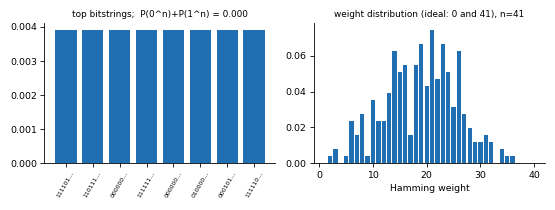<figcaption>generated by build_ledger.py · decode: direct (Braket Circuit API, char i = qubit i)</figcaption></figure><figure><figcaption>existing plot: qpu_benchmark/plots/ghz/Ankaa_3_ghz_n41.png  (per device/type/n; may summarise a sibling run)</figcaption></figure></div>
<details><summary>all logged / result parameters</summary><dl><dt>task_id</dt><dd>arn:aws:braket:us-west-1:767397707562:quantum-task/f9e92a3b-d7ec-451a-a879-75c2482423a8</dd><dt>submitted_at</dt><dd>2026-04-10T11:07:21.992397+00:00</dd><dt>device</dt><dd>Ankaa-3</dd><dt>device_arn</dt><dd>arn:aws:braket:us-west-1::device/qpu/rigetti/Ankaa-3</dd><dt>circuit_type</dt><dd>GHZ</dd><dt>n_qubits</dt><dd>41</dd><dt>n_shots</dt><dd>256</dd><dt>completed_at</dt><dd>2026-04-10T11:07:25.604000+00:00</dd><dt>queue_time_seconds</dt><dd>1.426</dd><dt>wall_time_seconds</dt><dd>3.611603</dd><dt>qpu_time_seconds</dt><dd>null</dd><dt>n_shots_requested</dt><dd>256</dd><dt>n_shots_actual</dt><dd>256</dd><dt>ghz_verification</dt><dd>{&quot;ideal_fraction&quot;: 0.0, &quot;ideal_shots&quot;: 0, &quot;total_shots&quot;: 256}</dd></dl><p class="mono sm">source: qpu_benchmark/job_results/f9e92a3b-d7ec-451a-a879-75c2482423a8.json</p></details></article><article class="card" id="r-593f3a4a"><h4><span class="num">#10</span> GHZ · Ankaa-3 · d= n_targ= · 256 shots</h4>
<p class="mono sm">593f3a4a-2da0-419d-9173-97ac49e917ba · 2026-04-10 11:07:24 · result: yes · log: joined: qpu_benchmark/job_results/job_log.txt</p>
<div class="figs"><figure><figcaption>generated by build_ledger.py · decode: direct (Braket Circuit API, char i = qubit i)</figcaption></figure><figure><figcaption>existing plot: qpu_benchmark/plots/ghz/Ankaa_3_ghz_n82.png  (per device/type/n; may summarise a sibling run)</figcaption></figure></div>
<details><summary>all logged / result parameters</summary><dl><dt>task_id</dt><dd>arn:aws:braket:us-west-1:767397707562:quantum-task/593f3a4a-2da0-419d-9173-97ac49e917ba</dd><dt>submitted_at</dt><dd>2026-04-10T11:07:24.258407+00:00</dd><dt>device</dt><dd>Ankaa-3</dd><dt>device_arn</dt><dd>arn:aws:braket:us-west-1::device/qpu/rigetti/Ankaa-3</dd><dt>circuit_type</dt><dd>GHZ</dd><dt>n_qubits</dt><dd>82</dd><dt>n_shots</dt><dd>256</dd><dt>completed_at</dt><dd>2026-04-10T11:07:25.880000+00:00</dd><dt>queue_time_seconds</dt><dd>1.298</dd><dt>wall_time_seconds</dt><dd>1.621593</dd><dt>qpu_time_seconds</dt><dd>null</dd><dt>n_shots_requested</dt><dd>256</dd><dt>n_shots_actual</dt><dd>256</dd><dt>ghz_verification</dt><dd>{&quot;ideal_fraction&quot;: 0.0, &quot;ideal_shots&quot;: 0, &quot;total_shots&quot;: 256}</dd></dl><p class="mono sm">source: qpu_benchmark/job_results/593f3a4a-2da0-419d-9173-97ac49e917ba.json</p></details></article><article class="card" id="r-c42317a2"><h4><span class="num">#11</span> GHZ · Cepheus-1-108Q · d= n_targ= · 256 shots</h4>
<p class="mono sm">c42317a2-7b95-4b3f-aa86-4f7f1835ff2f · 2026-04-10 11:07:26 · result: yes · log: joined: qpu_benchmark/job_results/job_log.txt</p>
<div class="figs"><figure>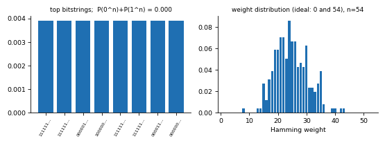<figcaption>generated by build_ledger.py · decode: direct (Braket Circuit API, char i = qubit i)</figcaption></figure><figure>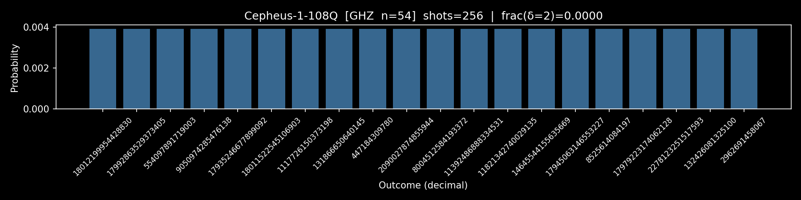<figcaption>existing plot: qpu_benchmark/plots/ghz/Cepheus_1_108Q_ghz_n54.png  (per device/type/n; may summarise a sibling run)</figcaption></figure></div>
<details><summary>all logged / result parameters</summary><dl><dt>task_id</dt><dd>arn:aws:braket:us-west-1:767397707562:quantum-task/c42317a2-7b95-4b3f-aa86-4f7f1835ff2f</dd><dt>submitted_at</dt><dd>2026-04-10T11:07:26.199070+00:00</dd><dt>device</dt><dd>Cepheus-1-108Q</dd><dt>device_arn</dt><dd>arn:aws:braket:us-west-1::device/qpu/rigetti/Cepheus-1-108Q</dd><dt>circuit_type</dt><dd>GHZ</dd><dt>n_qubits</dt><dd>54</dd><dt>n_shots</dt><dd>256</dd><dt>completed_at</dt><dd>2026-04-10T11:07:31.234000+00:00</dd><dt>queue_time_seconds</dt><dd>3.938</dd><dt>wall_time_seconds</dt><dd>5.03493</dd><dt>qpu_time_seconds</dt><dd>null</dd><dt>n_shots_requested</dt><dd>256</dd><dt>n_shots_actual</dt><dd>256</dd><dt>ghz_verification</dt><dd>{&quot;ideal_fraction&quot;: 0.0, &quot;ideal_shots&quot;: 0, &quot;total_shots&quot;: 256}</dd></dl><p class="mono sm">source: qpu_benchmark/job_results/c42317a2-7b95-4b3f-aa86-4f7f1835ff2f.json</p></details></article><article class="card" id="r-d10d5d01"><h4><span class="num">#12</span> GHZ · Cepheus-1-108Q · d= n_targ= · 256 shots</h4>
<p class="mono sm">d10d5d01-732a-44e6-ae1c-344918a1ed2e · 2026-04-10 11:07:27 · result: FAILED task (FAILED), no counts · log: joined: qpu_benchmark/job_results/job_log.txt</p>
<div class="figs"><p class="note">No counts for this entry, so no plot.</p></div><p class="note">task status in result JSON: FAILED</p>
<details><summary>all logged / result parameters</summary><dl><dt>task_id</dt><dd>arn:aws:braket:us-west-1:767397707562:quantum-task/d10d5d01-732a-44e6-ae1c-344918a1ed2e</dd><dt>submitted_at</dt><dd>2026-04-10T11:07:27.396611+00:00</dd><dt>device</dt><dd>Cepheus-1-108Q</dd><dt>device_arn</dt><dd>arn:aws:braket:us-west-1::device/qpu/rigetti/Cepheus-1-108Q</dd><dt>circuit_type</dt><dd>GHZ</dd><dt>n_qubits</dt><dd>108</dd><dt>n_shots</dt><dd>256</dd><dt>status</dt><dd>FAILED</dd></dl><p class="mono sm">source: qpu_benchmark/job_results/d10d5d01-732a-44e6-ae1c-344918a1ed2e.json</p></details></article></section><section class="grp"><h3>QFT <span class="cnt">9</span></h3><article class="card" id="r-5b696fd4"><h4><span class="num">#13</span> QFT · Ankaa-3 · d= n_targ= · 256 shots</h4>
<p class="mono sm">5b696fd4-0f65-4d9b-9dca-bb385c0a0765 · 2026-04-10 10:59:23 · result: FAILED task (FAILED), no counts · log: joined: qpu_benchmark/job_results/job_log.txt</p>
<div class="figs"><p class="note">No counts for this entry, so no plot.</p></div><p class="note">task status in result JSON: FAILED</p>
<details><summary>all logged / result parameters</summary><dl><dt>task_id</dt><dd>arn:aws:braket:us-west-1:767397707562:quantum-task/5b696fd4-0f65-4d9b-9dca-bb385c0a0765</dd><dt>submitted_at</dt><dd>2026-04-10T10:59:23.946195+00:00</dd><dt>device</dt><dd>Ankaa-3</dd><dt>device_arn</dt><dd>arn:aws:braket:us-west-1::device/qpu/rigetti/Ankaa-3</dd><dt>circuit_type</dt><dd>QFT</dd><dt>n_qubits</dt><dd>41</dd><dt>n_shots</dt><dd>256</dd><dt>status</dt><dd>FAILED</dd></dl><p class="mono sm">source: qpu_benchmark/job_results/5b696fd4-0f65-4d9b-9dca-bb385c0a0765.json</p></details></article><article class="card" id="r-7ef5a873"><h4><span class="num">#14</span> QFT · Ankaa-3 · d= n_targ= · 256 shots</h4>
<p class="mono sm">7ef5a873-3668-49fe-aee7-4562462e82dd · 2026-04-10 10:59:26 · result: FAILED task (FAILED), no counts · log: joined: qpu_benchmark/job_results/job_log.txt</p>
<div class="figs"><p class="note">No counts for this entry, so no plot.</p></div><p class="note">task status in result JSON: FAILED</p>
<details><summary>all logged / result parameters</summary><dl><dt>task_id</dt><dd>arn:aws:braket:us-west-1:767397707562:quantum-task/7ef5a873-3668-49fe-aee7-4562462e82dd</dd><dt>submitted_at</dt><dd>2026-04-10T10:59:26.127903+00:00</dd><dt>device</dt><dd>Ankaa-3</dd><dt>device_arn</dt><dd>arn:aws:braket:us-west-1::device/qpu/rigetti/Ankaa-3</dd><dt>circuit_type</dt><dd>QFT</dd><dt>n_qubits</dt><dd>82</dd><dt>n_shots</dt><dd>256</dd><dt>status</dt><dd>FAILED</dd></dl><p class="mono sm">source: qpu_benchmark/job_results/7ef5a873-3668-49fe-aee7-4562462e82dd.json</p></details></article><article class="card" id="r-834addd9"><h4><span class="num">#15</span> QFT · Garnet · d= n_targ= · 256 shots</h4>
<p class="mono sm">834addd9-b2dd-42f5-9d69-021fe7c1b217 · 2026-04-10 11:00:32 · result: yes · log: joined: qpu_benchmark/job_results/job_log.txt</p>
<div class="figs"><figure>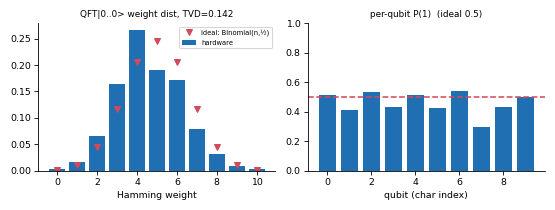<figcaption>generated by build_ledger.py · decode: direct (Braket Circuit API, char i = qubit i)</figcaption></figure><figure>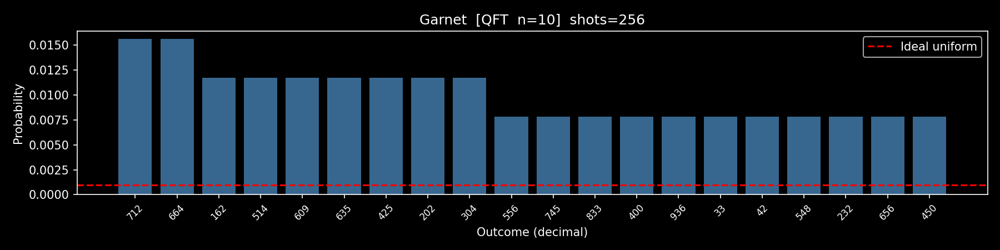<figcaption>existing plot: qpu_benchmark/plots/qft/Garnet_qft_n10.png  (per device/type/n; may summarise a sibling run)</figcaption></figure></div>
<details><summary>all logged / result parameters</summary><dl><dt>task_id</dt><dd>arn:aws:braket:eu-north-1:767397707562:quantum-task/834addd9-b2dd-42f5-9d69-021fe7c1b217</dd><dt>submitted_at</dt><dd>2026-04-10T11:00:32.636751+00:00</dd><dt>device</dt><dd>Garnet</dd><dt>device_arn</dt><dd>arn:aws:braket:eu-north-1::device/qpu/iqm/Garnet</dd><dt>circuit_type</dt><dd>QFT</dd><dt>n_qubits</dt><dd>10</dd><dt>n_shots</dt><dd>256</dd><dt>completed_at</dt><dd>2026-04-10T11:00:42.519000+00:00</dd><dt>queue_time_seconds</dt><dd>8.076</dd><dt>wall_time_seconds</dt><dd>9.882249</dd><dt>qpu_time_seconds</dt><dd>null</dd><dt>n_shots_requested</dt><dd>256</dd><dt>n_shots_actual</dt><dd>256</dd></dl><p class="mono sm">source: qpu_benchmark/job_results/834addd9-b2dd-42f5-9d69-021fe7c1b217.json</p></details></article><article class="card" id="r-3c100d9b"><h4><span class="num">#16</span> QFT · Garnet · d= n_targ= · 256 shots</h4>
<p class="mono sm">3c100d9b-1623-4a1c-99b8-548ccb2ec1d5 · 2026-04-10 11:00:34 · result: yes · log: joined: qpu_benchmark/job_results/job_log.txt</p>
<div class="figs"><figure>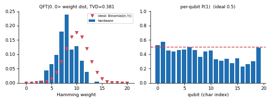<figcaption>generated by build_ledger.py · decode: direct (Braket Circuit API, char i = qubit i)</figcaption></figure><figure>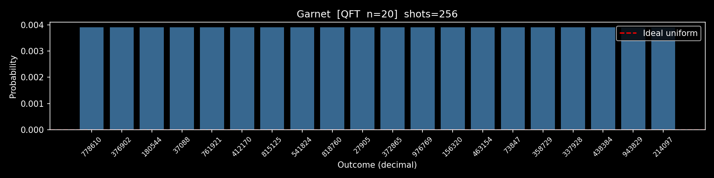<figcaption>existing plot: qpu_benchmark/plots/qft/Garnet_qft_n20.png  (per device/type/n; may summarise a sibling run)</figcaption></figure></div>
<details><summary>all logged / result parameters</summary><dl><dt>task_id</dt><dd>arn:aws:braket:eu-north-1:767397707562:quantum-task/3c100d9b-1623-4a1c-99b8-548ccb2ec1d5</dd><dt>submitted_at</dt><dd>2026-04-10T11:00:34.562278+00:00</dd><dt>device</dt><dd>Garnet</dd><dt>device_arn</dt><dd>arn:aws:braket:eu-north-1::device/qpu/iqm/Garnet</dd><dt>circuit_type</dt><dd>QFT</dd><dt>n_qubits</dt><dd>20</dd><dt>n_shots</dt><dd>256</dd><dt>completed_at</dt><dd>2026-04-10T11:00:48.736000+00:00</dd><dt>queue_time_seconds</dt><dd>13.858</dd><dt>wall_time_seconds</dt><dd>14.173722</dd><dt>qpu_time_seconds</dt><dd>null</dd><dt>n_shots_requested</dt><dd>256</dd><dt>n_shots_actual</dt><dd>256</dd></dl><p class="mono sm">source: qpu_benchmark/job_results/3c100d9b-1623-4a1c-99b8-548ccb2ec1d5.json</p></details></article><article class="card" id="r-36a917a1"><h4><span class="num">#17</span> QFT · Emerald · d= n_targ= · 256 shots</h4>
<p class="mono sm">36a917a1-1641-4343-883e-2f6e7c4dbcb4 · 2026-04-10 11:00:36 · result: FAILED task (FAILED), no counts · log: joined: qpu_benchmark/job_results/job_log.txt</p>
<div class="figs"><p class="note">No counts for this entry, so no plot.</p></div><p class="note">task status in result JSON: FAILED</p>
<details><summary>all logged / result parameters</summary><dl><dt>task_id</dt><dd>arn:aws:braket:eu-north-1:767397707562:quantum-task/36a917a1-1641-4343-883e-2f6e7c4dbcb4</dd><dt>submitted_at</dt><dd>2026-04-10T11:00:36.124842+00:00</dd><dt>device</dt><dd>Emerald</dd><dt>device_arn</dt><dd>arn:aws:braket:eu-north-1::device/qpu/iqm/Emerald</dd><dt>circuit_type</dt><dd>QFT</dd><dt>n_qubits</dt><dd>27</dd><dt>n_shots</dt><dd>256</dd><dt>status</dt><dd>FAILED</dd></dl><p class="mono sm">source: qpu_benchmark/job_results/36a917a1-1641-4343-883e-2f6e7c4dbcb4.json</p></details></article><article class="card" id="r-746c30d3"><h4><span class="num">#18</span> QFT · Emerald · d= n_targ= · 256 shots</h4>
<p class="mono sm">746c30d3-de34-4448-8f81-1bf1bdd4eb6c · 2026-04-10 11:00:36 · result: FAILED task (FAILED), no counts · log: joined: qpu_benchmark/job_results/job_log.txt</p>
<div class="figs"><p class="note">No counts for this entry, so no plot.</p></div><p class="note">task status in result JSON: FAILED</p>
<details><summary>all logged / result parameters</summary><dl><dt>task_id</dt><dd>arn:aws:braket:eu-north-1:767397707562:quantum-task/746c30d3-de34-4448-8f81-1bf1bdd4eb6c</dd><dt>submitted_at</dt><dd>2026-04-10T11:00:36.905925+00:00</dd><dt>device</dt><dd>Emerald</dd><dt>device_arn</dt><dd>arn:aws:braket:eu-north-1::device/qpu/iqm/Emerald</dd><dt>circuit_type</dt><dd>QFT</dd><dt>n_qubits</dt><dd>54</dd><dt>n_shots</dt><dd>256</dd><dt>status</dt><dd>FAILED</dd></dl><p class="mono sm">source: qpu_benchmark/job_results/746c30d3-de34-4448-8f81-1bf1bdd4eb6c.json</p></details></article><article class="card" id="r-5a43bcef"><h4><span class="num">#19</span> QFT · Ankaa-3 · d= n_targ= · 256 shots</h4>
<p class="mono sm">5a43bcef-5d27-47b3-a046-d2909141daac · 2026-04-10 11:07:45 · result: FAILED task (FAILED), no counts · log: joined: qpu_benchmark/job_results/job_log.txt</p>
<div class="figs"><p class="note">No counts for this entry, so no plot.</p></div><p class="note">task status in result JSON: FAILED</p>
<details><summary>all logged / result parameters</summary><dl><dt>task_id</dt><dd>arn:aws:braket:us-west-1:767397707562:quantum-task/5a43bcef-5d27-47b3-a046-d2909141daac</dd><dt>submitted_at</dt><dd>2026-04-10T11:07:45.300420+00:00</dd><dt>device</dt><dd>Ankaa-3</dd><dt>device_arn</dt><dd>arn:aws:braket:us-west-1::device/qpu/rigetti/Ankaa-3</dd><dt>circuit_type</dt><dd>QFT</dd><dt>n_qubits</dt><dd>41</dd><dt>n_shots</dt><dd>256</dd><dt>status</dt><dd>FAILED</dd></dl><p class="mono sm">source: qpu_benchmark/job_results/5a43bcef-5d27-47b3-a046-d2909141daac.json</p></details></article><article class="card" id="r-07f9e262"><h4><span class="num">#20</span> QFT · Ankaa-3 · d= n_targ= · 256 shots</h4>
<p class="mono sm">07f9e262-3c18-4e3a-af2b-f65ea327bb2e · 2026-04-10 11:07:47 · result: FAILED task (FAILED), no counts · log: joined: qpu_benchmark/job_results/job_log.txt</p>
<div class="figs"><p class="note">No counts for this entry, so no plot.</p></div><p class="note">task status in result JSON: FAILED</p>
<details><summary>all logged / result parameters</summary><dl><dt>task_id</dt><dd>arn:aws:braket:us-west-1:767397707562:quantum-task/07f9e262-3c18-4e3a-af2b-f65ea327bb2e</dd><dt>submitted_at</dt><dd>2026-04-10T11:07:47.217923+00:00</dd><dt>device</dt><dd>Ankaa-3</dd><dt>device_arn</dt><dd>arn:aws:braket:us-west-1::device/qpu/rigetti/Ankaa-3</dd><dt>circuit_type</dt><dd>QFT</dd><dt>n_qubits</dt><dd>82</dd><dt>n_shots</dt><dd>256</dd><dt>status</dt><dd>FAILED</dd></dl><p class="mono sm">source: qpu_benchmark/job_results/07f9e262-3c18-4e3a-af2b-f65ea327bb2e.json</p></details></article><article class="card" id="r-d8fe2ca5"><h4><span class="num">#21</span> QFT · Cepheus-1-108Q · d= n_targ= · 256 shots</h4>
<p class="mono sm">d8fe2ca5-822e-4fca-b675-08106506b716 · 2026-04-10 11:07:52 · result: FAILED task (FAILED), no counts · log: joined: qpu_benchmark/job_results/job_log.txt</p>
<div class="figs"><p class="note">No counts for this entry, so no plot.</p></div><p class="note">task status in result JSON: FAILED</p>
<details><summary>all logged / result parameters</summary><dl><dt>task_id</dt><dd>arn:aws:braket:us-west-1:767397707562:quantum-task/d8fe2ca5-822e-4fca-b675-08106506b716</dd><dt>submitted_at</dt><dd>2026-04-10T11:07:52.235618+00:00</dd><dt>device</dt><dd>Cepheus-1-108Q</dd><dt>device_arn</dt><dd>arn:aws:braket:us-west-1::device/qpu/rigetti/Cepheus-1-108Q</dd><dt>circuit_type</dt><dd>QFT</dd><dt>n_qubits</dt><dd>54</dd><dt>n_shots</dt><dd>256</dd><dt>status</dt><dd>FAILED</dd></dl><p class="mono sm">source: qpu_benchmark/job_results/d8fe2ca5-822e-4fca-b675-08106506b716.json</p></details></article></section><section class="grp"><h3>Single-stage QPE (T gate) <span class="cnt">31</span></h3><article class="card" id="r-a4caf4d2"><h4><span class="num">#22</span> Single-stage QPE (T gate) · Forte-1 · d=17 n_targ=1 · 256 shots</h4>
<p class="mono sm">a4caf4d2-53cd-441d-850f-b6d218078d22 · 2026-04-24 06:12:29 · result: yes · log: joined: qpu_benchmark/job_results/job_log.txt</p>
<div class="figs"><figure>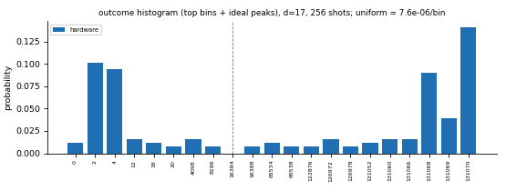<figcaption>generated by build_ledger.py · decode: direct (Braket Circuit API, char i = qubit i)</figcaption></figure><figure>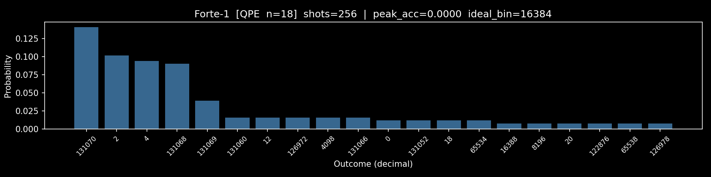<figcaption>existing plot: qpu_benchmark/plots/qpe_target1/Forte_1_qpe_n18.png  (per device/type/n; may summarise a sibling run)</figcaption></figure></div><p class="note">P(ideal bin 16384) direct=0.0000, bit-reversed counting reg=0.0938</p>
<details><summary>all logged / result parameters</summary><dl><dt>task_id</dt><dd>arn:aws:braket:us-east-1:767397707562:quantum-task/a4caf4d2-53cd-441d-850f-b6d218078d22</dd><dt>submitted_at</dt><dd>2026-04-24T06:12:29.944738+00:00</dd><dt>device</dt><dd>Forte-1</dd><dt>device_arn</dt><dd>arn:aws:braket:us-east-1::device/qpu/ionq/Forte-1</dd><dt>circuit_type</dt><dd>QPE</dd><dt>n_qubits</dt><dd>18</dd><dt>n_counting</dt><dd>17</dd><dt>n_shots</dt><dd>256</dd><dt>phase_target</dt><dd>0.125</dd><dt>completed_at</dt><dd>2026-04-24T09:37:25.406000+00:00</dd><dt>queue_time_seconds</dt><dd>12294.07</dd><dt>wall_time_seconds</dt><dd>12295.461262</dd><dt>qpu_time_seconds</dt><dd>null</dd><dt>n_shots_requested</dt><dd>256</dd><dt>n_shots_actual</dt><dd>256</dd></dl><p class="mono sm">source: qpu_benchmark/job_results/a4caf4d2-53cd-441d-850f-b6d218078d22.json</p></details></article><article class="card" id="r-cfacffe6"><h4><span class="num">#23</span> Single-stage QPE (T gate) · Forte-1 · d=35 n_targ=1 · 256 shots</h4>
<p class="mono sm">cfacffe6-7a98-4abe-afd0-43b162a47c31 · 2026-04-24 06:12:31 · result: yes · log: joined: qpu_benchmark/job_results/job_log.txt</p>
<div class="figs"><figure>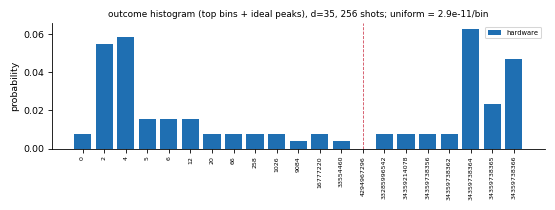<figcaption>generated by build_ledger.py · decode: direct (Braket Circuit API, char i = qubit i)</figcaption></figure><figure>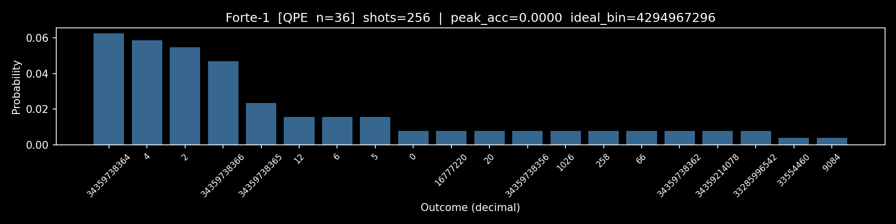<figcaption>existing plot: qpu_benchmark/plots/qpe_target1/Forte_1_qpe_n36.png  (per device/type/n; may summarise a sibling run)</figcaption></figure></div><p class="note">P(ideal bin 4294967296) direct=0.0000, bit-reversed counting reg=0.0586</p>
<details><summary>all logged / result parameters</summary><dl><dt>task_id</dt><dd>arn:aws:braket:us-east-1:767397707562:quantum-task/cfacffe6-7a98-4abe-afd0-43b162a47c31</dd><dt>submitted_at</dt><dd>2026-04-24T06:12:31.460819+00:00</dd><dt>device</dt><dd>Forte-1</dd><dt>device_arn</dt><dd>arn:aws:braket:us-east-1::device/qpu/ionq/Forte-1</dd><dt>circuit_type</dt><dd>QPE</dd><dt>n_qubits</dt><dd>36</dd><dt>n_counting</dt><dd>35</dd><dt>n_shots</dt><dd>256</dd><dt>phase_target</dt><dd>0.125</dd><dt>completed_at</dt><dd>2026-04-24T09:38:39.445000+00:00</dd><dt>queue_time_seconds</dt><dd>12367.354</dd><dt>wall_time_seconds</dt><dd>12367.984181</dd><dt>qpu_time_seconds</dt><dd>null</dd><dt>n_shots_requested</dt><dd>256</dd><dt>n_shots_actual</dt><dd>256</dd></dl><p class="mono sm">source: qpu_benchmark/job_results/cfacffe6-7a98-4abe-afd0-43b162a47c31.json</p></details></article><article class="card" id="r-ffad54c0"><h4><span class="num">#24</span> Single-stage QPE (T gate) · Forte-Enterprise-1 · d=17 n_targ=1 · 256 shots</h4>
<p class="mono sm">ffad54c0-6574-423c-ac16-0e83a12497c9 · 2026-04-24 06:12:32 · result: yes · log: joined: qpu_benchmark/job_results/job_log.txt</p>
<div class="figs"><figure>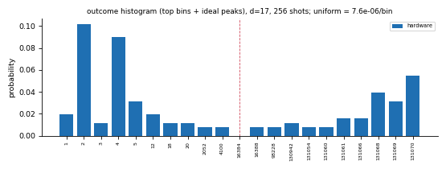<figcaption>generated by build_ledger.py · decode: direct (Braket Circuit API, char i = qubit i)</figcaption></figure><figure>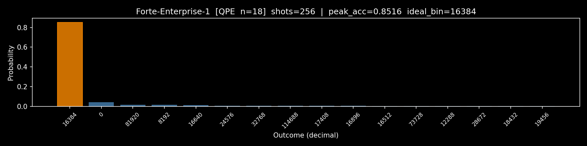<figcaption>existing plot: qpu_benchmark/plots/qpe_target1/Forte_Enterprise_1_qpe_n18.png  (per device/type/n; may summarise a sibling run)</figcaption></figure></div><p class="note">P(ideal bin 16384) direct=0.0000, bit-reversed counting reg=0.0898</p>
<details><summary>all logged / result parameters</summary><dl><dt>task_id</dt><dd>arn:aws:braket:us-east-1:767397707562:quantum-task/ffad54c0-6574-423c-ac16-0e83a12497c9</dd><dt>submitted_at</dt><dd>2026-04-24T06:12:32.786517+00:00</dd><dt>device</dt><dd>Forte-Enterprise-1</dd><dt>device_arn</dt><dd>arn:aws:braket:us-east-1::device/qpu/ionq/Forte-Enterprise-1</dd><dt>circuit_type</dt><dd>QPE</dd><dt>n_qubits</dt><dd>18</dd><dt>n_counting</dt><dd>17</dd><dt>n_shots</dt><dd>256</dd><dt>phase_target</dt><dd>0.125</dd><dt>completed_at</dt><dd>2026-04-24T06:30:14.157000+00:00</dd><dt>queue_time_seconds</dt><dd>1060.543</dd><dt>wall_time_seconds</dt><dd>1061.370483</dd><dt>qpu_time_seconds</dt><dd>null</dd><dt>n_shots_requested</dt><dd>256</dd><dt>n_shots_actual</dt><dd>256</dd></dl><p class="mono sm">source: qpu_benchmark/job_results/ffad54c0-6574-423c-ac16-0e83a12497c9.json</p></details></article><article class="card" id="r-80dcb5fa"><h4><span class="num">#25</span> Single-stage QPE (T gate) · Forte-Enterprise-1 · d=35 n_targ=1 · 256 shots</h4>
<p class="mono sm">80dcb5fa-9f86-490e-be6e-145bb5613a00 · 2026-04-24 06:12:33 · result: yes · log: joined: qpu_benchmark/job_results/job_log.txt</p>
<div class="figs"><figure>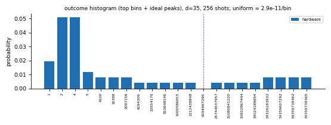<figcaption>generated by build_ledger.py · decode: direct (Braket Circuit API, char i = qubit i)</figcaption></figure><figure>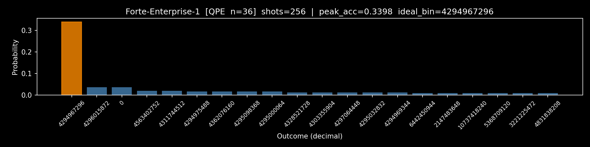<figcaption>existing plot: qpu_benchmark/plots/qpe_target1/Forte_Enterprise_1_qpe_n36.png  (per device/type/n; may summarise a sibling run)</figcaption></figure></div><p class="note">P(ideal bin 4294967296) direct=0.0000, bit-reversed counting reg=0.0508</p>
<details><summary>all logged / result parameters</summary><dl><dt>task_id</dt><dd>arn:aws:braket:us-east-1:767397707562:quantum-task/80dcb5fa-9f86-490e-be6e-145bb5613a00</dd><dt>submitted_at</dt><dd>2026-04-24T06:12:33.850566+00:00</dd><dt>device</dt><dd>Forte-Enterprise-1</dd><dt>device_arn</dt><dd>arn:aws:braket:us-east-1::device/qpu/ionq/Forte-Enterprise-1</dd><dt>circuit_type</dt><dd>QPE</dd><dt>n_qubits</dt><dd>36</dd><dt>n_counting</dt><dd>35</dd><dt>n_shots</dt><dd>256</dd><dt>phase_target</dt><dd>0.125</dd><dt>completed_at</dt><dd>2026-04-24T06:37:35.527000+00:00</dd><dt>queue_time_seconds</dt><dd>1501.125</dd><dt>wall_time_seconds</dt><dd>1501.676434</dd><dt>qpu_time_seconds</dt><dd>null</dd><dt>n_shots_requested</dt><dd>256</dd><dt>n_shots_actual</dt><dd>256</dd></dl><p class="mono sm">source: qpu_benchmark/job_results/80dcb5fa-9f86-490e-be6e-145bb5613a00.json</p></details></article><article class="card" id="r-1559fe27"><h4><span class="num">#26</span> Single-stage QPE (T gate) · Cepheus-1-108Q · d=53 n_targ=1 · 256 shots</h4>
<p class="mono sm">1559fe27-64ef-4434-a58a-ce01c9990ca3 · 2026-04-24 06:13:09 · result: FAILED task (FAILED), no counts · log: joined: qpu_benchmark/job_results/job_log.txt</p>
<div class="figs"><p class="note">No counts for this entry, so no plot.</p></div><p class="note">task status in result JSON: FAILED</p>
<details><summary>all logged / result parameters</summary><dl><dt>task_id</dt><dd>arn:aws:braket:us-west-1:767397707562:quantum-task/1559fe27-64ef-4434-a58a-ce01c9990ca3</dd><dt>submitted_at</dt><dd>2026-04-24T06:13:09.296988+00:00</dd><dt>device</dt><dd>Cepheus-1-108Q</dd><dt>device_arn</dt><dd>arn:aws:braket:us-west-1::device/qpu/rigetti/Cepheus-1-108Q</dd><dt>circuit_type</dt><dd>QPE</dd><dt>n_qubits</dt><dd>54</dd><dt>n_counting</dt><dd>53</dd><dt>n_shots</dt><dd>256</dd><dt>phase_target</dt><dd>0.125</dd><dt>status</dt><dd>FAILED</dd></dl><p class="mono sm">source: qpu_benchmark/job_results/1559fe27-64ef-4434-a58a-ce01c9990ca3.json</p></details></article><article class="card" id="r-76f0b185"><h4><span class="num">#27</span> Single-stage QPE (T gate) · Ibex-Q1 · d=5 n_targ=1 · 256 shots</h4>
<p class="mono sm">76f0b185-cd30-4140-a075-f01ea0363b82 · 2026-04-24 06:14:21 · result: yes · log: joined: qpu_benchmark/job_results/job_log.txt</p>
<div class="figs"><figure>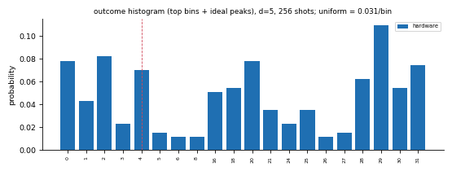<figcaption>generated by build_ledger.py · decode: direct (Braket Circuit API, char i = qubit i)</figcaption></figure><figure>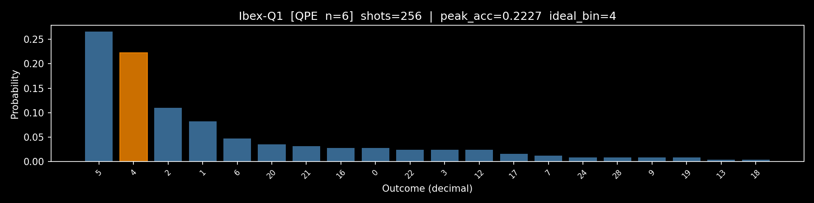<figcaption>existing plot: qpu_benchmark/plots/qpe_target1/Ibex_Q1_qpe_n6.png  (per device/type/n; may summarise a sibling run)</figcaption></figure></div><p class="note">P(ideal bin 4) direct=0.0703, bit-reversed counting reg=0.0703</p>
<details><summary>all logged / result parameters</summary><dl><dt>task_id</dt><dd>arn:aws:braket:eu-north-1:767397707562:quantum-task/76f0b185-cd30-4140-a075-f01ea0363b82</dd><dt>submitted_at</dt><dd>2026-04-24T06:14:21.551484+00:00</dd><dt>device</dt><dd>Ibex-Q1</dd><dt>device_arn</dt><dd>arn:aws:braket:eu-north-1::device/qpu/aqt/Ibex-Q1</dd><dt>circuit_type</dt><dd>QPE</dd><dt>n_qubits</dt><dd>6</dd><dt>n_counting</dt><dd>5</dd><dt>n_shots</dt><dd>256</dd><dt>phase_target</dt><dd>0.125</dd><dt>completed_at</dt><dd>2026-04-24T08:06:44.378000+00:00</dd><dt>queue_time_seconds</dt><dd>6741.278</dd><dt>wall_time_seconds</dt><dd>6742.826516</dd><dt>qpu_time_seconds</dt><dd>null</dd><dt>n_shots_requested</dt><dd>256</dd><dt>n_shots_actual</dt><dd>256</dd></dl><p class="mono sm">source: qpu_benchmark/job_results/76f0b185-cd30-4140-a075-f01ea0363b82.json</p></details></article><article class="card" id="r-feee0acd"><h4><span class="num">#28</span> Single-stage QPE (T gate) · Ibex-Q1 · d=11 n_targ=1 · 256 shots</h4>
<p class="mono sm">feee0acd-4813-4d9e-9e2e-7679babcd2ee · 2026-04-24 06:14:23 · result: yes · log: joined: qpu_benchmark/job_results/job_log.txt</p>
<div class="figs"><figure>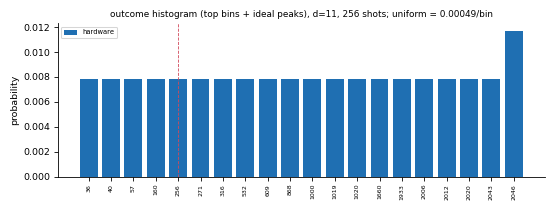<figcaption>generated by build_ledger.py · decode: direct (Braket Circuit API, char i = qubit i)</figcaption></figure><figure>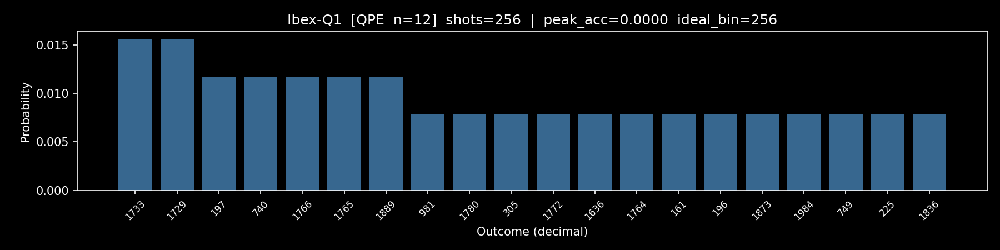<figcaption>existing plot: qpu_benchmark/plots/qpe_target1/Ibex_Q1_qpe_n12.png  (per device/type/n; may summarise a sibling run)</figcaption></figure></div><p class="note">P(ideal bin 256) direct=0.0078, bit-reversed counting reg=0.0000</p>
<details><summary>all logged / result parameters</summary><dl><dt>task_id</dt><dd>arn:aws:braket:eu-north-1:767397707562:quantum-task/feee0acd-4813-4d9e-9e2e-7679babcd2ee</dd><dt>submitted_at</dt><dd>2026-04-24T06:14:23.219806+00:00</dd><dt>device</dt><dd>Ibex-Q1</dd><dt>device_arn</dt><dd>arn:aws:braket:eu-north-1::device/qpu/aqt/Ibex-Q1</dd><dt>circuit_type</dt><dd>QPE</dd><dt>n_qubits</dt><dd>12</dd><dt>n_counting</dt><dd>11</dd><dt>n_shots</dt><dd>256</dd><dt>phase_target</dt><dd>0.125</dd><dt>completed_at</dt><dd>2026-04-24T08:04:15.295000+00:00</dd><dt>queue_time_seconds</dt><dd>6591.794</dd><dt>wall_time_seconds</dt><dd>6592.075194</dd><dt>qpu_time_seconds</dt><dd>null</dd><dt>n_shots_requested</dt><dd>256</dd><dt>n_shots_actual</dt><dd>256</dd></dl><p class="mono sm">source: qpu_benchmark/job_results/feee0acd-4813-4d9e-9e2e-7679babcd2ee.json</p></details></article><article class="card" id="r-f81b9537"><h4><span class="num">#29</span> Single-stage QPE (T gate) · Garnet · d=9 n_targ=1 · 256 shots</h4>
<p class="mono sm">f81b9537-25df-4807-a610-ce0fe2f51e4e · 2026-04-24 06:14:34 · result: yes · log: joined: qpu_benchmark/job_results/job_log.txt</p>
<div class="figs"><figure>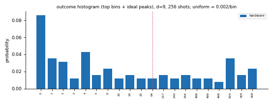<figcaption>generated by build_ledger.py · decode: direct (Braket Circuit API, char i = qubit i)</figcaption></figure><figure>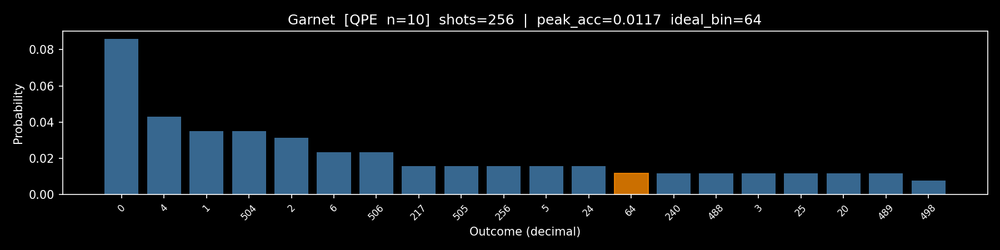<figcaption>existing plot: qpu_benchmark/plots/qpe_target1/Garnet_qpe_n10.png  (per device/type/n; may summarise a sibling run)</figcaption></figure></div><p class="note">P(ideal bin 64) direct=0.0117, bit-reversed counting reg=0.0430</p>
<details><summary>all logged / result parameters</summary><dl><dt>task_id</dt><dd>arn:aws:braket:eu-north-1:767397707562:quantum-task/f81b9537-25df-4807-a610-ce0fe2f51e4e</dd><dt>submitted_at</dt><dd>2026-04-24T06:14:34.715345+00:00</dd><dt>device</dt><dd>Garnet</dd><dt>device_arn</dt><dd>arn:aws:braket:eu-north-1::device/qpu/iqm/Garnet</dd><dt>circuit_type</dt><dd>QPE</dd><dt>n_qubits</dt><dd>10</dd><dt>n_counting</dt><dd>9</dd><dt>n_shots</dt><dd>256</dd><dt>phase_target</dt><dd>0.125</dd><dt>completed_at</dt><dd>2026-04-24T06:14:43.818000+00:00</dd><dt>queue_time_seconds</dt><dd>8.124</dd><dt>wall_time_seconds</dt><dd>9.102655</dd><dt>qpu_time_seconds</dt><dd>null</dd><dt>n_shots_requested</dt><dd>256</dd><dt>n_shots_actual</dt><dd>256</dd></dl><p class="mono sm">source: qpu_benchmark/job_results/f81b9537-25df-4807-a610-ce0fe2f51e4e.json</p></details></article><article class="card" id="r-abd8e810"><h4><span class="num">#30</span> Single-stage QPE (T gate) · Garnet · d=19 n_targ=1 · 256 shots</h4>
<p class="mono sm">abd8e810-2cff-4d2d-b015-b05fe7bf62a5 · 2026-04-24 06:14:35 · result: yes · log: joined: qpu_benchmark/job_results/job_log.txt</p>
<div class="figs"><figure>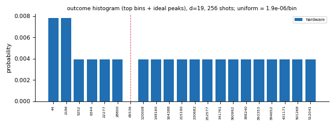<figcaption>generated by build_ledger.py · decode: direct (Braket Circuit API, char i = qubit i)</figcaption></figure><figure>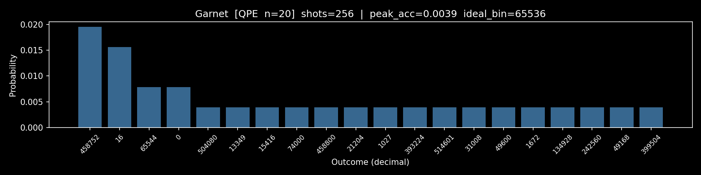<figcaption>existing plot: qpu_benchmark/plots/qpe_target1/Garnet_qpe_n20.png  (per device/type/n; may summarise a sibling run)</figcaption></figure></div><p class="note">P(ideal bin 65536) direct=0.0000, bit-reversed counting reg=0.0000</p>
<details><summary>all logged / result parameters</summary><dl><dt>task_id</dt><dd>arn:aws:braket:eu-north-1:767397707562:quantum-task/abd8e810-2cff-4d2d-b015-b05fe7bf62a5</dd><dt>submitted_at</dt><dd>2026-04-24T06:14:35.832418+00:00</dd><dt>device</dt><dd>Garnet</dd><dt>device_arn</dt><dd>arn:aws:braket:eu-north-1::device/qpu/iqm/Garnet</dd><dt>circuit_type</dt><dd>QPE</dd><dt>n_qubits</dt><dd>20</dd><dt>n_counting</dt><dd>19</dd><dt>n_shots</dt><dd>256</dd><dt>phase_target</dt><dd>0.125</dd><dt>completed_at</dt><dd>2026-04-24T06:14:49.496000+00:00</dd><dt>queue_time_seconds</dt><dd>13.173</dd><dt>wall_time_seconds</dt><dd>13.663582</dd><dt>qpu_time_seconds</dt><dd>null</dd><dt>n_shots_requested</dt><dd>256</dd><dt>n_shots_actual</dt><dd>256</dd></dl><p class="mono sm">source: qpu_benchmark/job_results/abd8e810-2cff-4d2d-b015-b05fe7bf62a5.json</p></details></article><article class="card" id="r-97580861"><h4><span class="num">#31</span> Single-stage QPE (T gate) · Emerald · d=26 n_targ=1 · 256 shots</h4>
<p class="mono sm">97580861-4ed9-4714-96f4-00edd41e3a70 · 2026-04-24 06:14:37 · result: yes · log: joined: qpu_benchmark/job_results/job_log.txt</p>
<div class="figs"><figure>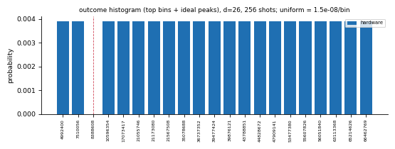<figcaption>generated by build_ledger.py · decode: direct (Braket Circuit API, char i = qubit i)</figcaption></figure><figure>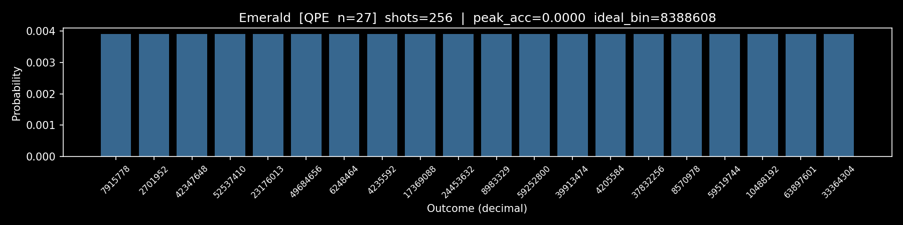<figcaption>existing plot: qpu_benchmark/plots/qpe_target1/Emerald_qpe_n27.png  (per device/type/n; may summarise a sibling run)</figcaption></figure></div><p class="note">P(ideal bin 8388608) direct=0.0000, bit-reversed counting reg=0.0000</p>
<details><summary>all logged / result parameters</summary><dl><dt>task_id</dt><dd>arn:aws:braket:eu-north-1:767397707562:quantum-task/97580861-4ed9-4714-96f4-00edd41e3a70</dd><dt>submitted_at</dt><dd>2026-04-24T06:14:37.881629+00:00</dd><dt>device</dt><dd>Emerald</dd><dt>device_arn</dt><dd>arn:aws:braket:eu-north-1::device/qpu/iqm/Emerald</dd><dt>circuit_type</dt><dd>QPE</dd><dt>n_qubits</dt><dd>27</dd><dt>n_counting</dt><dd>26</dd><dt>n_shots</dt><dd>256</dd><dt>phase_target</dt><dd>0.125</dd><dt>completed_at</dt><dd>2026-04-24T07:22:13.339000+00:00</dd><dt>queue_time_seconds</dt><dd>4054.565</dd><dt>wall_time_seconds</dt><dd>4055.457371</dd><dt>qpu_time_seconds</dt><dd>null</dd><dt>n_shots_requested</dt><dd>256</dd><dt>n_shots_actual</dt><dd>256</dd></dl><p class="mono sm">source: qpu_benchmark/job_results/97580861-4ed9-4714-96f4-00edd41e3a70.json</p></details></article><article class="card" id="r-2e73cab5"><h4><span class="num">#32</span> Single-stage QPE (T gate) · Cepheus-1-108Q · d=53 n_targ=1 · 256 shots</h4>
<p class="mono sm">2e73cab5-97f6-40bb-a13e-d6a6c5b28a83 · 2026-04-24 06:55:48 · result: FAILED task (FAILED), no counts · log: joined: qpu_benchmark/job_results/job_log.txt</p>
<div class="figs"><p class="note">No counts for this entry, so no plot.</p></div><p class="note">task status in result JSON: FAILED</p>
<details><summary>all logged / result parameters</summary><dl><dt>task_id</dt><dd>arn:aws:braket:us-west-1:767397707562:quantum-task/2e73cab5-97f6-40bb-a13e-d6a6c5b28a83</dd><dt>submitted_at</dt><dd>2026-04-24T06:55:48.301993+00:00</dd><dt>device</dt><dd>Cepheus-1-108Q</dd><dt>device_arn</dt><dd>arn:aws:braket:us-west-1::device/qpu/rigetti/Cepheus-1-108Q</dd><dt>circuit_type</dt><dd>QPE</dd><dt>n_qubits</dt><dd>54</dd><dt>n_counting</dt><dd>53</dd><dt>n_shots</dt><dd>256</dd><dt>phase_target</dt><dd>0.125</dd><dt>status</dt><dd>FAILED</dd></dl><p class="mono sm">source: qpu_benchmark/job_results/2e73cab5-97f6-40bb-a13e-d6a6c5b28a83.json</p></details></article><article class="card" id="r-e3ad2c24"><h4><span class="num">#33</span> Single-stage QPE (T gate) · Cepheus-1-108Q · d=9 n_targ=1 · 256 shots</h4>
<p class="mono sm">e3ad2c24-c7ca-4a8e-b442-a9038b0aaaf4 · 2026-04-24 07:52:29 · result: yes · log: joined: qpu_benchmark/job_results/job_log.txt</p>
<div class="figs"><figure>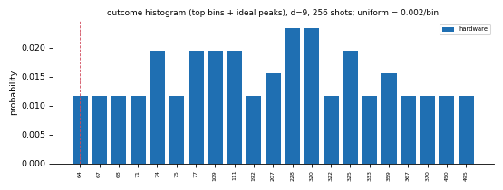<figcaption>generated by build_ledger.py · decode: direct (Braket Circuit API, char i = qubit i)</figcaption></figure><figure>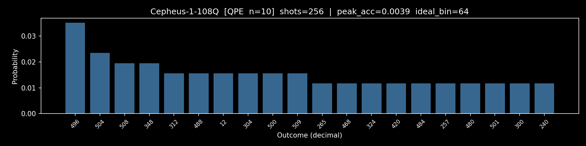<figcaption>existing plot: qpu_benchmark/plots/qpe_target1/Cepheus_1_108Q_qpe_n10.png  (per device/type/n; may summarise a sibling run)</figcaption></figure></div><p class="note">P(ideal bin 64) direct=0.0117, bit-reversed counting reg=0.0000</p>
<details><summary>all logged / result parameters</summary><dl><dt>task_id</dt><dd>arn:aws:braket:us-west-1:767397707562:quantum-task/e3ad2c24-c7ca-4a8e-b442-a9038b0aaaf4</dd><dt>submitted_at</dt><dd>2026-04-24T07:52:29.988964+00:00</dd><dt>device</dt><dd>Cepheus-1-108Q</dd><dt>device_arn</dt><dd>arn:aws:braket:us-west-1::device/qpu/rigetti/Cepheus-1-108Q</dd><dt>circuit_type</dt><dd>QPE</dd><dt>n_qubits</dt><dd>10</dd><dt>n_counting</dt><dd>9</dd><dt>n_shots</dt><dd>256</dd><dt>phase_target</dt><dd>0.125</dd><dt>completed_at</dt><dd>2026-04-24T09:24:44.785000+00:00</dd><dt>queue_time_seconds</dt><dd>5532.935</dd><dt>wall_time_seconds</dt><dd>5534.796036</dd><dt>qpu_time_seconds</dt><dd>null</dd><dt>n_shots_requested</dt><dd>256</dd><dt>n_shots_actual</dt><dd>256</dd></dl><p class="mono sm">source: qpu_benchmark/job_results/e3ad2c24-c7ca-4a8e-b442-a9038b0aaaf4.json</p></details></article><article class="card" id="r-a998da02"><h4><span class="num">#34</span> Single-stage QPE (T gate) · Ibex-Q1 · d=5 n_targ=1 · 256 shots</h4>
<p class="mono sm">a998da02-dd51-4f3e-bc97-7fe94af01192 · 2026-04-24 07:52:54 · result: yes · log: joined: qpu_benchmark/job_results/job_log.txt</p>
<div class="figs"><figure>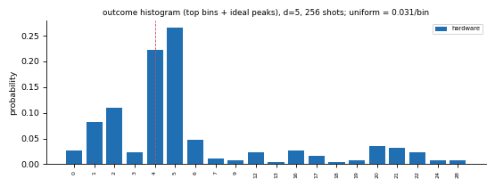<figcaption>generated by build_ledger.py · decode: direct (Braket Circuit API, char i = qubit i)</figcaption></figure><figure><figcaption>existing plot: qpu_benchmark/plots/qpe_target1/Ibex_Q1_qpe_n6.png  (per device/type/n; may summarise a sibling run)</figcaption></figure></div><p class="note">P(ideal bin 4) direct=0.2227, bit-reversed counting reg=0.2227</p>
<details><summary>all logged / result parameters</summary><dl><dt>task_id</dt><dd>arn:aws:braket:eu-north-1:767397707562:quantum-task/a998da02-dd51-4f3e-bc97-7fe94af01192</dd><dt>submitted_at</dt><dd>2026-04-24T07:52:54.395223+00:00</dd><dt>device</dt><dd>Ibex-Q1</dd><dt>device_arn</dt><dd>arn:aws:braket:eu-north-1::device/qpu/aqt/Ibex-Q1</dd><dt>circuit_type</dt><dd>QPE</dd><dt>n_qubits</dt><dd>6</dd><dt>n_counting</dt><dd>5</dd><dt>n_shots</dt><dd>256</dd><dt>phase_target</dt><dd>0.125</dd><dt>completed_at</dt><dd>2026-04-24T08:05:38.364000+00:00</dd><dt>queue_time_seconds</dt><dd>762.387</dd><dt>wall_time_seconds</dt><dd>763.968777</dd><dt>qpu_time_seconds</dt><dd>null</dd><dt>n_shots_requested</dt><dd>256</dd><dt>n_shots_actual</dt><dd>256</dd></dl><p class="mono sm">source: qpu_benchmark/job_results/a998da02-dd51-4f3e-bc97-7fe94af01192.json</p></details></article><article class="card" id="r-cf956ad6"><h4><span class="num">#35</span> Single-stage QPE (T gate) · Forte-Enterprise-1 · d=9 n_targ=1 · 256 shots</h4>
<p class="mono sm">cf956ad6-d1dd-45c0-903f-cb767f95616f · 2026-04-24 07:53:30 · result: yes · log: joined: qpu_benchmark/job_results/job_log.txt</p>
<div class="figs"><figure>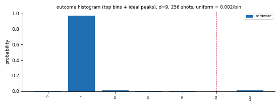<figcaption>generated by build_ledger.py · decode: direct (Braket Circuit API, char i = qubit i)</figcaption></figure><figure>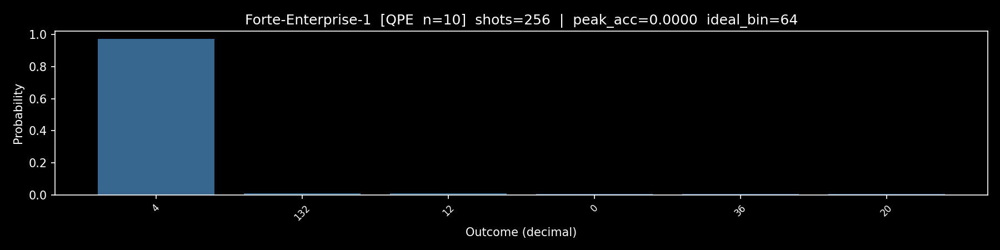<figcaption>existing plot: qpu_benchmark/plots/qpe_target1/Forte_Enterprise_1_qpe_n10.png  (per device/type/n; may summarise a sibling run)</figcaption></figure></div><p class="note">P(ideal bin 64) direct=0.0000, bit-reversed counting reg=0.9727</p>
<details><summary>all logged / result parameters</summary><dl><dt>task_id</dt><dd>arn:aws:braket:us-east-1:767397707562:quantum-task/cf956ad6-d1dd-45c0-903f-cb767f95616f</dd><dt>submitted_at</dt><dd>2026-04-24T07:53:30.911066+00:00</dd><dt>device</dt><dd>Forte-Enterprise-1</dd><dt>device_arn</dt><dd>arn:aws:braket:us-east-1::device/qpu/ionq/Forte-Enterprise-1</dd><dt>circuit_type</dt><dd>QPE</dd><dt>n_qubits</dt><dd>10</dd><dt>n_counting</dt><dd>9</dd><dt>n_shots</dt><dd>256</dd><dt>phase_target</dt><dd>0.125</dd><dt>completed_at</dt><dd>2026-04-24T07:59:33.050000+00:00</dd><dt>queue_time_seconds</dt><dd>360.184</dd><dt>wall_time_seconds</dt><dd>362.138934</dd><dt>qpu_time_seconds</dt><dd>null</dd><dt>n_shots_requested</dt><dd>256</dd><dt>n_shots_actual</dt><dd>256</dd></dl><p class="mono sm">source: qpu_benchmark/job_results/cf956ad6-d1dd-45c0-903f-cb767f95616f.json</p></details></article><article class="card" id="r-efdfc40b"><h4><span class="num">#36</span> Single-stage QPE (T gate) · Emerald · d=9 n_targ=1 · 256 shots</h4>
<p class="mono sm">efdfc40b-d7d5-4779-a907-85b4465de89a · 2026-04-24 07:53:48 · result: yes · log: joined: qpu_benchmark/job_results/job_log.txt</p>
<div class="figs"><figure>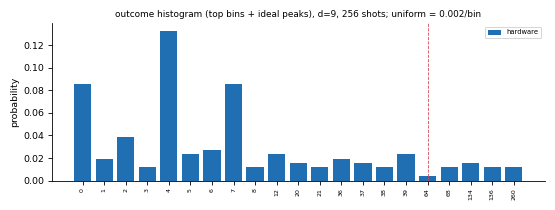<figcaption>generated by build_ledger.py · decode: direct (Braket Circuit API, char i = qubit i)</figcaption></figure><figure><figcaption>existing plot: qpu_benchmark/plots/qpe_target1/Emerald_qpe_n10.png  (per device/type/n; may summarise a sibling run)</figcaption></figure></div><p class="note">P(ideal bin 64) direct=0.0039, bit-reversed counting reg=0.1328</p>
<details><summary>all logged / result parameters</summary><dl><dt>task_id</dt><dd>arn:aws:braket:eu-north-1:767397707562:quantum-task/efdfc40b-d7d5-4779-a907-85b4465de89a</dd><dt>submitted_at</dt><dd>2026-04-24T07:53:48.247807+00:00</dd><dt>device</dt><dd>Emerald</dd><dt>device_arn</dt><dd>arn:aws:braket:eu-north-1::device/qpu/iqm/Emerald</dd><dt>circuit_type</dt><dd>QPE</dd><dt>n_qubits</dt><dd>10</dd><dt>n_counting</dt><dd>9</dd><dt>n_shots</dt><dd>256</dd><dt>phase_target</dt><dd>0.125</dd><dt>completed_at</dt><dd>2026-04-24T07:54:05.355000+00:00</dd><dt>queue_time_seconds</dt><dd>15.573</dd><dt>wall_time_seconds</dt><dd>17.107193</dd><dt>qpu_time_seconds</dt><dd>null</dd><dt>n_shots_requested</dt><dd>256</dd><dt>n_shots_actual</dt><dd>256</dd></dl><p class="mono sm">source: qpu_benchmark/job_results/efdfc40b-d7d5-4779-a907-85b4465de89a.json</p></details></article><article class="card" id="r-c68d1fdd"><h4><span class="num">#37</span> Single-stage QPE (T gate) · Emerald · d=26 n_targ=1 · 256 shots</h4>
<p class="mono sm">c68d1fdd-0376-45c3-bd05-548cf0c60301 · 2026-04-24 07:59:49 · result: yes · log: joined: qpu_benchmark/job_results/job_log.txt</p>
<div class="figs"><figure><figcaption>generated by build_ledger.py · decode: direct (Braket Circuit API, char i = qubit i)</figcaption></figure><figure><figcaption>existing plot: qpu_benchmark/plots/qpe_target1/Emerald_qpe_n27.png  (per device/type/n; may summarise a sibling run)</figcaption></figure></div><p class="note">P(ideal bin 8388608) direct=0.0000, bit-reversed counting reg=0.0000</p>
<details><summary>all logged / result parameters</summary><dl><dt>task_id</dt><dd>arn:aws:braket:eu-north-1:767397707562:quantum-task/c68d1fdd-0376-45c3-bd05-548cf0c60301</dd><dt>submitted_at</dt><dd>2026-04-24T07:59:49.867681+00:00</dd><dt>device</dt><dd>Emerald</dd><dt>device_arn</dt><dd>arn:aws:braket:eu-north-1::device/qpu/iqm/Emerald</dd><dt>circuit_type</dt><dd>QPE</dd><dt>n_qubits</dt><dd>27</dd><dt>n_counting</dt><dd>26</dd><dt>n_shots</dt><dd>256</dd><dt>phase_target</dt><dd>0.125</dd><dt>completed_at</dt><dd>2026-04-24T08:00:19.375000+00:00</dd><dt>queue_time_seconds</dt><dd>27.402</dd><dt>wall_time_seconds</dt><dd>29.507319</dd><dt>qpu_time_seconds</dt><dd>null</dd><dt>n_shots_requested</dt><dd>256</dd><dt>n_shots_actual</dt><dd>256</dd></dl><p class="mono sm">source: qpu_benchmark/job_results/c68d1fdd-0376-45c3-bd05-548cf0c60301.json</p></details></article><article class="card" id="r-f4b079ef"><h4><span class="num">#38</span> Single-stage QPE (T gate) · Cepheus-1-108Q · d=9 n_targ=1 · 256 shots</h4>
<p class="mono sm">f4b079ef-f1b1-4954-95c4-8e4805a3e0dc · 2026-04-24 10:17:42 · result: yes · log: joined: qpu_benchmark/job_results/job_log.txt</p>
<div class="figs"><figure><figcaption>generated by build_ledger.py · decode: direct (Braket Circuit API, char i = qubit i)</figcaption></figure><figure><figcaption>existing plot: qpu_benchmark/plots/qpe_target1/Cepheus_1_108Q_qpe_n10.png  (per device/type/n; may summarise a sibling run)</figcaption></figure></div><p class="note">P(ideal bin 64) direct=0.0039, bit-reversed counting reg=0.0195</p>
<details><summary>all logged / result parameters</summary><dl><dt>task_id</dt><dd>arn:aws:braket:us-west-1:767397707562:quantum-task/f4b079ef-f1b1-4954-95c4-8e4805a3e0dc</dd><dt>submitted_at</dt><dd>2026-04-24T10:17:42.038237+00:00</dd><dt>device</dt><dd>Cepheus-1-108Q</dd><dt>device_arn</dt><dd>arn:aws:braket:us-west-1::device/qpu/rigetti/Cepheus-1-108Q</dd><dt>circuit_type</dt><dd>QPE</dd><dt>n_qubits</dt><dd>10</dd><dt>n_counting</dt><dd>9</dd><dt>n_shots</dt><dd>256</dd><dt>phase_target</dt><dd>0.125</dd><dt>completed_at</dt><dd>2026-04-24T10:17:57.867000+00:00</dd><dt>queue_time_seconds</dt><dd>13.721</dd><dt>wall_time_seconds</dt><dd>15.828763</dd><dt>qpu_time_seconds</dt><dd>null</dd><dt>n_shots_requested</dt><dd>256</dd><dt>n_shots_actual</dt><dd>256</dd></dl><p class="mono sm">source: qpu_benchmark/job_results/f4b079ef-f1b1-4954-95c4-8e4805a3e0dc.json</p></details></article><article class="card" id="r-d537a704"><h4><span class="num">#39</span> Single-stage QPE (T gate) · Ibex-Q1 · d=11 n_targ=1 · 256 shots</h4>
<p class="mono sm">d537a704-6dfa-4ec4-ac0b-f6c6d4fd1884 · 2026-04-24 10:18:25 · result: yes · log: joined: qpu_benchmark/job_results/job_log.txt</p>
<div class="figs"><figure><figcaption>generated by build_ledger.py · decode: direct (Braket Circuit API, char i = qubit i)</figcaption></figure><figure><figcaption>existing plot: qpu_benchmark/plots/qpe_target1/Ibex_Q1_qpe_n12.png  (per device/type/n; may summarise a sibling run)</figcaption></figure></div><p class="note">P(ideal bin 256) direct=0.0000, bit-reversed counting reg=0.0000</p>
<details><summary>all logged / result parameters</summary><dl><dt>task_id</dt><dd>arn:aws:braket:eu-north-1:767397707562:quantum-task/d537a704-6dfa-4ec4-ac0b-f6c6d4fd1884</dd><dt>submitted_at</dt><dd>2026-04-24T10:18:25.734804+00:00</dd><dt>device</dt><dd>Ibex-Q1</dd><dt>device_arn</dt><dd>arn:aws:braket:eu-north-1::device/qpu/aqt/Ibex-Q1</dd><dt>circuit_type</dt><dd>QPE</dd><dt>n_qubits</dt><dd>12</dd><dt>n_counting</dt><dd>11</dd><dt>n_shots</dt><dd>256</dd><dt>phase_target</dt><dd>0.125</dd><dt>completed_at</dt><dd>2026-04-24T10:19:35.184000+00:00</dd><dt>queue_time_seconds</dt><dd>67.919</dd><dt>wall_time_seconds</dt><dd>69.449196</dd><dt>qpu_time_seconds</dt><dd>null</dd><dt>n_shots_requested</dt><dd>256</dd><dt>n_shots_actual</dt><dd>256</dd></dl><p class="mono sm">source: qpu_benchmark/job_results/d537a704-6dfa-4ec4-ac0b-f6c6d4fd1884.json</p></details></article><article class="card" id="r-edee0c1d"><h4><span class="num">#40</span> Single-stage QPE (T gate) · Emerald · d=9 n_targ=1 · 256 shots</h4>
<p class="mono sm">edee0c1d-0bae-4209-8654-c3ea2da5de7a · 2026-04-24 10:20:19 · result: yes · log: joined: qpu_benchmark/job_results/job_log.txt</p>
<div class="figs"><figure><figcaption>generated by build_ledger.py · decode: direct (Braket Circuit API, char i = qubit i)</figcaption></figure><figure><figcaption>existing plot: qpu_benchmark/plots/qpe_target1/Emerald_qpe_n10.png  (per device/type/n; may summarise a sibling run)</figcaption></figure></div><p class="note">P(ideal bin 64) direct=0.0156, bit-reversed counting reg=0.0352</p>
<details><summary>all logged / result parameters</summary><dl><dt>task_id</dt><dd>arn:aws:braket:eu-north-1:767397707562:quantum-task/edee0c1d-0bae-4209-8654-c3ea2da5de7a</dd><dt>submitted_at</dt><dd>2026-04-24T10:20:19.389913+00:00</dd><dt>device</dt><dd>Emerald</dd><dt>device_arn</dt><dd>arn:aws:braket:eu-north-1::device/qpu/iqm/Emerald</dd><dt>circuit_type</dt><dd>QPE</dd><dt>n_qubits</dt><dd>10</dd><dt>n_counting</dt><dd>9</dd><dt>n_shots</dt><dd>256</dd><dt>phase_target</dt><dd>0.125</dd><dt>completed_at</dt><dd>2026-04-24T10:20:32.208000+00:00</dd><dt>queue_time_seconds</dt><dd>11.334</dd><dt>wall_time_seconds</dt><dd>12.818087</dd><dt>qpu_time_seconds</dt><dd>null</dd><dt>n_shots_requested</dt><dd>256</dd><dt>n_shots_actual</dt><dd>256</dd></dl><p class="mono sm">source: qpu_benchmark/job_results/edee0c1d-0bae-4209-8654-c3ea2da5de7a.json</p></details></article><article class="card" id="r-03511793"><h4><span class="num">#41</span> Single-stage QPE (T gate) · Emerald · d=26 n_targ=1 · 256 shots</h4>
<p class="mono sm">03511793-22b4-4d1f-890f-830defba8648 · 2026-04-24 10:20:32 · result: yes · log: joined: qpu_benchmark/job_results/job_log.txt</p>
<div class="figs"><figure><figcaption>generated by build_ledger.py · decode: direct (Braket Circuit API, char i = qubit i)</figcaption></figure><figure><figcaption>existing plot: qpu_benchmark/plots/qpe_target1/Emerald_qpe_n27.png  (per device/type/n; may summarise a sibling run)</figcaption></figure></div><p class="note">P(ideal bin 8388608) direct=0.0000, bit-reversed counting reg=0.0000</p>
<details><summary>all logged / result parameters</summary><dl><dt>task_id</dt><dd>arn:aws:braket:eu-north-1:767397707562:quantum-task/03511793-22b4-4d1f-890f-830defba8648</dd><dt>submitted_at</dt><dd>2026-04-24T10:20:32.344788+00:00</dd><dt>device</dt><dd>Emerald</dd><dt>device_arn</dt><dd>arn:aws:braket:eu-north-1::device/qpu/iqm/Emerald</dd><dt>circuit_type</dt><dd>QPE</dd><dt>n_qubits</dt><dd>27</dd><dt>n_counting</dt><dd>26</dd><dt>n_shots</dt><dd>256</dd><dt>phase_target</dt><dd>0.125</dd><dt>completed_at</dt><dd>2026-04-24T10:20:59.571000+00:00</dd><dt>queue_time_seconds</dt><dd>26.372</dd><dt>wall_time_seconds</dt><dd>27.226212</dd><dt>qpu_time_seconds</dt><dd>null</dd><dt>n_shots_requested</dt><dd>256</dd><dt>n_shots_actual</dt><dd>256</dd></dl><p class="mono sm">source: qpu_benchmark/job_results/03511793-22b4-4d1f-890f-830defba8648.json</p></details></article><article class="card" id="r-7e72b746"><h4><span class="num">#42</span> Single-stage QPE (T gate) · Garnet · d=19 n_targ=1 · 256 shots</h4>
<p class="mono sm">7e72b746-db39-41b0-8496-8ce624b45917 · 2026-04-24 10:21:57 · result: yes · log: joined: qpu_benchmark/job_results/job_log.txt</p>
<div class="figs"><figure><figcaption>generated by build_ledger.py · decode: direct (Braket Circuit API, char i = qubit i)</figcaption></figure><figure><figcaption>existing plot: qpu_benchmark/plots/qpe_target1/Garnet_qpe_n20.png  (per device/type/n; may summarise a sibling run)</figcaption></figure></div><p class="note">P(ideal bin 65536) direct=0.0039, bit-reversed counting reg=0.0039</p>
<details><summary>all logged / result parameters</summary><dl><dt>task_id</dt><dd>arn:aws:braket:eu-north-1:767397707562:quantum-task/7e72b746-db39-41b0-8496-8ce624b45917</dd><dt>submitted_at</dt><dd>2026-04-24T10:21:57.238346+00:00</dd><dt>device</dt><dd>Garnet</dd><dt>device_arn</dt><dd>arn:aws:braket:eu-north-1::device/qpu/iqm/Garnet</dd><dt>circuit_type</dt><dd>QPE</dd><dt>n_qubits</dt><dd>20</dd><dt>n_counting</dt><dd>19</dd><dt>n_shots</dt><dd>256</dd><dt>phase_target</dt><dd>0.125</dd><dt>completed_at</dt><dd>2026-04-24T10:22:12.676000+00:00</dd><dt>queue_time_seconds</dt><dd>13.695</dd><dt>wall_time_seconds</dt><dd>15.437654</dd><dt>qpu_time_seconds</dt><dd>null</dd><dt>n_shots_requested</dt><dd>256</dd><dt>n_shots_actual</dt><dd>256</dd></dl><p class="mono sm">source: qpu_benchmark/job_results/7e72b746-db39-41b0-8496-8ce624b45917.json</p></details></article><article class="card" id="r-7146c5e3"><h4><span class="num">#43</span> Single-stage QPE (T gate) · Forte-Enterprise-1 · d=17 n_targ=1 · 256 shots</h4>
<p class="mono sm">7146c5e3-029f-49b3-9559-e4abecea0f0e · 2026-04-24 10:22:47 · result: yes · log: joined: qpu_benchmark/job_results/job_log.txt</p>
<div class="figs"><figure><figcaption>generated by build_ledger.py · decode: direct (Braket Circuit API, char i = qubit i)</figcaption></figure><figure><figcaption>existing plot: qpu_benchmark/plots/qpe_target1/Forte_Enterprise_1_qpe_n18.png  (per device/type/n; may summarise a sibling run)</figcaption></figure></div><p class="note">P(ideal bin 16384) direct=0.8516, bit-reversed counting reg=0.0000</p>
<details><summary>all logged / result parameters</summary><dl><dt>task_id</dt><dd>arn:aws:braket:us-east-1:767397707562:quantum-task/7146c5e3-029f-49b3-9559-e4abecea0f0e</dd><dt>submitted_at</dt><dd>2026-04-24T10:22:47.816124+00:00</dd><dt>device</dt><dd>Forte-Enterprise-1</dd><dt>device_arn</dt><dd>arn:aws:braket:us-east-1::device/qpu/ionq/Forte-Enterprise-1</dd><dt>circuit_type</dt><dd>QPE</dd><dt>n_qubits</dt><dd>18</dd><dt>n_counting</dt><dd>17</dd><dt>n_shots</dt><dd>256</dd><dt>phase_target</dt><dd>0.125</dd><dt>completed_at</dt><dd>2026-04-24T10:50:28.729000+00:00</dd><dt>queue_time_seconds</dt><dd>1659.478</dd><dt>wall_time_seconds</dt><dd>1660.912876</dd><dt>qpu_time_seconds</dt><dd>null</dd><dt>n_shots_requested</dt><dd>256</dd><dt>n_shots_actual</dt><dd>256</dd></dl><p class="mono sm">source: qpu_benchmark/job_results/7146c5e3-029f-49b3-9559-e4abecea0f0e.json</p></details></article><article class="card" id="r-74bd7a39"><h4><span class="num">#44</span> Single-stage QPE (T gate) · Forte-Enterprise-1 · d=35 n_targ=1 · 256 shots</h4>
<p class="mono sm">74bd7a39-4772-40ed-aa97-039976476a21 · 2026-04-24 10:23:01 · result: yes · log: joined: qpu_benchmark/job_results/job_log.txt</p>
<div class="figs"><figure><figcaption>generated by build_ledger.py · decode: direct (Braket Circuit API, char i = qubit i)</figcaption></figure><figure><figcaption>existing plot: qpu_benchmark/plots/qpe_target1/Forte_Enterprise_1_qpe_n36.png  (per device/type/n; may summarise a sibling run)</figcaption></figure></div><p class="note">P(ideal bin 4294967296) direct=0.3398, bit-reversed counting reg=0.0000</p>
<details><summary>all logged / result parameters</summary><dl><dt>task_id</dt><dd>arn:aws:braket:us-east-1:767397707562:quantum-task/74bd7a39-4772-40ed-aa97-039976476a21</dd><dt>submitted_at</dt><dd>2026-04-24T10:23:01.309492+00:00</dd><dt>device</dt><dd>Forte-Enterprise-1</dd><dt>device_arn</dt><dd>arn:aws:braket:us-east-1::device/qpu/ionq/Forte-Enterprise-1</dd><dt>circuit_type</dt><dd>QPE</dd><dt>n_qubits</dt><dd>36</dd><dt>n_counting</dt><dd>35</dd><dt>n_shots</dt><dd>256</dd><dt>phase_target</dt><dd>0.125</dd><dt>completed_at</dt><dd>2026-04-24T10:39:58.112000+00:00</dd><dt>queue_time_seconds</dt><dd>1016.088</dd><dt>wall_time_seconds</dt><dd>1016.802508</dd><dt>qpu_time_seconds</dt><dd>null</dd><dt>n_shots_requested</dt><dd>256</dd><dt>n_shots_actual</dt><dd>256</dd></dl><p class="mono sm">source: qpu_benchmark/job_results/74bd7a39-4772-40ed-aa97-039976476a21.json</p></details></article><article class="card" id="r-6fed6cea"><h4><span class="num">#45</span> Single-stage QPE (T gate) · Emerald · d=19 n_targ=1 · 256 shots</h4>
<p class="mono sm">6fed6cea-be1b-4ea3-97bf-590878cdd637 · 2026-04-24 10:57:55 · result: yes · log: joined: qpu_benchmark/job_results/job_log.txt</p>
<div class="figs"><figure><figcaption>generated by build_ledger.py · decode: direct (Braket Circuit API, char i = qubit i)</figcaption></figure><figure><figcaption>existing plot: qpu_benchmark/plots/qpe_target1/Emerald_qpe_n20.png  (per device/type/n; may summarise a sibling run)</figcaption></figure></div><p class="note">P(ideal bin 65536) direct=0.0000, bit-reversed counting reg=0.0078</p>
<details><summary>all logged / result parameters</summary><dl><dt>task_id</dt><dd>arn:aws:braket:eu-north-1:767397707562:quantum-task/6fed6cea-be1b-4ea3-97bf-590878cdd637</dd><dt>submitted_at</dt><dd>2026-04-24T10:57:55.265103+00:00</dd><dt>device</dt><dd>Emerald</dd><dt>device_arn</dt><dd>arn:aws:braket:eu-north-1::device/qpu/iqm/Emerald</dd><dt>circuit_type</dt><dd>QPE</dd><dt>n_qubits</dt><dd>20</dd><dt>n_counting</dt><dd>19</dd><dt>n_shots</dt><dd>256</dd><dt>phase_target</dt><dd>0.125</dd><dt>completed_at</dt><dd>2026-04-24T10:58:19.528000+00:00</dd><dt>queue_time_seconds</dt><dd>22.067</dd><dt>wall_time_seconds</dt><dd>24.262897</dd><dt>qpu_time_seconds</dt><dd>null</dd><dt>n_shots_requested</dt><dd>256</dd><dt>n_shots_actual</dt><dd>256</dd></dl><p class="mono sm">source: qpu_benchmark/job_results/6fed6cea-be1b-4ea3-97bf-590878cdd637.json</p></details></article><article class="card" id="r-6f87f576"><h4><span class="num">#46</span> Single-stage QPE (T gate) · Cepheus-1-108Q · d=9 n_targ=1 · 256 shots</h4>
<p class="mono sm">6f87f576-eb9e-46af-a487-8349d041300f · 2026-04-30 14:45:28 · result: yes · log: joined: qpu_benchmark/job_results/job_log.txt</p>
<div class="figs"><figure><figcaption>generated by build_ledger.py · decode: direct (Braket Circuit API, char i = qubit i)</figcaption></figure><figure><figcaption>existing plot: qpu_benchmark/plots/qpe_target1/Cepheus_1_108Q_qpe_n10.png  (per device/type/n; may summarise a sibling run)</figcaption></figure></div><p class="note">P(ideal bin 64) direct=0.0039, bit-reversed counting reg=0.0039</p>
<details><summary>all logged / result parameters</summary><dl><dt>task_id</dt><dd>arn:aws:braket:us-west-1:767397707562:quantum-task/6f87f576-eb9e-46af-a487-8349d041300f</dd><dt>submitted_at</dt><dd>2026-04-30T14:45:28.583190+00:00</dd><dt>device</dt><dd>Cepheus-1-108Q</dd><dt>device_arn</dt><dd>arn:aws:braket:us-west-1::device/qpu/rigetti/Cepheus-1-108Q</dd><dt>circuit_type</dt><dd>QPE</dd><dt>n_qubits</dt><dd>10</dd><dt>n_counting</dt><dd>9</dd><dt>n_shots</dt><dd>256</dd><dt>phase_target</dt><dd>0.125</dd><dt>completed_at</dt><dd>2026-04-30T14:51:41.302000+00:00</dd><dt>queue_time_seconds</dt><dd>370.635</dd><dt>wall_time_seconds</dt><dd>372.71881</dd><dt>qpu_time_seconds</dt><dd>null</dd><dt>n_shots_requested</dt><dd>256</dd><dt>n_shots_actual</dt><dd>256</dd></dl><p class="mono sm">source: qpu_benchmark/job_results/6f87f576-eb9e-46af-a487-8349d041300f.json</p></details></article><article class="card" id="r-68a1b0fe"><h4><span class="num">#47</span> Single-stage QPE (T gate) · Emerald · d=4 n_targ=1 · 256 shots</h4>
<p class="mono sm">68a1b0fe-191d-4d87-b6cd-dd0965447748 · 2026-04-30 14:59:45 · result: yes · log: joined: qpu_benchmark/job_results/job_log.txt</p>
<div class="figs"><figure><figcaption>generated by build_ledger.py · decode: direct (Braket Circuit API, char i = qubit i)</figcaption></figure><figure><figcaption>existing plot: qpu_benchmark/plots/qpe_target1/Emerald_qpe_n5.png  (per device/type/n; may summarise a sibling run)</figcaption></figure></div><p class="note">P(ideal bin 2) direct=0.8320, bit-reversed counting reg=0.0312</p>
<details><summary>all logged / result parameters</summary><dl><dt>task_id</dt><dd>arn:aws:braket:eu-north-1:767397707562:quantum-task/68a1b0fe-191d-4d87-b6cd-dd0965447748</dd><dt>submitted_at</dt><dd>2026-04-30T14:59:45.463673+00:00</dd><dt>device</dt><dd>Emerald</dd><dt>device_arn</dt><dd>arn:aws:braket:eu-north-1::device/qpu/iqm/Emerald</dd><dt>circuit_type</dt><dd>QPE</dd><dt>n_qubits</dt><dd>5</dd><dt>n_counting</dt><dd>4</dd><dt>n_shots</dt><dd>256</dd><dt>phase_target</dt><dd>0.125</dd><dt>completed_at</dt><dd>2026-04-30T14:59:56.590000+00:00</dd><dt>queue_time_seconds</dt><dd>9.161</dd><dt>wall_time_seconds</dt><dd>11.126327</dd><dt>qpu_time_seconds</dt><dd>null</dd><dt>n_shots_requested</dt><dd>256</dd><dt>n_shots_actual</dt><dd>256</dd></dl><p class="mono sm">source: qpu_benchmark/job_results/68a1b0fe-191d-4d87-b6cd-dd0965447748.json</p></details></article><article class="card" id="r-f31a6a65"><h4><span class="num">#48</span> Single-stage QPE (T gate) · Cepheus-1-108Q · d=4 n_targ=1 · 256 shots</h4>
<p class="mono sm">f31a6a65-d473-46cd-ba51-791f4060af78 · 2026-04-30 15:00:58 · result: yes · log: joined: qpu_benchmark/job_results/job_log.txt</p>
<div class="figs"><figure><figcaption>generated by build_ledger.py · decode: direct (Braket Circuit API, char i = qubit i)</figcaption></figure><figure><figcaption>existing plot: qpu_benchmark/plots/qpe_target1/Cepheus_1_108Q_qpe_n5.png  (per device/type/n; may summarise a sibling run)</figcaption></figure></div><p class="note">P(ideal bin 2) direct=0.3555, bit-reversed counting reg=0.0898</p>
<details><summary>all logged / result parameters</summary><dl><dt>task_id</dt><dd>arn:aws:braket:us-west-1:767397707562:quantum-task/f31a6a65-d473-46cd-ba51-791f4060af78</dd><dt>submitted_at</dt><dd>2026-04-30T15:00:58.070633+00:00</dd><dt>device</dt><dd>Cepheus-1-108Q</dd><dt>device_arn</dt><dd>arn:aws:braket:us-west-1::device/qpu/rigetti/Cepheus-1-108Q</dd><dt>circuit_type</dt><dd>QPE</dd><dt>n_qubits</dt><dd>5</dd><dt>n_counting</dt><dd>4</dd><dt>n_shots</dt><dd>256</dd><dt>phase_target</dt><dd>0.125</dd><dt>completed_at</dt><dd>2026-04-30T15:25:27.785000+00:00</dd><dt>queue_time_seconds</dt><dd>1467.898</dd><dt>wall_time_seconds</dt><dd>1469.714367</dd><dt>qpu_time_seconds</dt><dd>null</dd><dt>n_shots_requested</dt><dd>256</dd><dt>n_shots_actual</dt><dd>256</dd></dl><p class="mono sm">source: qpu_benchmark/job_results/f31a6a65-d473-46cd-ba51-791f4060af78.json</p></details></article><article class="card" id="r-888c9725"><h4><span class="num">#49</span> Single-stage QPE (T gate) · Cepheus-1-108Q · d=19 n_targ=1 · 256 shots</h4>
<p class="mono sm">888c9725-0247-455f-9a0f-1b7e6eb3509e · 2026-05-28 08:24:25 · result: yes · log: joined: qpu_benchmark/job_results/job_log.txt</p>
<div class="figs"><figure><figcaption>generated by build_ledger.py · decode: direct (Braket Circuit API, char i = qubit i)</figcaption></figure><figure><figcaption>existing plot: qpu_benchmark/plots/qpe_target1/Cepheus_1_108Q_qpe_n20.png  (per device/type/n; may summarise a sibling run)</figcaption></figure></div><p class="note">P(ideal bin 65536) direct=0.0000, bit-reversed counting reg=0.0000</p>
<details><summary>all logged / result parameters</summary><dl><dt>task_id</dt><dd>arn:aws:braket:us-west-1:767397707562:quantum-task/888c9725-0247-455f-9a0f-1b7e6eb3509e</dd><dt>submitted_at</dt><dd>2026-05-28T08:24:25.193565+00:00</dd><dt>device</dt><dd>Cepheus-1-108Q</dd><dt>device_arn</dt><dd>arn:aws:braket:us-west-1::device/qpu/rigetti/Cepheus-1-108Q</dd><dt>circuit_type</dt><dd>QPE</dd><dt>n_qubits</dt><dd>20</dd><dt>n_counting</dt><dd>19</dd><dt>n_shots</dt><dd>256</dd><dt>phase_target</dt><dd>0.125</dd><dt>completed_at</dt><dd>2026-05-28T09:00:19.521000+00:00</dd><dt>queue_time_seconds</dt><dd>2152.538</dd><dt>wall_time_seconds</dt><dd>2154.327435</dd><dt>qpu_time_seconds</dt><dd>null</dd><dt>n_shots_requested</dt><dd>256</dd><dt>n_shots_actual</dt><dd>256</dd></dl><p class="mono sm">source: qpu_benchmark/job_results/888c9725-0247-455f-9a0f-1b7e6eb3509e.json</p></details></article><article class="card" id="r-1b42c399"><h4><span class="num">#50</span> Single-stage QPE (T gate) · Cepheus-1-108Q · d=6 n_targ=1 · 256 shots</h4>
<p class="mono sm">1b42c399-3796-409c-92b8-a52896a04193 · 2026-05-28 12:34:15 · result: yes · log: joined: qpu_benchmark/job_results/job_log.txt</p>
<div class="figs"><figure><figcaption>generated by build_ledger.py · decode: direct (Braket Circuit API, char i = qubit i)</figcaption></figure><figure><figcaption>existing plot: qpu_benchmark/plots/qpe_target1/Cepheus_1_108Q_qpe_n7.png  (per device/type/n; may summarise a sibling run)</figcaption></figure></div><p class="note">P(ideal bin 8) direct=0.0625, bit-reversed counting reg=0.0352</p>
<details><summary>all logged / result parameters</summary><dl><dt>task_id</dt><dd>arn:aws:braket:us-west-1:767397707562:quantum-task/1b42c399-3796-409c-92b8-a52896a04193</dd><dt>submitted_at</dt><dd>2026-05-28T12:34:15.212455+00:00</dd><dt>device</dt><dd>Cepheus-1-108Q</dd><dt>device_arn</dt><dd>arn:aws:braket:us-west-1::device/qpu/rigetti/Cepheus-1-108Q</dd><dt>circuit_type</dt><dd>QPE</dd><dt>n_qubits</dt><dd>7</dd><dt>n_counting</dt><dd>6</dd><dt>n_shots</dt><dd>256</dd><dt>phase_target</dt><dd>0.125</dd><dt>completed_at</dt><dd>2026-05-28T12:45:39.773000+00:00</dd><dt>queue_time_seconds</dt><dd>682.869</dd><dt>wall_time_seconds</dt><dd>684.560545</dd><dt>qpu_time_seconds</dt><dd>null</dd><dt>n_shots_requested</dt><dd>256</dd><dt>n_shots_actual</dt><dd>256</dd><dt>compiled_gate_count</dt><dd>null</dd><dt>compiled_depth</dt><dd>null</dd></dl><p class="mono sm">source: qpu_benchmark/job_results/1b42c399-3796-409c-92b8-a52896a04193.json</p></details></article><article class="card" id="r-6dae2b0b"><h4><span class="num">#51</span> Single-stage QPE (T gate) · Cepheus-1-108Q · d=8 n_targ=1 · 256 shots</h4>
<p class="mono sm">6dae2b0b-058f-42ca-9477-f79f1a2cf64b · 2026-05-28 12:34:33 · result: yes · log: joined: qpu_benchmark/job_results/job_log.txt</p>
<div class="figs"><figure><figcaption>generated by build_ledger.py · decode: direct (Braket Circuit API, char i = qubit i)</figcaption></figure><figure><figcaption>existing plot: qpu_benchmark/plots/qpe_target1/Cepheus_1_108Q_qpe_n9.png  (per device/type/n; may summarise a sibling run)</figcaption></figure></div><p class="note">P(ideal bin 32) direct=0.0312, bit-reversed counting reg=0.0195</p>
<details><summary>all logged / result parameters</summary><dl><dt>task_id</dt><dd>arn:aws:braket:us-west-1:767397707562:quantum-task/6dae2b0b-058f-42ca-9477-f79f1a2cf64b</dd><dt>submitted_at</dt><dd>2026-05-28T12:34:33.587094+00:00</dd><dt>device</dt><dd>Cepheus-1-108Q</dd><dt>device_arn</dt><dd>arn:aws:braket:us-west-1::device/qpu/rigetti/Cepheus-1-108Q</dd><dt>circuit_type</dt><dd>QPE</dd><dt>n_qubits</dt><dd>9</dd><dt>n_counting</dt><dd>8</dd><dt>n_shots</dt><dd>256</dd><dt>phase_target</dt><dd>0.125</dd><dt>completed_at</dt><dd>2026-05-28T12:45:39.882000+00:00</dd><dt>queue_time_seconds</dt><dd>665.858</dd><dt>wall_time_seconds</dt><dd>666.294906</dd><dt>qpu_time_seconds</dt><dd>null</dd><dt>n_shots_requested</dt><dd>256</dd><dt>n_shots_actual</dt><dd>256</dd><dt>compiled_gate_count</dt><dd>null</dd><dt>compiled_depth</dt><dd>null</dd></dl><p class="mono sm">source: qpu_benchmark/job_results/6dae2b0b-058f-42ca-9477-f79f1a2cf64b.json</p></details></article><article class="card" id="r-e9530a11"><h4><span class="num">#52</span> Single-stage QPE (T gate) · Cepheus-1-108Q · d=9 n_targ=1 · 256 shots</h4>
<p class="mono sm">e9530a11-8d96-4b6b-8ef8-5e4dec0f297e · 2026-05-28 12:34:44 · result: yes · log: joined: qpu_benchmark/job_results/job_log.txt</p>
<div class="figs"><figure><figcaption>generated by build_ledger.py · decode: direct (Braket Circuit API, char i = qubit i)</figcaption></figure><figure><figcaption>existing plot: qpu_benchmark/plots/qpe_target1/Cepheus_1_108Q_qpe_n10.png  (per device/type/n; may summarise a sibling run)</figcaption></figure></div><p class="note">P(ideal bin 64) direct=0.0039, bit-reversed counting reg=0.0078</p>
<details><summary>all logged / result parameters</summary><dl><dt>task_id</dt><dd>arn:aws:braket:us-west-1:767397707562:quantum-task/e9530a11-8d96-4b6b-8ef8-5e4dec0f297e</dd><dt>submitted_at</dt><dd>2026-05-28T12:34:44.648981+00:00</dd><dt>device</dt><dd>Cepheus-1-108Q</dd><dt>device_arn</dt><dd>arn:aws:braket:us-west-1::device/qpu/rigetti/Cepheus-1-108Q</dd><dt>circuit_type</dt><dd>QPE</dd><dt>n_qubits</dt><dd>10</dd><dt>n_counting</dt><dd>9</dd><dt>n_shots</dt><dd>256</dd><dt>phase_target</dt><dd>0.125</dd><dt>completed_at</dt><dd>2026-05-28T12:45:39.962000+00:00</dd><dt>queue_time_seconds</dt><dd>654.605</dd><dt>wall_time_seconds</dt><dd>655.313019</dd><dt>qpu_time_seconds</dt><dd>null</dd><dt>n_shots_requested</dt><dd>256</dd><dt>n_shots_actual</dt><dd>256</dd><dt>compiled_gate_count</dt><dd>null</dd><dt>compiled_depth</dt><dd>null</dd></dl><p class="mono sm">source: qpu_benchmark/job_results/e9530a11-8d96-4b6b-8ef8-5e4dec0f297e.json</p></details></article></section><section class="grp"><h3>Single-stage QPE (Haar U) <span class="cnt">9</span></h3><article class="card" id="r-b198eba2"><h4><span class="num">#53</span> Single-stage QPE (Haar U) · Forte-Enterprise-1 · d=6 n_targ=1 · 2500 shots</h4>
<p class="mono sm">b198eba2-872b-4a45-93e9-4aac2e851792 · 2026-06-12 11:23:03 · result: yes · log: joined: noise_mitigation/job_results/job_log.txt</p>
<div class="figs"><figure><figcaption>generated by build_ledger.py · decode: provider key (Qiskit order) c[2d-1..0], DIRECT decode: m1=int(key[d:]), m2=int(key[:d]); single stage m=int(key). Pre-fix circuit, so the overlay is the noiseless sim of the submitted circuit, not the corrected ideal</figcaption></figure><figure><figcaption>existing plot: noise_mitigation/plots/ionq_debias_3way_nprec6_ntarg1_2500shots.png</figcaption></figure><figure><figcaption>existing plot: noise_mitigation/plots/ionq_debias_metrics_nprec6_ntarg1_2500shots.png</figcaption></figure></div>
<details><summary>all logged / result parameters</summary><dl><dt>job_id</dt><dd>arn:aws:braket:us-east-1:767397707562:quantum-task/b198eba2-872b-4a45-93e9-4aac2e851792</dd><dt>datetime</dt><dd>2026-06-12T11:23:03.286523+00:00</dd><dt>qpu</dt><dd>Forte-Enterprise-1</dd><dt>device_arn</dt><dd>arn:aws:braket:us-east-1::device/qpu/ionq/Forte-Enterprise-1</dd><dt>submission</dt><dd>on-demand</dd><dt>circuit_type</dt><dd>QPUF_1targ_debias</dd><dt>n_prec</dt><dd>6</dd><dt>n_targ</dt><dd>1</dd><dt>n_shots</dt><dd>2500</dd><dt>error_mitigation</dt><dd>debias</dd><dt>em_min_shots</dt><dd>2500</dd><dt>n_gates</dt><dd>192</dd><dt>n_1q_gates</dt><dd>150</dd><dt>n_2q_gates</dt><dd>36</dd><dt>gates_per_circuit</dt><dd>186</dd><dt>total_gates</dt><dd>465000</dd><dt>n_measurements</dt><dd>6</dd><dt>est_fidelity</dt><dd>0.5632149320810352</dd><dt>est_runtime_s_literal</dt><dd>137.04999999999998</dd><dt>est_runtime_s_permeas</dt><dd>139.54999999999998</dd><dt>seed</dt><dd>10</dd><dt>target_init_seed</dt><dd>99</dd><dt>unitary</dt><dd>shape [2, 2] (matrix in result JSON)</dd><dt>completed_at</dt><dd>2026-06-12T11:36:52.553000+00:00</dd><dt>task_time_seconds</dt><dd>829.328</dd><dt>wall_time_seconds</dt><dd>829.266477</dd><dt>qpu_time_seconds</dt><dd>null</dd><dt>n_shots_requested</dt><dd>2500</dd></dl><p class="mono sm">source: noise_mitigation/job_results/b198eba2-872b-4a45-93e9-4aac2e851792.json</p></details></article><article class="card" id="r-5afdde21"><h4><span class="num">#54</span> Single-stage QPE (Haar U) · Forte-Enterprise-1 · d=6 n_targ=1 · 2500 shots</h4>
<p class="mono sm">5afdde21-88ed-47a4-a731-d2a644181568 · 2026-06-16 00:03:11 · result: yes · log: joined: noise_mitigation/job_results/job_log.txt</p>
<div class="figs"><figure><figcaption>generated by build_ledger.py · decode: provider key (Qiskit order) c[2d-1..0], DIRECT decode: m1=int(key[d:]), m2=int(key[:d]); single stage m=int(key). Pre-fix circuit, so the overlay is the noiseless sim of the submitted circuit, not the corrected ideal</figcaption></figure><figure><figcaption>existing plot: noise_mitigation/plots/ionq_debias_3way_nprec6_ntarg1_2500shots.png</figcaption></figure><figure><figcaption>existing plot: noise_mitigation/plots/ionq_debias_metrics_nprec6_ntarg1_2500shots.png</figcaption></figure></div>
<details><summary>all logged / result parameters</summary><dl><dt>job_id</dt><dd>arn:aws:braket:us-east-1:767397707562:quantum-task/5afdde21-88ed-47a4-a731-d2a644181568</dd><dt>datetime</dt><dd>2026-06-16T00:03:11.680312+00:00</dd><dt>qpu</dt><dd>Forte-Enterprise-1</dd><dt>device_arn</dt><dd>arn:aws:braket:us-east-1::device/qpu/ionq/Forte-Enterprise-1</dd><dt>submission</dt><dd>on-demand</dd><dt>circuit_type</dt><dd>QPUF_1targ_none</dd><dt>n_prec</dt><dd>6</dd><dt>n_targ</dt><dd>1</dd><dt>n_shots</dt><dd>2500</dd><dt>error_mitigation</dt><dd>none</dd><dt>em_min_shots</dt><dd>null</dd><dt>n_gates</dt><dd>192</dd><dt>n_1q_gates</dt><dd>150</dd><dt>n_2q_gates</dt><dd>36</dd><dt>gates_per_circuit</dt><dd>186</dd><dt>total_gates</dt><dd>465000</dd><dt>n_measurements</dt><dd>6</dd><dt>est_fidelity</dt><dd>0.5632149320810352</dd><dt>est_runtime_s_literal</dt><dd>137.04999999999998</dd><dt>est_runtime_s_permeas</dt><dd>139.54999999999998</dd><dt>seed</dt><dd>10</dd><dt>target_init_seed</dt><dd>99</dd><dt>unitary</dt><dd>shape [2, 2] (matrix in result JSON)</dd><dt>completed_at</dt><dd>2026-06-16T00:06:28.762000+00:00</dd><dt>task_time_seconds</dt><dd>197.152</dd><dt>wall_time_seconds</dt><dd>197.081688</dd><dt>qpu_time_seconds</dt><dd>null</dd><dt>n_shots_requested</dt><dd>2500</dd></dl><p class="mono sm">source: noise_mitigation/job_results/5afdde21-88ed-47a4-a731-d2a644181568.json</p></details></article><article class="card" id="r-71708b38"><h4><span class="num">#55</span> Single-stage QPE (Haar U) · Forte-Enterprise-1 · d=10 n_targ=1 · 2500 shots</h4>
<p class="mono sm">71708b38-2232-41a9-b6d1-e95b4694a261 · 2026-06-16 00:44:06 · result: yes · log: joined: noise_mitigation/job_results/job_log.txt</p>
<div class="figs"><figure><figcaption>generated by build_ledger.py · decode: provider key (Qiskit order) c[2d-1..0], DIRECT decode: m1=int(key[d:]), m2=int(key[:d]); single stage m=int(key). Pre-fix circuit, so the overlay is the noiseless sim of the submitted circuit, not the corrected ideal</figcaption></figure><figure><figcaption>existing plot: noise_mitigation/plots/ionq_debias_3way_nprec10_ntarg1_2500shots.png</figcaption></figure><figure><figcaption>existing plot: noise_mitigation/plots/ionq_debias_metrics_nprec10_ntarg1_2500shots.png</figcaption></figure></div>
<details><summary>all logged / result parameters</summary><dl><dt>job_id</dt><dd>arn:aws:braket:us-east-1:767397707562:quantum-task/71708b38-2232-41a9-b6d1-e95b4694a261</dd><dt>datetime</dt><dd>2026-06-16T00:44:06.980696+00:00</dd><dt>qpu</dt><dd>Forte-Enterprise-1</dd><dt>device_arn</dt><dd>arn:aws:braket:us-east-1::device/qpu/ionq/Forte-Enterprise-1</dd><dt>submission</dt><dd>on-demand</dd><dt>circuit_type</dt><dd>QPUF_1targ_none</dd><dt>n_prec</dt><dd>10</dd><dt>n_targ</dt><dd>1</dd><dt>n_shots</dt><dd>2500</dd><dt>error_mitigation</dt><dd>none</dd><dt>em_min_shots</dt><dd>null</dd><dt>n_gates</dt><dd>380</dd><dt>n_1q_gates</dt><dd>290</dd><dt>n_2q_gates</dt><dd>80</dd><dt>gates_per_circuit</dt><dd>370</dd><dt>total_gates</dt><dd>925000</dd><dt>n_measurements</dt><dd>10</dd><dt>est_fidelity</dt><dd>0.28164810958960257</dd><dt>est_runtime_s_literal</dt><dd>289.25</dd><dt>est_runtime_s_permeas</dt><dd>293.75</dd><dt>seed</dt><dd>10</dd><dt>target_init_seed</dt><dd>99</dd><dt>unitary</dt><dd>shape [2, 2] (matrix in result JSON)</dd><dt>completed_at</dt><dd>2026-06-16T00:53:03.284000+00:00</dd><dt>task_time_seconds</dt><dd>536.363</dd><dt>wall_time_seconds</dt><dd>536.303304</dd><dt>qpu_time_seconds</dt><dd>null</dd><dt>n_shots_requested</dt><dd>2500</dd></dl><p class="mono sm">source: noise_mitigation/job_results/71708b38-2232-41a9-b6d1-e95b4694a261.json</p></details></article><article class="card" id="r-d5fbae12"><h4><span class="num">#56</span> Single-stage QPE (Haar U) · Forte-Enterprise-1 · d=10 n_targ=1 · 2500 shots</h4>
<p class="mono sm">d5fbae12-86e4-466b-91c9-821aac4d2552 · 2026-06-16 00:45:07 · result: yes · log: joined: noise_mitigation/job_results/job_log.txt</p>
<div class="figs"><figure><figcaption>generated by build_ledger.py · decode: provider key (Qiskit order) c[2d-1..0], DIRECT decode: m1=int(key[d:]), m2=int(key[:d]); single stage m=int(key). Pre-fix circuit, so the overlay is the noiseless sim of the submitted circuit, not the corrected ideal</figcaption></figure><figure><figcaption>existing plot: noise_mitigation/plots/ionq_debias_3way_nprec10_ntarg1_2500shots.png</figcaption></figure><figure><figcaption>existing plot: noise_mitigation/plots/ionq_debias_metrics_nprec10_ntarg1_2500shots.png</figcaption></figure></div>
<details><summary>all logged / result parameters</summary><dl><dt>job_id</dt><dd>arn:aws:braket:us-east-1:767397707562:quantum-task/d5fbae12-86e4-466b-91c9-821aac4d2552</dd><dt>datetime</dt><dd>2026-06-16T00:45:07.840243+00:00</dd><dt>qpu</dt><dd>Forte-Enterprise-1</dd><dt>device_arn</dt><dd>arn:aws:braket:us-east-1::device/qpu/ionq/Forte-Enterprise-1</dd><dt>submission</dt><dd>on-demand</dd><dt>circuit_type</dt><dd>QPUF_1targ_debias</dd><dt>n_prec</dt><dd>10</dd><dt>n_targ</dt><dd>1</dd><dt>n_shots</dt><dd>2500</dd><dt>error_mitigation</dt><dd>debias</dd><dt>em_min_shots</dt><dd>2500</dd><dt>n_gates</dt><dd>380</dd><dt>n_1q_gates</dt><dd>290</dd><dt>n_2q_gates</dt><dd>80</dd><dt>gates_per_circuit</dt><dd>370</dd><dt>total_gates</dt><dd>925000</dd><dt>n_measurements</dt><dd>10</dd><dt>est_fidelity</dt><dd>0.28164810958960257</dd><dt>est_runtime_s_literal</dt><dd>289.25</dd><dt>est_runtime_s_permeas</dt><dd>293.75</dd><dt>seed</dt><dd>10</dd><dt>target_init_seed</dt><dd>99</dd><dt>unitary</dt><dd>shape [2, 2] (matrix in result JSON)</dd><dt>completed_at</dt><dd>2026-06-16T00:57:15.653000+00:00</dd><dt>task_time_seconds</dt><dd>727.875</dd><dt>wall_time_seconds</dt><dd>727.812757</dd><dt>qpu_time_seconds</dt><dd>null</dd><dt>n_shots_requested</dt><dd>2500</dd></dl><p class="mono sm">source: noise_mitigation/job_results/d5fbae12-86e4-466b-91c9-821aac4d2552.json</p></details></article><article class="card" id="r-27989b74"><h4><span class="num">#57</span> Single-stage QPE (Haar U) · Forte-Enterprise-1 · d=6 n_targ=1 · 5000 shots</h4>
<p class="mono sm">27989b74-97b5-4952-8c78-a8d82bad905f · 2026-06-16 11:31:06 · result: yes · log: joined: noise_mitigation/job_results/job_log.txt</p>
<div class="figs"><figure><figcaption>generated by build_ledger.py · decode: provider key (Qiskit order) c[2d-1..0], DIRECT decode: m1=int(key[d:]), m2=int(key[:d]); single stage m=int(key). Pre-fix circuit, so the overlay is the noiseless sim of the submitted circuit, not the corrected ideal</figcaption></figure><figure><figcaption>existing plot: noise_mitigation/plots/ionq_debias_3way_nprec6_ntarg1_5000shots.png</figcaption></figure><figure><figcaption>existing plot: noise_mitigation/plots/ionq_debias_metrics_nprec6_ntarg1_5000shots.png</figcaption></figure></div>
<details><summary>all logged / result parameters</summary><dl><dt>job_id</dt><dd>arn:aws:braket:us-east-1:767397707562:quantum-task/27989b74-97b5-4952-8c78-a8d82bad905f</dd><dt>datetime</dt><dd>2026-06-16T11:31:06.123831+00:00</dd><dt>qpu</dt><dd>Forte-Enterprise-1</dd><dt>device_arn</dt><dd>arn:aws:braket:us-east-1::device/qpu/ionq/Forte-Enterprise-1</dd><dt>submission</dt><dd>on-demand</dd><dt>circuit_type</dt><dd>QPUF_1targ_debias</dd><dt>n_prec</dt><dd>6</dd><dt>n_targ</dt><dd>1</dd><dt>n_shots</dt><dd>5000</dd><dt>error_mitigation</dt><dd>debias</dd><dt>em_min_shots</dt><dd>2500</dd><dt>n_gates</dt><dd>192</dd><dt>n_1q_gates</dt><dd>150</dd><dt>n_2q_gates</dt><dd>36</dd><dt>gates_per_circuit</dt><dd>186</dd><dt>total_gates</dt><dd>930000</dd><dt>n_measurements</dt><dd>6</dd><dt>est_fidelity</dt><dd>0.5632149320810352</dd><dt>est_runtime_s_literal</dt><dd>273.59999999999997</dd><dt>est_runtime_s_permeas</dt><dd>278.59999999999997</dd><dt>seed</dt><dd>10</dd><dt>target_init_seed</dt><dd>99</dd><dt>unitary</dt><dd>shape [2, 2] (matrix in result JSON)</dd><dt>completed_at</dt><dd>2026-06-16T12:35:42.018000+00:00</dd><dt>task_time_seconds</dt><dd>3876.038</dd><dt>wall_time_seconds</dt><dd>3875.894169</dd><dt>qpu_time_seconds</dt><dd>null</dd><dt>n_shots_requested</dt><dd>5000</dd></dl><p class="mono sm">source: noise_mitigation/job_results/27989b74-97b5-4952-8c78-a8d82bad905f.json</p></details></article><article class="card" id="r-63c7d73c"><h4><span class="num">#58</span> Single-stage QPE (Haar U) · Forte-Enterprise-1 · d=6 n_targ=1 · 5000 shots</h4>
<p class="mono sm">63c7d73c-b2dd-4e46-9288-0d915abe1797 · 2026-06-16 11:31:35 · result: yes · log: joined: noise_mitigation/job_results/job_log.txt</p>
<div class="figs"><figure><figcaption>generated by build_ledger.py · decode: provider key (Qiskit order) c[2d-1..0], DIRECT decode: m1=int(key[d:]), m2=int(key[:d]); single stage m=int(key). Pre-fix circuit, so the overlay is the noiseless sim of the submitted circuit, not the corrected ideal</figcaption></figure><figure><figcaption>existing plot: noise_mitigation/plots/ionq_debias_3way_nprec6_ntarg1_5000shots.png</figcaption></figure><figure><figcaption>existing plot: noise_mitigation/plots/ionq_debias_metrics_nprec6_ntarg1_5000shots.png</figcaption></figure></div>
<details><summary>all logged / result parameters</summary><dl><dt>job_id</dt><dd>arn:aws:braket:us-east-1:767397707562:quantum-task/63c7d73c-b2dd-4e46-9288-0d915abe1797</dd><dt>datetime</dt><dd>2026-06-16T11:31:35.436751+00:00</dd><dt>qpu</dt><dd>Forte-Enterprise-1</dd><dt>device_arn</dt><dd>arn:aws:braket:us-east-1::device/qpu/ionq/Forte-Enterprise-1</dd><dt>submission</dt><dd>on-demand</dd><dt>circuit_type</dt><dd>QPUF_1targ_none</dd><dt>n_prec</dt><dd>6</dd><dt>n_targ</dt><dd>1</dd><dt>n_shots</dt><dd>5000</dd><dt>error_mitigation</dt><dd>none</dd><dt>em_min_shots</dt><dd>null</dd><dt>n_gates</dt><dd>192</dd><dt>n_1q_gates</dt><dd>150</dd><dt>n_2q_gates</dt><dd>36</dd><dt>gates_per_circuit</dt><dd>186</dd><dt>total_gates</dt><dd>930000</dd><dt>n_measurements</dt><dd>6</dd><dt>est_fidelity</dt><dd>0.5632149320810352</dd><dt>est_runtime_s_literal</dt><dd>273.59999999999997</dd><dt>est_runtime_s_permeas</dt><dd>278.59999999999997</dd><dt>seed</dt><dd>10</dd><dt>target_init_seed</dt><dd>99</dd><dt>unitary</dt><dd>shape [2, 2] (matrix in result JSON)</dd><dt>completed_at</dt><dd>2026-06-16T12:37:54.526000+00:00</dd><dt>task_time_seconds</dt><dd>3979.151</dd><dt>wall_time_seconds</dt><dd>3979.089249</dd><dt>qpu_time_seconds</dt><dd>null</dd><dt>n_shots_requested</dt><dd>5000</dd></dl><p class="mono sm">source: noise_mitigation/job_results/63c7d73c-b2dd-4e46-9288-0d915abe1797.json</p></details></article><article class="card" id="r-e18991cc"><h4><span class="num">#59</span> Single-stage QPE (Haar U) · Forte-Enterprise-1 · d=4 n_targ=2 · 3000 shots</h4>
<p class="mono sm">e18991cc-33f3-447e-9a5b-edaafd2e471b · 2026-06-16 11:32:55 · result: yes · log: joined: noise_mitigation/job_results/job_log.txt</p>
<div class="figs"><figure><figcaption>generated by build_ledger.py · decode: provider key (Qiskit order) c[2d-1..0], DIRECT decode: m1=int(key[d:]), m2=int(key[:d]); single stage m=int(key). Pre-fix circuit, so the overlay is the noiseless sim of the submitted circuit, not the corrected ideal</figcaption></figure><figure><figcaption>existing plot: noise_mitigation/plots/ionq_debias_3way_nprec4_ntarg2_3000shots.png</figcaption></figure><figure><figcaption>existing plot: noise_mitigation/plots/ionq_debias_metrics_nprec4_ntarg2_3000shots.png</figcaption></figure></div>
<details><summary>all logged / result parameters</summary><dl><dt>job_id</dt><dd>arn:aws:braket:us-east-1:767397707562:quantum-task/e18991cc-33f3-447e-9a5b-edaafd2e471b</dd><dt>datetime</dt><dd>2026-06-16T11:32:55.818720+00:00</dd><dt>qpu</dt><dd>Forte-Enterprise-1</dd><dt>device_arn</dt><dd>arn:aws:braket:us-east-1::device/qpu/ionq/Forte-Enterprise-1</dd><dt>submission</dt><dd>on-demand</dd><dt>circuit_type</dt><dd>QPUF_2targ_debias</dd><dt>n_prec</dt><dd>4</dd><dt>n_targ</dt><dd>2</dd><dt>n_shots</dt><dd>3000</dd><dt>error_mitigation</dt><dd>debias</dd><dt>em_min_shots</dt><dd>2500</dd><dt>n_gates</dt><dd>314</dd><dt>n_1q_gates</dt><dd>258</dd><dt>n_2q_gates</dt><dd>52</dd><dt>gates_per_circuit</dt><dd>310</dd><dt>total_gates</dt><dd>930000</dd><dt>n_measurements</dt><dd>4</dd><dt>est_fidelity</dt><dd>0.4327849494855677</dd><dt>est_runtime_s_literal</dt><dd>253.04000000000002</dd><dt>est_runtime_s_permeas</dt><dd>254.83999999999997</dd><dt>seed</dt><dd>10</dd><dt>target_init_seed</dt><dd>99</dd><dt>unitary</dt><dd>shape [4, 4] (matrix in result JSON)</dd><dt>completed_at</dt><dd>2026-06-16T12:49:13.795000+00:00</dd><dt>task_time_seconds</dt><dd>4578.043</dd><dt>wall_time_seconds</dt><dd>4577.97628</dd><dt>qpu_time_seconds</dt><dd>null</dd><dt>n_shots_requested</dt><dd>3000</dd></dl><p class="mono sm">source: noise_mitigation/job_results/e18991cc-33f3-447e-9a5b-edaafd2e471b.json</p></details></article><article class="card" id="r-f7fc5075"><h4><span class="num">#60</span> Single-stage QPE (Haar U) · Forte-Enterprise-1 · d=4 n_targ=2 · 3000 shots</h4>
<p class="mono sm">f7fc5075-4be5-40e6-a8a9-3190e9d5d930 · 2026-06-16 11:33:25 · result: yes · log: joined: noise_mitigation/job_results/job_log.txt</p>
<div class="figs"><figure><figcaption>generated by build_ledger.py · decode: provider key (Qiskit order) c[2d-1..0], DIRECT decode: m1=int(key[d:]), m2=int(key[:d]); single stage m=int(key). Pre-fix circuit, so the overlay is the noiseless sim of the submitted circuit, not the corrected ideal</figcaption></figure><figure><figcaption>existing plot: noise_mitigation/plots/ionq_debias_3way_nprec4_ntarg2_3000shots.png</figcaption></figure><figure><figcaption>existing plot: noise_mitigation/plots/ionq_debias_metrics_nprec4_ntarg2_3000shots.png</figcaption></figure></div>
<details><summary>all logged / result parameters</summary><dl><dt>job_id</dt><dd>arn:aws:braket:us-east-1:767397707562:quantum-task/f7fc5075-4be5-40e6-a8a9-3190e9d5d930</dd><dt>datetime</dt><dd>2026-06-16T11:33:25.697673+00:00</dd><dt>qpu</dt><dd>Forte-Enterprise-1</dd><dt>device_arn</dt><dd>arn:aws:braket:us-east-1::device/qpu/ionq/Forte-Enterprise-1</dd><dt>submission</dt><dd>on-demand</dd><dt>circuit_type</dt><dd>QPUF_2targ_debias</dd><dt>n_prec</dt><dd>4</dd><dt>n_targ</dt><dd>2</dd><dt>n_shots</dt><dd>3000</dd><dt>error_mitigation</dt><dd>debias</dd><dt>em_min_shots</dt><dd>2500</dd><dt>n_gates</dt><dd>314</dd><dt>n_1q_gates</dt><dd>258</dd><dt>n_2q_gates</dt><dd>52</dd><dt>gates_per_circuit</dt><dd>310</dd><dt>total_gates</dt><dd>930000</dd><dt>n_measurements</dt><dd>4</dd><dt>est_fidelity</dt><dd>0.4327849494855677</dd><dt>est_runtime_s_literal</dt><dd>253.04000000000002</dd><dt>est_runtime_s_permeas</dt><dd>254.83999999999997</dd><dt>seed</dt><dd>10</dd><dt>target_init_seed</dt><dd>99</dd><dt>unitary</dt><dd>shape [4, 4] (matrix in result JSON)</dd><dt>completed_at</dt><dd>2026-06-16T12:54:07.997000+00:00</dd><dt>task_time_seconds</dt><dd>4842.355</dd><dt>wall_time_seconds</dt><dd>4842.299327</dd><dt>qpu_time_seconds</dt><dd>null</dd><dt>n_shots_requested</dt><dd>3000</dd></dl><p class="mono sm">source: noise_mitigation/job_results/f7fc5075-4be5-40e6-a8a9-3190e9d5d930.json</p></details></article><article class="card" id="r-c6b89cad"><h4><span class="num">#61</span> Single-stage QPE (Haar U) · Forte-Enterprise-1 · d=4 n_targ=2 · 3000 shots</h4>
<p class="mono sm">c6b89cad-46fc-4661-8e9d-c71531a3ac3e · 2026-06-16 13:13:48 · result: yes · log: joined: noise_mitigation/job_results/job_log.txt</p>
<div class="figs"><figure><figcaption>generated by build_ledger.py · decode: provider key (Qiskit order) c[2d-1..0], DIRECT decode: m1=int(key[d:]), m2=int(key[:d]); single stage m=int(key). Pre-fix circuit, so the overlay is the noiseless sim of the submitted circuit, not the corrected ideal</figcaption></figure><figure><figcaption>existing plot: noise_mitigation/plots/ionq_debias_3way_nprec4_ntarg2_3000shots.png</figcaption></figure><figure><figcaption>existing plot: noise_mitigation/plots/ionq_debias_metrics_nprec4_ntarg2_3000shots.png</figcaption></figure></div>
<details><summary>all logged / result parameters</summary><dl><dt>job_id</dt><dd>arn:aws:braket:us-east-1:767397707562:quantum-task/c6b89cad-46fc-4661-8e9d-c71531a3ac3e</dd><dt>datetime</dt><dd>2026-06-16T13:13:48.864702+00:00</dd><dt>qpu</dt><dd>Forte-Enterprise-1</dd><dt>device_arn</dt><dd>arn:aws:braket:us-east-1::device/qpu/ionq/Forte-Enterprise-1</dd><dt>submission</dt><dd>on-demand</dd><dt>circuit_type</dt><dd>QPUF_2targ_none</dd><dt>n_prec</dt><dd>4</dd><dt>n_targ</dt><dd>2</dd><dt>n_shots</dt><dd>3000</dd><dt>error_mitigation</dt><dd>none</dd><dt>em_min_shots</dt><dd>null</dd><dt>n_gates</dt><dd>314</dd><dt>n_1q_gates</dt><dd>258</dd><dt>n_2q_gates</dt><dd>52</dd><dt>gates_per_circuit</dt><dd>310</dd><dt>total_gates</dt><dd>930000</dd><dt>n_measurements</dt><dd>4</dd><dt>est_fidelity</dt><dd>0.4327849494855677</dd><dt>est_runtime_s_literal</dt><dd>253.04000000000002</dd><dt>est_runtime_s_permeas</dt><dd>254.83999999999997</dd><dt>seed</dt><dd>10</dd><dt>target_init_seed</dt><dd>99</dd><dt>unitary</dt><dd>shape [4, 4] (matrix in result JSON)</dd><dt>completed_at</dt><dd>2026-06-16T13:27:10.716000+00:00</dd><dt>task_time_seconds</dt><dd>801.904</dd><dt>wall_time_seconds</dt><dd>801.851298</dd><dt>qpu_time_seconds</dt><dd>null</dd><dt>n_shots_requested</dt><dd>3000</dd></dl><p class="mono sm">source: noise_mitigation/job_results/c6b89cad-46fc-4661-8e9d-c71531a3ac3e.json</p></details></article></section><section class="grp"><h3>Single-stage QPE <span class="cnt">101</span></h3><article class="card" id="r-692e3787"><h4><span class="num">#62</span> QPE lambda=1 · Cepheus-1-108Q · d=3 n_targ=1 · 1000 shots</h4>
<p class="mono sm">692e3787-3055-419d-92fd-f77c4a16af9a · 2026-08-07 11:14:04 · result: yes · log: joined: braket_direct/rigetti_cepheus_20260807/job_results_qpe/job_log.txt</p>
<div class="figs"><figure><figcaption>generated by build_ledger.py · decode: raw Braket key, char i = c[i]; m1=int(key[:d]), m2=int(key[d:]); single stage m=int(key)</figcaption></figure></div>
<details><summary>all logged / result parameters</summary><dl><dt>job_id</dt><dd>arn:aws:braket:us-west-1:767397707562:quantum-task/692e3787-3055-419d-92fd-f77c4a16af9a</dd><dt>datetime</dt><dd>2026-08-07T11:14:04.127677+00:00</dd><dt>qpu</dt><dd>Cepheus-1-108Q</dd><dt>device_arn</dt><dd>arn:aws:braket:us-west-1::device/qpu/rigetti/Cepheus-1-108Q</dd><dt>submission</dt><dd>reservation</dd><dt>reservation_arn</dt><dd>arn:aws:braket:us-west-1:767397707562:reservation/339f1ef2-2aec-459e-8e09-8a945b52755a</dd><dt>circuit_type</dt><dd>QPE_1targ</dd><dt>role</dt><dd>qpe</dd><dt>label</dt><dd>QPE lambda=1</dd><dt>cal_state</dt><dd>null</dd><dt>zne_scale</dt><dd>1</dd><dt>zne_scales_all</dt><dd>[1]</dd><dt>error_mitigation</dt><dd>rem</dd><dt>verbatim</dt><dd>false</dd><dt>n_stages</dt><dd>1</dd><dt>state_mode</dt><dd>known</dd><dt>phi</dt><dd>0.125</dd><dt>ideal_bin</dt><dd>1.0</dd><dt>n_prec</dt><dd>3</dd><dt>n_targ</dt><dd>1</dd><dt>n_qubits</dt><dd>4</dd><dt>physical_qubits</dt><dd>[0, 1, 9]</dd><dt>n_shots</dt><dd>1000</dd><dt>n_1q_gates</dt><dd>82</dd><dt>n_2q_gates</dt><dd>17</dd><dt>n_gates</dt><dd>99</dd><dt>n_measurements</dt><dd>3</dd><dt>depth</dt><dd>71</dd><dt>depth_2q</dt><dd>17</dd><dt>est_fidelity</dt><dd>0.5488953062841717</dd><dt>est_runtime_parallel_s</dt><dd>15.20722</dd><dt>est_runtime_serial_s</dt><dd>15.20834</dd><dt>seed</dt><dd>10</dd><dt>target_init_seed</dt><dd>99</dd><dt>unitary</dt><dd>shape [2, 2] (matrix in result JSON)</dd><dt>completed_at</dt><dd>2026-08-07T12:00:03.509000+00:00</dd><dt>task_time_seconds</dt><dd>2759.469</dd><dt>wall_time_seconds</dt><dd>2759.381323</dd><dt>qpu_time_seconds</dt><dd>null</dd><dt>n_shots_requested</dt><dd>1000</dd><dt>measured_qubits</dt><dd>[9, 0, 1]</dd><dt>native_quil_metadata</dt><dd>null</dd></dl><p class="mono sm">source: braket_direct/rigetti_cepheus_20260807/job_results_qpe/692e3787-3055-419d-92fd-f77c4a16af9a.json</p></details></article><article class="card" id="r-7d20f07f"><h4><span class="num">#63</span> QPE lambda=1 · Cepheus-1-108Q · d=5 n_targ=1 · 10000 shots</h4>
<p class="mono sm">7d20f07f-09c3-4401-b24e-29a1c1561274 · 2026-08-07 12:04:46 · result: yes · log: joined: braket_direct/rigetti_cepheus_20260807/job_results_qpe/job_log.txt</p>
<div class="figs"><figure><figcaption>generated by build_ledger.py · decode: raw Braket key, char i = c[i]; m1=int(key[:d]), m2=int(key[d:]); single stage m=int(key)</figcaption></figure></div>
<details><summary>all logged / result parameters</summary><dl><dt>job_id</dt><dd>arn:aws:braket:us-west-1:767397707562:quantum-task/7d20f07f-09c3-4401-b24e-29a1c1561274</dd><dt>datetime</dt><dd>2026-08-07T12:04:46.813723+00:00</dd><dt>qpu</dt><dd>Cepheus-1-108Q</dd><dt>device_arn</dt><dd>arn:aws:braket:us-west-1::device/qpu/rigetti/Cepheus-1-108Q</dd><dt>submission</dt><dd>reservation</dd><dt>reservation_arn</dt><dd>arn:aws:braket:us-west-1:767397707562:reservation/339f1ef2-2aec-459e-8e09-8a945b52755a</dd><dt>circuit_type</dt><dd>QPE_1targ</dd><dt>role</dt><dd>qpe</dd><dt>label</dt><dd>QPE lambda=1</dd><dt>cal_state</dt><dd>null</dd><dt>zne_scale</dt><dd>1</dd><dt>zne_scales_all</dt><dd>[1, 3, 5]</dd><dt>error_mitigation</dt><dd>both</dd><dt>verbatim</dt><dd>true</dd><dt>n_stages</dt><dd>1</dd><dt>state_mode</dt><dd>known</dd><dt>phi</dt><dd>0.125</dd><dt>ideal_bin</dt><dd>4.0</dd><dt>n_prec</dt><dd>5</dd><dt>n_targ</dt><dd>1</dd><dt>n_qubits</dt><dd>6</dd><dt>physical_qubits</dt><dd>[0, 1, 2, 3, 4]</dd><dt>clbit_to_phys</dt><dd>[2, 1, 3, 0, 4]</dd><dt>n_shots</dt><dd>10000</dd><dt>n_1q_gates</dt><dd>225</dd><dt>n_2q_gates</dt><dd>46</dd><dt>n_gates</dt><dd>271</dd><dt>n_measurements</dt><dd>5</dd><dt>depth</dt><dd>125</dd><dt>depth_2q</dt><dd>33</dd><dt>est_fidelity</dt><dd>0.19666841924933537</dd><dt>est_runtime_parallel_s</dt><dd>17.1162</dd><dt>est_runtime_serial_s</dt><dd>17.1928</dd><dt>seed</dt><dd>10</dd><dt>target_init_seed</dt><dd>99</dd><dt>unitary</dt><dd>shape [2, 2] (matrix in result JSON)</dd><dt>completed_at</dt><dd>2026-08-07T12:04:51.462000+00:00</dd><dt>task_time_seconds</dt><dd>4.736</dd><dt>wall_time_seconds</dt><dd>4.648277</dd><dt>qpu_time_seconds</dt><dd>null</dd><dt>n_shots_requested</dt><dd>10000</dd><dt>measured_qubits</dt><dd>[2, 1, 3, 0, 4]</dd><dt>native_quil_metadata</dt><dd>null</dd></dl><p class="mono sm">source: braket_direct/rigetti_cepheus_20260807/job_results_qpe/7d20f07f-09c3-4401-b24e-29a1c1561274.json</p></details></article><article class="card" id="r-7ae52ee7"><h4><span class="num">#64</span> QPE lambda=3 · Cepheus-1-108Q · d=5 n_targ=1 · 10000 shots</h4>
<p class="mono sm">7ae52ee7-2b18-41d4-a584-665039860b1f · 2026-08-07 12:04:47 · result: yes · log: joined: braket_direct/rigetti_cepheus_20260807/job_results_qpe/job_log.txt</p>
<div class="figs"><figure><figcaption>generated by build_ledger.py · decode: raw Braket key, char i = c[i]; m1=int(key[:d]), m2=int(key[d:]); single stage m=int(key)</figcaption></figure></div>
<details><summary>all logged / result parameters</summary><dl><dt>job_id</dt><dd>arn:aws:braket:us-west-1:767397707562:quantum-task/7ae52ee7-2b18-41d4-a584-665039860b1f</dd><dt>datetime</dt><dd>2026-08-07T12:04:47.565545+00:00</dd><dt>qpu</dt><dd>Cepheus-1-108Q</dd><dt>device_arn</dt><dd>arn:aws:braket:us-west-1::device/qpu/rigetti/Cepheus-1-108Q</dd><dt>submission</dt><dd>reservation</dd><dt>reservation_arn</dt><dd>arn:aws:braket:us-west-1:767397707562:reservation/339f1ef2-2aec-459e-8e09-8a945b52755a</dd><dt>circuit_type</dt><dd>QPE_1targ</dd><dt>role</dt><dd>qpe</dd><dt>label</dt><dd>QPE lambda=3</dd><dt>cal_state</dt><dd>null</dd><dt>zne_scale</dt><dd>3</dd><dt>zne_scales_all</dt><dd>[1, 3, 5]</dd><dt>error_mitigation</dt><dd>both</dd><dt>verbatim</dt><dd>true</dd><dt>n_stages</dt><dd>1</dd><dt>state_mode</dt><dd>known</dd><dt>phi</dt><dd>0.125</dd><dt>ideal_bin</dt><dd>4.0</dd><dt>n_prec</dt><dd>5</dd><dt>n_targ</dt><dd>1</dd><dt>n_qubits</dt><dd>6</dd><dt>physical_qubits</dt><dd>[0, 1, 2, 3, 4]</dd><dt>clbit_to_phys</dt><dd>[2, 1, 3, 0, 4]</dd><dt>n_shots</dt><dd>10000</dd><dt>n_1q_gates</dt><dd>675</dd><dt>n_2q_gates</dt><dd>138</dd><dt>n_gates</dt><dd>813</dd><dt>n_measurements</dt><dd>5</dd><dt>depth</dt><dd>373</dd><dt>depth_2q</dt><dd>99</dd><dt>est_fidelity</dt><dd>0.0076068329894508424</dd><dt>est_runtime_parallel_s</dt><dd>17.3078</dd><dt>est_runtime_serial_s</dt><dd>17.5384</dd><dt>seed</dt><dd>10</dd><dt>target_init_seed</dt><dd>99</dd><dt>unitary</dt><dd>shape [2, 2] (matrix in result JSON)</dd><dt>completed_at</dt><dd>2026-08-07T12:04:57.921000+00:00</dd><dt>task_time_seconds</dt><dd>10.444</dd><dt>wall_time_seconds</dt><dd>10.355455</dd><dt>qpu_time_seconds</dt><dd>null</dd><dt>n_shots_requested</dt><dd>10000</dd><dt>measured_qubits</dt><dd>[2, 1, 3, 0, 4]</dd><dt>native_quil_metadata</dt><dd>null</dd></dl><p class="mono sm">source: braket_direct/rigetti_cepheus_20260807/job_results_qpe/7ae52ee7-2b18-41d4-a584-665039860b1f.json</p></details></article><article class="card" id="r-279c74f4"><h4><span class="num">#65</span> QPE lambda=5 · Cepheus-1-108Q · d=5 n_targ=1 · 10000 shots</h4>
<p class="mono sm">279c74f4-8889-4ca5-8e1b-4c18a0bc41a0 · 2026-08-07 12:04:48 · result: yes · log: joined: braket_direct/rigetti_cepheus_20260807/job_results_qpe/job_log.txt</p>
<div class="figs"><figure><figcaption>generated by build_ledger.py · decode: raw Braket key, char i = c[i]; m1=int(key[:d]), m2=int(key[d:]); single stage m=int(key)</figcaption></figure></div>
<details><summary>all logged / result parameters</summary><dl><dt>job_id</dt><dd>arn:aws:braket:us-west-1:767397707562:quantum-task/279c74f4-8889-4ca5-8e1b-4c18a0bc41a0</dd><dt>datetime</dt><dd>2026-08-07T12:04:48.244840+00:00</dd><dt>qpu</dt><dd>Cepheus-1-108Q</dd><dt>device_arn</dt><dd>arn:aws:braket:us-west-1::device/qpu/rigetti/Cepheus-1-108Q</dd><dt>submission</dt><dd>reservation</dd><dt>reservation_arn</dt><dd>arn:aws:braket:us-west-1:767397707562:reservation/339f1ef2-2aec-459e-8e09-8a945b52755a</dd><dt>circuit_type</dt><dd>QPE_1targ</dd><dt>role</dt><dd>qpe</dd><dt>label</dt><dd>QPE lambda=5</dd><dt>cal_state</dt><dd>null</dd><dt>zne_scale</dt><dd>5</dd><dt>zne_scales_all</dt><dd>[1, 3, 5]</dd><dt>error_mitigation</dt><dd>both</dd><dt>verbatim</dt><dd>true</dd><dt>n_stages</dt><dd>1</dd><dt>state_mode</dt><dd>known</dd><dt>phi</dt><dd>0.125</dd><dt>ideal_bin</dt><dd>4.0</dd><dt>n_prec</dt><dd>5</dd><dt>n_targ</dt><dd>1</dd><dt>n_qubits</dt><dd>6</dd><dt>physical_qubits</dt><dd>[0, 1, 2, 3, 4]</dd><dt>clbit_to_phys</dt><dd>[2, 1, 3, 0, 4]</dd><dt>n_shots</dt><dd>10000</dd><dt>n_1q_gates</dt><dd>1125</dd><dt>n_2q_gates</dt><dd>230</dd><dt>n_gates</dt><dd>1355</dd><dt>n_measurements</dt><dd>5</dd><dt>depth</dt><dd>621</dd><dt>depth_2q</dt><dd>165</dd><dt>est_fidelity</dt><dd>0.00029422063974612016</dd><dt>est_runtime_parallel_s</dt><dd>17.4994</dd><dt>est_runtime_serial_s</dt><dd>17.884</dd><dt>seed</dt><dd>10</dd><dt>target_init_seed</dt><dd>99</dd><dt>unitary</dt><dd>shape [2, 2] (matrix in result JSON)</dd><dt>completed_at</dt><dd>2026-08-07T12:05:00.174000+00:00</dd><dt>task_time_seconds</dt><dd>12.021</dd><dt>wall_time_seconds</dt><dd>11.92916</dd><dt>qpu_time_seconds</dt><dd>null</dd><dt>n_shots_requested</dt><dd>10000</dd><dt>measured_qubits</dt><dd>[2, 1, 3, 0, 4]</dd><dt>native_quil_metadata</dt><dd>null</dd></dl><p class="mono sm">source: braket_direct/rigetti_cepheus_20260807/job_results_qpe/279c74f4-8889-4ca5-8e1b-4c18a0bc41a0.json</p></details></article><article class="card" id="r-a0fb731c"><h4><span class="num">#66</span> QPE lambda=1 · Cepheus-1-108Q · d=5 n_targ=1 · 10000 shots</h4>
<p class="mono sm">a0fb731c-4c08-4170-a018-75977d4c7657 · 2026-08-07 12:05:37 · result: yes · log: joined: braket_direct/rigetti_cepheus_20260807/job_results_qpe/job_log.txt</p>
<div class="figs"><figure><figcaption>generated by build_ledger.py · decode: raw Braket key, char i = c[i]; m1=int(key[:d]), m2=int(key[d:]); single stage m=int(key)</figcaption></figure></div>
<details><summary>all logged / result parameters</summary><dl><dt>job_id</dt><dd>arn:aws:braket:us-west-1:767397707562:quantum-task/a0fb731c-4c08-4170-a018-75977d4c7657</dd><dt>datetime</dt><dd>2026-08-07T12:05:37.601372+00:00</dd><dt>qpu</dt><dd>Cepheus-1-108Q</dd><dt>device_arn</dt><dd>arn:aws:braket:us-west-1::device/qpu/rigetti/Cepheus-1-108Q</dd><dt>submission</dt><dd>reservation</dd><dt>reservation_arn</dt><dd>arn:aws:braket:us-west-1:767397707562:reservation/339f1ef2-2aec-459e-8e09-8a945b52755a</dd><dt>circuit_type</dt><dd>QPE_1targ</dd><dt>role</dt><dd>qpe</dd><dt>label</dt><dd>QPE lambda=1</dd><dt>cal_state</dt><dd>null</dd><dt>zne_scale</dt><dd>1</dd><dt>zne_scales_all</dt><dd>[1, 3, 5]</dd><dt>error_mitigation</dt><dd>both</dd><dt>verbatim</dt><dd>true</dd><dt>n_stages</dt><dd>1</dd><dt>state_mode</dt><dd>haar</dd><dt>phi</dt><dd>null</dd><dt>ideal_bin</dt><dd>null</dd><dt>n_prec</dt><dd>5</dd><dt>n_targ</dt><dd>1</dd><dt>n_qubits</dt><dd>6</dd><dt>physical_qubits</dt><dd>[0, 1, 2, 3, 4]</dd><dt>clbit_to_phys</dt><dd>[2, 1, 3, 0, 4]</dd><dt>n_shots</dt><dd>10000</dd><dt>n_1q_gates</dt><dd>268</dd><dt>n_2q_gates</dt><dd>51</dd><dt>n_gates</dt><dd>319</dd><dt>n_measurements</dt><dd>5</dd><dt>depth</dt><dd>157</dd><dt>depth_2q</dt><dd>38</dd><dt>est_fidelity</dt><dd>0.16177421165912603</dd><dt>est_runtime_parallel_s</dt><dd>17.136</dd><dt>est_runtime_serial_s</dt><dd>17.219</dd><dt>seed</dt><dd>10</dd><dt>target_init_seed</dt><dd>99</dd><dt>unitary</dt><dd>shape [2, 2] (matrix in result JSON)</dd><dt>completed_at</dt><dd>2026-08-07T12:05:41.351000+00:00</dd><dt>task_time_seconds</dt><dd>3.841</dd><dt>wall_time_seconds</dt><dd>3.749628</dd><dt>qpu_time_seconds</dt><dd>null</dd><dt>n_shots_requested</dt><dd>10000</dd><dt>measured_qubits</dt><dd>[2, 1, 3, 0, 4]</dd><dt>native_quil_metadata</dt><dd>null</dd></dl><p class="mono sm">source: braket_direct/rigetti_cepheus_20260807/job_results_qpe/a0fb731c-4c08-4170-a018-75977d4c7657.json</p></details></article><article class="card" id="r-d633362a"><h4><span class="num">#67</span> QPE lambda=3 · Cepheus-1-108Q · d=5 n_targ=1 · 10000 shots</h4>
<p class="mono sm">d633362a-93bf-4814-97c2-7964d6cc52b0 · 2026-08-07 12:05:38 · result: yes · log: joined: braket_direct/rigetti_cepheus_20260807/job_results_qpe/job_log.txt</p>
<div class="figs"><figure><figcaption>generated by build_ledger.py · decode: raw Braket key, char i = c[i]; m1=int(key[:d]), m2=int(key[d:]); single stage m=int(key)</figcaption></figure></div>
<details><summary>all logged / result parameters</summary><dl><dt>job_id</dt><dd>arn:aws:braket:us-west-1:767397707562:quantum-task/d633362a-93bf-4814-97c2-7964d6cc52b0</dd><dt>datetime</dt><dd>2026-08-07T12:05:38.525515+00:00</dd><dt>qpu</dt><dd>Cepheus-1-108Q</dd><dt>device_arn</dt><dd>arn:aws:braket:us-west-1::device/qpu/rigetti/Cepheus-1-108Q</dd><dt>submission</dt><dd>reservation</dd><dt>reservation_arn</dt><dd>arn:aws:braket:us-west-1:767397707562:reservation/339f1ef2-2aec-459e-8e09-8a945b52755a</dd><dt>circuit_type</dt><dd>QPE_1targ</dd><dt>role</dt><dd>qpe</dd><dt>label</dt><dd>QPE lambda=3</dd><dt>cal_state</dt><dd>null</dd><dt>zne_scale</dt><dd>3</dd><dt>zne_scales_all</dt><dd>[1, 3, 5]</dd><dt>error_mitigation</dt><dd>both</dd><dt>verbatim</dt><dd>true</dd><dt>n_stages</dt><dd>1</dd><dt>state_mode</dt><dd>haar</dd><dt>phi</dt><dd>null</dd><dt>ideal_bin</dt><dd>null</dd><dt>n_prec</dt><dd>5</dd><dt>n_targ</dt><dd>1</dd><dt>n_qubits</dt><dd>6</dd><dt>physical_qubits</dt><dd>[0, 1, 2, 3, 4]</dd><dt>clbit_to_phys</dt><dd>[2, 1, 3, 0, 4]</dd><dt>n_shots</dt><dd>10000</dd><dt>n_1q_gates</dt><dd>804</dd><dt>n_2q_gates</dt><dd>153</dd><dt>n_gates</dt><dd>957</dd><dt>n_measurements</dt><dd>5</dd><dt>depth</dt><dd>469</dd><dt>depth_2q</dt><dd>114</dd><dt>est_fidelity</dt><dd>0.004233775997297726</dd><dt>est_runtime_parallel_s</dt><dd>17.3672</dd><dt>est_runtime_serial_s</dt><dd>17.617</dd><dt>seed</dt><dd>10</dd><dt>target_init_seed</dt><dd>99</dd><dt>unitary</dt><dd>shape [2, 2] (matrix in result JSON)</dd><dt>completed_at</dt><dd>2026-08-07T12:05:47.875000+00:00</dd><dt>task_time_seconds</dt><dd>9.444</dd><dt>wall_time_seconds</dt><dd>9.349485</dd><dt>qpu_time_seconds</dt><dd>null</dd><dt>n_shots_requested</dt><dd>10000</dd><dt>measured_qubits</dt><dd>[2, 1, 3, 0, 4]</dd><dt>native_quil_metadata</dt><dd>null</dd></dl><p class="mono sm">source: braket_direct/rigetti_cepheus_20260807/job_results_qpe/d633362a-93bf-4814-97c2-7964d6cc52b0.json</p></details></article><article class="card" id="r-72a68741"><h4><span class="num">#68</span> QPE lambda=5 · Cepheus-1-108Q · d=5 n_targ=1 · 10000 shots</h4>
<p class="mono sm">72a68741-39dd-4676-ade9-bd7a5e8741bd · 2026-08-07 12:05:39 · result: yes · log: joined: braket_direct/rigetti_cepheus_20260807/job_results_qpe/job_log.txt</p>
<div class="figs"><figure><figcaption>generated by build_ledger.py · decode: raw Braket key, char i = c[i]; m1=int(key[:d]), m2=int(key[d:]); single stage m=int(key)</figcaption></figure></div>
<details><summary>all logged / result parameters</summary><dl><dt>job_id</dt><dd>arn:aws:braket:us-west-1:767397707562:quantum-task/72a68741-39dd-4676-ade9-bd7a5e8741bd</dd><dt>datetime</dt><dd>2026-08-07T12:05:39.437633+00:00</dd><dt>qpu</dt><dd>Cepheus-1-108Q</dd><dt>device_arn</dt><dd>arn:aws:braket:us-west-1::device/qpu/rigetti/Cepheus-1-108Q</dd><dt>submission</dt><dd>reservation</dd><dt>reservation_arn</dt><dd>arn:aws:braket:us-west-1:767397707562:reservation/339f1ef2-2aec-459e-8e09-8a945b52755a</dd><dt>circuit_type</dt><dd>QPE_1targ</dd><dt>role</dt><dd>qpe</dd><dt>label</dt><dd>QPE lambda=5</dd><dt>cal_state</dt><dd>null</dd><dt>zne_scale</dt><dd>5</dd><dt>zne_scales_all</dt><dd>[1, 3, 5]</dd><dt>error_mitigation</dt><dd>both</dd><dt>verbatim</dt><dd>true</dd><dt>n_stages</dt><dd>1</dd><dt>state_mode</dt><dd>haar</dd><dt>phi</dt><dd>null</dd><dt>ideal_bin</dt><dd>null</dd><dt>n_prec</dt><dd>5</dd><dt>n_targ</dt><dd>1</dd><dt>n_qubits</dt><dd>6</dd><dt>physical_qubits</dt><dd>[0, 1, 2, 3, 4]</dd><dt>clbit_to_phys</dt><dd>[2, 1, 3, 0, 4]</dd><dt>n_shots</dt><dd>10000</dd><dt>n_1q_gates</dt><dd>1340</dd><dt>n_2q_gates</dt><dd>255</dd><dt>n_gates</dt><dd>1595</dd><dt>n_measurements</dt><dd>5</dd><dt>depth</dt><dd>781</dd><dt>depth_2q</dt><dd>190</dd><dt>est_fidelity</dt><dd>0.00011080170944095692</dd><dt>est_runtime_parallel_s</dt><dd>17.5984</dd><dt>est_runtime_serial_s</dt><dd>18.015</dd><dt>seed</dt><dd>10</dd><dt>target_init_seed</dt><dd>99</dd><dt>unitary</dt><dd>shape [2, 2] (matrix in result JSON)</dd><dt>completed_at</dt><dd>2026-08-07T12:05:50.331000+00:00</dd><dt>task_time_seconds</dt><dd>10.986</dd><dt>wall_time_seconds</dt><dd>10.893367</dd><dt>qpu_time_seconds</dt><dd>null</dd><dt>n_shots_requested</dt><dd>10000</dd><dt>measured_qubits</dt><dd>[2, 1, 3, 0, 4]</dd><dt>native_quil_metadata</dt><dd>null</dd></dl><p class="mono sm">source: braket_direct/rigetti_cepheus_20260807/job_results_qpe/72a68741-39dd-4676-ade9-bd7a5e8741bd.json</p></details></article><article class="card" id="r-5952f6d6"><h4><span class="num">#69</span> QPE lambda=1 · Cepheus-1-108Q · d=5 n_targ=1 · 10000 shots</h4>
<p class="mono sm">5952f6d6-a2ae-40ce-baf7-6cec62f57091 · 2026-08-07 12:07:05 · result: yes · log: joined: braket_direct/rigetti_cepheus_20260807/job_results_qpe/job_log.txt</p>
<div class="figs"><figure><figcaption>generated by build_ledger.py · decode: raw Braket key, char i = c[i]; m1=int(key[:d]), m2=int(key[d:]); single stage m=int(key)</figcaption></figure></div>
<details><summary>all logged / result parameters</summary><dl><dt>job_id</dt><dd>arn:aws:braket:us-west-1:767397707562:quantum-task/5952f6d6-a2ae-40ce-baf7-6cec62f57091</dd><dt>datetime</dt><dd>2026-08-07T12:07:05.185826+00:00</dd><dt>qpu</dt><dd>Cepheus-1-108Q</dd><dt>device_arn</dt><dd>arn:aws:braket:us-west-1::device/qpu/rigetti/Cepheus-1-108Q</dd><dt>submission</dt><dd>reservation</dd><dt>reservation_arn</dt><dd>arn:aws:braket:us-west-1:767397707562:reservation/339f1ef2-2aec-459e-8e09-8a945b52755a</dd><dt>circuit_type</dt><dd>QPE_1targ</dd><dt>role</dt><dd>qpe</dd><dt>label</dt><dd>QPE lambda=1</dd><dt>cal_state</dt><dd>null</dd><dt>zne_scale</dt><dd>1</dd><dt>zne_scales_all</dt><dd>[1, 3, 5]</dd><dt>error_mitigation</dt><dd>both</dd><dt>verbatim</dt><dd>true</dd><dt>n_stages</dt><dd>1</dd><dt>state_mode</dt><dd>known</dd><dt>phi</dt><dd>0.125</dd><dt>ideal_bin</dt><dd>4.0</dd><dt>n_prec</dt><dd>5</dd><dt>n_targ</dt><dd>1</dd><dt>n_qubits</dt><dd>6</dd><dt>physical_qubits</dt><dd>[0, 1, 2, 3, 4]</dd><dt>clbit_to_phys</dt><dd>[2, 1, 3, 0, 4]</dd><dt>n_shots</dt><dd>10000</dd><dt>n_1q_gates</dt><dd>225</dd><dt>n_2q_gates</dt><dd>46</dd><dt>n_gates</dt><dd>271</dd><dt>n_measurements</dt><dd>5</dd><dt>depth</dt><dd>125</dd><dt>depth_2q</dt><dd>33</dd><dt>est_fidelity</dt><dd>0.19666841924933537</dd><dt>est_runtime_parallel_s</dt><dd>17.1162</dd><dt>est_runtime_serial_s</dt><dd>17.1928</dd><dt>seed</dt><dd>10</dd><dt>target_init_seed</dt><dd>99</dd><dt>unitary</dt><dd>shape [2, 2] (matrix in result JSON)</dd><dt>completed_at</dt><dd>2026-08-07T12:07:08.092000+00:00</dd><dt>task_time_seconds</dt><dd>3.212</dd><dt>wall_time_seconds</dt><dd>2.906174</dd><dt>qpu_time_seconds</dt><dd>null</dd><dt>n_shots_requested</dt><dd>10000</dd><dt>measured_qubits</dt><dd>[2, 1, 3, 0, 4]</dd><dt>native_quil_metadata</dt><dd>null</dd></dl><p class="mono sm">source: braket_direct/rigetti_cepheus_20260807/job_results_qpe/5952f6d6-a2ae-40ce-baf7-6cec62f57091.json</p></details></article><article class="card" id="r-5b1f82dc"><h4><span class="num">#70</span> QPE lambda=3 · Cepheus-1-108Q · d=5 n_targ=1 · 10000 shots</h4>
<p class="mono sm">5b1f82dc-61b3-464d-94ab-b682ce3f79e5 · 2026-08-07 12:07:05 · result: yes · log: joined: braket_direct/rigetti_cepheus_20260807/job_results_qpe/job_log.txt</p>
<div class="figs"><figure><figcaption>generated by build_ledger.py · decode: raw Braket key, char i = c[i]; m1=int(key[:d]), m2=int(key[d:]); single stage m=int(key)</figcaption></figure></div>
<details><summary>all logged / result parameters</summary><dl><dt>job_id</dt><dd>arn:aws:braket:us-west-1:767397707562:quantum-task/5b1f82dc-61b3-464d-94ab-b682ce3f79e5</dd><dt>datetime</dt><dd>2026-08-07T12:07:05.947942+00:00</dd><dt>qpu</dt><dd>Cepheus-1-108Q</dd><dt>device_arn</dt><dd>arn:aws:braket:us-west-1::device/qpu/rigetti/Cepheus-1-108Q</dd><dt>submission</dt><dd>reservation</dd><dt>reservation_arn</dt><dd>arn:aws:braket:us-west-1:767397707562:reservation/339f1ef2-2aec-459e-8e09-8a945b52755a</dd><dt>circuit_type</dt><dd>QPE_1targ</dd><dt>role</dt><dd>qpe</dd><dt>label</dt><dd>QPE lambda=3</dd><dt>cal_state</dt><dd>null</dd><dt>zne_scale</dt><dd>3</dd><dt>zne_scales_all</dt><dd>[1, 3, 5]</dd><dt>error_mitigation</dt><dd>both</dd><dt>verbatim</dt><dd>true</dd><dt>n_stages</dt><dd>1</dd><dt>state_mode</dt><dd>known</dd><dt>phi</dt><dd>0.125</dd><dt>ideal_bin</dt><dd>4.0</dd><dt>n_prec</dt><dd>5</dd><dt>n_targ</dt><dd>1</dd><dt>n_qubits</dt><dd>6</dd><dt>physical_qubits</dt><dd>[0, 1, 2, 3, 4]</dd><dt>clbit_to_phys</dt><dd>[2, 1, 3, 0, 4]</dd><dt>n_shots</dt><dd>10000</dd><dt>n_1q_gates</dt><dd>675</dd><dt>n_2q_gates</dt><dd>138</dd><dt>n_gates</dt><dd>813</dd><dt>n_measurements</dt><dd>5</dd><dt>depth</dt><dd>373</dd><dt>depth_2q</dt><dd>99</dd><dt>est_fidelity</dt><dd>0.0076068329894508424</dd><dt>est_runtime_parallel_s</dt><dd>17.3078</dd><dt>est_runtime_serial_s</dt><dd>17.5384</dd><dt>seed</dt><dd>10</dd><dt>target_init_seed</dt><dd>99</dd><dt>unitary</dt><dd>shape [2, 2] (matrix in result JSON)</dd><dt>completed_at</dt><dd>2026-08-07T12:07:14.558000+00:00</dd><dt>task_time_seconds</dt><dd>8.701</dd><dt>wall_time_seconds</dt><dd>8.610058</dd><dt>qpu_time_seconds</dt><dd>null</dd><dt>n_shots_requested</dt><dd>10000</dd><dt>measured_qubits</dt><dd>[2, 1, 3, 0, 4]</dd><dt>native_quil_metadata</dt><dd>null</dd></dl><p class="mono sm">source: braket_direct/rigetti_cepheus_20260807/job_results_qpe/5b1f82dc-61b3-464d-94ab-b682ce3f79e5.json</p></details></article><article class="card" id="r-281daa32"><h4><span class="num">#71</span> QPE lambda=5 · Cepheus-1-108Q · d=5 n_targ=1 · 10000 shots</h4>
<p class="mono sm">281daa32-ebf9-4bf5-9560-6af4725244ac · 2026-08-07 12:07:06 · result: yes · log: joined: braket_direct/rigetti_cepheus_20260807/job_results_qpe/job_log.txt</p>
<div class="figs"><figure><figcaption>generated by build_ledger.py · decode: raw Braket key, char i = c[i]; m1=int(key[:d]), m2=int(key[d:]); single stage m=int(key)</figcaption></figure></div>
<details><summary>all logged / result parameters</summary><dl><dt>job_id</dt><dd>arn:aws:braket:us-west-1:767397707562:quantum-task/281daa32-ebf9-4bf5-9560-6af4725244ac</dd><dt>datetime</dt><dd>2026-08-07T12:07:06.653996+00:00</dd><dt>qpu</dt><dd>Cepheus-1-108Q</dd><dt>device_arn</dt><dd>arn:aws:braket:us-west-1::device/qpu/rigetti/Cepheus-1-108Q</dd><dt>submission</dt><dd>reservation</dd><dt>reservation_arn</dt><dd>arn:aws:braket:us-west-1:767397707562:reservation/339f1ef2-2aec-459e-8e09-8a945b52755a</dd><dt>circuit_type</dt><dd>QPE_1targ</dd><dt>role</dt><dd>qpe</dd><dt>label</dt><dd>QPE lambda=5</dd><dt>cal_state</dt><dd>null</dd><dt>zne_scale</dt><dd>5</dd><dt>zne_scales_all</dt><dd>[1, 3, 5]</dd><dt>error_mitigation</dt><dd>both</dd><dt>verbatim</dt><dd>true</dd><dt>n_stages</dt><dd>1</dd><dt>state_mode</dt><dd>known</dd><dt>phi</dt><dd>0.125</dd><dt>ideal_bin</dt><dd>4.0</dd><dt>n_prec</dt><dd>5</dd><dt>n_targ</dt><dd>1</dd><dt>n_qubits</dt><dd>6</dd><dt>physical_qubits</dt><dd>[0, 1, 2, 3, 4]</dd><dt>clbit_to_phys</dt><dd>[2, 1, 3, 0, 4]</dd><dt>n_shots</dt><dd>10000</dd><dt>n_1q_gates</dt><dd>1125</dd><dt>n_2q_gates</dt><dd>230</dd><dt>n_gates</dt><dd>1355</dd><dt>n_measurements</dt><dd>5</dd><dt>depth</dt><dd>621</dd><dt>depth_2q</dt><dd>165</dd><dt>est_fidelity</dt><dd>0.00029422063974612016</dd><dt>est_runtime_parallel_s</dt><dd>17.4994</dd><dt>est_runtime_serial_s</dt><dd>17.884</dd><dt>seed</dt><dd>10</dd><dt>target_init_seed</dt><dd>99</dd><dt>unitary</dt><dd>shape [2, 2] (matrix in result JSON)</dd><dt>completed_at</dt><dd>2026-08-07T12:07:16.813000+00:00</dd><dt>task_time_seconds</dt><dd>10.254</dd><dt>wall_time_seconds</dt><dd>10.159004</dd><dt>qpu_time_seconds</dt><dd>null</dd><dt>n_shots_requested</dt><dd>10000</dd><dt>measured_qubits</dt><dd>[2, 1, 3, 0, 4]</dd><dt>native_quil_metadata</dt><dd>null</dd></dl><p class="mono sm">source: braket_direct/rigetti_cepheus_20260807/job_results_qpe/281daa32-ebf9-4bf5-9560-6af4725244ac.json</p></details></article><article class="card" id="r-6f2fc94e"><h4><span class="num">#72</span> QPE lambda=3 · Cepheus-1-108Q · d=5 n_targ=1 · 10000 shots</h4>
<p class="mono sm">6f2fc94e-1c14-4ec1-9b6c-eb79858586ee · 2026-08-07 12:07:30 · result: yes · log: joined: braket_direct/rigetti_cepheus_20260807/job_results_qpe/job_log.txt</p>
<div class="figs"><figure><figcaption>generated by build_ledger.py · decode: raw Braket key, char i = c[i]; m1=int(key[:d]), m2=int(key[d:]); single stage m=int(key)</figcaption></figure></div>
<details><summary>all logged / result parameters</summary><dl><dt>job_id</dt><dd>arn:aws:braket:us-west-1:767397707562:quantum-task/6f2fc94e-1c14-4ec1-9b6c-eb79858586ee</dd><dt>datetime</dt><dd>2026-08-07T12:07:30.916745+00:00</dd><dt>qpu</dt><dd>Cepheus-1-108Q</dd><dt>device_arn</dt><dd>arn:aws:braket:us-west-1::device/qpu/rigetti/Cepheus-1-108Q</dd><dt>submission</dt><dd>reservation</dd><dt>reservation_arn</dt><dd>arn:aws:braket:us-west-1:767397707562:reservation/339f1ef2-2aec-459e-8e09-8a945b52755a</dd><dt>circuit_type</dt><dd>QPE_1targ</dd><dt>role</dt><dd>qpe</dd><dt>label</dt><dd>QPE lambda=3</dd><dt>cal_state</dt><dd>null</dd><dt>zne_scale</dt><dd>3</dd><dt>zne_scales_all</dt><dd>[1, 3, 5]</dd><dt>error_mitigation</dt><dd>both</dd><dt>verbatim</dt><dd>true</dd><dt>n_stages</dt><dd>1</dd><dt>state_mode</dt><dd>haar</dd><dt>phi</dt><dd>null</dd><dt>ideal_bin</dt><dd>null</dd><dt>n_prec</dt><dd>5</dd><dt>n_targ</dt><dd>1</dd><dt>n_qubits</dt><dd>6</dd><dt>physical_qubits</dt><dd>[0, 1, 2, 3, 4]</dd><dt>clbit_to_phys</dt><dd>[2, 1, 3, 0, 4]</dd><dt>n_shots</dt><dd>10000</dd><dt>n_1q_gates</dt><dd>804</dd><dt>n_2q_gates</dt><dd>153</dd><dt>n_gates</dt><dd>957</dd><dt>n_measurements</dt><dd>5</dd><dt>depth</dt><dd>469</dd><dt>depth_2q</dt><dd>114</dd><dt>est_fidelity</dt><dd>0.004233775997297726</dd><dt>est_runtime_parallel_s</dt><dd>17.3672</dd><dt>est_runtime_serial_s</dt><dd>17.617</dd><dt>seed</dt><dd>10</dd><dt>target_init_seed</dt><dd>99</dd><dt>unitary</dt><dd>shape [2, 2] (matrix in result JSON)</dd><dt>completed_at</dt><dd>2026-08-07T12:07:39.479000+00:00</dd><dt>task_time_seconds</dt><dd>8.648</dd><dt>wall_time_seconds</dt><dd>8.562255</dd><dt>qpu_time_seconds</dt><dd>null</dd><dt>n_shots_requested</dt><dd>10000</dd><dt>measured_qubits</dt><dd>[2, 1, 3, 0, 4]</dd><dt>native_quil_metadata</dt><dd>null</dd></dl><p class="mono sm">source: braket_direct/rigetti_cepheus_20260807/job_results_qpe/6f2fc94e-1c14-4ec1-9b6c-eb79858586ee.json</p></details></article><article class="card" id="r-f8703527"><h4><span class="num">#73</span> QPE lambda=1 · Cepheus-1-108Q · d=5 n_targ=1 · 10000 shots</h4>
<p class="mono sm">f8703527-0905-4066-90e6-f24fa632df49 · 2026-08-07 12:07:30 · result: yes · log: joined: braket_direct/rigetti_cepheus_20260807/job_results_qpe/job_log.txt</p>
<div class="figs"><figure><figcaption>generated by build_ledger.py · decode: raw Braket key, char i = c[i]; m1=int(key[:d]), m2=int(key[d:]); single stage m=int(key)</figcaption></figure></div>
<details><summary>all logged / result parameters</summary><dl><dt>job_id</dt><dd>arn:aws:braket:us-west-1:767397707562:quantum-task/f8703527-0905-4066-90e6-f24fa632df49</dd><dt>datetime</dt><dd>2026-08-07T12:07:30.043331+00:00</dd><dt>qpu</dt><dd>Cepheus-1-108Q</dd><dt>device_arn</dt><dd>arn:aws:braket:us-west-1::device/qpu/rigetti/Cepheus-1-108Q</dd><dt>submission</dt><dd>reservation</dd><dt>reservation_arn</dt><dd>arn:aws:braket:us-west-1:767397707562:reservation/339f1ef2-2aec-459e-8e09-8a945b52755a</dd><dt>circuit_type</dt><dd>QPE_1targ</dd><dt>role</dt><dd>qpe</dd><dt>label</dt><dd>QPE lambda=1</dd><dt>cal_state</dt><dd>null</dd><dt>zne_scale</dt><dd>1</dd><dt>zne_scales_all</dt><dd>[1, 3, 5]</dd><dt>error_mitigation</dt><dd>both</dd><dt>verbatim</dt><dd>true</dd><dt>n_stages</dt><dd>1</dd><dt>state_mode</dt><dd>haar</dd><dt>phi</dt><dd>null</dd><dt>ideal_bin</dt><dd>null</dd><dt>n_prec</dt><dd>5</dd><dt>n_targ</dt><dd>1</dd><dt>n_qubits</dt><dd>6</dd><dt>physical_qubits</dt><dd>[0, 1, 2, 3, 4]</dd><dt>clbit_to_phys</dt><dd>[2, 1, 3, 0, 4]</dd><dt>n_shots</dt><dd>10000</dd><dt>n_1q_gates</dt><dd>268</dd><dt>n_2q_gates</dt><dd>51</dd><dt>n_gates</dt><dd>319</dd><dt>n_measurements</dt><dd>5</dd><dt>depth</dt><dd>157</dd><dt>depth_2q</dt><dd>38</dd><dt>est_fidelity</dt><dd>0.16177421165912603</dd><dt>est_runtime_parallel_s</dt><dd>17.136</dd><dt>est_runtime_serial_s</dt><dd>17.219</dd><dt>seed</dt><dd>10</dd><dt>target_init_seed</dt><dd>99</dd><dt>unitary</dt><dd>shape [2, 2] (matrix in result JSON)</dd><dt>completed_at</dt><dd>2026-08-07T12:07:32.991000+00:00</dd><dt>task_time_seconds</dt><dd>3.033</dd><dt>wall_time_seconds</dt><dd>2.947669</dd><dt>qpu_time_seconds</dt><dd>null</dd><dt>n_shots_requested</dt><dd>10000</dd><dt>measured_qubits</dt><dd>[2, 1, 3, 0, 4]</dd><dt>native_quil_metadata</dt><dd>null</dd></dl><p class="mono sm">source: braket_direct/rigetti_cepheus_20260807/job_results_qpe/f8703527-0905-4066-90e6-f24fa632df49.json</p></details></article><article class="card" id="r-fd037060"><h4><span class="num">#74</span> QPE lambda=5 · Cepheus-1-108Q · d=5 n_targ=1 · 10000 shots</h4>
<p class="mono sm">fd037060-4349-4c4a-9364-0bd321dc60cf · 2026-08-07 12:07:31 · result: yes · log: joined: braket_direct/rigetti_cepheus_20260807/job_results_qpe/job_log.txt</p>
<div class="figs"><figure><figcaption>generated by build_ledger.py · decode: raw Braket key, char i = c[i]; m1=int(key[:d]), m2=int(key[d:]); single stage m=int(key)</figcaption></figure></div>
<details><summary>all logged / result parameters</summary><dl><dt>job_id</dt><dd>arn:aws:braket:us-west-1:767397707562:quantum-task/fd037060-4349-4c4a-9364-0bd321dc60cf</dd><dt>datetime</dt><dd>2026-08-07T12:07:31.644719+00:00</dd><dt>qpu</dt><dd>Cepheus-1-108Q</dd><dt>device_arn</dt><dd>arn:aws:braket:us-west-1::device/qpu/rigetti/Cepheus-1-108Q</dd><dt>submission</dt><dd>reservation</dd><dt>reservation_arn</dt><dd>arn:aws:braket:us-west-1:767397707562:reservation/339f1ef2-2aec-459e-8e09-8a945b52755a</dd><dt>circuit_type</dt><dd>QPE_1targ</dd><dt>role</dt><dd>qpe</dd><dt>label</dt><dd>QPE lambda=5</dd><dt>cal_state</dt><dd>null</dd><dt>zne_scale</dt><dd>5</dd><dt>zne_scales_all</dt><dd>[1, 3, 5]</dd><dt>error_mitigation</dt><dd>both</dd><dt>verbatim</dt><dd>true</dd><dt>n_stages</dt><dd>1</dd><dt>state_mode</dt><dd>haar</dd><dt>phi</dt><dd>null</dd><dt>ideal_bin</dt><dd>null</dd><dt>n_prec</dt><dd>5</dd><dt>n_targ</dt><dd>1</dd><dt>n_qubits</dt><dd>6</dd><dt>physical_qubits</dt><dd>[0, 1, 2, 3, 4]</dd><dt>clbit_to_phys</dt><dd>[2, 1, 3, 0, 4]</dd><dt>n_shots</dt><dd>10000</dd><dt>n_1q_gates</dt><dd>1340</dd><dt>n_2q_gates</dt><dd>255</dd><dt>n_gates</dt><dd>1595</dd><dt>n_measurements</dt><dd>5</dd><dt>depth</dt><dd>781</dd><dt>depth_2q</dt><dd>190</dd><dt>est_fidelity</dt><dd>0.00011080170944095692</dd><dt>est_runtime_parallel_s</dt><dd>17.5984</dd><dt>est_runtime_serial_s</dt><dd>18.015</dd><dt>seed</dt><dd>10</dd><dt>target_init_seed</dt><dd>99</dd><dt>unitary</dt><dd>shape [2, 2] (matrix in result JSON)</dd><dt>completed_at</dt><dd>2026-08-07T12:07:41.768000+00:00</dd><dt>task_time_seconds</dt><dd>10.217</dd><dt>wall_time_seconds</dt><dd>10.123281</dd><dt>qpu_time_seconds</dt><dd>null</dd><dt>n_shots_requested</dt><dd>10000</dd><dt>measured_qubits</dt><dd>[2, 1, 3, 0, 4]</dd><dt>native_quil_metadata</dt><dd>null</dd></dl><p class="mono sm">source: braket_direct/rigetti_cepheus_20260807/job_results_qpe/fd037060-4349-4c4a-9364-0bd321dc60cf.json</p></details></article><article class="card" id="r-a4e879a1"><h4><span class="num">#75</span> QPE lambda=1 · Cepheus-1-108Q · d=4 n_targ=2 · 5000 shots</h4>
<p class="mono sm">a4e879a1-ff89-4293-95cb-3752a7506f89 · 2026-08-07 12:07:56 · result: yes · log: joined: braket_direct/rigetti_cepheus_20260807/job_results_qpe/job_log.txt</p>
<div class="figs"><figure><figcaption>generated by build_ledger.py · decode: raw Braket key, char i = c[i]; m1=int(key[:d]), m2=int(key[d:]); single stage m=int(key)</figcaption></figure></div>
<details><summary>all logged / result parameters</summary><dl><dt>job_id</dt><dd>arn:aws:braket:us-west-1:767397707562:quantum-task/a4e879a1-ff89-4293-95cb-3752a7506f89</dd><dt>datetime</dt><dd>2026-08-07T12:07:56.428939+00:00</dd><dt>qpu</dt><dd>Cepheus-1-108Q</dd><dt>device_arn</dt><dd>arn:aws:braket:us-west-1::device/qpu/rigetti/Cepheus-1-108Q</dd><dt>submission</dt><dd>reservation</dd><dt>reservation_arn</dt><dd>arn:aws:braket:us-west-1:767397707562:reservation/339f1ef2-2aec-459e-8e09-8a945b52755a</dd><dt>circuit_type</dt><dd>QPE_2targ</dd><dt>role</dt><dd>qpe</dd><dt>label</dt><dd>QPE lambda=1</dd><dt>cal_state</dt><dd>null</dd><dt>zne_scale</dt><dd>1</dd><dt>zne_scales_all</dt><dd>[1, 3, 5]</dd><dt>error_mitigation</dt><dd>both</dd><dt>verbatim</dt><dd>true</dd><dt>n_stages</dt><dd>1</dd><dt>state_mode</dt><dd>known</dd><dt>phi</dt><dd>0.125</dd><dt>ideal_bin</dt><dd>2.0</dd><dt>n_prec</dt><dd>4</dd><dt>n_targ</dt><dd>2</dd><dt>n_qubits</dt><dd>6</dd><dt>physical_qubits</dt><dd>[0, 1, 2, 3]</dd><dt>clbit_to_phys</dt><dd>[2, 1, 3, 0]</dd><dt>n_shots</dt><dd>5000</dd><dt>n_1q_gates</dt><dd>210</dd><dt>n_2q_gates</dt><dd>47</dd><dt>n_gates</dt><dd>257</dd><dt>n_measurements</dt><dd>4</dd><dt>depth</dt><dd>131</dd><dt>depth_2q</dt><dd>35</dd><dt>est_fidelity</dt><dd>0.1936529146844</dd><dt>est_runtime_parallel_s</dt><dd>16.0607</dd><dt>est_runtime_serial_s</dt><dd>16.0943</dd><dt>seed</dt><dd>10</dd><dt>target_init_seed</dt><dd>99</dd><dt>unitary</dt><dd>shape [4, 4] (matrix in result JSON)</dd><dt>completed_at</dt><dd>2026-08-07T12:07:59.382000+00:00</dd><dt>task_time_seconds</dt><dd>3.037</dd><dt>wall_time_seconds</dt><dd>2.953061</dd><dt>qpu_time_seconds</dt><dd>null</dd><dt>n_shots_requested</dt><dd>5000</dd><dt>measured_qubits</dt><dd>[2, 1, 3, 0]</dd><dt>native_quil_metadata</dt><dd>null</dd></dl><p class="mono sm">source: braket_direct/rigetti_cepheus_20260807/job_results_qpe/a4e879a1-ff89-4293-95cb-3752a7506f89.json</p></details></article><article class="card" id="r-2c0d555f"><h4><span class="num">#76</span> QPE lambda=3 · Cepheus-1-108Q · d=4 n_targ=2 · 5000 shots</h4>
<p class="mono sm">2c0d555f-e382-41db-8a2f-447b3885d81d · 2026-08-07 12:07:57 · result: yes · log: joined: braket_direct/rigetti_cepheus_20260807/job_results_qpe/job_log.txt</p>
<div class="figs"><figure><figcaption>generated by build_ledger.py · decode: raw Braket key, char i = c[i]; m1=int(key[:d]), m2=int(key[d:]); single stage m=int(key)</figcaption></figure></div>
<details><summary>all logged / result parameters</summary><dl><dt>job_id</dt><dd>arn:aws:braket:us-west-1:767397707562:quantum-task/2c0d555f-e382-41db-8a2f-447b3885d81d</dd><dt>datetime</dt><dd>2026-08-07T12:07:57.447553+00:00</dd><dt>qpu</dt><dd>Cepheus-1-108Q</dd><dt>device_arn</dt><dd>arn:aws:braket:us-west-1::device/qpu/rigetti/Cepheus-1-108Q</dd><dt>submission</dt><dd>reservation</dd><dt>reservation_arn</dt><dd>arn:aws:braket:us-west-1:767397707562:reservation/339f1ef2-2aec-459e-8e09-8a945b52755a</dd><dt>circuit_type</dt><dd>QPE_2targ</dd><dt>role</dt><dd>qpe</dd><dt>label</dt><dd>QPE lambda=3</dd><dt>cal_state</dt><dd>null</dd><dt>zne_scale</dt><dd>3</dd><dt>zne_scales_all</dt><dd>[1, 3, 5]</dd><dt>error_mitigation</dt><dd>both</dd><dt>verbatim</dt><dd>true</dd><dt>n_stages</dt><dd>1</dd><dt>state_mode</dt><dd>known</dd><dt>phi</dt><dd>0.125</dd><dt>ideal_bin</dt><dd>2.0</dd><dt>n_prec</dt><dd>4</dd><dt>n_targ</dt><dd>2</dd><dt>n_qubits</dt><dd>6</dd><dt>physical_qubits</dt><dd>[0, 1, 2, 3]</dd><dt>clbit_to_phys</dt><dd>[2, 1, 3, 0]</dd><dt>n_shots</dt><dd>5000</dd><dt>n_1q_gates</dt><dd>630</dd><dt>n_2q_gates</dt><dd>141</dd><dt>n_gates</dt><dd>771</dd><dt>n_measurements</dt><dd>4</dd><dt>depth</dt><dd>391</dd><dt>depth_2q</dt><dd>105</dd><dt>est_fidelity</dt><dd>0.0072622653618753755</dd><dt>est_runtime_parallel_s</dt><dd>16.1617</dd><dt>est_runtime_serial_s</dt><dd>16.262900000000002</dd><dt>seed</dt><dd>10</dd><dt>target_init_seed</dt><dd>99</dd><dt>unitary</dt><dd>shape [4, 4] (matrix in result JSON)</dd><dt>completed_at</dt><dd>2026-08-07T12:08:00.637000+00:00</dd><dt>task_time_seconds</dt><dd>3.281</dd><dt>wall_time_seconds</dt><dd>3.189447</dd><dt>qpu_time_seconds</dt><dd>null</dd><dt>n_shots_requested</dt><dd>5000</dd><dt>measured_qubits</dt><dd>[2, 1, 3, 0]</dd><dt>native_quil_metadata</dt><dd>null</dd></dl><p class="mono sm">source: braket_direct/rigetti_cepheus_20260807/job_results_qpe/2c0d555f-e382-41db-8a2f-447b3885d81d.json</p></details></article><article class="card" id="r-2cb94f4b"><h4><span class="num">#77</span> QPE lambda=5 · Cepheus-1-108Q · d=4 n_targ=2 · 5000 shots</h4>
<p class="mono sm">2cb94f4b-18f8-40b4-b9b0-647cbad2c4f8 · 2026-08-07 12:07:58 · result: yes · log: joined: braket_direct/rigetti_cepheus_20260807/job_results_qpe/job_log.txt</p>
<div class="figs"><figure><figcaption>generated by build_ledger.py · decode: raw Braket key, char i = c[i]; m1=int(key[:d]), m2=int(key[d:]); single stage m=int(key)</figcaption></figure></div>
<details><summary>all logged / result parameters</summary><dl><dt>job_id</dt><dd>arn:aws:braket:us-west-1:767397707562:quantum-task/2cb94f4b-18f8-40b4-b9b0-647cbad2c4f8</dd><dt>datetime</dt><dd>2026-08-07T12:07:58.126048+00:00</dd><dt>qpu</dt><dd>Cepheus-1-108Q</dd><dt>device_arn</dt><dd>arn:aws:braket:us-west-1::device/qpu/rigetti/Cepheus-1-108Q</dd><dt>submission</dt><dd>reservation</dd><dt>reservation_arn</dt><dd>arn:aws:braket:us-west-1:767397707562:reservation/339f1ef2-2aec-459e-8e09-8a945b52755a</dd><dt>circuit_type</dt><dd>QPE_2targ</dd><dt>role</dt><dd>qpe</dd><dt>label</dt><dd>QPE lambda=5</dd><dt>cal_state</dt><dd>null</dd><dt>zne_scale</dt><dd>5</dd><dt>zne_scales_all</dt><dd>[1, 3, 5]</dd><dt>error_mitigation</dt><dd>both</dd><dt>verbatim</dt><dd>true</dd><dt>n_stages</dt><dd>1</dd><dt>state_mode</dt><dd>known</dd><dt>phi</dt><dd>0.125</dd><dt>ideal_bin</dt><dd>2.0</dd><dt>n_prec</dt><dd>4</dd><dt>n_targ</dt><dd>2</dd><dt>n_qubits</dt><dd>6</dd><dt>physical_qubits</dt><dd>[0, 1, 2, 3]</dd><dt>clbit_to_phys</dt><dd>[2, 1, 3, 0]</dd><dt>n_shots</dt><dd>5000</dd><dt>n_1q_gates</dt><dd>1050</dd><dt>n_2q_gates</dt><dd>235</dd><dt>n_gates</dt><dd>1285</dd><dt>n_measurements</dt><dd>4</dd><dt>depth</dt><dd>651</dd><dt>depth_2q</dt><dd>175</dd><dt>est_fidelity</dt><dd>0.00027234549127363826</dd><dt>est_runtime_parallel_s</dt><dd>16.2627</dd><dt>est_runtime_serial_s</dt><dd>16.4315</dd><dt>seed</dt><dd>10</dd><dt>target_init_seed</dt><dd>99</dd><dt>unitary</dt><dd>shape [4, 4] (matrix in result JSON)</dd><dt>completed_at</dt><dd>2026-08-07T12:08:03.980000+00:00</dd><dt>task_time_seconds</dt><dd>5.944</dd><dt>wall_time_seconds</dt><dd>5.853952</dd><dt>qpu_time_seconds</dt><dd>null</dd><dt>n_shots_requested</dt><dd>5000</dd><dt>measured_qubits</dt><dd>[2, 1, 3, 0]</dd><dt>native_quil_metadata</dt><dd>null</dd></dl><p class="mono sm">source: braket_direct/rigetti_cepheus_20260807/job_results_qpe/2cb94f4b-18f8-40b4-b9b0-647cbad2c4f8.json</p></details></article><article class="card" id="r-19048dd5"><h4><span class="num">#78</span> QPE lambda=1 · Cepheus-1-108Q · d=4 n_targ=2 · 5000 shots</h4>
<p class="mono sm">19048dd5-0590-44e3-b328-a38476a5bf3a · 2026-08-07 12:08:22 · result: yes · log: joined: braket_direct/rigetti_cepheus_20260807/job_results_qpe/job_log.txt</p>
<div class="figs"><figure><figcaption>generated by build_ledger.py · decode: raw Braket key, char i = c[i]; m1=int(key[:d]), m2=int(key[d:]); single stage m=int(key)</figcaption></figure></div>
<details><summary>all logged / result parameters</summary><dl><dt>job_id</dt><dd>arn:aws:braket:us-west-1:767397707562:quantum-task/19048dd5-0590-44e3-b328-a38476a5bf3a</dd><dt>datetime</dt><dd>2026-08-07T12:08:22.014595+00:00</dd><dt>qpu</dt><dd>Cepheus-1-108Q</dd><dt>device_arn</dt><dd>arn:aws:braket:us-west-1::device/qpu/rigetti/Cepheus-1-108Q</dd><dt>submission</dt><dd>reservation</dd><dt>reservation_arn</dt><dd>arn:aws:braket:us-west-1:767397707562:reservation/339f1ef2-2aec-459e-8e09-8a945b52755a</dd><dt>circuit_type</dt><dd>QPE_2targ</dd><dt>role</dt><dd>qpe</dd><dt>label</dt><dd>QPE lambda=1</dd><dt>cal_state</dt><dd>null</dd><dt>zne_scale</dt><dd>1</dd><dt>zne_scales_all</dt><dd>[1, 3, 5]</dd><dt>error_mitigation</dt><dd>both</dd><dt>verbatim</dt><dd>true</dd><dt>n_stages</dt><dd>1</dd><dt>state_mode</dt><dd>haar</dd><dt>phi</dt><dd>null</dd><dt>ideal_bin</dt><dd>null</dd><dt>n_prec</dt><dd>4</dd><dt>n_targ</dt><dd>2</dd><dt>n_qubits</dt><dd>6</dd><dt>physical_qubits</dt><dd>[0, 1, 2, 3]</dd><dt>clbit_to_phys</dt><dd>[2, 1, 3, 0]</dd><dt>n_shots</dt><dd>5000</dd><dt>n_1q_gates</dt><dd>362</dd><dt>n_2q_gates</dt><dd>65</dd><dt>n_gates</dt><dd>427</dd><dt>n_measurements</dt><dd>4</dd><dt>depth</dt><dd>209</dd><dt>depth_2q</dt><dd>53</dd><dt>est_fidelity</dt><dd>0.09613232922361843</dd><dt>est_runtime_parallel_s</dt><dd>16.0889</dd><dt>est_runtime_serial_s</dt><dd>16.1409</dd><dt>seed</dt><dd>10</dd><dt>target_init_seed</dt><dd>99</dd><dt>unitary</dt><dd>shape [4, 4] (matrix in result JSON)</dd><dt>completed_at</dt><dd>2026-08-07T12:08:24.458000+00:00</dd><dt>task_time_seconds</dt><dd>2.537</dd><dt>wall_time_seconds</dt><dd>2.443405</dd><dt>qpu_time_seconds</dt><dd>null</dd><dt>n_shots_requested</dt><dd>5000</dd><dt>measured_qubits</dt><dd>[2, 1, 3, 0]</dd><dt>native_quil_metadata</dt><dd>null</dd></dl><p class="mono sm">source: braket_direct/rigetti_cepheus_20260807/job_results_qpe/19048dd5-0590-44e3-b328-a38476a5bf3a.json</p></details></article><article class="card" id="r-c4e02aac"><h4><span class="num">#79</span> QPE lambda=3 · Cepheus-1-108Q · d=4 n_targ=2 · 5000 shots</h4>
<p class="mono sm">c4e02aac-0bfc-458a-9b5c-ae397727ad45 · 2026-08-07 12:08:22 · result: yes · log: joined: braket_direct/rigetti_cepheus_20260807/job_results_qpe/job_log.txt</p>
<div class="figs"><figure><figcaption>generated by build_ledger.py · decode: raw Braket key, char i = c[i]; m1=int(key[:d]), m2=int(key[d:]); single stage m=int(key)</figcaption></figure></div>
<details><summary>all logged / result parameters</summary><dl><dt>job_id</dt><dd>arn:aws:braket:us-west-1:767397707562:quantum-task/c4e02aac-0bfc-458a-9b5c-ae397727ad45</dd><dt>datetime</dt><dd>2026-08-07T12:08:22.856891+00:00</dd><dt>qpu</dt><dd>Cepheus-1-108Q</dd><dt>device_arn</dt><dd>arn:aws:braket:us-west-1::device/qpu/rigetti/Cepheus-1-108Q</dd><dt>submission</dt><dd>reservation</dd><dt>reservation_arn</dt><dd>arn:aws:braket:us-west-1:767397707562:reservation/339f1ef2-2aec-459e-8e09-8a945b52755a</dd><dt>circuit_type</dt><dd>QPE_2targ</dd><dt>role</dt><dd>qpe</dd><dt>label</dt><dd>QPE lambda=3</dd><dt>cal_state</dt><dd>null</dd><dt>zne_scale</dt><dd>3</dd><dt>zne_scales_all</dt><dd>[1, 3, 5]</dd><dt>error_mitigation</dt><dd>both</dd><dt>verbatim</dt><dd>true</dd><dt>n_stages</dt><dd>1</dd><dt>state_mode</dt><dd>haar</dd><dt>phi</dt><dd>null</dd><dt>ideal_bin</dt><dd>null</dd><dt>n_prec</dt><dd>4</dd><dt>n_targ</dt><dd>2</dd><dt>n_qubits</dt><dd>6</dd><dt>physical_qubits</dt><dd>[0, 1, 2, 3]</dd><dt>clbit_to_phys</dt><dd>[2, 1, 3, 0]</dd><dt>n_shots</dt><dd>5000</dd><dt>n_1q_gates</dt><dd>1086</dd><dt>n_2q_gates</dt><dd>195</dd><dt>n_gates</dt><dd>1281</dd><dt>n_measurements</dt><dd>4</dd><dt>depth</dt><dd>625</dd><dt>depth_2q</dt><dd>159</dd><dt>est_fidelity</dt><dd>0.0008883996838665691</dd><dt>est_runtime_parallel_s</dt><dd>16.2463</dd><dt>est_runtime_serial_s</dt><dd>16.4027</dd><dt>seed</dt><dd>10</dd><dt>target_init_seed</dt><dd>99</dd><dt>unitary</dt><dd>shape [4, 4] (matrix in result JSON)</dd><dt>completed_at</dt><dd>2026-08-07T12:08:28.125000+00:00</dd><dt>task_time_seconds</dt><dd>5.368</dd><dt>wall_time_seconds</dt><dd>5.268109</dd><dt>qpu_time_seconds</dt><dd>null</dd><dt>n_shots_requested</dt><dd>5000</dd><dt>measured_qubits</dt><dd>[2, 1, 3, 0]</dd><dt>native_quil_metadata</dt><dd>null</dd></dl><p class="mono sm">source: braket_direct/rigetti_cepheus_20260807/job_results_qpe/c4e02aac-0bfc-458a-9b5c-ae397727ad45.json</p></details></article><article class="card" id="r-020e668b"><h4><span class="num">#80</span> QPE lambda=5 · Cepheus-1-108Q · d=4 n_targ=2 · 5000 shots</h4>
<p class="mono sm">020e668b-6517-4be9-a3d5-5ebef374ecb5 · 2026-08-07 12:08:23 · result: yes · log: joined: braket_direct/rigetti_cepheus_20260807/job_results_qpe/job_log.txt</p>
<div class="figs"><figure><figcaption>generated by build_ledger.py · decode: raw Braket key, char i = c[i]; m1=int(key[:d]), m2=int(key[d:]); single stage m=int(key)</figcaption></figure></div>
<details><summary>all logged / result parameters</summary><dl><dt>job_id</dt><dd>arn:aws:braket:us-west-1:767397707562:quantum-task/020e668b-6517-4be9-a3d5-5ebef374ecb5</dd><dt>datetime</dt><dd>2026-08-07T12:08:23.792750+00:00</dd><dt>qpu</dt><dd>Cepheus-1-108Q</dd><dt>device_arn</dt><dd>arn:aws:braket:us-west-1::device/qpu/rigetti/Cepheus-1-108Q</dd><dt>submission</dt><dd>reservation</dd><dt>reservation_arn</dt><dd>arn:aws:braket:us-west-1:767397707562:reservation/339f1ef2-2aec-459e-8e09-8a945b52755a</dd><dt>circuit_type</dt><dd>QPE_2targ</dd><dt>role</dt><dd>qpe</dd><dt>label</dt><dd>QPE lambda=5</dd><dt>cal_state</dt><dd>null</dd><dt>zne_scale</dt><dd>5</dd><dt>zne_scales_all</dt><dd>[1, 3, 5]</dd><dt>error_mitigation</dt><dd>both</dd><dt>verbatim</dt><dd>true</dd><dt>n_stages</dt><dd>1</dd><dt>state_mode</dt><dd>haar</dd><dt>phi</dt><dd>null</dd><dt>ideal_bin</dt><dd>null</dd><dt>n_prec</dt><dd>4</dd><dt>n_targ</dt><dd>2</dd><dt>n_qubits</dt><dd>6</dd><dt>physical_qubits</dt><dd>[0, 1, 2, 3]</dd><dt>clbit_to_phys</dt><dd>[2, 1, 3, 0]</dd><dt>n_shots</dt><dd>5000</dd><dt>n_1q_gates</dt><dd>1810</dd><dt>n_2q_gates</dt><dd>325</dd><dt>n_gates</dt><dd>2135</dd><dt>n_measurements</dt><dd>4</dd><dt>depth</dt><dd>1041</dd><dt>depth_2q</dt><dd>265</dd><dt>est_fidelity</dt><dd>8.210078801464329e-06</dd><dt>est_runtime_parallel_s</dt><dd>16.4037</dd><dt>est_runtime_serial_s</dt><dd>16.6645</dd><dt>seed</dt><dd>10</dd><dt>target_init_seed</dt><dd>99</dd><dt>unitary</dt><dd>shape [4, 4] (matrix in result JSON)</dd><dt>completed_at</dt><dd>2026-08-07T12:08:29.450000+00:00</dd><dt>task_time_seconds</dt><dd>5.752</dd><dt>wall_time_seconds</dt><dd>5.65725</dd><dt>qpu_time_seconds</dt><dd>null</dd><dt>n_shots_requested</dt><dd>5000</dd><dt>measured_qubits</dt><dd>[2, 1, 3, 0]</dd><dt>native_quil_metadata</dt><dd>null</dd></dl><p class="mono sm">source: braket_direct/rigetti_cepheus_20260807/job_results_qpe/020e668b-6517-4be9-a3d5-5ebef374ecb5.json</p></details></article><article class="card" id="r-2e0b24ed"><h4><span class="num">#81</span> QPE lambda=1 · Cepheus-1-108Q · d=10 n_targ=1 · 10000 shots</h4>
<p class="mono sm">2e0b24ed-e29e-440f-a72a-47afcf4cbbde · 2026-08-07 12:18:03 · result: yes · log: joined: braket_direct/rigetti_cepheus_20260807/job_results_qpe/job_log.txt</p>
<div class="figs"><figure><figcaption>generated by build_ledger.py · decode: raw Braket key, char i = c[i]; m1=int(key[:d]), m2=int(key[d:]); single stage m=int(key)</figcaption></figure></div>
<details><summary>all logged / result parameters</summary><dl><dt>job_id</dt><dd>arn:aws:braket:us-west-1:767397707562:quantum-task/2e0b24ed-e29e-440f-a72a-47afcf4cbbde</dd><dt>datetime</dt><dd>2026-08-07T12:18:03.108212+00:00</dd><dt>qpu</dt><dd>Cepheus-1-108Q</dd><dt>device_arn</dt><dd>arn:aws:braket:us-west-1::device/qpu/rigetti/Cepheus-1-108Q</dd><dt>submission</dt><dd>reservation</dd><dt>reservation_arn</dt><dd>arn:aws:braket:us-west-1:767397707562:reservation/339f1ef2-2aec-459e-8e09-8a945b52755a</dd><dt>circuit_type</dt><dd>QPE_1targ</dd><dt>role</dt><dd>qpe</dd><dt>label</dt><dd>QPE lambda=1</dd><dt>cal_state</dt><dd>null</dd><dt>zne_scale</dt><dd>1</dd><dt>zne_scales_all</dt><dd>[1, 3, 5]</dd><dt>error_mitigation</dt><dd>both</dd><dt>ddd_sequence</dt><dd>none</dd><dt>ddd_report</dt><dd>null</dd><dt>batch_id</dt><dd>20260807T121739Z</dd><dt>verbatim</dt><dd>true</dd><dt>n_stages</dt><dd>1</dd><dt>state_mode</dt><dd>known</dd><dt>phi</dt><dd>0.125</dd><dt>ideal_bin</dt><dd>128.0</dd><dt>n_prec</dt><dd>10</dd><dt>n_targ</dt><dd>1</dd><dt>n_qubits</dt><dd>11</dd><dt>physical_qubits</dt><dd>[18, 19, 20, 21, 22, 23, 24, 25, 26, 30]</dd><dt>clbit_to_phys</dt><dd>[21, 20, 22, 30, 19, 18, 24, 23, 25, 26]</dd><dt>n_shots</dt><dd>10000</dd><dt>n_1q_gates</dt><dd>1003</dd><dt>n_2q_gates</dt><dd>272</dd><dt>n_gates</dt><dd>1275</dd><dt>n_measurements</dt><dd>10</dd><dt>depth</dt><dd>405</dd><dt>depth_2q</dt><dd>130</dd><dt>est_fidelity</dt><dd>9.249034748309368e-05</dd><dt>est_runtime_parallel_s</dt><dd>17.364</dd><dt>est_runtime_serial_s</dt><dd>17.910800000000002</dd><dt>seed</dt><dd>10</dd><dt>target_init_seed</dt><dd>99</dd><dt>unitary</dt><dd>shape [2, 2] (matrix in result JSON)</dd><dt>completed_at</dt><dd>2026-08-07T12:18:09.038000+00:00</dd><dt>task_time_seconds</dt><dd>6.027</dd><dt>wall_time_seconds</dt><dd>5.929788</dd><dt>qpu_time_seconds</dt><dd>null</dd><dt>n_shots_requested</dt><dd>10000</dd><dt>measured_qubits</dt><dd>[21, 20, 22, 30, 19, 18, 24, 23, 25, 26]</dd><dt>native_quil_metadata</dt><dd>null</dd></dl><p class="mono sm">source: braket_direct/rigetti_cepheus_20260807/job_results_qpe/2e0b24ed-e29e-440f-a72a-47afcf4cbbde.json</p></details></article><article class="card" id="r-9a488067"><h4><span class="num">#82</span> QPE lambda=3 · Cepheus-1-108Q · d=10 n_targ=1 · 10000 shots</h4>
<p class="mono sm">9a488067-7175-4a54-850a-8745d8e95ef2 · 2026-08-07 12:18:04 · result: yes · log: joined: braket_direct/rigetti_cepheus_20260807/job_results_qpe/job_log.txt</p>
<div class="figs"><figure><figcaption>generated by build_ledger.py · decode: raw Braket key, char i = c[i]; m1=int(key[:d]), m2=int(key[d:]); single stage m=int(key)</figcaption></figure></div>
<details><summary>all logged / result parameters</summary><dl><dt>job_id</dt><dd>arn:aws:braket:us-west-1:767397707562:quantum-task/9a488067-7175-4a54-850a-8745d8e95ef2</dd><dt>datetime</dt><dd>2026-08-07T12:18:04.632696+00:00</dd><dt>qpu</dt><dd>Cepheus-1-108Q</dd><dt>device_arn</dt><dd>arn:aws:braket:us-west-1::device/qpu/rigetti/Cepheus-1-108Q</dd><dt>submission</dt><dd>reservation</dd><dt>reservation_arn</dt><dd>arn:aws:braket:us-west-1:767397707562:reservation/339f1ef2-2aec-459e-8e09-8a945b52755a</dd><dt>circuit_type</dt><dd>QPE_1targ</dd><dt>role</dt><dd>qpe</dd><dt>label</dt><dd>QPE lambda=3</dd><dt>cal_state</dt><dd>null</dd><dt>zne_scale</dt><dd>3</dd><dt>zne_scales_all</dt><dd>[1, 3, 5]</dd><dt>error_mitigation</dt><dd>both</dd><dt>ddd_sequence</dt><dd>none</dd><dt>ddd_report</dt><dd>null</dd><dt>batch_id</dt><dd>20260807T121739Z</dd><dt>verbatim</dt><dd>true</dd><dt>n_stages</dt><dd>1</dd><dt>state_mode</dt><dd>known</dd><dt>phi</dt><dd>0.125</dd><dt>ideal_bin</dt><dd>128.0</dd><dt>n_prec</dt><dd>10</dd><dt>n_targ</dt><dd>1</dd><dt>n_qubits</dt><dd>11</dd><dt>physical_qubits</dt><dd>[18, 19, 20, 21, 22, 23, 24, 25, 26, 30]</dd><dt>clbit_to_phys</dt><dd>[21, 20, 22, 30, 19, 18, 24, 23, 25, 26]</dd><dt>n_shots</dt><dd>10000</dd><dt>n_1q_gates</dt><dd>3009</dd><dt>n_2q_gates</dt><dd>816</dd><dt>n_gates</dt><dd>3825</dd><dt>n_measurements</dt><dd>10</dd><dt>depth</dt><dd>1213</dd><dt>depth_2q</dt><dd>390</dd><dt>est_fidelity</dt><dd>7.912053828107373e-13</dd><dt>est_runtime_parallel_s</dt><dd>18.0512</dd><dt>est_runtime_serial_s</dt><dd>19.6924</dd><dt>seed</dt><dd>10</dd><dt>target_init_seed</dt><dd>99</dd><dt>unitary</dt><dd>shape [2, 2] (matrix in result JSON)</dd><dt>completed_at</dt><dd>2026-08-07T12:18:16.918000+00:00</dd><dt>task_time_seconds</dt><dd>12.385</dd><dt>wall_time_seconds</dt><dd>12.285304</dd><dt>qpu_time_seconds</dt><dd>null</dd><dt>n_shots_requested</dt><dd>10000</dd><dt>measured_qubits</dt><dd>[21, 20, 22, 30, 19, 18, 24, 23, 25, 26]</dd><dt>native_quil_metadata</dt><dd>null</dd></dl><p class="mono sm">source: braket_direct/rigetti_cepheus_20260807/job_results_qpe/9a488067-7175-4a54-850a-8745d8e95ef2.json</p></details></article><article class="card" id="r-a9027158"><h4><span class="num">#83</span> QPE lambda=5 · Cepheus-1-108Q · d=10 n_targ=1 · 10000 shots</h4>
<p class="mono sm">a9027158-a81a-4b64-a8cf-6eafd96cae95 · 2026-08-07 12:18:06 · result: yes · log: joined: braket_direct/rigetti_cepheus_20260807/job_results_qpe/job_log.txt</p>
<div class="figs"><figure><figcaption>generated by build_ledger.py · decode: raw Braket key, char i = c[i]; m1=int(key[:d]), m2=int(key[d:]); single stage m=int(key)</figcaption></figure></div>
<details><summary>all logged / result parameters</summary><dl><dt>job_id</dt><dd>arn:aws:braket:us-west-1:767397707562:quantum-task/a9027158-a81a-4b64-a8cf-6eafd96cae95</dd><dt>datetime</dt><dd>2026-08-07T12:18:06.786026+00:00</dd><dt>qpu</dt><dd>Cepheus-1-108Q</dd><dt>device_arn</dt><dd>arn:aws:braket:us-west-1::device/qpu/rigetti/Cepheus-1-108Q</dd><dt>submission</dt><dd>reservation</dd><dt>reservation_arn</dt><dd>arn:aws:braket:us-west-1:767397707562:reservation/339f1ef2-2aec-459e-8e09-8a945b52755a</dd><dt>circuit_type</dt><dd>QPE_1targ</dd><dt>role</dt><dd>qpe</dd><dt>label</dt><dd>QPE lambda=5</dd><dt>cal_state</dt><dd>null</dd><dt>zne_scale</dt><dd>5</dd><dt>zne_scales_all</dt><dd>[1, 3, 5]</dd><dt>error_mitigation</dt><dd>both</dd><dt>ddd_sequence</dt><dd>none</dd><dt>ddd_report</dt><dd>null</dd><dt>batch_id</dt><dd>20260807T121739Z</dd><dt>verbatim</dt><dd>true</dd><dt>n_stages</dt><dd>1</dd><dt>state_mode</dt><dd>known</dd><dt>phi</dt><dd>0.125</dd><dt>ideal_bin</dt><dd>128.0</dd><dt>n_prec</dt><dd>10</dd><dt>n_targ</dt><dd>1</dd><dt>n_qubits</dt><dd>11</dd><dt>physical_qubits</dt><dd>[18, 19, 20, 21, 22, 23, 24, 25, 26, 30]</dd><dt>clbit_to_phys</dt><dd>[21, 20, 22, 30, 19, 18, 24, 23, 25, 26]</dd><dt>n_shots</dt><dd>10000</dd><dt>n_1q_gates</dt><dd>5015</dd><dt>n_2q_gates</dt><dd>1360</dd><dt>n_gates</dt><dd>6375</dd><dt>n_measurements</dt><dd>10</dd><dt>depth</dt><dd>2021</dd><dt>depth_2q</dt><dd>650</dd><dt>est_fidelity</dt><dd>6.768338262575054e-21</dd><dt>est_runtime_parallel_s</dt><dd>18.7384</dd><dt>est_runtime_serial_s</dt><dd>21.474</dd><dt>seed</dt><dd>10</dd><dt>target_init_seed</dt><dd>99</dd><dt>unitary</dt><dd>shape [2, 2] (matrix in result JSON)</dd><dt>completed_at</dt><dd>2026-08-07T12:18:20.838000+00:00</dd><dt>task_time_seconds</dt><dd>14.164</dd><dt>wall_time_seconds</dt><dd>14.051974</dd><dt>qpu_time_seconds</dt><dd>null</dd><dt>n_shots_requested</dt><dd>10000</dd><dt>measured_qubits</dt><dd>[21, 20, 22, 30, 19, 18, 24, 23, 25, 26]</dd><dt>native_quil_metadata</dt><dd>null</dd></dl><p class="mono sm">source: braket_direct/rigetti_cepheus_20260807/job_results_qpe/a9027158-a81a-4b64-a8cf-6eafd96cae95.json</p></details></article><article class="card" id="r-b7e7a611"><h4><span class="num">#84</span> QPE lambda=1 · Cepheus-1-108Q · d=10 n_targ=1 · 10000 shots</h4>
<p class="mono sm">b7e7a611-6031-4f14-b333-887edb744d3a · 2026-08-07 12:18:34 · result: yes · log: joined: braket_direct/rigetti_cepheus_20260807/job_results_qpe/job_log.txt</p>
<div class="figs"><figure><figcaption>generated by build_ledger.py · decode: raw Braket key, char i = c[i]; m1=int(key[:d]), m2=int(key[d:]); single stage m=int(key)</figcaption></figure></div>
<details><summary>all logged / result parameters</summary><dl><dt>job_id</dt><dd>arn:aws:braket:us-west-1:767397707562:quantum-task/b7e7a611-6031-4f14-b333-887edb744d3a</dd><dt>datetime</dt><dd>2026-08-07T12:18:34.766625+00:00</dd><dt>qpu</dt><dd>Cepheus-1-108Q</dd><dt>device_arn</dt><dd>arn:aws:braket:us-west-1::device/qpu/rigetti/Cepheus-1-108Q</dd><dt>submission</dt><dd>reservation</dd><dt>reservation_arn</dt><dd>arn:aws:braket:us-west-1:767397707562:reservation/339f1ef2-2aec-459e-8e09-8a945b52755a</dd><dt>circuit_type</dt><dd>QPE_1targ</dd><dt>role</dt><dd>qpe</dd><dt>label</dt><dd>QPE lambda=1</dd><dt>cal_state</dt><dd>null</dd><dt>zne_scale</dt><dd>1</dd><dt>zne_scales_all</dt><dd>[1, 3, 5]</dd><dt>error_mitigation</dt><dd>both</dd><dt>ddd_sequence</dt><dd>none</dd><dt>ddd_report</dt><dd>null</dd><dt>batch_id</dt><dd>20260807T121810Z</dd><dt>verbatim</dt><dd>true</dd><dt>n_stages</dt><dd>1</dd><dt>state_mode</dt><dd>haar</dd><dt>phi</dt><dd>null</dd><dt>ideal_bin</dt><dd>null</dd><dt>n_prec</dt><dd>10</dd><dt>n_targ</dt><dd>1</dd><dt>n_qubits</dt><dd>11</dd><dt>physical_qubits</dt><dd>[18, 19, 20, 21, 22, 23, 24, 25, 26, 30]</dd><dt>clbit_to_phys</dt><dd>[21, 20, 22, 30, 19, 18, 24, 23, 25, 26]</dd><dt>n_shots</dt><dd>10000</dd><dt>n_1q_gates</dt><dd>1113</dd><dt>n_2q_gates</dt><dd>277</dd><dt>n_gates</dt><dd>1390</dd><dt>n_measurements</dt><dd>10</dd><dt>depth</dt><dd>437</dd><dt>depth_2q</dt><dd>134</dd><dt>est_fidelity</dt><dd>7.114735959320953e-05</dd><dt>est_runtime_parallel_s</dt><dd>17.3824</dd><dt>est_runtime_serial_s</dt><dd>17.9638</dd><dt>seed</dt><dd>10</dd><dt>target_init_seed</dt><dd>99</dd><dt>unitary</dt><dd>shape [2, 2] (matrix in result JSON)</dd><dt>completed_at</dt><dd>2026-08-07T12:18:40.437000+00:00</dd><dt>task_time_seconds</dt><dd>5.763</dd><dt>wall_time_seconds</dt><dd>5.670375</dd><dt>qpu_time_seconds</dt><dd>null</dd><dt>n_shots_requested</dt><dd>10000</dd><dt>measured_qubits</dt><dd>[21, 20, 22, 30, 19, 18, 24, 23, 25, 26]</dd><dt>native_quil_metadata</dt><dd>null</dd></dl><p class="mono sm">source: braket_direct/rigetti_cepheus_20260807/job_results_qpe/b7e7a611-6031-4f14-b333-887edb744d3a.json</p></details></article><article class="card" id="r-68c05a11"><h4><span class="num">#85</span> QPE lambda=3 · Cepheus-1-108Q · d=10 n_targ=1 · 10000 shots</h4>
<p class="mono sm">68c05a11-e9b8-4382-8dae-629f2d16ed58 · 2026-08-07 12:18:36 · result: yes · log: joined: braket_direct/rigetti_cepheus_20260807/job_results_qpe/job_log.txt</p>
<div class="figs"><figure><figcaption>generated by build_ledger.py · decode: raw Braket key, char i = c[i]; m1=int(key[:d]), m2=int(key[d:]); single stage m=int(key)</figcaption></figure></div>
<details><summary>all logged / result parameters</summary><dl><dt>job_id</dt><dd>arn:aws:braket:us-west-1:767397707562:quantum-task/68c05a11-e9b8-4382-8dae-629f2d16ed58</dd><dt>datetime</dt><dd>2026-08-07T12:18:36.420925+00:00</dd><dt>qpu</dt><dd>Cepheus-1-108Q</dd><dt>device_arn</dt><dd>arn:aws:braket:us-west-1::device/qpu/rigetti/Cepheus-1-108Q</dd><dt>submission</dt><dd>reservation</dd><dt>reservation_arn</dt><dd>arn:aws:braket:us-west-1:767397707562:reservation/339f1ef2-2aec-459e-8e09-8a945b52755a</dd><dt>circuit_type</dt><dd>QPE_1targ</dd><dt>role</dt><dd>qpe</dd><dt>label</dt><dd>QPE lambda=3</dd><dt>cal_state</dt><dd>null</dd><dt>zne_scale</dt><dd>3</dd><dt>zne_scales_all</dt><dd>[1, 3, 5]</dd><dt>error_mitigation</dt><dd>both</dd><dt>ddd_sequence</dt><dd>none</dd><dt>ddd_report</dt><dd>null</dd><dt>batch_id</dt><dd>20260807T121810Z</dd><dt>verbatim</dt><dd>true</dd><dt>n_stages</dt><dd>1</dd><dt>state_mode</dt><dd>haar</dd><dt>phi</dt><dd>null</dd><dt>ideal_bin</dt><dd>null</dd><dt>n_prec</dt><dd>10</dd><dt>n_targ</dt><dd>1</dd><dt>n_qubits</dt><dd>11</dd><dt>physical_qubits</dt><dd>[18, 19, 20, 21, 22, 23, 24, 25, 26, 30]</dd><dt>clbit_to_phys</dt><dd>[21, 20, 22, 30, 19, 18, 24, 23, 25, 26]</dd><dt>n_shots</dt><dd>10000</dd><dt>n_1q_gates</dt><dd>3339</dd><dt>n_2q_gates</dt><dd>831</dd><dt>n_gates</dt><dd>4170</dd><dt>n_measurements</dt><dd>10</dd><dt>depth</dt><dd>1309</dd><dt>depth_2q</dt><dd>402</dd><dt>est_fidelity</dt><dd>3.6014414759098746e-13</dd><dt>est_runtime_parallel_s</dt><dd>18.1064</dd><dt>est_runtime_serial_s</dt><dd>19.851399999999998</dd><dt>seed</dt><dd>10</dd><dt>target_init_seed</dt><dd>99</dd><dt>unitary</dt><dd>shape [2, 2] (matrix in result JSON)</dd><dt>completed_at</dt><dd>2026-08-07T12:18:47.638000+00:00</dd><dt>task_time_seconds</dt><dd>11.32</dd><dt>wall_time_seconds</dt><dd>11.217075</dd><dt>qpu_time_seconds</dt><dd>null</dd><dt>n_shots_requested</dt><dd>10000</dd><dt>measured_qubits</dt><dd>[21, 20, 22, 30, 19, 18, 24, 23, 25, 26]</dd><dt>native_quil_metadata</dt><dd>null</dd></dl><p class="mono sm">source: braket_direct/rigetti_cepheus_20260807/job_results_qpe/68c05a11-e9b8-4382-8dae-629f2d16ed58.json</p></details></article><article class="card" id="r-66ceab23"><h4><span class="num">#86</span> QPE lambda=5 · Cepheus-1-108Q · d=10 n_targ=1 · 10000 shots</h4>
<p class="mono sm">66ceab23-37d8-4350-bf71-996712ab37d9 · 2026-08-07 12:18:38 · result: yes · log: joined: braket_direct/rigetti_cepheus_20260807/job_results_qpe/job_log.txt</p>
<div class="figs"><figure><figcaption>generated by build_ledger.py · decode: raw Braket key, char i = c[i]; m1=int(key[:d]), m2=int(key[d:]); single stage m=int(key)</figcaption></figure></div>
<details><summary>all logged / result parameters</summary><dl><dt>job_id</dt><dd>arn:aws:braket:us-west-1:767397707562:quantum-task/66ceab23-37d8-4350-bf71-996712ab37d9</dd><dt>datetime</dt><dd>2026-08-07T12:18:38.546718+00:00</dd><dt>qpu</dt><dd>Cepheus-1-108Q</dd><dt>device_arn</dt><dd>arn:aws:braket:us-west-1::device/qpu/rigetti/Cepheus-1-108Q</dd><dt>submission</dt><dd>reservation</dd><dt>reservation_arn</dt><dd>arn:aws:braket:us-west-1:767397707562:reservation/339f1ef2-2aec-459e-8e09-8a945b52755a</dd><dt>circuit_type</dt><dd>QPE_1targ</dd><dt>role</dt><dd>qpe</dd><dt>label</dt><dd>QPE lambda=5</dd><dt>cal_state</dt><dd>null</dd><dt>zne_scale</dt><dd>5</dd><dt>zne_scales_all</dt><dd>[1, 3, 5]</dd><dt>error_mitigation</dt><dd>both</dd><dt>ddd_sequence</dt><dd>none</dd><dt>ddd_report</dt><dd>null</dd><dt>batch_id</dt><dd>20260807T121810Z</dd><dt>verbatim</dt><dd>true</dd><dt>n_stages</dt><dd>1</dd><dt>state_mode</dt><dd>haar</dd><dt>phi</dt><dd>null</dd><dt>ideal_bin</dt><dd>null</dd><dt>n_prec</dt><dd>10</dd><dt>n_targ</dt><dd>1</dd><dt>n_qubits</dt><dd>11</dd><dt>physical_qubits</dt><dd>[18, 19, 20, 21, 22, 23, 24, 25, 26, 30]</dd><dt>clbit_to_phys</dt><dd>[21, 20, 22, 30, 19, 18, 24, 23, 25, 26]</dd><dt>n_shots</dt><dd>10000</dd><dt>n_1q_gates</dt><dd>5565</dd><dt>n_2q_gates</dt><dd>1385</dd><dt>n_gates</dt><dd>6950</dd><dt>n_measurements</dt><dd>10</dd><dt>depth</dt><dd>2181</dd><dt>depth_2q</dt><dd>670</dd><dt>est_fidelity</dt><dd>1.8230305071843905e-21</dd><dt>est_runtime_parallel_s</dt><dd>18.8304</dd><dt>est_runtime_serial_s</dt><dd>21.739</dd><dt>seed</dt><dd>10</dd><dt>target_init_seed</dt><dd>99</dd><dt>unitary</dt><dd>shape [2, 2] (matrix in result JSON)</dd><dt>completed_at</dt><dd>2026-08-07T12:18:53.466000+00:00</dd><dt>task_time_seconds</dt><dd>15.03</dd><dt>wall_time_seconds</dt><dd>14.919282</dd><dt>qpu_time_seconds</dt><dd>null</dd><dt>n_shots_requested</dt><dd>10000</dd><dt>measured_qubits</dt><dd>[21, 20, 22, 30, 19, 18, 24, 23, 25, 26]</dd><dt>native_quil_metadata</dt><dd>null</dd></dl><p class="mono sm">source: braket_direct/rigetti_cepheus_20260807/job_results_qpe/66ceab23-37d8-4350-bf71-996712ab37d9.json</p></details></article><article class="card" id="r-70e63347"><h4><span class="num">#87</span> QPE lambda=1 · Cepheus-1-108Q · d=8 n_targ=1 · 10000 shots</h4>
<p class="mono sm">70e63347-077f-4952-afe3-b4ae2749aa46 · 2026-08-07 12:19:16 · result: yes · log: joined: braket_direct/rigetti_cepheus_20260807/job_results_qpe/job_log.txt</p>
<div class="figs"><figure><figcaption>generated by build_ledger.py · decode: raw Braket key, char i = c[i]; m1=int(key[:d]), m2=int(key[d:]); single stage m=int(key)</figcaption></figure></div>
<details><summary>all logged / result parameters</summary><dl><dt>job_id</dt><dd>arn:aws:braket:us-west-1:767397707562:quantum-task/70e63347-077f-4952-afe3-b4ae2749aa46</dd><dt>datetime</dt><dd>2026-08-07T12:19:16.263930+00:00</dd><dt>qpu</dt><dd>Cepheus-1-108Q</dd><dt>device_arn</dt><dd>arn:aws:braket:us-west-1::device/qpu/rigetti/Cepheus-1-108Q</dd><dt>submission</dt><dd>reservation</dd><dt>reservation_arn</dt><dd>arn:aws:braket:us-west-1:767397707562:reservation/339f1ef2-2aec-459e-8e09-8a945b52755a</dd><dt>circuit_type</dt><dd>QPE_1targ</dd><dt>role</dt><dd>qpe</dd><dt>label</dt><dd>QPE lambda=1</dd><dt>cal_state</dt><dd>null</dd><dt>zne_scale</dt><dd>1</dd><dt>zne_scales_all</dt><dd>[1, 3, 5, 7]</dd><dt>error_mitigation</dt><dd>both</dd><dt>ddd_sequence</dt><dd>none</dd><dt>ddd_report</dt><dd>null</dd><dt>batch_id</dt><dd>20260807T121845Z</dd><dt>verbatim</dt><dd>true</dd><dt>n_stages</dt><dd>1</dd><dt>state_mode</dt><dd>known</dd><dt>phi</dt><dd>0.125</dd><dt>ideal_bin</dt><dd>32.0</dd><dt>n_prec</dt><dd>8</dd><dt>n_targ</dt><dd>1</dd><dt>n_qubits</dt><dd>9</dd><dt>physical_qubits</dt><dd>[9, 10, 11, 12, 13, 14, 15, 16]</dd><dt>clbit_to_phys</dt><dd>[11, 10, 12, 9, 14, 13, 15, 16]</dd><dt>n_shots</dt><dd>10000</dd><dt>n_1q_gates</dt><dd>614</dd><dt>n_2q_gates</dt><dd>153</dd><dt>n_gates</dt><dd>767</dd><dt>n_measurements</dt><dd>8</dd><dt>depth</dt><dd>299</dd><dt>depth_2q</dt><dd>95</dd><dt>est_fidelity</dt><dd>0.005120178639660442</dd><dt>est_runtime_parallel_s</dt><dd>17.2726</dd><dt>est_runtime_serial_s</dt><dd>17.541</dd><dt>seed</dt><dd>10</dd><dt>target_init_seed</dt><dd>99</dd><dt>unitary</dt><dd>shape [2, 2] (matrix in result JSON)</dd><dt>completed_at</dt><dd>2026-08-07T12:19:21.150000+00:00</dd><dt>task_time_seconds</dt><dd>4.974</dd><dt>wall_time_seconds</dt><dd>4.88607</dd><dt>qpu_time_seconds</dt><dd>null</dd><dt>n_shots_requested</dt><dd>10000</dd><dt>measured_qubits</dt><dd>[11, 10, 12, 9, 14, 13, 15, 16]</dd><dt>native_quil_metadata</dt><dd>null</dd></dl><p class="mono sm">source: braket_direct/rigetti_cepheus_20260807/job_results_qpe/70e63347-077f-4952-afe3-b4ae2749aa46.json</p></details></article><article class="card" id="r-fff843f0"><h4><span class="num">#88</span> QPE lambda=3 · Cepheus-1-108Q · d=8 n_targ=1 · 10000 shots</h4>
<p class="mono sm">fff843f0-c4d5-4eb2-ae22-9e3c1bdbea3e · 2026-08-07 12:19:17 · result: yes · log: joined: braket_direct/rigetti_cepheus_20260807/job_results_qpe/job_log.txt</p>
<div class="figs"><figure><figcaption>generated by build_ledger.py · decode: raw Braket key, char i = c[i]; m1=int(key[:d]), m2=int(key[d:]); single stage m=int(key)</figcaption></figure></div>
<details><summary>all logged / result parameters</summary><dl><dt>job_id</dt><dd>arn:aws:braket:us-west-1:767397707562:quantum-task/fff843f0-c4d5-4eb2-ae22-9e3c1bdbea3e</dd><dt>datetime</dt><dd>2026-08-07T12:19:17.420965+00:00</dd><dt>qpu</dt><dd>Cepheus-1-108Q</dd><dt>device_arn</dt><dd>arn:aws:braket:us-west-1::device/qpu/rigetti/Cepheus-1-108Q</dd><dt>submission</dt><dd>reservation</dd><dt>reservation_arn</dt><dd>arn:aws:braket:us-west-1:767397707562:reservation/339f1ef2-2aec-459e-8e09-8a945b52755a</dd><dt>circuit_type</dt><dd>QPE_1targ</dd><dt>role</dt><dd>qpe</dd><dt>label</dt><dd>QPE lambda=3</dd><dt>cal_state</dt><dd>null</dd><dt>zne_scale</dt><dd>3</dd><dt>zne_scales_all</dt><dd>[1, 3, 5, 7]</dd><dt>error_mitigation</dt><dd>both</dd><dt>ddd_sequence</dt><dd>none</dd><dt>ddd_report</dt><dd>null</dd><dt>batch_id</dt><dd>20260807T121845Z</dd><dt>verbatim</dt><dd>true</dd><dt>n_stages</dt><dd>1</dd><dt>state_mode</dt><dd>known</dd><dt>phi</dt><dd>0.125</dd><dt>ideal_bin</dt><dd>32.0</dd><dt>n_prec</dt><dd>8</dd><dt>n_targ</dt><dd>1</dd><dt>n_qubits</dt><dd>9</dd><dt>physical_qubits</dt><dd>[9, 10, 11, 12, 13, 14, 15, 16]</dd><dt>clbit_to_phys</dt><dd>[11, 10, 12, 9, 14, 13, 15, 16]</dd><dt>n_shots</dt><dd>10000</dd><dt>n_1q_gates</dt><dd>1842</dd><dt>n_2q_gates</dt><dd>459</dd><dt>n_gates</dt><dd>2301</dd><dt>n_measurements</dt><dd>8</dd><dt>depth</dt><dd>895</dd><dt>depth_2q</dt><dd>285</dd><dt>est_fidelity</dt><dd>1.342317772847201e-07</dd><dt>est_runtime_parallel_s</dt><dd>17.777</dd><dt>est_runtime_serial_s</dt><dd>18.583</dd><dt>seed</dt><dd>10</dd><dt>target_init_seed</dt><dd>99</dd><dt>unitary</dt><dd>shape [2, 2] (matrix in result JSON)</dd><dt>completed_at</dt><dd>2026-08-07T12:19:23.933000+00:00</dd><dt>task_time_seconds</dt><dd>6.604</dd><dt>wall_time_seconds</dt><dd>6.512035</dd><dt>qpu_time_seconds</dt><dd>null</dd><dt>n_shots_requested</dt><dd>10000</dd><dt>measured_qubits</dt><dd>[11, 10, 12, 9, 14, 13, 15, 16]</dd><dt>native_quil_metadata</dt><dd>null</dd></dl><p class="mono sm">source: braket_direct/rigetti_cepheus_20260807/job_results_qpe/fff843f0-c4d5-4eb2-ae22-9e3c1bdbea3e.json</p></details></article><article class="card" id="r-af893268"><h4><span class="num">#89</span> QPE lambda=5 · Cepheus-1-108Q · d=8 n_targ=1 · 10000 shots</h4>
<p class="mono sm">af893268-3e66-424a-9935-cbb3cebb6e7c · 2026-08-07 12:19:18 · result: yes · log: joined: braket_direct/rigetti_cepheus_20260807/job_results_qpe/job_log.txt</p>
<div class="figs"><figure><figcaption>generated by build_ledger.py · decode: raw Braket key, char i = c[i]; m1=int(key[:d]), m2=int(key[d:]); single stage m=int(key)</figcaption></figure></div>
<details><summary>all logged / result parameters</summary><dl><dt>job_id</dt><dd>arn:aws:braket:us-west-1:767397707562:quantum-task/af893268-3e66-424a-9935-cbb3cebb6e7c</dd><dt>datetime</dt><dd>2026-08-07T12:19:18.843960+00:00</dd><dt>qpu</dt><dd>Cepheus-1-108Q</dd><dt>device_arn</dt><dd>arn:aws:braket:us-west-1::device/qpu/rigetti/Cepheus-1-108Q</dd><dt>submission</dt><dd>reservation</dd><dt>reservation_arn</dt><dd>arn:aws:braket:us-west-1:767397707562:reservation/339f1ef2-2aec-459e-8e09-8a945b52755a</dd><dt>circuit_type</dt><dd>QPE_1targ</dd><dt>role</dt><dd>qpe</dd><dt>label</dt><dd>QPE lambda=5</dd><dt>cal_state</dt><dd>null</dd><dt>zne_scale</dt><dd>5</dd><dt>zne_scales_all</dt><dd>[1, 3, 5, 7]</dd><dt>error_mitigation</dt><dd>both</dd><dt>ddd_sequence</dt><dd>none</dd><dt>ddd_report</dt><dd>null</dd><dt>batch_id</dt><dd>20260807T121845Z</dd><dt>verbatim</dt><dd>true</dd><dt>n_stages</dt><dd>1</dd><dt>state_mode</dt><dd>known</dd><dt>phi</dt><dd>0.125</dd><dt>ideal_bin</dt><dd>32.0</dd><dt>n_prec</dt><dd>8</dd><dt>n_targ</dt><dd>1</dd><dt>n_qubits</dt><dd>9</dd><dt>physical_qubits</dt><dd>[9, 10, 11, 12, 13, 14, 15, 16]</dd><dt>clbit_to_phys</dt><dd>[11, 10, 12, 9, 14, 13, 15, 16]</dd><dt>n_shots</dt><dd>10000</dd><dt>n_1q_gates</dt><dd>3070</dd><dt>n_2q_gates</dt><dd>765</dd><dt>n_gates</dt><dd>3835</dd><dt>n_measurements</dt><dd>8</dd><dt>depth</dt><dd>1491</dd><dt>depth_2q</dt><dd>475</dd><dt>est_fidelity</dt><dd>3.5190510529159234e-12</dd><dt>est_runtime_parallel_s</dt><dd>18.281399999999998</dd><dt>est_runtime_serial_s</dt><dd>19.625</dd><dt>seed</dt><dd>10</dd><dt>target_init_seed</dt><dd>99</dd><dt>unitary</dt><dd>shape [2, 2] (matrix in result JSON)</dd><dt>completed_at</dt><dd>2026-08-07T12:19:30.901000+00:00</dd><dt>task_time_seconds</dt><dd>12.154</dd><dt>wall_time_seconds</dt><dd>12.05704</dd><dt>qpu_time_seconds</dt><dd>null</dd><dt>n_shots_requested</dt><dd>10000</dd><dt>measured_qubits</dt><dd>[11, 10, 12, 9, 14, 13, 15, 16]</dd><dt>native_quil_metadata</dt><dd>null</dd></dl><p class="mono sm">source: braket_direct/rigetti_cepheus_20260807/job_results_qpe/af893268-3e66-424a-9935-cbb3cebb6e7c.json</p></details></article><article class="card" id="r-249c9be7"><h4><span class="num">#90</span> QPE lambda=7 · Cepheus-1-108Q · d=8 n_targ=1 · 10000 shots</h4>
<p class="mono sm">249c9be7-d737-4e8a-8616-88a43c6df244 · 2026-08-07 12:19:20 · result: yes · log: joined: braket_direct/rigetti_cepheus_20260807/job_results_qpe/job_log.txt</p>
<div class="figs"><figure><figcaption>generated by build_ledger.py · decode: raw Braket key, char i = c[i]; m1=int(key[:d]), m2=int(key[d:]); single stage m=int(key)</figcaption></figure></div>
<details><summary>all logged / result parameters</summary><dl><dt>job_id</dt><dd>arn:aws:braket:us-west-1:767397707562:quantum-task/249c9be7-d737-4e8a-8616-88a43c6df244</dd><dt>datetime</dt><dd>2026-08-07T12:19:20.504699+00:00</dd><dt>qpu</dt><dd>Cepheus-1-108Q</dd><dt>device_arn</dt><dd>arn:aws:braket:us-west-1::device/qpu/rigetti/Cepheus-1-108Q</dd><dt>submission</dt><dd>reservation</dd><dt>reservation_arn</dt><dd>arn:aws:braket:us-west-1:767397707562:reservation/339f1ef2-2aec-459e-8e09-8a945b52755a</dd><dt>circuit_type</dt><dd>QPE_1targ</dd><dt>role</dt><dd>qpe</dd><dt>label</dt><dd>QPE lambda=7</dd><dt>cal_state</dt><dd>null</dd><dt>zne_scale</dt><dd>7</dd><dt>zne_scales_all</dt><dd>[1, 3, 5, 7]</dd><dt>error_mitigation</dt><dd>both</dd><dt>ddd_sequence</dt><dd>none</dd><dt>ddd_report</dt><dd>null</dd><dt>batch_id</dt><dd>20260807T121845Z</dd><dt>verbatim</dt><dd>true</dd><dt>n_stages</dt><dd>1</dd><dt>state_mode</dt><dd>known</dd><dt>phi</dt><dd>0.125</dd><dt>ideal_bin</dt><dd>32.0</dd><dt>n_prec</dt><dd>8</dd><dt>n_targ</dt><dd>1</dd><dt>n_qubits</dt><dd>9</dd><dt>physical_qubits</dt><dd>[9, 10, 11, 12, 13, 14, 15, 16]</dd><dt>clbit_to_phys</dt><dd>[11, 10, 12, 9, 14, 13, 15, 16]</dd><dt>n_shots</dt><dd>10000</dd><dt>n_1q_gates</dt><dd>4298</dd><dt>n_2q_gates</dt><dd>1071</dd><dt>n_gates</dt><dd>5369</dd><dt>n_measurements</dt><dd>8</dd><dt>depth</dt><dd>2087</dd><dt>depth_2q</dt><dd>665</dd><dt>est_fidelity</dt><dd>9.225624932881175e-17</dd><dt>est_runtime_parallel_s</dt><dd>18.785800000000002</dd><dt>est_runtime_serial_s</dt><dd>20.667</dd><dt>seed</dt><dd>10</dd><dt>target_init_seed</dt><dd>99</dd><dt>unitary</dt><dd>shape [2, 2] (matrix in result JSON)</dd><dt>completed_at</dt><dd>2026-08-07T12:19:34.027000+00:00</dd><dt>task_time_seconds</dt><dd>13.623</dd><dt>wall_time_seconds</dt><dd>13.522301</dd><dt>qpu_time_seconds</dt><dd>null</dd><dt>n_shots_requested</dt><dd>10000</dd><dt>measured_qubits</dt><dd>[11, 10, 12, 9, 14, 13, 15, 16]</dd><dt>native_quil_metadata</dt><dd>null</dd></dl><p class="mono sm">source: braket_direct/rigetti_cepheus_20260807/job_results_qpe/249c9be7-d737-4e8a-8616-88a43c6df244.json</p></details></article><article class="card" id="r-eff618ce"><h4><span class="num">#91</span> QPE lambda=1 · Cepheus-1-108Q · d=8 n_targ=1 · 10000 shots</h4>
<p class="mono sm">eff618ce-3684-4ff0-9545-adb1f1b810b9 · 2026-08-07 12:19:49 · result: yes · log: joined: braket_direct/rigetti_cepheus_20260807/job_results_qpe/job_log.txt</p>
<div class="figs"><figure><figcaption>generated by build_ledger.py · decode: raw Braket key, char i = c[i]; m1=int(key[:d]), m2=int(key[d:]); single stage m=int(key)</figcaption></figure></div>
<details><summary>all logged / result parameters</summary><dl><dt>job_id</dt><dd>arn:aws:braket:us-west-1:767397707562:quantum-task/eff618ce-3684-4ff0-9545-adb1f1b810b9</dd><dt>datetime</dt><dd>2026-08-07T12:19:49.154657+00:00</dd><dt>qpu</dt><dd>Cepheus-1-108Q</dd><dt>device_arn</dt><dd>arn:aws:braket:us-west-1::device/qpu/rigetti/Cepheus-1-108Q</dd><dt>submission</dt><dd>reservation</dd><dt>reservation_arn</dt><dd>arn:aws:braket:us-west-1:767397707562:reservation/339f1ef2-2aec-459e-8e09-8a945b52755a</dd><dt>circuit_type</dt><dd>QPE_1targ</dd><dt>role</dt><dd>qpe</dd><dt>label</dt><dd>QPE lambda=1</dd><dt>cal_state</dt><dd>null</dd><dt>zne_scale</dt><dd>1</dd><dt>zne_scales_all</dt><dd>[1, 3, 5, 7]</dd><dt>error_mitigation</dt><dd>both</dd><dt>ddd_sequence</dt><dd>none</dd><dt>ddd_report</dt><dd>null</dd><dt>batch_id</dt><dd>20260807T121924Z</dd><dt>verbatim</dt><dd>true</dd><dt>n_stages</dt><dd>1</dd><dt>state_mode</dt><dd>known</dd><dt>phi</dt><dd>0.125</dd><dt>ideal_bin</dt><dd>32.0</dd><dt>n_prec</dt><dd>8</dd><dt>n_targ</dt><dd>1</dd><dt>n_qubits</dt><dd>9</dd><dt>physical_qubits</dt><dd>[9, 10, 11, 12, 13, 14, 15, 16]</dd><dt>clbit_to_phys</dt><dd>[11, 10, 12, 9, 14, 13, 15, 16]</dd><dt>n_shots</dt><dd>10000</dd><dt>n_1q_gates</dt><dd>614</dd><dt>n_2q_gates</dt><dd>153</dd><dt>n_gates</dt><dd>767</dd><dt>n_measurements</dt><dd>8</dd><dt>depth</dt><dd>299</dd><dt>depth_2q</dt><dd>95</dd><dt>est_fidelity</dt><dd>0.005120178639660442</dd><dt>est_runtime_parallel_s</dt><dd>17.2726</dd><dt>est_runtime_serial_s</dt><dd>17.541</dd><dt>seed</dt><dd>10</dd><dt>target_init_seed</dt><dd>99</dd><dt>unitary</dt><dd>shape [2, 2] (matrix in result JSON)</dd><dt>completed_at</dt><dd>2026-08-07T12:19:52.112000+00:00</dd><dt>task_time_seconds</dt><dd>3.05</dd><dt>wall_time_seconds</dt><dd>2.957343</dd><dt>qpu_time_seconds</dt><dd>null</dd><dt>n_shots_requested</dt><dd>10000</dd><dt>measured_qubits</dt><dd>[11, 10, 12, 9, 14, 13, 15, 16]</dd><dt>native_quil_metadata</dt><dd>null</dd></dl><p class="mono sm">source: braket_direct/rigetti_cepheus_20260807/job_results_qpe/eff618ce-3684-4ff0-9545-adb1f1b810b9.json</p></details></article><article class="card" id="r-cc0dafdb"><h4><span class="num">#92</span> QPE lambda=3 · Cepheus-1-108Q · d=8 n_targ=1 · 10000 shots</h4>
<p class="mono sm">cc0dafdb-4024-4a42-b174-6ae8a4e3122b · 2026-08-07 12:19:50 · result: yes · log: joined: braket_direct/rigetti_cepheus_20260807/job_results_qpe/job_log.txt</p>
<div class="figs"><figure><figcaption>generated by build_ledger.py · decode: raw Braket key, char i = c[i]; m1=int(key[:d]), m2=int(key[d:]); single stage m=int(key)</figcaption></figure></div>
<details><summary>all logged / result parameters</summary><dl><dt>job_id</dt><dd>arn:aws:braket:us-west-1:767397707562:quantum-task/cc0dafdb-4024-4a42-b174-6ae8a4e3122b</dd><dt>datetime</dt><dd>2026-08-07T12:19:50.339631+00:00</dd><dt>qpu</dt><dd>Cepheus-1-108Q</dd><dt>device_arn</dt><dd>arn:aws:braket:us-west-1::device/qpu/rigetti/Cepheus-1-108Q</dd><dt>submission</dt><dd>reservation</dd><dt>reservation_arn</dt><dd>arn:aws:braket:us-west-1:767397707562:reservation/339f1ef2-2aec-459e-8e09-8a945b52755a</dd><dt>circuit_type</dt><dd>QPE_1targ</dd><dt>role</dt><dd>qpe</dd><dt>label</dt><dd>QPE lambda=3</dd><dt>cal_state</dt><dd>null</dd><dt>zne_scale</dt><dd>3</dd><dt>zne_scales_all</dt><dd>[1, 3, 5, 7]</dd><dt>error_mitigation</dt><dd>both</dd><dt>ddd_sequence</dt><dd>none</dd><dt>ddd_report</dt><dd>null</dd><dt>batch_id</dt><dd>20260807T121924Z</dd><dt>verbatim</dt><dd>true</dd><dt>n_stages</dt><dd>1</dd><dt>state_mode</dt><dd>known</dd><dt>phi</dt><dd>0.125</dd><dt>ideal_bin</dt><dd>32.0</dd><dt>n_prec</dt><dd>8</dd><dt>n_targ</dt><dd>1</dd><dt>n_qubits</dt><dd>9</dd><dt>physical_qubits</dt><dd>[9, 10, 11, 12, 13, 14, 15, 16]</dd><dt>clbit_to_phys</dt><dd>[11, 10, 12, 9, 14, 13, 15, 16]</dd><dt>n_shots</dt><dd>10000</dd><dt>n_1q_gates</dt><dd>1842</dd><dt>n_2q_gates</dt><dd>459</dd><dt>n_gates</dt><dd>2301</dd><dt>n_measurements</dt><dd>8</dd><dt>depth</dt><dd>895</dd><dt>depth_2q</dt><dd>285</dd><dt>est_fidelity</dt><dd>1.342317772847201e-07</dd><dt>est_runtime_parallel_s</dt><dd>17.777</dd><dt>est_runtime_serial_s</dt><dd>18.583</dd><dt>seed</dt><dd>10</dd><dt>target_init_seed</dt><dd>99</dd><dt>unitary</dt><dd>shape [2, 2] (matrix in result JSON)</dd><dt>completed_at</dt><dd>2026-08-07T12:19:54.852000+00:00</dd><dt>task_time_seconds</dt><dd>4.608</dd><dt>wall_time_seconds</dt><dd>4.512369</dd><dt>qpu_time_seconds</dt><dd>null</dd><dt>n_shots_requested</dt><dd>10000</dd><dt>measured_qubits</dt><dd>[11, 10, 12, 9, 14, 13, 15, 16]</dd><dt>native_quil_metadata</dt><dd>null</dd></dl><p class="mono sm">source: braket_direct/rigetti_cepheus_20260807/job_results_qpe/cc0dafdb-4024-4a42-b174-6ae8a4e3122b.json</p></details></article><article class="card" id="r-7bb9ce42"><h4><span class="num">#93</span> QPE lambda=5 · Cepheus-1-108Q · d=8 n_targ=1 · 10000 shots</h4>
<p class="mono sm">7bb9ce42-b2b0-4b9a-ad59-fa3b05797cfb · 2026-08-07 12:19:51 · result: yes · log: joined: braket_direct/rigetti_cepheus_20260807/job_results_qpe/job_log.txt</p>
<div class="figs"><figure><figcaption>generated by build_ledger.py · decode: raw Braket key, char i = c[i]; m1=int(key[:d]), m2=int(key[d:]); single stage m=int(key)</figcaption></figure></div>
<details><summary>all logged / result parameters</summary><dl><dt>job_id</dt><dd>arn:aws:braket:us-west-1:767397707562:quantum-task/7bb9ce42-b2b0-4b9a-ad59-fa3b05797cfb</dd><dt>datetime</dt><dd>2026-08-07T12:19:51.787368+00:00</dd><dt>qpu</dt><dd>Cepheus-1-108Q</dd><dt>device_arn</dt><dd>arn:aws:braket:us-west-1::device/qpu/rigetti/Cepheus-1-108Q</dd><dt>submission</dt><dd>reservation</dd><dt>reservation_arn</dt><dd>arn:aws:braket:us-west-1:767397707562:reservation/339f1ef2-2aec-459e-8e09-8a945b52755a</dd><dt>circuit_type</dt><dd>QPE_1targ</dd><dt>role</dt><dd>qpe</dd><dt>label</dt><dd>QPE lambda=5</dd><dt>cal_state</dt><dd>null</dd><dt>zne_scale</dt><dd>5</dd><dt>zne_scales_all</dt><dd>[1, 3, 5, 7]</dd><dt>error_mitigation</dt><dd>both</dd><dt>ddd_sequence</dt><dd>none</dd><dt>ddd_report</dt><dd>null</dd><dt>batch_id</dt><dd>20260807T121924Z</dd><dt>verbatim</dt><dd>true</dd><dt>n_stages</dt><dd>1</dd><dt>state_mode</dt><dd>known</dd><dt>phi</dt><dd>0.125</dd><dt>ideal_bin</dt><dd>32.0</dd><dt>n_prec</dt><dd>8</dd><dt>n_targ</dt><dd>1</dd><dt>n_qubits</dt><dd>9</dd><dt>physical_qubits</dt><dd>[9, 10, 11, 12, 13, 14, 15, 16]</dd><dt>clbit_to_phys</dt><dd>[11, 10, 12, 9, 14, 13, 15, 16]</dd><dt>n_shots</dt><dd>10000</dd><dt>n_1q_gates</dt><dd>3070</dd><dt>n_2q_gates</dt><dd>765</dd><dt>n_gates</dt><dd>3835</dd><dt>n_measurements</dt><dd>8</dd><dt>depth</dt><dd>1491</dd><dt>depth_2q</dt><dd>475</dd><dt>est_fidelity</dt><dd>3.5190510529159234e-12</dd><dt>est_runtime_parallel_s</dt><dd>18.281399999999998</dd><dt>est_runtime_serial_s</dt><dd>19.625</dd><dt>seed</dt><dd>10</dd><dt>target_init_seed</dt><dd>99</dd><dt>unitary</dt><dd>shape [2, 2] (matrix in result JSON)</dd><dt>completed_at</dt><dd>2026-08-07T12:20:01.806000+00:00</dd><dt>task_time_seconds</dt><dd>10.116</dd><dt>wall_time_seconds</dt><dd>10.018632</dd><dt>qpu_time_seconds</dt><dd>null</dd><dt>n_shots_requested</dt><dd>10000</dd><dt>measured_qubits</dt><dd>[11, 10, 12, 9, 14, 13, 15, 16]</dd><dt>native_quil_metadata</dt><dd>null</dd></dl><p class="mono sm">source: braket_direct/rigetti_cepheus_20260807/job_results_qpe/7bb9ce42-b2b0-4b9a-ad59-fa3b05797cfb.json</p></details></article><article class="card" id="r-b6d266d7"><h4><span class="num">#94</span> QPE lambda=7 · Cepheus-1-108Q · d=8 n_targ=1 · 10000 shots</h4>
<p class="mono sm">b6d266d7-808a-463d-be32-2af10752ba80 · 2026-08-07 12:19:53 · result: yes · log: joined: braket_direct/rigetti_cepheus_20260807/job_results_qpe/job_log.txt</p>
<div class="figs"><figure><figcaption>generated by build_ledger.py · decode: raw Braket key, char i = c[i]; m1=int(key[:d]), m2=int(key[d:]); single stage m=int(key)</figcaption></figure></div>
<details><summary>all logged / result parameters</summary><dl><dt>job_id</dt><dd>arn:aws:braket:us-west-1:767397707562:quantum-task/b6d266d7-808a-463d-be32-2af10752ba80</dd><dt>datetime</dt><dd>2026-08-07T12:19:53.429065+00:00</dd><dt>qpu</dt><dd>Cepheus-1-108Q</dd><dt>device_arn</dt><dd>arn:aws:braket:us-west-1::device/qpu/rigetti/Cepheus-1-108Q</dd><dt>submission</dt><dd>reservation</dd><dt>reservation_arn</dt><dd>arn:aws:braket:us-west-1:767397707562:reservation/339f1ef2-2aec-459e-8e09-8a945b52755a</dd><dt>circuit_type</dt><dd>QPE_1targ</dd><dt>role</dt><dd>qpe</dd><dt>label</dt><dd>QPE lambda=7</dd><dt>cal_state</dt><dd>null</dd><dt>zne_scale</dt><dd>7</dd><dt>zne_scales_all</dt><dd>[1, 3, 5, 7]</dd><dt>error_mitigation</dt><dd>both</dd><dt>ddd_sequence</dt><dd>none</dd><dt>ddd_report</dt><dd>null</dd><dt>batch_id</dt><dd>20260807T121924Z</dd><dt>verbatim</dt><dd>true</dd><dt>n_stages</dt><dd>1</dd><dt>state_mode</dt><dd>known</dd><dt>phi</dt><dd>0.125</dd><dt>ideal_bin</dt><dd>32.0</dd><dt>n_prec</dt><dd>8</dd><dt>n_targ</dt><dd>1</dd><dt>n_qubits</dt><dd>9</dd><dt>physical_qubits</dt><dd>[9, 10, 11, 12, 13, 14, 15, 16]</dd><dt>clbit_to_phys</dt><dd>[11, 10, 12, 9, 14, 13, 15, 16]</dd><dt>n_shots</dt><dd>10000</dd><dt>n_1q_gates</dt><dd>4298</dd><dt>n_2q_gates</dt><dd>1071</dd><dt>n_gates</dt><dd>5369</dd><dt>n_measurements</dt><dd>8</dd><dt>depth</dt><dd>2087</dd><dt>depth_2q</dt><dd>665</dd><dt>est_fidelity</dt><dd>9.225624932881175e-17</dd><dt>est_runtime_parallel_s</dt><dd>18.785800000000002</dd><dt>est_runtime_serial_s</dt><dd>20.667</dd><dt>seed</dt><dd>10</dd><dt>target_init_seed</dt><dd>99</dd><dt>unitary</dt><dd>shape [2, 2] (matrix in result JSON)</dd><dt>completed_at</dt><dd>2026-08-07T12:20:04.890000+00:00</dd><dt>task_time_seconds</dt><dd>11.564</dd><dt>wall_time_seconds</dt><dd>11.460935</dd><dt>qpu_time_seconds</dt><dd>null</dd><dt>n_shots_requested</dt><dd>10000</dd><dt>measured_qubits</dt><dd>[11, 10, 12, 9, 14, 13, 15, 16]</dd><dt>native_quil_metadata</dt><dd>null</dd></dl><p class="mono sm">source: braket_direct/rigetti_cepheus_20260807/job_results_qpe/b6d266d7-808a-463d-be32-2af10752ba80.json</p></details></article><article class="card" id="r-ce0a12a2"><h4><span class="num">#95</span> QPE lambda=1 · Cepheus-1-108Q · d=8 n_targ=1 · 10000 shots</h4>
<p class="mono sm">ce0a12a2-08d9-404a-8640-b697ff4dd201 · 2026-08-07 12:20:19 · result: yes · log: joined: braket_direct/rigetti_cepheus_20260807/job_results_qpe/job_log.txt</p>
<div class="figs"><figure><figcaption>generated by build_ledger.py · decode: raw Braket key, char i = c[i]; m1=int(key[:d]), m2=int(key[d:]); single stage m=int(key)</figcaption></figure></div>
<details><summary>all logged / result parameters</summary><dl><dt>job_id</dt><dd>arn:aws:braket:us-west-1:767397707562:quantum-task/ce0a12a2-08d9-404a-8640-b697ff4dd201</dd><dt>datetime</dt><dd>2026-08-07T12:20:19.264646+00:00</dd><dt>qpu</dt><dd>Cepheus-1-108Q</dd><dt>device_arn</dt><dd>arn:aws:braket:us-west-1::device/qpu/rigetti/Cepheus-1-108Q</dd><dt>submission</dt><dd>reservation</dd><dt>reservation_arn</dt><dd>arn:aws:braket:us-west-1:767397707562:reservation/339f1ef2-2aec-459e-8e09-8a945b52755a</dd><dt>circuit_type</dt><dd>QPE_1targ</dd><dt>role</dt><dd>qpe</dd><dt>label</dt><dd>QPE lambda=1</dd><dt>cal_state</dt><dd>null</dd><dt>zne_scale</dt><dd>1</dd><dt>zne_scales_all</dt><dd>[1, 3, 5, 7]</dd><dt>error_mitigation</dt><dd>both</dd><dt>ddd_sequence</dt><dd>none</dd><dt>ddd_report</dt><dd>null</dd><dt>batch_id</dt><dd>20260807T121957Z</dd><dt>verbatim</dt><dd>true</dd><dt>n_stages</dt><dd>1</dd><dt>state_mode</dt><dd>haar</dd><dt>phi</dt><dd>null</dd><dt>ideal_bin</dt><dd>null</dd><dt>n_prec</dt><dd>8</dd><dt>n_targ</dt><dd>1</dd><dt>n_qubits</dt><dd>9</dd><dt>physical_qubits</dt><dd>[9, 10, 11, 12, 13, 14, 15, 16]</dd><dt>clbit_to_phys</dt><dd>[11, 12, 10, 13, 9, 15, 14, 16]</dd><dt>n_shots</dt><dd>10000</dd><dt>n_1q_gates</dt><dd>688</dd><dt>n_2q_gates</dt><dd>159</dd><dt>n_gates</dt><dd>847</dd><dt>n_measurements</dt><dd>8</dd><dt>depth</dt><dd>320</dd><dt>depth_2q</dt><dd>93</dd><dt>est_fidelity</dt><dd>0.003960606061573661</dd><dt>est_runtime_parallel_s</dt><dd>17.2782</dd><dt>est_runtime_serial_s</dt><dd>17.581400000000002</dd><dt>seed</dt><dd>10</dd><dt>target_init_seed</dt><dd>99</dd><dt>unitary</dt><dd>shape [2, 2] (matrix in result JSON)</dd><dt>completed_at</dt><dd>2026-08-07T12:20:23.715000+00:00</dd><dt>task_time_seconds</dt><dd>4.547</dd><dt>wall_time_seconds</dt><dd>4.450354</dd><dt>qpu_time_seconds</dt><dd>null</dd><dt>n_shots_requested</dt><dd>10000</dd><dt>measured_qubits</dt><dd>[11, 12, 10, 13, 9, 15, 14, 16]</dd><dt>native_quil_metadata</dt><dd>null</dd></dl><p class="mono sm">source: braket_direct/rigetti_cepheus_20260807/job_results_qpe/ce0a12a2-08d9-404a-8640-b697ff4dd201.json</p></details></article><article class="card" id="r-4780002a"><h4><span class="num">#96</span> QPE lambda=3 · Cepheus-1-108Q · d=8 n_targ=1 · 10000 shots</h4>
<p class="mono sm">4780002a-0e9e-40cc-8dbf-622917f75e12 · 2026-08-07 12:20:20 · result: yes · log: joined: braket_direct/rigetti_cepheus_20260807/job_results_qpe/job_log.txt</p>
<div class="figs"><figure><figcaption>generated by build_ledger.py · decode: raw Braket key, char i = c[i]; m1=int(key[:d]), m2=int(key[d:]); single stage m=int(key)</figcaption></figure></div>
<details><summary>all logged / result parameters</summary><dl><dt>job_id</dt><dd>arn:aws:braket:us-west-1:767397707562:quantum-task/4780002a-0e9e-40cc-8dbf-622917f75e12</dd><dt>datetime</dt><dd>2026-08-07T12:20:20.404433+00:00</dd><dt>qpu</dt><dd>Cepheus-1-108Q</dd><dt>device_arn</dt><dd>arn:aws:braket:us-west-1::device/qpu/rigetti/Cepheus-1-108Q</dd><dt>submission</dt><dd>reservation</dd><dt>reservation_arn</dt><dd>arn:aws:braket:us-west-1:767397707562:reservation/339f1ef2-2aec-459e-8e09-8a945b52755a</dd><dt>circuit_type</dt><dd>QPE_1targ</dd><dt>role</dt><dd>qpe</dd><dt>label</dt><dd>QPE lambda=3</dd><dt>cal_state</dt><dd>null</dd><dt>zne_scale</dt><dd>3</dd><dt>zne_scales_all</dt><dd>[1, 3, 5, 7]</dd><dt>error_mitigation</dt><dd>both</dd><dt>ddd_sequence</dt><dd>none</dd><dt>ddd_report</dt><dd>null</dd><dt>batch_id</dt><dd>20260807T121957Z</dd><dt>verbatim</dt><dd>true</dd><dt>n_stages</dt><dd>1</dd><dt>state_mode</dt><dd>haar</dd><dt>phi</dt><dd>null</dd><dt>ideal_bin</dt><dd>null</dd><dt>n_prec</dt><dd>8</dd><dt>n_targ</dt><dd>1</dd><dt>n_qubits</dt><dd>9</dd><dt>physical_qubits</dt><dd>[9, 10, 11, 12, 13, 14, 15, 16]</dd><dt>clbit_to_phys</dt><dd>[11, 12, 10, 13, 9, 15, 14, 16]</dd><dt>n_shots</dt><dd>10000</dd><dt>n_1q_gates</dt><dd>2064</dd><dt>n_2q_gates</dt><dd>477</dd><dt>n_gates</dt><dd>2541</dd><dt>n_measurements</dt><dd>8</dd><dt>depth</dt><dd>958</dd><dt>depth_2q</dt><dd>279</dd><dt>est_fidelity</dt><dd>6.212765240939348e-08</dd><dt>est_runtime_parallel_s</dt><dd>17.7938</dd><dt>est_runtime_serial_s</dt><dd>18.7042</dd><dt>seed</dt><dd>10</dd><dt>target_init_seed</dt><dd>99</dd><dt>unitary</dt><dd>shape [2, 2] (matrix in result JSON)</dd><dt>completed_at</dt><dd>2026-08-07T12:20:27.157000+00:00</dd><dt>task_time_seconds</dt><dd>6.844</dd><dt>wall_time_seconds</dt><dd>6.752567</dd><dt>qpu_time_seconds</dt><dd>null</dd><dt>n_shots_requested</dt><dd>10000</dd><dt>measured_qubits</dt><dd>[11, 12, 10, 13, 9, 15, 14, 16]</dd><dt>native_quil_metadata</dt><dd>null</dd></dl><p class="mono sm">source: braket_direct/rigetti_cepheus_20260807/job_results_qpe/4780002a-0e9e-40cc-8dbf-622917f75e12.json</p></details></article><article class="card" id="r-25d7a916"><h4><span class="num">#97</span> QPE lambda=5 · Cepheus-1-108Q · d=8 n_targ=1 · 10000 shots</h4>
<p class="mono sm">25d7a916-74bc-412b-8c5f-344e5bea7a61 · 2026-08-07 12:20:22 · result: yes · log: joined: braket_direct/rigetti_cepheus_20260807/job_results_qpe/job_log.txt</p>
<div class="figs"><figure><figcaption>generated by build_ledger.py · decode: raw Braket key, char i = c[i]; m1=int(key[:d]), m2=int(key[d:]); single stage m=int(key)</figcaption></figure></div>
<details><summary>all logged / result parameters</summary><dl><dt>job_id</dt><dd>arn:aws:braket:us-west-1:767397707562:quantum-task/25d7a916-74bc-412b-8c5f-344e5bea7a61</dd><dt>datetime</dt><dd>2026-08-07T12:20:22.117370+00:00</dd><dt>qpu</dt><dd>Cepheus-1-108Q</dd><dt>device_arn</dt><dd>arn:aws:braket:us-west-1::device/qpu/rigetti/Cepheus-1-108Q</dd><dt>submission</dt><dd>reservation</dd><dt>reservation_arn</dt><dd>arn:aws:braket:us-west-1:767397707562:reservation/339f1ef2-2aec-459e-8e09-8a945b52755a</dd><dt>circuit_type</dt><dd>QPE_1targ</dd><dt>role</dt><dd>qpe</dd><dt>label</dt><dd>QPE lambda=5</dd><dt>cal_state</dt><dd>null</dd><dt>zne_scale</dt><dd>5</dd><dt>zne_scales_all</dt><dd>[1, 3, 5, 7]</dd><dt>error_mitigation</dt><dd>both</dd><dt>ddd_sequence</dt><dd>none</dd><dt>ddd_report</dt><dd>null</dd><dt>batch_id</dt><dd>20260807T121957Z</dd><dt>verbatim</dt><dd>true</dd><dt>n_stages</dt><dd>1</dd><dt>state_mode</dt><dd>haar</dd><dt>phi</dt><dd>null</dd><dt>ideal_bin</dt><dd>null</dd><dt>n_prec</dt><dd>8</dd><dt>n_targ</dt><dd>1</dd><dt>n_qubits</dt><dd>9</dd><dt>physical_qubits</dt><dd>[9, 10, 11, 12, 13, 14, 15, 16]</dd><dt>clbit_to_phys</dt><dd>[11, 12, 10, 13, 9, 15, 14, 16]</dd><dt>n_shots</dt><dd>10000</dd><dt>n_1q_gates</dt><dd>3440</dd><dt>n_2q_gates</dt><dd>795</dd><dt>n_gates</dt><dd>4235</dd><dt>n_measurements</dt><dd>8</dd><dt>depth</dt><dd>1596</dd><dt>depth_2q</dt><dd>465</dd><dt>est_fidelity</dt><dd>9.74559230050966e-13</dd><dt>est_runtime_parallel_s</dt><dd>18.3094</dd><dt>est_runtime_serial_s</dt><dd>19.827</dd><dt>seed</dt><dd>10</dd><dt>target_init_seed</dt><dd>99</dd><dt>unitary</dt><dd>shape [2, 2] (matrix in result JSON)</dd><dt>completed_at</dt><dd>2026-08-07T12:20:34.351000+00:00</dd><dt>task_time_seconds</dt><dd>12.339</dd><dt>wall_time_seconds</dt><dd>12.23363</dd><dt>qpu_time_seconds</dt><dd>null</dd><dt>n_shots_requested</dt><dd>10000</dd><dt>measured_qubits</dt><dd>[11, 12, 10, 13, 9, 15, 14, 16]</dd><dt>native_quil_metadata</dt><dd>null</dd></dl><p class="mono sm">source: braket_direct/rigetti_cepheus_20260807/job_results_qpe/25d7a916-74bc-412b-8c5f-344e5bea7a61.json</p></details></article><article class="card" id="r-9e2f9099"><h4><span class="num">#98</span> QPE lambda=7 · Cepheus-1-108Q · d=8 n_targ=1 · 10000 shots</h4>
<p class="mono sm">9e2f9099-6016-4291-95eb-943662bc4c51 · 2026-08-07 12:20:24 · result: yes · log: joined: braket_direct/rigetti_cepheus_20260807/job_results_qpe/job_log.txt</p>
<div class="figs"><figure><figcaption>generated by build_ledger.py · decode: raw Braket key, char i = c[i]; m1=int(key[:d]), m2=int(key[d:]); single stage m=int(key)</figcaption></figure></div>
<details><summary>all logged / result parameters</summary><dl><dt>job_id</dt><dd>arn:aws:braket:us-west-1:767397707562:quantum-task/9e2f9099-6016-4291-95eb-943662bc4c51</dd><dt>datetime</dt><dd>2026-08-07T12:20:24.262120+00:00</dd><dt>qpu</dt><dd>Cepheus-1-108Q</dd><dt>device_arn</dt><dd>arn:aws:braket:us-west-1::device/qpu/rigetti/Cepheus-1-108Q</dd><dt>submission</dt><dd>reservation</dd><dt>reservation_arn</dt><dd>arn:aws:braket:us-west-1:767397707562:reservation/339f1ef2-2aec-459e-8e09-8a945b52755a</dd><dt>circuit_type</dt><dd>QPE_1targ</dd><dt>role</dt><dd>qpe</dd><dt>label</dt><dd>QPE lambda=7</dd><dt>cal_state</dt><dd>null</dd><dt>zne_scale</dt><dd>7</dd><dt>zne_scales_all</dt><dd>[1, 3, 5, 7]</dd><dt>error_mitigation</dt><dd>both</dd><dt>ddd_sequence</dt><dd>none</dd><dt>ddd_report</dt><dd>null</dd><dt>batch_id</dt><dd>20260807T121957Z</dd><dt>verbatim</dt><dd>true</dd><dt>n_stages</dt><dd>1</dd><dt>state_mode</dt><dd>haar</dd><dt>phi</dt><dd>null</dd><dt>ideal_bin</dt><dd>null</dd><dt>n_prec</dt><dd>8</dd><dt>n_targ</dt><dd>1</dd><dt>n_qubits</dt><dd>9</dd><dt>physical_qubits</dt><dd>[9, 10, 11, 12, 13, 14, 15, 16]</dd><dt>clbit_to_phys</dt><dd>[11, 12, 10, 13, 9, 15, 14, 16]</dd><dt>n_shots</dt><dd>10000</dd><dt>n_1q_gates</dt><dd>4816</dd><dt>n_2q_gates</dt><dd>1113</dd><dt>n_gates</dt><dd>5929</dd><dt>n_measurements</dt><dd>8</dd><dt>depth</dt><dd>2234</dd><dt>depth_2q</dt><dd>651</dd><dt>est_fidelity</dt><dd>1.5287326271705873e-17</dd><dt>est_runtime_parallel_s</dt><dd>18.825</dd><dt>est_runtime_serial_s</dt><dd>20.9498</dd><dt>seed</dt><dd>10</dd><dt>target_init_seed</dt><dd>99</dd><dt>unitary</dt><dd>shape [2, 2] (matrix in result JSON)</dd><dt>completed_at</dt><dd>2026-08-07T12:20:37.905000+00:00</dd><dt>task_time_seconds</dt><dd>13.742</dd><dt>wall_time_seconds</dt><dd>13.64288</dd><dt>qpu_time_seconds</dt><dd>null</dd><dt>n_shots_requested</dt><dd>10000</dd><dt>measured_qubits</dt><dd>[11, 12, 10, 13, 9, 15, 14, 16]</dd><dt>native_quil_metadata</dt><dd>null</dd></dl><p class="mono sm">source: braket_direct/rigetti_cepheus_20260807/job_results_qpe/9e2f9099-6016-4291-95eb-943662bc4c51.json</p></details></article><article class="card" id="r-39a6a1c1"><h4><span class="num">#99</span> QPE lambda=1 · Cepheus-1-108Q · d=5 n_targ=1 · 10000 shots</h4>
<p class="mono sm">39a6a1c1-a2c7-4be3-a188-e1b3f18dc792 · 2026-08-07 12:26:44 · result: yes · log: joined: braket_direct/rigetti_cepheus_20260807/job_results_qpe/job_log.txt</p>
<div class="figs"><figure><figcaption>generated by build_ledger.py · decode: raw Braket key, char i = c[i]; m1=int(key[:d]), m2=int(key[d:]); single stage m=int(key)</figcaption></figure></div>
<details><summary>all logged / result parameters</summary><dl><dt>job_id</dt><dd>arn:aws:braket:us-west-1:767397707562:quantum-task/39a6a1c1-a2c7-4be3-a188-e1b3f18dc792</dd><dt>datetime</dt><dd>2026-08-07T12:26:44.244415+00:00</dd><dt>qpu</dt><dd>Cepheus-1-108Q</dd><dt>device_arn</dt><dd>arn:aws:braket:us-west-1::device/qpu/rigetti/Cepheus-1-108Q</dd><dt>submission</dt><dd>reservation</dd><dt>reservation_arn</dt><dd>arn:aws:braket:us-west-1:767397707562:reservation/339f1ef2-2aec-459e-8e09-8a945b52755a</dd><dt>circuit_type</dt><dd>QPE_1targ</dd><dt>role</dt><dd>qpe</dd><dt>label</dt><dd>QPE lambda=1</dd><dt>cal_state</dt><dd>null</dd><dt>zne_scale</dt><dd>1</dd><dt>zne_scales_all</dt><dd>[1]</dd><dt>error_mitigation</dt><dd>rem</dd><dt>ddd_sequence</dt><dd>none</dd><dt>ddd_report</dt><dd>null</dd><dt>batch_id</dt><dd>20260807T122612Z</dd><dt>verbatim</dt><dd>true</dd><dt>n_stages</dt><dd>1</dd><dt>state_mode</dt><dd>known</dd><dt>phi</dt><dd>0.125</dd><dt>ideal_bin</dt><dd>4.0</dd><dt>n_prec</dt><dd>5</dd><dt>n_targ</dt><dd>1</dd><dt>n_qubits</dt><dd>6</dd><dt>physical_qubits</dt><dd>[0, 1, 2, 3, 4]</dd><dt>clbit_to_phys</dt><dd>[2, 1, 3, 0, 4]</dd><dt>n_shots</dt><dd>10000</dd><dt>n_1q_gates</dt><dd>225</dd><dt>n_2q_gates</dt><dd>46</dd><dt>n_gates</dt><dd>271</dd><dt>n_measurements</dt><dd>5</dd><dt>depth</dt><dd>125</dd><dt>depth_2q</dt><dd>33</dd><dt>est_fidelity</dt><dd>0.19666841924933537</dd><dt>est_runtime_parallel_s</dt><dd>17.1162</dd><dt>est_runtime_serial_s</dt><dd>17.1928</dd><dt>seed</dt><dd>10</dd><dt>target_init_seed</dt><dd>99</dd><dt>unitary</dt><dd>shape [2, 2] (matrix in result JSON)</dd><dt>completed_at</dt><dd>2026-08-07T12:26:47.091000+00:00</dd><dt>task_time_seconds</dt><dd>2.938</dd><dt>wall_time_seconds</dt><dd>2.846585</dd><dt>qpu_time_seconds</dt><dd>null</dd><dt>n_shots_requested</dt><dd>10000</dd><dt>measured_qubits</dt><dd>[2, 1, 3, 0, 4]</dd><dt>native_quil_metadata</dt><dd>null</dd></dl><p class="mono sm">source: braket_direct/rigetti_cepheus_20260807/job_results_qpe/39a6a1c1-a2c7-4be3-a188-e1b3f18dc792.json</p></details></article><article class="card" id="r-13a759f8"><h4><span class="num">#100</span> QPE lambda=1 · Cepheus-1-108Q · d=5 n_targ=1 · 10000 shots</h4>
<p class="mono sm">13a759f8-f9cc-4c5b-9e29-73c7f0fdc736 · 2026-08-07 12:27:08 · result: yes · log: joined: braket_direct/rigetti_cepheus_20260807/job_results_qpe/job_log.txt</p>
<div class="figs"><figure><figcaption>generated by build_ledger.py · decode: raw Braket key, char i = c[i]; m1=int(key[:d]), m2=int(key[d:]); single stage m=int(key)</figcaption></figure></div>
<details><summary>all logged / result parameters</summary><dl><dt>job_id</dt><dd>arn:aws:braket:us-west-1:767397707562:quantum-task/13a759f8-f9cc-4c5b-9e29-73c7f0fdc736</dd><dt>datetime</dt><dd>2026-08-07T12:27:08.484249+00:00</dd><dt>qpu</dt><dd>Cepheus-1-108Q</dd><dt>device_arn</dt><dd>arn:aws:braket:us-west-1::device/qpu/rigetti/Cepheus-1-108Q</dd><dt>submission</dt><dd>reservation</dd><dt>reservation_arn</dt><dd>arn:aws:braket:us-west-1:767397707562:reservation/339f1ef2-2aec-459e-8e09-8a945b52755a</dd><dt>circuit_type</dt><dd>QPE_1targ</dd><dt>role</dt><dd>qpe</dd><dt>label</dt><dd>QPE lambda=1</dd><dt>cal_state</dt><dd>null</dd><dt>zne_scale</dt><dd>1</dd><dt>zne_scales_all</dt><dd>[1]</dd><dt>error_mitigation</dt><dd>rem</dd><dt>ddd_sequence</dt><dd>none</dd><dt>ddd_report</dt><dd>null</dd><dt>batch_id</dt><dd>20260807T122648Z</dd><dt>verbatim</dt><dd>true</dd><dt>n_stages</dt><dd>1</dd><dt>state_mode</dt><dd>haar</dd><dt>phi</dt><dd>null</dd><dt>ideal_bin</dt><dd>null</dd><dt>n_prec</dt><dd>5</dd><dt>n_targ</dt><dd>1</dd><dt>n_qubits</dt><dd>6</dd><dt>physical_qubits</dt><dd>[0, 1, 2, 3, 4]</dd><dt>clbit_to_phys</dt><dd>[2, 1, 3, 0, 4]</dd><dt>n_shots</dt><dd>10000</dd><dt>n_1q_gates</dt><dd>268</dd><dt>n_2q_gates</dt><dd>51</dd><dt>n_gates</dt><dd>319</dd><dt>n_measurements</dt><dd>5</dd><dt>depth</dt><dd>157</dd><dt>depth_2q</dt><dd>38</dd><dt>est_fidelity</dt><dd>0.16177421165912603</dd><dt>est_runtime_parallel_s</dt><dd>17.136</dd><dt>est_runtime_serial_s</dt><dd>17.219</dd><dt>seed</dt><dd>10</dd><dt>target_init_seed</dt><dd>99</dd><dt>unitary</dt><dd>shape [2, 2] (matrix in result JSON)</dd><dt>completed_at</dt><dd>2026-08-07T12:27:11.258000+00:00</dd><dt>task_time_seconds</dt><dd>2.864</dd><dt>wall_time_seconds</dt><dd>2.773751</dd><dt>qpu_time_seconds</dt><dd>null</dd><dt>n_shots_requested</dt><dd>10000</dd><dt>measured_qubits</dt><dd>[2, 1, 3, 0, 4]</dd><dt>native_quil_metadata</dt><dd>null</dd></dl><p class="mono sm">source: braket_direct/rigetti_cepheus_20260807/job_results_qpe/13a759f8-f9cc-4c5b-9e29-73c7f0fdc736.json</p></details></article><article class="card" id="r-c45d1f82"><h4><span class="num">#101</span> QPE lambda=1 · Cepheus-1-108Q · d=10 n_targ=1 · 10000 shots</h4>
<p class="mono sm">c45d1f82-cdf2-4f5a-8747-8dfa76589c84 · 2026-08-07 12:27:33 · result: yes · log: joined: braket_direct/rigetti_cepheus_20260807/job_results_qpe/job_log.txt</p>
<div class="figs"><figure><figcaption>generated by build_ledger.py · decode: raw Braket key, char i = c[i]; m1=int(key[:d]), m2=int(key[d:]); single stage m=int(key)</figcaption></figure></div>
<details><summary>all logged / result parameters</summary><dl><dt>job_id</dt><dd>arn:aws:braket:us-west-1:767397707562:quantum-task/c45d1f82-cdf2-4f5a-8747-8dfa76589c84</dd><dt>datetime</dt><dd>2026-08-07T12:27:33.701537+00:00</dd><dt>qpu</dt><dd>Cepheus-1-108Q</dd><dt>device_arn</dt><dd>arn:aws:braket:us-west-1::device/qpu/rigetti/Cepheus-1-108Q</dd><dt>submission</dt><dd>reservation</dd><dt>reservation_arn</dt><dd>arn:aws:braket:us-west-1:767397707562:reservation/339f1ef2-2aec-459e-8e09-8a945b52755a</dd><dt>circuit_type</dt><dd>QPE_1targ</dd><dt>role</dt><dd>qpe</dd><dt>label</dt><dd>QPE lambda=1</dd><dt>cal_state</dt><dd>null</dd><dt>zne_scale</dt><dd>1</dd><dt>zne_scales_all</dt><dd>[1]</dd><dt>error_mitigation</dt><dd>rem</dd><dt>ddd_sequence</dt><dd>none</dd><dt>ddd_report</dt><dd>null</dd><dt>batch_id</dt><dd>20260807T122712Z</dd><dt>verbatim</dt><dd>true</dd><dt>n_stages</dt><dd>1</dd><dt>state_mode</dt><dd>known</dd><dt>phi</dt><dd>0.125</dd><dt>ideal_bin</dt><dd>128.0</dd><dt>n_prec</dt><dd>10</dd><dt>n_targ</dt><dd>1</dd><dt>n_qubits</dt><dd>11</dd><dt>physical_qubits</dt><dd>[18, 19, 20, 21, 22, 23, 24, 25, 26, 30]</dd><dt>clbit_to_phys</dt><dd>[21, 20, 22, 30, 19, 18, 24, 23, 25, 26]</dd><dt>n_shots</dt><dd>10000</dd><dt>n_1q_gates</dt><dd>1003</dd><dt>n_2q_gates</dt><dd>272</dd><dt>n_gates</dt><dd>1275</dd><dt>n_measurements</dt><dd>10</dd><dt>depth</dt><dd>405</dd><dt>depth_2q</dt><dd>130</dd><dt>est_fidelity</dt><dd>9.249034748309368e-05</dd><dt>est_runtime_parallel_s</dt><dd>17.364</dd><dt>est_runtime_serial_s</dt><dd>17.910800000000002</dd><dt>seed</dt><dd>10</dd><dt>target_init_seed</dt><dd>99</dd><dt>unitary</dt><dd>shape [2, 2] (matrix in result JSON)</dd><dt>completed_at</dt><dd>2026-08-07T12:27:41.558000+00:00</dd><dt>task_time_seconds</dt><dd>7.951</dd><dt>wall_time_seconds</dt><dd>7.856463</dd><dt>qpu_time_seconds</dt><dd>null</dd><dt>n_shots_requested</dt><dd>10000</dd><dt>measured_qubits</dt><dd>[21, 20, 22, 30, 19, 18, 24, 23, 25, 26]</dd><dt>native_quil_metadata</dt><dd>null</dd></dl><p class="mono sm">source: braket_direct/rigetti_cepheus_20260807/job_results_qpe/c45d1f82-cdf2-4f5a-8747-8dfa76589c84.json</p></details></article><article class="card" id="r-e8c995b8"><h4><span class="num">#102</span> QPE lambda=1 · Cepheus-1-108Q · d=10 n_targ=1 · 10000 shots</h4>
<p class="mono sm">e8c995b8-ea96-495a-a4d7-bde52bde9066 · 2026-08-07 12:27:56 · result: yes · log: joined: braket_direct/rigetti_cepheus_20260807/job_results_qpe/job_log.txt</p>
<div class="figs"><figure><figcaption>generated by build_ledger.py · decode: raw Braket key, char i = c[i]; m1=int(key[:d]), m2=int(key[d:]); single stage m=int(key)</figcaption></figure></div>
<details><summary>all logged / result parameters</summary><dl><dt>job_id</dt><dd>arn:aws:braket:us-west-1:767397707562:quantum-task/e8c995b8-ea96-495a-a4d7-bde52bde9066</dd><dt>datetime</dt><dd>2026-08-07T12:27:56.911053+00:00</dd><dt>qpu</dt><dd>Cepheus-1-108Q</dd><dt>device_arn</dt><dd>arn:aws:braket:us-west-1::device/qpu/rigetti/Cepheus-1-108Q</dd><dt>submission</dt><dd>reservation</dd><dt>reservation_arn</dt><dd>arn:aws:braket:us-west-1:767397707562:reservation/339f1ef2-2aec-459e-8e09-8a945b52755a</dd><dt>circuit_type</dt><dd>QPE_1targ</dd><dt>role</dt><dd>qpe</dd><dt>label</dt><dd>QPE lambda=1</dd><dt>cal_state</dt><dd>null</dd><dt>zne_scale</dt><dd>1</dd><dt>zne_scales_all</dt><dd>[1]</dd><dt>error_mitigation</dt><dd>rem</dd><dt>ddd_sequence</dt><dd>none</dd><dt>ddd_report</dt><dd>null</dd><dt>batch_id</dt><dd>20260807T122739Z</dd><dt>verbatim</dt><dd>true</dd><dt>n_stages</dt><dd>1</dd><dt>state_mode</dt><dd>haar</dd><dt>phi</dt><dd>null</dd><dt>ideal_bin</dt><dd>null</dd><dt>n_prec</dt><dd>10</dd><dt>n_targ</dt><dd>1</dd><dt>n_qubits</dt><dd>11</dd><dt>physical_qubits</dt><dd>[18, 19, 20, 21, 22, 23, 24, 25, 26, 30]</dd><dt>clbit_to_phys</dt><dd>[21, 20, 22, 30, 19, 18, 24, 23, 25, 26]</dd><dt>n_shots</dt><dd>10000</dd><dt>n_1q_gates</dt><dd>1113</dd><dt>n_2q_gates</dt><dd>277</dd><dt>n_gates</dt><dd>1390</dd><dt>n_measurements</dt><dd>10</dd><dt>depth</dt><dd>437</dd><dt>depth_2q</dt><dd>134</dd><dt>est_fidelity</dt><dd>7.114735959320953e-05</dd><dt>est_runtime_parallel_s</dt><dd>17.3824</dd><dt>est_runtime_serial_s</dt><dd>17.9638</dd><dt>seed</dt><dd>10</dd><dt>target_init_seed</dt><dd>99</dd><dt>unitary</dt><dd>shape [2, 2] (matrix in result JSON)</dd><dt>completed_at</dt><dd>2026-08-07T12:28:00.064000+00:00</dd><dt>task_time_seconds</dt><dd>3.248</dd><dt>wall_time_seconds</dt><dd>3.152947</dd><dt>qpu_time_seconds</dt><dd>null</dd><dt>n_shots_requested</dt><dd>10000</dd><dt>measured_qubits</dt><dd>[21, 20, 22, 30, 19, 18, 24, 23, 25, 26]</dd><dt>native_quil_metadata</dt><dd>null</dd></dl><p class="mono sm">source: braket_direct/rigetti_cepheus_20260807/job_results_qpe/e8c995b8-ea96-495a-a4d7-bde52bde9066.json</p></details></article><article class="card" id="r-148f5f8c"><h4><span class="num">#103</span> QPE lambda=1 · Cepheus-1-108Q · d=10 n_targ=2 · 10000 shots</h4>
<p class="mono sm">148f5f8c-9b19-45d3-ab98-383b963f9e78 · 2026-08-07 12:28:26 · result: yes · log: joined: braket_direct/rigetti_cepheus_20260807/job_results_qpe/job_log.txt</p>
<div class="figs"><figure><figcaption>generated by build_ledger.py · decode: raw Braket key, char i = c[i]; m1=int(key[:d]), m2=int(key[d:]); single stage m=int(key)</figcaption></figure></div>
<details><summary>all logged / result parameters</summary><dl><dt>job_id</dt><dd>arn:aws:braket:us-west-1:767397707562:quantum-task/148f5f8c-9b19-45d3-ab98-383b963f9e78</dd><dt>datetime</dt><dd>2026-08-07T12:28:26.610455+00:00</dd><dt>qpu</dt><dd>Cepheus-1-108Q</dd><dt>device_arn</dt><dd>arn:aws:braket:us-west-1::device/qpu/rigetti/Cepheus-1-108Q</dd><dt>submission</dt><dd>reservation</dd><dt>reservation_arn</dt><dd>arn:aws:braket:us-west-1:767397707562:reservation/339f1ef2-2aec-459e-8e09-8a945b52755a</dd><dt>circuit_type</dt><dd>QPE_2targ</dd><dt>role</dt><dd>qpe</dd><dt>label</dt><dd>QPE lambda=1</dd><dt>cal_state</dt><dd>null</dd><dt>zne_scale</dt><dd>1</dd><dt>zne_scales_all</dt><dd>[1]</dd><dt>error_mitigation</dt><dd>rem</dd><dt>ddd_sequence</dt><dd>none</dd><dt>ddd_report</dt><dd>null</dd><dt>batch_id</dt><dd>20260807T122802Z</dd><dt>verbatim</dt><dd>true</dd><dt>n_stages</dt><dd>1</dd><dt>state_mode</dt><dd>known</dd><dt>phi</dt><dd>0.125</dd><dt>ideal_bin</dt><dd>128.0</dd><dt>n_prec</dt><dd>10</dd><dt>n_targ</dt><dd>2</dd><dt>n_qubits</dt><dd>12</dd><dt>physical_qubits</dt><dd>[91, 93, 100, 101, 102, 103, 104, 105, 106, 107]</dd><dt>clbit_to_phys</dt><dd>[104, 103, 106, 105, 107, 93, 102, 101, 100, 91]</dd><dt>n_shots</dt><dd>10000</dd><dt>n_1q_gates</dt><dd>1179</dd><dt>n_2q_gates</dt><dd>334</dd><dt>n_gates</dt><dd>1513</dd><dt>n_measurements</dt><dd>10</dd><dt>depth</dt><dd>564</dd><dt>depth_2q</dt><dd>178</dd><dt>est_fidelity</dt><dd>1.1734642504228623e-05</dd><dt>est_runtime_parallel_s</dt><dd>17.4948</dd><dt>est_runtime_serial_s</dt><dd>18.0928</dd><dt>seed</dt><dd>10</dd><dt>target_init_seed</dt><dd>99</dd><dt>unitary</dt><dd>shape [4, 4] (matrix in result JSON)</dd><dt>completed_at</dt><dd>2026-08-07T12:28:35.523000+00:00</dd><dt>task_time_seconds</dt><dd>8.999</dd><dt>wall_time_seconds</dt><dd>8.912545</dd><dt>qpu_time_seconds</dt><dd>null</dd><dt>n_shots_requested</dt><dd>10000</dd><dt>measured_qubits</dt><dd>[104, 103, 106, 105, 107, 93, 102, 101, 100, 91]</dd><dt>native_quil_metadata</dt><dd>null</dd></dl><p class="mono sm">source: braket_direct/rigetti_cepheus_20260807/job_results_qpe/148f5f8c-9b19-45d3-ab98-383b963f9e78.json</p></details></article><article class="card" id="r-3cac319d"><h4><span class="num">#104</span> QPE lambda=1 · Cepheus-1-108Q · d=10 n_targ=2 · 10000 shots</h4>
<p class="mono sm">3cac319d-e4fb-495e-b3ef-d833d80da2ab · 2026-08-07 12:28:49 · result: yes · log: joined: braket_direct/rigetti_cepheus_20260807/job_results_qpe/job_log.txt</p>
<div class="figs"><figure><figcaption>generated by build_ledger.py · decode: raw Braket key, char i = c[i]; m1=int(key[:d]), m2=int(key[d:]); single stage m=int(key)</figcaption></figure></div>
<details><summary>all logged / result parameters</summary><dl><dt>job_id</dt><dd>arn:aws:braket:us-west-1:767397707562:quantum-task/3cac319d-e4fb-495e-b3ef-d833d80da2ab</dd><dt>datetime</dt><dd>2026-08-07T12:28:49.789893+00:00</dd><dt>qpu</dt><dd>Cepheus-1-108Q</dd><dt>device_arn</dt><dd>arn:aws:braket:us-west-1::device/qpu/rigetti/Cepheus-1-108Q</dd><dt>submission</dt><dd>reservation</dd><dt>reservation_arn</dt><dd>arn:aws:braket:us-west-1:767397707562:reservation/339f1ef2-2aec-459e-8e09-8a945b52755a</dd><dt>circuit_type</dt><dd>QPE_2targ</dd><dt>role</dt><dd>qpe</dd><dt>label</dt><dd>QPE lambda=1</dd><dt>cal_state</dt><dd>null</dd><dt>zne_scale</dt><dd>1</dd><dt>zne_scales_all</dt><dd>[1]</dd><dt>error_mitigation</dt><dd>rem</dd><dt>ddd_sequence</dt><dd>none</dd><dt>ddd_report</dt><dd>null</dd><dt>batch_id</dt><dd>20260807T122830Z</dd><dt>verbatim</dt><dd>true</dd><dt>n_stages</dt><dd>1</dd><dt>state_mode</dt><dd>haar</dd><dt>phi</dt><dd>null</dd><dt>ideal_bin</dt><dd>null</dd><dt>n_prec</dt><dd>10</dd><dt>n_targ</dt><dd>2</dd><dt>n_qubits</dt><dd>12</dd><dt>physical_qubits</dt><dd>[2, 9, 10, 11, 12, 13, 14, 15, 20, 23]</dd><dt>clbit_to_phys</dt><dd>[12, 13, 20, 11, 10, 2, 9, 15, 14, 23]</dd><dt>n_shots</dt><dd>10000</dd><dt>n_1q_gates</dt><dd>1583</dd><dt>n_2q_gates</dt><dd>386</dd><dt>n_gates</dt><dd>1969</dd><dt>n_measurements</dt><dd>10</dd><dt>depth</dt><dd>744</dd><dt>depth_2q</dt><dd>232</dd><dt>est_fidelity</dt><dd>1.607153241262159e-06</dd><dt>est_runtime_parallel_s</dt><dd>17.6424</dd><dt>est_runtime_serial_s</dt><dd>18.348</dd><dt>seed</dt><dd>10</dd><dt>target_init_seed</dt><dd>99</dd><dt>unitary</dt><dd>shape [4, 4] (matrix in result JSON)</dd><dt>completed_at</dt><dd>2026-08-07T12:28:58.543000+00:00</dd><dt>task_time_seconds</dt><dd>8.844</dd><dt>wall_time_seconds</dt><dd>8.753107</dd><dt>qpu_time_seconds</dt><dd>null</dd><dt>n_shots_requested</dt><dd>10000</dd><dt>measured_qubits</dt><dd>[12, 13, 20, 11, 10, 2, 9, 15, 14, 23]</dd><dt>native_quil_metadata</dt><dd>null</dd></dl><p class="mono sm">source: braket_direct/rigetti_cepheus_20260807/job_results_qpe/3cac319d-e4fb-495e-b3ef-d833d80da2ab.json</p></details></article><article class="card" id="r-4b27f896"><h4><span class="num">#105</span> QPE lambda=1 · Cepheus-1-108Q · d=10 n_targ=3 · 10000 shots</h4>
<p class="mono sm">4b27f896-a066-4706-a1e6-54c8bfb55bcd · 2026-08-07 12:29:17 · result: yes · log: joined: braket_direct/rigetti_cepheus_20260807/job_results_qpe/job_log.txt</p>
<div class="figs"><figure><figcaption>generated by build_ledger.py · decode: raw Braket key, char i = c[i]; m1=int(key[:d]), m2=int(key[d:]); single stage m=int(key)</figcaption></figure></div>
<details><summary>all logged / result parameters</summary><dl><dt>job_id</dt><dd>arn:aws:braket:us-west-1:767397707562:quantum-task/4b27f896-a066-4706-a1e6-54c8bfb55bcd</dd><dt>datetime</dt><dd>2026-08-07T12:29:17.651255+00:00</dd><dt>qpu</dt><dd>Cepheus-1-108Q</dd><dt>device_arn</dt><dd>arn:aws:braket:us-west-1::device/qpu/rigetti/Cepheus-1-108Q</dd><dt>submission</dt><dd>reservation</dd><dt>reservation_arn</dt><dd>arn:aws:braket:us-west-1:767397707562:reservation/339f1ef2-2aec-459e-8e09-8a945b52755a</dd><dt>circuit_type</dt><dd>QPE_3targ</dd><dt>role</dt><dd>qpe</dd><dt>label</dt><dd>QPE lambda=1</dd><dt>cal_state</dt><dd>null</dd><dt>zne_scale</dt><dd>1</dd><dt>zne_scales_all</dt><dd>[1]</dd><dt>error_mitigation</dt><dd>rem</dd><dt>ddd_sequence</dt><dd>none</dd><dt>ddd_report</dt><dd>null</dd><dt>batch_id</dt><dd>20260807T122854Z</dd><dt>verbatim</dt><dd>true</dd><dt>n_stages</dt><dd>1</dd><dt>state_mode</dt><dd>known</dd><dt>phi</dt><dd>0.125</dd><dt>ideal_bin</dt><dd>128.0</dd><dt>n_prec</dt><dd>10</dd><dt>n_targ</dt><dd>3</dd><dt>n_qubits</dt><dd>13</dd><dt>physical_qubits</dt><dd>[0, 1, 2, 3, 4, 5, 11, 12, 13, 14]</dd><dt>clbit_to_phys</dt><dd>[1, 2, 0, 11, 3, 4, 5, 13, 14, 12]</dd><dt>n_shots</dt><dd>10000</dd><dt>n_1q_gates</dt><dd>1489</dd><dt>n_2q_gates</dt><dd>376</dd><dt>n_gates</dt><dd>1865</dd><dt>n_measurements</dt><dd>10</dd><dt>depth</dt><dd>637</dd><dt>depth_2q</dt><dd>174</dd><dt>est_fidelity</dt><dd>2.3943302508308694e-06</dd><dt>est_runtime_parallel_s</dt><dd>17.5184</dd><dt>est_runtime_serial_s</dt><dd>18.2924</dd><dt>seed</dt><dd>10</dd><dt>target_init_seed</dt><dd>99</dd><dt>unitary</dt><dd>shape [8, 8] (matrix in result JSON)</dd><dt>completed_at</dt><dd>2026-08-07T12:29:26.218000+00:00</dd><dt>task_time_seconds</dt><dd>8.657</dd><dt>wall_time_seconds</dt><dd>8.566745</dd><dt>qpu_time_seconds</dt><dd>null</dd><dt>n_shots_requested</dt><dd>10000</dd><dt>measured_qubits</dt><dd>[1, 2, 0, 11, 3, 4, 5, 13, 14, 12]</dd><dt>native_quil_metadata</dt><dd>null</dd></dl><p class="mono sm">source: braket_direct/rigetti_cepheus_20260807/job_results_qpe/4b27f896-a066-4706-a1e6-54c8bfb55bcd.json</p></details></article><article class="card" id="r-a5912185"><h4><span class="num">#106</span> QPE lambda=1 · Cepheus-1-108Q · d=10 n_targ=3 · 10000 shots</h4>
<p class="mono sm">a5912185-eb88-4ca8-a58a-207cee45d2cb · 2026-08-07 12:29:57 · result: yes · log: joined: braket_direct/rigetti_cepheus_20260807/job_results_qpe/job_log.txt</p>
<div class="figs"><figure><figcaption>generated by build_ledger.py · decode: raw Braket key, char i = c[i]; m1=int(key[:d]), m2=int(key[d:]); single stage m=int(key)</figcaption></figure></div>
<details><summary>all logged / result parameters</summary><dl><dt>job_id</dt><dd>arn:aws:braket:us-west-1:767397707562:quantum-task/a5912185-eb88-4ca8-a58a-207cee45d2cb</dd><dt>datetime</dt><dd>2026-08-07T12:29:57.086707+00:00</dd><dt>qpu</dt><dd>Cepheus-1-108Q</dd><dt>device_arn</dt><dd>arn:aws:braket:us-west-1::device/qpu/rigetti/Cepheus-1-108Q</dd><dt>submission</dt><dd>reservation</dd><dt>reservation_arn</dt><dd>arn:aws:braket:us-west-1:767397707562:reservation/339f1ef2-2aec-459e-8e09-8a945b52755a</dd><dt>circuit_type</dt><dd>QPE_3targ</dd><dt>role</dt><dd>qpe</dd><dt>label</dt><dd>QPE lambda=1</dd><dt>cal_state</dt><dd>null</dd><dt>zne_scale</dt><dd>1</dd><dt>zne_scales_all</dt><dd>[1]</dd><dt>error_mitigation</dt><dd>rem</dd><dt>ddd_sequence</dt><dd>none</dd><dt>ddd_report</dt><dd>null</dd><dt>batch_id</dt><dd>20260807T122923Z</dd><dt>verbatim</dt><dd>true</dd><dt>n_stages</dt><dd>1</dd><dt>state_mode</dt><dd>haar</dd><dt>phi</dt><dd>null</dd><dt>ideal_bin</dt><dd>null</dd><dt>n_prec</dt><dd>10</dd><dt>n_targ</dt><dd>3</dd><dt>n_qubits</dt><dd>13</dd><dt>physical_qubits</dt><dd>[3, 9, 10, 11, 12, 13, 14, 20, 21, 22]</dd><dt>clbit_to_phys</dt><dd>[12, 13, 20, 10, 11, 9, 21, 3, 14, 22]</dd><dt>n_shots</dt><dd>10000</dd><dt>n_1q_gates</dt><dd>6770</dd><dt>n_2q_gates</dt><dd>1241</dd><dt>n_gates</dt><dd>8011</dd><dt>n_measurements</dt><dd>10</dd><dt>depth</dt><dd>4209</dd><dt>depth_2q</dt><dd>981</dd><dt>est_fidelity</dt><dd>4.3860897516422113e-20</dd><dt>est_runtime_parallel_s</dt><dd>20.076999999999998</dd><dt>est_runtime_serial_s</dt><dd>21.9618</dd><dt>seed</dt><dd>10</dd><dt>target_init_seed</dt><dd>99</dd><dt>unitary</dt><dd>shape [8, 8] (matrix in result JSON)</dd><dt>completed_at</dt><dd>2026-08-07T12:30:15.118000+00:00</dd><dt>task_time_seconds</dt><dd>18.238</dd><dt>wall_time_seconds</dt><dd>18.031293</dd><dt>qpu_time_seconds</dt><dd>null</dd><dt>n_shots_requested</dt><dd>10000</dd><dt>measured_qubits</dt><dd>[12, 13, 20, 10, 11, 9, 21, 3, 14, 22]</dd><dt>native_quil_metadata</dt><dd>null</dd></dl><p class="mono sm">source: braket_direct/rigetti_cepheus_20260807/job_results_qpe/a5912185-eb88-4ca8-a58a-207cee45d2cb.json</p></details></article><article class="card" id="r-317aef96"><h4><span class="num">#107</span> QPE lambda=1 · Cepheus-1-108Q · d=10 n_targ=5 · 50000 shots</h4>
<p class="mono sm">317aef96-82c5-43c8-866c-2f8f4eaf2327 · 2026-08-07 12:30:27 · result: yes · log: joined: braket_direct/rigetti_cepheus_20260807/job_results_qpe/job_log.txt</p>
<div class="figs"><figure><figcaption>generated by build_ledger.py · decode: raw Braket key, char i = c[i]; m1=int(key[:d]), m2=int(key[d:]); single stage m=int(key)</figcaption></figure></div>
<details><summary>all logged / result parameters</summary><dl><dt>job_id</dt><dd>arn:aws:braket:us-west-1:767397707562:quantum-task/317aef96-82c5-43c8-866c-2f8f4eaf2327</dd><dt>datetime</dt><dd>2026-08-07T12:30:27.146963+00:00</dd><dt>qpu</dt><dd>Cepheus-1-108Q</dd><dt>device_arn</dt><dd>arn:aws:braket:us-west-1::device/qpu/rigetti/Cepheus-1-108Q</dd><dt>submission</dt><dd>reservation</dd><dt>reservation_arn</dt><dd>arn:aws:braket:us-west-1:767397707562:reservation/339f1ef2-2aec-459e-8e09-8a945b52755a</dd><dt>circuit_type</dt><dd>QPE_5targ</dd><dt>role</dt><dd>qpe</dd><dt>label</dt><dd>QPE lambda=1</dd><dt>cal_state</dt><dd>null</dd><dt>zne_scale</dt><dd>1</dd><dt>zne_scales_all</dt><dd>[1]</dd><dt>error_mitigation</dt><dd>none</dd><dt>ddd_sequence</dt><dd>none</dd><dt>ddd_report</dt><dd>null</dd><dt>batch_id</dt><dd>20260807T123001Z</dd><dt>verbatim</dt><dd>true</dd><dt>n_stages</dt><dd>1</dd><dt>state_mode</dt><dd>known</dd><dt>phi</dt><dd>0.125</dd><dt>ideal_bin</dt><dd>128.0</dd><dt>n_prec</dt><dd>10</dd><dt>n_targ</dt><dd>5</dd><dt>n_qubits</dt><dd>15</dd><dt>physical_qubits</dt><dd>[1, 2, 3, 4, 5, 6, 7, 11, 12, 13]</dd><dt>clbit_to_phys</dt><dd>[5, 6, 4, 7, 3, 12, 13, 2, 1, 11]</dd><dt>n_shots</dt><dd>50000</dd><dt>n_1q_gates</dt><dd>1822</dd><dt>n_2q_gates</dt><dd>457</dd><dt>n_gates</dt><dd>2279</dd><dt>n_measurements</dt><dd>10</dd><dt>depth</dt><dd>814</dd><dt>depth_2q</dt><dd>219</dd><dt>est_fidelity</dt><dd>1.4554661432132317e-07</dd><dt>est_runtime_parallel_s</dt><dd>28.261</dd><dt>est_runtime_serial_s</dt><dd>32.857</dd><dt>seed</dt><dd>10</dd><dt>target_init_seed</dt><dd>99</dd><dt>unitary</dt><dd>shape [32, 32] (matrix in result JSON)</dd><dt>completed_at</dt><dd>2026-08-07T12:30:43.073000+00:00</dd><dt>task_time_seconds</dt><dd>16.022</dd><dt>wall_time_seconds</dt><dd>15.926037</dd><dt>qpu_time_seconds</dt><dd>null</dd><dt>n_shots_requested</dt><dd>50000</dd><dt>measured_qubits</dt><dd>[5, 6, 4, 7, 3, 12, 13, 2, 1, 11]</dd><dt>native_quil_metadata</dt><dd>null</dd></dl><p class="mono sm">source: braket_direct/rigetti_cepheus_20260807/job_results_qpe/317aef96-82c5-43c8-866c-2f8f4eaf2327.json</p></details></article><article class="card" id="r-78a74e79"><h4><span class="num">#108</span> QPE lambda=1 · Cepheus-1-108Q · d=10 n_targ=4 · 50000 shots</h4>
<p class="mono sm">78a74e79-4e28-49c4-926d-93b47c9ff167 · 2026-08-07 12:32:56 · result: yes · log: joined: braket_direct/rigetti_cepheus_20260807/job_results_qpe/job_log.txt</p>
<div class="figs"><figure><figcaption>generated by build_ledger.py · decode: raw Braket key, char i = c[i]; m1=int(key[:d]), m2=int(key[d:]); single stage m=int(key)</figcaption></figure></div>
<details><summary>all logged / result parameters</summary><dl><dt>job_id</dt><dd>arn:aws:braket:us-west-1:767397707562:quantum-task/78a74e79-4e28-49c4-926d-93b47c9ff167</dd><dt>datetime</dt><dd>2026-08-07T12:32:56.157446+00:00</dd><dt>qpu</dt><dd>Cepheus-1-108Q</dd><dt>device_arn</dt><dd>arn:aws:braket:us-west-1::device/qpu/rigetti/Cepheus-1-108Q</dd><dt>submission</dt><dd>reservation</dd><dt>reservation_arn</dt><dd>arn:aws:braket:us-west-1:767397707562:reservation/339f1ef2-2aec-459e-8e09-8a945b52755a</dd><dt>circuit_type</dt><dd>QPE_4targ</dd><dt>role</dt><dd>qpe</dd><dt>label</dt><dd>QPE lambda=1</dd><dt>cal_state</dt><dd>null</dd><dt>zne_scale</dt><dd>1</dd><dt>zne_scales_all</dt><dd>[1]</dd><dt>error_mitigation</dt><dd>none</dd><dt>ddd_sequence</dt><dd>none</dd><dt>ddd_report</dt><dd>null</dd><dt>batch_id</dt><dd>20260807T123228Z</dd><dt>verbatim</dt><dd>false</dd><dt>n_stages</dt><dd>1</dd><dt>state_mode</dt><dd>known</dd><dt>phi</dt><dd>0.125</dd><dt>ideal_bin</dt><dd>128.0</dd><dt>n_prec</dt><dd>10</dd><dt>n_targ</dt><dd>4</dd><dt>n_qubits</dt><dd>14</dd><dt>physical_qubits</dt><dd>[91, 99, 100, 101, 102, 103, 104, 105, 106, 107]</dd><dt>clbit_to_phys</dt><dd>[105, 106, 104, 107, 102, 103, 100, 101, 91, 99]</dd><dt>n_shots</dt><dd>50000</dd><dt>n_1q_gates</dt><dd>1127</dd><dt>n_2q_gates</dt><dd>279</dd><dt>n_gates</dt><dd>1406</dd><dt>n_measurements</dt><dd>10</dd><dt>depth</dt><dd>392</dd><dt>depth_2q</dt><dd>128</dd><dt>est_fidelity</dt><dd>6.601142240416892e-05</dd><dt>est_runtime_parallel_s</dt><dd>26.78</dd><dt>est_runtime_serial_s</dt><dd>29.865000000000002</dd><dt>seed</dt><dd>10</dd><dt>target_init_seed</dt><dd>99</dd><dt>unitary</dt><dd>shape [16, 16] (matrix in result JSON)</dd><dt>completed_at</dt><dd>2026-08-07T12:33:17.658000+00:00</dd><dt>task_time_seconds</dt><dd>21.585</dd><dt>wall_time_seconds</dt><dd>21.500554</dd><dt>qpu_time_seconds</dt><dd>null</dd><dt>n_shots_requested</dt><dd>50000</dd><dt>measured_qubits</dt><dd>[105, 106, 104, 107, 102, 103, 100, 101, 91, 99]</dd><dt>native_quil_metadata</dt><dd>null</dd></dl><p class="mono sm">source: braket_direct/rigetti_cepheus_20260807/job_results_qpe/78a74e79-4e28-49c4-926d-93b47c9ff167.json</p></details></article><article class="card" id="r-310ad5f2"><h4><span class="num">#109</span> QPE lambda=1 · Cepheus-1-108Q · d=4 n_targ=1 · 50000 shots</h4>
<p class="mono sm">310ad5f2-8422-4eac-bc7d-d56788c918a2 · 2026-08-07 12:38:44 · result: yes · log: joined: braket_direct/rigetti_cepheus_20260807/job_results_qpe/job_log.txt</p>
<div class="figs"><figure><figcaption>generated by build_ledger.py · decode: raw Braket key, char i = c[i]; m1=int(key[:d]), m2=int(key[d:]); single stage m=int(key)</figcaption></figure></div>
<details><summary>all logged / result parameters</summary><dl><dt>job_id</dt><dd>arn:aws:braket:us-west-1:767397707562:quantum-task/310ad5f2-8422-4eac-bc7d-d56788c918a2</dd><dt>datetime</dt><dd>2026-08-07T12:38:44.927074+00:00</dd><dt>qpu</dt><dd>Cepheus-1-108Q</dd><dt>device_arn</dt><dd>arn:aws:braket:us-west-1::device/qpu/rigetti/Cepheus-1-108Q</dd><dt>submission</dt><dd>reservation</dd><dt>reservation_arn</dt><dd>arn:aws:braket:us-west-1:767397707562:reservation/339f1ef2-2aec-459e-8e09-8a945b52755a</dd><dt>circuit_type</dt><dd>QPE_1targ</dd><dt>role</dt><dd>qpe</dd><dt>label</dt><dd>QPE lambda=1</dd><dt>cal_state</dt><dd>null</dd><dt>zne_scale</dt><dd>1</dd><dt>zne_scales_all</dt><dd>[1, 3, 5]</dd><dt>error_mitigation</dt><dd>both</dd><dt>ddd_sequence</dt><dd>none</dd><dt>ddd_report</dt><dd>null</dd><dt>batch_id</dt><dd>20260807T123820Z</dd><dt>verbatim</dt><dd>true</dd><dt>n_stages</dt><dd>1</dd><dt>state_mode</dt><dd>known</dd><dt>phi</dt><dd>0.125</dd><dt>ideal_bin</dt><dd>2.0</dd><dt>n_prec</dt><dd>4</dd><dt>n_targ</dt><dd>1</dd><dt>n_qubits</dt><dd>5</dd><dt>physical_qubits</dt><dd>[0, 1, 2, 3]</dd><dt>clbit_to_phys</dt><dd>[1, 2, 0, 3]</dd><dt>n_shots</dt><dd>50000</dd><dt>n_1q_gates</dt><dd>134</dd><dt>n_2q_gates</dt><dd>27</dd><dt>n_gates</dt><dd>161</dd><dt>n_measurements</dt><dd>4</dd><dt>depth</dt><dd>84</dd><dt>depth_2q</dt><dd>20</dd><dt>est_fidelity</dt><dd>0.3842485589791711</dd><dt>est_runtime_parallel_s</dt><dd>25.408</dd><dt>est_runtime_serial_s</dt><dd>25.611</dd><dt>seed</dt><dd>10</dd><dt>target_init_seed</dt><dd>99</dd><dt>unitary</dt><dd>shape [2, 2] (matrix in result JSON)</dd><dt>completed_at</dt><dd>2026-08-07T12:38:56.660000+00:00</dd><dt>task_time_seconds</dt><dd>11.822</dd><dt>wall_time_seconds</dt><dd>11.732926</dd><dt>qpu_time_seconds</dt><dd>null</dd><dt>n_shots_requested</dt><dd>50000</dd><dt>measured_qubits</dt><dd>[1, 2, 0, 3]</dd><dt>native_quil_metadata</dt><dd>null</dd></dl><p class="mono sm">source: braket_direct/rigetti_cepheus_20260807/job_results_qpe/310ad5f2-8422-4eac-bc7d-d56788c918a2.json</p></details></article><article class="card" id="r-1551633b"><h4><span class="num">#110</span> QPE lambda=3 · Cepheus-1-108Q · d=4 n_targ=1 · 50000 shots</h4>
<p class="mono sm">1551633b-5826-49a4-bf51-28b48384ba12 · 2026-08-07 12:38:45 · result: yes · log: joined: braket_direct/rigetti_cepheus_20260807/job_results_qpe/job_log.txt</p>
<div class="figs"><figure><figcaption>generated by build_ledger.py · decode: raw Braket key, char i = c[i]; m1=int(key[:d]), m2=int(key[d:]); single stage m=int(key)</figcaption></figure></div>
<details><summary>all logged / result parameters</summary><dl><dt>job_id</dt><dd>arn:aws:braket:us-west-1:767397707562:quantum-task/1551633b-5826-49a4-bf51-28b48384ba12</dd><dt>datetime</dt><dd>2026-08-07T12:38:45.545658+00:00</dd><dt>qpu</dt><dd>Cepheus-1-108Q</dd><dt>device_arn</dt><dd>arn:aws:braket:us-west-1::device/qpu/rigetti/Cepheus-1-108Q</dd><dt>submission</dt><dd>reservation</dd><dt>reservation_arn</dt><dd>arn:aws:braket:us-west-1:767397707562:reservation/339f1ef2-2aec-459e-8e09-8a945b52755a</dd><dt>circuit_type</dt><dd>QPE_1targ</dd><dt>role</dt><dd>qpe</dd><dt>label</dt><dd>QPE lambda=3</dd><dt>cal_state</dt><dd>null</dd><dt>zne_scale</dt><dd>3</dd><dt>zne_scales_all</dt><dd>[1, 3, 5]</dd><dt>error_mitigation</dt><dd>both</dd><dt>ddd_sequence</dt><dd>none</dd><dt>ddd_report</dt><dd>null</dd><dt>batch_id</dt><dd>20260807T123820Z</dd><dt>verbatim</dt><dd>true</dd><dt>n_stages</dt><dd>1</dd><dt>state_mode</dt><dd>known</dd><dt>phi</dt><dd>0.125</dd><dt>ideal_bin</dt><dd>2.0</dd><dt>n_prec</dt><dd>4</dd><dt>n_targ</dt><dd>1</dd><dt>n_qubits</dt><dd>5</dd><dt>physical_qubits</dt><dd>[0, 1, 2, 3]</dd><dt>clbit_to_phys</dt><dd>[1, 2, 0, 3]</dd><dt>n_shots</dt><dd>50000</dd><dt>n_1q_gates</dt><dd>402</dd><dt>n_2q_gates</dt><dd>81</dd><dt>n_gates</dt><dd>483</dd><dt>n_measurements</dt><dd>4</dd><dt>depth</dt><dd>250</dd><dt>depth_2q</dt><dd>60</dd><dt>est_fidelity</dt><dd>0.056733129726218495</dd><dt>est_runtime_parallel_s</dt><dd>26.02</dd><dt>est_runtime_serial_s</dt><dd>26.633000000000003</dd><dt>seed</dt><dd>10</dd><dt>target_init_seed</dt><dd>99</dd><dt>unitary</dt><dd>shape [2, 2] (matrix in result JSON)</dd><dt>completed_at</dt><dd>2026-08-07T12:39:27.771000+00:00</dd><dt>task_time_seconds</dt><dd>42.317</dd><dt>wall_time_seconds</dt><dd>42.225342</dd><dt>qpu_time_seconds</dt><dd>null</dd><dt>n_shots_requested</dt><dd>50000</dd><dt>measured_qubits</dt><dd>[1, 2, 0, 3]</dd><dt>native_quil_metadata</dt><dd>null</dd></dl><p class="mono sm">source: braket_direct/rigetti_cepheus_20260807/job_results_qpe/1551633b-5826-49a4-bf51-28b48384ba12.json</p></details></article><article class="card" id="r-5fed2564"><h4><span class="num">#111</span> QPE lambda=5 · Cepheus-1-108Q · d=4 n_targ=1 · 50000 shots</h4>
<p class="mono sm">5fed2564-346d-4504-9c88-da635bcd48ee · 2026-08-07 12:38:46 · result: yes · log: joined: braket_direct/rigetti_cepheus_20260807/job_results_qpe/job_log.txt</p>
<div class="figs"><figure><figcaption>generated by build_ledger.py · decode: raw Braket key, char i = c[i]; m1=int(key[:d]), m2=int(key[d:]); single stage m=int(key)</figcaption></figure></div>
<details><summary>all logged / result parameters</summary><dl><dt>job_id</dt><dd>arn:aws:braket:us-west-1:767397707562:quantum-task/5fed2564-346d-4504-9c88-da635bcd48ee</dd><dt>datetime</dt><dd>2026-08-07T12:38:46.134874+00:00</dd><dt>qpu</dt><dd>Cepheus-1-108Q</dd><dt>device_arn</dt><dd>arn:aws:braket:us-west-1::device/qpu/rigetti/Cepheus-1-108Q</dd><dt>submission</dt><dd>reservation</dd><dt>reservation_arn</dt><dd>arn:aws:braket:us-west-1:767397707562:reservation/339f1ef2-2aec-459e-8e09-8a945b52755a</dd><dt>circuit_type</dt><dd>QPE_1targ</dd><dt>role</dt><dd>qpe</dd><dt>label</dt><dd>QPE lambda=5</dd><dt>cal_state</dt><dd>null</dd><dt>zne_scale</dt><dd>5</dd><dt>zne_scales_all</dt><dd>[1, 3, 5]</dd><dt>error_mitigation</dt><dd>both</dd><dt>ddd_sequence</dt><dd>none</dd><dt>ddd_report</dt><dd>null</dd><dt>batch_id</dt><dd>20260807T123820Z</dd><dt>verbatim</dt><dd>true</dd><dt>n_stages</dt><dd>1</dd><dt>state_mode</dt><dd>known</dd><dt>phi</dt><dd>0.125</dd><dt>ideal_bin</dt><dd>2.0</dd><dt>n_prec</dt><dd>4</dd><dt>n_targ</dt><dd>1</dd><dt>n_qubits</dt><dd>5</dd><dt>physical_qubits</dt><dd>[0, 1, 2, 3]</dd><dt>clbit_to_phys</dt><dd>[1, 2, 0, 3]</dd><dt>n_shots</dt><dd>50000</dd><dt>n_1q_gates</dt><dd>670</dd><dt>n_2q_gates</dt><dd>135</dd><dt>n_gates</dt><dd>805</dd><dt>n_measurements</dt><dd>4</dd><dt>depth</dt><dd>416</dd><dt>depth_2q</dt><dd>100</dd><dt>est_fidelity</dt><dd>0.008376473856096906</dd><dt>est_runtime_parallel_s</dt><dd>26.631999999999998</dd><dt>est_runtime_serial_s</dt><dd>27.655</dd><dt>seed</dt><dd>10</dd><dt>target_init_seed</dt><dd>99</dd><dt>unitary</dt><dd>shape [2, 2] (matrix in result JSON)</dd><dt>completed_at</dt><dd>2026-08-07T12:39:38.517000+00:00</dd><dt>task_time_seconds</dt><dd>52.481</dd><dt>wall_time_seconds</dt><dd>52.382126</dd><dt>qpu_time_seconds</dt><dd>null</dd><dt>n_shots_requested</dt><dd>50000</dd><dt>measured_qubits</dt><dd>[1, 2, 0, 3]</dd><dt>native_quil_metadata</dt><dd>null</dd></dl><p class="mono sm">source: braket_direct/rigetti_cepheus_20260807/job_results_qpe/5fed2564-346d-4504-9c88-da635bcd48ee.json</p></details></article><article class="card" id="r-871439f1"><h4><span class="num">#112</span> QPE lambda=1 · Cepheus-1-108Q · d=4 n_targ=1 · 50000 shots</h4>
<p class="mono sm">871439f1-58a7-4d88-bf32-b44d2bdc711b · 2026-08-07 12:39:09 · result: yes · log: joined: braket_direct/rigetti_cepheus_20260807/job_results_qpe/job_log.txt</p>
<div class="figs"><figure><figcaption>generated by build_ledger.py · decode: raw Braket key, char i = c[i]; m1=int(key[:d]), m2=int(key[d:]); single stage m=int(key)</figcaption></figure></div>
<details><summary>all logged / result parameters</summary><dl><dt>job_id</dt><dd>arn:aws:braket:us-west-1:767397707562:quantum-task/871439f1-58a7-4d88-bf32-b44d2bdc711b</dd><dt>datetime</dt><dd>2026-08-07T12:39:09.716970+00:00</dd><dt>qpu</dt><dd>Cepheus-1-108Q</dd><dt>device_arn</dt><dd>arn:aws:braket:us-west-1::device/qpu/rigetti/Cepheus-1-108Q</dd><dt>submission</dt><dd>reservation</dd><dt>reservation_arn</dt><dd>arn:aws:braket:us-west-1:767397707562:reservation/339f1ef2-2aec-459e-8e09-8a945b52755a</dd><dt>circuit_type</dt><dd>QPE_1targ</dd><dt>role</dt><dd>qpe</dd><dt>label</dt><dd>QPE lambda=1</dd><dt>cal_state</dt><dd>null</dd><dt>zne_scale</dt><dd>1</dd><dt>zne_scales_all</dt><dd>[1, 3, 5]</dd><dt>error_mitigation</dt><dd>both</dd><dt>ddd_sequence</dt><dd>none</dd><dt>ddd_report</dt><dd>null</dd><dt>batch_id</dt><dd>20260807T123851Z</dd><dt>verbatim</dt><dd>true</dd><dt>n_stages</dt><dd>1</dd><dt>state_mode</dt><dd>haar</dd><dt>phi</dt><dd>null</dd><dt>ideal_bin</dt><dd>null</dd><dt>n_prec</dt><dd>4</dd><dt>n_targ</dt><dd>1</dd><dt>n_qubits</dt><dd>5</dd><dt>physical_qubits</dt><dd>[0, 1, 2, 3]</dd><dt>clbit_to_phys</dt><dd>[1, 2, 0, 3]</dd><dt>n_shots</dt><dd>50000</dd><dt>n_1q_gates</dt><dd>178</dd><dt>n_2q_gates</dt><dd>30</dd><dt>n_gates</dt><dd>208</dd><dt>n_measurements</dt><dd>4</dd><dt>depth</dt><dd>110</dd><dt>depth_2q</dt><dd>23</dd><dt>est_fidelity</dt><dd>0.3355899390205309</dd><dt>est_runtime_parallel_s</dt><dd>25.481</dd><dt>est_runtime_serial_s</dt><dd>25.726</dd><dt>seed</dt><dd>10</dd><dt>target_init_seed</dt><dd>99</dd><dt>unitary</dt><dd>shape [2, 2] (matrix in result JSON)</dd><dt>completed_at</dt><dd>2026-08-07T12:39:59.260000+00:00</dd><dt>task_time_seconds</dt><dd>49.638</dd><dt>wall_time_seconds</dt><dd>49.54303</dd><dt>qpu_time_seconds</dt><dd>null</dd><dt>n_shots_requested</dt><dd>50000</dd><dt>measured_qubits</dt><dd>[1, 2, 0, 3]</dd><dt>native_quil_metadata</dt><dd>null</dd></dl><p class="mono sm">source: braket_direct/rigetti_cepheus_20260807/job_results_qpe/871439f1-58a7-4d88-bf32-b44d2bdc711b.json</p></details></article><article class="card" id="r-b5d34e23"><h4><span class="num">#113</span> QPE lambda=5 · Cepheus-1-108Q · d=4 n_targ=1 · 50000 shots</h4>
<p class="mono sm">b5d34e23-3960-4852-839b-fcc425ef574f · 2026-08-07 12:39:10 · result: yes · log: joined: braket_direct/rigetti_cepheus_20260807/job_results_qpe/job_log.txt</p>
<div class="figs"><figure><figcaption>generated by build_ledger.py · decode: raw Braket key, char i = c[i]; m1=int(key[:d]), m2=int(key[d:]); single stage m=int(key)</figcaption></figure></div>
<details><summary>all logged / result parameters</summary><dl><dt>job_id</dt><dd>arn:aws:braket:us-west-1:767397707562:quantum-task/b5d34e23-3960-4852-839b-fcc425ef574f</dd><dt>datetime</dt><dd>2026-08-07T12:39:10.979877+00:00</dd><dt>qpu</dt><dd>Cepheus-1-108Q</dd><dt>device_arn</dt><dd>arn:aws:braket:us-west-1::device/qpu/rigetti/Cepheus-1-108Q</dd><dt>submission</dt><dd>reservation</dd><dt>reservation_arn</dt><dd>arn:aws:braket:us-west-1:767397707562:reservation/339f1ef2-2aec-459e-8e09-8a945b52755a</dd><dt>circuit_type</dt><dd>QPE_1targ</dd><dt>role</dt><dd>qpe</dd><dt>label</dt><dd>QPE lambda=5</dd><dt>cal_state</dt><dd>null</dd><dt>zne_scale</dt><dd>5</dd><dt>zne_scales_all</dt><dd>[1, 3, 5]</dd><dt>error_mitigation</dt><dd>both</dd><dt>ddd_sequence</dt><dd>none</dd><dt>ddd_report</dt><dd>null</dd><dt>batch_id</dt><dd>20260807T123851Z</dd><dt>verbatim</dt><dd>true</dd><dt>n_stages</dt><dd>1</dd><dt>state_mode</dt><dd>haar</dd><dt>phi</dt><dd>null</dd><dt>ideal_bin</dt><dd>null</dd><dt>n_prec</dt><dd>4</dd><dt>n_targ</dt><dd>1</dd><dt>n_qubits</dt><dd>5</dd><dt>physical_qubits</dt><dd>[0, 1, 2, 3]</dd><dt>clbit_to_phys</dt><dd>[1, 2, 0, 3]</dd><dt>n_shots</dt><dd>50000</dd><dt>n_1q_gates</dt><dd>890</dd><dt>n_2q_gates</dt><dd>150</dd><dt>n_gates</dt><dd>1040</dd><dt>n_measurements</dt><dd>4</dd><dt>depth</dt><dd>546</dd><dt>depth_2q</dt><dd>115</dd><dt>est_fidelity</dt><dd>0.004256421821771995</dd><dt>est_runtime_parallel_s</dt><dd>26.997</dd><dt>est_runtime_serial_s</dt><dd>28.230000000000004</dd><dt>seed</dt><dd>10</dd><dt>target_init_seed</dt><dd>99</dd><dt>unitary</dt><dd>shape [2, 2] (matrix in result JSON)</dd><dt>completed_at</dt><dd>2026-08-07T12:40:30.842000+00:00</dd><dt>task_time_seconds</dt><dd>79.958</dd><dt>wall_time_seconds</dt><dd>79.862123</dd><dt>qpu_time_seconds</dt><dd>null</dd><dt>n_shots_requested</dt><dd>50000</dd><dt>measured_qubits</dt><dd>[1, 2, 0, 3]</dd><dt>native_quil_metadata</dt><dd>null</dd></dl><p class="mono sm">source: braket_direct/rigetti_cepheus_20260807/job_results_qpe/b5d34e23-3960-4852-839b-fcc425ef574f.json</p></details></article><article class="card" id="r-f2438a39"><h4><span class="num">#114</span> QPE lambda=3 · Cepheus-1-108Q · d=4 n_targ=1 · 50000 shots</h4>
<p class="mono sm">f2438a39-b6db-459f-8428-95b53dbd2fdb · 2026-08-07 12:39:10 · result: yes · log: joined: braket_direct/rigetti_cepheus_20260807/job_results_qpe/job_log.txt</p>
<div class="figs"><figure><figcaption>generated by build_ledger.py · decode: raw Braket key, char i = c[i]; m1=int(key[:d]), m2=int(key[d:]); single stage m=int(key)</figcaption></figure></div>
<details><summary>all logged / result parameters</summary><dl><dt>job_id</dt><dd>arn:aws:braket:us-west-1:767397707562:quantum-task/f2438a39-b6db-459f-8428-95b53dbd2fdb</dd><dt>datetime</dt><dd>2026-08-07T12:39:10.365366+00:00</dd><dt>qpu</dt><dd>Cepheus-1-108Q</dd><dt>device_arn</dt><dd>arn:aws:braket:us-west-1::device/qpu/rigetti/Cepheus-1-108Q</dd><dt>submission</dt><dd>reservation</dd><dt>reservation_arn</dt><dd>arn:aws:braket:us-west-1:767397707562:reservation/339f1ef2-2aec-459e-8e09-8a945b52755a</dd><dt>circuit_type</dt><dd>QPE_1targ</dd><dt>role</dt><dd>qpe</dd><dt>label</dt><dd>QPE lambda=3</dd><dt>cal_state</dt><dd>null</dd><dt>zne_scale</dt><dd>3</dd><dt>zne_scales_all</dt><dd>[1, 3, 5]</dd><dt>error_mitigation</dt><dd>both</dd><dt>ddd_sequence</dt><dd>none</dd><dt>ddd_report</dt><dd>null</dd><dt>batch_id</dt><dd>20260807T123851Z</dd><dt>verbatim</dt><dd>true</dd><dt>n_stages</dt><dd>1</dd><dt>state_mode</dt><dd>haar</dd><dt>phi</dt><dd>null</dd><dt>ideal_bin</dt><dd>null</dd><dt>n_prec</dt><dd>4</dd><dt>n_targ</dt><dd>1</dd><dt>n_qubits</dt><dd>5</dd><dt>physical_qubits</dt><dd>[0, 1, 2, 3]</dd><dt>clbit_to_phys</dt><dd>[1, 2, 0, 3]</dd><dt>n_shots</dt><dd>50000</dd><dt>n_1q_gates</dt><dd>534</dd><dt>n_2q_gates</dt><dd>90</dd><dt>n_gates</dt><dd>624</dd><dt>n_measurements</dt><dd>4</dd><dt>depth</dt><dd>328</dd><dt>depth_2q</dt><dd>69</dd><dt>est_fidelity</dt><dd>0.03779434269324076</dd><dt>est_runtime_parallel_s</dt><dd>26.239</dd><dt>est_runtime_serial_s</dt><dd>26.978</dd><dt>seed</dt><dd>10</dd><dt>target_init_seed</dt><dd>99</dd><dt>unitary</dt><dd>shape [2, 2] (matrix in result JSON)</dd><dt>completed_at</dt><dd>2026-08-07T12:40:20.071000+00:00</dd><dt>task_time_seconds</dt><dd>69.801</dd><dt>wall_time_seconds</dt><dd>69.705634</dd><dt>qpu_time_seconds</dt><dd>null</dd><dt>n_shots_requested</dt><dd>50000</dd><dt>measured_qubits</dt><dd>[1, 2, 0, 3]</dd><dt>native_quil_metadata</dt><dd>null</dd></dl><p class="mono sm">source: braket_direct/rigetti_cepheus_20260807/job_results_qpe/f2438a39-b6db-459f-8428-95b53dbd2fdb.json</p></details></article><article class="card" id="r-5d08b3ff"><h4><span class="num">#115</span> QPE lambda=1 · Cepheus-1-108Q · d=5 n_targ=1 · 10000 shots</h4>
<p class="mono sm">5d08b3ff-119c-4170-b125-b80deda5531c · 2026-08-07 12:42:22 · result: yes · log: joined: braket_direct/rigetti_cepheus_20260807/job_results_qpe/job_log.txt</p>
<div class="figs"><figure><figcaption>generated by build_ledger.py · decode: raw Braket key, char i = c[i]; m1=int(key[:d]), m2=int(key[d:]); single stage m=int(key)</figcaption></figure></div>
<details><summary>all logged / result parameters</summary><dl><dt>job_id</dt><dd>arn:aws:braket:us-west-1:767397707562:quantum-task/5d08b3ff-119c-4170-b125-b80deda5531c</dd><dt>datetime</dt><dd>2026-08-07T12:42:22.929765+00:00</dd><dt>qpu</dt><dd>Cepheus-1-108Q</dd><dt>device_arn</dt><dd>arn:aws:braket:us-west-1::device/qpu/rigetti/Cepheus-1-108Q</dd><dt>submission</dt><dd>reservation</dd><dt>reservation_arn</dt><dd>arn:aws:braket:us-west-1:767397707562:reservation/339f1ef2-2aec-459e-8e09-8a945b52755a</dd><dt>circuit_type</dt><dd>QPE_1targ</dd><dt>role</dt><dd>qpe</dd><dt>label</dt><dd>QPE lambda=1</dd><dt>cal_state</dt><dd>null</dd><dt>zne_scale</dt><dd>1</dd><dt>zne_scales_all</dt><dd>[1, 3, 5]</dd><dt>error_mitigation</dt><dd>both</dd><dt>ddd_sequence</dt><dd>none</dd><dt>ddd_report</dt><dd>null</dd><dt>batch_id</dt><dd>20260807T124201Z</dd><dt>verbatim</dt><dd>true</dd><dt>n_stages</dt><dd>1</dd><dt>state_mode</dt><dd>known</dd><dt>phi</dt><dd>0.125</dd><dt>ideal_bin</dt><dd>4.0</dd><dt>n_prec</dt><dd>5</dd><dt>n_targ</dt><dd>1</dd><dt>n_qubits</dt><dd>6</dd><dt>physical_qubits</dt><dd>[63, 64, 65, 66, 67]</dd><dt>clbit_to_phys</dt><dd>[66, 65, 64, 63, 67]</dd><dt>n_shots</dt><dd>10000</dd><dt>n_1q_gates</dt><dd>266</dd><dt>n_2q_gates</dt><dd>66</dd><dt>n_gates</dt><dd>332</dd><dt>n_measurements</dt><dd>5</dd><dt>depth</dt><dd>167</dd><dt>depth_2q</dt><dd>41</dd><dt>est_fidelity</dt><dd>0.10264890707004118</dd><dt>est_runtime_parallel_s</dt><dd>17.1442</dd><dt>est_runtime_serial_s</dt><dd>17.2452</dd><dt>seed</dt><dd>10</dd><dt>target_init_seed</dt><dd>99</dd><dt>unitary</dt><dd>shape [2, 2] (matrix in result JSON)</dd><dt>completed_at</dt><dd>2026-08-07T12:42:26.946000+00:00</dd><dt>task_time_seconds</dt><dd>4.104</dd><dt>wall_time_seconds</dt><dd>4.016235</dd><dt>qpu_time_seconds</dt><dd>null</dd><dt>n_shots_requested</dt><dd>10000</dd><dt>measured_qubits</dt><dd>[66, 65, 64, 63, 67]</dd><dt>native_quil_metadata</dt><dd>null</dd></dl><p class="mono sm">source: braket_direct/rigetti_cepheus_20260807/job_results_qpe/5d08b3ff-119c-4170-b125-b80deda5531c.json</p></details></article><article class="card" id="r-d8fe9284"><h4><span class="num">#116</span> QPE lambda=3 · Cepheus-1-108Q · d=5 n_targ=1 · 10000 shots</h4>
<p class="mono sm">d8fe9284-b6a4-42be-9689-40ee166237af · 2026-08-07 12:42:23 · result: yes · log: joined: braket_direct/rigetti_cepheus_20260807/job_results_qpe/job_log.txt</p>
<div class="figs"><figure><figcaption>generated by build_ledger.py · decode: raw Braket key, char i = c[i]; m1=int(key[:d]), m2=int(key[d:]); single stage m=int(key)</figcaption></figure></div>
<details><summary>all logged / result parameters</summary><dl><dt>job_id</dt><dd>arn:aws:braket:us-west-1:767397707562:quantum-task/d8fe9284-b6a4-42be-9689-40ee166237af</dd><dt>datetime</dt><dd>2026-08-07T12:42:23.802742+00:00</dd><dt>qpu</dt><dd>Cepheus-1-108Q</dd><dt>device_arn</dt><dd>arn:aws:braket:us-west-1::device/qpu/rigetti/Cepheus-1-108Q</dd><dt>submission</dt><dd>reservation</dd><dt>reservation_arn</dt><dd>arn:aws:braket:us-west-1:767397707562:reservation/339f1ef2-2aec-459e-8e09-8a945b52755a</dd><dt>circuit_type</dt><dd>QPE_1targ</dd><dt>role</dt><dd>qpe</dd><dt>label</dt><dd>QPE lambda=3</dd><dt>cal_state</dt><dd>null</dd><dt>zne_scale</dt><dd>3</dd><dt>zne_scales_all</dt><dd>[1, 3, 5]</dd><dt>error_mitigation</dt><dd>both</dd><dt>ddd_sequence</dt><dd>none</dd><dt>ddd_report</dt><dd>null</dd><dt>batch_id</dt><dd>20260807T124201Z</dd><dt>verbatim</dt><dd>true</dd><dt>n_stages</dt><dd>1</dd><dt>state_mode</dt><dd>known</dd><dt>phi</dt><dd>0.125</dd><dt>ideal_bin</dt><dd>4.0</dd><dt>n_prec</dt><dd>5</dd><dt>n_targ</dt><dd>1</dd><dt>n_qubits</dt><dd>6</dd><dt>physical_qubits</dt><dd>[63, 64, 65, 66, 67]</dd><dt>clbit_to_phys</dt><dd>[66, 65, 64, 63, 67]</dd><dt>n_shots</dt><dd>10000</dd><dt>n_1q_gates</dt><dd>798</dd><dt>n_2q_gates</dt><dd>198</dd><dt>n_gates</dt><dd>996</dd><dt>n_measurements</dt><dd>5</dd><dt>depth</dt><dd>499</dd><dt>depth_2q</dt><dd>123</dd><dt>est_fidelity</dt><dd>0.0010815908113101429</dd><dt>est_runtime_parallel_s</dt><dd>17.3918</dd><dt>est_runtime_serial_s</dt><dd>17.6956</dd><dt>seed</dt><dd>10</dd><dt>target_init_seed</dt><dd>99</dd><dt>unitary</dt><dd>shape [2, 2] (matrix in result JSON)</dd><dt>completed_at</dt><dd>2026-08-07T12:42:31.350000+00:00</dd><dt>task_time_seconds</dt><dd>7.642</dd><dt>wall_time_seconds</dt><dd>7.547258</dd><dt>qpu_time_seconds</dt><dd>null</dd><dt>n_shots_requested</dt><dd>10000</dd><dt>measured_qubits</dt><dd>[66, 65, 64, 63, 67]</dd><dt>native_quil_metadata</dt><dd>null</dd></dl><p class="mono sm">source: braket_direct/rigetti_cepheus_20260807/job_results_qpe/d8fe9284-b6a4-42be-9689-40ee166237af.json</p></details></article><article class="card" id="r-a32d39fa"><h4><span class="num">#117</span> QPE lambda=5 · Cepheus-1-108Q · d=5 n_targ=1 · 10000 shots</h4>
<p class="mono sm">a32d39fa-2590-4af7-9f3f-8530a7c5b7cb · 2026-08-07 12:42:24 · result: yes · log: joined: braket_direct/rigetti_cepheus_20260807/job_results_qpe/job_log.txt</p>
<div class="figs"><figure><figcaption>generated by build_ledger.py · decode: raw Braket key, char i = c[i]; m1=int(key[:d]), m2=int(key[d:]); single stage m=int(key)</figcaption></figure></div>
<details><summary>all logged / result parameters</summary><dl><dt>job_id</dt><dd>arn:aws:braket:us-west-1:767397707562:quantum-task/a32d39fa-2590-4af7-9f3f-8530a7c5b7cb</dd><dt>datetime</dt><dd>2026-08-07T12:42:24.566046+00:00</dd><dt>qpu</dt><dd>Cepheus-1-108Q</dd><dt>device_arn</dt><dd>arn:aws:braket:us-west-1::device/qpu/rigetti/Cepheus-1-108Q</dd><dt>submission</dt><dd>reservation</dd><dt>reservation_arn</dt><dd>arn:aws:braket:us-west-1:767397707562:reservation/339f1ef2-2aec-459e-8e09-8a945b52755a</dd><dt>circuit_type</dt><dd>QPE_1targ</dd><dt>role</dt><dd>qpe</dd><dt>label</dt><dd>QPE lambda=5</dd><dt>cal_state</dt><dd>null</dd><dt>zne_scale</dt><dd>5</dd><dt>zne_scales_all</dt><dd>[1, 3, 5]</dd><dt>error_mitigation</dt><dd>both</dd><dt>ddd_sequence</dt><dd>none</dd><dt>ddd_report</dt><dd>null</dd><dt>batch_id</dt><dd>20260807T124201Z</dd><dt>verbatim</dt><dd>true</dd><dt>n_stages</dt><dd>1</dd><dt>state_mode</dt><dd>known</dd><dt>phi</dt><dd>0.125</dd><dt>ideal_bin</dt><dd>4.0</dd><dt>n_prec</dt><dd>5</dd><dt>n_targ</dt><dd>1</dd><dt>n_qubits</dt><dd>6</dd><dt>physical_qubits</dt><dd>[63, 64, 65, 66, 67]</dd><dt>clbit_to_phys</dt><dd>[66, 65, 64, 63, 67]</dd><dt>n_shots</dt><dd>10000</dd><dt>n_1q_gates</dt><dd>1330</dd><dt>n_2q_gates</dt><dd>330</dd><dt>n_gates</dt><dd>1660</dd><dt>n_measurements</dt><dd>5</dd><dt>depth</dt><dd>831</dd><dt>depth_2q</dt><dd>205</dd><dt>est_fidelity</dt><dd>1.139650403011411e-05</dd><dt>est_runtime_parallel_s</dt><dd>17.639400000000002</dd><dt>est_runtime_serial_s</dt><dd>18.146</dd><dt>seed</dt><dd>10</dd><dt>target_init_seed</dt><dd>99</dd><dt>unitary</dt><dd>shape [2, 2] (matrix in result JSON)</dd><dt>completed_at</dt><dd>2026-08-07T12:42:35.955000+00:00</dd><dt>task_time_seconds</dt><dd>11.478</dd><dt>wall_time_seconds</dt><dd>11.388954</dd><dt>qpu_time_seconds</dt><dd>null</dd><dt>n_shots_requested</dt><dd>10000</dd><dt>measured_qubits</dt><dd>[66, 65, 64, 63, 67]</dd><dt>native_quil_metadata</dt><dd>null</dd></dl><p class="mono sm">source: braket_direct/rigetti_cepheus_20260807/job_results_qpe/a32d39fa-2590-4af7-9f3f-8530a7c5b7cb.json</p></details></article><article class="card" id="r-8e956067"><h4><span class="num">#118</span> QPE lambda=1 · Cepheus-1-108Q · d=4 n_targ=2 · 10000 shots</h4>
<p class="mono sm">8e956067-a84a-44ba-b4ed-d10ae957e824 · 2026-08-07 12:43:01 · result: yes · log: joined: braket_direct/rigetti_cepheus_20260807/job_results_qpe/job_log.txt</p>
<div class="figs"><figure><figcaption>generated by build_ledger.py · decode: raw Braket key, char i = c[i]; m1=int(key[:d]), m2=int(key[d:]); single stage m=int(key)</figcaption></figure></div>
<details><summary>all logged / result parameters</summary><dl><dt>job_id</dt><dd>arn:aws:braket:us-west-1:767397707562:quantum-task/8e956067-a84a-44ba-b4ed-d10ae957e824</dd><dt>datetime</dt><dd>2026-08-07T12:43:01.767894+00:00</dd><dt>qpu</dt><dd>Cepheus-1-108Q</dd><dt>device_arn</dt><dd>arn:aws:braket:us-west-1::device/qpu/rigetti/Cepheus-1-108Q</dd><dt>submission</dt><dd>reservation</dd><dt>reservation_arn</dt><dd>arn:aws:braket:us-west-1:767397707562:reservation/339f1ef2-2aec-459e-8e09-8a945b52755a</dd><dt>circuit_type</dt><dd>QPE_2targ</dd><dt>role</dt><dd>qpe</dd><dt>label</dt><dd>QPE lambda=1</dd><dt>cal_state</dt><dd>null</dd><dt>zne_scale</dt><dd>1</dd><dt>zne_scales_all</dt><dd>[1, 3, 5]</dd><dt>error_mitigation</dt><dd>both</dd><dt>ddd_sequence</dt><dd>none</dd><dt>ddd_report</dt><dd>null</dd><dt>batch_id</dt><dd>20260807T124241Z</dd><dt>verbatim</dt><dd>true</dd><dt>n_stages</dt><dd>1</dd><dt>state_mode</dt><dd>known</dd><dt>phi</dt><dd>0.125</dd><dt>ideal_bin</dt><dd>2.0</dd><dt>n_prec</dt><dd>4</dd><dt>n_targ</dt><dd>2</dd><dt>n_qubits</dt><dd>6</dd><dt>physical_qubits</dt><dd>[63, 64, 65, 66]</dd><dt>clbit_to_phys</dt><dd>[66, 65, 64, 63]</dd><dt>n_shots</dt><dd>10000</dd><dt>n_1q_gates</dt><dd>275</dd><dt>n_2q_gates</dt><dd>67</dd><dt>n_gates</dt><dd>342</dd><dt>n_measurements</dt><dd>4</dd><dt>depth</dt><dd>175</dd><dt>depth_2q</dt><dd>42</dd><dt>est_fidelity</dt><dd>0.09867689104775364</dd><dt>est_runtime_parallel_s</dt><dd>17.1488</dd><dt>est_runtime_serial_s</dt><dd>17.2506</dd><dt>seed</dt><dd>10</dd><dt>target_init_seed</dt><dd>99</dd><dt>unitary</dt><dd>shape [4, 4] (matrix in result JSON)</dd><dt>completed_at</dt><dd>2026-08-07T12:43:05.469000+00:00</dd><dt>task_time_seconds</dt><dd>3.79</dd><dt>wall_time_seconds</dt><dd>3.701106</dd><dt>qpu_time_seconds</dt><dd>null</dd><dt>n_shots_requested</dt><dd>10000</dd><dt>measured_qubits</dt><dd>[66, 65, 64, 63]</dd><dt>native_quil_metadata</dt><dd>null</dd></dl><p class="mono sm">source: braket_direct/rigetti_cepheus_20260807/job_results_qpe/8e956067-a84a-44ba-b4ed-d10ae957e824.json</p></details></article><article class="card" id="r-d9563f74"><h4><span class="num">#119</span> QPE lambda=3 · Cepheus-1-108Q · d=4 n_targ=2 · 10000 shots</h4>
<p class="mono sm">d9563f74-812e-426f-8322-4035e980af58 · 2026-08-07 12:43:02 · result: yes · log: joined: braket_direct/rigetti_cepheus_20260807/job_results_qpe/job_log.txt</p>
<div class="figs"><figure><figcaption>generated by build_ledger.py · decode: raw Braket key, char i = c[i]; m1=int(key[:d]), m2=int(key[d:]); single stage m=int(key)</figcaption></figure></div>
<details><summary>all logged / result parameters</summary><dl><dt>job_id</dt><dd>arn:aws:braket:us-west-1:767397707562:quantum-task/d9563f74-812e-426f-8322-4035e980af58</dd><dt>datetime</dt><dd>2026-08-07T12:43:02.580597+00:00</dd><dt>qpu</dt><dd>Cepheus-1-108Q</dd><dt>device_arn</dt><dd>arn:aws:braket:us-west-1::device/qpu/rigetti/Cepheus-1-108Q</dd><dt>submission</dt><dd>reservation</dd><dt>reservation_arn</dt><dd>arn:aws:braket:us-west-1:767397707562:reservation/339f1ef2-2aec-459e-8e09-8a945b52755a</dd><dt>circuit_type</dt><dd>QPE_2targ</dd><dt>role</dt><dd>qpe</dd><dt>label</dt><dd>QPE lambda=3</dd><dt>cal_state</dt><dd>null</dd><dt>zne_scale</dt><dd>3</dd><dt>zne_scales_all</dt><dd>[1, 3, 5]</dd><dt>error_mitigation</dt><dd>both</dd><dt>ddd_sequence</dt><dd>none</dd><dt>ddd_report</dt><dd>null</dd><dt>batch_id</dt><dd>20260807T124241Z</dd><dt>verbatim</dt><dd>true</dd><dt>n_stages</dt><dd>1</dd><dt>state_mode</dt><dd>known</dd><dt>phi</dt><dd>0.125</dd><dt>ideal_bin</dt><dd>2.0</dd><dt>n_prec</dt><dd>4</dd><dt>n_targ</dt><dd>2</dd><dt>n_qubits</dt><dd>6</dd><dt>physical_qubits</dt><dd>[63, 64, 65, 66]</dd><dt>clbit_to_phys</dt><dd>[66, 65, 64, 63]</dd><dt>n_shots</dt><dd>10000</dd><dt>n_1q_gates</dt><dd>825</dd><dt>n_2q_gates</dt><dd>201</dd><dt>n_gates</dt><dd>1026</dd><dt>n_measurements</dt><dd>4</dd><dt>depth</dt><dd>523</dd><dt>depth_2q</dt><dd>126</dd><dt>est_fidelity</dt><dd>0.0009608296003650424</dd><dt>est_runtime_parallel_s</dt><dd>17.4056</dd><dt>est_runtime_serial_s</dt><dd>17.7118</dd><dt>seed</dt><dd>10</dd><dt>target_init_seed</dt><dd>99</dd><dt>unitary</dt><dd>shape [4, 4] (matrix in result JSON)</dd><dt>completed_at</dt><dd>2026-08-07T12:43:11.914000+00:00</dd><dt>task_time_seconds</dt><dd>9.424</dd><dt>wall_time_seconds</dt><dd>9.333403</dd><dt>qpu_time_seconds</dt><dd>null</dd><dt>n_shots_requested</dt><dd>10000</dd><dt>measured_qubits</dt><dd>[66, 65, 64, 63]</dd><dt>native_quil_metadata</dt><dd>null</dd></dl><p class="mono sm">source: braket_direct/rigetti_cepheus_20260807/job_results_qpe/d9563f74-812e-426f-8322-4035e980af58.json</p></details></article><article class="card" id="r-c8181e43"><h4><span class="num">#120</span> QPE lambda=5 · Cepheus-1-108Q · d=4 n_targ=2 · 10000 shots</h4>
<p class="mono sm">c8181e43-1c08-4a7b-a87e-ab56bedba329 · 2026-08-07 12:43:03 · result: yes · log: joined: braket_direct/rigetti_cepheus_20260807/job_results_qpe/job_log.txt</p>
<div class="figs"><figure><figcaption>generated by build_ledger.py · decode: raw Braket key, char i = c[i]; m1=int(key[:d]), m2=int(key[d:]); single stage m=int(key)</figcaption></figure></div>
<details><summary>all logged / result parameters</summary><dl><dt>job_id</dt><dd>arn:aws:braket:us-west-1:767397707562:quantum-task/c8181e43-1c08-4a7b-a87e-ab56bedba329</dd><dt>datetime</dt><dd>2026-08-07T12:43:03.351681+00:00</dd><dt>qpu</dt><dd>Cepheus-1-108Q</dd><dt>device_arn</dt><dd>arn:aws:braket:us-west-1::device/qpu/rigetti/Cepheus-1-108Q</dd><dt>submission</dt><dd>reservation</dd><dt>reservation_arn</dt><dd>arn:aws:braket:us-west-1:767397707562:reservation/339f1ef2-2aec-459e-8e09-8a945b52755a</dd><dt>circuit_type</dt><dd>QPE_2targ</dd><dt>role</dt><dd>qpe</dd><dt>label</dt><dd>QPE lambda=5</dd><dt>cal_state</dt><dd>null</dd><dt>zne_scale</dt><dd>5</dd><dt>zne_scales_all</dt><dd>[1, 3, 5]</dd><dt>error_mitigation</dt><dd>both</dd><dt>ddd_sequence</dt><dd>none</dd><dt>ddd_report</dt><dd>null</dd><dt>batch_id</dt><dd>20260807T124241Z</dd><dt>verbatim</dt><dd>true</dd><dt>n_stages</dt><dd>1</dd><dt>state_mode</dt><dd>known</dd><dt>phi</dt><dd>0.125</dd><dt>ideal_bin</dt><dd>2.0</dd><dt>n_prec</dt><dd>4</dd><dt>n_targ</dt><dd>2</dd><dt>n_qubits</dt><dd>6</dd><dt>physical_qubits</dt><dd>[63, 64, 65, 66]</dd><dt>clbit_to_phys</dt><dd>[66, 65, 64, 63]</dd><dt>n_shots</dt><dd>10000</dd><dt>n_1q_gates</dt><dd>1375</dd><dt>n_2q_gates</dt><dd>335</dd><dt>n_gates</dt><dd>1710</dd><dt>n_measurements</dt><dd>4</dd><dt>depth</dt><dd>871</dd><dt>depth_2q</dt><dd>210</dd><dt>est_fidelity</dt><dd>9.355721599405452e-06</dd><dt>est_runtime_parallel_s</dt><dd>17.662399999999998</dd><dt>est_runtime_serial_s</dt><dd>18.173000000000002</dd><dt>seed</dt><dd>10</dd><dt>target_init_seed</dt><dd>99</dd><dt>unitary</dt><dd>shape [4, 4] (matrix in result JSON)</dd><dt>completed_at</dt><dd>2026-08-07T12:43:14.388000+00:00</dd><dt>task_time_seconds</dt><dd>11.127</dd><dt>wall_time_seconds</dt><dd>11.036319</dd><dt>qpu_time_seconds</dt><dd>null</dd><dt>n_shots_requested</dt><dd>10000</dd><dt>measured_qubits</dt><dd>[66, 65, 64, 63]</dd><dt>native_quil_metadata</dt><dd>null</dd></dl><p class="mono sm">source: braket_direct/rigetti_cepheus_20260807/job_results_qpe/c8181e43-1c08-4a7b-a87e-ab56bedba329.json</p></details></article><article class="card" id="r-5bbd274d"><h4><span class="num">#121</span> QPE lambda=1 · Cepheus-1-108Q · d=5 n_targ=1 · 10000 shots</h4>
<p class="mono sm">5bbd274d-1bb0-4552-bd5e-67eb8b54e375 · 2026-08-07 12:43:22 · result: yes · log: joined: braket_direct/rigetti_cepheus_20260807/job_results_qpe/job_log.txt</p>
<div class="figs"><figure><figcaption>generated by build_ledger.py · decode: raw Braket key, char i = c[i]; m1=int(key[:d]), m2=int(key[d:]); single stage m=int(key)</figcaption></figure></div>
<details><summary>all logged / result parameters</summary><dl><dt>job_id</dt><dd>arn:aws:braket:us-west-1:767397707562:quantum-task/5bbd274d-1bb0-4552-bd5e-67eb8b54e375</dd><dt>datetime</dt><dd>2026-08-07T12:43:22.921786+00:00</dd><dt>qpu</dt><dd>Cepheus-1-108Q</dd><dt>device_arn</dt><dd>arn:aws:braket:us-west-1::device/qpu/rigetti/Cepheus-1-108Q</dd><dt>submission</dt><dd>reservation</dd><dt>reservation_arn</dt><dd>arn:aws:braket:us-west-1:767397707562:reservation/339f1ef2-2aec-459e-8e09-8a945b52755a</dd><dt>circuit_type</dt><dd>QPE_1targ</dd><dt>role</dt><dd>qpe</dd><dt>label</dt><dd>QPE lambda=1</dd><dt>cal_state</dt><dd>null</dd><dt>zne_scale</dt><dd>1</dd><dt>zne_scales_all</dt><dd>[1, 3, 5]</dd><dt>error_mitigation</dt><dd>both</dd><dt>ddd_sequence</dt><dd>none</dd><dt>ddd_report</dt><dd>null</dd><dt>batch_id</dt><dd>20260807T124306Z</dd><dt>verbatim</dt><dd>true</dd><dt>n_stages</dt><dd>1</dd><dt>state_mode</dt><dd>haar</dd><dt>phi</dt><dd>null</dd><dt>ideal_bin</dt><dd>null</dd><dt>n_prec</dt><dd>5</dd><dt>n_targ</dt><dd>1</dd><dt>n_qubits</dt><dd>6</dd><dt>physical_qubits</dt><dd>[63, 64, 65, 66, 67]</dd><dt>clbit_to_phys</dt><dd>[66, 65, 64, 63, 67]</dd><dt>n_shots</dt><dd>10000</dd><dt>n_1q_gates</dt><dd>334</dd><dt>n_2q_gates</dt><dd>71</dd><dt>n_gates</dt><dd>405</dd><dt>n_measurements</dt><dd>5</dd><dt>depth</dt><dd>204</dd><dt>depth_2q</dt><dd>45</dd><dt>est_fidelity</dt><dd>0.08235049241554358</dd><dt>est_runtime_parallel_s</dt><dd>17.1646</dd><dt>est_runtime_serial_s</dt><dd>17.2814</dd><dt>seed</dt><dd>10</dd><dt>target_init_seed</dt><dd>99</dd><dt>unitary</dt><dd>shape [2, 2] (matrix in result JSON)</dd><dt>completed_at</dt><dd>2026-08-07T12:43:26.666000+00:00</dd><dt>task_time_seconds</dt><dd>3.834</dd><dt>wall_time_seconds</dt><dd>3.744214</dd><dt>qpu_time_seconds</dt><dd>null</dd><dt>n_shots_requested</dt><dd>10000</dd><dt>measured_qubits</dt><dd>[66, 65, 64, 63, 67]</dd><dt>native_quil_metadata</dt><dd>null</dd></dl><p class="mono sm">source: braket_direct/rigetti_cepheus_20260807/job_results_qpe/5bbd274d-1bb0-4552-bd5e-67eb8b54e375.json</p></details></article><article class="card" id="r-aa235499"><h4><span class="num">#122</span> QPE lambda=3 · Cepheus-1-108Q · d=5 n_targ=1 · 10000 shots</h4>
<p class="mono sm">aa235499-4e42-48d8-b9fa-890bc20d53cd · 2026-08-07 12:43:24 · result: yes · log: joined: braket_direct/rigetti_cepheus_20260807/job_results_qpe/job_log.txt</p>
<div class="figs"><figure><figcaption>generated by build_ledger.py · decode: raw Braket key, char i = c[i]; m1=int(key[:d]), m2=int(key[d:]); single stage m=int(key)</figcaption></figure></div>
<details><summary>all logged / result parameters</summary><dl><dt>job_id</dt><dd>arn:aws:braket:us-west-1:767397707562:quantum-task/aa235499-4e42-48d8-b9fa-890bc20d53cd</dd><dt>datetime</dt><dd>2026-08-07T12:43:24.509895+00:00</dd><dt>qpu</dt><dd>Cepheus-1-108Q</dd><dt>device_arn</dt><dd>arn:aws:braket:us-west-1::device/qpu/rigetti/Cepheus-1-108Q</dd><dt>submission</dt><dd>reservation</dd><dt>reservation_arn</dt><dd>arn:aws:braket:us-west-1:767397707562:reservation/339f1ef2-2aec-459e-8e09-8a945b52755a</dd><dt>circuit_type</dt><dd>QPE_1targ</dd><dt>role</dt><dd>qpe</dd><dt>label</dt><dd>QPE lambda=3</dd><dt>cal_state</dt><dd>null</dd><dt>zne_scale</dt><dd>3</dd><dt>zne_scales_all</dt><dd>[1, 3, 5]</dd><dt>error_mitigation</dt><dd>both</dd><dt>ddd_sequence</dt><dd>none</dd><dt>ddd_report</dt><dd>null</dd><dt>batch_id</dt><dd>20260807T124306Z</dd><dt>verbatim</dt><dd>true</dd><dt>n_stages</dt><dd>1</dd><dt>state_mode</dt><dd>haar</dd><dt>phi</dt><dd>null</dd><dt>ideal_bin</dt><dd>null</dd><dt>n_prec</dt><dd>5</dd><dt>n_targ</dt><dd>1</dd><dt>n_qubits</dt><dd>6</dd><dt>physical_qubits</dt><dd>[63, 64, 65, 66, 67]</dd><dt>clbit_to_phys</dt><dd>[66, 65, 64, 63, 67]</dd><dt>n_shots</dt><dd>10000</dd><dt>n_1q_gates</dt><dd>1002</dd><dt>n_2q_gates</dt><dd>213</dd><dt>n_gates</dt><dd>1215</dd><dt>n_measurements</dt><dd>5</dd><dt>depth</dt><dd>610</dd><dt>depth_2q</dt><dd>135</dd><dt>est_fidelity</dt><dd>0.0005584683959161677</dd><dt>est_runtime_parallel_s</dt><dd>17.453</dd><dt>est_runtime_serial_s</dt><dd>17.8042</dd><dt>seed</dt><dd>10</dd><dt>target_init_seed</dt><dd>99</dd><dt>unitary</dt><dd>shape [2, 2] (matrix in result JSON)</dd><dt>completed_at</dt><dd>2026-08-07T12:43:33.296000+00:00</dd><dt>task_time_seconds</dt><dd>8.879</dd><dt>wall_time_seconds</dt><dd>8.786105</dd><dt>qpu_time_seconds</dt><dd>null</dd><dt>n_shots_requested</dt><dd>10000</dd><dt>measured_qubits</dt><dd>[66, 65, 64, 63, 67]</dd><dt>native_quil_metadata</dt><dd>null</dd></dl><p class="mono sm">source: braket_direct/rigetti_cepheus_20260807/job_results_qpe/aa235499-4e42-48d8-b9fa-890bc20d53cd.json</p></details></article><article class="card" id="r-5b1ea792"><h4><span class="num">#123</span> QPE lambda=5 · Cepheus-1-108Q · d=5 n_targ=1 · 10000 shots</h4>
<p class="mono sm">5b1ea792-fff0-451a-a77d-1de33d99ca7f · 2026-08-07 12:43:25 · result: yes · log: joined: braket_direct/rigetti_cepheus_20260807/job_results_qpe/job_log.txt</p>
<div class="figs"><figure><figcaption>generated by build_ledger.py · decode: raw Braket key, char i = c[i]; m1=int(key[:d]), m2=int(key[d:]); single stage m=int(key)</figcaption></figure></div>
<details><summary>all logged / result parameters</summary><dl><dt>job_id</dt><dd>arn:aws:braket:us-west-1:767397707562:quantum-task/5b1ea792-fff0-451a-a77d-1de33d99ca7f</dd><dt>datetime</dt><dd>2026-08-07T12:43:25.335555+00:00</dd><dt>qpu</dt><dd>Cepheus-1-108Q</dd><dt>device_arn</dt><dd>arn:aws:braket:us-west-1::device/qpu/rigetti/Cepheus-1-108Q</dd><dt>submission</dt><dd>reservation</dd><dt>reservation_arn</dt><dd>arn:aws:braket:us-west-1:767397707562:reservation/339f1ef2-2aec-459e-8e09-8a945b52755a</dd><dt>circuit_type</dt><dd>QPE_1targ</dd><dt>role</dt><dd>qpe</dd><dt>label</dt><dd>QPE lambda=5</dd><dt>cal_state</dt><dd>null</dd><dt>zne_scale</dt><dd>5</dd><dt>zne_scales_all</dt><dd>[1, 3, 5]</dd><dt>error_mitigation</dt><dd>both</dd><dt>ddd_sequence</dt><dd>none</dd><dt>ddd_report</dt><dd>null</dd><dt>batch_id</dt><dd>20260807T124306Z</dd><dt>verbatim</dt><dd>true</dd><dt>n_stages</dt><dd>1</dd><dt>state_mode</dt><dd>haar</dd><dt>phi</dt><dd>null</dd><dt>ideal_bin</dt><dd>null</dd><dt>n_prec</dt><dd>5</dd><dt>n_targ</dt><dd>1</dd><dt>n_qubits</dt><dd>6</dd><dt>physical_qubits</dt><dd>[63, 64, 65, 66, 67]</dd><dt>clbit_to_phys</dt><dd>[66, 65, 64, 63, 67]</dd><dt>n_shots</dt><dd>10000</dd><dt>n_1q_gates</dt><dd>1670</dd><dt>n_2q_gates</dt><dd>355</dd><dt>n_gates</dt><dd>2025</dd><dt>n_measurements</dt><dd>5</dd><dt>depth</dt><dd>1016</dd><dt>depth_2q</dt><dd>225</dd><dt>est_fidelity</dt><dd>3.7873112848358517e-06</dd><dt>est_runtime_parallel_s</dt><dd>17.7414</dd><dt>est_runtime_serial_s</dt><dd>18.326999999999998</dd><dt>seed</dt><dd>10</dd><dt>target_init_seed</dt><dd>99</dd><dt>unitary</dt><dd>shape [2, 2] (matrix in result JSON)</dd><dt>completed_at</dt><dd>2026-08-07T12:43:35.666000+00:00</dd><dt>task_time_seconds</dt><dd>10.421</dd><dt>wall_time_seconds</dt><dd>10.330445</dd><dt>qpu_time_seconds</dt><dd>null</dd><dt>n_shots_requested</dt><dd>10000</dd><dt>measured_qubits</dt><dd>[66, 65, 64, 63, 67]</dd><dt>native_quil_metadata</dt><dd>null</dd></dl><p class="mono sm">source: braket_direct/rigetti_cepheus_20260807/job_results_qpe/5b1ea792-fff0-451a-a77d-1de33d99ca7f.json</p></details></article><article class="card" id="r-d3d219a9"><h4><span class="num">#124</span> QPE lambda=1 · Cepheus-1-108Q · d=4 n_targ=2 · 10000 shots</h4>
<p class="mono sm">d3d219a9-b631-4b11-aa56-83ce23eefb94 · 2026-08-07 12:43:45 · result: yes · log: joined: braket_direct/rigetti_cepheus_20260807/job_results_qpe/job_log.txt</p>
<div class="figs"><figure><figcaption>generated by build_ledger.py · decode: raw Braket key, char i = c[i]; m1=int(key[:d]), m2=int(key[d:]); single stage m=int(key)</figcaption></figure></div>
<details><summary>all logged / result parameters</summary><dl><dt>job_id</dt><dd>arn:aws:braket:us-west-1:767397707562:quantum-task/d3d219a9-b631-4b11-aa56-83ce23eefb94</dd><dt>datetime</dt><dd>2026-08-07T12:43:45.882475+00:00</dd><dt>qpu</dt><dd>Cepheus-1-108Q</dd><dt>device_arn</dt><dd>arn:aws:braket:us-west-1::device/qpu/rigetti/Cepheus-1-108Q</dd><dt>submission</dt><dd>reservation</dd><dt>reservation_arn</dt><dd>arn:aws:braket:us-west-1:767397707562:reservation/339f1ef2-2aec-459e-8e09-8a945b52755a</dd><dt>circuit_type</dt><dd>QPE_2targ</dd><dt>role</dt><dd>qpe</dd><dt>label</dt><dd>QPE lambda=1</dd><dt>cal_state</dt><dd>null</dd><dt>zne_scale</dt><dd>1</dd><dt>zne_scales_all</dt><dd>[1, 3, 5]</dd><dt>error_mitigation</dt><dd>both</dd><dt>ddd_sequence</dt><dd>none</dd><dt>ddd_report</dt><dd>null</dd><dt>batch_id</dt><dd>20260807T124328Z</dd><dt>verbatim</dt><dd>true</dd><dt>n_stages</dt><dd>1</dd><dt>state_mode</dt><dd>haar</dd><dt>phi</dt><dd>null</dd><dt>ideal_bin</dt><dd>null</dd><dt>n_prec</dt><dd>4</dd><dt>n_targ</dt><dd>2</dd><dt>n_qubits</dt><dd>6</dd><dt>physical_qubits</dt><dd>[65, 66, 67, 68]</dd><dt>clbit_to_phys</dt><dd>[67, 66, 68, 65]</dd><dt>n_shots</dt><dd>10000</dd><dt>n_1q_gates</dt><dd>431</dd><dt>n_2q_gates</dt><dd>92</dd><dt>n_gates</dt><dd>523</dd><dt>n_measurements</dt><dd>4</dd><dt>depth</dt><dd>271</dd><dt>depth_2q</dt><dd>85</dd><dt>est_fidelity</dt><dd>0.039420758640858665</dd><dt>est_runtime_parallel_s</dt><dd>17.2474</dd><dt>est_runtime_serial_s</dt><dd>17.358</dd><dt>seed</dt><dd>10</dd><dt>target_init_seed</dt><dd>99</dd><dt>unitary</dt><dd>shape [4, 4] (matrix in result JSON)</dd><dt>completed_at</dt><dd>2026-08-07T12:43:50.382000+00:00</dd><dt>task_time_seconds</dt><dd>4.592</dd><dt>wall_time_seconds</dt><dd>4.499525</dd><dt>qpu_time_seconds</dt><dd>null</dd><dt>n_shots_requested</dt><dd>10000</dd><dt>measured_qubits</dt><dd>[67, 66, 68, 65]</dd><dt>native_quil_metadata</dt><dd>null</dd></dl><p class="mono sm">source: braket_direct/rigetti_cepheus_20260807/job_results_qpe/d3d219a9-b631-4b11-aa56-83ce23eefb94.json</p></details></article><article class="card" id="r-e024308b"><h4><span class="num">#125</span> QPE lambda=3 · Cepheus-1-108Q · d=4 n_targ=2 · 10000 shots</h4>
<p class="mono sm">e024308b-c2ae-4129-9f4a-18758ccb0dd8 · 2026-08-07 12:43:46 · result: yes · log: joined: braket_direct/rigetti_cepheus_20260807/job_results_qpe/job_log.txt</p>
<div class="figs"><figure><figcaption>generated by build_ledger.py · decode: raw Braket key, char i = c[i]; m1=int(key[:d]), m2=int(key[d:]); single stage m=int(key)</figcaption></figure></div>
<details><summary>all logged / result parameters</summary><dl><dt>job_id</dt><dd>arn:aws:braket:us-west-1:767397707562:quantum-task/e024308b-c2ae-4129-9f4a-18758ccb0dd8</dd><dt>datetime</dt><dd>2026-08-07T12:43:46.795661+00:00</dd><dt>qpu</dt><dd>Cepheus-1-108Q</dd><dt>device_arn</dt><dd>arn:aws:braket:us-west-1::device/qpu/rigetti/Cepheus-1-108Q</dd><dt>submission</dt><dd>reservation</dd><dt>reservation_arn</dt><dd>arn:aws:braket:us-west-1:767397707562:reservation/339f1ef2-2aec-459e-8e09-8a945b52755a</dd><dt>circuit_type</dt><dd>QPE_2targ</dd><dt>role</dt><dd>qpe</dd><dt>label</dt><dd>QPE lambda=3</dd><dt>cal_state</dt><dd>null</dd><dt>zne_scale</dt><dd>3</dd><dt>zne_scales_all</dt><dd>[1, 3, 5]</dd><dt>error_mitigation</dt><dd>both</dd><dt>ddd_sequence</dt><dd>none</dd><dt>ddd_report</dt><dd>null</dd><dt>batch_id</dt><dd>20260807T124328Z</dd><dt>verbatim</dt><dd>true</dd><dt>n_stages</dt><dd>1</dd><dt>state_mode</dt><dd>haar</dd><dt>phi</dt><dd>null</dd><dt>ideal_bin</dt><dd>null</dd><dt>n_prec</dt><dd>4</dd><dt>n_targ</dt><dd>2</dd><dt>n_qubits</dt><dd>6</dd><dt>physical_qubits</dt><dd>[65, 66, 67, 68]</dd><dt>clbit_to_phys</dt><dd>[67, 66, 68, 65]</dd><dt>n_shots</dt><dd>10000</dd><dt>n_1q_gates</dt><dd>1293</dd><dt>n_2q_gates</dt><dd>276</dd><dt>n_gates</dt><dd>1569</dd><dt>n_measurements</dt><dd>4</dd><dt>depth</dt><dd>811</dd><dt>depth_2q</dt><dd>255</dd><dt>est_fidelity</dt><dd>6.125970959499773e-05</dd><dt>est_runtime_parallel_s</dt><dd>17.7014</dd><dt>est_runtime_serial_s</dt><dd>18.034</dd><dt>seed</dt><dd>10</dd><dt>target_init_seed</dt><dd>99</dd><dt>unitary</dt><dd>shape [4, 4] (matrix in result JSON)</dd><dt>completed_at</dt><dd>2026-08-07T12:43:56.948000+00:00</dd><dt>task_time_seconds</dt><dd>10.247</dd><dt>wall_time_seconds</dt><dd>10.152339</dd><dt>qpu_time_seconds</dt><dd>null</dd><dt>n_shots_requested</dt><dd>10000</dd><dt>measured_qubits</dt><dd>[67, 66, 68, 65]</dd><dt>native_quil_metadata</dt><dd>null</dd></dl><p class="mono sm">source: braket_direct/rigetti_cepheus_20260807/job_results_qpe/e024308b-c2ae-4129-9f4a-18758ccb0dd8.json</p></details></article><article class="card" id="r-b133cb1a"><h4><span class="num">#126</span> QPE lambda=5 · Cepheus-1-108Q · d=4 n_targ=2 · 10000 shots</h4>
<p class="mono sm">b133cb1a-cca9-4e08-ac57-84e355b7536e · 2026-08-07 12:43:47 · result: yes · log: joined: braket_direct/rigetti_cepheus_20260807/job_results_qpe/job_log.txt</p>
<div class="figs"><figure><figcaption>generated by build_ledger.py · decode: raw Braket key, char i = c[i]; m1=int(key[:d]), m2=int(key[d:]); single stage m=int(key)</figcaption></figure></div>
<details><summary>all logged / result parameters</summary><dl><dt>job_id</dt><dd>arn:aws:braket:us-west-1:767397707562:quantum-task/b133cb1a-cca9-4e08-ac57-84e355b7536e</dd><dt>datetime</dt><dd>2026-08-07T12:43:47.814317+00:00</dd><dt>qpu</dt><dd>Cepheus-1-108Q</dd><dt>device_arn</dt><dd>arn:aws:braket:us-west-1::device/qpu/rigetti/Cepheus-1-108Q</dd><dt>submission</dt><dd>reservation</dd><dt>reservation_arn</dt><dd>arn:aws:braket:us-west-1:767397707562:reservation/339f1ef2-2aec-459e-8e09-8a945b52755a</dd><dt>circuit_type</dt><dd>QPE_2targ</dd><dt>role</dt><dd>qpe</dd><dt>label</dt><dd>QPE lambda=5</dd><dt>cal_state</dt><dd>null</dd><dt>zne_scale</dt><dd>5</dd><dt>zne_scales_all</dt><dd>[1, 3, 5]</dd><dt>error_mitigation</dt><dd>both</dd><dt>ddd_sequence</dt><dd>none</dd><dt>ddd_report</dt><dd>null</dd><dt>batch_id</dt><dd>20260807T124328Z</dd><dt>verbatim</dt><dd>true</dd><dt>n_stages</dt><dd>1</dd><dt>state_mode</dt><dd>haar</dd><dt>phi</dt><dd>null</dd><dt>ideal_bin</dt><dd>null</dd><dt>n_prec</dt><dd>4</dd><dt>n_targ</dt><dd>2</dd><dt>n_qubits</dt><dd>6</dd><dt>physical_qubits</dt><dd>[65, 66, 67, 68]</dd><dt>clbit_to_phys</dt><dd>[67, 66, 68, 65]</dd><dt>n_shots</dt><dd>10000</dd><dt>n_1q_gates</dt><dd>2155</dd><dt>n_2q_gates</dt><dd>460</dd><dt>n_gates</dt><dd>2615</dd><dt>n_measurements</dt><dd>4</dd><dt>depth</dt><dd>1351</dd><dt>depth_2q</dt><dd>425</dd><dt>est_fidelity</dt><dd>9.519735664787083e-08</dd><dt>est_runtime_parallel_s</dt><dd>18.1554</dd><dt>est_runtime_serial_s</dt><dd>18.71</dd><dt>seed</dt><dd>10</dd><dt>target_init_seed</dt><dd>99</dd><dt>unitary</dt><dd>shape [4, 4] (matrix in result JSON)</dd><dt>completed_at</dt><dd>2026-08-07T12:43:59.624000+00:00</dd><dt>task_time_seconds</dt><dd>11.905</dd><dt>wall_time_seconds</dt><dd>11.809683</dd><dt>qpu_time_seconds</dt><dd>null</dd><dt>n_shots_requested</dt><dd>10000</dd><dt>measured_qubits</dt><dd>[67, 66, 68, 65]</dd><dt>native_quil_metadata</dt><dd>null</dd></dl><p class="mono sm">source: braket_direct/rigetti_cepheus_20260807/job_results_qpe/b133cb1a-cca9-4e08-ac57-84e355b7536e.json</p></details></article><article class="card" id="r-ee93704f"><h4><span class="num">#127</span> QPE lambda=1 · Cepheus-1-108Q · d=15 n_targ=2 · 10000 shots</h4>
<p class="mono sm">ee93704f-61db-4be2-b5cc-98fce405e4b8 · 2026-08-07 12:49:43 · result: yes · log: joined: braket_direct/rigetti_cepheus_20260807/job_results_qpe/job_log.txt</p>
<div class="figs"><figure><figcaption>generated by build_ledger.py · decode: raw Braket key, char i = c[i]; m1=int(key[:d]), m2=int(key[d:]); single stage m=int(key)</figcaption></figure></div>
<details><summary>all logged / result parameters</summary><dl><dt>job_id</dt><dd>arn:aws:braket:us-west-1:767397707562:quantum-task/ee93704f-61db-4be2-b5cc-98fce405e4b8</dd><dt>datetime</dt><dd>2026-08-07T12:49:43.631765+00:00</dd><dt>qpu</dt><dd>Cepheus-1-108Q</dd><dt>device_arn</dt><dd>arn:aws:braket:us-west-1::device/qpu/rigetti/Cepheus-1-108Q</dd><dt>submission</dt><dd>reservation</dd><dt>reservation_arn</dt><dd>arn:aws:braket:us-west-1:767397707562:reservation/339f1ef2-2aec-459e-8e09-8a945b52755a</dd><dt>circuit_type</dt><dd>QPE_2targ</dd><dt>role</dt><dd>qpe</dd><dt>label</dt><dd>QPE lambda=1</dd><dt>cal_state</dt><dd>null</dd><dt>zne_scale</dt><dd>1</dd><dt>zne_scales_all</dt><dd>[1, 3, 5]</dd><dt>error_mitigation</dt><dd>both</dd><dt>ddd_sequence</dt><dd>none</dd><dt>ddd_report</dt><dd>null</dd><dt>batch_id</dt><dd>20260807T124900Z</dd><dt>verbatim</dt><dd>true</dd><dt>n_stages</dt><dd>1</dd><dt>state_mode</dt><dd>known</dd><dt>phi</dt><dd>0.125</dd><dt>ideal_bin</dt><dd>4096.0</dd><dt>n_prec</dt><dd>15</dd><dt>n_targ</dt><dd>2</dd><dt>n_qubits</dt><dd>17</dd><dt>physical_qubits</dt><dd>[82, 83, 84, 90, 91, 92, 93, 94, 95, 96, 97, 98, 99, 100, 101]</dd><dt>clbit_to_phys</dt><dd>[96, 97, 95, 98, 93, 94, 84, 92, 91, 90, 82, 100, 83, 101, 99]</dd><dt>n_shots</dt><dd>10000</dd><dt>n_1q_gates</dt><dd>2101</dd><dt>n_2q_gates</dt><dd>541</dd><dt>n_gates</dt><dd>2642</dd><dt>n_measurements</dt><dd>15</dd><dt>depth</dt><dd>802</dd><dt>depth_2q</dt><dd>256</dd><dt>est_fidelity</dt><dd>8.523127806069807e-09</dd><dt>est_runtime_parallel_s</dt><dd>17.6992</dd><dt>est_runtime_serial_s</dt><dd>18.8342</dd><dt>seed</dt><dd>10</dd><dt>target_init_seed</dt><dd>99</dd><dt>unitary</dt><dd>shape [4, 4] (matrix in result JSON)</dd><dt>completed_at</dt><dd>2026-08-07T12:49:52.548000+00:00</dd><dt>task_time_seconds</dt><dd>9.013</dd><dt>wall_time_seconds</dt><dd>8.916235</dd><dt>qpu_time_seconds</dt><dd>null</dd><dt>n_shots_requested</dt><dd>10000</dd><dt>measured_qubits</dt><dd>[96, 97, 95, 98, 93, 94, 84, 92, 91, 90, 82, 100, 83, 101, 99]</dd><dt>native_quil_metadata</dt><dd>null</dd></dl><p class="mono sm">source: braket_direct/rigetti_cepheus_20260807/job_results_qpe/ee93704f-61db-4be2-b5cc-98fce405e4b8.json</p></details></article><article class="card" id="r-3b6cf360"><h4><span class="num">#128</span> QPE lambda=3 · Cepheus-1-108Q · d=15 n_targ=2 · 10000 shots</h4>
<p class="mono sm">3b6cf360-2159-4cf6-a984-dceabe7fcf4c · 2026-08-07 12:49:46 · result: yes · log: joined: braket_direct/rigetti_cepheus_20260807/job_results_qpe/job_log.txt</p>
<div class="figs"><figure><figcaption>generated by build_ledger.py · decode: raw Braket key, char i = c[i]; m1=int(key[:d]), m2=int(key[d:]); single stage m=int(key)</figcaption></figure></div>
<details><summary>all logged / result parameters</summary><dl><dt>job_id</dt><dd>arn:aws:braket:us-west-1:767397707562:quantum-task/3b6cf360-2159-4cf6-a984-dceabe7fcf4c</dd><dt>datetime</dt><dd>2026-08-07T12:49:46.040140+00:00</dd><dt>qpu</dt><dd>Cepheus-1-108Q</dd><dt>device_arn</dt><dd>arn:aws:braket:us-west-1::device/qpu/rigetti/Cepheus-1-108Q</dd><dt>submission</dt><dd>reservation</dd><dt>reservation_arn</dt><dd>arn:aws:braket:us-west-1:767397707562:reservation/339f1ef2-2aec-459e-8e09-8a945b52755a</dd><dt>circuit_type</dt><dd>QPE_2targ</dd><dt>role</dt><dd>qpe</dd><dt>label</dt><dd>QPE lambda=3</dd><dt>cal_state</dt><dd>null</dd><dt>zne_scale</dt><dd>3</dd><dt>zne_scales_all</dt><dd>[1, 3, 5]</dd><dt>error_mitigation</dt><dd>both</dd><dt>ddd_sequence</dt><dd>none</dd><dt>ddd_report</dt><dd>null</dd><dt>batch_id</dt><dd>20260807T124900Z</dd><dt>verbatim</dt><dd>true</dd><dt>n_stages</dt><dd>1</dd><dt>state_mode</dt><dd>known</dd><dt>phi</dt><dd>0.125</dd><dt>ideal_bin</dt><dd>4096.0</dd><dt>n_prec</dt><dd>15</dd><dt>n_targ</dt><dd>2</dd><dt>n_qubits</dt><dd>17</dd><dt>physical_qubits</dt><dd>[82, 83, 84, 90, 91, 92, 93, 94, 95, 96, 97, 98, 99, 100, 101]</dd><dt>clbit_to_phys</dt><dd>[96, 97, 95, 98, 93, 94, 84, 92, 91, 90, 82, 100, 83, 101, 99]</dd><dt>n_shots</dt><dd>10000</dd><dt>n_1q_gates</dt><dd>6303</dd><dt>n_2q_gates</dt><dd>1623</dd><dt>n_gates</dt><dd>7926</dd><dt>n_measurements</dt><dd>15</dd><dt>depth</dt><dd>2404</dd><dt>depth_2q</dt><dd>768</dd><dt>est_fidelity</dt><dd>6.191516041696352e-25</dd><dt>est_runtime_parallel_s</dt><dd>19.0568</dd><dt>est_runtime_serial_s</dt><dd>22.462600000000002</dd><dt>seed</dt><dd>10</dd><dt>target_init_seed</dt><dd>99</dd><dt>unitary</dt><dd>shape [4, 4] (matrix in result JSON)</dd><dt>completed_at</dt><dd>2026-08-07T12:50:01.795000+00:00</dd><dt>task_time_seconds</dt><dd>15.864</dd><dt>wall_time_seconds</dt><dd>15.75486</dd><dt>qpu_time_seconds</dt><dd>null</dd><dt>n_shots_requested</dt><dd>10000</dd><dt>measured_qubits</dt><dd>[96, 97, 95, 98, 93, 94, 84, 92, 91, 90, 82, 100, 83, 101, 99]</dd><dt>native_quil_metadata</dt><dd>null</dd></dl><p class="mono sm">source: braket_direct/rigetti_cepheus_20260807/job_results_qpe/3b6cf360-2159-4cf6-a984-dceabe7fcf4c.json</p></details></article><article class="card" id="r-8297ddde"><h4><span class="num">#129</span> QPE lambda=5 · Cepheus-1-108Q · d=15 n_targ=2 · 10000 shots</h4>
<p class="mono sm">8297ddde-59cf-4437-bc34-48f52de60691 · 2026-08-07 12:49:49 · result: yes · log: joined: braket_direct/rigetti_cepheus_20260807/job_results_qpe/job_log.txt</p>
<div class="figs"><figure><figcaption>generated by build_ledger.py · decode: raw Braket key, char i = c[i]; m1=int(key[:d]), m2=int(key[d:]); single stage m=int(key)</figcaption></figure></div>
<details><summary>all logged / result parameters</summary><dl><dt>job_id</dt><dd>arn:aws:braket:us-west-1:767397707562:quantum-task/8297ddde-59cf-4437-bc34-48f52de60691</dd><dt>datetime</dt><dd>2026-08-07T12:49:49.691326+00:00</dd><dt>qpu</dt><dd>Cepheus-1-108Q</dd><dt>device_arn</dt><dd>arn:aws:braket:us-west-1::device/qpu/rigetti/Cepheus-1-108Q</dd><dt>submission</dt><dd>reservation</dd><dt>reservation_arn</dt><dd>arn:aws:braket:us-west-1:767397707562:reservation/339f1ef2-2aec-459e-8e09-8a945b52755a</dd><dt>circuit_type</dt><dd>QPE_2targ</dd><dt>role</dt><dd>qpe</dd><dt>label</dt><dd>QPE lambda=5</dd><dt>cal_state</dt><dd>null</dd><dt>zne_scale</dt><dd>5</dd><dt>zne_scales_all</dt><dd>[1, 3, 5]</dd><dt>error_mitigation</dt><dd>both</dd><dt>ddd_sequence</dt><dd>none</dd><dt>ddd_report</dt><dd>null</dd><dt>batch_id</dt><dd>20260807T124900Z</dd><dt>verbatim</dt><dd>true</dd><dt>n_stages</dt><dd>1</dd><dt>state_mode</dt><dd>known</dd><dt>phi</dt><dd>0.125</dd><dt>ideal_bin</dt><dd>4096.0</dd><dt>n_prec</dt><dd>15</dd><dt>n_targ</dt><dd>2</dd><dt>n_qubits</dt><dd>17</dd><dt>physical_qubits</dt><dd>[82, 83, 84, 90, 91, 92, 93, 94, 95, 96, 97, 98, 99, 100, 101]</dd><dt>clbit_to_phys</dt><dd>[96, 97, 95, 98, 93, 94, 84, 92, 91, 90, 82, 100, 83, 101, 99]</dd><dt>n_shots</dt><dd>10000</dd><dt>n_1q_gates</dt><dd>10505</dd><dt>n_2q_gates</dt><dd>2705</dd><dt>n_gates</dt><dd>13210</dd><dt>n_measurements</dt><dd>15</dd><dt>depth</dt><dd>4006</dd><dt>depth_2q</dt><dd>1280</dd><dt>est_fidelity</dt><dd>4.497746809250332e-41</dd><dt>est_runtime_parallel_s</dt><dd>20.4144</dd><dt>est_runtime_serial_s</dt><dd>26.091</dd><dt>seed</dt><dd>10</dd><dt>target_init_seed</dt><dd>99</dd><dt>unitary</dt><dd>shape [4, 4] (matrix in result JSON)</dd><dt>completed_at</dt><dd>2026-08-07T12:50:18.999000+00:00</dd><dt>task_time_seconds</dt><dd>29.706</dd><dt>wall_time_seconds</dt><dd>29.307674</dd><dt>qpu_time_seconds</dt><dd>null</dd><dt>n_shots_requested</dt><dd>10000</dd><dt>measured_qubits</dt><dd>[96, 97, 95, 98, 93, 94, 84, 92, 91, 90, 82, 100, 83, 101, 99]</dd><dt>native_quil_metadata</dt><dd>null</dd></dl><p class="mono sm">source: braket_direct/rigetti_cepheus_20260807/job_results_qpe/8297ddde-59cf-4437-bc34-48f52de60691.json</p></details></article><article class="card" id="r-3f017268"><h4><span class="num">#130</span> QPE lambda=1 · Cepheus-1-108Q · d=15 n_targ=2 · 10000 shots</h4>
<p class="mono sm">3f017268-cd0e-42d2-96a8-c676b5ae232d · 2026-08-07 12:50:16 · result: yes · log: joined: braket_direct/rigetti_cepheus_20260807/job_results_qpe/job_log.txt</p>
<div class="figs"><figure><figcaption>generated by build_ledger.py · decode: raw Braket key, char i = c[i]; m1=int(key[:d]), m2=int(key[d:]); single stage m=int(key)</figcaption></figure></div>
<details><summary>all logged / result parameters</summary><dl><dt>job_id</dt><dd>arn:aws:braket:us-west-1:767397707562:quantum-task/3f017268-cd0e-42d2-96a8-c676b5ae232d</dd><dt>datetime</dt><dd>2026-08-07T12:50:16.300594+00:00</dd><dt>qpu</dt><dd>Cepheus-1-108Q</dd><dt>device_arn</dt><dd>arn:aws:braket:us-west-1::device/qpu/rigetti/Cepheus-1-108Q</dd><dt>submission</dt><dd>reservation</dd><dt>reservation_arn</dt><dd>arn:aws:braket:us-west-1:767397707562:reservation/339f1ef2-2aec-459e-8e09-8a945b52755a</dd><dt>circuit_type</dt><dd>QPE_2targ</dd><dt>role</dt><dd>qpe</dd><dt>label</dt><dd>QPE lambda=1</dd><dt>cal_state</dt><dd>null</dd><dt>zne_scale</dt><dd>1</dd><dt>zne_scales_all</dt><dd>[1, 3, 5]</dd><dt>error_mitigation</dt><dd>both</dd><dt>ddd_sequence</dt><dd>none</dd><dt>ddd_report</dt><dd>null</dd><dt>batch_id</dt><dd>20260807T124954Z</dd><dt>verbatim</dt><dd>true</dd><dt>n_stages</dt><dd>1</dd><dt>state_mode</dt><dd>haar</dd><dt>phi</dt><dd>null</dd><dt>ideal_bin</dt><dd>null</dd><dt>n_prec</dt><dd>15</dd><dt>n_targ</dt><dd>2</dd><dt>n_qubits</dt><dd>17</dd><dt>physical_qubits</dt><dd>[75, 83, 84, 90, 91, 92, 93, 94, 95, 96, 97, 98, 101, 102, 103]</dd><dt>clbit_to_phys</dt><dd>[93, 94, 92, 95, 91, 102, 101, 84, 83, 90, 103, 96, 97, 98, 75]</dd><dt>n_shots</dt><dd>10000</dd><dt>n_1q_gates</dt><dd>3048</dd><dt>n_2q_gates</dt><dd>745</dd><dt>n_gates</dt><dd>3793</dd><dt>n_measurements</dt><dd>15</dd><dt>depth</dt><dd>1310</dd><dt>depth_2q</dt><dd>401</dd><dt>est_fidelity</dt><dd>6.615309096345103e-12</dd><dt>est_runtime_parallel_s</dt><dd>18.1054</dd><dt>est_runtime_serial_s</dt><dd>19.5802</dd><dt>seed</dt><dd>10</dd><dt>target_init_seed</dt><dd>99</dd><dt>unitary</dt><dd>shape [4, 4] (matrix in result JSON)</dd><dt>completed_at</dt><dd>2026-08-07T12:50:23.657000+00:00</dd><dt>task_time_seconds</dt><dd>7.451</dd><dt>wall_time_seconds</dt><dd>7.356406</dd><dt>qpu_time_seconds</dt><dd>null</dd><dt>n_shots_requested</dt><dd>10000</dd><dt>measured_qubits</dt><dd>[93, 94, 92, 95, 91, 102, 101, 84, 83, 90, 103, 96, 97, 98, 75]</dd><dt>native_quil_metadata</dt><dd>null</dd></dl><p class="mono sm">source: braket_direct/rigetti_cepheus_20260807/job_results_qpe/3f017268-cd0e-42d2-96a8-c676b5ae232d.json</p></details></article><article class="card" id="r-f63a79c1"><h4><span class="num">#131</span> QPE lambda=3 · Cepheus-1-108Q · d=15 n_targ=2 · 10000 shots</h4>
<p class="mono sm">f63a79c1-cc5d-4d00-8d86-0e4ee516c072 · 2026-08-07 12:50:19 · result: yes · log: joined: braket_direct/rigetti_cepheus_20260807/job_results_qpe/job_log.txt</p>
<div class="figs"><figure><figcaption>generated by build_ledger.py · decode: raw Braket key, char i = c[i]; m1=int(key[:d]), m2=int(key[d:]); single stage m=int(key)</figcaption></figure></div>
<details><summary>all logged / result parameters</summary><dl><dt>job_id</dt><dd>arn:aws:braket:us-west-1:767397707562:quantum-task/f63a79c1-cc5d-4d00-8d86-0e4ee516c072</dd><dt>datetime</dt><dd>2026-08-07T12:50:19.681222+00:00</dd><dt>qpu</dt><dd>Cepheus-1-108Q</dd><dt>device_arn</dt><dd>arn:aws:braket:us-west-1::device/qpu/rigetti/Cepheus-1-108Q</dd><dt>submission</dt><dd>reservation</dd><dt>reservation_arn</dt><dd>arn:aws:braket:us-west-1:767397707562:reservation/339f1ef2-2aec-459e-8e09-8a945b52755a</dd><dt>circuit_type</dt><dd>QPE_2targ</dd><dt>role</dt><dd>qpe</dd><dt>label</dt><dd>QPE lambda=3</dd><dt>cal_state</dt><dd>null</dd><dt>zne_scale</dt><dd>3</dd><dt>zne_scales_all</dt><dd>[1, 3, 5]</dd><dt>error_mitigation</dt><dd>both</dd><dt>ddd_sequence</dt><dd>none</dd><dt>ddd_report</dt><dd>null</dd><dt>batch_id</dt><dd>20260807T124954Z</dd><dt>verbatim</dt><dd>true</dd><dt>n_stages</dt><dd>1</dd><dt>state_mode</dt><dd>haar</dd><dt>phi</dt><dd>null</dd><dt>ideal_bin</dt><dd>null</dd><dt>n_prec</dt><dd>15</dd><dt>n_targ</dt><dd>2</dd><dt>n_qubits</dt><dd>17</dd><dt>physical_qubits</dt><dd>[75, 83, 84, 90, 91, 92, 93, 94, 95, 96, 97, 98, 101, 102, 103]</dd><dt>clbit_to_phys</dt><dd>[93, 94, 92, 95, 91, 102, 101, 84, 83, 90, 103, 96, 97, 98, 75]</dd><dt>n_shots</dt><dd>10000</dd><dt>n_1q_gates</dt><dd>9144</dd><dt>n_2q_gates</dt><dd>2235</dd><dt>n_gates</dt><dd>11379</dd><dt>n_measurements</dt><dd>15</dd><dt>depth</dt><dd>3928</dd><dt>depth_2q</dt><dd>1203</dd><dt>est_fidelity</dt><dd>2.8950123679327883e-34</dd><dt>est_runtime_parallel_s</dt><dd>20.275399999999998</dd><dt>est_runtime_serial_s</dt><dd>24.7006</dd><dt>seed</dt><dd>10</dd><dt>target_init_seed</dt><dd>99</dd><dt>unitary</dt><dd>shape [4, 4] (matrix in result JSON)</dd><dt>completed_at</dt><dd>2026-08-07T12:50:44.193000+00:00</dd><dt>task_time_seconds</dt><dd>24.735</dd><dt>wall_time_seconds</dt><dd>24.511778</dd><dt>qpu_time_seconds</dt><dd>null</dd><dt>n_shots_requested</dt><dd>10000</dd><dt>measured_qubits</dt><dd>[93, 94, 92, 95, 91, 102, 101, 84, 83, 90, 103, 96, 97, 98, 75]</dd><dt>native_quil_metadata</dt><dd>null</dd></dl><p class="mono sm">source: braket_direct/rigetti_cepheus_20260807/job_results_qpe/f63a79c1-cc5d-4d00-8d86-0e4ee516c072.json</p></details></article><article class="card" id="r-6150559c"><h4><span class="num">#132</span> QPE lambda=5 · Cepheus-1-108Q · d=15 n_targ=2 · 10000 shots</h4>
<p class="mono sm">6150559c-c223-4708-b666-b47e44fb40ed · 2026-08-07 12:50:24 · result: yes · log: joined: braket_direct/rigetti_cepheus_20260807/job_results_qpe/job_log.txt</p>
<div class="figs"><figure><figcaption>generated by build_ledger.py · decode: raw Braket key, char i = c[i]; m1=int(key[:d]), m2=int(key[d:]); single stage m=int(key)</figcaption></figure></div>
<details><summary>all logged / result parameters</summary><dl><dt>job_id</dt><dd>arn:aws:braket:us-west-1:767397707562:quantum-task/6150559c-c223-4708-b666-b47e44fb40ed</dd><dt>datetime</dt><dd>2026-08-07T12:50:24.305028+00:00</dd><dt>qpu</dt><dd>Cepheus-1-108Q</dd><dt>device_arn</dt><dd>arn:aws:braket:us-west-1::device/qpu/rigetti/Cepheus-1-108Q</dd><dt>submission</dt><dd>reservation</dd><dt>reservation_arn</dt><dd>arn:aws:braket:us-west-1:767397707562:reservation/339f1ef2-2aec-459e-8e09-8a945b52755a</dd><dt>circuit_type</dt><dd>QPE_2targ</dd><dt>role</dt><dd>qpe</dd><dt>label</dt><dd>QPE lambda=5</dd><dt>cal_state</dt><dd>null</dd><dt>zne_scale</dt><dd>5</dd><dt>zne_scales_all</dt><dd>[1, 3, 5]</dd><dt>error_mitigation</dt><dd>both</dd><dt>ddd_sequence</dt><dd>none</dd><dt>ddd_report</dt><dd>null</dd><dt>batch_id</dt><dd>20260807T124954Z</dd><dt>verbatim</dt><dd>true</dd><dt>n_stages</dt><dd>1</dd><dt>state_mode</dt><dd>haar</dd><dt>phi</dt><dd>null</dd><dt>ideal_bin</dt><dd>null</dd><dt>n_prec</dt><dd>15</dd><dt>n_targ</dt><dd>2</dd><dt>n_qubits</dt><dd>17</dd><dt>physical_qubits</dt><dd>[75, 83, 84, 90, 91, 92, 93, 94, 95, 96, 97, 98, 101, 102, 103]</dd><dt>clbit_to_phys</dt><dd>[93, 94, 92, 95, 91, 102, 101, 84, 83, 90, 103, 96, 97, 98, 75]</dd><dt>n_shots</dt><dd>10000</dd><dt>n_1q_gates</dt><dd>15240</dd><dt>n_2q_gates</dt><dd>3725</dd><dt>n_gates</dt><dd>18965</dd><dt>n_measurements</dt><dd>15</dd><dt>depth</dt><dd>6546</dd><dt>depth_2q</dt><dd>2005</dd><dt>est_fidelity</dt><dd>1.2669244155370287e-56</dd><dt>est_runtime_parallel_s</dt><dd>22.4454</dd><dt>est_runtime_serial_s</dt><dd>29.820999999999998</dd><dt>seed</dt><dd>10</dd><dt>target_init_seed</dt><dd>99</dd><dt>unitary</dt><dd>shape [4, 4] (matrix in result JSON)</dd><dt>completed_at</dt><dd>2026-08-07T12:50:56.756000+00:00</dd><dt>task_time_seconds</dt><dd>32.614</dd><dt>wall_time_seconds</dt><dd>32.450972</dd><dt>qpu_time_seconds</dt><dd>null</dd><dt>n_shots_requested</dt><dd>10000</dd><dt>measured_qubits</dt><dd>[93, 94, 92, 95, 91, 102, 101, 84, 83, 90, 103, 96, 97, 98, 75]</dd><dt>native_quil_metadata</dt><dd>null</dd></dl><p class="mono sm">source: braket_direct/rigetti_cepheus_20260807/job_results_qpe/6150559c-c223-4708-b666-b47e44fb40ed.json</p></details></article><article class="card" id="r-3d8dbe00"><h4><span class="num">#133</span> QPE lambda=1 · Cepheus-1-108Q · d=6 n_targ=2 · 10000 shots</h4>
<p class="mono sm">3d8dbe00-469b-4891-95f7-64f2cbe42674 · 2026-08-07 12:51:26 · result: yes · log: joined: braket_direct/rigetti_cepheus_20260807/job_results_qpe/job_log.txt</p>
<div class="figs"><figure><figcaption>generated by build_ledger.py · decode: raw Braket key, char i = c[i]; m1=int(key[:d]), m2=int(key[d:]); single stage m=int(key)</figcaption></figure></div>
<details><summary>all logged / result parameters</summary><dl><dt>job_id</dt><dd>arn:aws:braket:us-west-1:767397707562:quantum-task/3d8dbe00-469b-4891-95f7-64f2cbe42674</dd><dt>datetime</dt><dd>2026-08-07T12:51:26.492137+00:00</dd><dt>qpu</dt><dd>Cepheus-1-108Q</dd><dt>device_arn</dt><dd>arn:aws:braket:us-west-1::device/qpu/rigetti/Cepheus-1-108Q</dd><dt>submission</dt><dd>reservation</dd><dt>reservation_arn</dt><dd>arn:aws:braket:us-west-1:767397707562:reservation/339f1ef2-2aec-459e-8e09-8a945b52755a</dd><dt>circuit_type</dt><dd>QPE_2targ</dd><dt>role</dt><dd>qpe</dd><dt>label</dt><dd>QPE lambda=1</dd><dt>cal_state</dt><dd>null</dd><dt>zne_scale</dt><dd>1</dd><dt>zne_scales_all</dt><dd>[1, 3, 5]</dd><dt>error_mitigation</dt><dd>both</dd><dt>ddd_sequence</dt><dd>none</dd><dt>ddd_report</dt><dd>null</dd><dt>batch_id</dt><dd>20260807T125101Z</dd><dt>verbatim</dt><dd>true</dd><dt>n_stages</dt><dd>1</dd><dt>state_mode</dt><dd>known</dd><dt>phi</dt><dd>0.125</dd><dt>ideal_bin</dt><dd>8.0</dd><dt>n_prec</dt><dd>6</dd><dt>n_targ</dt><dd>2</dd><dt>n_qubits</dt><dd>8</dd><dt>physical_qubits</dt><dd>[90, 91, 92, 93, 94, 95]</dd><dt>clbit_to_phys</dt><dd>[92, 93, 91, 94, 90, 95]</dd><dt>n_shots</dt><dd>10000</dd><dt>n_1q_gates</dt><dd>412</dd><dt>n_2q_gates</dt><dd>92</dd><dt>n_gates</dt><dd>504</dd><dt>n_measurements</dt><dd>6</dd><dt>depth</dt><dd>201</dd><dt>depth_2q</dt><dd>60</dd><dt>est_fidelity</dt><dd>0.040177295718480374</dd><dt>est_runtime_parallel_s</dt><dd>17.1844</dd><dt>est_runtime_serial_s</dt><dd>17.3504</dd><dt>seed</dt><dd>10</dd><dt>target_init_seed</dt><dd>99</dd><dt>unitary</dt><dd>shape [4, 4] (matrix in result JSON)</dd><dt>completed_at</dt><dd>2026-08-07T12:51:31.581000+00:00</dd><dt>task_time_seconds</dt><dd>5.181</dd><dt>wall_time_seconds</dt><dd>5.088863</dd><dt>qpu_time_seconds</dt><dd>null</dd><dt>n_shots_requested</dt><dd>10000</dd><dt>measured_qubits</dt><dd>[92, 93, 91, 94, 90, 95]</dd><dt>native_quil_metadata</dt><dd>null</dd></dl><p class="mono sm">source: braket_direct/rigetti_cepheus_20260807/job_results_qpe/3d8dbe00-469b-4891-95f7-64f2cbe42674.json</p></details></article><article class="card" id="r-a0126609"><h4><span class="num">#134</span> QPE lambda=3 · Cepheus-1-108Q · d=6 n_targ=2 · 10000 shots</h4>
<p class="mono sm">a0126609-922f-4b6d-b589-372f01a957a8 · 2026-08-07 12:51:27 · result: yes · log: joined: braket_direct/rigetti_cepheus_20260807/job_results_qpe/job_log.txt</p>
<div class="figs"><figure><figcaption>generated by build_ledger.py · decode: raw Braket key, char i = c[i]; m1=int(key[:d]), m2=int(key[d:]); single stage m=int(key)</figcaption></figure></div>
<details><summary>all logged / result parameters</summary><dl><dt>job_id</dt><dd>arn:aws:braket:us-west-1:767397707562:quantum-task/a0126609-922f-4b6d-b589-372f01a957a8</dd><dt>datetime</dt><dd>2026-08-07T12:51:27.447679+00:00</dd><dt>qpu</dt><dd>Cepheus-1-108Q</dd><dt>device_arn</dt><dd>arn:aws:braket:us-west-1::device/qpu/rigetti/Cepheus-1-108Q</dd><dt>submission</dt><dd>reservation</dd><dt>reservation_arn</dt><dd>arn:aws:braket:us-west-1:767397707562:reservation/339f1ef2-2aec-459e-8e09-8a945b52755a</dd><dt>circuit_type</dt><dd>QPE_2targ</dd><dt>role</dt><dd>qpe</dd><dt>label</dt><dd>QPE lambda=3</dd><dt>cal_state</dt><dd>null</dd><dt>zne_scale</dt><dd>3</dd><dt>zne_scales_all</dt><dd>[1, 3, 5]</dd><dt>error_mitigation</dt><dd>both</dd><dt>ddd_sequence</dt><dd>none</dd><dt>ddd_report</dt><dd>null</dd><dt>batch_id</dt><dd>20260807T125101Z</dd><dt>verbatim</dt><dd>true</dd><dt>n_stages</dt><dd>1</dd><dt>state_mode</dt><dd>known</dd><dt>phi</dt><dd>0.125</dd><dt>ideal_bin</dt><dd>8.0</dd><dt>n_prec</dt><dd>6</dd><dt>n_targ</dt><dd>2</dd><dt>n_qubits</dt><dd>8</dd><dt>physical_qubits</dt><dd>[90, 91, 92, 93, 94, 95]</dd><dt>clbit_to_phys</dt><dd>[92, 93, 91, 94, 90, 95]</dd><dt>n_shots</dt><dd>10000</dd><dt>n_1q_gates</dt><dd>1236</dd><dt>n_2q_gates</dt><dd>276</dd><dt>n_gates</dt><dd>1512</dd><dt>n_measurements</dt><dd>6</dd><dt>depth</dt><dd>601</dd><dt>depth_2q</dt><dd>180</dd><dt>est_fidelity</dt><dd>6.485479707439394e-05</dd><dt>est_runtime_parallel_s</dt><dd>17.5124</dd><dt>est_runtime_serial_s</dt><dd>18.0112</dd><dt>seed</dt><dd>10</dd><dt>target_init_seed</dt><dd>99</dd><dt>unitary</dt><dd>shape [4, 4] (matrix in result JSON)</dd><dt>completed_at</dt><dd>2026-08-07T12:51:38.143000+00:00</dd><dt>task_time_seconds</dt><dd>10.789</dd><dt>wall_time_seconds</dt><dd>10.695321</dd><dt>qpu_time_seconds</dt><dd>null</dd><dt>n_shots_requested</dt><dd>10000</dd><dt>measured_qubits</dt><dd>[92, 93, 91, 94, 90, 95]</dd><dt>native_quil_metadata</dt><dd>null</dd></dl><p class="mono sm">source: braket_direct/rigetti_cepheus_20260807/job_results_qpe/a0126609-922f-4b6d-b589-372f01a957a8.json</p></details></article><article class="card" id="r-a902fbbb"><h4><span class="num">#135</span> QPE lambda=5 · Cepheus-1-108Q · d=6 n_targ=2 · 10000 shots</h4>
<p class="mono sm">a902fbbb-6377-4387-a907-dc574df4119d · 2026-08-07 12:51:28 · result: yes · log: joined: braket_direct/rigetti_cepheus_20260807/job_results_qpe/job_log.txt</p>
<div class="figs"><figure><figcaption>generated by build_ledger.py · decode: raw Braket key, char i = c[i]; m1=int(key[:d]), m2=int(key[d:]); single stage m=int(key)</figcaption></figure></div>
<details><summary>all logged / result parameters</summary><dl><dt>job_id</dt><dd>arn:aws:braket:us-west-1:767397707562:quantum-task/a902fbbb-6377-4387-a907-dc574df4119d</dd><dt>datetime</dt><dd>2026-08-07T12:51:28.457516+00:00</dd><dt>qpu</dt><dd>Cepheus-1-108Q</dd><dt>device_arn</dt><dd>arn:aws:braket:us-west-1::device/qpu/rigetti/Cepheus-1-108Q</dd><dt>submission</dt><dd>reservation</dd><dt>reservation_arn</dt><dd>arn:aws:braket:us-west-1:767397707562:reservation/339f1ef2-2aec-459e-8e09-8a945b52755a</dd><dt>circuit_type</dt><dd>QPE_2targ</dd><dt>role</dt><dd>qpe</dd><dt>label</dt><dd>QPE lambda=5</dd><dt>cal_state</dt><dd>null</dd><dt>zne_scale</dt><dd>5</dd><dt>zne_scales_all</dt><dd>[1, 3, 5]</dd><dt>error_mitigation</dt><dd>both</dd><dt>ddd_sequence</dt><dd>none</dd><dt>ddd_report</dt><dd>null</dd><dt>batch_id</dt><dd>20260807T125101Z</dd><dt>verbatim</dt><dd>true</dd><dt>n_stages</dt><dd>1</dd><dt>state_mode</dt><dd>known</dd><dt>phi</dt><dd>0.125</dd><dt>ideal_bin</dt><dd>8.0</dd><dt>n_prec</dt><dd>6</dd><dt>n_targ</dt><dd>2</dd><dt>n_qubits</dt><dd>8</dd><dt>physical_qubits</dt><dd>[90, 91, 92, 93, 94, 95]</dd><dt>clbit_to_phys</dt><dd>[92, 93, 91, 94, 90, 95]</dd><dt>n_shots</dt><dd>10000</dd><dt>n_1q_gates</dt><dd>2060</dd><dt>n_2q_gates</dt><dd>460</dd><dt>n_gates</dt><dd>2520</dd><dt>n_measurements</dt><dd>6</dd><dt>depth</dt><dd>1001</dd><dt>depth_2q</dt><dd>300</dd><dt>est_fidelity</dt><dd>1.0468959217745746e-07</dd><dt>est_runtime_parallel_s</dt><dd>17.8404</dd><dt>est_runtime_serial_s</dt><dd>18.672</dd><dt>seed</dt><dd>10</dd><dt>target_init_seed</dt><dd>99</dd><dt>unitary</dt><dd>shape [4, 4] (matrix in result JSON)</dd><dt>completed_at</dt><dd>2026-08-07T12:51:40.864000+00:00</dd><dt>task_time_seconds</dt><dd>12.507</dd><dt>wall_time_seconds</dt><dd>12.406484</dd><dt>qpu_time_seconds</dt><dd>null</dd><dt>n_shots_requested</dt><dd>10000</dd><dt>measured_qubits</dt><dd>[92, 93, 91, 94, 90, 95]</dd><dt>native_quil_metadata</dt><dd>null</dd></dl><p class="mono sm">source: braket_direct/rigetti_cepheus_20260807/job_results_qpe/a902fbbb-6377-4387-a907-dc574df4119d.json</p></details></article><article class="card" id="r-2771df4f"><h4><span class="num">#136</span> QPE lambda=3 · Cepheus-1-108Q · d=6 n_targ=1 · 10000 shots</h4>
<p class="mono sm">2771df4f-167f-45ea-bf98-9915409340e7 · 2026-08-07 12:51:53 · result: yes · log: joined: braket_direct/rigetti_cepheus_20260807/job_results_qpe/job_log.txt</p>
<div class="figs"><figure><figcaption>generated by build_ledger.py · decode: raw Braket key, char i = c[i]; m1=int(key[:d]), m2=int(key[d:]); single stage m=int(key)</figcaption></figure></div>
<details><summary>all logged / result parameters</summary><dl><dt>job_id</dt><dd>arn:aws:braket:us-west-1:767397707562:quantum-task/2771df4f-167f-45ea-bf98-9915409340e7</dd><dt>datetime</dt><dd>2026-08-07T12:51:53.950225+00:00</dd><dt>qpu</dt><dd>Cepheus-1-108Q</dd><dt>device_arn</dt><dd>arn:aws:braket:us-west-1::device/qpu/rigetti/Cepheus-1-108Q</dd><dt>submission</dt><dd>reservation</dd><dt>reservation_arn</dt><dd>arn:aws:braket:us-west-1:767397707562:reservation/339f1ef2-2aec-459e-8e09-8a945b52755a</dd><dt>circuit_type</dt><dd>QPE_1targ</dd><dt>role</dt><dd>qpe</dd><dt>label</dt><dd>QPE lambda=3</dd><dt>cal_state</dt><dd>null</dd><dt>zne_scale</dt><dd>3</dd><dt>zne_scales_all</dt><dd>[1, 3, 5]</dd><dt>error_mitigation</dt><dd>both</dd><dt>ddd_sequence</dt><dd>none</dd><dt>ddd_report</dt><dd>null</dd><dt>batch_id</dt><dd>20260807T125134Z</dd><dt>verbatim</dt><dd>true</dd><dt>n_stages</dt><dd>1</dd><dt>state_mode</dt><dd>known</dd><dt>phi</dt><dd>0.125</dd><dt>ideal_bin</dt><dd>8.0</dd><dt>n_prec</dt><dd>6</dd><dt>n_targ</dt><dd>1</dd><dt>n_qubits</dt><dd>7</dd><dt>physical_qubits</dt><dd>[10, 11, 12, 13, 14, 15]</dd><dt>clbit_to_phys</dt><dd>[14, 13, 15, 12, 11, 10]</dd><dt>n_shots</dt><dd>10000</dd><dt>n_1q_gates</dt><dd>1035</dd><dt>n_2q_gates</dt><dd>252</dd><dt>n_gates</dt><dd>1287</dd><dt>n_measurements</dt><dd>6</dd><dt>depth</dt><dd>535</dd><dt>depth_2q</dt><dd>147</dd><dt>est_fidelity</dt><dd>0.0001647241779845812</dd><dt>est_runtime_parallel_s</dt><dd>17.439799999999998</dd><dt>est_runtime_serial_s</dt><dd>17.8876</dd><dt>seed</dt><dd>10</dd><dt>target_init_seed</dt><dd>99</dd><dt>unitary</dt><dd>shape [2, 2] (matrix in result JSON)</dd><dt>completed_at</dt><dd>2026-08-07T12:52:03.313000+00:00</dd><dt>task_time_seconds</dt><dd>9.463</dd><dt>wall_time_seconds</dt><dd>9.362775</dd><dt>qpu_time_seconds</dt><dd>null</dd><dt>n_shots_requested</dt><dd>10000</dd><dt>measured_qubits</dt><dd>[14, 13, 15, 12, 11, 10]</dd><dt>native_quil_metadata</dt><dd>null</dd></dl><p class="mono sm">source: braket_direct/rigetti_cepheus_20260807/job_results_qpe/2771df4f-167f-45ea-bf98-9915409340e7.json</p></details></article><article class="card" id="r-cf858ca4"><h4><span class="num">#137</span> QPE lambda=1 · Cepheus-1-108Q · d=6 n_targ=1 · 10000 shots</h4>
<p class="mono sm">cf858ca4-3acd-4ea1-9a40-f9ccf60c9720 · 2026-08-07 12:51:53 · result: yes · log: joined: braket_direct/rigetti_cepheus_20260807/job_results_qpe/job_log.txt</p>
<div class="figs"><figure><figcaption>generated by build_ledger.py · decode: raw Braket key, char i = c[i]; m1=int(key[:d]), m2=int(key[d:]); single stage m=int(key)</figcaption></figure></div>
<details><summary>all logged / result parameters</summary><dl><dt>job_id</dt><dd>arn:aws:braket:us-west-1:767397707562:quantum-task/cf858ca4-3acd-4ea1-9a40-f9ccf60c9720</dd><dt>datetime</dt><dd>2026-08-07T12:51:53.071603+00:00</dd><dt>qpu</dt><dd>Cepheus-1-108Q</dd><dt>device_arn</dt><dd>arn:aws:braket:us-west-1::device/qpu/rigetti/Cepheus-1-108Q</dd><dt>submission</dt><dd>reservation</dd><dt>reservation_arn</dt><dd>arn:aws:braket:us-west-1:767397707562:reservation/339f1ef2-2aec-459e-8e09-8a945b52755a</dd><dt>circuit_type</dt><dd>QPE_1targ</dd><dt>role</dt><dd>qpe</dd><dt>label</dt><dd>QPE lambda=1</dd><dt>cal_state</dt><dd>null</dd><dt>zne_scale</dt><dd>1</dd><dt>zne_scales_all</dt><dd>[1, 3, 5]</dd><dt>error_mitigation</dt><dd>both</dd><dt>ddd_sequence</dt><dd>none</dd><dt>ddd_report</dt><dd>null</dd><dt>batch_id</dt><dd>20260807T125134Z</dd><dt>verbatim</dt><dd>true</dd><dt>n_stages</dt><dd>1</dd><dt>state_mode</dt><dd>known</dd><dt>phi</dt><dd>0.125</dd><dt>ideal_bin</dt><dd>8.0</dd><dt>n_prec</dt><dd>6</dd><dt>n_targ</dt><dd>1</dd><dt>n_qubits</dt><dd>7</dd><dt>physical_qubits</dt><dd>[10, 11, 12, 13, 14, 15]</dd><dt>clbit_to_phys</dt><dd>[14, 13, 15, 12, 11, 10]</dd><dt>n_shots</dt><dd>10000</dd><dt>n_1q_gates</dt><dd>345</dd><dt>n_2q_gates</dt><dd>84</dd><dt>n_gates</dt><dd>429</dd><dt>n_measurements</dt><dd>6</dd><dt>depth</dt><dd>179</dd><dt>depth_2q</dt><dd>49</dd><dt>est_fidelity</dt><dd>0.054817486248471506</dd><dt>est_runtime_parallel_s</dt><dd>17.1602</dd><dt>est_runtime_serial_s</dt><dd>17.3092</dd><dt>seed</dt><dd>10</dd><dt>target_init_seed</dt><dd>99</dd><dt>unitary</dt><dd>shape [2, 2] (matrix in result JSON)</dd><dt>completed_at</dt><dd>2026-08-07T12:51:56.644000+00:00</dd><dt>task_time_seconds</dt><dd>3.665</dd><dt>wall_time_seconds</dt><dd>3.572397</dd><dt>qpu_time_seconds</dt><dd>null</dd><dt>n_shots_requested</dt><dd>10000</dd><dt>measured_qubits</dt><dd>[14, 13, 15, 12, 11, 10]</dd><dt>native_quil_metadata</dt><dd>null</dd></dl><p class="mono sm">source: braket_direct/rigetti_cepheus_20260807/job_results_qpe/cf858ca4-3acd-4ea1-9a40-f9ccf60c9720.json</p></details></article><article class="card" id="r-53c1c0c1"><h4><span class="num">#138</span> QPE lambda=5 · Cepheus-1-108Q · d=6 n_targ=1 · 10000 shots</h4>
<p class="mono sm">53c1c0c1-a402-4023-aafe-ced13b76b73c · 2026-08-07 12:51:54 · result: yes · log: joined: braket_direct/rigetti_cepheus_20260807/job_results_qpe/job_log.txt</p>
<div class="figs"><figure><figcaption>generated by build_ledger.py · decode: raw Braket key, char i = c[i]; m1=int(key[:d]), m2=int(key[d:]); single stage m=int(key)</figcaption></figure></div>
<details><summary>all logged / result parameters</summary><dl><dt>job_id</dt><dd>arn:aws:braket:us-west-1:767397707562:quantum-task/53c1c0c1-a402-4023-aafe-ced13b76b73c</dd><dt>datetime</dt><dd>2026-08-07T12:51:54.813361+00:00</dd><dt>qpu</dt><dd>Cepheus-1-108Q</dd><dt>device_arn</dt><dd>arn:aws:braket:us-west-1::device/qpu/rigetti/Cepheus-1-108Q</dd><dt>submission</dt><dd>reservation</dd><dt>reservation_arn</dt><dd>arn:aws:braket:us-west-1:767397707562:reservation/339f1ef2-2aec-459e-8e09-8a945b52755a</dd><dt>circuit_type</dt><dd>QPE_1targ</dd><dt>role</dt><dd>qpe</dd><dt>label</dt><dd>QPE lambda=5</dd><dt>cal_state</dt><dd>null</dd><dt>zne_scale</dt><dd>5</dd><dt>zne_scales_all</dt><dd>[1, 3, 5]</dd><dt>error_mitigation</dt><dd>both</dd><dt>ddd_sequence</dt><dd>none</dd><dt>ddd_report</dt><dd>null</dd><dt>batch_id</dt><dd>20260807T125134Z</dd><dt>verbatim</dt><dd>true</dd><dt>n_stages</dt><dd>1</dd><dt>state_mode</dt><dd>known</dd><dt>phi</dt><dd>0.125</dd><dt>ideal_bin</dt><dd>8.0</dd><dt>n_prec</dt><dd>6</dd><dt>n_targ</dt><dd>1</dd><dt>n_qubits</dt><dd>7</dd><dt>physical_qubits</dt><dd>[10, 11, 12, 13, 14, 15]</dd><dt>clbit_to_phys</dt><dd>[14, 13, 15, 12, 11, 10]</dd><dt>n_shots</dt><dd>10000</dd><dt>n_1q_gates</dt><dd>1725</dd><dt>n_2q_gates</dt><dd>420</dd><dt>n_gates</dt><dd>2145</dd><dt>n_measurements</dt><dd>6</dd><dt>depth</dt><dd>891</dd><dt>depth_2q</dt><dd>245</dd><dt>est_fidelity</dt><dd>4.949890385287882e-07</dd><dt>est_runtime_parallel_s</dt><dd>17.7194</dd><dt>est_runtime_serial_s</dt><dd>18.466</dd><dt>seed</dt><dd>10</dd><dt>target_init_seed</dt><dd>99</dd><dt>unitary</dt><dd>shape [2, 2] (matrix in result JSON)</dd><dt>completed_at</dt><dd>2026-08-07T12:52:05.835000+00:00</dd><dt>task_time_seconds</dt><dd>11.113</dd><dt>wall_time_seconds</dt><dd>11.021639</dd><dt>qpu_time_seconds</dt><dd>null</dd><dt>n_shots_requested</dt><dd>10000</dd><dt>measured_qubits</dt><dd>[14, 13, 15, 12, 11, 10]</dd><dt>native_quil_metadata</dt><dd>null</dd></dl><p class="mono sm">source: braket_direct/rigetti_cepheus_20260807/job_results_qpe/53c1c0c1-a402-4023-aafe-ced13b76b73c.json</p></details></article><article class="card" id="r-47cb8f4d"><h4><span class="num">#139</span> QPE lambda=1 · Cepheus-1-108Q · d=4 n_targ=1 · 10000 shots</h4>
<p class="mono sm">47cb8f4d-0a55-4e89-9b24-783af278fc7e · 2026-08-07 12:52:33 · result: yes · log: joined: braket_direct/rigetti_cepheus_20260807/job_results_qpe/job_log.txt</p>
<div class="figs"><figure><figcaption>generated by build_ledger.py · decode: raw Braket key, char i = c[i]; m1=int(key[:d]), m2=int(key[d:]); single stage m=int(key)</figcaption></figure></div>
<details><summary>all logged / result parameters</summary><dl><dt>job_id</dt><dd>arn:aws:braket:us-west-1:767397707562:quantum-task/47cb8f4d-0a55-4e89-9b24-783af278fc7e</dd><dt>datetime</dt><dd>2026-08-07T12:52:33.575818+00:00</dd><dt>qpu</dt><dd>Cepheus-1-108Q</dd><dt>device_arn</dt><dd>arn:aws:braket:us-west-1::device/qpu/rigetti/Cepheus-1-108Q</dd><dt>submission</dt><dd>reservation</dd><dt>reservation_arn</dt><dd>arn:aws:braket:us-west-1:767397707562:reservation/339f1ef2-2aec-459e-8e09-8a945b52755a</dd><dt>circuit_type</dt><dd>QPE_1targ</dd><dt>role</dt><dd>qpe</dd><dt>label</dt><dd>QPE lambda=1</dd><dt>cal_state</dt><dd>null</dd><dt>zne_scale</dt><dd>1</dd><dt>zne_scales_all</dt><dd>[1, 3, 5]</dd><dt>error_mitigation</dt><dd>both</dd><dt>ddd_sequence</dt><dd>none</dd><dt>ddd_report</dt><dd>null</dd><dt>batch_id</dt><dd>20260807T125209Z</dd><dt>verbatim</dt><dd>true</dd><dt>n_stages</dt><dd>1</dd><dt>state_mode</dt><dd>known</dd><dt>phi</dt><dd>0.125</dd><dt>ideal_bin</dt><dd>2.0</dd><dt>n_prec</dt><dd>4</dd><dt>n_targ</dt><dd>1</dd><dt>n_qubits</dt><dd>5</dd><dt>physical_qubits</dt><dd>[99, 100, 101, 102]</dd><dt>clbit_to_phys</dt><dd>[100, 101, 99, 102]</dd><dt>n_shots</dt><dd>10000</dd><dt>n_1q_gates</dt><dd>134</dd><dt>n_2q_gates</dt><dd>27</dd><dt>n_gates</dt><dd>161</dd><dt>n_measurements</dt><dd>4</dd><dt>depth</dt><dd>84</dd><dt>depth_2q</dt><dd>20</dd><dt>est_fidelity</dt><dd>0.3842485589791711</dd><dt>est_runtime_parallel_s</dt><dd>17.0816</dd><dt>est_runtime_serial_s</dt><dd>17.1222</dd><dt>seed</dt><dd>10</dd><dt>target_init_seed</dt><dd>99</dd><dt>unitary</dt><dd>shape [2, 2] (matrix in result JSON)</dd><dt>completed_at</dt><dd>2026-08-07T12:52:37.549000+00:00</dd><dt>task_time_seconds</dt><dd>4.064</dd><dt>wall_time_seconds</dt><dd>3.973182</dd><dt>qpu_time_seconds</dt><dd>null</dd><dt>n_shots_requested</dt><dd>10000</dd><dt>measured_qubits</dt><dd>[100, 101, 99, 102]</dd><dt>native_quil_metadata</dt><dd>null</dd></dl><p class="mono sm">source: braket_direct/rigetti_cepheus_20260807/job_results_qpe/47cb8f4d-0a55-4e89-9b24-783af278fc7e.json</p></details></article><article class="card" id="r-fef19420"><h4><span class="num">#140</span> QPE lambda=3 · Cepheus-1-108Q · d=4 n_targ=1 · 10000 shots</h4>
<p class="mono sm">fef19420-f293-4a6f-bee6-305128fc0bd7 · 2026-08-07 12:52:34 · result: yes · log: joined: braket_direct/rigetti_cepheus_20260807/job_results_qpe/job_log.txt</p>
<div class="figs"><figure><figcaption>generated by build_ledger.py · decode: raw Braket key, char i = c[i]; m1=int(key[:d]), m2=int(key[d:]); single stage m=int(key)</figcaption></figure></div>
<details><summary>all logged / result parameters</summary><dl><dt>job_id</dt><dd>arn:aws:braket:us-west-1:767397707562:quantum-task/fef19420-f293-4a6f-bee6-305128fc0bd7</dd><dt>datetime</dt><dd>2026-08-07T12:52:34.442963+00:00</dd><dt>qpu</dt><dd>Cepheus-1-108Q</dd><dt>device_arn</dt><dd>arn:aws:braket:us-west-1::device/qpu/rigetti/Cepheus-1-108Q</dd><dt>submission</dt><dd>reservation</dd><dt>reservation_arn</dt><dd>arn:aws:braket:us-west-1:767397707562:reservation/339f1ef2-2aec-459e-8e09-8a945b52755a</dd><dt>circuit_type</dt><dd>QPE_1targ</dd><dt>role</dt><dd>qpe</dd><dt>label</dt><dd>QPE lambda=3</dd><dt>cal_state</dt><dd>null</dd><dt>zne_scale</dt><dd>3</dd><dt>zne_scales_all</dt><dd>[1, 3, 5]</dd><dt>error_mitigation</dt><dd>both</dd><dt>ddd_sequence</dt><dd>none</dd><dt>ddd_report</dt><dd>null</dd><dt>batch_id</dt><dd>20260807T125209Z</dd><dt>verbatim</dt><dd>true</dd><dt>n_stages</dt><dd>1</dd><dt>state_mode</dt><dd>known</dd><dt>phi</dt><dd>0.125</dd><dt>ideal_bin</dt><dd>2.0</dd><dt>n_prec</dt><dd>4</dd><dt>n_targ</dt><dd>1</dd><dt>n_qubits</dt><dd>5</dd><dt>physical_qubits</dt><dd>[99, 100, 101, 102]</dd><dt>clbit_to_phys</dt><dd>[100, 101, 99, 102]</dd><dt>n_shots</dt><dd>10000</dd><dt>n_1q_gates</dt><dd>402</dd><dt>n_2q_gates</dt><dd>81</dd><dt>n_gates</dt><dd>483</dd><dt>n_measurements</dt><dd>4</dd><dt>depth</dt><dd>250</dd><dt>depth_2q</dt><dd>60</dd><dt>est_fidelity</dt><dd>0.056733129726218495</dd><dt>est_runtime_parallel_s</dt><dd>17.204</dd><dt>est_runtime_serial_s</dt><dd>17.3266</dd><dt>seed</dt><dd>10</dd><dt>target_init_seed</dt><dd>99</dd><dt>unitary</dt><dd>shape [2, 2] (matrix in result JSON)</dd><dt>completed_at</dt><dd>2026-08-07T12:52:43.925000+00:00</dd><dt>task_time_seconds</dt><dd>9.759</dd><dt>wall_time_seconds</dt><dd>9.482037</dd><dt>qpu_time_seconds</dt><dd>null</dd><dt>n_shots_requested</dt><dd>10000</dd><dt>measured_qubits</dt><dd>[100, 101, 99, 102]</dd><dt>native_quil_metadata</dt><dd>null</dd></dl><p class="mono sm">source: braket_direct/rigetti_cepheus_20260807/job_results_qpe/fef19420-f293-4a6f-bee6-305128fc0bd7.json</p></details></article><article class="card" id="r-459cbad5"><h4><span class="num">#141</span> QPE lambda=5 · Cepheus-1-108Q · d=4 n_targ=1 · 10000 shots</h4>
<p class="mono sm">459cbad5-eb1b-4292-9a4f-2880846f6f2f · 2026-08-07 12:52:35 · result: yes · log: joined: braket_direct/rigetti_cepheus_20260807/job_results_qpe/job_log.txt</p>
<div class="figs"><figure><figcaption>generated by build_ledger.py · decode: raw Braket key, char i = c[i]; m1=int(key[:d]), m2=int(key[d:]); single stage m=int(key)</figcaption></figure></div>
<details><summary>all logged / result parameters</summary><dl><dt>job_id</dt><dd>arn:aws:braket:us-west-1:767397707562:quantum-task/459cbad5-eb1b-4292-9a4f-2880846f6f2f</dd><dt>datetime</dt><dd>2026-08-07T12:52:35.022495+00:00</dd><dt>qpu</dt><dd>Cepheus-1-108Q</dd><dt>device_arn</dt><dd>arn:aws:braket:us-west-1::device/qpu/rigetti/Cepheus-1-108Q</dd><dt>submission</dt><dd>reservation</dd><dt>reservation_arn</dt><dd>arn:aws:braket:us-west-1:767397707562:reservation/339f1ef2-2aec-459e-8e09-8a945b52755a</dd><dt>circuit_type</dt><dd>QPE_1targ</dd><dt>role</dt><dd>qpe</dd><dt>label</dt><dd>QPE lambda=5</dd><dt>cal_state</dt><dd>null</dd><dt>zne_scale</dt><dd>5</dd><dt>zne_scales_all</dt><dd>[1, 3, 5]</dd><dt>error_mitigation</dt><dd>both</dd><dt>ddd_sequence</dt><dd>none</dd><dt>ddd_report</dt><dd>null</dd><dt>batch_id</dt><dd>20260807T125209Z</dd><dt>verbatim</dt><dd>true</dd><dt>n_stages</dt><dd>1</dd><dt>state_mode</dt><dd>known</dd><dt>phi</dt><dd>0.125</dd><dt>ideal_bin</dt><dd>2.0</dd><dt>n_prec</dt><dd>4</dd><dt>n_targ</dt><dd>1</dd><dt>n_qubits</dt><dd>5</dd><dt>physical_qubits</dt><dd>[99, 100, 101, 102]</dd><dt>clbit_to_phys</dt><dd>[100, 101, 99, 102]</dd><dt>n_shots</dt><dd>10000</dd><dt>n_1q_gates</dt><dd>670</dd><dt>n_2q_gates</dt><dd>135</dd><dt>n_gates</dt><dd>805</dd><dt>n_measurements</dt><dd>4</dd><dt>depth</dt><dd>416</dd><dt>depth_2q</dt><dd>100</dd><dt>est_fidelity</dt><dd>0.008376473856096906</dd><dt>est_runtime_parallel_s</dt><dd>17.3264</dd><dt>est_runtime_serial_s</dt><dd>17.531</dd><dt>seed</dt><dd>10</dd><dt>target_init_seed</dt><dd>99</dd><dt>unitary</dt><dd>shape [2, 2] (matrix in result JSON)</dd><dt>completed_at</dt><dd>2026-08-07T12:52:46.106000+00:00</dd><dt>task_time_seconds</dt><dd>11.174</dd><dt>wall_time_seconds</dt><dd>11.083505</dd><dt>qpu_time_seconds</dt><dd>null</dd><dt>n_shots_requested</dt><dd>10000</dd><dt>measured_qubits</dt><dd>[100, 101, 99, 102]</dd><dt>native_quil_metadata</dt><dd>null</dd></dl><p class="mono sm">source: braket_direct/rigetti_cepheus_20260807/job_results_qpe/459cbad5-eb1b-4292-9a4f-2880846f6f2f.json</p></details></article><article class="card" id="r-63a1aa17"><h4><span class="num">#142</span> QPE lambda=3 · Cepheus-1-108Q · d=4 n_targ=1 · 10000 shots</h4>
<p class="mono sm">63a1aa17-c303-4746-a340-39f4f35311bc · 2026-08-07 12:53:04 · result: yes · log: joined: braket_direct/rigetti_cepheus_20260807/job_results_qpe/job_log.txt</p>
<div class="figs"><figure><figcaption>generated by build_ledger.py · decode: raw Braket key, char i = c[i]; m1=int(key[:d]), m2=int(key[d:]); single stage m=int(key)</figcaption></figure></div>
<details><summary>all logged / result parameters</summary><dl><dt>job_id</dt><dd>arn:aws:braket:us-west-1:767397707562:quantum-task/63a1aa17-c303-4746-a340-39f4f35311bc</dd><dt>datetime</dt><dd>2026-08-07T12:53:04.887797+00:00</dd><dt>qpu</dt><dd>Cepheus-1-108Q</dd><dt>device_arn</dt><dd>arn:aws:braket:us-west-1::device/qpu/rigetti/Cepheus-1-108Q</dd><dt>submission</dt><dd>reservation</dd><dt>reservation_arn</dt><dd>arn:aws:braket:us-west-1:767397707562:reservation/339f1ef2-2aec-459e-8e09-8a945b52755a</dd><dt>circuit_type</dt><dd>QPE_1targ</dd><dt>role</dt><dd>qpe</dd><dt>label</dt><dd>QPE lambda=3</dd><dt>cal_state</dt><dd>null</dd><dt>zne_scale</dt><dd>3</dd><dt>zne_scales_all</dt><dd>[1, 3, 5]</dd><dt>error_mitigation</dt><dd>both</dd><dt>ddd_sequence</dt><dd>none</dd><dt>ddd_report</dt><dd>null</dd><dt>batch_id</dt><dd>20260807T125240Z</dd><dt>verbatim</dt><dd>true</dd><dt>n_stages</dt><dd>1</dd><dt>state_mode</dt><dd>haar</dd><dt>phi</dt><dd>null</dd><dt>ideal_bin</dt><dd>null</dd><dt>n_prec</dt><dd>4</dd><dt>n_targ</dt><dd>1</dd><dt>n_qubits</dt><dd>5</dd><dt>physical_qubits</dt><dd>[99, 100, 101, 102]</dd><dt>clbit_to_phys</dt><dd>[100, 101, 99, 102]</dd><dt>n_shots</dt><dd>10000</dd><dt>n_1q_gates</dt><dd>534</dd><dt>n_2q_gates</dt><dd>90</dd><dt>n_gates</dt><dd>624</dd><dt>n_measurements</dt><dd>4</dd><dt>depth</dt><dd>328</dd><dt>depth_2q</dt><dd>69</dd><dt>est_fidelity</dt><dd>0.03779434269324076</dd><dt>est_runtime_parallel_s</dt><dd>17.247799999999998</dd><dt>est_runtime_serial_s</dt><dd>17.3956</dd><dt>seed</dt><dd>10</dd><dt>target_init_seed</dt><dd>99</dd><dt>unitary</dt><dd>shape [2, 2] (matrix in result JSON)</dd><dt>completed_at</dt><dd>2026-08-07T12:53:13.695000+00:00</dd><dt>task_time_seconds</dt><dd>8.898</dd><dt>wall_time_seconds</dt><dd>8.807203</dd><dt>qpu_time_seconds</dt><dd>null</dd><dt>n_shots_requested</dt><dd>10000</dd><dt>measured_qubits</dt><dd>[100, 101, 99, 102]</dd><dt>native_quil_metadata</dt><dd>null</dd></dl><p class="mono sm">source: braket_direct/rigetti_cepheus_20260807/job_results_qpe/63a1aa17-c303-4746-a340-39f4f35311bc.json</p></details></article><article class="card" id="r-c88bff45"><h4><span class="num">#143</span> QPE lambda=1 · Cepheus-1-108Q · d=4 n_targ=1 · 10000 shots</h4>
<p class="mono sm">c88bff45-b7ae-4174-ab22-1df59bb76df6 · 2026-08-07 12:53:04 · result: yes · log: joined: braket_direct/rigetti_cepheus_20260807/job_results_qpe/job_log.txt</p>
<div class="figs"><figure><figcaption>generated by build_ledger.py · decode: raw Braket key, char i = c[i]; m1=int(key[:d]), m2=int(key[d:]); single stage m=int(key)</figcaption></figure></div>
<details><summary>all logged / result parameters</summary><dl><dt>job_id</dt><dd>arn:aws:braket:us-west-1:767397707562:quantum-task/c88bff45-b7ae-4174-ab22-1df59bb76df6</dd><dt>datetime</dt><dd>2026-08-07T12:53:04.159098+00:00</dd><dt>qpu</dt><dd>Cepheus-1-108Q</dd><dt>device_arn</dt><dd>arn:aws:braket:us-west-1::device/qpu/rigetti/Cepheus-1-108Q</dd><dt>submission</dt><dd>reservation</dd><dt>reservation_arn</dt><dd>arn:aws:braket:us-west-1:767397707562:reservation/339f1ef2-2aec-459e-8e09-8a945b52755a</dd><dt>circuit_type</dt><dd>QPE_1targ</dd><dt>role</dt><dd>qpe</dd><dt>label</dt><dd>QPE lambda=1</dd><dt>cal_state</dt><dd>null</dd><dt>zne_scale</dt><dd>1</dd><dt>zne_scales_all</dt><dd>[1, 3, 5]</dd><dt>error_mitigation</dt><dd>both</dd><dt>ddd_sequence</dt><dd>none</dd><dt>ddd_report</dt><dd>null</dd><dt>batch_id</dt><dd>20260807T125240Z</dd><dt>verbatim</dt><dd>true</dd><dt>n_stages</dt><dd>1</dd><dt>state_mode</dt><dd>haar</dd><dt>phi</dt><dd>null</dd><dt>ideal_bin</dt><dd>null</dd><dt>n_prec</dt><dd>4</dd><dt>n_targ</dt><dd>1</dd><dt>n_qubits</dt><dd>5</dd><dt>physical_qubits</dt><dd>[99, 100, 101, 102]</dd><dt>clbit_to_phys</dt><dd>[100, 101, 99, 102]</dd><dt>n_shots</dt><dd>10000</dd><dt>n_1q_gates</dt><dd>178</dd><dt>n_2q_gates</dt><dd>30</dd><dt>n_gates</dt><dd>208</dd><dt>n_measurements</dt><dd>4</dd><dt>depth</dt><dd>110</dd><dt>depth_2q</dt><dd>23</dd><dt>est_fidelity</dt><dd>0.3355899390205309</dd><dt>est_runtime_parallel_s</dt><dd>17.0962</dd><dt>est_runtime_serial_s</dt><dd>17.1452</dd><dt>seed</dt><dd>10</dd><dt>target_init_seed</dt><dd>99</dd><dt>unitary</dt><dd>shape [2, 2] (matrix in result JSON)</dd><dt>completed_at</dt><dd>2026-08-07T12:53:07.304000+00:00</dd><dt>task_time_seconds</dt><dd>3.237</dd><dt>wall_time_seconds</dt><dd>3.144902</dd><dt>qpu_time_seconds</dt><dd>null</dd><dt>n_shots_requested</dt><dd>10000</dd><dt>measured_qubits</dt><dd>[100, 101, 99, 102]</dd><dt>native_quil_metadata</dt><dd>null</dd></dl><p class="mono sm">source: braket_direct/rigetti_cepheus_20260807/job_results_qpe/c88bff45-b7ae-4174-ab22-1df59bb76df6.json</p></details></article><article class="card" id="r-997ab369"><h4><span class="num">#144</span> QPE lambda=5 · Cepheus-1-108Q · d=4 n_targ=1 · 10000 shots</h4>
<p class="mono sm">997ab369-20e0-416a-b8ca-57df9f024592 · 2026-08-07 12:53:05 · result: yes · log: joined: braket_direct/rigetti_cepheus_20260807/job_results_qpe/job_log.txt</p>
<div class="figs"><figure><figcaption>generated by build_ledger.py · decode: raw Braket key, char i = c[i]; m1=int(key[:d]), m2=int(key[d:]); single stage m=int(key)</figcaption></figure></div>
<details><summary>all logged / result parameters</summary><dl><dt>job_id</dt><dd>arn:aws:braket:us-west-1:767397707562:quantum-task/997ab369-20e0-416a-b8ca-57df9f024592</dd><dt>datetime</dt><dd>2026-08-07T12:53:05.544486+00:00</dd><dt>qpu</dt><dd>Cepheus-1-108Q</dd><dt>device_arn</dt><dd>arn:aws:braket:us-west-1::device/qpu/rigetti/Cepheus-1-108Q</dd><dt>submission</dt><dd>reservation</dd><dt>reservation_arn</dt><dd>arn:aws:braket:us-west-1:767397707562:reservation/339f1ef2-2aec-459e-8e09-8a945b52755a</dd><dt>circuit_type</dt><dd>QPE_1targ</dd><dt>role</dt><dd>qpe</dd><dt>label</dt><dd>QPE lambda=5</dd><dt>cal_state</dt><dd>null</dd><dt>zne_scale</dt><dd>5</dd><dt>zne_scales_all</dt><dd>[1, 3, 5]</dd><dt>error_mitigation</dt><dd>both</dd><dt>ddd_sequence</dt><dd>none</dd><dt>ddd_report</dt><dd>null</dd><dt>batch_id</dt><dd>20260807T125240Z</dd><dt>verbatim</dt><dd>true</dd><dt>n_stages</dt><dd>1</dd><dt>state_mode</dt><dd>haar</dd><dt>phi</dt><dd>null</dd><dt>ideal_bin</dt><dd>null</dd><dt>n_prec</dt><dd>4</dd><dt>n_targ</dt><dd>1</dd><dt>n_qubits</dt><dd>5</dd><dt>physical_qubits</dt><dd>[99, 100, 101, 102]</dd><dt>clbit_to_phys</dt><dd>[100, 101, 99, 102]</dd><dt>n_shots</dt><dd>10000</dd><dt>n_1q_gates</dt><dd>890</dd><dt>n_2q_gates</dt><dd>150</dd><dt>n_gates</dt><dd>1040</dd><dt>n_measurements</dt><dd>4</dd><dt>depth</dt><dd>546</dd><dt>depth_2q</dt><dd>115</dd><dt>est_fidelity</dt><dd>0.004256421821771995</dd><dt>est_runtime_parallel_s</dt><dd>17.3994</dd><dt>est_runtime_serial_s</dt><dd>17.646</dd><dt>seed</dt><dd>10</dd><dt>target_init_seed</dt><dd>99</dd><dt>unitary</dt><dd>shape [2, 2] (matrix in result JSON)</dd><dt>completed_at</dt><dd>2026-08-07T12:53:16.072000+00:00</dd><dt>task_time_seconds</dt><dd>10.618</dd><dt>wall_time_seconds</dt><dd>10.527514</dd><dt>qpu_time_seconds</dt><dd>null</dd><dt>n_shots_requested</dt><dd>10000</dd><dt>measured_qubits</dt><dd>[100, 101, 99, 102]</dd><dt>native_quil_metadata</dt><dd>null</dd></dl><p class="mono sm">source: braket_direct/rigetti_cepheus_20260807/job_results_qpe/997ab369-20e0-416a-b8ca-57df9f024592.json</p></details></article><article class="card" id="r-5e0ee9ba"><h4><span class="num">#145</span> QPE lambda=3 · Cepheus-1-108Q · d=3 n_targ=2 · 10000 shots</h4>
<p class="mono sm">5e0ee9ba-5beb-4aa6-be67-0eb4204e7ed2 · 2026-08-07 12:53:32 · result: yes · log: joined: braket_direct/rigetti_cepheus_20260807/job_results_qpe/job_log.txt</p>
<div class="figs"><figure><figcaption>generated by build_ledger.py · decode: raw Braket key, char i = c[i]; m1=int(key[:d]), m2=int(key[d:]); single stage m=int(key)</figcaption></figure></div>
<details><summary>all logged / result parameters</summary><dl><dt>job_id</dt><dd>arn:aws:braket:us-west-1:767397707562:quantum-task/5e0ee9ba-5beb-4aa6-be67-0eb4204e7ed2</dd><dt>datetime</dt><dd>2026-08-07T12:53:32.716617+00:00</dd><dt>qpu</dt><dd>Cepheus-1-108Q</dd><dt>device_arn</dt><dd>arn:aws:braket:us-west-1::device/qpu/rigetti/Cepheus-1-108Q</dd><dt>submission</dt><dd>reservation</dd><dt>reservation_arn</dt><dd>arn:aws:braket:us-west-1:767397707562:reservation/339f1ef2-2aec-459e-8e09-8a945b52755a</dd><dt>circuit_type</dt><dd>QPE_2targ</dd><dt>role</dt><dd>qpe</dd><dt>label</dt><dd>QPE lambda=3</dd><dt>cal_state</dt><dd>null</dd><dt>zne_scale</dt><dd>3</dd><dt>zne_scales_all</dt><dd>[1, 3, 5]</dd><dt>error_mitigation</dt><dd>both</dd><dt>ddd_sequence</dt><dd>none</dd><dt>ddd_report</dt><dd>null</dd><dt>batch_id</dt><dd>20260807T125312Z</dd><dt>verbatim</dt><dd>true</dd><dt>n_stages</dt><dd>1</dd><dt>state_mode</dt><dd>known</dd><dt>phi</dt><dd>0.125</dd><dt>ideal_bin</dt><dd>1.0</dd><dt>n_prec</dt><dd>3</dd><dt>n_targ</dt><dd>2</dd><dt>n_qubits</dt><dd>5</dd><dt>physical_qubits</dt><dd>[99, 100, 101]</dd><dt>clbit_to_phys</dt><dd>[100, 101, 99]</dd><dt>n_shots</dt><dd>10000</dd><dt>n_1q_gates</dt><dd>438</dd><dt>n_2q_gates</dt><dd>84</dd><dt>n_gates</dt><dd>522</dd><dt>n_measurements</dt><dd>3</dd><dt>depth</dt><dd>271</dd><dt>depth_2q</dt><dd>63</dd><dt>est_fidelity</dt><dd>0.049947013032482813</dd><dt>est_runtime_parallel_s</dt><dd>17.2166</dd><dt>est_runtime_serial_s</dt><dd>17.3464</dd><dt>seed</dt><dd>10</dd><dt>target_init_seed</dt><dd>99</dd><dt>unitary</dt><dd>shape [4, 4] (matrix in result JSON)</dd><dt>completed_at</dt><dd>2026-08-07T12:53:39.793000+00:00</dd><dt>task_time_seconds</dt><dd>7.168</dd><dt>wall_time_seconds</dt><dd>7.076383</dd><dt>qpu_time_seconds</dt><dd>null</dd><dt>n_shots_requested</dt><dd>10000</dd><dt>measured_qubits</dt><dd>[100, 101, 99]</dd><dt>native_quil_metadata</dt><dd>null</dd></dl><p class="mono sm">source: braket_direct/rigetti_cepheus_20260807/job_results_qpe/5e0ee9ba-5beb-4aa6-be67-0eb4204e7ed2.json</p></details></article><article class="card" id="r-76c02eb1"><h4><span class="num">#146</span> QPE lambda=1 · Cepheus-1-108Q · d=3 n_targ=2 · 10000 shots</h4>
<p class="mono sm">76c02eb1-6314-4194-972c-b191f04e3cb0 · 2026-08-07 12:53:32 · result: yes · log: joined: braket_direct/rigetti_cepheus_20260807/job_results_qpe/job_log.txt</p>
<div class="figs"><figure><figcaption>generated by build_ledger.py · decode: raw Braket key, char i = c[i]; m1=int(key[:d]), m2=int(key[d:]); single stage m=int(key)</figcaption></figure></div>
<details><summary>all logged / result parameters</summary><dl><dt>job_id</dt><dd>arn:aws:braket:us-west-1:767397707562:quantum-task/76c02eb1-6314-4194-972c-b191f04e3cb0</dd><dt>datetime</dt><dd>2026-08-07T12:53:32.060576+00:00</dd><dt>qpu</dt><dd>Cepheus-1-108Q</dd><dt>device_arn</dt><dd>arn:aws:braket:us-west-1::device/qpu/rigetti/Cepheus-1-108Q</dd><dt>submission</dt><dd>reservation</dd><dt>reservation_arn</dt><dd>arn:aws:braket:us-west-1:767397707562:reservation/339f1ef2-2aec-459e-8e09-8a945b52755a</dd><dt>circuit_type</dt><dd>QPE_2targ</dd><dt>role</dt><dd>qpe</dd><dt>label</dt><dd>QPE lambda=1</dd><dt>cal_state</dt><dd>null</dd><dt>zne_scale</dt><dd>1</dd><dt>zne_scales_all</dt><dd>[1, 3, 5]</dd><dt>error_mitigation</dt><dd>both</dd><dt>ddd_sequence</dt><dd>none</dd><dt>ddd_report</dt><dd>null</dd><dt>batch_id</dt><dd>20260807T125312Z</dd><dt>verbatim</dt><dd>true</dd><dt>n_stages</dt><dd>1</dd><dt>state_mode</dt><dd>known</dd><dt>phi</dt><dd>0.125</dd><dt>ideal_bin</dt><dd>1.0</dd><dt>n_prec</dt><dd>3</dd><dt>n_targ</dt><dd>2</dd><dt>n_qubits</dt><dd>5</dd><dt>physical_qubits</dt><dd>[99, 100, 101]</dd><dt>clbit_to_phys</dt><dd>[100, 101, 99]</dd><dt>n_shots</dt><dd>10000</dd><dt>n_1q_gates</dt><dd>146</dd><dt>n_2q_gates</dt><dd>28</dd><dt>n_gates</dt><dd>174</dd><dt>n_measurements</dt><dd>3</dd><dt>depth</dt><dd>91</dd><dt>depth_2q</dt><dd>21</dd><dt>est_fidelity</dt><dd>0.3682729667615839</dd><dt>est_runtime_parallel_s</dt><dd>17.0858</dd><dt>est_runtime_serial_s</dt><dd>17.1288</dd><dt>seed</dt><dd>10</dd><dt>target_init_seed</dt><dd>99</dd><dt>unitary</dt><dd>shape [4, 4] (matrix in result JSON)</dd><dt>completed_at</dt><dd>2026-08-07T12:53:35.482000+00:00</dd><dt>task_time_seconds</dt><dd>3.512</dd><dt>wall_time_seconds</dt><dd>3.421424</dd><dt>qpu_time_seconds</dt><dd>null</dd><dt>n_shots_requested</dt><dd>10000</dd><dt>measured_qubits</dt><dd>[100, 101, 99]</dd><dt>native_quil_metadata</dt><dd>null</dd></dl><p class="mono sm">source: braket_direct/rigetti_cepheus_20260807/job_results_qpe/76c02eb1-6314-4194-972c-b191f04e3cb0.json</p></details></article><article class="card" id="r-545ad297"><h4><span class="num">#147</span> QPE lambda=5 · Cepheus-1-108Q · d=3 n_targ=2 · 10000 shots</h4>
<p class="mono sm">545ad297-586e-4580-abdb-a88781611cc2 · 2026-08-07 12:53:33 · result: yes · log: joined: braket_direct/rigetti_cepheus_20260807/job_results_qpe/job_log.txt</p>
<div class="figs"><figure><figcaption>generated by build_ledger.py · decode: raw Braket key, char i = c[i]; m1=int(key[:d]), m2=int(key[d:]); single stage m=int(key)</figcaption></figure></div>
<details><summary>all logged / result parameters</summary><dl><dt>job_id</dt><dd>arn:aws:braket:us-west-1:767397707562:quantum-task/545ad297-586e-4580-abdb-a88781611cc2</dd><dt>datetime</dt><dd>2026-08-07T12:53:33.471450+00:00</dd><dt>qpu</dt><dd>Cepheus-1-108Q</dd><dt>device_arn</dt><dd>arn:aws:braket:us-west-1::device/qpu/rigetti/Cepheus-1-108Q</dd><dt>submission</dt><dd>reservation</dd><dt>reservation_arn</dt><dd>arn:aws:braket:us-west-1:767397707562:reservation/339f1ef2-2aec-459e-8e09-8a945b52755a</dd><dt>circuit_type</dt><dd>QPE_2targ</dd><dt>role</dt><dd>qpe</dd><dt>label</dt><dd>QPE lambda=5</dd><dt>cal_state</dt><dd>null</dd><dt>zne_scale</dt><dd>5</dd><dt>zne_scales_all</dt><dd>[1, 3, 5]</dd><dt>error_mitigation</dt><dd>both</dd><dt>ddd_sequence</dt><dd>none</dd><dt>ddd_report</dt><dd>null</dd><dt>batch_id</dt><dd>20260807T125312Z</dd><dt>verbatim</dt><dd>true</dd><dt>n_stages</dt><dd>1</dd><dt>state_mode</dt><dd>known</dd><dt>phi</dt><dd>0.125</dd><dt>ideal_bin</dt><dd>1.0</dd><dt>n_prec</dt><dd>3</dd><dt>n_targ</dt><dd>2</dd><dt>n_qubits</dt><dd>5</dd><dt>physical_qubits</dt><dd>[99, 100, 101]</dd><dt>clbit_to_phys</dt><dd>[100, 101, 99]</dd><dt>n_shots</dt><dd>10000</dd><dt>n_1q_gates</dt><dd>730</dd><dt>n_2q_gates</dt><dd>140</dd><dt>n_gates</dt><dd>870</dd><dt>n_measurements</dt><dd>3</dd><dt>depth</dt><dd>451</dd><dt>depth_2q</dt><dd>105</dd><dt>est_fidelity</dt><dd>0.006774062546062616</dd><dt>est_runtime_parallel_s</dt><dd>17.3474</dd><dt>est_runtime_serial_s</dt><dd>17.564</dd><dt>seed</dt><dd>10</dd><dt>target_init_seed</dt><dd>99</dd><dt>unitary</dt><dd>shape [4, 4] (matrix in result JSON)</dd><dt>completed_at</dt><dd>2026-08-07T12:53:41.996000+00:00</dd><dt>task_time_seconds</dt><dd>8.616</dd><dt>wall_time_seconds</dt><dd>8.52455</dd><dt>qpu_time_seconds</dt><dd>null</dd><dt>n_shots_requested</dt><dd>10000</dd><dt>measured_qubits</dt><dd>[100, 101, 99]</dd><dt>native_quil_metadata</dt><dd>null</dd></dl><p class="mono sm">source: braket_direct/rigetti_cepheus_20260807/job_results_qpe/545ad297-586e-4580-abdb-a88781611cc2.json</p></details></article><article class="card" id="r-777334dd"><h4><span class="num">#148</span> QPE lambda=1 · Cepheus-1-108Q · d=3 n_targ=1 · 10000 shots</h4>
<p class="mono sm">777334dd-2190-4622-ab4d-f2c7a475c844 · 2026-08-07 12:54:11 · result: yes · log: joined: braket_direct/rigetti_cepheus_20260807/job_results_qpe/job_log.txt</p>
<div class="figs"><figure><figcaption>generated by build_ledger.py · decode: raw Braket key, char i = c[i]; m1=int(key[:d]), m2=int(key[d:]); single stage m=int(key)</figcaption></figure></div>
<details><summary>all logged / result parameters</summary><dl><dt>job_id</dt><dd>arn:aws:braket:us-west-1:767397707562:quantum-task/777334dd-2190-4622-ab4d-f2c7a475c844</dd><dt>datetime</dt><dd>2026-08-07T12:54:11.093401+00:00</dd><dt>qpu</dt><dd>Cepheus-1-108Q</dd><dt>device_arn</dt><dd>arn:aws:braket:us-west-1::device/qpu/rigetti/Cepheus-1-108Q</dd><dt>submission</dt><dd>reservation</dd><dt>reservation_arn</dt><dd>arn:aws:braket:us-west-1:767397707562:reservation/339f1ef2-2aec-459e-8e09-8a945b52755a</dd><dt>circuit_type</dt><dd>QPE_1targ</dd><dt>role</dt><dd>qpe</dd><dt>label</dt><dd>QPE lambda=1</dd><dt>cal_state</dt><dd>null</dd><dt>zne_scale</dt><dd>1</dd><dt>zne_scales_all</dt><dd>[1, 3, 5]</dd><dt>error_mitigation</dt><dd>both</dd><dt>ddd_sequence</dt><dd>none</dd><dt>ddd_report</dt><dd>null</dd><dt>batch_id</dt><dd>20260807T125346Z</dd><dt>verbatim</dt><dd>true</dd><dt>n_stages</dt><dd>1</dd><dt>state_mode</dt><dd>known</dd><dt>phi</dt><dd>0.125</dd><dt>ideal_bin</dt><dd>1.0</dd><dt>n_prec</dt><dd>3</dd><dt>n_targ</dt><dd>1</dd><dt>n_qubits</dt><dd>4</dd><dt>physical_qubits</dt><dd>[99, 100, 101]</dd><dt>clbit_to_phys</dt><dd>[100, 99, 101]</dd><dt>n_shots</dt><dd>10000</dd><dt>n_1q_gates</dt><dd>88</dd><dt>n_2q_gates</dt><dd>16</dd><dt>n_gates</dt><dd>104</dd><dt>n_measurements</dt><dd>3</dd><dt>depth</dt><dd>65</dd><dt>depth_2q</dt><dd>14</dd><dt>est_fidelity</dt><dd>0.5624846978416339</dd><dt>est_runtime_parallel_s</dt><dd>17.0656</dd><dt>est_runtime_serial_s</dt><dd>17.084</dd><dt>seed</dt><dd>10</dd><dt>target_init_seed</dt><dd>99</dd><dt>unitary</dt><dd>shape [2, 2] (matrix in result JSON)</dd><dt>completed_at</dt><dd>2026-08-07T12:54:14.802000+00:00</dd><dt>task_time_seconds</dt><dd>3.799</dd><dt>wall_time_seconds</dt><dd>3.708599</dd><dt>qpu_time_seconds</dt><dd>null</dd><dt>n_shots_requested</dt><dd>10000</dd><dt>measured_qubits</dt><dd>[100, 99, 101]</dd><dt>native_quil_metadata</dt><dd>null</dd></dl><p class="mono sm">source: braket_direct/rigetti_cepheus_20260807/job_results_qpe/777334dd-2190-4622-ab4d-f2c7a475c844.json</p></details></article><article class="card" id="r-93ceee10"><h4><span class="num">#149</span> QPE lambda=3 · Cepheus-1-108Q · d=3 n_targ=1 · 10000 shots</h4>
<p class="mono sm">93ceee10-4ba0-4b0d-a6f5-a1300bba3214 · 2026-08-07 12:54:12 · result: yes · log: joined: braket_direct/rigetti_cepheus_20260807/job_results_qpe/job_log.txt</p>
<div class="figs"><figure><figcaption>generated by build_ledger.py · decode: raw Braket key, char i = c[i]; m1=int(key[:d]), m2=int(key[d:]); single stage m=int(key)</figcaption></figure></div>
<details><summary>all logged / result parameters</summary><dl><dt>job_id</dt><dd>arn:aws:braket:us-west-1:767397707562:quantum-task/93ceee10-4ba0-4b0d-a6f5-a1300bba3214</dd><dt>datetime</dt><dd>2026-08-07T12:54:12.330910+00:00</dd><dt>qpu</dt><dd>Cepheus-1-108Q</dd><dt>device_arn</dt><dd>arn:aws:braket:us-west-1::device/qpu/rigetti/Cepheus-1-108Q</dd><dt>submission</dt><dd>reservation</dd><dt>reservation_arn</dt><dd>arn:aws:braket:us-west-1:767397707562:reservation/339f1ef2-2aec-459e-8e09-8a945b52755a</dd><dt>circuit_type</dt><dd>QPE_1targ</dd><dt>role</dt><dd>qpe</dd><dt>label</dt><dd>QPE lambda=3</dd><dt>cal_state</dt><dd>null</dd><dt>zne_scale</dt><dd>3</dd><dt>zne_scales_all</dt><dd>[1, 3, 5]</dd><dt>error_mitigation</dt><dd>both</dd><dt>ddd_sequence</dt><dd>none</dd><dt>ddd_report</dt><dd>null</dd><dt>batch_id</dt><dd>20260807T125346Z</dd><dt>verbatim</dt><dd>true</dd><dt>n_stages</dt><dd>1</dd><dt>state_mode</dt><dd>known</dd><dt>phi</dt><dd>0.125</dd><dt>ideal_bin</dt><dd>1.0</dd><dt>n_prec</dt><dd>3</dd><dt>n_targ</dt><dd>1</dd><dt>n_qubits</dt><dd>4</dd><dt>physical_qubits</dt><dd>[99, 100, 101]</dd><dt>clbit_to_phys</dt><dd>[100, 99, 101]</dd><dt>n_shots</dt><dd>10000</dd><dt>n_1q_gates</dt><dd>264</dd><dt>n_2q_gates</dt><dd>48</dd><dt>n_gates</dt><dd>312</dd><dt>n_measurements</dt><dd>3</dd><dt>depth</dt><dd>193</dd><dt>depth_2q</dt><dd>42</dd><dt>est_fidelity</dt><dd>0.17796399092449822</dd><dt>est_runtime_parallel_s</dt><dd>17.156</dd><dt>est_runtime_serial_s</dt><dd>17.212</dd><dt>seed</dt><dd>10</dd><dt>target_init_seed</dt><dd>99</dd><dt>unitary</dt><dd>shape [2, 2] (matrix in result JSON)</dd><dt>completed_at</dt><dd>2026-08-07T12:54:23.263000+00:00</dd><dt>task_time_seconds</dt><dd>11.021</dd><dt>wall_time_seconds</dt><dd>10.93209</dd><dt>qpu_time_seconds</dt><dd>null</dd><dt>n_shots_requested</dt><dd>10000</dd><dt>measured_qubits</dt><dd>[100, 99, 101]</dd><dt>native_quil_metadata</dt><dd>null</dd></dl><p class="mono sm">source: braket_direct/rigetti_cepheus_20260807/job_results_qpe/93ceee10-4ba0-4b0d-a6f5-a1300bba3214.json</p></details></article><article class="card" id="r-e96d3634"><h4><span class="num">#150</span> QPE lambda=5 · Cepheus-1-108Q · d=3 n_targ=1 · 10000 shots</h4>
<p class="mono sm">e96d3634-2f19-47bd-8a99-def77b064e76 · 2026-08-07 12:54:12 · result: yes · log: joined: braket_direct/rigetti_cepheus_20260807/job_results_qpe/job_log.txt</p>
<div class="figs"><figure><figcaption>generated by build_ledger.py · decode: raw Braket key, char i = c[i]; m1=int(key[:d]), m2=int(key[d:]); single stage m=int(key)</figcaption></figure></div>
<details><summary>all logged / result parameters</summary><dl><dt>job_id</dt><dd>arn:aws:braket:us-west-1:767397707562:quantum-task/e96d3634-2f19-47bd-8a99-def77b064e76</dd><dt>datetime</dt><dd>2026-08-07T12:54:12.795149+00:00</dd><dt>qpu</dt><dd>Cepheus-1-108Q</dd><dt>device_arn</dt><dd>arn:aws:braket:us-west-1::device/qpu/rigetti/Cepheus-1-108Q</dd><dt>submission</dt><dd>reservation</dd><dt>reservation_arn</dt><dd>arn:aws:braket:us-west-1:767397707562:reservation/339f1ef2-2aec-459e-8e09-8a945b52755a</dd><dt>circuit_type</dt><dd>QPE_1targ</dd><dt>role</dt><dd>qpe</dd><dt>label</dt><dd>QPE lambda=5</dd><dt>cal_state</dt><dd>null</dd><dt>zne_scale</dt><dd>5</dd><dt>zne_scales_all</dt><dd>[1, 3, 5]</dd><dt>error_mitigation</dt><dd>both</dd><dt>ddd_sequence</dt><dd>none</dd><dt>ddd_report</dt><dd>null</dd><dt>batch_id</dt><dd>20260807T125346Z</dd><dt>verbatim</dt><dd>true</dd><dt>n_stages</dt><dd>1</dd><dt>state_mode</dt><dd>known</dd><dt>phi</dt><dd>0.125</dd><dt>ideal_bin</dt><dd>1.0</dd><dt>n_prec</dt><dd>3</dd><dt>n_targ</dt><dd>1</dd><dt>n_qubits</dt><dd>4</dd><dt>physical_qubits</dt><dd>[99, 100, 101]</dd><dt>clbit_to_phys</dt><dd>[100, 99, 101]</dd><dt>n_shots</dt><dd>10000</dd><dt>n_1q_gates</dt><dd>440</dd><dt>n_2q_gates</dt><dd>80</dd><dt>n_gates</dt><dd>520</dd><dt>n_measurements</dt><dd>3</dd><dt>depth</dt><dd>321</dd><dt>depth_2q</dt><dd>70</dd><dt>est_fidelity</dt><dd>0.0563058554078067</dd><dt>est_runtime_parallel_s</dt><dd>17.2464</dd><dt>est_runtime_serial_s</dt><dd>17.34</dd><dt>seed</dt><dd>10</dd><dt>target_init_seed</dt><dd>99</dd><dt>unitary</dt><dd>shape [2, 2] (matrix in result JSON)</dd><dt>completed_at</dt><dd>2026-08-07T12:54:21.168000+00:00</dd><dt>task_time_seconds</dt><dd>8.466</dd><dt>wall_time_seconds</dt><dd>8.372851</dd><dt>qpu_time_seconds</dt><dd>null</dd><dt>n_shots_requested</dt><dd>10000</dd><dt>measured_qubits</dt><dd>[100, 99, 101]</dd><dt>native_quil_metadata</dt><dd>null</dd></dl><p class="mono sm">source: braket_direct/rigetti_cepheus_20260807/job_results_qpe/e96d3634-2f19-47bd-8a99-def77b064e76.json</p></details></article><article class="card" id="r-91f79166"><h4><span class="num">#151</span> QPE lambda=3 · Cepheus-1-108Q · d=3 n_targ=1 · 10000 shots</h4>
<p class="mono sm">91f79166-eccd-411d-8ec5-70684c979ee2 · 2026-08-07 12:54:47 · result: yes · log: joined: braket_direct/rigetti_cepheus_20260807/job_results_qpe/job_log.txt</p>
<div class="figs"><figure><figcaption>generated by build_ledger.py · decode: raw Braket key, char i = c[i]; m1=int(key[:d]), m2=int(key[d:]); single stage m=int(key)</figcaption></figure></div>
<details><summary>all logged / result parameters</summary><dl><dt>job_id</dt><dd>arn:aws:braket:us-west-1:767397707562:quantum-task/91f79166-eccd-411d-8ec5-70684c979ee2</dd><dt>datetime</dt><dd>2026-08-07T12:54:47.696307+00:00</dd><dt>qpu</dt><dd>Cepheus-1-108Q</dd><dt>device_arn</dt><dd>arn:aws:braket:us-west-1::device/qpu/rigetti/Cepheus-1-108Q</dd><dt>submission</dt><dd>reservation</dd><dt>reservation_arn</dt><dd>arn:aws:braket:us-west-1:767397707562:reservation/339f1ef2-2aec-459e-8e09-8a945b52755a</dd><dt>circuit_type</dt><dd>QPE_1targ</dd><dt>role</dt><dd>qpe</dd><dt>label</dt><dd>QPE lambda=3</dd><dt>cal_state</dt><dd>null</dd><dt>zne_scale</dt><dd>3</dd><dt>zne_scales_all</dt><dd>[1, 3, 5]</dd><dt>error_mitigation</dt><dd>both</dd><dt>ddd_sequence</dt><dd>none</dd><dt>ddd_report</dt><dd>null</dd><dt>batch_id</dt><dd>20260807T125415Z</dd><dt>verbatim</dt><dd>true</dd><dt>n_stages</dt><dd>1</dd><dt>state_mode</dt><dd>haar</dd><dt>phi</dt><dd>null</dd><dt>ideal_bin</dt><dd>null</dd><dt>n_prec</dt><dd>3</dd><dt>n_targ</dt><dd>1</dd><dt>n_qubits</dt><dd>4</dd><dt>physical_qubits</dt><dd>[99, 100, 101]</dd><dt>clbit_to_phys</dt><dd>[100, 99, 101]</dd><dt>n_shots</dt><dd>10000</dd><dt>n_1q_gates</dt><dd>351</dd><dt>n_2q_gates</dt><dd>51</dd><dt>n_gates</dt><dd>402</dd><dt>n_measurements</dt><dd>3</dd><dt>depth</dt><dd>235</dd><dt>depth_2q</dt><dd>45</dd><dt>est_fidelity</dt><dd>0.14888289840025928</dd><dt>est_runtime_parallel_s</dt><dd>17.177</dd><dt>est_runtime_serial_s</dt><dd>17.252200000000002</dd><dt>seed</dt><dd>10</dd><dt>target_init_seed</dt><dd>99</dd><dt>unitary</dt><dd>shape [2, 2] (matrix in result JSON)</dd><dt>completed_at</dt><dd>2026-08-07T12:54:57.210000+00:00</dd><dt>task_time_seconds</dt><dd>9.616</dd><dt>wall_time_seconds</dt><dd>9.513693</dd><dt>qpu_time_seconds</dt><dd>null</dd><dt>n_shots_requested</dt><dd>10000</dd><dt>measured_qubits</dt><dd>[100, 99, 101]</dd><dt>native_quil_metadata</dt><dd>null</dd></dl><p class="mono sm">source: braket_direct/rigetti_cepheus_20260807/job_results_qpe/91f79166-eccd-411d-8ec5-70684c979ee2.json</p></details></article><article class="card" id="r-bfe89b13"><h4><span class="num">#152</span> QPE lambda=1 · Cepheus-1-108Q · d=3 n_targ=1 · 10000 shots</h4>
<p class="mono sm">bfe89b13-1133-4d3f-a8d2-5018a6ec0589 · 2026-08-07 12:54:47 · result: yes · log: joined: braket_direct/rigetti_cepheus_20260807/job_results_qpe/job_log.txt</p>
<div class="figs"><figure><figcaption>generated by build_ledger.py · decode: raw Braket key, char i = c[i]; m1=int(key[:d]), m2=int(key[d:]); single stage m=int(key)</figcaption></figure></div>
<details><summary>all logged / result parameters</summary><dl><dt>job_id</dt><dd>arn:aws:braket:us-west-1:767397707562:quantum-task/bfe89b13-1133-4d3f-a8d2-5018a6ec0589</dd><dt>datetime</dt><dd>2026-08-07T12:54:47.073336+00:00</dd><dt>qpu</dt><dd>Cepheus-1-108Q</dd><dt>device_arn</dt><dd>arn:aws:braket:us-west-1::device/qpu/rigetti/Cepheus-1-108Q</dd><dt>submission</dt><dd>reservation</dd><dt>reservation_arn</dt><dd>arn:aws:braket:us-west-1:767397707562:reservation/339f1ef2-2aec-459e-8e09-8a945b52755a</dd><dt>circuit_type</dt><dd>QPE_1targ</dd><dt>role</dt><dd>qpe</dd><dt>label</dt><dd>QPE lambda=1</dd><dt>cal_state</dt><dd>null</dd><dt>zne_scale</dt><dd>1</dd><dt>zne_scales_all</dt><dd>[1, 3, 5]</dd><dt>error_mitigation</dt><dd>both</dd><dt>ddd_sequence</dt><dd>none</dd><dt>ddd_report</dt><dd>null</dd><dt>batch_id</dt><dd>20260807T125415Z</dd><dt>verbatim</dt><dd>true</dd><dt>n_stages</dt><dd>1</dd><dt>state_mode</dt><dd>haar</dd><dt>phi</dt><dd>null</dd><dt>ideal_bin</dt><dd>null</dd><dt>n_prec</dt><dd>3</dd><dt>n_targ</dt><dd>1</dd><dt>n_qubits</dt><dd>4</dd><dt>physical_qubits</dt><dd>[99, 100, 101]</dd><dt>clbit_to_phys</dt><dd>[100, 99, 101]</dd><dt>n_shots</dt><dd>10000</dd><dt>n_1q_gates</dt><dd>117</dd><dt>n_2q_gates</dt><dd>17</dd><dt>n_gates</dt><dd>134</dd><dt>n_measurements</dt><dd>3</dd><dt>depth</dt><dd>79</dd><dt>depth_2q</dt><dd>15</dd><dt>est_fidelity</dt><dd>0.5300069993145416</dd><dt>est_runtime_parallel_s</dt><dd>17.0726</dd><dt>est_runtime_serial_s</dt><dd>17.0974</dd><dt>seed</dt><dd>10</dd><dt>target_init_seed</dt><dd>99</dd><dt>unitary</dt><dd>shape [2, 2] (matrix in result JSON)</dd><dt>completed_at</dt><dd>2026-08-07T12:54:50.898000+00:00</dd><dt>task_time_seconds</dt><dd>3.916</dd><dt>wall_time_seconds</dt><dd>3.824664</dd><dt>qpu_time_seconds</dt><dd>null</dd><dt>n_shots_requested</dt><dd>10000</dd><dt>measured_qubits</dt><dd>[100, 99, 101]</dd><dt>native_quil_metadata</dt><dd>null</dd></dl><p class="mono sm">source: braket_direct/rigetti_cepheus_20260807/job_results_qpe/bfe89b13-1133-4d3f-a8d2-5018a6ec0589.json</p></details></article><article class="card" id="r-1f68b6cf"><h4><span class="num">#153</span> QPE lambda=5 · Cepheus-1-108Q · d=3 n_targ=1 · 10000 shots</h4>
<p class="mono sm">1f68b6cf-215e-4bd0-934d-d2a26eb6c90f · 2026-08-07 12:54:48 · result: yes · log: joined: braket_direct/rigetti_cepheus_20260807/job_results_qpe/job_log.txt</p>
<div class="figs"><figure><figcaption>generated by build_ledger.py · decode: raw Braket key, char i = c[i]; m1=int(key[:d]), m2=int(key[d:]); single stage m=int(key)</figcaption></figure></div>
<details><summary>all logged / result parameters</summary><dl><dt>job_id</dt><dd>arn:aws:braket:us-west-1:767397707562:quantum-task/1f68b6cf-215e-4bd0-934d-d2a26eb6c90f</dd><dt>datetime</dt><dd>2026-08-07T12:54:48.269943+00:00</dd><dt>qpu</dt><dd>Cepheus-1-108Q</dd><dt>device_arn</dt><dd>arn:aws:braket:us-west-1::device/qpu/rigetti/Cepheus-1-108Q</dd><dt>submission</dt><dd>reservation</dd><dt>reservation_arn</dt><dd>arn:aws:braket:us-west-1:767397707562:reservation/339f1ef2-2aec-459e-8e09-8a945b52755a</dd><dt>circuit_type</dt><dd>QPE_1targ</dd><dt>role</dt><dd>qpe</dd><dt>label</dt><dd>QPE lambda=5</dd><dt>cal_state</dt><dd>null</dd><dt>zne_scale</dt><dd>5</dd><dt>zne_scales_all</dt><dd>[1, 3, 5]</dd><dt>error_mitigation</dt><dd>both</dd><dt>ddd_sequence</dt><dd>none</dd><dt>ddd_report</dt><dd>null</dd><dt>batch_id</dt><dd>20260807T125415Z</dd><dt>verbatim</dt><dd>true</dd><dt>n_stages</dt><dd>1</dd><dt>state_mode</dt><dd>haar</dd><dt>phi</dt><dd>null</dd><dt>ideal_bin</dt><dd>null</dd><dt>n_prec</dt><dd>3</dd><dt>n_targ</dt><dd>1</dd><dt>n_qubits</dt><dd>4</dd><dt>physical_qubits</dt><dd>[99, 100, 101]</dd><dt>clbit_to_phys</dt><dd>[100, 99, 101]</dd><dt>n_shots</dt><dd>10000</dd><dt>n_1q_gates</dt><dd>585</dd><dt>n_2q_gates</dt><dd>85</dd><dt>n_gates</dt><dd>670</dd><dt>n_measurements</dt><dd>3</dd><dt>depth</dt><dd>391</dd><dt>depth_2q</dt><dd>75</dd><dt>est_fidelity</dt><dd>0.04182231077085658</dd><dt>est_runtime_parallel_s</dt><dd>17.2814</dd><dt>est_runtime_serial_s</dt><dd>17.407</dd><dt>seed</dt><dd>10</dd><dt>target_init_seed</dt><dd>99</dd><dt>unitary</dt><dd>shape [2, 2] (matrix in result JSON)</dd><dt>completed_at</dt><dd>2026-08-07T12:54:59.393000+00:00</dd><dt>task_time_seconds</dt><dd>11.231</dd><dt>wall_time_seconds</dt><dd>11.123057</dd><dt>qpu_time_seconds</dt><dd>null</dd><dt>n_shots_requested</dt><dd>10000</dd><dt>measured_qubits</dt><dd>[100, 99, 101]</dd><dt>native_quil_metadata</dt><dd>null</dd></dl><p class="mono sm">source: braket_direct/rigetti_cepheus_20260807/job_results_qpe/1f68b6cf-215e-4bd0-934d-d2a26eb6c90f.json</p></details></article><article class="card" id="r-519a3e3e"><h4><span class="num">#154</span> QPE lambda=1 · Cepheus-1-108Q · d=2 n_targ=2 · 10000 shots</h4>
<p class="mono sm">519a3e3e-3a5f-4f9b-a3c1-ae75d64f6cd9 · 2026-08-07 12:55:33 · result: yes · log: joined: braket_direct/rigetti_cepheus_20260807/job_results_qpe/job_log.txt</p>
<div class="figs"><figure><figcaption>generated by build_ledger.py · decode: raw Braket key, char i = c[i]; m1=int(key[:d]), m2=int(key[d:]); single stage m=int(key)</figcaption></figure></div>
<details><summary>all logged / result parameters</summary><dl><dt>job_id</dt><dd>arn:aws:braket:us-west-1:767397707562:quantum-task/519a3e3e-3a5f-4f9b-a3c1-ae75d64f6cd9</dd><dt>datetime</dt><dd>2026-08-07T12:55:33.427918+00:00</dd><dt>qpu</dt><dd>Cepheus-1-108Q</dd><dt>device_arn</dt><dd>arn:aws:braket:us-west-1::device/qpu/rigetti/Cepheus-1-108Q</dd><dt>submission</dt><dd>reservation</dd><dt>reservation_arn</dt><dd>arn:aws:braket:us-west-1:767397707562:reservation/339f1ef2-2aec-459e-8e09-8a945b52755a</dd><dt>circuit_type</dt><dd>QPE_2targ</dd><dt>role</dt><dd>qpe</dd><dt>label</dt><dd>QPE lambda=1</dd><dt>cal_state</dt><dd>null</dd><dt>zne_scale</dt><dd>1</dd><dt>zne_scales_all</dt><dd>[1, 3, 5]</dd><dt>error_mitigation</dt><dd>both</dd><dt>ddd_sequence</dt><dd>none</dd><dt>ddd_report</dt><dd>null</dd><dt>batch_id</dt><dd>20260807T125503Z</dd><dt>verbatim</dt><dd>true</dd><dt>n_stages</dt><dd>1</dd><dt>state_mode</dt><dd>known</dd><dt>phi</dt><dd>0.125</dd><dt>ideal_bin</dt><dd>0.5</dd><dt>n_prec</dt><dd>2</dd><dt>n_targ</dt><dd>2</dd><dt>n_qubits</dt><dd>4</dd><dt>physical_qubits</dt><dd>[99, 100]</dd><dt>clbit_to_phys</dt><dd>[99, 100]</dd><dt>n_shots</dt><dd>10000</dd><dt>n_1q_gates</dt><dd>92</dd><dt>n_2q_gates</dt><dd>16</dd><dt>n_gates</dt><dd>108</dd><dt>n_measurements</dt><dd>2</dd><dt>depth</dt><dd>70</dd><dt>depth_2q</dt><dd>14</dd><dt>est_fidelity</dt><dd>0.5602381317090781</dd><dt>est_runtime_parallel_s</dt><dd>17.0676</dd><dt>est_runtime_serial_s</dt><dd>17.0856</dd><dt>seed</dt><dd>10</dd><dt>target_init_seed</dt><dd>99</dd><dt>unitary</dt><dd>shape [4, 4] (matrix in result JSON)</dd><dt>completed_at</dt><dd>2026-08-07T12:55:36.750000+00:00</dd><dt>task_time_seconds</dt><dd>3.412</dd><dt>wall_time_seconds</dt><dd>3.322082</dd><dt>qpu_time_seconds</dt><dd>null</dd><dt>n_shots_requested</dt><dd>10000</dd><dt>measured_qubits</dt><dd>[99, 100]</dd><dt>native_quil_metadata</dt><dd>null</dd></dl><p class="mono sm">source: braket_direct/rigetti_cepheus_20260807/job_results_qpe/519a3e3e-3a5f-4f9b-a3c1-ae75d64f6cd9.json</p></details></article><article class="card" id="r-ec1f55d6"><h4><span class="num">#155</span> QPE lambda=3 · Cepheus-1-108Q · d=2 n_targ=2 · 10000 shots</h4>
<p class="mono sm">ec1f55d6-9079-4c46-9874-89a2e880d900 · 2026-08-07 12:55:33 · result: yes · log: joined: braket_direct/rigetti_cepheus_20260807/job_results_qpe/job_log.txt</p>
<div class="figs"><figure><figcaption>generated by build_ledger.py · decode: raw Braket key, char i = c[i]; m1=int(key[:d]), m2=int(key[d:]); single stage m=int(key)</figcaption></figure></div>
<details><summary>all logged / result parameters</summary><dl><dt>job_id</dt><dd>arn:aws:braket:us-west-1:767397707562:quantum-task/ec1f55d6-9079-4c46-9874-89a2e880d900</dd><dt>datetime</dt><dd>2026-08-07T12:55:33.999114+00:00</dd><dt>qpu</dt><dd>Cepheus-1-108Q</dd><dt>device_arn</dt><dd>arn:aws:braket:us-west-1::device/qpu/rigetti/Cepheus-1-108Q</dd><dt>submission</dt><dd>reservation</dd><dt>reservation_arn</dt><dd>arn:aws:braket:us-west-1:767397707562:reservation/339f1ef2-2aec-459e-8e09-8a945b52755a</dd><dt>circuit_type</dt><dd>QPE_2targ</dd><dt>role</dt><dd>qpe</dd><dt>label</dt><dd>QPE lambda=3</dd><dt>cal_state</dt><dd>null</dd><dt>zne_scale</dt><dd>3</dd><dt>zne_scales_all</dt><dd>[1, 3, 5]</dd><dt>error_mitigation</dt><dd>both</dd><dt>ddd_sequence</dt><dd>none</dd><dt>ddd_report</dt><dd>null</dd><dt>batch_id</dt><dd>20260807T125503Z</dd><dt>verbatim</dt><dd>true</dd><dt>n_stages</dt><dd>1</dd><dt>state_mode</dt><dd>known</dd><dt>phi</dt><dd>0.125</dd><dt>ideal_bin</dt><dd>0.5</dd><dt>n_prec</dt><dd>2</dd><dt>n_targ</dt><dd>2</dd><dt>n_qubits</dt><dd>4</dd><dt>physical_qubits</dt><dd>[99, 100]</dd><dt>clbit_to_phys</dt><dd>[99, 100]</dd><dt>n_shots</dt><dd>10000</dd><dt>n_1q_gates</dt><dd>276</dd><dt>n_2q_gates</dt><dd>48</dd><dt>n_gates</dt><dd>324</dd><dt>n_measurements</dt><dd>2</dd><dt>depth</dt><dd>208</dd><dt>depth_2q</dt><dd>42</dd><dt>est_fidelity</dt><dd>0.1758401295926786</dd><dt>est_runtime_parallel_s</dt><dd>17.162</dd><dt>est_runtime_serial_s</dt><dd>17.2168</dd><dt>seed</dt><dd>10</dd><dt>target_init_seed</dt><dd>99</dd><dt>unitary</dt><dd>shape [4, 4] (matrix in result JSON)</dd><dt>completed_at</dt><dd>2026-08-07T12:55:41.007000+00:00</dd><dt>task_time_seconds</dt><dd>7.1</dd><dt>wall_time_seconds</dt><dd>7.007886</dd><dt>qpu_time_seconds</dt><dd>null</dd><dt>n_shots_requested</dt><dd>10000</dd><dt>measured_qubits</dt><dd>[99, 100]</dd><dt>native_quil_metadata</dt><dd>null</dd></dl><p class="mono sm">source: braket_direct/rigetti_cepheus_20260807/job_results_qpe/ec1f55d6-9079-4c46-9874-89a2e880d900.json</p></details></article><article class="card" id="r-719c8829"><h4><span class="num">#156</span> QPE lambda=5 · Cepheus-1-108Q · d=2 n_targ=2 · 10000 shots</h4>
<p class="mono sm">719c8829-f48e-4f81-ad86-8483ea39618c · 2026-08-07 12:55:34 · result: yes · log: joined: braket_direct/rigetti_cepheus_20260807/job_results_qpe/job_log.txt</p>
<div class="figs"><figure><figcaption>generated by build_ledger.py · decode: raw Braket key, char i = c[i]; m1=int(key[:d]), m2=int(key[d:]); single stage m=int(key)</figcaption></figure></div>
<details><summary>all logged / result parameters</summary><dl><dt>job_id</dt><dd>arn:aws:braket:us-west-1:767397707562:quantum-task/719c8829-f48e-4f81-ad86-8483ea39618c</dd><dt>datetime</dt><dd>2026-08-07T12:55:34.461399+00:00</dd><dt>qpu</dt><dd>Cepheus-1-108Q</dd><dt>device_arn</dt><dd>arn:aws:braket:us-west-1::device/qpu/rigetti/Cepheus-1-108Q</dd><dt>submission</dt><dd>reservation</dd><dt>reservation_arn</dt><dd>arn:aws:braket:us-west-1:767397707562:reservation/339f1ef2-2aec-459e-8e09-8a945b52755a</dd><dt>circuit_type</dt><dd>QPE_2targ</dd><dt>role</dt><dd>qpe</dd><dt>label</dt><dd>QPE lambda=5</dd><dt>cal_state</dt><dd>null</dd><dt>zne_scale</dt><dd>5</dd><dt>zne_scales_all</dt><dd>[1, 3, 5]</dd><dt>error_mitigation</dt><dd>both</dd><dt>ddd_sequence</dt><dd>none</dd><dt>ddd_report</dt><dd>null</dd><dt>batch_id</dt><dd>20260807T125503Z</dd><dt>verbatim</dt><dd>true</dd><dt>n_stages</dt><dd>1</dd><dt>state_mode</dt><dd>known</dd><dt>phi</dt><dd>0.125</dd><dt>ideal_bin</dt><dd>0.5</dd><dt>n_prec</dt><dd>2</dd><dt>n_targ</dt><dd>2</dd><dt>n_qubits</dt><dd>4</dd><dt>physical_qubits</dt><dd>[99, 100]</dd><dt>clbit_to_phys</dt><dd>[99, 100]</dd><dt>n_shots</dt><dd>10000</dd><dt>n_1q_gates</dt><dd>460</dd><dt>n_2q_gates</dt><dd>80</dd><dt>n_gates</dt><dd>540</dd><dt>n_measurements</dt><dd>2</dd><dt>depth</dt><dd>346</dd><dt>depth_2q</dt><dd>70</dd><dt>est_fidelity</dt><dd>0.05519037249543396</dd><dt>est_runtime_parallel_s</dt><dd>17.2564</dd><dt>est_runtime_serial_s</dt><dd>17.348</dd><dt>seed</dt><dd>10</dd><dt>target_init_seed</dt><dd>99</dd><dt>unitary</dt><dd>shape [4, 4] (matrix in result JSON)</dd><dt>completed_at</dt><dd>2026-08-07T12:55:45.195000+00:00</dd><dt>task_time_seconds</dt><dd>10.828</dd><dt>wall_time_seconds</dt><dd>10.733601</dd><dt>qpu_time_seconds</dt><dd>null</dd><dt>n_shots_requested</dt><dd>10000</dd><dt>measured_qubits</dt><dd>[99, 100]</dd><dt>native_quil_metadata</dt><dd>null</dd></dl><p class="mono sm">source: braket_direct/rigetti_cepheus_20260807/job_results_qpe/719c8829-f48e-4f81-ad86-8483ea39618c.json</p></details></article><article class="card" id="r-e02a379b"><h4><span class="num">#157</span> QPE lambda=1 · Cepheus-1-108Q · d=8 n_targ=1 · 10000 shots</h4>
<p class="mono sm">e02a379b-5754-4661-ac39-8f145d8324b8 · 2026-08-07 12:55:59 · result: yes · log: joined: braket_direct/rigetti_cepheus_20260807/job_results_qpe/job_log.txt</p>
<div class="figs"><figure><figcaption>generated by build_ledger.py · decode: raw Braket key, char i = c[i]; m1=int(key[:d]), m2=int(key[d:]); single stage m=int(key)</figcaption></figure></div>
<details><summary>all logged / result parameters</summary><dl><dt>job_id</dt><dd>arn:aws:braket:us-west-1:767397707562:quantum-task/e02a379b-5754-4661-ac39-8f145d8324b8</dd><dt>datetime</dt><dd>2026-08-07T12:55:59.189457+00:00</dd><dt>qpu</dt><dd>Cepheus-1-108Q</dd><dt>device_arn</dt><dd>arn:aws:braket:us-west-1::device/qpu/rigetti/Cepheus-1-108Q</dd><dt>submission</dt><dd>reservation</dd><dt>reservation_arn</dt><dd>arn:aws:braket:us-west-1:767397707562:reservation/339f1ef2-2aec-459e-8e09-8a945b52755a</dd><dt>circuit_type</dt><dd>QPE_1targ</dd><dt>role</dt><dd>qpe</dd><dt>label</dt><dd>QPE lambda=1</dd><dt>cal_state</dt><dd>null</dd><dt>zne_scale</dt><dd>1</dd><dt>zne_scales_all</dt><dd>[1, 3, 5]</dd><dt>error_mitigation</dt><dd>both</dd><dt>ddd_sequence</dt><dd>none</dd><dt>ddd_report</dt><dd>null</dd><dt>batch_id</dt><dd>20260807T125539Z</dd><dt>verbatim</dt><dd>true</dd><dt>n_stages</dt><dd>1</dd><dt>state_mode</dt><dd>known</dd><dt>phi</dt><dd>0.125</dd><dt>ideal_bin</dt><dd>32.0</dd><dt>n_prec</dt><dd>8</dd><dt>n_targ</dt><dd>1</dd><dt>n_qubits</dt><dd>9</dd><dt>physical_qubits</dt><dd>[90, 91, 92, 93, 94, 95, 96, 97]</dd><dt>clbit_to_phys</dt><dd>[92, 91, 93, 90, 95, 94, 96, 97]</dd><dt>n_shots</dt><dd>10000</dd><dt>n_1q_gates</dt><dd>591</dd><dt>n_2q_gates</dt><dd>140</dd><dt>n_gates</dt><dd>731</dd><dt>n_measurements</dt><dd>8</dd><dt>depth</dt><dd>270</dd><dt>depth_2q</dt><dd>82</dd><dt>est_fidelity</dt><dd>0.007784779910955809</dd><dt>est_runtime_parallel_s</dt><dd>17.2428</dd><dt>est_runtime_serial_s</dt><dd>17.5084</dd><dt>seed</dt><dd>10</dd><dt>target_init_seed</dt><dd>99</dd><dt>unitary</dt><dd>shape [2, 2] (matrix in result JSON)</dd><dt>completed_at</dt><dd>2026-08-07T12:56:03.508000+00:00</dd><dt>task_time_seconds</dt><dd>4.411</dd><dt>wall_time_seconds</dt><dd>4.318543</dd><dt>qpu_time_seconds</dt><dd>null</dd><dt>n_shots_requested</dt><dd>10000</dd><dt>measured_qubits</dt><dd>[92, 91, 93, 90, 95, 94, 96, 97]</dd><dt>native_quil_metadata</dt><dd>null</dd></dl><p class="mono sm">source: braket_direct/rigetti_cepheus_20260807/job_results_qpe/e02a379b-5754-4661-ac39-8f145d8324b8.json</p></details></article><article class="card" id="r-e45a558b"><h4><span class="num">#158</span> QPE lambda=3 · Cepheus-1-108Q · d=8 n_targ=1 · 10000 shots</h4>
<p class="mono sm">e45a558b-ced3-4997-90a0-e95dea5adffa · 2026-08-07 12:56:00 · result: yes · log: joined: braket_direct/rigetti_cepheus_20260807/job_results_qpe/job_log.txt</p>
<div class="figs"><figure><figcaption>generated by build_ledger.py · decode: raw Braket key, char i = c[i]; m1=int(key[:d]), m2=int(key[d:]); single stage m=int(key)</figcaption></figure></div>
<details><summary>all logged / result parameters</summary><dl><dt>job_id</dt><dd>arn:aws:braket:us-west-1:767397707562:quantum-task/e45a558b-ced3-4997-90a0-e95dea5adffa</dd><dt>datetime</dt><dd>2026-08-07T12:56:00.366112+00:00</dd><dt>qpu</dt><dd>Cepheus-1-108Q</dd><dt>device_arn</dt><dd>arn:aws:braket:us-west-1::device/qpu/rigetti/Cepheus-1-108Q</dd><dt>submission</dt><dd>reservation</dd><dt>reservation_arn</dt><dd>arn:aws:braket:us-west-1:767397707562:reservation/339f1ef2-2aec-459e-8e09-8a945b52755a</dd><dt>circuit_type</dt><dd>QPE_1targ</dd><dt>role</dt><dd>qpe</dd><dt>label</dt><dd>QPE lambda=3</dd><dt>cal_state</dt><dd>null</dd><dt>zne_scale</dt><dd>3</dd><dt>zne_scales_all</dt><dd>[1, 3, 5]</dd><dt>error_mitigation</dt><dd>both</dd><dt>ddd_sequence</dt><dd>none</dd><dt>ddd_report</dt><dd>null</dd><dt>batch_id</dt><dd>20260807T125539Z</dd><dt>verbatim</dt><dd>true</dd><dt>n_stages</dt><dd>1</dd><dt>state_mode</dt><dd>known</dd><dt>phi</dt><dd>0.125</dd><dt>ideal_bin</dt><dd>32.0</dd><dt>n_prec</dt><dd>8</dd><dt>n_targ</dt><dd>1</dd><dt>n_qubits</dt><dd>9</dd><dt>physical_qubits</dt><dd>[90, 91, 92, 93, 94, 95, 96, 97]</dd><dt>clbit_to_phys</dt><dd>[92, 91, 93, 90, 95, 94, 96, 97]</dd><dt>n_shots</dt><dd>10000</dd><dt>n_1q_gates</dt><dd>1773</dd><dt>n_2q_gates</dt><dd>420</dd><dt>n_gates</dt><dd>2193</dd><dt>n_measurements</dt><dd>8</dd><dt>depth</dt><dd>808</dd><dt>depth_2q</dt><dd>246</dd><dt>est_fidelity</dt><dd>4.717794464578899e-07</dd><dt>est_runtime_parallel_s</dt><dd>17.6876</dd><dt>est_runtime_serial_s</dt><dd>18.4852</dd><dt>seed</dt><dd>10</dd><dt>target_init_seed</dt><dd>99</dd><dt>unitary</dt><dd>shape [2, 2] (matrix in result JSON)</dd><dt>completed_at</dt><dd>2026-08-07T12:56:10.475000+00:00</dd><dt>task_time_seconds</dt><dd>10.2</dd><dt>wall_time_seconds</dt><dd>10.108888</dd><dt>qpu_time_seconds</dt><dd>null</dd><dt>n_shots_requested</dt><dd>10000</dd><dt>measured_qubits</dt><dd>[92, 91, 93, 90, 95, 94, 96, 97]</dd><dt>native_quil_metadata</dt><dd>null</dd></dl><p class="mono sm">source: braket_direct/rigetti_cepheus_20260807/job_results_qpe/e45a558b-ced3-4997-90a0-e95dea5adffa.json</p></details></article><article class="card" id="r-4588517b"><h4><span class="num">#159</span> QPE lambda=5 · Cepheus-1-108Q · d=8 n_targ=1 · 10000 shots</h4>
<p class="mono sm">4588517b-eb1c-43bb-bc23-7126325d61cf · 2026-08-07 12:56:01 · result: yes · log: joined: braket_direct/rigetti_cepheus_20260807/job_results_qpe/job_log.txt</p>
<div class="figs"><figure><figcaption>generated by build_ledger.py · decode: raw Braket key, char i = c[i]; m1=int(key[:d]), m2=int(key[d:]); single stage m=int(key)</figcaption></figure></div>
<details><summary>all logged / result parameters</summary><dl><dt>job_id</dt><dd>arn:aws:braket:us-west-1:767397707562:quantum-task/4588517b-eb1c-43bb-bc23-7126325d61cf</dd><dt>datetime</dt><dd>2026-08-07T12:56:01.583878+00:00</dd><dt>qpu</dt><dd>Cepheus-1-108Q</dd><dt>device_arn</dt><dd>arn:aws:braket:us-west-1::device/qpu/rigetti/Cepheus-1-108Q</dd><dt>submission</dt><dd>reservation</dd><dt>reservation_arn</dt><dd>arn:aws:braket:us-west-1:767397707562:reservation/339f1ef2-2aec-459e-8e09-8a945b52755a</dd><dt>circuit_type</dt><dd>QPE_1targ</dd><dt>role</dt><dd>qpe</dd><dt>label</dt><dd>QPE lambda=5</dd><dt>cal_state</dt><dd>null</dd><dt>zne_scale</dt><dd>5</dd><dt>zne_scales_all</dt><dd>[1, 3, 5]</dd><dt>error_mitigation</dt><dd>both</dd><dt>ddd_sequence</dt><dd>none</dd><dt>ddd_report</dt><dd>null</dd><dt>batch_id</dt><dd>20260807T125539Z</dd><dt>verbatim</dt><dd>true</dd><dt>n_stages</dt><dd>1</dd><dt>state_mode</dt><dd>known</dd><dt>phi</dt><dd>0.125</dd><dt>ideal_bin</dt><dd>32.0</dd><dt>n_prec</dt><dd>8</dd><dt>n_targ</dt><dd>1</dd><dt>n_qubits</dt><dd>9</dd><dt>physical_qubits</dt><dd>[90, 91, 92, 93, 94, 95, 96, 97]</dd><dt>clbit_to_phys</dt><dd>[92, 91, 93, 90, 95, 94, 96, 97]</dd><dt>n_shots</dt><dd>10000</dd><dt>n_1q_gates</dt><dd>2955</dd><dt>n_2q_gates</dt><dd>700</dd><dt>n_gates</dt><dd>3655</dd><dt>n_measurements</dt><dd>8</dd><dt>depth</dt><dd>1346</dd><dt>depth_2q</dt><dd>410</dd><dt>est_fidelity</dt><dd>2.859115461785551e-11</dd><dt>est_runtime_parallel_s</dt><dd>18.1324</dd><dt>est_runtime_serial_s</dt><dd>19.462</dd><dt>seed</dt><dd>10</dd><dt>target_init_seed</dt><dd>99</dd><dt>unitary</dt><dd>shape [2, 2] (matrix in result JSON)</dd><dt>completed_at</dt><dd>2026-08-07T12:56:13.299000+00:00</dd><dt>task_time_seconds</dt><dd>11.812</dd><dt>wall_time_seconds</dt><dd>11.715122</dd><dt>qpu_time_seconds</dt><dd>null</dd><dt>n_shots_requested</dt><dd>10000</dd><dt>measured_qubits</dt><dd>[92, 91, 93, 90, 95, 94, 96, 97]</dd><dt>native_quil_metadata</dt><dd>null</dd></dl><p class="mono sm">source: braket_direct/rigetti_cepheus_20260807/job_results_qpe/4588517b-eb1c-43bb-bc23-7126325d61cf.json</p></details></article><article class="card" id="r-d58c9832"><h4><span class="num">#160</span> QPE lambda=1 · Cepheus-1-108Q · d=8 n_targ=1 · 10000 shots</h4>
<p class="mono sm">d58c9832-a8a0-4c82-a613-5a7574c6291a · 2026-08-07 12:56:22 · result: yes · log: joined: braket_direct/rigetti_cepheus_20260807/job_results_qpe/job_log.txt</p>
<div class="figs"><figure><figcaption>generated by build_ledger.py · decode: raw Braket key, char i = c[i]; m1=int(key[:d]), m2=int(key[d:]); single stage m=int(key)</figcaption></figure></div>
<details><summary>all logged / result parameters</summary><dl><dt>job_id</dt><dd>arn:aws:braket:us-west-1:767397707562:quantum-task/d58c9832-a8a0-4c82-a613-5a7574c6291a</dd><dt>datetime</dt><dd>2026-08-07T12:56:22.690995+00:00</dd><dt>qpu</dt><dd>Cepheus-1-108Q</dd><dt>device_arn</dt><dd>arn:aws:braket:us-west-1::device/qpu/rigetti/Cepheus-1-108Q</dd><dt>submission</dt><dd>reservation</dd><dt>reservation_arn</dt><dd>arn:aws:braket:us-west-1:767397707562:reservation/339f1ef2-2aec-459e-8e09-8a945b52755a</dd><dt>circuit_type</dt><dd>QPE_1targ</dd><dt>role</dt><dd>qpe</dd><dt>label</dt><dd>QPE lambda=1</dd><dt>cal_state</dt><dd>null</dd><dt>zne_scale</dt><dd>1</dd><dt>zne_scales_all</dt><dd>[1, 3, 5]</dd><dt>error_mitigation</dt><dd>both</dd><dt>ddd_sequence</dt><dd>none</dd><dt>ddd_report</dt><dd>null</dd><dt>batch_id</dt><dd>20260807T125605Z</dd><dt>verbatim</dt><dd>true</dd><dt>n_stages</dt><dd>1</dd><dt>state_mode</dt><dd>haar</dd><dt>phi</dt><dd>null</dd><dt>ideal_bin</dt><dd>null</dd><dt>n_prec</dt><dd>8</dd><dt>n_targ</dt><dd>1</dd><dt>n_qubits</dt><dd>9</dd><dt>physical_qubits</dt><dd>[90, 91, 92, 93, 94, 95, 96, 97]</dd><dt>clbit_to_phys</dt><dd>[92, 91, 93, 90, 95, 94, 96, 97]</dd><dt>n_shots</dt><dd>10000</dd><dt>n_1q_gates</dt><dd>673</dd><dt>n_2q_gates</dt><dd>147</dd><dt>n_gates</dt><dd>820</dd><dt>n_measurements</dt><dd>8</dd><dt>depth</dt><dd>311</dd><dt>depth_2q</dt><dd>86</dd><dt>est_fidelity</dt><dd>0.005794533969984682</dd><dt>est_runtime_parallel_s</dt><dd>17.2648</dd><dt>est_runtime_serial_s</dt><dd>17.5538</dd><dt>seed</dt><dd>10</dd><dt>target_init_seed</dt><dd>99</dd><dt>unitary</dt><dd>shape [2, 2] (matrix in result JSON)</dd><dt>completed_at</dt><dd>2026-08-07T12:56:27.138000+00:00</dd><dt>task_time_seconds</dt><dd>4.54</dd><dt>wall_time_seconds</dt><dd>4.447005</dd><dt>qpu_time_seconds</dt><dd>null</dd><dt>n_shots_requested</dt><dd>10000</dd><dt>measured_qubits</dt><dd>[92, 91, 93, 90, 95, 94, 96, 97]</dd><dt>native_quil_metadata</dt><dd>null</dd></dl><p class="mono sm">source: braket_direct/rigetti_cepheus_20260807/job_results_qpe/d58c9832-a8a0-4c82-a613-5a7574c6291a.json</p></details></article><article class="card" id="r-89d9b55d"><h4><span class="num">#161</span> QPE lambda=3 · Cepheus-1-108Q · d=8 n_targ=1 · 10000 shots</h4>
<p class="mono sm">89d9b55d-b822-4eda-8cb7-e7bbe0090cd7 · 2026-08-07 12:56:23 · result: yes · log: joined: braket_direct/rigetti_cepheus_20260807/job_results_qpe/job_log.txt</p>
<div class="figs"><figure><figcaption>generated by build_ledger.py · decode: raw Braket key, char i = c[i]; m1=int(key[:d]), m2=int(key[d:]); single stage m=int(key)</figcaption></figure></div>
<details><summary>all logged / result parameters</summary><dl><dt>job_id</dt><dd>arn:aws:braket:us-west-1:767397707562:quantum-task/89d9b55d-b822-4eda-8cb7-e7bbe0090cd7</dd><dt>datetime</dt><dd>2026-08-07T12:56:23.843875+00:00</dd><dt>qpu</dt><dd>Cepheus-1-108Q</dd><dt>device_arn</dt><dd>arn:aws:braket:us-west-1::device/qpu/rigetti/Cepheus-1-108Q</dd><dt>submission</dt><dd>reservation</dd><dt>reservation_arn</dt><dd>arn:aws:braket:us-west-1:767397707562:reservation/339f1ef2-2aec-459e-8e09-8a945b52755a</dd><dt>circuit_type</dt><dd>QPE_1targ</dd><dt>role</dt><dd>qpe</dd><dt>label</dt><dd>QPE lambda=3</dd><dt>cal_state</dt><dd>null</dd><dt>zne_scale</dt><dd>3</dd><dt>zne_scales_all</dt><dd>[1, 3, 5]</dd><dt>error_mitigation</dt><dd>both</dd><dt>ddd_sequence</dt><dd>none</dd><dt>ddd_report</dt><dd>null</dd><dt>batch_id</dt><dd>20260807T125605Z</dd><dt>verbatim</dt><dd>true</dd><dt>n_stages</dt><dd>1</dd><dt>state_mode</dt><dd>haar</dd><dt>phi</dt><dd>null</dd><dt>ideal_bin</dt><dd>null</dd><dt>n_prec</dt><dd>8</dd><dt>n_targ</dt><dd>1</dd><dt>n_qubits</dt><dd>9</dd><dt>physical_qubits</dt><dd>[90, 91, 92, 93, 94, 95, 96, 97]</dd><dt>clbit_to_phys</dt><dd>[92, 91, 93, 90, 95, 94, 96, 97]</dd><dt>n_shots</dt><dd>10000</dd><dt>n_1q_gates</dt><dd>2019</dd><dt>n_2q_gates</dt><dd>441</dd><dt>n_gates</dt><dd>2460</dd><dt>n_measurements</dt><dd>8</dd><dt>depth</dt><dd>931</dd><dt>depth_2q</dt><dd>258</dd><dt>est_fidelity</dt><dd>1.9456088795576676e-07</dd><dt>est_runtime_parallel_s</dt><dd>17.7536</dd><dt>est_runtime_serial_s</dt><dd>18.6214</dd><dt>seed</dt><dd>10</dd><dt>target_init_seed</dt><dd>99</dd><dt>unitary</dt><dd>shape [2, 2] (matrix in result JSON)</dd><dt>completed_at</dt><dd>2026-08-07T12:56:34.085000+00:00</dd><dt>task_time_seconds</dt><dd>10.334</dd><dt>wall_time_seconds</dt><dd>10.241125</dd><dt>qpu_time_seconds</dt><dd>null</dd><dt>n_shots_requested</dt><dd>10000</dd><dt>measured_qubits</dt><dd>[92, 91, 93, 90, 95, 94, 96, 97]</dd><dt>native_quil_metadata</dt><dd>null</dd></dl><p class="mono sm">source: braket_direct/rigetti_cepheus_20260807/job_results_qpe/89d9b55d-b822-4eda-8cb7-e7bbe0090cd7.json</p></details></article><article class="card" id="r-8d0e1657"><h4><span class="num">#162</span> QPE lambda=5 · Cepheus-1-108Q · d=8 n_targ=1 · 10000 shots</h4>
<p class="mono sm">8d0e1657-b3c2-41c1-9aa5-02b4a33099f6 · 2026-08-07 12:56:25 · result: yes · log: joined: braket_direct/rigetti_cepheus_20260807/job_results_qpe/job_log.txt</p>
<div class="figs"><figure><figcaption>generated by build_ledger.py · decode: raw Braket key, char i = c[i]; m1=int(key[:d]), m2=int(key[d:]); single stage m=int(key)</figcaption></figure></div>
<details><summary>all logged / result parameters</summary><dl><dt>job_id</dt><dd>arn:aws:braket:us-west-1:767397707562:quantum-task/8d0e1657-b3c2-41c1-9aa5-02b4a33099f6</dd><dt>datetime</dt><dd>2026-08-07T12:56:25.171788+00:00</dd><dt>qpu</dt><dd>Cepheus-1-108Q</dd><dt>device_arn</dt><dd>arn:aws:braket:us-west-1::device/qpu/rigetti/Cepheus-1-108Q</dd><dt>submission</dt><dd>reservation</dd><dt>reservation_arn</dt><dd>arn:aws:braket:us-west-1:767397707562:reservation/339f1ef2-2aec-459e-8e09-8a945b52755a</dd><dt>circuit_type</dt><dd>QPE_1targ</dd><dt>role</dt><dd>qpe</dd><dt>label</dt><dd>QPE lambda=5</dd><dt>cal_state</dt><dd>null</dd><dt>zne_scale</dt><dd>5</dd><dt>zne_scales_all</dt><dd>[1, 3, 5]</dd><dt>error_mitigation</dt><dd>both</dd><dt>ddd_sequence</dt><dd>none</dd><dt>ddd_report</dt><dd>null</dd><dt>batch_id</dt><dd>20260807T125605Z</dd><dt>verbatim</dt><dd>true</dd><dt>n_stages</dt><dd>1</dd><dt>state_mode</dt><dd>haar</dd><dt>phi</dt><dd>null</dd><dt>ideal_bin</dt><dd>null</dd><dt>n_prec</dt><dd>8</dd><dt>n_targ</dt><dd>1</dd><dt>n_qubits</dt><dd>9</dd><dt>physical_qubits</dt><dd>[90, 91, 92, 93, 94, 95, 96, 97]</dd><dt>clbit_to_phys</dt><dd>[92, 91, 93, 90, 95, 94, 96, 97]</dd><dt>n_shots</dt><dd>10000</dd><dt>n_1q_gates</dt><dd>3365</dd><dt>n_2q_gates</dt><dd>735</dd><dt>n_gates</dt><dd>4100</dd><dt>n_measurements</dt><dd>8</dd><dt>depth</dt><dd>1551</dd><dt>depth_2q</dt><dd>430</dd><dt>est_fidelity</dt><dd>6.532697766242709e-12</dd><dt>est_runtime_parallel_s</dt><dd>18.2424</dd><dt>est_runtime_serial_s</dt><dd>19.689</dd><dt>seed</dt><dd>10</dd><dt>target_init_seed</dt><dd>99</dd><dt>unitary</dt><dd>shape [2, 2] (matrix in result JSON)</dd><dt>completed_at</dt><dd>2026-08-07T12:56:36.938000+00:00</dd><dt>task_time_seconds</dt><dd>11.866</dd><dt>wall_time_seconds</dt><dd>11.766212</dd><dt>qpu_time_seconds</dt><dd>null</dd><dt>n_shots_requested</dt><dd>10000</dd><dt>measured_qubits</dt><dd>[92, 91, 93, 90, 95, 94, 96, 97]</dd><dt>native_quil_metadata</dt><dd>null</dd></dl><p class="mono sm">source: braket_direct/rigetti_cepheus_20260807/job_results_qpe/8d0e1657-b3c2-41c1-9aa5-02b4a33099f6.json</p></details></article></section><section class="grp"><h3>Two-stage QPE-QPUF <span class="cnt">30</span></h3><article class="card" id="r-1c5965c8"><h4><span class="num">#163</span> Two-stage QPE-QPUF · Forte-1 · d=7 n_targ=1 · 400 shots</h4>
<p class="mono sm">1c5965c8-e716-4f7a-a7f7-1f6f324ab108 · 2026-04-01 14:45:02 · result: yes · log: joined: garnet-approxQPEQPUF-1target/job_results/jobs_log.txt</p>
<div class="figs"><figure><figcaption>generated by build_ledger.py · decode: provider key; m2=int(key[:d]), m1=int(key[d:]) (Director KAT)</figcaption></figure></div>
<details><summary>all logged / result parameters</summary><dl><dt>job_id</dt><dd>arn:aws:braket:us-east-1:767397707562:quantum-task/1c5965c8-e716-4f7a-a7f7-1f6f324ab108</dd><dt>datetime</dt><dd>2026-04-01T14:45:02.754978+00:00</dd><dt>qpu</dt><dd>Forte-1</dd><dt>device_arn</dt><dd>arn:aws:braket:us-east-1::device/qpu/ionq/Forte-1</dd><dt>n_prec</dt><dd>7</dd><dt>n_shots</dt><dd>400</dd><dt>n_shots_requested</dt><dd>400</dd><dt>n_gates</dt><dd>884</dd><dt>seed</dt><dd>42</dd><dt>angles</dt><dd>{&quot;phi&quot;: 4.862909272689599, &quot;theta&quot;: 0.7710263118150256, &quot;lam&quot;: 2.757554564287996}</dd></dl><p class="mono sm">source: garnet-approxQPEQPUF-1target/job_results/1c5965c8-e716-4f7a-a7f7-1f6f324ab108.json</p></details></article><article class="card" id="r-d654d6f3"><h4><span class="num">#164</span> Two-stage QPE-QPUF · Forte-1 · d=7 n_targ=1 · 400 shots</h4>
<p class="mono sm">d654d6f3-4489-46d2-afb0-0073c4ef53e6 · 2026-04-01 14:50:40 · result: yes · log: joined: garnet-approxQPEQPUF-1target/job_results/jobs_log.txt</p>
<div class="figs"><figure><figcaption>generated by build_ledger.py · decode: provider key; m2=int(key[:d]), m1=int(key[d:]) (Director KAT)</figcaption></figure><figure><figcaption>existing plot: garnet-approxQPEQPUF-1target/plots/d654d6f3-4489-46d2-afb0-0073c4ef53e6.png</figcaption></figure></div>
<details><summary>all logged / result parameters</summary><dl><dt>job_id</dt><dd>arn:aws:braket:us-east-1:767397707562:quantum-task/d654d6f3-4489-46d2-afb0-0073c4ef53e6</dd><dt>datetime</dt><dd>2026-04-01T14:50:40.049723+00:00</dd><dt>qpu</dt><dd>Forte-1</dd><dt>device_arn</dt><dd>arn:aws:braket:us-east-1::device/qpu/ionq/Forte-1</dd><dt>n_prec</dt><dd>7</dd><dt>n_shots</dt><dd>400</dd><dt>n_shots_requested</dt><dd>400</dd><dt>n_gates</dt><dd>884</dd><dt>seed</dt><dd>33</dd><dt>angles</dt><dd>{&quot;phi&quot;: 2.7874863849281146, &quot;theta&quot;: 0.6159801479913057, &quot;lam&quot;: 3.571935504361383}</dd></dl><p class="mono sm">source: garnet-approxQPEQPUF-1target/job_results/d654d6f3-4489-46d2-afb0-0073c4ef53e6.json</p></details></article><article class="card" id="r-ef6f19d5"><h4><span class="num">#165</span> Two-stage QPE-QPUF · Forte-1 · d=10 n_targ=1 · 200 shots</h4>
<p class="mono sm">ef6f19d5-2e98-480d-bc19-9cb366879a60 · 2026-04-02 17:43:05 · result: yes · log: joined: garnet-approxQPEQPUF-1target/job_results/jobs_log.txt</p>
<div class="figs"><figure><figcaption>generated by build_ledger.py · decode: provider key; m2=int(key[:d]), m1=int(key[d:]) (Director KAT)</figcaption></figure></div>
<details><summary>all logged / result parameters</summary><dl><dt>job_id</dt><dd>arn:aws:braket:us-east-1:767397707562:quantum-task/ef6f19d5-2e98-480d-bc19-9cb366879a60</dd><dt>datetime</dt><dd>2026-04-02T17:43:05.456318+00:00</dd><dt>qpu</dt><dd>Forte-1</dd><dt>device_arn</dt><dd>arn:aws:braket:us-east-1::device/qpu/ionq/Forte-1</dd><dt>n_prec</dt><dd>10</dd><dt>n_shots</dt><dd>200</dd><dt>n_shots_requested</dt><dd>200</dd><dt>n_gates</dt><dd>1526</dd><dt>seed</dt><dd>100</dd><dt>angles</dt><dd>{&quot;phi&quot;: 5.246344312535077, &quot;theta&quot;: 2.00674828935734, &quot;lam&quot;: 3.748259497183444}</dd></dl><p class="mono sm">source: garnet-approxQPEQPUF-1target/job_results/ef6f19d5-2e98-480d-bc19-9cb366879a60.json</p></details></article><article class="card" id="r-04b6616e"><h4><span class="num">#166</span> Two-stage QPE-QPUF · Forte-1 · d=2 n_targ=1 · 500 shots</h4>
<p class="mono sm">04b6616e-afbd-4656-bd35-d6d0f77ef035 · 2026-04-02 17:44:15 · result: yes · log: joined: garnet-approxQPEQPUF-1target/job_results/jobs_log.txt</p>
<div class="figs"><figure><figcaption>generated by build_ledger.py · decode: provider key; m2=int(key[:d]), m1=int(key[d:]) (Director KAT)</figcaption></figure></div>
<details><summary>all logged / result parameters</summary><dl><dt>job_id</dt><dd>arn:aws:braket:us-east-1:767397707562:quantum-task/04b6616e-afbd-4656-bd35-d6d0f77ef035</dd><dt>datetime</dt><dd>2026-04-02T17:44:15.864915+00:00</dd><dt>qpu</dt><dd>Forte-1</dd><dt>device_arn</dt><dd>arn:aws:braket:us-east-1::device/qpu/ionq/Forte-1</dd><dt>n_prec</dt><dd>2</dd><dt>n_shots</dt><dd>500</dd><dt>n_shots_requested</dt><dd>500</dd><dt>n_gates</dt><dd>198</dd><dt>seed</dt><dd>100</dd><dt>angles</dt><dd>{&quot;phi&quot;: 5.246344312535077, &quot;theta&quot;: 2.00674828935734, &quot;lam&quot;: 3.748259497183444}</dd></dl><p class="mono sm">source: garnet-approxQPEQPUF-1target/job_results/04b6616e-afbd-4656-bd35-d6d0f77ef035.json</p></details></article><article class="card" id="r-44eed721"><h4><span class="num">#167</span> Two-stage QPE-QPUF · Forte-1 · d=3 n_targ=1 · 500 shots</h4>
<p class="mono sm">44eed721-36bf-4c59-9fbd-a764274809b5 · 2026-04-02 17:44:51 · result: yes · log: joined: garnet-approxQPEQPUF-1target/job_results/jobs_log.txt</p>
<div class="figs"><figure><figcaption>generated by build_ledger.py · decode: provider key; m2=int(key[:d]), m1=int(key[d:]) (Director KAT)</figcaption></figure></div>
<details><summary>all logged / result parameters</summary><dl><dt>job_id</dt><dd>arn:aws:braket:us-east-1:767397707562:quantum-task/44eed721-36bf-4c59-9fbd-a764274809b5</dd><dt>datetime</dt><dd>2026-04-02T17:44:51.615620+00:00</dd><dt>qpu</dt><dd>Forte-1</dd><dt>device_arn</dt><dd>arn:aws:braket:us-east-1::device/qpu/ionq/Forte-1</dd><dt>n_prec</dt><dd>3</dd><dt>n_shots</dt><dd>500</dd><dt>n_shots_requested</dt><dd>500</dd><dt>n_gates</dt><dd>276</dd><dt>seed</dt><dd>100</dd><dt>angles</dt><dd>{&quot;phi&quot;: 5.246344312535077, &quot;theta&quot;: 2.00674828935734, &quot;lam&quot;: 3.748259497183444}</dd></dl><p class="mono sm">source: garnet-approxQPEQPUF-1target/job_results/44eed721-36bf-4c59-9fbd-a764274809b5.json</p></details></article><article class="card" id="r-8909db1b"><h4><span class="num">#168</span> Two-stage QPE-QPUF · Forte-1 · d=4 n_targ=1 · 500 shots</h4>
<p class="mono sm">8909db1b-3da7-4c71-85ff-924afbb9b5a9 · 2026-04-02 17:45:23 · result: yes · log: joined: garnet-approxQPEQPUF-1target/job_results/jobs_log.txt</p>
<div class="figs"><figure><figcaption>generated by build_ledger.py · decode: provider key; m2=int(key[:d]), m1=int(key[d:]) (Director KAT)</figcaption></figure></div>
<details><summary>all logged / result parameters</summary><dl><dt>job_id</dt><dd>arn:aws:braket:us-east-1:767397707562:quantum-task/8909db1b-3da7-4c71-85ff-924afbb9b5a9</dd><dt>datetime</dt><dd>2026-04-02T17:45:23.387038+00:00</dd><dt>qpu</dt><dd>Forte-1</dd><dt>device_arn</dt><dd>arn:aws:braket:us-east-1::device/qpu/ionq/Forte-1</dd><dt>n_prec</dt><dd>4</dd><dt>n_shots</dt><dd>500</dd><dt>n_shots_requested</dt><dd>500</dd><dt>n_gates</dt><dd>446</dd><dt>seed</dt><dd>100</dd><dt>angles</dt><dd>{&quot;phi&quot;: 5.246344312535077, &quot;theta&quot;: 2.00674828935734, &quot;lam&quot;: 3.748259497183444}</dd></dl><p class="mono sm">source: garnet-approxQPEQPUF-1target/job_results/8909db1b-3da7-4c71-85ff-924afbb9b5a9.json</p></details></article><article class="card" id="r-2e9486b5"><h4><span class="num">#169</span> Two-stage QPE-QPUF · Forte-1 · d=5 n_targ=1 · 500 shots</h4>
<p class="mono sm">2e9486b5-97cd-41a2-ae05-358c9a0bb5ad · 2026-04-02 17:45:43 · result: yes · log: joined: garnet-approxQPEQPUF-1target/job_results/jobs_log.txt</p>
<div class="figs"><figure><figcaption>generated by build_ledger.py · decode: provider key; m2=int(key[:d]), m1=int(key[d:]) (Director KAT)</figcaption></figure></div>
<details><summary>all logged / result parameters</summary><dl><dt>job_id</dt><dd>arn:aws:braket:us-east-1:767397707562:quantum-task/2e9486b5-97cd-41a2-ae05-358c9a0bb5ad</dd><dt>datetime</dt><dd>2026-04-02T17:45:43.071259+00:00</dd><dt>qpu</dt><dd>Forte-1</dd><dt>device_arn</dt><dd>arn:aws:braket:us-east-1::device/qpu/ionq/Forte-1</dd><dt>n_prec</dt><dd>5</dd><dt>n_shots</dt><dd>500</dd><dt>n_shots_requested</dt><dd>500</dd><dt>n_gates</dt><dd>552</dd><dt>seed</dt><dd>100</dd><dt>angles</dt><dd>{&quot;phi&quot;: 5.246344312535077, &quot;theta&quot;: 2.00674828935734, &quot;lam&quot;: 3.748259497183444}</dd></dl><p class="mono sm">source: garnet-approxQPEQPUF-1target/job_results/2e9486b5-97cd-41a2-ae05-358c9a0bb5ad.json</p></details></article><article class="card" id="r-6d26fa25"><h4><span class="num">#170</span> Two-stage QPE-QPUF · Forte-1 · d=6 n_targ=1 · 500 shots</h4>
<p class="mono sm">6d26fa25-a186-45eb-88a5-6cfba8e24795 · 2026-04-02 17:46:09 · result: yes · log: joined: garnet-approxQPEQPUF-1target/job_results/jobs_log.txt</p>
<div class="figs"><figure><figcaption>generated by build_ledger.py · decode: provider key; m2=int(key[:d]), m1=int(key[d:]) (Director KAT)</figcaption></figure></div>
<details><summary>all logged / result parameters</summary><dl><dt>job_id</dt><dd>arn:aws:braket:us-east-1:767397707562:quantum-task/6d26fa25-a186-45eb-88a5-6cfba8e24795</dd><dt>datetime</dt><dd>2026-04-02T17:46:09.815933+00:00</dd><dt>qpu</dt><dd>Forte-1</dd><dt>device_arn</dt><dd>arn:aws:braket:us-east-1::device/qpu/ionq/Forte-1</dd><dt>n_prec</dt><dd>6</dd><dt>n_shots</dt><dd>500</dd><dt>n_shots_requested</dt><dd>500</dd><dt>n_gates</dt><dd>750</dd><dt>seed</dt><dd>100</dd><dt>angles</dt><dd>{&quot;phi&quot;: 5.246344312535077, &quot;theta&quot;: 2.00674828935734, &quot;lam&quot;: 3.748259497183444}</dd></dl><p class="mono sm">source: garnet-approxQPEQPUF-1target/job_results/6d26fa25-a186-45eb-88a5-6cfba8e24795.json</p></details></article><article class="card" id="r-0270d277"><h4><span class="num">#171</span> Two-stage QPE-QPUF · Forte-1 · d=7 n_targ=1 · 400 shots</h4>
<p class="mono sm">0270d277-dc73-4f1a-ad2c-f10cced2fa76 · 2026-04-02 17:47:24 · result: yes · log: joined: garnet-approxQPEQPUF-1target/job_results/jobs_log.txt</p>
<div class="figs"><figure><figcaption>generated by build_ledger.py · decode: provider key; m2=int(key[:d]), m1=int(key[d:]) (Director KAT)</figcaption></figure></div>
<details><summary>all logged / result parameters</summary><dl><dt>job_id</dt><dd>arn:aws:braket:us-east-1:767397707562:quantum-task/0270d277-dc73-4f1a-ad2c-f10cced2fa76</dd><dt>datetime</dt><dd>2026-04-02T17:47:24.600393+00:00</dd><dt>qpu</dt><dd>Forte-1</dd><dt>device_arn</dt><dd>arn:aws:braket:us-east-1::device/qpu/ionq/Forte-1</dd><dt>n_prec</dt><dd>7</dd><dt>n_shots</dt><dd>400</dd><dt>n_shots_requested</dt><dd>400</dd><dt>n_gates</dt><dd>884</dd><dt>seed</dt><dd>100</dd><dt>angles</dt><dd>{&quot;phi&quot;: 5.246344312535077, &quot;theta&quot;: 2.00674828935734, &quot;lam&quot;: 3.748259497183444}</dd></dl><p class="mono sm">source: garnet-approxQPEQPUF-1target/job_results/0270d277-dc73-4f1a-ad2c-f10cced2fa76.json</p></details></article><article class="card" id="r-c19656c9"><h4><span class="num">#172</span> Two-stage QPE-QPUF · Forte-1 · d=8 n_targ=1 · 300 shots</h4>
<p class="mono sm">c19656c9-e1eb-414a-8209-814d87c03742 · 2026-04-02 17:47:59 · result: yes · log: joined: garnet-approxQPEQPUF-1target/job_results/jobs_log.txt</p>
<div class="figs"><figure><figcaption>generated by build_ledger.py · decode: provider key; m2=int(key[:d]), m1=int(key[d:]) (Director KAT)</figcaption></figure></div>
<details><summary>all logged / result parameters</summary><dl><dt>job_id</dt><dd>arn:aws:braket:us-east-1:767397707562:quantum-task/c19656c9-e1eb-414a-8209-814d87c03742</dd><dt>datetime</dt><dd>2026-04-02T17:47:59.849568+00:00</dd><dt>qpu</dt><dd>Forte-1</dd><dt>device_arn</dt><dd>arn:aws:braket:us-east-1::device/qpu/ionq/Forte-1</dd><dt>n_prec</dt><dd>8</dd><dt>n_shots</dt><dd>300</dd><dt>n_shots_requested</dt><dd>300</dd><dt>n_gates</dt><dd>1110</dd><dt>seed</dt><dd>100</dd><dt>angles</dt><dd>{&quot;phi&quot;: 5.246344312535077, &quot;theta&quot;: 2.00674828935734, &quot;lam&quot;: 3.748259497183444}</dd></dl><p class="mono sm">source: garnet-approxQPEQPUF-1target/job_results/c19656c9-e1eb-414a-8209-814d87c03742.json</p></details></article><article class="card" id="r-a5ac49d1"><h4><span class="num">#173</span> Two-stage QPE-QPUF · Forte-1 · d=9 n_targ=1 · 200 shots</h4>
<p class="mono sm">a5ac49d1-5da5-4cd8-a778-7689809a3f63 · 2026-04-02 17:48:40 · result: yes · log: joined: garnet-approxQPEQPUF-1target/job_results/jobs_log.txt</p>
<div class="figs"><figure><figcaption>generated by build_ledger.py · decode: provider key; m2=int(key[:d]), m1=int(key[d:]) (Director KAT)</figcaption></figure></div>
<details><summary>all logged / result parameters</summary><dl><dt>job_id</dt><dd>arn:aws:braket:us-east-1:767397707562:quantum-task/a5ac49d1-5da5-4cd8-a778-7689809a3f63</dd><dt>datetime</dt><dd>2026-04-02T17:48:40.897643+00:00</dd><dt>qpu</dt><dd>Forte-1</dd><dt>device_arn</dt><dd>arn:aws:braket:us-east-1::device/qpu/ionq/Forte-1</dd><dt>n_prec</dt><dd>9</dd><dt>n_shots</dt><dd>200</dd><dt>n_shots_requested</dt><dd>200</dd><dt>n_gates</dt><dd>1272</dd><dt>seed</dt><dd>100</dd><dt>angles</dt><dd>{&quot;phi&quot;: 5.246344312535077, &quot;theta&quot;: 2.00674828935734, &quot;lam&quot;: 3.748259497183444}</dd></dl><p class="mono sm">source: garnet-approxQPEQPUF-1target/job_results/a5ac49d1-5da5-4cd8-a778-7689809a3f63.json</p></details></article><article class="card" id="r-cb000709"><h4><span class="num">#174</span> Two-stage QPE-QPUF · Forte-1 · d=10 n_targ=1 · 100 shots</h4>
<p class="mono sm">cb000709-db66-438f-8a30-e98d7b953d4b · 2026-04-02 17:50:26 · result: yes · log: joined: garnet-approxQPEQPUF-1target/job_results/jobs_log.txt</p>
<div class="figs"><figure><figcaption>generated by build_ledger.py · decode: provider key; m2=int(key[:d]), m1=int(key[d:]) (Director KAT)</figcaption></figure></div>
<details><summary>all logged / result parameters</summary><dl><dt>job_id</dt><dd>arn:aws:braket:us-east-1:767397707562:quantum-task/cb000709-db66-438f-8a30-e98d7b953d4b</dd><dt>datetime</dt><dd>2026-04-02T17:50:26.828229+00:00</dd><dt>qpu</dt><dd>Forte-1</dd><dt>device_arn</dt><dd>arn:aws:braket:us-east-1::device/qpu/ionq/Forte-1</dd><dt>n_prec</dt><dd>10</dd><dt>n_shots</dt><dd>100</dd><dt>n_shots_requested</dt><dd>100</dd><dt>n_gates</dt><dd>1526</dd><dt>seed</dt><dd>100</dd><dt>angles</dt><dd>{&quot;phi&quot;: 5.246344312535077, &quot;theta&quot;: 2.00674828935734, &quot;lam&quot;: 3.748259497183444}</dd></dl><p class="mono sm">source: garnet-approxQPEQPUF-1target/job_results/cb000709-db66-438f-8a30-e98d7b953d4b.json</p></details></article><article class="card" id="r-42273344"><h4><span class="num">#175</span> Two-stage QPE-QPUF · Forte-Enterprise-1 · d=3 n_targ=2 · 100 shots</h4>
<p class="mono sm">42273344-b215-4408-9fc0-e4c36008768a · 2026-06-01 09:49:09 · result: yes · log: joined: braket_direct/ionq_20260601/job_results/job_log.txt</p>
<div class="figs"><figure><figcaption>generated by build_ledger.py · decode: provider key (Qiskit order) c[2d-1..0], DIRECT decode: m1=int(key[d:]), m2=int(key[:d]); single stage m=int(key). Pre-fix circuit, so the overlay is the noiseless sim of the submitted circuit, not the corrected ideal</figcaption></figure><figure><figcaption>existing plot: braket_direct_reserve/plots/hw_vs_sim_42273344_nprec3_ntarg2.png</figcaption></figure><figure><figcaption>existing plot: braket_direct_reserve/plots/hw_42273344_nprec3_ntarg2.png</figcaption></figure></div>
<details><summary>all logged / result parameters</summary><dl><dt>job_id</dt><dd>arn:aws:braket:us-east-1:767397707562:quantum-task/42273344-b215-4408-9fc0-e4c36008768a</dd><dt>datetime</dt><dd>2026-06-01T09:49:09.397378+00:00</dd><dt>qpu</dt><dd>Forte-Enterprise-1</dd><dt>device_arn</dt><dd>arn:aws:braket:us-east-1::device/qpu/ionq/Forte-Enterprise-1</dd><dt>reservation_arn</dt><dd>arn:aws:braket:us-east-1:767397707562:reservation/08fda262-2902-4a28-b88e-0969df8830c7</dd><dt>circuit_type</dt><dd>QPUF_ntarg</dd><dt>n_prec</dt><dd>3</dd><dt>n_targ</dt><dd>2</dd><dt>n_shots</dt><dd>100</dd><dt>n_gates</dt><dd>444</dd><dt>n_1q_gates</dt><dd>366</dd><dt>n_2q_gates</dt><dd>72</dd><dt>n_measurements</dt><dd>6</dd><dt>est_runtime_s_literal</dt><dd>12.262</dd><dt>est_runtime_s_permeas</dt><dd>12.362</dd><dt>seed</dt><dd>100</dd><dt>target_init_seed</dt><dd>99</dd><dt>unitary</dt><dd>shape [4, 4] (matrix in result JSON)</dd><dt>completed_at</dt><dd>2026-06-01T10:11:26.876000+00:00</dd><dt>task_time_seconds</dt><dd>1337.532</dd><dt>wall_time_seconds</dt><dd>1337.478622</dd><dt>qpu_time_seconds</dt><dd>null</dd><dt>n_shots_requested</dt><dd>100</dd></dl><p class="mono sm">source: braket_direct_reserve/job_results/42273344-b215-4408-9fc0-e4c36008768a.json</p></details></article><article class="card" id="r-8547b999"><h4><span class="num">#176</span> Two-stage QPE-QPUF · Forte-Enterprise-1 · d=15 n_targ=2 · 1000 shots</h4>
<p class="mono sm">8547b999-dfca-436f-8fe9-6deac55cfa44 · 2026-06-01 09:56:29 · result: yes · log: joined: braket_direct/ionq_20260601/job_results/job_log.txt</p>
<div class="figs"><figure><figcaption>generated by build_ledger.py · decode: provider key (Qiskit order) c[2d-1..0], DIRECT decode: m1=int(key[d:]), m2=int(key[:d]); single stage m=int(key). Pre-fix circuit, so the overlay is the noiseless sim of the submitted circuit, not the corrected ideal</figcaption></figure><figure><figcaption>existing plot: braket_direct_reserve/plots/hw_8547b999_nprec15_ntarg2.png</figcaption></figure></div>
<details><summary>all logged / result parameters</summary><dl><dt>job_id</dt><dd>arn:aws:braket:us-east-1:767397707562:quantum-task/8547b999-dfca-436f-8fe9-6deac55cfa44</dd><dt>datetime</dt><dd>2026-06-01T09:56:29.831500+00:00</dd><dt>qpu</dt><dd>Forte-Enterprise-1</dd><dt>device_arn</dt><dd>arn:aws:braket:us-east-1::device/qpu/ionq/Forte-Enterprise-1</dd><dt>reservation_arn</dt><dd>arn:aws:braket:us-east-1:767397707562:reservation/08fda262-2902-4a28-b88e-0969df8830c7</dd><dt>circuit_type</dt><dd>QPUF_ntarg</dd><dt>n_prec</dt><dd>15</dd><dt>n_targ</dt><dd>2</dd><dt>n_shots</dt><dd>1000</dd><dt>n_gates</dt><dd>2820</dd><dt>n_1q_gates</dt><dd>2238</dd><dt>n_2q_gates</dt><dd>552</dd><dt>n_measurements</dt><dd>30</dd><dt>est_runtime_s_literal</dt><dd>827.0799999999999</dd><dt>est_runtime_s_permeas</dt><dd>832.88</dd><dt>seed</dt><dd>10</dd><dt>target_init_seed</dt><dd>99</dd><dt>unitary</dt><dd>shape [4, 4] (matrix in result JSON)</dd><dt>completed_at</dt><dd>2026-06-01T10:29:32.011000+00:00</dd><dt>task_time_seconds</dt><dd>1982.25</dd><dt>wall_time_seconds</dt><dd>1982.1795</dd><dt>qpu_time_seconds</dt><dd>null</dd><dt>n_shots_requested</dt><dd>1000</dd></dl><p class="mono sm">source: braket_direct_reserve/job_results/8547b999-dfca-436f-8fe9-6deac55cfa44.json</p></details></article><article class="card" id="r-ab89f603"><h4><span class="num">#177</span> Two-stage QPE-QPUF · Forte-Enterprise-1 · d=10 n_targ=2 · 1000 shots</h4>
<p class="mono sm">ab89f603-cd86-4ee3-8289-78a8564edb61 · 2026-06-01 09:57:18 · result: yes · log: joined: braket_direct/ionq_20260601/job_results/job_log.txt</p>
<div class="figs"><figure><figcaption>generated by build_ledger.py · decode: provider key (Qiskit order) c[2d-1..0], DIRECT decode: m1=int(key[d:]), m2=int(key[:d]); single stage m=int(key). Pre-fix circuit, so the overlay is the noiseless sim of the submitted circuit, not the corrected ideal</figcaption></figure><figure><figcaption>existing plot: braket_direct_reserve/plots/hw_ab89f603_nprec10_ntarg2.png</figcaption></figure></div>
<details><summary>all logged / result parameters</summary><dl><dt>job_id</dt><dd>arn:aws:braket:us-east-1:767397707562:quantum-task/ab89f603-cd86-4ee3-8289-78a8564edb61</dd><dt>datetime</dt><dd>2026-06-01T09:57:18.835236+00:00</dd><dt>qpu</dt><dd>Forte-Enterprise-1</dd><dt>device_arn</dt><dd>arn:aws:braket:us-east-1::device/qpu/ionq/Forte-Enterprise-1</dd><dt>reservation_arn</dt><dd>arn:aws:braket:us-east-1:767397707562:reservation/08fda262-2902-4a28-b88e-0969df8830c7</dd><dt>circuit_type</dt><dd>QPUF_ntarg</dd><dt>n_prec</dt><dd>10</dd><dt>n_targ</dt><dd>2</dd><dt>n_shots</dt><dd>1000</dd><dt>n_gates</dt><dd>1738</dd><dt>n_1q_gates</dt><dd>1398</dd><dt>n_2q_gates</dt><dd>320</dd><dt>n_measurements</dt><dd>20</dd><dt>est_runtime_s_literal</dt><dd>492.84</dd><dt>est_runtime_s_permeas</dt><dd>496.64000000000004</dd><dt>seed</dt><dd>10</dd><dt>target_init_seed</dt><dd>99</dd><dt>unitary</dt><dd>shape [4, 4] (matrix in result JSON)</dd><dt>completed_at</dt><dd>2026-06-01T10:18:05.275000+00:00</dd><dt>task_time_seconds</dt><dd>1246.511</dd><dt>wall_time_seconds</dt><dd>1246.439764</dd><dt>qpu_time_seconds</dt><dd>null</dd><dt>n_shots_requested</dt><dd>1000</dd></dl><p class="mono sm">source: braket_direct_reserve/job_results/ab89f603-cd86-4ee3-8289-78a8564edb61.json</p></details></article><article class="card" id="r-13ede6ba"><h4><span class="num">#178</span> Two-stage QPE-QPUF · Forte-Enterprise-1 · d=10 n_targ=3 · 800 shots</h4>
<p class="mono sm">13ede6ba-dd9e-4996-af52-1ce7531d858e · 2026-06-01 10:22:11 · result: yes · log: joined: braket_direct/ionq_20260601/job_results/job_log.txt</p>
<div class="figs"><figure><figcaption>generated by build_ledger.py · decode: provider key (Qiskit order) c[2d-1..0], DIRECT decode: m1=int(key[d:]), m2=int(key[:d]); single stage m=int(key). Pre-fix circuit, so the overlay is the noiseless sim of the submitted circuit, not the corrected ideal</figcaption></figure><figure><figcaption>existing plot: braket_direct_reserve/plots/hw_13ede6ba_nprec10_ntarg3.png</figcaption></figure><figure><figcaption>existing plot: braket_direct_reserve/plots/hw_vs_sim_13ede6ba_nprec10_ntarg3.png</figcaption></figure></div>
<details><summary>all logged / result parameters</summary><dl><dt>job_id</dt><dd>arn:aws:braket:us-east-1:767397707562:quantum-task/13ede6ba-dd9e-4996-af52-1ce7531d858e</dd><dt>datetime</dt><dd>2026-06-01T10:22:11.802675+00:00</dd><dt>qpu</dt><dd>Forte-Enterprise-1</dd><dt>device_arn</dt><dd>arn:aws:braket:us-east-1::device/qpu/ionq/Forte-Enterprise-1</dd><dt>reservation_arn</dt><dd>arn:aws:braket:us-east-1:767397707562:reservation/08fda262-2902-4a28-b88e-0969df8830c7</dd><dt>circuit_type</dt><dd>QPUF_ntarg</dd><dt>n_prec</dt><dd>10</dd><dt>n_targ</dt><dd>3</dd><dt>n_shots</dt><dd>800</dd><dt>n_gates</dt><dd>6659</dd><dt>n_1q_gates</dt><dd>5479</dd><dt>n_2q_gates</dt><dd>1160</dd><dt>n_measurements</dt><dd>20</dd><dt>est_runtime_s_literal</dt><dd>1470.636</dd><dt>est_runtime_s_permeas</dt><dd>1473.676</dd><dt>seed</dt><dd>10</dd><dt>target_init_seed</dt><dd>99</dd><dt>unitary</dt><dd>shape [8, 8] (matrix in result JSON)</dd><dt>completed_at</dt><dd>2026-06-01T10:51:45.904000+00:00</dd><dt>task_time_seconds</dt><dd>1774.359</dd><dt>wall_time_seconds</dt><dd>1774.101325</dd><dt>qpu_time_seconds</dt><dd>null</dd><dt>n_shots_requested</dt><dd>800</dd></dl><p class="mono sm">source: braket_direct_reserve/job_results/13ede6ba-dd9e-4996-af52-1ce7531d858e.json</p></details></article><article class="card" id="r-9ddd87d6"><h4><span class="num">#179</span> Two-stage QPE-QPUF · Forte-Enterprise-1 · d=4 n_targ=1 · 2500 shots</h4>
<p class="mono sm">9ddd87d6-e469-4011-b77a-c783a12e4cbe · 2026-06-16 13:15:32 · result: yes · log: joined: noise_mitigation/job_results_2stage/job_log.txt</p>
<div class="figs"><figure><figcaption>generated by build_ledger.py · decode: provider key (Qiskit order) c[2d-1..0], DIRECT decode: m1=int(key[d:]), m2=int(key[:d]); single stage m=int(key). Pre-fix circuit, so the overlay is the noiseless sim of the submitted circuit, not the corrected ideal</figcaption></figure><figure><figcaption>existing plot: noise_mitigation/plots/qpuf_2stage_nprec4_ntarg1_2500shots_3d.png</figcaption></figure><figure><figcaption>existing plot: noise_mitigation/plots/qpuf_2stage_nprec4_ntarg1_2500shots_acceptance.png</figcaption></figure><figure><figcaption>existing plot: noise_mitigation/plots/qpuf_2stage_nprec4_ntarg1_2500shots_delta_hist.png</figcaption></figure><figure><figcaption>existing plot: noise_mitigation/plots/qpuf_2stage_nprec4_ntarg1_2500shots_m2m1_vs_m1.png</figcaption></figure></div>
<details><summary>all logged / result parameters</summary><dl><dt>job_id</dt><dd>arn:aws:braket:us-east-1:767397707562:quantum-task/9ddd87d6-e469-4011-b77a-c783a12e4cbe</dd><dt>datetime</dt><dd>2026-06-16T13:15:32.662772+00:00</dd><dt>qpu</dt><dd>Forte-Enterprise-1</dd><dt>device_arn</dt><dd>arn:aws:braket:us-east-1::device/qpu/ionq/Forte-Enterprise-1</dd><dt>submission</dt><dd>on-demand</dd><dt>circuit_type</dt><dd>QPUF2stage_1targ_debias</dd><dt>n_stages</dt><dd>2</dd><dt>n_prec</dt><dd>4</dd><dt>n_targ</dt><dd>1</dd><dt>n_qubits</dt><dd>9</dd><dt>n_shots</dt><dd>2500</dd><dt>error_mitigation</dt><dd>debias</dd><dt>em_min_shots</dt><dd>2500</dd><dt>n_1q_gates</dt><dd>179</dd><dt>n_2q_gates</dt><dd>40</dd><dt>gates_per_circuit</dt><dd>219</dd><dt>total_gates</dt><dd>547500</dd><dt>n_measurements</dt><dd>8</dd><dt>est_fidelity</dt><dd>0.5271083821382195</dd><dt>seed</dt><dd>10</dd><dt>target_init_seed</dt><dd>99</dd><dt>unitary</dt><dd>shape [2, 2] (matrix in result JSON)</dd><dt>completed_at</dt><dd>2026-06-16T13:30:06.916000+00:00</dd><dt>task_time_seconds</dt><dd>874.309</dd><dt>wall_time_seconds</dt><dd>874.253228</dd><dt>qpu_time_seconds</dt><dd>null</dd><dt>n_shots_requested</dt><dd>2500</dd><dt>n_gates</dt><dd>null</dd></dl><p class="mono sm">source: noise_mitigation/job_results_2stage/9ddd87d6-e469-4011-b77a-c783a12e4cbe.json</p></details></article><article class="card" id="r-908c0d58"><h4><span class="num">#180</span> Two-stage QPE-QPUF · Forte-Enterprise-1 · d=4 n_targ=1 · 2500 shots</h4>
<p class="mono sm">908c0d58-1afd-4582-a40e-4146fac62a13 · 2026-06-16 13:15:46 · result: yes · log: joined: noise_mitigation/job_results_2stage/job_log.txt</p>
<div class="figs"><figure><figcaption>generated by build_ledger.py · decode: provider key (Qiskit order) c[2d-1..0], DIRECT decode: m1=int(key[d:]), m2=int(key[:d]); single stage m=int(key). Pre-fix circuit, so the overlay is the noiseless sim of the submitted circuit, not the corrected ideal</figcaption></figure><figure><figcaption>existing plot: noise_mitigation/plots/qpuf_2stage_nprec4_ntarg1_2500shots_3d.png</figcaption></figure><figure><figcaption>existing plot: noise_mitigation/plots/qpuf_2stage_nprec4_ntarg1_2500shots_acceptance.png</figcaption></figure><figure><figcaption>existing plot: noise_mitigation/plots/qpuf_2stage_nprec4_ntarg1_2500shots_delta_hist.png</figcaption></figure><figure><figcaption>existing plot: noise_mitigation/plots/qpuf_2stage_nprec4_ntarg1_2500shots_m2m1_vs_m1.png</figcaption></figure></div>
<details><summary>all logged / result parameters</summary><dl><dt>job_id</dt><dd>arn:aws:braket:us-east-1:767397707562:quantum-task/908c0d58-1afd-4582-a40e-4146fac62a13</dd><dt>datetime</dt><dd>2026-06-16T13:15:46.808789+00:00</dd><dt>qpu</dt><dd>Forte-Enterprise-1</dd><dt>device_arn</dt><dd>arn:aws:braket:us-east-1::device/qpu/ionq/Forte-Enterprise-1</dd><dt>submission</dt><dd>on-demand</dd><dt>circuit_type</dt><dd>QPUF2stage_1targ_none</dd><dt>n_stages</dt><dd>2</dd><dt>n_prec</dt><dd>4</dd><dt>n_targ</dt><dd>1</dd><dt>n_qubits</dt><dd>9</dd><dt>n_shots</dt><dd>2500</dd><dt>error_mitigation</dt><dd>none</dd><dt>em_min_shots</dt><dd>null</dd><dt>n_1q_gates</dt><dd>179</dd><dt>n_2q_gates</dt><dd>40</dd><dt>gates_per_circuit</dt><dd>219</dd><dt>total_gates</dt><dd>547500</dd><dt>n_measurements</dt><dd>8</dd><dt>est_fidelity</dt><dd>0.5271083821382195</dd><dt>seed</dt><dd>10</dd><dt>target_init_seed</dt><dd>99</dd><dt>unitary</dt><dd>shape [2, 2] (matrix in result JSON)</dd><dt>completed_at</dt><dd>2026-06-16T13:31:04.042000+00:00</dd><dt>task_time_seconds</dt><dd>917.288</dd><dt>wall_time_seconds</dt><dd>917.233211</dd><dt>qpu_time_seconds</dt><dd>null</dd><dt>n_shots_requested</dt><dd>2500</dd><dt>n_gates</dt><dd>null</dd></dl><p class="mono sm">source: noise_mitigation/job_results_2stage/908c0d58-1afd-4582-a40e-4146fac62a13.json</p></details></article><article class="card" id="r-d3dd840f"><h4><span class="num">#181</span> Two-stage QPE-QPUF · Forte-Enterprise-1 · d=2 n_targ=2 · 3000 shots</h4>
<p class="mono sm">d3dd840f-ed51-4d0c-b20b-ff2e7538f5fc · 2026-06-16 20:04:12 · result: yes · log: joined: noise_mitigation/job_results_2stage/job_log.txt</p>
<div class="figs"><figure><figcaption>generated by build_ledger.py · decode: provider key (Qiskit order) c[2d-1..0], DIRECT decode: m1=int(key[d:]), m2=int(key[:d]); single stage m=int(key). Pre-fix circuit, so the overlay is the noiseless sim of the submitted circuit, not the corrected ideal</figcaption></figure><figure><figcaption>existing plot: noise_mitigation/plots/qpuf_2stage_nprec2_ntarg2_3000shots_3d.png</figcaption></figure><figure><figcaption>existing plot: noise_mitigation/plots/qpuf_2stage_nprec2_ntarg2_3000shots_acceptance.png</figcaption></figure></div>
<details><summary>all logged / result parameters</summary><dl><dt>job_id</dt><dd>arn:aws:braket:us-east-1:767397707562:quantum-task/d3dd840f-ed51-4d0c-b20b-ff2e7538f5fc</dd><dt>datetime</dt><dd>2026-06-16T20:04:12.067779+00:00</dd><dt>qpu</dt><dd>Forte-Enterprise-1</dd><dt>device_arn</dt><dd>arn:aws:braket:us-east-1::device/qpu/ionq/Forte-Enterprise-1</dd><dt>submission</dt><dd>on-demand</dd><dt>circuit_type</dt><dd>QPUF2stage_2targ_debias</dd><dt>n_stages</dt><dd>2</dd><dt>n_prec</dt><dd>2</dd><dt>n_targ</dt><dd>2</dd><dt>n_qubits</dt><dd>6</dd><dt>n_shots</dt><dd>3000</dd><dt>error_mitigation</dt><dd>debias</dd><dt>em_min_shots</dt><dd>2500</dd><dt>n_1q_gates</dt><dd>246</dd><dt>n_2q_gates</dt><dd>48</dd><dt>gates_per_circuit</dt><dd>294</dd><dt>total_gates</dt><dd>882000</dd><dt>n_measurements</dt><dd>4</dd><dt>est_fidelity</dt><dd>0.46086066096822975</dd><dt>seed</dt><dd>10</dd><dt>target_init_seed</dt><dd>99</dd><dt>unitary</dt><dd>shape [4, 4] (matrix in result JSON)</dd><dt>completed_at</dt><dd>2026-06-16T21:10:37.129000+00:00</dd><dt>task_time_seconds</dt><dd>3985.132</dd><dt>wall_time_seconds</dt><dd>3985.061221</dd><dt>qpu_time_seconds</dt><dd>null</dd><dt>n_shots_requested</dt><dd>3000</dd><dt>n_gates</dt><dd>null</dd></dl><p class="mono sm">source: noise_mitigation/job_results_2stage/d3dd840f-ed51-4d0c-b20b-ff2e7538f5fc.json</p></details></article><article class="card" id="r-d35ae14d"><h4><span class="num">#182</span> Two-stage QPE-QPUF · Forte-Enterprise-1 · d=2 n_targ=2 · 3000 shots</h4>
<p class="mono sm">d35ae14d-65ef-467b-aedf-e03038b43342 · 2026-06-16 20:04:41 · result: yes · log: joined: noise_mitigation/job_results_2stage/job_log.txt</p>
<div class="figs"><figure><figcaption>generated by build_ledger.py · decode: provider key (Qiskit order) c[2d-1..0], DIRECT decode: m1=int(key[d:]), m2=int(key[:d]); single stage m=int(key). Pre-fix circuit, so the overlay is the noiseless sim of the submitted circuit, not the corrected ideal</figcaption></figure><figure><figcaption>existing plot: noise_mitigation/plots/qpuf_2stage_nprec2_ntarg2_3000shots_3d.png</figcaption></figure><figure><figcaption>existing plot: noise_mitigation/plots/qpuf_2stage_nprec2_ntarg2_3000shots_acceptance.png</figcaption></figure></div>
<details><summary>all logged / result parameters</summary><dl><dt>job_id</dt><dd>arn:aws:braket:us-east-1:767397707562:quantum-task/d35ae14d-65ef-467b-aedf-e03038b43342</dd><dt>datetime</dt><dd>2026-06-16T20:04:41.412490+00:00</dd><dt>qpu</dt><dd>Forte-Enterprise-1</dd><dt>device_arn</dt><dd>arn:aws:braket:us-east-1::device/qpu/ionq/Forte-Enterprise-1</dd><dt>submission</dt><dd>on-demand</dd><dt>circuit_type</dt><dd>QPUF2stage_2targ_none</dd><dt>n_stages</dt><dd>2</dd><dt>n_prec</dt><dd>2</dd><dt>n_targ</dt><dd>2</dd><dt>n_qubits</dt><dd>6</dd><dt>n_shots</dt><dd>3000</dd><dt>error_mitigation</dt><dd>none</dd><dt>em_min_shots</dt><dd>null</dd><dt>n_1q_gates</dt><dd>246</dd><dt>n_2q_gates</dt><dd>48</dd><dt>gates_per_circuit</dt><dd>294</dd><dt>total_gates</dt><dd>882000</dd><dt>n_measurements</dt><dd>4</dd><dt>est_fidelity</dt><dd>0.46086066096822975</dd><dt>seed</dt><dd>10</dd><dt>target_init_seed</dt><dd>99</dd><dt>unitary</dt><dd>shape [4, 4] (matrix in result JSON)</dd><dt>completed_at</dt><dd>2026-06-16T21:16:14.729000+00:00</dd><dt>task_time_seconds</dt><dd>4293.404</dd><dt>wall_time_seconds</dt><dd>4293.31651</dd><dt>qpu_time_seconds</dt><dd>null</dd><dt>n_shots_requested</dt><dd>3000</dd><dt>n_gates</dt><dd>null</dd></dl><p class="mono sm">source: noise_mitigation/job_results_2stage/d35ae14d-65ef-467b-aedf-e03038b43342.json</p></details></article><article class="card" id="r-6777647f"><h4><span class="num">#183</span> QPUF lambda=1 · Cepheus-1-108Q · d=5 n_targ=1 · 10000 shots</h4>
<p class="mono sm">6777647f-1691-4b1f-87d8-5e46e3bc0163 · 2026-08-07 12:25:59 · result: yes · log: joined: braket_direct/rigetti_cepheus_20260807/job_results/job_log.txt</p>
<div class="figs"><figure><figcaption>generated by build_ledger.py · decode: raw Braket key, char i = c[i]; m1=int(key[:d]), m2=int(key[d:]); single stage m=int(key)</figcaption></figure></div>
<details><summary>all logged / result parameters</summary><dl><dt>job_id</dt><dd>arn:aws:braket:us-west-1:767397707562:quantum-task/6777647f-1691-4b1f-87d8-5e46e3bc0163</dd><dt>datetime</dt><dd>2026-08-07T12:25:59.083413+00:00</dd><dt>qpu</dt><dd>Cepheus-1-108Q</dd><dt>device_arn</dt><dd>arn:aws:braket:us-west-1::device/qpu/rigetti/Cepheus-1-108Q</dd><dt>submission</dt><dd>reservation</dd><dt>reservation_arn</dt><dd>arn:aws:braket:us-west-1:767397707562:reservation/339f1ef2-2aec-459e-8e09-8a945b52755a</dd><dt>circuit_type</dt><dd>QPUF2stage_1targ</dd><dt>role</dt><dd>qpuf</dd><dt>label</dt><dd>QPUF lambda=1</dd><dt>cal_state</dt><dd>null</dd><dt>zne_scale</dt><dd>1</dd><dt>zne_scales_all</dt><dd>[1, 3, 5]</dd><dt>error_mitigation</dt><dd>zne+rem</dd><dt>verbatim</dt><dd>true</dd><dt>n_stages</dt><dd>2</dd><dt>n_prec</dt><dd>5</dd><dt>n_targ</dt><dd>1</dd><dt>n_qubits</dt><dd>11</dd><dt>physical_qubits</dt><dd>[10, 18, 19, 20, 22, 23, 24, 25, 26, 30]</dd><dt>clbit_to_phys</dt><dd>[19, 10, 20, 18, 30, 24, 23, 25, 22, 26]</dd><dt>n_shots</dt><dd>10000</dd><dt>n_1q_gates</dt><dd>589</dd><dt>n_2q_gates</dt><dd>137</dd><dt>n_gates</dt><dd>726</dd><dt>n_measurements</dt><dd>10</dd><dt>depth</dt><dd>274</dd><dt>depth_2q</dt><dd>73</dd><dt>est_fidelity</dt><dd>0.008546733448119475</dd><dt>est_runtime_parallel_s</dt><dd>17.2318</dd><dt>est_runtime_serial_s</dt><dd>17.502200000000002</dd><dt>seed</dt><dd>10</dd><dt>target_init_seed</dt><dd>99</dd><dt>unitary</dt><dd>shape [2, 2] (matrix in result JSON)</dd><dt>completed_at</dt><dd>2026-08-07T12:26:04.595000+00:00</dd><dt>task_time_seconds</dt><dd>5.6</dd><dt>wall_time_seconds</dt><dd>5.511587</dd><dt>qpu_time_seconds</dt><dd>null</dd><dt>n_shots_requested</dt><dd>10000</dd><dt>measured_qubits</dt><dd>[19, 10, 20, 18, 30, 24, 23, 25, 22, 26]</dd><dt>native_quil_metadata</dt><dd>null</dd></dl><p class="mono sm">source: braket_direct/rigetti_cepheus_20260807/job_results/6777647f-1691-4b1f-87d8-5e46e3bc0163.json</p></details></article><article class="card" id="r-280cb14a"><h4><span class="num">#184</span> QPUF lambda=3 · Cepheus-1-108Q · d=5 n_targ=1 · 10000 shots</h4>
<p class="mono sm">280cb14a-2f67-4f47-928d-471ba25094ef · 2026-08-07 12:26:00 · result: yes · log: joined: braket_direct/rigetti_cepheus_20260807/job_results/job_log.txt</p>
<div class="figs"><figure><figcaption>generated by build_ledger.py · decode: raw Braket key, char i = c[i]; m1=int(key[:d]), m2=int(key[d:]); single stage m=int(key)</figcaption></figure></div>
<details><summary>all logged / result parameters</summary><dl><dt>job_id</dt><dd>arn:aws:braket:us-west-1:767397707562:quantum-task/280cb14a-2f67-4f47-928d-471ba25094ef</dd><dt>datetime</dt><dd>2026-08-07T12:26:00.263305+00:00</dd><dt>qpu</dt><dd>Cepheus-1-108Q</dd><dt>device_arn</dt><dd>arn:aws:braket:us-west-1::device/qpu/rigetti/Cepheus-1-108Q</dd><dt>submission</dt><dd>reservation</dd><dt>reservation_arn</dt><dd>arn:aws:braket:us-west-1:767397707562:reservation/339f1ef2-2aec-459e-8e09-8a945b52755a</dd><dt>circuit_type</dt><dd>QPUF2stage_1targ</dd><dt>role</dt><dd>qpuf</dd><dt>label</dt><dd>QPUF lambda=3</dd><dt>cal_state</dt><dd>null</dd><dt>zne_scale</dt><dd>3</dd><dt>zne_scales_all</dt><dd>[1, 3, 5]</dd><dt>error_mitigation</dt><dd>zne+rem</dd><dt>verbatim</dt><dd>true</dd><dt>n_stages</dt><dd>2</dd><dt>n_prec</dt><dd>5</dd><dt>n_targ</dt><dd>1</dd><dt>n_qubits</dt><dd>11</dd><dt>physical_qubits</dt><dd>[10, 18, 19, 20, 22, 23, 24, 25, 26, 30]</dd><dt>clbit_to_phys</dt><dd>[19, 10, 20, 18, 30, 24, 23, 25, 22, 26]</dd><dt>n_shots</dt><dd>10000</dd><dt>n_1q_gates</dt><dd>1767</dd><dt>n_2q_gates</dt><dd>411</dd><dt>n_gates</dt><dd>2178</dd><dt>n_measurements</dt><dd>10</dd><dt>depth</dt><dd>820</dd><dt>depth_2q</dt><dd>219</dd><dt>est_fidelity</dt><dd>6.24310269333371e-07</dd><dt>est_runtime_parallel_s</dt><dd>17.654600000000002</dd><dt>est_runtime_serial_s</dt><dd>18.4666</dd><dt>seed</dt><dd>10</dd><dt>target_init_seed</dt><dd>99</dd><dt>unitary</dt><dd>shape [2, 2] (matrix in result JSON)</dd><dt>completed_at</dt><dd>2026-08-07T12:26:11.527000+00:00</dd><dt>task_time_seconds</dt><dd>11.357</dd><dt>wall_time_seconds</dt><dd>11.263695</dd><dt>qpu_time_seconds</dt><dd>null</dd><dt>n_shots_requested</dt><dd>10000</dd><dt>measured_qubits</dt><dd>[19, 10, 20, 18, 30, 24, 23, 25, 22, 26]</dd><dt>native_quil_metadata</dt><dd>null</dd></dl><p class="mono sm">source: braket_direct/rigetti_cepheus_20260807/job_results/280cb14a-2f67-4f47-928d-471ba25094ef.json</p></details></article><article class="card" id="r-c555e56f"><h4><span class="num">#185</span> QPUF lambda=5 · Cepheus-1-108Q · d=5 n_targ=1 · 10000 shots</h4>
<p class="mono sm">c555e56f-95d9-4bec-b638-728754dcc68a · 2026-08-07 12:26:02 · result: yes · log: joined: braket_direct/rigetti_cepheus_20260807/job_results/job_log.txt</p>
<div class="figs"><figure><figcaption>generated by build_ledger.py · decode: raw Braket key, char i = c[i]; m1=int(key[:d]), m2=int(key[d:]); single stage m=int(key)</figcaption></figure></div>
<details><summary>all logged / result parameters</summary><dl><dt>job_id</dt><dd>arn:aws:braket:us-west-1:767397707562:quantum-task/c555e56f-95d9-4bec-b638-728754dcc68a</dd><dt>datetime</dt><dd>2026-08-07T12:26:02.219552+00:00</dd><dt>qpu</dt><dd>Cepheus-1-108Q</dd><dt>device_arn</dt><dd>arn:aws:braket:us-west-1::device/qpu/rigetti/Cepheus-1-108Q</dd><dt>submission</dt><dd>reservation</dd><dt>reservation_arn</dt><dd>arn:aws:braket:us-west-1:767397707562:reservation/339f1ef2-2aec-459e-8e09-8a945b52755a</dd><dt>circuit_type</dt><dd>QPUF2stage_1targ</dd><dt>role</dt><dd>qpuf</dd><dt>label</dt><dd>QPUF lambda=5</dd><dt>cal_state</dt><dd>null</dd><dt>zne_scale</dt><dd>5</dd><dt>zne_scales_all</dt><dd>[1, 3, 5]</dd><dt>error_mitigation</dt><dd>zne+rem</dd><dt>verbatim</dt><dd>true</dd><dt>n_stages</dt><dd>2</dd><dt>n_prec</dt><dd>5</dd><dt>n_targ</dt><dd>1</dd><dt>n_qubits</dt><dd>11</dd><dt>physical_qubits</dt><dd>[10, 18, 19, 20, 22, 23, 24, 25, 26, 30]</dd><dt>clbit_to_phys</dt><dd>[19, 10, 20, 18, 30, 24, 23, 25, 22, 26]</dd><dt>n_shots</dt><dd>10000</dd><dt>n_1q_gates</dt><dd>2945</dd><dt>n_2q_gates</dt><dd>685</dd><dt>n_gates</dt><dd>3630</dd><dt>n_measurements</dt><dd>10</dd><dt>depth</dt><dd>1366</dd><dt>depth_2q</dt><dd>365</dd><dt>est_fidelity</dt><dd>4.560377537933691e-11</dd><dt>est_runtime_parallel_s</dt><dd>18.0774</dd><dt>est_runtime_serial_s</dt><dd>19.431</dd><dt>seed</dt><dd>10</dd><dt>target_init_seed</dt><dd>99</dd><dt>unitary</dt><dd>shape [2, 2] (matrix in result JSON)</dd><dt>completed_at</dt><dd>2026-08-07T12:26:14.048000+00:00</dd><dt>task_time_seconds</dt><dd>11.92</dd><dt>wall_time_seconds</dt><dd>11.828448</dd><dt>qpu_time_seconds</dt><dd>null</dd><dt>n_shots_requested</dt><dd>10000</dd><dt>measured_qubits</dt><dd>[19, 10, 20, 18, 30, 24, 23, 25, 22, 26]</dd><dt>native_quil_metadata</dt><dd>null</dd></dl><p class="mono sm">source: braket_direct/rigetti_cepheus_20260807/job_results/c555e56f-95d9-4bec-b638-728754dcc68a.json</p></details></article><article class="card" id="r-bca47a2f"><h4><span class="num">#186</span> QPUF lambda=1 · Cepheus-1-108Q · d=5 n_targ=2 · 10000 shots</h4>
<p class="mono sm">bca47a2f-3f02-4746-9367-e24adac9284a · 2026-08-07 12:37:57 · result: yes · log: joined: braket_direct/rigetti_cepheus_20260807/job_results/job_log.txt</p>
<div class="figs"><figure><figcaption>generated by build_ledger.py · decode: raw Braket key, char i = c[i]; m1=int(key[:d]), m2=int(key[d:]); single stage m=int(key)</figcaption></figure></div>
<details><summary>all logged / result parameters</summary><dl><dt>job_id</dt><dd>arn:aws:braket:us-west-1:767397707562:quantum-task/bca47a2f-3f02-4746-9367-e24adac9284a</dd><dt>datetime</dt><dd>2026-08-07T12:37:57.746281+00:00</dd><dt>qpu</dt><dd>Cepheus-1-108Q</dd><dt>device_arn</dt><dd>arn:aws:braket:us-west-1::device/qpu/rigetti/Cepheus-1-108Q</dd><dt>submission</dt><dd>reservation</dd><dt>reservation_arn</dt><dd>arn:aws:braket:us-west-1:767397707562:reservation/339f1ef2-2aec-459e-8e09-8a945b52755a</dd><dt>circuit_type</dt><dd>QPUF2stage_2targ</dd><dt>role</dt><dd>qpuf</dd><dt>label</dt><dd>QPUF lambda=1</dd><dt>cal_state</dt><dd>null</dd><dt>zne_scale</dt><dd>1</dd><dt>zne_scales_all</dt><dd>[1, 3, 5]</dd><dt>error_mitigation</dt><dd>zne+rem</dd><dt>verbatim</dt><dd>true</dd><dt>n_stages</dt><dd>2</dd><dt>n_prec</dt><dd>5</dd><dt>n_targ</dt><dd>2</dd><dt>n_qubits</dt><dd>12</dd><dt>physical_qubits</dt><dd>[3, 9, 10, 13, 14, 15, 16, 17, 20, 21]</dd><dt>clbit_to_phys</dt><dd>[10, 9, 21, 20, 3, 15, 14, 16, 13, 17]</dd><dt>n_shots</dt><dd>10000</dd><dt>n_1q_gates</dt><dd>1136</dd><dt>n_2q_gates</dt><dd>241</dd><dt>n_gates</dt><dd>1377</dd><dt>n_measurements</dt><dd>10</dd><dt>depth</dt><dd>555</dd><dt>depth_2q</dt><dd>165</dd><dt>est_fidelity</dt><dd>0.00020815295607521072</dd><dt>est_runtime_parallel_s</dt><dd>17.473</dd><dt>est_runtime_serial_s</dt><dd>17.9082</dd><dt>seed</dt><dd>10</dd><dt>target_init_seed</dt><dd>99</dd><dt>unitary</dt><dd>shape [4, 4] (matrix in result JSON)</dd><dt>completed_at</dt><dd>2026-08-07T12:38:03.843000+00:00</dd><dt>task_time_seconds</dt><dd>6.187</dd><dt>wall_time_seconds</dt><dd>6.096719</dd><dt>qpu_time_seconds</dt><dd>null</dd><dt>n_shots_requested</dt><dd>10000</dd><dt>measured_qubits</dt><dd>[10, 9, 21, 20, 3, 15, 14, 16, 13, 17]</dd><dt>native_quil_metadata</dt><dd>null</dd></dl><p class="mono sm">source: braket_direct/rigetti_cepheus_20260807/job_results/bca47a2f-3f02-4746-9367-e24adac9284a.json</p></details></article><article class="card" id="r-77d70937"><h4><span class="num">#187</span> QPUF lambda=3 · Cepheus-1-108Q · d=5 n_targ=2 · 10000 shots</h4>
<p class="mono sm">77d70937-06f3-4276-bb1b-d134aab58298 · 2026-08-07 12:37:59 · result: yes · log: joined: braket_direct/rigetti_cepheus_20260807/job_results/job_log.txt</p>
<div class="figs"><figure><figcaption>generated by build_ledger.py · decode: raw Braket key, char i = c[i]; m1=int(key[:d]), m2=int(key[d:]); single stage m=int(key)</figcaption></figure></div>
<details><summary>all logged / result parameters</summary><dl><dt>job_id</dt><dd>arn:aws:braket:us-west-1:767397707562:quantum-task/77d70937-06f3-4276-bb1b-d134aab58298</dd><dt>datetime</dt><dd>2026-08-07T12:37:59.204418+00:00</dd><dt>qpu</dt><dd>Cepheus-1-108Q</dd><dt>device_arn</dt><dd>arn:aws:braket:us-west-1::device/qpu/rigetti/Cepheus-1-108Q</dd><dt>submission</dt><dd>reservation</dd><dt>reservation_arn</dt><dd>arn:aws:braket:us-west-1:767397707562:reservation/339f1ef2-2aec-459e-8e09-8a945b52755a</dd><dt>circuit_type</dt><dd>QPUF2stage_2targ</dd><dt>role</dt><dd>qpuf</dd><dt>label</dt><dd>QPUF lambda=3</dd><dt>cal_state</dt><dd>null</dd><dt>zne_scale</dt><dd>3</dd><dt>zne_scales_all</dt><dd>[1, 3, 5]</dd><dt>error_mitigation</dt><dd>zne+rem</dd><dt>verbatim</dt><dd>true</dd><dt>n_stages</dt><dd>2</dd><dt>n_prec</dt><dd>5</dd><dt>n_targ</dt><dd>2</dd><dt>n_qubits</dt><dd>12</dd><dt>physical_qubits</dt><dd>[3, 9, 10, 13, 14, 15, 16, 17, 20, 21]</dd><dt>clbit_to_phys</dt><dd>[10, 9, 21, 20, 3, 15, 14, 16, 13, 17]</dd><dt>n_shots</dt><dd>10000</dd><dt>n_1q_gates</dt><dd>3408</dd><dt>n_2q_gates</dt><dd>723</dd><dt>n_gates</dt><dd>4131</dd><dt>n_measurements</dt><dd>10</dd><dt>depth</dt><dd>1663</dd><dt>depth_2q</dt><dd>495</dd><dt>est_fidelity</dt><dd>9.018779077322274e-12</dd><dt>est_runtime_parallel_s</dt><dd>18.3782</dd><dt>est_runtime_serial_s</dt><dd>19.6846</dd><dt>seed</dt><dd>10</dd><dt>target_init_seed</dt><dd>99</dd><dt>unitary</dt><dd>shape [4, 4] (matrix in result JSON)</dd><dt>completed_at</dt><dd>2026-08-07T12:38:11.439000+00:00</dd><dt>task_time_seconds</dt><dd>12.333</dd><dt>wall_time_seconds</dt><dd>12.234582</dd><dt>qpu_time_seconds</dt><dd>null</dd><dt>n_shots_requested</dt><dd>10000</dd><dt>measured_qubits</dt><dd>[10, 9, 21, 20, 3, 15, 14, 16, 13, 17]</dd><dt>native_quil_metadata</dt><dd>null</dd></dl><p class="mono sm">source: braket_direct/rigetti_cepheus_20260807/job_results/77d70937-06f3-4276-bb1b-d134aab58298.json</p></details></article><article class="card" id="r-11eab12b"><h4><span class="num">#188</span> QPUF lambda=5 · Cepheus-1-108Q · d=5 n_targ=2 · 10000 shots</h4>
<p class="mono sm">11eab12b-7695-4c73-b506-4c93bf29d6f2 · 2026-08-07 12:38:02 · result: yes · log: joined: braket_direct/rigetti_cepheus_20260807/job_results/job_log.txt</p>
<div class="figs"><figure><figcaption>generated by build_ledger.py · decode: raw Braket key, char i = c[i]; m1=int(key[:d]), m2=int(key[d:]); single stage m=int(key)</figcaption></figure></div>
<details><summary>all logged / result parameters</summary><dl><dt>job_id</dt><dd>arn:aws:braket:us-west-1:767397707562:quantum-task/11eab12b-7695-4c73-b506-4c93bf29d6f2</dd><dt>datetime</dt><dd>2026-08-07T12:38:02.498296+00:00</dd><dt>qpu</dt><dd>Cepheus-1-108Q</dd><dt>device_arn</dt><dd>arn:aws:braket:us-west-1::device/qpu/rigetti/Cepheus-1-108Q</dd><dt>submission</dt><dd>reservation</dd><dt>reservation_arn</dt><dd>arn:aws:braket:us-west-1:767397707562:reservation/339f1ef2-2aec-459e-8e09-8a945b52755a</dd><dt>circuit_type</dt><dd>QPUF2stage_2targ</dd><dt>role</dt><dd>qpuf</dd><dt>label</dt><dd>QPUF lambda=5</dd><dt>cal_state</dt><dd>null</dd><dt>zne_scale</dt><dd>5</dd><dt>zne_scales_all</dt><dd>[1, 3, 5]</dd><dt>error_mitigation</dt><dd>zne+rem</dd><dt>verbatim</dt><dd>true</dd><dt>n_stages</dt><dd>2</dd><dt>n_prec</dt><dd>5</dd><dt>n_targ</dt><dd>2</dd><dt>n_qubits</dt><dd>12</dd><dt>physical_qubits</dt><dd>[3, 9, 10, 13, 14, 15, 16, 17, 20, 21]</dd><dt>clbit_to_phys</dt><dd>[10, 9, 21, 20, 3, 15, 14, 16, 13, 17]</dd><dt>n_shots</dt><dd>10000</dd><dt>n_1q_gates</dt><dd>5680</dd><dt>n_2q_gates</dt><dd>1205</dd><dt>n_gates</dt><dd>6885</dd><dt>n_measurements</dt><dd>10</dd><dt>depth</dt><dd>2771</dd><dt>depth_2q</dt><dd>825</dd><dt>est_fidelity</dt><dd>3.9076253145382417e-19</dd><dt>est_runtime_parallel_s</dt><dd>19.2834</dd><dt>est_runtime_serial_s</dt><dd>21.461</dd><dt>seed</dt><dd>10</dd><dt>target_init_seed</dt><dd>99</dd><dt>unitary</dt><dd>shape [4, 4] (matrix in result JSON)</dd><dt>completed_at</dt><dd>2026-08-07T12:38:22.411000+00:00</dd><dt>task_time_seconds</dt><dd>20.027</dd><dt>wall_time_seconds</dt><dd>19.912704</dd><dt>qpu_time_seconds</dt><dd>null</dd><dt>n_shots_requested</dt><dd>10000</dd><dt>measured_qubits</dt><dd>[10, 9, 21, 20, 3, 15, 14, 16, 13, 17]</dd><dt>native_quil_metadata</dt><dd>null</dd></dl><p class="mono sm">source: braket_direct/rigetti_cepheus_20260807/job_results/11eab12b-7695-4c73-b506-4c93bf29d6f2.json</p></details></article><article class="card" id="r-9fbf47e2"><h4><span class="num">#189</span> QPUF lambda=1 · Cepheus-1-108Q · d=3 n_targ=1 · 50000 shots</h4>
<p class="mono sm">9fbf47e2-fc96-435f-a8cd-31824fb72321 · 2026-08-07 12:39:46 · result: yes · log: joined: braket_direct/rigetti_cepheus_20260807/job_results/job_log.txt</p>
<div class="figs"><figure><figcaption>generated by build_ledger.py · decode: raw Braket key, char i = c[i]; m1=int(key[:d]), m2=int(key[d:]); single stage m=int(key)</figcaption></figure></div>
<details><summary>all logged / result parameters</summary><dl><dt>job_id</dt><dd>arn:aws:braket:us-west-1:767397707562:quantum-task/9fbf47e2-fc96-435f-a8cd-31824fb72321</dd><dt>datetime</dt><dd>2026-08-07T12:39:46.259060+00:00</dd><dt>qpu</dt><dd>Cepheus-1-108Q</dd><dt>device_arn</dt><dd>arn:aws:braket:us-west-1::device/qpu/rigetti/Cepheus-1-108Q</dd><dt>submission</dt><dd>reservation</dd><dt>reservation_arn</dt><dd>arn:aws:braket:us-west-1:767397707562:reservation/339f1ef2-2aec-459e-8e09-8a945b52755a</dd><dt>circuit_type</dt><dd>QPUF2stage_1targ</dd><dt>role</dt><dd>qpuf</dd><dt>label</dt><dd>QPUF lambda=1</dd><dt>cal_state</dt><dd>null</dd><dt>zne_scale</dt><dd>1</dd><dt>zne_scales_all</dt><dd>[1, 3, 5]</dd><dt>error_mitigation</dt><dd>zne+rem</dd><dt>verbatim</dt><dd>true</dd><dt>n_stages</dt><dd>2</dd><dt>n_prec</dt><dd>3</dd><dt>n_targ</dt><dd>1</dd><dt>n_qubits</dt><dd>7</dd><dt>physical_qubits</dt><dd>[0, 1, 2, 4, 5, 6]</dd><dt>clbit_to_phys</dt><dd>[1, 0, 2, 5, 4, 6]</dd><dt>n_shots</dt><dd>50000</dd><dt>n_1q_gates</dt><dd>230</dd><dt>n_2q_gates</dt><dd>41</dd><dt>n_gates</dt><dd>271</dd><dt>n_measurements</dt><dd>6</dd><dt>depth</dt><dd>147</dd><dt>depth_2q</dt><dd>34</dd><dt>est_fidelity</dt><dd>0.22787852351846108</dd><dt>est_runtime_parallel_s</dt><dd>25.631999999999998</dd><dt>est_runtime_serial_s</dt><dd>25.929000000000002</dd><dt>seed</dt><dd>10</dd><dt>target_init_seed</dt><dd>99</dd><dt>unitary</dt><dd>shape [2, 2] (matrix in result JSON)</dd><dt>completed_at</dt><dd>2026-08-07T12:41:02.219000+00:00</dd><dt>task_time_seconds</dt><dd>76.05</dd><dt>wall_time_seconds</dt><dd>75.95994</dd><dt>qpu_time_seconds</dt><dd>null</dd><dt>n_shots_requested</dt><dd>50000</dd><dt>measured_qubits</dt><dd>[1, 0, 2, 5, 4, 6]</dd><dt>native_quil_metadata</dt><dd>null</dd></dl><p class="mono sm">source: braket_direct/rigetti_cepheus_20260807/job_results/9fbf47e2-fc96-435f-a8cd-31824fb72321.json</p></details></article><article class="card" id="r-4164e91e"><h4><span class="num">#190</span> QPUF lambda=5 · Cepheus-1-108Q · d=3 n_targ=1 · 50000 shots</h4>
<p class="mono sm">4164e91e-7c2e-4dd4-83ba-75c3fc72851d · 2026-08-07 12:39:47 · result: yes · log: joined: braket_direct/rigetti_cepheus_20260807/job_results/job_log.txt</p>
<div class="figs"><figure><figcaption>generated by build_ledger.py · decode: raw Braket key, char i = c[i]; m1=int(key[:d]), m2=int(key[d:]); single stage m=int(key)</figcaption></figure></div>
<details><summary>all logged / result parameters</summary><dl><dt>job_id</dt><dd>arn:aws:braket:us-west-1:767397707562:quantum-task/4164e91e-7c2e-4dd4-83ba-75c3fc72851d</dd><dt>datetime</dt><dd>2026-08-07T12:39:47.708408+00:00</dd><dt>qpu</dt><dd>Cepheus-1-108Q</dd><dt>device_arn</dt><dd>arn:aws:braket:us-west-1::device/qpu/rigetti/Cepheus-1-108Q</dd><dt>submission</dt><dd>reservation</dd><dt>reservation_arn</dt><dd>arn:aws:braket:us-west-1:767397707562:reservation/339f1ef2-2aec-459e-8e09-8a945b52755a</dd><dt>circuit_type</dt><dd>QPUF2stage_1targ</dd><dt>role</dt><dd>qpuf</dd><dt>label</dt><dd>QPUF lambda=5</dd><dt>cal_state</dt><dd>null</dd><dt>zne_scale</dt><dd>5</dd><dt>zne_scales_all</dt><dd>[1, 3, 5]</dd><dt>error_mitigation</dt><dd>zne+rem</dd><dt>verbatim</dt><dd>true</dd><dt>n_stages</dt><dd>2</dd><dt>n_prec</dt><dd>3</dd><dt>n_targ</dt><dd>1</dd><dt>n_qubits</dt><dd>7</dd><dt>physical_qubits</dt><dd>[0, 1, 2, 4, 5, 6]</dd><dt>clbit_to_phys</dt><dd>[1, 0, 2, 5, 4, 6]</dd><dt>n_shots</dt><dd>50000</dd><dt>n_1q_gates</dt><dd>1150</dd><dt>n_2q_gates</dt><dd>205</dd><dt>n_gates</dt><dd>1355</dd><dt>n_measurements</dt><dd>6</dd><dt>depth</dt><dd>731</dd><dt>depth_2q</dt><dd>170</dd><dt>est_fidelity</dt><dd>0.000614493062931366</dd><dt>est_runtime_parallel_s</dt><dd>27.752000000000002</dd><dt>est_runtime_serial_s</dt><dd>29.245000000000005</dd><dt>seed</dt><dd>10</dd><dt>target_init_seed</dt><dd>99</dd><dt>unitary</dt><dd>shape [2, 2] (matrix in result JSON)</dd><dt>completed_at</dt><dd>2026-08-07T12:41:24.458000+00:00</dd><dt>task_time_seconds</dt><dd>96.843</dd><dt>wall_time_seconds</dt><dd>96.749592</dd><dt>qpu_time_seconds</dt><dd>null</dd><dt>n_shots_requested</dt><dd>50000</dd><dt>measured_qubits</dt><dd>[1, 0, 2, 5, 4, 6]</dd><dt>native_quil_metadata</dt><dd>null</dd></dl><p class="mono sm">source: braket_direct/rigetti_cepheus_20260807/job_results/4164e91e-7c2e-4dd4-83ba-75c3fc72851d.json</p></details></article><article class="card" id="r-433face4"><h4><span class="num">#191</span> QPUF lambda=3 · Cepheus-1-108Q · d=3 n_targ=1 · 50000 shots</h4>
<p class="mono sm">433face4-d258-4421-95a4-0696de1c57f2 · 2026-08-07 12:39:47 · result: yes · log: joined: braket_direct/rigetti_cepheus_20260807/job_results/job_log.txt</p>
<div class="figs"><figure><figcaption>generated by build_ledger.py · decode: raw Braket key, char i = c[i]; m1=int(key[:d]), m2=int(key[d:]); single stage m=int(key)</figcaption></figure></div>
<details><summary>all logged / result parameters</summary><dl><dt>job_id</dt><dd>arn:aws:braket:us-west-1:767397707562:quantum-task/433face4-d258-4421-95a4-0696de1c57f2</dd><dt>datetime</dt><dd>2026-08-07T12:39:47.016099+00:00</dd><dt>qpu</dt><dd>Cepheus-1-108Q</dd><dt>device_arn</dt><dd>arn:aws:braket:us-west-1::device/qpu/rigetti/Cepheus-1-108Q</dd><dt>submission</dt><dd>reservation</dd><dt>reservation_arn</dt><dd>arn:aws:braket:us-west-1:767397707562:reservation/339f1ef2-2aec-459e-8e09-8a945b52755a</dd><dt>circuit_type</dt><dd>QPUF2stage_1targ</dd><dt>role</dt><dd>qpuf</dd><dt>label</dt><dd>QPUF lambda=3</dd><dt>cal_state</dt><dd>null</dd><dt>zne_scale</dt><dd>3</dd><dt>zne_scales_all</dt><dd>[1, 3, 5]</dd><dt>error_mitigation</dt><dd>zne+rem</dd><dt>verbatim</dt><dd>true</dd><dt>n_stages</dt><dd>2</dd><dt>n_prec</dt><dd>3</dd><dt>n_targ</dt><dd>1</dd><dt>n_qubits</dt><dd>7</dd><dt>physical_qubits</dt><dd>[0, 1, 2, 4, 5, 6]</dd><dt>clbit_to_phys</dt><dd>[1, 0, 2, 5, 4, 6]</dd><dt>n_shots</dt><dd>50000</dd><dt>n_1q_gates</dt><dd>690</dd><dt>n_2q_gates</dt><dd>123</dd><dt>n_gates</dt><dd>813</dd><dt>n_measurements</dt><dd>6</dd><dt>depth</dt><dd>439</dd><dt>depth_2q</dt><dd>102</dd><dt>est_fidelity</dt><dd>0.011833417591428792</dd><dt>est_runtime_parallel_s</dt><dd>26.692</dd><dt>est_runtime_serial_s</dt><dd>27.586999999999996</dd><dt>seed</dt><dd>10</dd><dt>target_init_seed</dt><dd>99</dd><dt>unitary</dt><dd>shape [2, 2] (matrix in result JSON)</dd><dt>completed_at</dt><dd>2026-08-07T12:41:13.100000+00:00</dd><dt>task_time_seconds</dt><dd>86.174</dd><dt>wall_time_seconds</dt><dd>86.083901</dd><dt>qpu_time_seconds</dt><dd>null</dd><dt>n_shots_requested</dt><dd>50000</dd><dt>measured_qubits</dt><dd>[1, 0, 2, 5, 4, 6]</dd><dt>native_quil_metadata</dt><dd>null</dd></dl><p class="mono sm">source: braket_direct/rigetti_cepheus_20260807/job_results/433face4-d258-4421-95a4-0696de1c57f2.json</p></details></article><article class="card" id="r-0ede858e"><h4><span class="num">#192</span> Two-stage QPE-QPUF · Forte-Enterprise-1 · d=3 n_targ=3 · 100 shots</h4>
<p class="mono sm">0ede858e-d8ba-44a5-bdbc-14154b5aeeaa · 2026-08-30 15:05:32 · result: yes · log: NO log entry</p>
<div class="figs"><figure><figcaption>generated by build_ledger.py · decode: raw Braket key, char i = c[i]; m1=int(key[:d]), m2=int(key[d:])</figcaption></figure><figure><figcaption>existing plot: braket_direct/ionq_20260601/gate_limit_probe_results/plots/mcm_qpuf_joint_observed_vs_ideal.png</figcaption></figure></div>
<details><summary>all logged / result parameters</summary><dl><dt>_provenance</dt><dd>Relayed from the DCV Worker session 2026-08-31; fetched live from AWS Braket. action.source (47107 chars of submitted OpenQASM) was NOT included in…</dd><dt>_counts_convention</dt><dd>RAW BRAKET, confirmed by DCV Worker 2026-08-31 via the exact call chain AwsQuantumTask(arn).result().measurement_counts -- NO qiskit_braket_provide…</dd><dt>_measured_qubit_layout</dt><dd>9 qubits: q0-q2 target (unmeasured), q3-q5 precision stage 1 (-&gt; c[0..2], m1), q6-q8 precision stage 2 (-&gt; c[3..5], m2), per build_full_circuit in …</dd><dt>task_metadata</dt><dd>{&quot;id&quot;: &quot;arn:aws:braket:us-east-1:767397707562:quantum-task/0ede858e-d8ba-44a5-bdbc-14154b5aeeaa&quot;, &quot;shots&quot;: 100, &quot;deviceId&quot;: &quot;arn:aws:braket:us-east…</dd><dt>circuit_params</dt><dd>{&quot;n_targ&quot;: 3, &quot;n_prec&quot;: 3, &quot;seed&quot;: 10, &quot;target_init_seed&quot;: 99}</dd><dt>measured_qubits</dt><dd>[3, 4, 5, 6, 7, 8]</dd><dt>unitary</dt><dd>shape None (matrix in result JSON)</dd><dt>n_targ</dt><dd>3</dd><dt>target_init_seed</dt><dd>99</dd></dl><p class="mono sm">source: braket_direct/ionq_20260601/gate_limit_probe_results/0ede858e-d8ba-44a5-bdbc-14154b5aeeaa.json</p></details></article></section><section class="grp"><h3>Pending / not retrieved <span class="cnt">5</span></h3><article class="card" id="r-ae6fd5b4"><h4><span class="num">#193</span> Two-stage QPE-QPUF · Forte-Enterprise-1 · d=5 n_targ=2 · 100 shots</h4>
<p class="mono sm">ae6fd5b4-d2aa-4223-bee0-1909baa476aa · 2026-05-31 02:11:43 · result: NO - pending/not retrieved · log: log only: braket_direct/ionq_20260601/job_results/job_log.txt</p>
<div class="figs"><p class="note">No counts for this entry, so no plot.</p></div>
<details><summary>all logged / result parameters</summary><dl><dt>job_id</dt><dd>arn:aws:braket:us-east-1:767397707562:quantum-task/ae6fd5b4-d2aa-4223-bee0-1909baa476aa</dd><dt>datetime</dt><dd>2026-05-31T02:11:43.930723+00:00</dd><dt>qpu</dt><dd>Forte-Enterprise-1</dd><dt>device_arn</dt><dd>arn:aws:braket:us-east-1::device/qpu/ionq/Forte-Enterprise-1</dd><dt>reservation_arn</dt><dd>arn:aws:braket:us-east-1:767397707562:reservation/08fda262-2902-4a28-b88e-0969df8830c7</dd><dt>circuit_type</dt><dd>QPUF_ntarg</dd><dt>n_prec</dt><dd>5</dd><dt>n_targ</dt><dd>2</dd><dt>n_shots</dt><dd>100</dd><dt>n_gates</dt><dd>780</dd><dt>n_1q_gates</dt><dd>638</dd><dt>n_2q_gates</dt><dd>132</dd><dt>n_measurements</dt><dd>10</dd><dt>est_runtime_s_literal</dt><dd>21.618000000000002</dd><dt>est_runtime_s_permeas</dt><dd>21.798000000000002</dd><dt>seed</dt><dd>100</dd><dt>target_init_seed</dt><dd>99</dd><dt>unitary</dt><dd>shape [4, 4] (matrix in result JSON)</dd></dl><p class="mono sm">source: </p></details></article><article class="card" id="r-203c5d9d"><h4><span class="num">#194</span> Two-stage QPE-QPUF · Forte-Enterprise-1 · d=3 n_targ=2 · 100 shots</h4>
<p class="mono sm">203c5d9d-6609-4d6a-b287-17fd26cc64ac · 2026-06-01 09:20:33 · result: NO - pending/not retrieved · log: log only: braket_direct/ionq_20260601/job_results/job_log.txt</p>
<div class="figs"><p class="note">No counts for this entry, so no plot.</p></div>
<details><summary>all logged / result parameters</summary><dl><dt>job_id</dt><dd>arn:aws:braket:us-east-1:767397707562:quantum-task/203c5d9d-6609-4d6a-b287-17fd26cc64ac</dd><dt>datetime</dt><dd>2026-06-01T09:20:33.312318+00:00</dd><dt>qpu</dt><dd>Forte-Enterprise-1</dd><dt>device_arn</dt><dd>arn:aws:braket:us-east-1::device/qpu/ionq/Forte-Enterprise-1</dd><dt>reservation_arn</dt><dd>arn:aws:braket:us-east-1:767397707562:reservation/08fda262-2902-4a28-b88e-0969df8830c7</dd><dt>circuit_type</dt><dd>QPUF_ntarg</dd><dt>n_prec</dt><dd>3</dd><dt>n_targ</dt><dd>2</dd><dt>n_shots</dt><dd>100</dd><dt>n_gates</dt><dd>444</dd><dt>n_1q_gates</dt><dd>366</dd><dt>n_2q_gates</dt><dd>72</dd><dt>n_measurements</dt><dd>6</dd><dt>est_runtime_s_literal</dt><dd>12.262</dd><dt>est_runtime_s_permeas</dt><dd>12.362</dd><dt>seed</dt><dd>100</dd><dt>target_init_seed</dt><dd>99</dd><dt>unitary</dt><dd>shape [4, 4] (matrix in result JSON)</dd></dl><p class="mono sm">source: </p></details></article><article class="card" id="r-e4d04a0f"><h4><span class="num">#195</span> Two-stage QPE-QPUF · Forte-Enterprise-1 · d=10 n_targ=3 · 1000 shots</h4>
<p class="mono sm">e4d04a0f-952f-45df-89e6-58fd805ded29 · 2026-06-01 09:55:34 · result: NO - pending/not retrieved · log: log only: braket_direct/ionq_20260601/job_results/job_log.txt</p>
<div class="figs"><p class="note">No counts for this entry, so no plot.</p></div>
<details><summary>all logged / result parameters</summary><dl><dt>job_id</dt><dd>arn:aws:braket:us-east-1:767397707562:quantum-task/e4d04a0f-952f-45df-89e6-58fd805ded29</dd><dt>datetime</dt><dd>2026-06-01T09:55:34.819198+00:00</dd><dt>qpu</dt><dd>Forte-Enterprise-1</dd><dt>device_arn</dt><dd>arn:aws:braket:us-east-1::device/qpu/ionq/Forte-Enterprise-1</dd><dt>reservation_arn</dt><dd>arn:aws:braket:us-east-1:767397707562:reservation/08fda262-2902-4a28-b88e-0969df8830c7</dd><dt>circuit_type</dt><dd>QPUF_ntarg</dd><dt>n_prec</dt><dd>10</dd><dt>n_targ</dt><dd>3</dd><dt>n_shots</dt><dd>1000</dd><dt>n_gates</dt><dd>6659</dd><dt>n_1q_gates</dt><dd>5479</dd><dt>n_2q_gates</dt><dd>1160</dd><dt>n_measurements</dt><dd>20</dd><dt>est_runtime_s_literal</dt><dd>1838.1699999999998</dd><dt>est_runtime_s_permeas</dt><dd>1841.97</dd><dt>seed</dt><dd>10</dd><dt>target_init_seed</dt><dd>99</dd><dt>unitary</dt><dd>shape [8, 8] (matrix in result JSON)</dd></dl><p class="mono sm">source: </p></details></article><article class="card" id="r-b55268e5"><h4><span class="num">#196</span> Two-stage QPE-QPUF · Forte-Enterprise-1 · d=10 n_targ=1 · 800 shots</h4>
<p class="mono sm">b55268e5-3ed2-4a1c-b5ac-d99814dd4c09 · 2026-06-01 10:55:57 · result: NO - pending/not retrieved · log: log only: braket_direct/ionq_20260601/job_results/job_log.txt</p>
<div class="figs"><p class="note">No counts for this entry, so no plot.</p></div>
<details><summary>all logged / result parameters</summary><dl><dt>job_id</dt><dd>arn:aws:braket:us-east-1:767397707562:quantum-task/b55268e5-3ed2-4a1c-b5ac-d99814dd4c09</dd><dt>datetime</dt><dd>2026-06-01T10:55:57.098070+00:00</dd><dt>qpu</dt><dd>Forte-Enterprise-1</dd><dt>device_arn</dt><dd>arn:aws:braket:us-east-1::device/qpu/ionq/Forte-Enterprise-1</dd><dt>reservation_arn</dt><dd>arn:aws:braket:us-east-1:767397707562:reservation/08fda262-2902-4a28-b88e-0969df8830c7</dd><dt>circuit_type</dt><dd>QPUF_ntarg</dd><dt>n_prec</dt><dd>10</dd><dt>n_targ</dt><dd>1</dd><dt>n_shots</dt><dd>800</dd><dt>n_gates</dt><dd>757</dd><dt>n_1q_gates</dt><dd>577</dd><dt>n_2q_gates</dt><dd>160</dd><dt>n_measurements</dt><dd>20</dd><dt>est_runtime_s_literal</dt><dd>184.828</dd><dt>est_runtime_s_permeas</dt><dd>187.868</dd><dt>seed</dt><dd>10</dd><dt>target_init_seed</dt><dd>99</dd><dt>unitary</dt><dd>shape [2, 2] (matrix in result JSON)</dd></dl><p class="mono sm">source: </p></details></article><article class="card" id="r-738e27ad"><h4><span class="num">#197</span> Two-stage QPE-QPUF · Forte-Enterprise-1 · d=15 n_targ=1 · 200 shots</h4>
<p class="mono sm">738e27ad-31e2-4432-be44-33bcf3253b1e · 2026-06-01 10:56:56 · result: NO - pending/not retrieved · log: log only: braket_direct/ionq_20260601/job_results/job_log.txt</p>
<div class="figs"><p class="note">No counts for this entry, so no plot.</p></div>
<details><summary>all logged / result parameters</summary><dl><dt>job_id</dt><dd>arn:aws:braket:us-east-1:767397707562:quantum-task/738e27ad-31e2-4432-be44-33bcf3253b1e</dd><dt>datetime</dt><dd>2026-06-01T10:56:56.530902+00:00</dd><dt>qpu</dt><dd>Forte-Enterprise-1</dd><dt>device_arn</dt><dd>arn:aws:braket:us-east-1::device/qpu/ionq/Forte-Enterprise-1</dd><dt>reservation_arn</dt><dd>arn:aws:braket:us-east-1:767397707562:reservation/08fda262-2902-4a28-b88e-0969df8830c7</dd><dt>circuit_type</dt><dd>QPUF_ntarg</dd><dt>n_prec</dt><dd>15</dd><dt>n_targ</dt><dd>1</dd><dt>n_shots</dt><dd>200</dd><dt>n_gates</dt><dd>1351</dd><dt>n_1q_gates</dt><dd>1009</dd><dt>n_2q_gates</dt><dd>312</dd><dt>n_measurements</dt><dd>30</dd><dt>est_runtime_s_literal</dt><dd>87.302</dd><dt>est_runtime_s_permeas</dt><dd>88.462</dd><dt>seed</dt><dd>10</dd><dt>target_init_seed</dt><dd>99</dd><dt>unitary</dt><dd>shape [2, 2] (matrix in result JSON)</dd></dl><p class="mono sm">source: </p></details></article></section><section class="grp"><h3>Two-stage QPE-QPUF (TEST) <span class="cnt">4</span></h3><article class="card" id="r-12e7f673"><h4><span class="num">#198</span> Two-stage QPE-QPUF (TEST) · Cepheus-1-108Q · d=2 n_targ=1 · 100 shots</h4>
<p class="mono sm">12e7f673-9500-417b-a2e4-df6ef485dbb5 · 2026-08-07 10:49:32 · result: yes · log: joined: braket_direct/rigetti_cepheus_20260807/job_results_test/job_log.txt</p>
<div class="figs"><figure><figcaption>generated by build_ledger.py · decode: raw Braket key, char i = c[i]; m1=int(key[:d]), m2=int(key[d:]); single stage m=int(key)</figcaption></figure></div>
<details><summary>all logged / result parameters</summary><dl><dt>job_id</dt><dd>arn:aws:braket:us-west-1:767397707562:quantum-task/12e7f673-9500-417b-a2e4-df6ef485dbb5</dd><dt>datetime</dt><dd>2026-08-07T10:49:32.367693+00:00</dd><dt>qpu</dt><dd>Cepheus-1-108Q</dd><dt>device_arn</dt><dd>arn:aws:braket:us-west-1::device/qpu/rigetti/Cepheus-1-108Q</dd><dt>submission</dt><dd>on-demand</dd><dt>reservation_arn</dt><dd>null</dd><dt>circuit_type</dt><dd>QPUF2stage_TEST</dd><dt>role</dt><dd>test</dd><dt>verbatim</dt><dd>false</dd><dt>zne_scale</dt><dd>1</dd><dt>error_mitigation</dt><dd>none</dd><dt>n_stages</dt><dd>2</dd><dt>n_prec</dt><dd>2</dd><dt>n_targ</dt><dd>1</dd><dt>n_qubits</dt><dd>5</dd><dt>n_shots</dt><dd>100</dd><dt>n_1q_gates</dt><dd>131</dd><dt>n_2q_gates</dt><dd>17</dd><dt>n_gates</dt><dd>148</dd><dt>n_measurements</dt><dd>4</dd><dt>depth</dt><dd>79</dd><dt>depth_2q</dt><dd>14</dd><dt>seed</dt><dd>10</dd><dt>target_init_seed</dt><dd>99</dd><dt>unitary</dt><dd>shape [2, 2] (matrix in result JSON)</dd><dt>completed_at</dt><dd>2026-08-07T11:02:24.900000+00:00</dd><dt>task_time_seconds</dt><dd>772.627</dd><dt>wall_time_seconds</dt><dd>772.532307</dd><dt>qpu_time_seconds</dt><dd>null</dd><dt>n_shots_requested</dt><dd>100</dd><dt>measured_qubits</dt><dd>[1, 2, 0, 9]</dd><dt>native_quil_metadata</dt><dd>null</dd></dl><p class="mono sm">source: braket_direct/rigetti_cepheus_20260807/job_results_test/12e7f673-9500-417b-a2e4-df6ef485dbb5.json</p></details></article><article class="card" id="r-0ce60563"><h4><span class="num">#199</span> Two-stage QPE-QPUF (TEST) · Cepheus-1-108Q · d=2 n_targ=1 · 100 shots</h4>
<p class="mono sm">0ce60563-a56f-44eb-8073-1932846e42d6 · 2026-08-07 11:03:16 · result: yes · log: joined: braket_direct/rigetti_cepheus_20260807/job_results_test/job_log.txt</p>
<div class="figs"><figure><figcaption>generated by build_ledger.py · decode: raw Braket key, char i = c[i]; m1=int(key[:d]), m2=int(key[d:]); single stage m=int(key)</figcaption></figure></div>
<details><summary>all logged / result parameters</summary><dl><dt>job_id</dt><dd>arn:aws:braket:us-west-1:767397707562:quantum-task/0ce60563-a56f-44eb-8073-1932846e42d6</dd><dt>datetime</dt><dd>2026-08-07T11:03:16.239571+00:00</dd><dt>qpu</dt><dd>Cepheus-1-108Q</dd><dt>device_arn</dt><dd>arn:aws:braket:us-west-1::device/qpu/rigetti/Cepheus-1-108Q</dd><dt>submission</dt><dd>reservation</dd><dt>reservation_arn</dt><dd>arn:aws:braket:us-west-1:767397707562:reservation/339f1ef2-2aec-459e-8e09-8a945b52755a</dd><dt>circuit_type</dt><dd>QPUF2stage_TEST</dd><dt>role</dt><dd>test</dd><dt>verbatim</dt><dd>false</dd><dt>zne_scale</dt><dd>1</dd><dt>error_mitigation</dt><dd>none</dd><dt>n_stages</dt><dd>2</dd><dt>n_prec</dt><dd>2</dd><dt>n_targ</dt><dd>1</dd><dt>n_qubits</dt><dd>5</dd><dt>n_shots</dt><dd>100</dd><dt>n_1q_gates</dt><dd>131</dd><dt>n_2q_gates</dt><dd>17</dd><dt>n_gates</dt><dd>148</dd><dt>n_measurements</dt><dd>4</dd><dt>depth</dt><dd>79</dd><dt>depth_2q</dt><dd>14</dd><dt>seed</dt><dd>10</dd><dt>target_init_seed</dt><dd>99</dd><dt>unitary</dt><dd>shape [2, 2] (matrix in result JSON)</dd><dt>completed_at</dt><dd>2026-08-07T12:00:01.390000+00:00</dd><dt>task_time_seconds</dt><dd>3405.237</dd><dt>wall_time_seconds</dt><dd>3405.150429</dd><dt>qpu_time_seconds</dt><dd>null</dd><dt>n_shots_requested</dt><dd>100</dd><dt>measured_qubits</dt><dd>[1, 2, 0, 9]</dd><dt>native_quil_metadata</dt><dd>null</dd></dl><p class="mono sm">source: braket_direct/rigetti_cepheus_20260807/job_results_test/0ce60563-a56f-44eb-8073-1932846e42d6.json</p></details></article><article class="card" id="r-fcda62d8"><h4><span class="num">#200</span> Two-stage QPE-QPUF (TEST) · Cepheus-1-108Q · d=2 n_targ=1 · 100 shots</h4>
<p class="mono sm">fcda62d8-a3a0-4c35-a1ce-ca41cf0b80c7 · 2026-08-07 11:40:53 · result: yes · log: joined: braket_direct/rigetti_cepheus_20260807/job_results_test/job_log.txt</p>
<div class="figs"><figure><figcaption>generated by build_ledger.py · decode: raw Braket key, char i = c[i]; m1=int(key[:d]), m2=int(key[d:]); single stage m=int(key)</figcaption></figure></div>
<details><summary>all logged / result parameters</summary><dl><dt>job_id</dt><dd>arn:aws:braket:us-west-1:767397707562:quantum-task/fcda62d8-a3a0-4c35-a1ce-ca41cf0b80c7</dd><dt>datetime</dt><dd>2026-08-07T11:40:53.704394+00:00</dd><dt>qpu</dt><dd>Cepheus-1-108Q</dd><dt>device_arn</dt><dd>arn:aws:braket:us-west-1::device/qpu/rigetti/Cepheus-1-108Q</dd><dt>submission</dt><dd>reservation</dd><dt>reservation_arn</dt><dd>arn:aws:braket:us-west-1:767397707562:reservation/339f1ef2-2aec-459e-8e09-8a945b52755a</dd><dt>circuit_type</dt><dd>QPUF2stage_TEST</dd><dt>role</dt><dd>test</dd><dt>verbatim</dt><dd>false</dd><dt>zne_scale</dt><dd>1</dd><dt>error_mitigation</dt><dd>none</dd><dt>n_stages</dt><dd>2</dd><dt>n_prec</dt><dd>2</dd><dt>n_targ</dt><dd>1</dd><dt>n_qubits</dt><dd>5</dd><dt>n_shots</dt><dd>100</dd><dt>n_1q_gates</dt><dd>135</dd><dt>n_2q_gates</dt><dd>20</dd><dt>n_gates</dt><dd>155</dd><dt>n_measurements</dt><dd>4</dd><dt>depth</dt><dd>93</dd><dt>depth_2q</dt><dd>17</dd><dt>seed</dt><dd>10</dd><dt>target_init_seed</dt><dd>99</dd><dt>unitary</dt><dd>shape [2, 2] (matrix in result JSON)</dd><dt>completed_at</dt><dd>2026-08-07T12:00:03.621000+00:00</dd><dt>task_time_seconds</dt><dd>1150.004</dd><dt>wall_time_seconds</dt><dd>1149.916606</dd><dt>qpu_time_seconds</dt><dd>null</dd><dt>n_shots_requested</dt><dd>100</dd><dt>measured_qubits</dt><dd>[1, 0, 4, 3]</dd><dt>native_quil_metadata</dt><dd>null</dd></dl><p class="mono sm">source: braket_direct/rigetti_cepheus_20260807/job_results_test/fcda62d8-a3a0-4c35-a1ce-ca41cf0b80c7.json</p></details></article><article class="card" id="r-fee21d6a"><h4><span class="num">#201</span> Two-stage QPE-QPUF (TEST) · Cepheus-1-108Q · d=2 n_targ=1 · 100 shots</h4>
<p class="mono sm">fee21d6a-9dcb-4e1e-9e08-fe9b6bafe1b4 · 2026-08-07 11:53:21 · result: yes · log: joined: braket_direct/rigetti_cepheus_20260807/job_results_test/job_log.txt</p>
<div class="figs"><figure><figcaption>generated by build_ledger.py · decode: raw Braket key, char i = c[i]; m1=int(key[:d]), m2=int(key[d:]); single stage m=int(key)</figcaption></figure></div>
<details><summary>all logged / result parameters</summary><dl><dt>job_id</dt><dd>arn:aws:braket:us-west-1:767397707562:quantum-task/fee21d6a-9dcb-4e1e-9e08-fe9b6bafe1b4</dd><dt>datetime</dt><dd>2026-08-07T11:53:21.918656+00:00</dd><dt>qpu</dt><dd>Cepheus-1-108Q</dd><dt>device_arn</dt><dd>arn:aws:braket:us-west-1::device/qpu/rigetti/Cepheus-1-108Q</dd><dt>submission</dt><dd>reservation</dd><dt>reservation_arn</dt><dd>arn:aws:braket:us-west-1:767397707562:reservation/339f1ef2-2aec-459e-8e09-8a945b52755a</dd><dt>circuit_type</dt><dd>QPUF2stage_TEST</dd><dt>role</dt><dd>test</dd><dt>verbatim</dt><dd>true</dd><dt>zne_scale</dt><dd>1</dd><dt>error_mitigation</dt><dd>none</dd><dt>n_stages</dt><dd>2</dd><dt>n_prec</dt><dd>2</dd><dt>n_targ</dt><dd>1</dd><dt>n_qubits</dt><dd>5</dd><dt>n_shots</dt><dd>100</dd><dt>n_1q_gates</dt><dd>135</dd><dt>n_2q_gates</dt><dd>20</dd><dt>n_gates</dt><dd>155</dd><dt>n_measurements</dt><dd>4</dd><dt>depth</dt><dd>93</dd><dt>depth_2q</dt><dd>17</dd><dt>seed</dt><dd>10</dd><dt>target_init_seed</dt><dd>99</dd><dt>unitary</dt><dd>shape [2, 2] (matrix in result JSON)</dd><dt>completed_at</dt><dd>2026-08-07T12:00:02.971000+00:00</dd><dt>task_time_seconds</dt><dd>401.143</dd><dt>wall_time_seconds</dt><dd>401.052344</dd><dt>qpu_time_seconds</dt><dd>null</dd><dt>n_shots_requested</dt><dd>100</dd><dt>measured_qubits</dt><dd>[1, 0, 4, 3]</dd><dt>native_quil_metadata</dt><dd>null</dd></dl><p class="mono sm">source: braket_direct/rigetti_cepheus_20260807/job_results_test/fee21d6a-9dcb-4e1e-9e08-fe9b6bafe1b4.json</p></details></article></section><section class="grp"><h3>Readout calibration (REM) <span class="cnt">82</span></h3><article class="card" id="r-2416bd25"><h4><span class="num">#202</span> readout calibration cal1 · Cepheus-1-108Q · d=3 n_targ=1 · 1000 shots</h4>
<p class="mono sm">2416bd25-bfde-48c7-a198-d03aea300735 · 2026-08-07 11:14:05 · result: yes · log: joined: braket_direct/rigetti_cepheus_20260807/job_results_qpe/job_log.txt</p>
<div class="figs"><figure><figcaption>generated by build_ledger.py · decode: raw Braket key, char i = c[i]; m1=int(key[:d]), m2=int(key[d:]); single stage m=int(key)</figcaption></figure></div>
<details><summary>all logged / result parameters</summary><dl><dt>job_id</dt><dd>arn:aws:braket:us-west-1:767397707562:quantum-task/2416bd25-bfde-48c7-a198-d03aea300735</dd><dt>datetime</dt><dd>2026-08-07T11:14:05.952329+00:00</dd><dt>qpu</dt><dd>Cepheus-1-108Q</dd><dt>device_arn</dt><dd>arn:aws:braket:us-west-1::device/qpu/rigetti/Cepheus-1-108Q</dd><dt>submission</dt><dd>reservation</dd><dt>reservation_arn</dt><dd>arn:aws:braket:us-west-1:767397707562:reservation/339f1ef2-2aec-459e-8e09-8a945b52755a</dd><dt>circuit_type</dt><dd>QPE_1targ</dd><dt>role</dt><dd>readout_cal</dd><dt>label</dt><dd>readout calibration cal1</dd><dt>cal_state</dt><dd>cal1</dd><dt>zne_scale</dt><dd>1</dd><dt>zne_scales_all</dt><dd>[1]</dd><dt>error_mitigation</dt><dd>rem</dd><dt>verbatim</dt><dd>false</dd><dt>n_stages</dt><dd>1</dd><dt>state_mode</dt><dd>known</dd><dt>phi</dt><dd>0.125</dd><dt>ideal_bin</dt><dd>1.0</dd><dt>n_prec</dt><dd>3</dd><dt>n_targ</dt><dd>1</dd><dt>n_qubits</dt><dd>4</dd><dt>physical_qubits</dt><dd>[0, 1, 9]</dd><dt>n_shots</dt><dd>1000</dd><dt>n_1q_gates</dt><dd>3</dd><dt>n_2q_gates</dt><dd>0</dd><dt>n_gates</dt><dd>3</dd><dt>n_measurements</dt><dd>3</dd><dt>depth</dt><dd>2</dd><dt>depth_2q</dt><dd>0</dd><dt>est_fidelity</dt><dd>0.997002999</dd><dt>est_runtime_parallel_s</dt><dd>15.20208</dd><dt>est_runtime_serial_s</dt><dd>15.20212</dd><dt>seed</dt><dd>10</dd><dt>target_init_seed</dt><dd>99</dd><dt>unitary</dt><dd>shape [2, 2] (matrix in result JSON)</dd><dt>completed_at</dt><dd>2026-08-07T12:00:03.204000+00:00</dd><dt>task_time_seconds</dt><dd>2757.342</dd><dt>wall_time_seconds</dt><dd>2757.251671</dd><dt>qpu_time_seconds</dt><dd>null</dd><dt>n_shots_requested</dt><dd>1000</dd><dt>measured_qubits</dt><dd>[9, 0, 1]</dd><dt>native_quil_metadata</dt><dd>null</dd></dl><p class="mono sm">source: braket_direct/rigetti_cepheus_20260807/job_results_qpe/2416bd25-bfde-48c7-a198-d03aea300735.json</p></details></article><article class="card" id="r-36796e11"><h4><span class="num">#203</span> readout calibration cal0 · Cepheus-1-108Q · d=3 n_targ=1 · 1000 shots</h4>
<p class="mono sm">36796e11-5ee3-4d29-a652-ae087b84c030 · 2026-08-07 11:14:05 · result: yes · log: joined: braket_direct/rigetti_cepheus_20260807/job_results_qpe/job_log.txt</p>
<div class="figs"><figure><figcaption>generated by build_ledger.py · decode: raw Braket key, char i = c[i]; m1=int(key[:d]), m2=int(key[d:]); single stage m=int(key)</figcaption></figure></div>
<details><summary>all logged / result parameters</summary><dl><dt>job_id</dt><dd>arn:aws:braket:us-west-1:767397707562:quantum-task/36796e11-5ee3-4d29-a652-ae087b84c030</dd><dt>datetime</dt><dd>2026-08-07T11:14:05.592122+00:00</dd><dt>qpu</dt><dd>Cepheus-1-108Q</dd><dt>device_arn</dt><dd>arn:aws:braket:us-west-1::device/qpu/rigetti/Cepheus-1-108Q</dd><dt>submission</dt><dd>reservation</dd><dt>reservation_arn</dt><dd>arn:aws:braket:us-west-1:767397707562:reservation/339f1ef2-2aec-459e-8e09-8a945b52755a</dd><dt>circuit_type</dt><dd>QPE_1targ</dd><dt>role</dt><dd>readout_cal</dd><dt>label</dt><dd>readout calibration cal0</dd><dt>cal_state</dt><dd>cal0</dd><dt>zne_scale</dt><dd>1</dd><dt>zne_scales_all</dt><dd>[1]</dd><dt>error_mitigation</dt><dd>rem</dd><dt>verbatim</dt><dd>false</dd><dt>n_stages</dt><dd>1</dd><dt>state_mode</dt><dd>known</dd><dt>phi</dt><dd>0.125</dd><dt>ideal_bin</dt><dd>1.0</dd><dt>n_prec</dt><dd>3</dd><dt>n_targ</dt><dd>1</dd><dt>n_qubits</dt><dd>4</dd><dt>physical_qubits</dt><dd>[0, 1, 9]</dd><dt>n_shots</dt><dd>1000</dd><dt>n_1q_gates</dt><dd>0</dd><dt>n_2q_gates</dt><dd>0</dd><dt>n_gates</dt><dd>0</dd><dt>n_measurements</dt><dd>3</dd><dt>depth</dt><dd>1</dd><dt>depth_2q</dt><dd>0</dd><dt>est_fidelity</dt><dd>1.0</dd><dt>est_runtime_parallel_s</dt><dd>15.20204</dd><dt>est_runtime_serial_s</dt><dd>15.202</dd><dt>seed</dt><dd>10</dd><dt>target_init_seed</dt><dd>99</dd><dt>unitary</dt><dd>shape [2, 2] (matrix in result JSON)</dd><dt>completed_at</dt><dd>2026-08-07T12:00:02.862000+00:00</dd><dt>task_time_seconds</dt><dd>2757.357</dd><dt>wall_time_seconds</dt><dd>2757.269878</dd><dt>qpu_time_seconds</dt><dd>null</dd><dt>n_shots_requested</dt><dd>1000</dd><dt>measured_qubits</dt><dd>[9, 0, 1]</dd><dt>native_quil_metadata</dt><dd>null</dd></dl><p class="mono sm">source: braket_direct/rigetti_cepheus_20260807/job_results_qpe/36796e11-5ee3-4d29-a652-ae087b84c030.json</p></details></article><article class="card" id="r-4fcc930e"><h4><span class="num">#204</span> readout calibration cal0 · Cepheus-1-108Q · d=5 n_targ=1 · 10000 shots</h4>
<p class="mono sm">4fcc930e-5b92-4d2f-b140-a9b2ed95ff65 · 2026-08-07 12:04:48 · result: yes · log: joined: braket_direct/rigetti_cepheus_20260807/job_results_qpe/job_log.txt</p>
<div class="figs"><figure><figcaption>generated by build_ledger.py · decode: raw Braket key, char i = c[i]; m1=int(key[:d]), m2=int(key[d:]); single stage m=int(key)</figcaption></figure></div>
<details><summary>all logged / result parameters</summary><dl><dt>job_id</dt><dd>arn:aws:braket:us-west-1:767397707562:quantum-task/4fcc930e-5b92-4d2f-b140-a9b2ed95ff65</dd><dt>datetime</dt><dd>2026-08-07T12:04:48.591629+00:00</dd><dt>qpu</dt><dd>Cepheus-1-108Q</dd><dt>device_arn</dt><dd>arn:aws:braket:us-west-1::device/qpu/rigetti/Cepheus-1-108Q</dd><dt>submission</dt><dd>reservation</dd><dt>reservation_arn</dt><dd>arn:aws:braket:us-west-1:767397707562:reservation/339f1ef2-2aec-459e-8e09-8a945b52755a</dd><dt>circuit_type</dt><dd>QPE_1targ</dd><dt>role</dt><dd>readout_cal</dd><dt>label</dt><dd>readout calibration cal0</dd><dt>cal_state</dt><dd>cal0</dd><dt>zne_scale</dt><dd>1</dd><dt>zne_scales_all</dt><dd>[1, 3, 5]</dd><dt>error_mitigation</dt><dd>both</dd><dt>verbatim</dt><dd>true</dd><dt>n_stages</dt><dd>1</dd><dt>state_mode</dt><dd>known</dd><dt>phi</dt><dd>0.125</dd><dt>ideal_bin</dt><dd>4.0</dd><dt>n_prec</dt><dd>5</dd><dt>n_targ</dt><dd>1</dd><dt>n_qubits</dt><dd>6</dd><dt>physical_qubits</dt><dd>[0, 1, 2, 3, 4]</dd><dt>clbit_to_phys</dt><dd>[2, 1, 3, 0, 4]</dd><dt>n_shots</dt><dd>10000</dd><dt>n_1q_gates</dt><dd>0</dd><dt>n_2q_gates</dt><dd>0</dd><dt>n_gates</dt><dd>0</dd><dt>n_measurements</dt><dd>5</dd><dt>depth</dt><dd>1</dd><dt>depth_2q</dt><dd>0</dd><dt>est_fidelity</dt><dd>1.0</dd><dt>est_runtime_parallel_s</dt><dd>17.0204</dd><dt>est_runtime_serial_s</dt><dd>17.02</dd><dt>seed</dt><dd>10</dd><dt>target_init_seed</dt><dd>99</dd><dt>unitary</dt><dd>shape [2, 2] (matrix in result JSON)</dd><dt>completed_at</dt><dd>2026-08-07T12:04:53.675000+00:00</dd><dt>task_time_seconds</dt><dd>5.169</dd><dt>wall_time_seconds</dt><dd>5.083371</dd><dt>qpu_time_seconds</dt><dd>null</dd><dt>n_shots_requested</dt><dd>10000</dd><dt>measured_qubits</dt><dd>[2, 1, 3, 0, 4]</dd><dt>native_quil_metadata</dt><dd>null</dd></dl><p class="mono sm">source: braket_direct/rigetti_cepheus_20260807/job_results_qpe/4fcc930e-5b92-4d2f-b140-a9b2ed95ff65.json</p></details></article><article class="card" id="r-5c800c2c"><h4><span class="num">#205</span> readout calibration cal1 · Cepheus-1-108Q · d=5 n_targ=1 · 10000 shots</h4>
<p class="mono sm">5c800c2c-4f37-47f2-8a80-536096f6c4c1 · 2026-08-07 12:04:48 · result: yes · log: joined: braket_direct/rigetti_cepheus_20260807/job_results_qpe/job_log.txt</p>
<div class="figs"><figure><figcaption>generated by build_ledger.py · decode: raw Braket key, char i = c[i]; m1=int(key[:d]), m2=int(key[d:]); single stage m=int(key)</figcaption></figure></div>
<details><summary>all logged / result parameters</summary><dl><dt>job_id</dt><dd>arn:aws:braket:us-west-1:767397707562:quantum-task/5c800c2c-4f37-47f2-8a80-536096f6c4c1</dd><dt>datetime</dt><dd>2026-08-07T12:04:48.944148+00:00</dd><dt>qpu</dt><dd>Cepheus-1-108Q</dd><dt>device_arn</dt><dd>arn:aws:braket:us-west-1::device/qpu/rigetti/Cepheus-1-108Q</dd><dt>submission</dt><dd>reservation</dd><dt>reservation_arn</dt><dd>arn:aws:braket:us-west-1:767397707562:reservation/339f1ef2-2aec-459e-8e09-8a945b52755a</dd><dt>circuit_type</dt><dd>QPE_1targ</dd><dt>role</dt><dd>readout_cal</dd><dt>label</dt><dd>readout calibration cal1</dd><dt>cal_state</dt><dd>cal1</dd><dt>zne_scale</dt><dd>1</dd><dt>zne_scales_all</dt><dd>[1, 3, 5]</dd><dt>error_mitigation</dt><dd>both</dd><dt>verbatim</dt><dd>true</dd><dt>n_stages</dt><dd>1</dd><dt>state_mode</dt><dd>known</dd><dt>phi</dt><dd>0.125</dd><dt>ideal_bin</dt><dd>4.0</dd><dt>n_prec</dt><dd>5</dd><dt>n_targ</dt><dd>1</dd><dt>n_qubits</dt><dd>6</dd><dt>physical_qubits</dt><dd>[0, 1, 2, 3, 4]</dd><dt>clbit_to_phys</dt><dd>[2, 1, 3, 0, 4]</dd><dt>n_shots</dt><dd>10000</dd><dt>n_1q_gates</dt><dd>5</dd><dt>n_2q_gates</dt><dd>0</dd><dt>n_gates</dt><dd>5</dd><dt>n_measurements</dt><dd>5</dd><dt>depth</dt><dd>2</dd><dt>depth_2q</dt><dd>0</dd><dt>est_fidelity</dt><dd>0.995009990004999</dd><dt>est_runtime_parallel_s</dt><dd>17.0208</dd><dt>est_runtime_serial_s</dt><dd>17.022</dd><dt>seed</dt><dd>10</dd><dt>target_init_seed</dt><dd>99</dd><dt>unitary</dt><dd>shape [2, 2] (matrix in result JSON)</dd><dt>completed_at</dt><dd>2026-08-07T12:04:55.744000+00:00</dd><dt>task_time_seconds</dt><dd>6.888</dd><dt>wall_time_seconds</dt><dd>6.799852</dd><dt>qpu_time_seconds</dt><dd>null</dd><dt>n_shots_requested</dt><dd>10000</dd><dt>measured_qubits</dt><dd>[2, 1, 3, 0, 4]</dd><dt>native_quil_metadata</dt><dd>null</dd></dl><p class="mono sm">source: braket_direct/rigetti_cepheus_20260807/job_results_qpe/5c800c2c-4f37-47f2-8a80-536096f6c4c1.json</p></details></article><article class="card" id="r-82bd5732"><h4><span class="num">#206</span> readout calibration cal0 · Cepheus-1-108Q · d=5 n_targ=1 · 10000 shots</h4>
<p class="mono sm">82bd5732-a819-4d01-aef7-2c50850bfe74 · 2026-08-07 12:05:39 · result: yes · log: joined: braket_direct/rigetti_cepheus_20260807/job_results_qpe/job_log.txt</p>
<div class="figs"><figure><figcaption>generated by build_ledger.py · decode: raw Braket key, char i = c[i]; m1=int(key[:d]), m2=int(key[d:]); single stage m=int(key)</figcaption></figure></div>
<details><summary>all logged / result parameters</summary><dl><dt>job_id</dt><dd>arn:aws:braket:us-west-1:767397707562:quantum-task/82bd5732-a819-4d01-aef7-2c50850bfe74</dd><dt>datetime</dt><dd>2026-08-07T12:05:39.795388+00:00</dd><dt>qpu</dt><dd>Cepheus-1-108Q</dd><dt>device_arn</dt><dd>arn:aws:braket:us-west-1::device/qpu/rigetti/Cepheus-1-108Q</dd><dt>submission</dt><dd>reservation</dd><dt>reservation_arn</dt><dd>arn:aws:braket:us-west-1:767397707562:reservation/339f1ef2-2aec-459e-8e09-8a945b52755a</dd><dt>circuit_type</dt><dd>QPE_1targ</dd><dt>role</dt><dd>readout_cal</dd><dt>label</dt><dd>readout calibration cal0</dd><dt>cal_state</dt><dd>cal0</dd><dt>zne_scale</dt><dd>1</dd><dt>zne_scales_all</dt><dd>[1, 3, 5]</dd><dt>error_mitigation</dt><dd>both</dd><dt>verbatim</dt><dd>true</dd><dt>n_stages</dt><dd>1</dd><dt>state_mode</dt><dd>haar</dd><dt>phi</dt><dd>null</dd><dt>ideal_bin</dt><dd>null</dd><dt>n_prec</dt><dd>5</dd><dt>n_targ</dt><dd>1</dd><dt>n_qubits</dt><dd>6</dd><dt>physical_qubits</dt><dd>[0, 1, 2, 3, 4]</dd><dt>clbit_to_phys</dt><dd>[2, 1, 3, 0, 4]</dd><dt>n_shots</dt><dd>10000</dd><dt>n_1q_gates</dt><dd>0</dd><dt>n_2q_gates</dt><dd>0</dd><dt>n_gates</dt><dd>0</dd><dt>n_measurements</dt><dd>5</dd><dt>depth</dt><dd>1</dd><dt>depth_2q</dt><dd>0</dd><dt>est_fidelity</dt><dd>1.0</dd><dt>est_runtime_parallel_s</dt><dd>17.0204</dd><dt>est_runtime_serial_s</dt><dd>17.02</dd><dt>seed</dt><dd>10</dd><dt>target_init_seed</dt><dd>99</dd><dt>unitary</dt><dd>shape [2, 2] (matrix in result JSON)</dd><dt>completed_at</dt><dd>2026-08-07T12:05:45.682000+00:00</dd><dt>task_time_seconds</dt><dd>5.982</dd><dt>wall_time_seconds</dt><dd>5.886612</dd><dt>qpu_time_seconds</dt><dd>null</dd><dt>n_shots_requested</dt><dd>10000</dd><dt>measured_qubits</dt><dd>[2, 1, 3, 0, 4]</dd><dt>native_quil_metadata</dt><dd>null</dd></dl><p class="mono sm">source: braket_direct/rigetti_cepheus_20260807/job_results_qpe/82bd5732-a819-4d01-aef7-2c50850bfe74.json</p></details></article><article class="card" id="r-da7a90da"><h4><span class="num">#207</span> readout calibration cal1 · Cepheus-1-108Q · d=5 n_targ=1 · 10000 shots</h4>
<p class="mono sm">da7a90da-4c43-447d-9257-2d3c622cddd2 · 2026-08-07 12:05:40 · result: yes · log: joined: braket_direct/rigetti_cepheus_20260807/job_results_qpe/job_log.txt</p>
<div class="figs"><figure><figcaption>generated by build_ledger.py · decode: raw Braket key, char i = c[i]; m1=int(key[:d]), m2=int(key[d:]); single stage m=int(key)</figcaption></figure></div>
<details><summary>all logged / result parameters</summary><dl><dt>job_id</dt><dd>arn:aws:braket:us-west-1:767397707562:quantum-task/da7a90da-4c43-447d-9257-2d3c622cddd2</dd><dt>datetime</dt><dd>2026-08-07T12:05:40.144301+00:00</dd><dt>qpu</dt><dd>Cepheus-1-108Q</dd><dt>device_arn</dt><dd>arn:aws:braket:us-west-1::device/qpu/rigetti/Cepheus-1-108Q</dd><dt>submission</dt><dd>reservation</dd><dt>reservation_arn</dt><dd>arn:aws:braket:us-west-1:767397707562:reservation/339f1ef2-2aec-459e-8e09-8a945b52755a</dd><dt>circuit_type</dt><dd>QPE_1targ</dd><dt>role</dt><dd>readout_cal</dd><dt>label</dt><dd>readout calibration cal1</dd><dt>cal_state</dt><dd>cal1</dd><dt>zne_scale</dt><dd>1</dd><dt>zne_scales_all</dt><dd>[1, 3, 5]</dd><dt>error_mitigation</dt><dd>both</dd><dt>verbatim</dt><dd>true</dd><dt>n_stages</dt><dd>1</dd><dt>state_mode</dt><dd>haar</dd><dt>phi</dt><dd>null</dd><dt>ideal_bin</dt><dd>null</dd><dt>n_prec</dt><dd>5</dd><dt>n_targ</dt><dd>1</dd><dt>n_qubits</dt><dd>6</dd><dt>physical_qubits</dt><dd>[0, 1, 2, 3, 4]</dd><dt>clbit_to_phys</dt><dd>[2, 1, 3, 0, 4]</dd><dt>n_shots</dt><dd>10000</dd><dt>n_1q_gates</dt><dd>5</dd><dt>n_2q_gates</dt><dd>0</dd><dt>n_gates</dt><dd>5</dd><dt>n_measurements</dt><dd>5</dd><dt>depth</dt><dd>2</dd><dt>depth_2q</dt><dd>0</dd><dt>est_fidelity</dt><dd>0.995009990004999</dd><dt>est_runtime_parallel_s</dt><dd>17.0208</dd><dt>est_runtime_serial_s</dt><dd>17.022</dd><dt>seed</dt><dd>10</dd><dt>target_init_seed</dt><dd>99</dd><dt>unitary</dt><dd>shape [2, 2] (matrix in result JSON)</dd><dt>completed_at</dt><dd>2026-08-07T12:05:43.613000+00:00</dd><dt>task_time_seconds</dt><dd>3.56</dd><dt>wall_time_seconds</dt><dd>3.468699</dd><dt>qpu_time_seconds</dt><dd>null</dd><dt>n_shots_requested</dt><dd>10000</dd><dt>measured_qubits</dt><dd>[2, 1, 3, 0, 4]</dd><dt>native_quil_metadata</dt><dd>null</dd></dl><p class="mono sm">source: braket_direct/rigetti_cepheus_20260807/job_results_qpe/da7a90da-4c43-447d-9257-2d3c622cddd2.json</p></details></article><article class="card" id="r-9f4eeeed"><h4><span class="num">#208</span> readout calibration cal0 · Cepheus-1-108Q · d=5 n_targ=1 · 10000 shots</h4>
<p class="mono sm">9f4eeeed-914e-424c-945b-a00d1cf1dcfd · 2026-08-07 12:07:07 · result: yes · log: joined: braket_direct/rigetti_cepheus_20260807/job_results_qpe/job_log.txt</p>
<div class="figs"><figure><figcaption>generated by build_ledger.py · decode: raw Braket key, char i = c[i]; m1=int(key[:d]), m2=int(key[d:]); single stage m=int(key)</figcaption></figure></div>
<details><summary>all logged / result parameters</summary><dl><dt>job_id</dt><dd>arn:aws:braket:us-west-1:767397707562:quantum-task/9f4eeeed-914e-424c-945b-a00d1cf1dcfd</dd><dt>datetime</dt><dd>2026-08-07T12:07:07.004744+00:00</dd><dt>qpu</dt><dd>Cepheus-1-108Q</dd><dt>device_arn</dt><dd>arn:aws:braket:us-west-1::device/qpu/rigetti/Cepheus-1-108Q</dd><dt>submission</dt><dd>reservation</dd><dt>reservation_arn</dt><dd>arn:aws:braket:us-west-1:767397707562:reservation/339f1ef2-2aec-459e-8e09-8a945b52755a</dd><dt>circuit_type</dt><dd>QPE_1targ</dd><dt>role</dt><dd>readout_cal</dd><dt>label</dt><dd>readout calibration cal0</dd><dt>cal_state</dt><dd>cal0</dd><dt>zne_scale</dt><dd>1</dd><dt>zne_scales_all</dt><dd>[1, 3, 5]</dd><dt>error_mitigation</dt><dd>both</dd><dt>verbatim</dt><dd>true</dd><dt>n_stages</dt><dd>1</dd><dt>state_mode</dt><dd>known</dd><dt>phi</dt><dd>0.125</dd><dt>ideal_bin</dt><dd>4.0</dd><dt>n_prec</dt><dd>5</dd><dt>n_targ</dt><dd>1</dd><dt>n_qubits</dt><dd>6</dd><dt>physical_qubits</dt><dd>[0, 1, 2, 3, 4]</dd><dt>clbit_to_phys</dt><dd>[2, 1, 3, 0, 4]</dd><dt>n_shots</dt><dd>10000</dd><dt>n_1q_gates</dt><dd>0</dd><dt>n_2q_gates</dt><dd>0</dd><dt>n_gates</dt><dd>0</dd><dt>n_measurements</dt><dd>5</dd><dt>depth</dt><dd>1</dd><dt>depth_2q</dt><dd>0</dd><dt>est_fidelity</dt><dd>1.0</dd><dt>est_runtime_parallel_s</dt><dd>17.0204</dd><dt>est_runtime_serial_s</dt><dd>17.02</dd><dt>seed</dt><dd>10</dd><dt>target_init_seed</dt><dd>99</dd><dt>unitary</dt><dd>shape [2, 2] (matrix in result JSON)</dd><dt>completed_at</dt><dd>2026-08-07T12:07:10.312000+00:00</dd><dt>task_time_seconds</dt><dd>3.4</dd><dt>wall_time_seconds</dt><dd>3.307256</dd><dt>qpu_time_seconds</dt><dd>null</dd><dt>n_shots_requested</dt><dd>10000</dd><dt>measured_qubits</dt><dd>[2, 1, 3, 0, 4]</dd><dt>native_quil_metadata</dt><dd>null</dd></dl><p class="mono sm">source: braket_direct/rigetti_cepheus_20260807/job_results_qpe/9f4eeeed-914e-424c-945b-a00d1cf1dcfd.json</p></details></article><article class="card" id="r-d24b9d3e"><h4><span class="num">#209</span> readout calibration cal1 · Cepheus-1-108Q · d=5 n_targ=1 · 10000 shots</h4>
<p class="mono sm">d24b9d3e-9010-4446-9c20-140ad3816efa · 2026-08-07 12:07:07 · result: yes · log: joined: braket_direct/rigetti_cepheus_20260807/job_results_qpe/job_log.txt</p>
<div class="figs"><figure><figcaption>generated by build_ledger.py · decode: raw Braket key, char i = c[i]; m1=int(key[:d]), m2=int(key[d:]); single stage m=int(key)</figcaption></figure></div>
<details><summary>all logged / result parameters</summary><dl><dt>job_id</dt><dd>arn:aws:braket:us-west-1:767397707562:quantum-task/d24b9d3e-9010-4446-9c20-140ad3816efa</dd><dt>datetime</dt><dd>2026-08-07T12:07:07.362455+00:00</dd><dt>qpu</dt><dd>Cepheus-1-108Q</dd><dt>device_arn</dt><dd>arn:aws:braket:us-west-1::device/qpu/rigetti/Cepheus-1-108Q</dd><dt>submission</dt><dd>reservation</dd><dt>reservation_arn</dt><dd>arn:aws:braket:us-west-1:767397707562:reservation/339f1ef2-2aec-459e-8e09-8a945b52755a</dd><dt>circuit_type</dt><dd>QPE_1targ</dd><dt>role</dt><dd>readout_cal</dd><dt>label</dt><dd>readout calibration cal1</dd><dt>cal_state</dt><dd>cal1</dd><dt>zne_scale</dt><dd>1</dd><dt>zne_scales_all</dt><dd>[1, 3, 5]</dd><dt>error_mitigation</dt><dd>both</dd><dt>verbatim</dt><dd>true</dd><dt>n_stages</dt><dd>1</dd><dt>state_mode</dt><dd>known</dd><dt>phi</dt><dd>0.125</dd><dt>ideal_bin</dt><dd>4.0</dd><dt>n_prec</dt><dd>5</dd><dt>n_targ</dt><dd>1</dd><dt>n_qubits</dt><dd>6</dd><dt>physical_qubits</dt><dd>[0, 1, 2, 3, 4]</dd><dt>clbit_to_phys</dt><dd>[2, 1, 3, 0, 4]</dd><dt>n_shots</dt><dd>10000</dd><dt>n_1q_gates</dt><dd>5</dd><dt>n_2q_gates</dt><dd>0</dd><dt>n_gates</dt><dd>5</dd><dt>n_measurements</dt><dd>5</dd><dt>depth</dt><dd>2</dd><dt>depth_2q</dt><dd>0</dd><dt>est_fidelity</dt><dd>0.995009990004999</dd><dt>est_runtime_parallel_s</dt><dd>17.0208</dd><dt>est_runtime_serial_s</dt><dd>17.022</dd><dt>seed</dt><dd>10</dd><dt>target_init_seed</dt><dd>99</dd><dt>unitary</dt><dd>shape [2, 2] (matrix in result JSON)</dd><dt>completed_at</dt><dd>2026-08-07T12:07:12.390000+00:00</dd><dt>task_time_seconds</dt><dd>5.115</dd><dt>wall_time_seconds</dt><dd>5.027545</dd><dt>qpu_time_seconds</dt><dd>null</dd><dt>n_shots_requested</dt><dd>10000</dd><dt>measured_qubits</dt><dd>[2, 1, 3, 0, 4]</dd><dt>native_quil_metadata</dt><dd>null</dd></dl><p class="mono sm">source: braket_direct/rigetti_cepheus_20260807/job_results_qpe/d24b9d3e-9010-4446-9c20-140ad3816efa.json</p></details></article><article class="card" id="r-491cc168"><h4><span class="num">#210</span> readout calibration cal1 · Cepheus-1-108Q · d=5 n_targ=1 · 10000 shots</h4>
<p class="mono sm">491cc168-6169-4ea6-88c1-c0086de576e6 · 2026-08-07 12:07:32 · result: yes · log: joined: braket_direct/rigetti_cepheus_20260807/job_results_qpe/job_log.txt</p>
<div class="figs"><figure><figcaption>generated by build_ledger.py · decode: raw Braket key, char i = c[i]; m1=int(key[:d]), m2=int(key[d:]); single stage m=int(key)</figcaption></figure></div>
<details><summary>all logged / result parameters</summary><dl><dt>job_id</dt><dd>arn:aws:braket:us-west-1:767397707562:quantum-task/491cc168-6169-4ea6-88c1-c0086de576e6</dd><dt>datetime</dt><dd>2026-08-07T12:07:32.385542+00:00</dd><dt>qpu</dt><dd>Cepheus-1-108Q</dd><dt>device_arn</dt><dd>arn:aws:braket:us-west-1::device/qpu/rigetti/Cepheus-1-108Q</dd><dt>submission</dt><dd>reservation</dd><dt>reservation_arn</dt><dd>arn:aws:braket:us-west-1:767397707562:reservation/339f1ef2-2aec-459e-8e09-8a945b52755a</dd><dt>circuit_type</dt><dd>QPE_1targ</dd><dt>role</dt><dd>readout_cal</dd><dt>label</dt><dd>readout calibration cal1</dd><dt>cal_state</dt><dd>cal1</dd><dt>zne_scale</dt><dd>1</dd><dt>zne_scales_all</dt><dd>[1, 3, 5]</dd><dt>error_mitigation</dt><dd>both</dd><dt>verbatim</dt><dd>true</dd><dt>n_stages</dt><dd>1</dd><dt>state_mode</dt><dd>haar</dd><dt>phi</dt><dd>null</dd><dt>ideal_bin</dt><dd>null</dd><dt>n_prec</dt><dd>5</dd><dt>n_targ</dt><dd>1</dd><dt>n_qubits</dt><dd>6</dd><dt>physical_qubits</dt><dd>[0, 1, 2, 3, 4]</dd><dt>clbit_to_phys</dt><dd>[2, 1, 3, 0, 4]</dd><dt>n_shots</dt><dd>10000</dd><dt>n_1q_gates</dt><dd>5</dd><dt>n_2q_gates</dt><dd>0</dd><dt>n_gates</dt><dd>5</dd><dt>n_measurements</dt><dd>5</dd><dt>depth</dt><dd>2</dd><dt>depth_2q</dt><dd>0</dd><dt>est_fidelity</dt><dd>0.995009990004999</dd><dt>est_runtime_parallel_s</dt><dd>17.0208</dd><dt>est_runtime_serial_s</dt><dd>17.022</dd><dt>seed</dt><dd>10</dd><dt>target_init_seed</dt><dd>99</dd><dt>unitary</dt><dd>shape [2, 2] (matrix in result JSON)</dd><dt>completed_at</dt><dd>2026-08-07T12:07:37.289000+00:00</dd><dt>task_time_seconds</dt><dd>4.989</dd><dt>wall_time_seconds</dt><dd>4.903458</dd><dt>qpu_time_seconds</dt><dd>null</dd><dt>n_shots_requested</dt><dd>10000</dd><dt>measured_qubits</dt><dd>[2, 1, 3, 0, 4]</dd><dt>native_quil_metadata</dt><dd>null</dd></dl><p class="mono sm">source: braket_direct/rigetti_cepheus_20260807/job_results_qpe/491cc168-6169-4ea6-88c1-c0086de576e6.json</p></details></article><article class="card" id="r-d30d6ef1"><h4><span class="num">#211</span> readout calibration cal0 · Cepheus-1-108Q · d=5 n_targ=1 · 10000 shots</h4>
<p class="mono sm">d30d6ef1-f8c1-43ff-a5bb-aad4e14b8131 · 2026-08-07 12:07:32 · result: yes · log: joined: braket_direct/rigetti_cepheus_20260807/job_results_qpe/job_log.txt</p>
<div class="figs"><figure><figcaption>generated by build_ledger.py · decode: raw Braket key, char i = c[i]; m1=int(key[:d]), m2=int(key[d:]); single stage m=int(key)</figcaption></figure></div>
<details><summary>all logged / result parameters</summary><dl><dt>job_id</dt><dd>arn:aws:braket:us-west-1:767397707562:quantum-task/d30d6ef1-f8c1-43ff-a5bb-aad4e14b8131</dd><dt>datetime</dt><dd>2026-08-07T12:07:32.034262+00:00</dd><dt>qpu</dt><dd>Cepheus-1-108Q</dd><dt>device_arn</dt><dd>arn:aws:braket:us-west-1::device/qpu/rigetti/Cepheus-1-108Q</dd><dt>submission</dt><dd>reservation</dd><dt>reservation_arn</dt><dd>arn:aws:braket:us-west-1:767397707562:reservation/339f1ef2-2aec-459e-8e09-8a945b52755a</dd><dt>circuit_type</dt><dd>QPE_1targ</dd><dt>role</dt><dd>readout_cal</dd><dt>label</dt><dd>readout calibration cal0</dd><dt>cal_state</dt><dd>cal0</dd><dt>zne_scale</dt><dd>1</dd><dt>zne_scales_all</dt><dd>[1, 3, 5]</dd><dt>error_mitigation</dt><dd>both</dd><dt>verbatim</dt><dd>true</dd><dt>n_stages</dt><dd>1</dd><dt>state_mode</dt><dd>haar</dd><dt>phi</dt><dd>null</dd><dt>ideal_bin</dt><dd>null</dd><dt>n_prec</dt><dd>5</dd><dt>n_targ</dt><dd>1</dd><dt>n_qubits</dt><dd>6</dd><dt>physical_qubits</dt><dd>[0, 1, 2, 3, 4]</dd><dt>clbit_to_phys</dt><dd>[2, 1, 3, 0, 4]</dd><dt>n_shots</dt><dd>10000</dd><dt>n_1q_gates</dt><dd>0</dd><dt>n_2q_gates</dt><dd>0</dd><dt>n_gates</dt><dd>0</dd><dt>n_measurements</dt><dd>5</dd><dt>depth</dt><dd>1</dd><dt>depth_2q</dt><dd>0</dd><dt>est_fidelity</dt><dd>1.0</dd><dt>est_runtime_parallel_s</dt><dd>17.0204</dd><dt>est_runtime_serial_s</dt><dd>17.02</dd><dt>seed</dt><dd>10</dd><dt>target_init_seed</dt><dd>99</dd><dt>unitary</dt><dd>shape [2, 2] (matrix in result JSON)</dd><dt>completed_at</dt><dd>2026-08-07T12:07:35.228000+00:00</dd><dt>task_time_seconds</dt><dd>3.281</dd><dt>wall_time_seconds</dt><dd>3.193738</dd><dt>qpu_time_seconds</dt><dd>null</dd><dt>n_shots_requested</dt><dd>10000</dd><dt>measured_qubits</dt><dd>[2, 1, 3, 0, 4]</dd><dt>native_quil_metadata</dt><dd>null</dd></dl><p class="mono sm">source: braket_direct/rigetti_cepheus_20260807/job_results_qpe/d30d6ef1-f8c1-43ff-a5bb-aad4e14b8131.json</p></details></article><article class="card" id="r-72155b3b"><h4><span class="num">#212</span> readout calibration cal0 · Cepheus-1-108Q · d=4 n_targ=2 · 5000 shots</h4>
<p class="mono sm">72155b3b-0d2a-4512-ac40-bddf786ea283 · 2026-08-07 12:07:58 · result: yes · log: joined: braket_direct/rigetti_cepheus_20260807/job_results_qpe/job_log.txt</p>
<div class="figs"><figure><figcaption>generated by build_ledger.py · decode: raw Braket key, char i = c[i]; m1=int(key[:d]), m2=int(key[d:]); single stage m=int(key)</figcaption></figure></div>
<details><summary>all logged / result parameters</summary><dl><dt>job_id</dt><dd>arn:aws:braket:us-west-1:767397707562:quantum-task/72155b3b-0d2a-4512-ac40-bddf786ea283</dd><dt>datetime</dt><dd>2026-08-07T12:07:58.459555+00:00</dd><dt>qpu</dt><dd>Cepheus-1-108Q</dd><dt>device_arn</dt><dd>arn:aws:braket:us-west-1::device/qpu/rigetti/Cepheus-1-108Q</dd><dt>submission</dt><dd>reservation</dd><dt>reservation_arn</dt><dd>arn:aws:braket:us-west-1:767397707562:reservation/339f1ef2-2aec-459e-8e09-8a945b52755a</dd><dt>circuit_type</dt><dd>QPE_2targ</dd><dt>role</dt><dd>readout_cal</dd><dt>label</dt><dd>readout calibration cal0</dd><dt>cal_state</dt><dd>cal0</dd><dt>zne_scale</dt><dd>1</dd><dt>zne_scales_all</dt><dd>[1, 3, 5]</dd><dt>error_mitigation</dt><dd>both</dd><dt>verbatim</dt><dd>true</dd><dt>n_stages</dt><dd>1</dd><dt>state_mode</dt><dd>known</dd><dt>phi</dt><dd>0.125</dd><dt>ideal_bin</dt><dd>2.0</dd><dt>n_prec</dt><dd>4</dd><dt>n_targ</dt><dd>2</dd><dt>n_qubits</dt><dd>6</dd><dt>physical_qubits</dt><dd>[0, 1, 2, 3]</dd><dt>clbit_to_phys</dt><dd>[2, 1, 3, 0]</dd><dt>n_shots</dt><dd>5000</dd><dt>n_1q_gates</dt><dd>0</dd><dt>n_2q_gates</dt><dd>0</dd><dt>n_gates</dt><dd>0</dd><dt>n_measurements</dt><dd>4</dd><dt>depth</dt><dd>1</dd><dt>depth_2q</dt><dd>0</dd><dt>est_fidelity</dt><dd>1.0</dd><dt>est_runtime_parallel_s</dt><dd>16.0102</dd><dt>est_runtime_serial_s</dt><dd>16.01</dd><dt>seed</dt><dd>10</dd><dt>target_init_seed</dt><dd>99</dd><dt>unitary</dt><dd>shape [4, 4] (matrix in result JSON)</dd><dt>completed_at</dt><dd>2026-08-07T12:08:01.813000+00:00</dd><dt>task_time_seconds</dt><dd>3.438</dd><dt>wall_time_seconds</dt><dd>3.353445</dd><dt>qpu_time_seconds</dt><dd>null</dd><dt>n_shots_requested</dt><dd>5000</dd><dt>measured_qubits</dt><dd>[2, 1, 3, 0]</dd><dt>native_quil_metadata</dt><dd>null</dd></dl><p class="mono sm">source: braket_direct/rigetti_cepheus_20260807/job_results_qpe/72155b3b-0d2a-4512-ac40-bddf786ea283.json</p></details></article><article class="card" id="r-d8b0ab1b"><h4><span class="num">#213</span> readout calibration cal1 · Cepheus-1-108Q · d=4 n_targ=2 · 5000 shots</h4>
<p class="mono sm">d8b0ab1b-99a3-4c07-879f-7437062ffe7e · 2026-08-07 12:07:58 · result: yes · log: joined: braket_direct/rigetti_cepheus_20260807/job_results_qpe/job_log.txt</p>
<div class="figs"><figure><figcaption>generated by build_ledger.py · decode: raw Braket key, char i = c[i]; m1=int(key[:d]), m2=int(key[d:]); single stage m=int(key)</figcaption></figure></div>
<details><summary>all logged / result parameters</summary><dl><dt>job_id</dt><dd>arn:aws:braket:us-west-1:767397707562:quantum-task/d8b0ab1b-99a3-4c07-879f-7437062ffe7e</dd><dt>datetime</dt><dd>2026-08-07T12:07:58.832836+00:00</dd><dt>qpu</dt><dd>Cepheus-1-108Q</dd><dt>device_arn</dt><dd>arn:aws:braket:us-west-1::device/qpu/rigetti/Cepheus-1-108Q</dd><dt>submission</dt><dd>reservation</dd><dt>reservation_arn</dt><dd>arn:aws:braket:us-west-1:767397707562:reservation/339f1ef2-2aec-459e-8e09-8a945b52755a</dd><dt>circuit_type</dt><dd>QPE_2targ</dd><dt>role</dt><dd>readout_cal</dd><dt>label</dt><dd>readout calibration cal1</dd><dt>cal_state</dt><dd>cal1</dd><dt>zne_scale</dt><dd>1</dd><dt>zne_scales_all</dt><dd>[1, 3, 5]</dd><dt>error_mitigation</dt><dd>both</dd><dt>verbatim</dt><dd>true</dd><dt>n_stages</dt><dd>1</dd><dt>state_mode</dt><dd>known</dd><dt>phi</dt><dd>0.125</dd><dt>ideal_bin</dt><dd>2.0</dd><dt>n_prec</dt><dd>4</dd><dt>n_targ</dt><dd>2</dd><dt>n_qubits</dt><dd>6</dd><dt>physical_qubits</dt><dd>[0, 1, 2, 3]</dd><dt>clbit_to_phys</dt><dd>[2, 1, 3, 0]</dd><dt>n_shots</dt><dd>5000</dd><dt>n_1q_gates</dt><dd>4</dd><dt>n_2q_gates</dt><dd>0</dd><dt>n_gates</dt><dd>4</dd><dt>n_measurements</dt><dd>4</dd><dt>depth</dt><dd>2</dd><dt>depth_2q</dt><dd>0</dd><dt>est_fidelity</dt><dd>0.996005996001</dd><dt>est_runtime_parallel_s</dt><dd>16.0104</dd><dt>est_runtime_serial_s</dt><dd>16.0108</dd><dt>seed</dt><dd>10</dd><dt>target_init_seed</dt><dd>99</dd><dt>unitary</dt><dd>shape [4, 4] (matrix in result JSON)</dd><dt>completed_at</dt><dd>2026-08-07T12:08:02.833000+00:00</dd><dt>task_time_seconds</dt><dd>4.088</dd><dt>wall_time_seconds</dt><dd>4.000164</dd><dt>qpu_time_seconds</dt><dd>null</dd><dt>n_shots_requested</dt><dd>5000</dd><dt>measured_qubits</dt><dd>[2, 1, 3, 0]</dd><dt>native_quil_metadata</dt><dd>null</dd></dl><p class="mono sm">source: braket_direct/rigetti_cepheus_20260807/job_results_qpe/d8b0ab1b-99a3-4c07-879f-7437062ffe7e.json</p></details></article><article class="card" id="r-bffa65ce"><h4><span class="num">#214</span> readout calibration cal1 · Cepheus-1-108Q · d=4 n_targ=2 · 5000 shots</h4>
<p class="mono sm">bffa65ce-1faf-4f05-9aad-f980fa9df358 · 2026-08-07 12:08:24 · result: yes · log: joined: braket_direct/rigetti_cepheus_20260807/job_results_qpe/job_log.txt</p>
<div class="figs"><figure><figcaption>generated by build_ledger.py · decode: raw Braket key, char i = c[i]; m1=int(key[:d]), m2=int(key[d:]); single stage m=int(key)</figcaption></figure></div>
<details><summary>all logged / result parameters</summary><dl><dt>job_id</dt><dd>arn:aws:braket:us-west-1:767397707562:quantum-task/bffa65ce-1faf-4f05-9aad-f980fa9df358</dd><dt>datetime</dt><dd>2026-08-07T12:08:24.547690+00:00</dd><dt>qpu</dt><dd>Cepheus-1-108Q</dd><dt>device_arn</dt><dd>arn:aws:braket:us-west-1::device/qpu/rigetti/Cepheus-1-108Q</dd><dt>submission</dt><dd>reservation</dd><dt>reservation_arn</dt><dd>arn:aws:braket:us-west-1:767397707562:reservation/339f1ef2-2aec-459e-8e09-8a945b52755a</dd><dt>circuit_type</dt><dd>QPE_2targ</dd><dt>role</dt><dd>readout_cal</dd><dt>label</dt><dd>readout calibration cal1</dd><dt>cal_state</dt><dd>cal1</dd><dt>zne_scale</dt><dd>1</dd><dt>zne_scales_all</dt><dd>[1, 3, 5]</dd><dt>error_mitigation</dt><dd>both</dd><dt>verbatim</dt><dd>true</dd><dt>n_stages</dt><dd>1</dd><dt>state_mode</dt><dd>haar</dd><dt>phi</dt><dd>null</dd><dt>ideal_bin</dt><dd>null</dd><dt>n_prec</dt><dd>4</dd><dt>n_targ</dt><dd>2</dd><dt>n_qubits</dt><dd>6</dd><dt>physical_qubits</dt><dd>[0, 1, 2, 3]</dd><dt>clbit_to_phys</dt><dd>[2, 1, 3, 0]</dd><dt>n_shots</dt><dd>5000</dd><dt>n_1q_gates</dt><dd>4</dd><dt>n_2q_gates</dt><dd>0</dd><dt>n_gates</dt><dd>4</dd><dt>n_measurements</dt><dd>4</dd><dt>depth</dt><dd>2</dd><dt>depth_2q</dt><dd>0</dd><dt>est_fidelity</dt><dd>0.996005996001</dd><dt>est_runtime_parallel_s</dt><dd>16.0104</dd><dt>est_runtime_serial_s</dt><dd>16.0108</dd><dt>seed</dt><dd>10</dd><dt>target_init_seed</dt><dd>99</dd><dt>unitary</dt><dd>shape [4, 4] (matrix in result JSON)</dd><dt>completed_at</dt><dd>2026-08-07T12:08:26.999000+00:00</dd><dt>task_time_seconds</dt><dd>2.541</dd><dt>wall_time_seconds</dt><dd>2.45131</dd><dt>qpu_time_seconds</dt><dd>null</dd><dt>n_shots_requested</dt><dd>5000</dd><dt>measured_qubits</dt><dd>[2, 1, 3, 0]</dd><dt>native_quil_metadata</dt><dd>null</dd></dl><p class="mono sm">source: braket_direct/rigetti_cepheus_20260807/job_results_qpe/bffa65ce-1faf-4f05-9aad-f980fa9df358.json</p></details></article><article class="card" id="r-e4e13d71"><h4><span class="num">#215</span> readout calibration cal0 · Cepheus-1-108Q · d=4 n_targ=2 · 5000 shots</h4>
<p class="mono sm">e4e13d71-e640-42c3-94d9-22a17bea770c · 2026-08-07 12:08:24 · result: yes · log: joined: braket_direct/rigetti_cepheus_20260807/job_results_qpe/job_log.txt</p>
<div class="figs"><figure><figcaption>generated by build_ledger.py · decode: raw Braket key, char i = c[i]; m1=int(key[:d]), m2=int(key[d:]); single stage m=int(key)</figcaption></figure></div>
<details><summary>all logged / result parameters</summary><dl><dt>job_id</dt><dd>arn:aws:braket:us-west-1:767397707562:quantum-task/e4e13d71-e640-42c3-94d9-22a17bea770c</dd><dt>datetime</dt><dd>2026-08-07T12:08:24.199705+00:00</dd><dt>qpu</dt><dd>Cepheus-1-108Q</dd><dt>device_arn</dt><dd>arn:aws:braket:us-west-1::device/qpu/rigetti/Cepheus-1-108Q</dd><dt>submission</dt><dd>reservation</dd><dt>reservation_arn</dt><dd>arn:aws:braket:us-west-1:767397707562:reservation/339f1ef2-2aec-459e-8e09-8a945b52755a</dd><dt>circuit_type</dt><dd>QPE_2targ</dd><dt>role</dt><dd>readout_cal</dd><dt>label</dt><dd>readout calibration cal0</dd><dt>cal_state</dt><dd>cal0</dd><dt>zne_scale</dt><dd>1</dd><dt>zne_scales_all</dt><dd>[1, 3, 5]</dd><dt>error_mitigation</dt><dd>both</dd><dt>verbatim</dt><dd>true</dd><dt>n_stages</dt><dd>1</dd><dt>state_mode</dt><dd>haar</dd><dt>phi</dt><dd>null</dd><dt>ideal_bin</dt><dd>null</dd><dt>n_prec</dt><dd>4</dd><dt>n_targ</dt><dd>2</dd><dt>n_qubits</dt><dd>6</dd><dt>physical_qubits</dt><dd>[0, 1, 2, 3]</dd><dt>clbit_to_phys</dt><dd>[2, 1, 3, 0]</dd><dt>n_shots</dt><dd>5000</dd><dt>n_1q_gates</dt><dd>0</dd><dt>n_2q_gates</dt><dd>0</dd><dt>n_gates</dt><dd>0</dd><dt>n_measurements</dt><dd>4</dd><dt>depth</dt><dd>1</dd><dt>depth_2q</dt><dd>0</dd><dt>est_fidelity</dt><dd>1.0</dd><dt>est_runtime_parallel_s</dt><dd>16.0102</dd><dt>est_runtime_serial_s</dt><dd>16.01</dd><dt>seed</dt><dd>10</dd><dt>target_init_seed</dt><dd>99</dd><dt>unitary</dt><dd>shape [4, 4] (matrix in result JSON)</dd><dt>completed_at</dt><dd>2026-08-07T12:08:25.831000+00:00</dd><dt>task_time_seconds</dt><dd>1.727</dd><dt>wall_time_seconds</dt><dd>1.631295</dd><dt>qpu_time_seconds</dt><dd>null</dd><dt>n_shots_requested</dt><dd>5000</dd><dt>measured_qubits</dt><dd>[2, 1, 3, 0]</dd><dt>native_quil_metadata</dt><dd>null</dd></dl><p class="mono sm">source: braket_direct/rigetti_cepheus_20260807/job_results_qpe/e4e13d71-e640-42c3-94d9-22a17bea770c.json</p></details></article><article class="card" id="r-4c0404c6"><h4><span class="num">#216</span> readout calibration cal1 · Cepheus-1-108Q · d=10 n_targ=1 · 10000 shots</h4>
<p class="mono sm">4c0404c6-a4d0-49d5-81e5-5ec52e86e314 · 2026-08-07 12:18:07 · result: yes · log: joined: braket_direct/rigetti_cepheus_20260807/job_results_qpe/job_log.txt</p>
<div class="figs"><figure><figcaption>generated by build_ledger.py · decode: raw Braket key, char i = c[i]; m1=int(key[:d]), m2=int(key[d:]); single stage m=int(key)</figcaption></figure></div>
<details><summary>all logged / result parameters</summary><dl><dt>job_id</dt><dd>arn:aws:braket:us-west-1:767397707562:quantum-task/4c0404c6-a4d0-49d5-81e5-5ec52e86e314</dd><dt>datetime</dt><dd>2026-08-07T12:18:07.474900+00:00</dd><dt>qpu</dt><dd>Cepheus-1-108Q</dd><dt>device_arn</dt><dd>arn:aws:braket:us-west-1::device/qpu/rigetti/Cepheus-1-108Q</dd><dt>submission</dt><dd>reservation</dd><dt>reservation_arn</dt><dd>arn:aws:braket:us-west-1:767397707562:reservation/339f1ef2-2aec-459e-8e09-8a945b52755a</dd><dt>circuit_type</dt><dd>QPE_1targ</dd><dt>role</dt><dd>readout_cal</dd><dt>label</dt><dd>readout calibration cal1</dd><dt>cal_state</dt><dd>cal1</dd><dt>zne_scale</dt><dd>1</dd><dt>zne_scales_all</dt><dd>[1, 3, 5]</dd><dt>error_mitigation</dt><dd>both</dd><dt>ddd_sequence</dt><dd>none</dd><dt>ddd_report</dt><dd>null</dd><dt>batch_id</dt><dd>20260807T121739Z</dd><dt>verbatim</dt><dd>true</dd><dt>n_stages</dt><dd>1</dd><dt>state_mode</dt><dd>known</dd><dt>phi</dt><dd>0.125</dd><dt>ideal_bin</dt><dd>128.0</dd><dt>n_prec</dt><dd>10</dd><dt>n_targ</dt><dd>1</dd><dt>n_qubits</dt><dd>11</dd><dt>physical_qubits</dt><dd>[18, 19, 20, 21, 22, 23, 24, 25, 26, 30]</dd><dt>clbit_to_phys</dt><dd>[21, 20, 22, 30, 19, 18, 24, 23, 25, 26]</dd><dt>n_shots</dt><dd>10000</dd><dt>n_1q_gates</dt><dd>10</dd><dt>n_2q_gates</dt><dd>0</dd><dt>n_gates</dt><dd>10</dd><dt>n_measurements</dt><dd>10</dd><dt>depth</dt><dd>2</dd><dt>depth_2q</dt><dd>0</dd><dt>est_fidelity</dt><dd>0.9900448802097482</dd><dt>est_runtime_parallel_s</dt><dd>17.0208</dd><dt>est_runtime_serial_s</dt><dd>17.024</dd><dt>seed</dt><dd>10</dd><dt>target_init_seed</dt><dd>99</dd><dt>unitary</dt><dd>shape [2, 2] (matrix in result JSON)</dd><dt>completed_at</dt><dd>2026-08-07T12:18:11.856000+00:00</dd><dt>task_time_seconds</dt><dd>4.465</dd><dt>wall_time_seconds</dt><dd>4.3811</dd><dt>qpu_time_seconds</dt><dd>null</dd><dt>n_shots_requested</dt><dd>10000</dd><dt>measured_qubits</dt><dd>[21, 20, 22, 30, 19, 18, 24, 23, 25, 26]</dd><dt>native_quil_metadata</dt><dd>null</dd></dl><p class="mono sm">source: braket_direct/rigetti_cepheus_20260807/job_results_qpe/4c0404c6-a4d0-49d5-81e5-5ec52e86e314.json</p></details></article><article class="card" id="r-8aa7ad62"><h4><span class="num">#217</span> readout calibration cal0 · Cepheus-1-108Q · d=10 n_targ=1 · 10000 shots</h4>
<p class="mono sm">8aa7ad62-adb5-46a3-97d1-ea837c04bc06 · 2026-08-07 12:18:07 · result: yes · log: joined: braket_direct/rigetti_cepheus_20260807/job_results_qpe/job_log.txt</p>
<div class="figs"><figure><figcaption>generated by build_ledger.py · decode: raw Braket key, char i = c[i]; m1=int(key[:d]), m2=int(key[d:]); single stage m=int(key)</figcaption></figure></div>
<details><summary>all logged / result parameters</summary><dl><dt>job_id</dt><dd>arn:aws:braket:us-west-1:767397707562:quantum-task/8aa7ad62-adb5-46a3-97d1-ea837c04bc06</dd><dt>datetime</dt><dd>2026-08-07T12:18:07.131242+00:00</dd><dt>qpu</dt><dd>Cepheus-1-108Q</dd><dt>device_arn</dt><dd>arn:aws:braket:us-west-1::device/qpu/rigetti/Cepheus-1-108Q</dd><dt>submission</dt><dd>reservation</dd><dt>reservation_arn</dt><dd>arn:aws:braket:us-west-1:767397707562:reservation/339f1ef2-2aec-459e-8e09-8a945b52755a</dd><dt>circuit_type</dt><dd>QPE_1targ</dd><dt>role</dt><dd>readout_cal</dd><dt>label</dt><dd>readout calibration cal0</dd><dt>cal_state</dt><dd>cal0</dd><dt>zne_scale</dt><dd>1</dd><dt>zne_scales_all</dt><dd>[1, 3, 5]</dd><dt>error_mitigation</dt><dd>both</dd><dt>ddd_sequence</dt><dd>none</dd><dt>ddd_report</dt><dd>null</dd><dt>batch_id</dt><dd>20260807T121739Z</dd><dt>verbatim</dt><dd>true</dd><dt>n_stages</dt><dd>1</dd><dt>state_mode</dt><dd>known</dd><dt>phi</dt><dd>0.125</dd><dt>ideal_bin</dt><dd>128.0</dd><dt>n_prec</dt><dd>10</dd><dt>n_targ</dt><dd>1</dd><dt>n_qubits</dt><dd>11</dd><dt>physical_qubits</dt><dd>[18, 19, 20, 21, 22, 23, 24, 25, 26, 30]</dd><dt>clbit_to_phys</dt><dd>[21, 20, 22, 30, 19, 18, 24, 23, 25, 26]</dd><dt>n_shots</dt><dd>10000</dd><dt>n_1q_gates</dt><dd>0</dd><dt>n_2q_gates</dt><dd>0</dd><dt>n_gates</dt><dd>0</dd><dt>n_measurements</dt><dd>10</dd><dt>depth</dt><dd>1</dd><dt>depth_2q</dt><dd>0</dd><dt>est_fidelity</dt><dd>1.0</dd><dt>est_runtime_parallel_s</dt><dd>17.0204</dd><dt>est_runtime_serial_s</dt><dd>17.02</dd><dt>seed</dt><dd>10</dd><dt>target_init_seed</dt><dd>99</dd><dt>unitary</dt><dd>shape [2, 2] (matrix in result JSON)</dd><dt>completed_at</dt><dd>2026-08-07T12:18:14.155000+00:00</dd><dt>task_time_seconds</dt><dd>7.111</dd><dt>wall_time_seconds</dt><dd>7.023758</dd><dt>qpu_time_seconds</dt><dd>null</dd><dt>n_shots_requested</dt><dd>10000</dd><dt>measured_qubits</dt><dd>[21, 20, 22, 30, 19, 18, 24, 23, 25, 26]</dd><dt>native_quil_metadata</dt><dd>null</dd></dl><p class="mono sm">source: braket_direct/rigetti_cepheus_20260807/job_results_qpe/8aa7ad62-adb5-46a3-97d1-ea837c04bc06.json</p></details></article><article class="card" id="r-b0a8a664"><h4><span class="num">#218</span> readout calibration cal0 · Cepheus-1-108Q · d=10 n_targ=1 · 10000 shots</h4>
<p class="mono sm">b0a8a664-8cfc-4f85-ae05-cb0f7801b302 · 2026-08-07 12:18:38 · result: yes · log: joined: braket_direct/rigetti_cepheus_20260807/job_results_qpe/job_log.txt</p>
<div class="figs"><figure><figcaption>generated by build_ledger.py · decode: raw Braket key, char i = c[i]; m1=int(key[:d]), m2=int(key[d:]); single stage m=int(key)</figcaption></figure></div>
<details><summary>all logged / result parameters</summary><dl><dt>job_id</dt><dd>arn:aws:braket:us-west-1:767397707562:quantum-task/b0a8a664-8cfc-4f85-ae05-cb0f7801b302</dd><dt>datetime</dt><dd>2026-08-07T12:18:38.891699+00:00</dd><dt>qpu</dt><dd>Cepheus-1-108Q</dd><dt>device_arn</dt><dd>arn:aws:braket:us-west-1::device/qpu/rigetti/Cepheus-1-108Q</dd><dt>submission</dt><dd>reservation</dd><dt>reservation_arn</dt><dd>arn:aws:braket:us-west-1:767397707562:reservation/339f1ef2-2aec-459e-8e09-8a945b52755a</dd><dt>circuit_type</dt><dd>QPE_1targ</dd><dt>role</dt><dd>readout_cal</dd><dt>label</dt><dd>readout calibration cal0</dd><dt>cal_state</dt><dd>cal0</dd><dt>zne_scale</dt><dd>1</dd><dt>zne_scales_all</dt><dd>[1, 3, 5]</dd><dt>error_mitigation</dt><dd>both</dd><dt>ddd_sequence</dt><dd>none</dd><dt>ddd_report</dt><dd>null</dd><dt>batch_id</dt><dd>20260807T121810Z</dd><dt>verbatim</dt><dd>true</dd><dt>n_stages</dt><dd>1</dd><dt>state_mode</dt><dd>haar</dd><dt>phi</dt><dd>null</dd><dt>ideal_bin</dt><dd>null</dd><dt>n_prec</dt><dd>10</dd><dt>n_targ</dt><dd>1</dd><dt>n_qubits</dt><dd>11</dd><dt>physical_qubits</dt><dd>[18, 19, 20, 21, 22, 23, 24, 25, 26, 30]</dd><dt>clbit_to_phys</dt><dd>[21, 20, 22, 30, 19, 18, 24, 23, 25, 26]</dd><dt>n_shots</dt><dd>10000</dd><dt>n_1q_gates</dt><dd>0</dd><dt>n_2q_gates</dt><dd>0</dd><dt>n_gates</dt><dd>0</dd><dt>n_measurements</dt><dd>10</dd><dt>depth</dt><dd>1</dd><dt>depth_2q</dt><dd>0</dd><dt>est_fidelity</dt><dd>1.0</dd><dt>est_runtime_parallel_s</dt><dd>17.0204</dd><dt>est_runtime_serial_s</dt><dd>17.02</dd><dt>seed</dt><dd>10</dd><dt>target_init_seed</dt><dd>99</dd><dt>unitary</dt><dd>shape [2, 2] (matrix in result JSON)</dd><dt>completed_at</dt><dd>2026-08-07T12:18:42.735000+00:00</dd><dt>task_time_seconds</dt><dd>3.933</dd><dt>wall_time_seconds</dt><dd>3.843301</dd><dt>qpu_time_seconds</dt><dd>null</dd><dt>n_shots_requested</dt><dd>10000</dd><dt>measured_qubits</dt><dd>[21, 20, 22, 30, 19, 18, 24, 23, 25, 26]</dd><dt>native_quil_metadata</dt><dd>null</dd></dl><p class="mono sm">source: braket_direct/rigetti_cepheus_20260807/job_results_qpe/b0a8a664-8cfc-4f85-ae05-cb0f7801b302.json</p></details></article><article class="card" id="r-84d0e317"><h4><span class="num">#219</span> readout calibration cal1 · Cepheus-1-108Q · d=10 n_targ=1 · 10000 shots</h4>
<p class="mono sm">84d0e317-e113-4165-8334-bcbe7725fa52 · 2026-08-07 12:18:39 · result: yes · log: joined: braket_direct/rigetti_cepheus_20260807/job_results_qpe/job_log.txt</p>
<div class="figs"><figure><figcaption>generated by build_ledger.py · decode: raw Braket key, char i = c[i]; m1=int(key[:d]), m2=int(key[d:]); single stage m=int(key)</figcaption></figure></div>
<details><summary>all logged / result parameters</summary><dl><dt>job_id</dt><dd>arn:aws:braket:us-west-1:767397707562:quantum-task/84d0e317-e113-4165-8334-bcbe7725fa52</dd><dt>datetime</dt><dd>2026-08-07T12:18:39.228409+00:00</dd><dt>qpu</dt><dd>Cepheus-1-108Q</dd><dt>device_arn</dt><dd>arn:aws:braket:us-west-1::device/qpu/rigetti/Cepheus-1-108Q</dd><dt>submission</dt><dd>reservation</dd><dt>reservation_arn</dt><dd>arn:aws:braket:us-west-1:767397707562:reservation/339f1ef2-2aec-459e-8e09-8a945b52755a</dd><dt>circuit_type</dt><dd>QPE_1targ</dd><dt>role</dt><dd>readout_cal</dd><dt>label</dt><dd>readout calibration cal1</dd><dt>cal_state</dt><dd>cal1</dd><dt>zne_scale</dt><dd>1</dd><dt>zne_scales_all</dt><dd>[1, 3, 5]</dd><dt>error_mitigation</dt><dd>both</dd><dt>ddd_sequence</dt><dd>none</dd><dt>ddd_report</dt><dd>null</dd><dt>batch_id</dt><dd>20260807T121810Z</dd><dt>verbatim</dt><dd>true</dd><dt>n_stages</dt><dd>1</dd><dt>state_mode</dt><dd>haar</dd><dt>phi</dt><dd>null</dd><dt>ideal_bin</dt><dd>null</dd><dt>n_prec</dt><dd>10</dd><dt>n_targ</dt><dd>1</dd><dt>n_qubits</dt><dd>11</dd><dt>physical_qubits</dt><dd>[18, 19, 20, 21, 22, 23, 24, 25, 26, 30]</dd><dt>clbit_to_phys</dt><dd>[21, 20, 22, 30, 19, 18, 24, 23, 25, 26]</dd><dt>n_shots</dt><dd>10000</dd><dt>n_1q_gates</dt><dd>10</dd><dt>n_2q_gates</dt><dd>0</dd><dt>n_gates</dt><dd>10</dd><dt>n_measurements</dt><dd>10</dd><dt>depth</dt><dd>2</dd><dt>depth_2q</dt><dd>0</dd><dt>est_fidelity</dt><dd>0.9900448802097482</dd><dt>est_runtime_parallel_s</dt><dd>17.0208</dd><dt>est_runtime_serial_s</dt><dd>17.024</dd><dt>seed</dt><dd>10</dd><dt>target_init_seed</dt><dd>99</dd><dt>unitary</dt><dd>shape [2, 2] (matrix in result JSON)</dd><dt>completed_at</dt><dd>2026-08-07T12:18:44.801000+00:00</dd><dt>task_time_seconds</dt><dd>5.659</dd><dt>wall_time_seconds</dt><dd>5.572591</dd><dt>qpu_time_seconds</dt><dd>null</dd><dt>n_shots_requested</dt><dd>10000</dd><dt>measured_qubits</dt><dd>[21, 20, 22, 30, 19, 18, 24, 23, 25, 26]</dd><dt>native_quil_metadata</dt><dd>null</dd></dl><p class="mono sm">source: braket_direct/rigetti_cepheus_20260807/job_results_qpe/84d0e317-e113-4165-8334-bcbe7725fa52.json</p></details></article><article class="card" id="r-a54cffb7"><h4><span class="num">#220</span> readout calibration cal0 · Cepheus-1-108Q · d=8 n_targ=1 · 10000 shots</h4>
<p class="mono sm">a54cffb7-3647-41af-bb46-5dd9cd33989b · 2026-08-07 12:19:21 · result: yes · log: joined: braket_direct/rigetti_cepheus_20260807/job_results_qpe/job_log.txt</p>
<div class="figs"><figure><figcaption>generated by build_ledger.py · decode: raw Braket key, char i = c[i]; m1=int(key[:d]), m2=int(key[d:]); single stage m=int(key)</figcaption></figure></div>
<details><summary>all logged / result parameters</summary><dl><dt>job_id</dt><dd>arn:aws:braket:us-west-1:767397707562:quantum-task/a54cffb7-3647-41af-bb46-5dd9cd33989b</dd><dt>datetime</dt><dd>2026-08-07T12:19:21.652068+00:00</dd><dt>qpu</dt><dd>Cepheus-1-108Q</dd><dt>device_arn</dt><dd>arn:aws:braket:us-west-1::device/qpu/rigetti/Cepheus-1-108Q</dd><dt>submission</dt><dd>reservation</dd><dt>reservation_arn</dt><dd>arn:aws:braket:us-west-1:767397707562:reservation/339f1ef2-2aec-459e-8e09-8a945b52755a</dd><dt>circuit_type</dt><dd>QPE_1targ</dd><dt>role</dt><dd>readout_cal</dd><dt>label</dt><dd>readout calibration cal0</dd><dt>cal_state</dt><dd>cal0</dd><dt>zne_scale</dt><dd>1</dd><dt>zne_scales_all</dt><dd>[1, 3, 5, 7]</dd><dt>error_mitigation</dt><dd>both</dd><dt>ddd_sequence</dt><dd>none</dd><dt>ddd_report</dt><dd>null</dd><dt>batch_id</dt><dd>20260807T121845Z</dd><dt>verbatim</dt><dd>true</dd><dt>n_stages</dt><dd>1</dd><dt>state_mode</dt><dd>known</dd><dt>phi</dt><dd>0.125</dd><dt>ideal_bin</dt><dd>32.0</dd><dt>n_prec</dt><dd>8</dd><dt>n_targ</dt><dd>1</dd><dt>n_qubits</dt><dd>9</dd><dt>physical_qubits</dt><dd>[9, 10, 11, 12, 13, 14, 15, 16]</dd><dt>clbit_to_phys</dt><dd>[11, 10, 12, 9, 14, 13, 15, 16]</dd><dt>n_shots</dt><dd>10000</dd><dt>n_1q_gates</dt><dd>0</dd><dt>n_2q_gates</dt><dd>0</dd><dt>n_gates</dt><dd>0</dd><dt>n_measurements</dt><dd>8</dd><dt>depth</dt><dd>1</dd><dt>depth_2q</dt><dd>0</dd><dt>est_fidelity</dt><dd>1.0</dd><dt>est_runtime_parallel_s</dt><dd>17.0204</dd><dt>est_runtime_serial_s</dt><dd>17.02</dd><dt>seed</dt><dd>10</dd><dt>target_init_seed</dt><dd>99</dd><dt>unitary</dt><dd>shape [2, 2] (matrix in result JSON)</dd><dt>completed_at</dt><dd>2026-08-07T12:19:28.230000+00:00</dd><dt>task_time_seconds</dt><dd>6.667</dd><dt>wall_time_seconds</dt><dd>6.577932</dd><dt>qpu_time_seconds</dt><dd>null</dd><dt>n_shots_requested</dt><dd>10000</dd><dt>measured_qubits</dt><dd>[11, 10, 12, 9, 14, 13, 15, 16]</dd><dt>native_quil_metadata</dt><dd>null</dd></dl><p class="mono sm">source: braket_direct/rigetti_cepheus_20260807/job_results_qpe/a54cffb7-3647-41af-bb46-5dd9cd33989b.json</p></details></article><article class="card" id="r-f2a5b7b5"><h4><span class="num">#221</span> readout calibration cal1 · Cepheus-1-108Q · d=8 n_targ=1 · 10000 shots</h4>
<p class="mono sm">f2a5b7b5-c47c-4f97-b729-473b463df166 · 2026-08-07 12:19:21 · result: yes · log: joined: braket_direct/rigetti_cepheus_20260807/job_results_qpe/job_log.txt</p>
<div class="figs"><figure><figcaption>generated by build_ledger.py · decode: raw Braket key, char i = c[i]; m1=int(key[:d]), m2=int(key[d:]); single stage m=int(key)</figcaption></figure></div>
<details><summary>all logged / result parameters</summary><dl><dt>job_id</dt><dd>arn:aws:braket:us-west-1:767397707562:quantum-task/f2a5b7b5-c47c-4f97-b729-473b463df166</dd><dt>datetime</dt><dd>2026-08-07T12:19:21.990493+00:00</dd><dt>qpu</dt><dd>Cepheus-1-108Q</dd><dt>device_arn</dt><dd>arn:aws:braket:us-west-1::device/qpu/rigetti/Cepheus-1-108Q</dd><dt>submission</dt><dd>reservation</dd><dt>reservation_arn</dt><dd>arn:aws:braket:us-west-1:767397707562:reservation/339f1ef2-2aec-459e-8e09-8a945b52755a</dd><dt>circuit_type</dt><dd>QPE_1targ</dd><dt>role</dt><dd>readout_cal</dd><dt>label</dt><dd>readout calibration cal1</dd><dt>cal_state</dt><dd>cal1</dd><dt>zne_scale</dt><dd>1</dd><dt>zne_scales_all</dt><dd>[1, 3, 5, 7]</dd><dt>error_mitigation</dt><dd>both</dd><dt>ddd_sequence</dt><dd>none</dd><dt>ddd_report</dt><dd>null</dd><dt>batch_id</dt><dd>20260807T121845Z</dd><dt>verbatim</dt><dd>true</dd><dt>n_stages</dt><dd>1</dd><dt>state_mode</dt><dd>known</dd><dt>phi</dt><dd>0.125</dd><dt>ideal_bin</dt><dd>32.0</dd><dt>n_prec</dt><dd>8</dd><dt>n_targ</dt><dd>1</dd><dt>n_qubits</dt><dd>9</dd><dt>physical_qubits</dt><dd>[9, 10, 11, 12, 13, 14, 15, 16]</dd><dt>clbit_to_phys</dt><dd>[11, 10, 12, 9, 14, 13, 15, 16]</dd><dt>n_shots</dt><dd>10000</dd><dt>n_1q_gates</dt><dd>8</dd><dt>n_2q_gates</dt><dd>0</dd><dt>n_gates</dt><dd>8</dd><dt>n_measurements</dt><dd>8</dd><dt>depth</dt><dd>2</dd><dt>depth_2q</dt><dd>0</dd><dt>est_fidelity</dt><dd>0.992027944069944</dd><dt>est_runtime_parallel_s</dt><dd>17.0208</dd><dt>est_runtime_serial_s</dt><dd>17.0232</dd><dt>seed</dt><dd>10</dd><dt>target_init_seed</dt><dd>99</dd><dt>unitary</dt><dd>shape [2, 2] (matrix in result JSON)</dd><dt>completed_at</dt><dd>2026-08-07T12:19:26.201000+00:00</dd><dt>task_time_seconds</dt><dd>4.3</dd><dt>wall_time_seconds</dt><dd>4.210507</dd><dt>qpu_time_seconds</dt><dd>null</dd><dt>n_shots_requested</dt><dd>10000</dd><dt>measured_qubits</dt><dd>[11, 10, 12, 9, 14, 13, 15, 16]</dd><dt>native_quil_metadata</dt><dd>null</dd></dl><p class="mono sm">source: braket_direct/rigetti_cepheus_20260807/job_results_qpe/f2a5b7b5-c47c-4f97-b729-473b463df166.json</p></details></article><article class="card" id="r-e54d4534"><h4><span class="num">#222</span> readout calibration cal0 · Cepheus-1-108Q · d=8 n_targ=1 · 10000 shots</h4>
<p class="mono sm">e54d4534-a46f-414d-b71d-ea0f22570677 · 2026-08-07 12:19:53 · result: yes · log: joined: braket_direct/rigetti_cepheus_20260807/job_results_qpe/job_log.txt</p>
<div class="figs"><figure><figcaption>generated by build_ledger.py · decode: raw Braket key, char i = c[i]; m1=int(key[:d]), m2=int(key[d:]); single stage m=int(key)</figcaption></figure></div>
<details><summary>all logged / result parameters</summary><dl><dt>job_id</dt><dd>arn:aws:braket:us-west-1:767397707562:quantum-task/e54d4534-a46f-414d-b71d-ea0f22570677</dd><dt>datetime</dt><dd>2026-08-07T12:19:53.763769+00:00</dd><dt>qpu</dt><dd>Cepheus-1-108Q</dd><dt>device_arn</dt><dd>arn:aws:braket:us-west-1::device/qpu/rigetti/Cepheus-1-108Q</dd><dt>submission</dt><dd>reservation</dd><dt>reservation_arn</dt><dd>arn:aws:braket:us-west-1:767397707562:reservation/339f1ef2-2aec-459e-8e09-8a945b52755a</dd><dt>circuit_type</dt><dd>QPE_1targ</dd><dt>role</dt><dd>readout_cal</dd><dt>label</dt><dd>readout calibration cal0</dd><dt>cal_state</dt><dd>cal0</dd><dt>zne_scale</dt><dd>1</dd><dt>zne_scales_all</dt><dd>[1, 3, 5, 7]</dd><dt>error_mitigation</dt><dd>both</dd><dt>ddd_sequence</dt><dd>none</dd><dt>ddd_report</dt><dd>null</dd><dt>batch_id</dt><dd>20260807T121924Z</dd><dt>verbatim</dt><dd>true</dd><dt>n_stages</dt><dd>1</dd><dt>state_mode</dt><dd>known</dd><dt>phi</dt><dd>0.125</dd><dt>ideal_bin</dt><dd>32.0</dd><dt>n_prec</dt><dd>8</dd><dt>n_targ</dt><dd>1</dd><dt>n_qubits</dt><dd>9</dd><dt>physical_qubits</dt><dd>[9, 10, 11, 12, 13, 14, 15, 16]</dd><dt>clbit_to_phys</dt><dd>[11, 10, 12, 9, 14, 13, 15, 16]</dd><dt>n_shots</dt><dd>10000</dd><dt>n_1q_gates</dt><dd>0</dd><dt>n_2q_gates</dt><dd>0</dd><dt>n_gates</dt><dd>0</dd><dt>n_measurements</dt><dd>8</dd><dt>depth</dt><dd>1</dd><dt>depth_2q</dt><dd>0</dd><dt>est_fidelity</dt><dd>1.0</dd><dt>est_runtime_parallel_s</dt><dd>17.0204</dd><dt>est_runtime_serial_s</dt><dd>17.02</dd><dt>seed</dt><dd>10</dd><dt>target_init_seed</dt><dd>99</dd><dt>unitary</dt><dd>shape [2, 2] (matrix in result JSON)</dd><dt>completed_at</dt><dd>2026-08-07T12:19:57.104000+00:00</dd><dt>task_time_seconds</dt><dd>3.429</dd><dt>wall_time_seconds</dt><dd>3.340231</dd><dt>qpu_time_seconds</dt><dd>null</dd><dt>n_shots_requested</dt><dd>10000</dd><dt>measured_qubits</dt><dd>[11, 10, 12, 9, 14, 13, 15, 16]</dd><dt>native_quil_metadata</dt><dd>null</dd></dl><p class="mono sm">source: braket_direct/rigetti_cepheus_20260807/job_results_qpe/e54d4534-a46f-414d-b71d-ea0f22570677.json</p></details></article><article class="card" id="r-6ff9f93f"><h4><span class="num">#223</span> readout calibration cal1 · Cepheus-1-108Q · d=8 n_targ=1 · 10000 shots</h4>
<p class="mono sm">6ff9f93f-c8e6-44fb-8361-b95736b2f3fb · 2026-08-07 12:19:54 · result: yes · log: joined: braket_direct/rigetti_cepheus_20260807/job_results_qpe/job_log.txt</p>
<div class="figs"><figure><figcaption>generated by build_ledger.py · decode: raw Braket key, char i = c[i]; m1=int(key[:d]), m2=int(key[d:]); single stage m=int(key)</figcaption></figure></div>
<details><summary>all logged / result parameters</summary><dl><dt>job_id</dt><dd>arn:aws:braket:us-west-1:767397707562:quantum-task/6ff9f93f-c8e6-44fb-8361-b95736b2f3fb</dd><dt>datetime</dt><dd>2026-08-07T12:19:54.110084+00:00</dd><dt>qpu</dt><dd>Cepheus-1-108Q</dd><dt>device_arn</dt><dd>arn:aws:braket:us-west-1::device/qpu/rigetti/Cepheus-1-108Q</dd><dt>submission</dt><dd>reservation</dd><dt>reservation_arn</dt><dd>arn:aws:braket:us-west-1:767397707562:reservation/339f1ef2-2aec-459e-8e09-8a945b52755a</dd><dt>circuit_type</dt><dd>QPE_1targ</dd><dt>role</dt><dd>readout_cal</dd><dt>label</dt><dd>readout calibration cal1</dd><dt>cal_state</dt><dd>cal1</dd><dt>zne_scale</dt><dd>1</dd><dt>zne_scales_all</dt><dd>[1, 3, 5, 7]</dd><dt>error_mitigation</dt><dd>both</dd><dt>ddd_sequence</dt><dd>none</dd><dt>ddd_report</dt><dd>null</dd><dt>batch_id</dt><dd>20260807T121924Z</dd><dt>verbatim</dt><dd>true</dd><dt>n_stages</dt><dd>1</dd><dt>state_mode</dt><dd>known</dd><dt>phi</dt><dd>0.125</dd><dt>ideal_bin</dt><dd>32.0</dd><dt>n_prec</dt><dd>8</dd><dt>n_targ</dt><dd>1</dd><dt>n_qubits</dt><dd>9</dd><dt>physical_qubits</dt><dd>[9, 10, 11, 12, 13, 14, 15, 16]</dd><dt>clbit_to_phys</dt><dd>[11, 10, 12, 9, 14, 13, 15, 16]</dd><dt>n_shots</dt><dd>10000</dd><dt>n_1q_gates</dt><dd>8</dd><dt>n_2q_gates</dt><dd>0</dd><dt>n_gates</dt><dd>8</dd><dt>n_measurements</dt><dd>8</dd><dt>depth</dt><dd>2</dd><dt>depth_2q</dt><dd>0</dd><dt>est_fidelity</dt><dd>0.992027944069944</dd><dt>est_runtime_parallel_s</dt><dd>17.0208</dd><dt>est_runtime_serial_s</dt><dd>17.0232</dd><dt>seed</dt><dd>10</dd><dt>target_init_seed</dt><dd>99</dd><dt>unitary</dt><dd>shape [2, 2] (matrix in result JSON)</dd><dt>completed_at</dt><dd>2026-08-07T12:19:59.144000+00:00</dd><dt>task_time_seconds</dt><dd>5.121</dd><dt>wall_time_seconds</dt><dd>5.033916</dd><dt>qpu_time_seconds</dt><dd>null</dd><dt>n_shots_requested</dt><dd>10000</dd><dt>measured_qubits</dt><dd>[11, 10, 12, 9, 14, 13, 15, 16]</dd><dt>native_quil_metadata</dt><dd>null</dd></dl><p class="mono sm">source: braket_direct/rigetti_cepheus_20260807/job_results_qpe/6ff9f93f-c8e6-44fb-8361-b95736b2f3fb.json</p></details></article><article class="card" id="r-4ff23d1f"><h4><span class="num">#224</span> readout calibration cal1 · Cepheus-1-108Q · d=8 n_targ=1 · 10000 shots</h4>
<p class="mono sm">4ff23d1f-5449-4abb-894d-6c98d9321dff · 2026-08-07 12:20:24 · result: yes · log: joined: braket_direct/rigetti_cepheus_20260807/job_results_qpe/job_log.txt</p>
<div class="figs"><figure><figcaption>generated by build_ledger.py · decode: raw Braket key, char i = c[i]; m1=int(key[:d]), m2=int(key[d:]); single stage m=int(key)</figcaption></figure></div>
<details><summary>all logged / result parameters</summary><dl><dt>job_id</dt><dd>arn:aws:braket:us-west-1:767397707562:quantum-task/4ff23d1f-5449-4abb-894d-6c98d9321dff</dd><dt>datetime</dt><dd>2026-08-07T12:20:24.966629+00:00</dd><dt>qpu</dt><dd>Cepheus-1-108Q</dd><dt>device_arn</dt><dd>arn:aws:braket:us-west-1::device/qpu/rigetti/Cepheus-1-108Q</dd><dt>submission</dt><dd>reservation</dd><dt>reservation_arn</dt><dd>arn:aws:braket:us-west-1:767397707562:reservation/339f1ef2-2aec-459e-8e09-8a945b52755a</dd><dt>circuit_type</dt><dd>QPE_1targ</dd><dt>role</dt><dd>readout_cal</dd><dt>label</dt><dd>readout calibration cal1</dd><dt>cal_state</dt><dd>cal1</dd><dt>zne_scale</dt><dd>1</dd><dt>zne_scales_all</dt><dd>[1, 3, 5, 7]</dd><dt>error_mitigation</dt><dd>both</dd><dt>ddd_sequence</dt><dd>none</dd><dt>ddd_report</dt><dd>null</dd><dt>batch_id</dt><dd>20260807T121957Z</dd><dt>verbatim</dt><dd>true</dd><dt>n_stages</dt><dd>1</dd><dt>state_mode</dt><dd>haar</dd><dt>phi</dt><dd>null</dd><dt>ideal_bin</dt><dd>null</dd><dt>n_prec</dt><dd>8</dd><dt>n_targ</dt><dd>1</dd><dt>n_qubits</dt><dd>9</dd><dt>physical_qubits</dt><dd>[9, 10, 11, 12, 13, 14, 15, 16]</dd><dt>clbit_to_phys</dt><dd>[11, 12, 10, 13, 9, 15, 14, 16]</dd><dt>n_shots</dt><dd>10000</dd><dt>n_1q_gates</dt><dd>8</dd><dt>n_2q_gates</dt><dd>0</dd><dt>n_gates</dt><dd>8</dd><dt>n_measurements</dt><dd>8</dd><dt>depth</dt><dd>2</dd><dt>depth_2q</dt><dd>0</dd><dt>est_fidelity</dt><dd>0.992027944069944</dd><dt>est_runtime_parallel_s</dt><dd>17.0208</dd><dt>est_runtime_serial_s</dt><dd>17.0232</dd><dt>seed</dt><dd>10</dd><dt>target_init_seed</dt><dd>99</dd><dt>unitary</dt><dd>shape [2, 2] (matrix in result JSON)</dd><dt>completed_at</dt><dd>2026-08-07T12:20:31.464000+00:00</dd><dt>task_time_seconds</dt><dd>6.586</dd><dt>wall_time_seconds</dt><dd>6.497371</dd><dt>qpu_time_seconds</dt><dd>null</dd><dt>n_shots_requested</dt><dd>10000</dd><dt>measured_qubits</dt><dd>[11, 12, 10, 13, 9, 15, 14, 16]</dd><dt>native_quil_metadata</dt><dd>null</dd></dl><p class="mono sm">source: braket_direct/rigetti_cepheus_20260807/job_results_qpe/4ff23d1f-5449-4abb-894d-6c98d9321dff.json</p></details></article><article class="card" id="r-86830c2f"><h4><span class="num">#225</span> readout calibration cal0 · Cepheus-1-108Q · d=8 n_targ=1 · 10000 shots</h4>
<p class="mono sm">86830c2f-e6fa-4e84-9385-c05f17c974ea · 2026-08-07 12:20:24 · result: yes · log: joined: braket_direct/rigetti_cepheus_20260807/job_results_qpe/job_log.txt</p>
<div class="figs"><figure><figcaption>generated by build_ledger.py · decode: raw Braket key, char i = c[i]; m1=int(key[:d]), m2=int(key[d:]); single stage m=int(key)</figcaption></figure></div>
<details><summary>all logged / result parameters</summary><dl><dt>job_id</dt><dd>arn:aws:braket:us-west-1:767397707562:quantum-task/86830c2f-e6fa-4e84-9385-c05f17c974ea</dd><dt>datetime</dt><dd>2026-08-07T12:20:24.618992+00:00</dd><dt>qpu</dt><dd>Cepheus-1-108Q</dd><dt>device_arn</dt><dd>arn:aws:braket:us-west-1::device/qpu/rigetti/Cepheus-1-108Q</dd><dt>submission</dt><dd>reservation</dd><dt>reservation_arn</dt><dd>arn:aws:braket:us-west-1:767397707562:reservation/339f1ef2-2aec-459e-8e09-8a945b52755a</dd><dt>circuit_type</dt><dd>QPE_1targ</dd><dt>role</dt><dd>readout_cal</dd><dt>label</dt><dd>readout calibration cal0</dd><dt>cal_state</dt><dd>cal0</dd><dt>zne_scale</dt><dd>1</dd><dt>zne_scales_all</dt><dd>[1, 3, 5, 7]</dd><dt>error_mitigation</dt><dd>both</dd><dt>ddd_sequence</dt><dd>none</dd><dt>ddd_report</dt><dd>null</dd><dt>batch_id</dt><dd>20260807T121957Z</dd><dt>verbatim</dt><dd>true</dd><dt>n_stages</dt><dd>1</dd><dt>state_mode</dt><dd>haar</dd><dt>phi</dt><dd>null</dd><dt>ideal_bin</dt><dd>null</dd><dt>n_prec</dt><dd>8</dd><dt>n_targ</dt><dd>1</dd><dt>n_qubits</dt><dd>9</dd><dt>physical_qubits</dt><dd>[9, 10, 11, 12, 13, 14, 15, 16]</dd><dt>clbit_to_phys</dt><dd>[11, 12, 10, 13, 9, 15, 14, 16]</dd><dt>n_shots</dt><dd>10000</dd><dt>n_1q_gates</dt><dd>0</dd><dt>n_2q_gates</dt><dd>0</dd><dt>n_gates</dt><dd>0</dd><dt>n_measurements</dt><dd>8</dd><dt>depth</dt><dd>1</dd><dt>depth_2q</dt><dd>0</dd><dt>est_fidelity</dt><dd>1.0</dd><dt>est_runtime_parallel_s</dt><dd>17.0204</dd><dt>est_runtime_serial_s</dt><dd>17.02</dd><dt>seed</dt><dd>10</dd><dt>target_init_seed</dt><dd>99</dd><dt>unitary</dt><dd>shape [2, 2] (matrix in result JSON)</dd><dt>completed_at</dt><dd>2026-08-07T12:20:29.406000+00:00</dd><dt>task_time_seconds</dt><dd>4.877</dd><dt>wall_time_seconds</dt><dd>4.787008</dd><dt>qpu_time_seconds</dt><dd>null</dd><dt>n_shots_requested</dt><dd>10000</dd><dt>measured_qubits</dt><dd>[11, 12, 10, 13, 9, 15, 14, 16]</dd><dt>native_quil_metadata</dt><dd>null</dd></dl><p class="mono sm">source: braket_direct/rigetti_cepheus_20260807/job_results_qpe/86830c2f-e6fa-4e84-9385-c05f17c974ea.json</p></details></article><article class="card" id="r-fa058eaf"><h4><span class="num">#226</span> readout calibration cal0 · Cepheus-1-108Q · d=5 n_targ=1 · 10000 shots</h4>
<p class="mono sm">fa058eaf-f621-48da-a883-cee63d8e075f · 2026-08-07 12:26:02 · result: yes · log: joined: braket_direct/rigetti_cepheus_20260807/job_results/job_log.txt</p>
<div class="figs"><figure><figcaption>generated by build_ledger.py · decode: raw Braket key, char i = c[i]; m1=int(key[:d]), m2=int(key[d:]); single stage m=int(key)</figcaption></figure></div>
<details><summary>all logged / result parameters</summary><dl><dt>job_id</dt><dd>arn:aws:braket:us-west-1:767397707562:quantum-task/fa058eaf-f621-48da-a883-cee63d8e075f</dd><dt>datetime</dt><dd>2026-08-07T12:26:02.732223+00:00</dd><dt>qpu</dt><dd>Cepheus-1-108Q</dd><dt>device_arn</dt><dd>arn:aws:braket:us-west-1::device/qpu/rigetti/Cepheus-1-108Q</dd><dt>submission</dt><dd>reservation</dd><dt>reservation_arn</dt><dd>arn:aws:braket:us-west-1:767397707562:reservation/339f1ef2-2aec-459e-8e09-8a945b52755a</dd><dt>circuit_type</dt><dd>QPUF2stage_1targ</dd><dt>role</dt><dd>readout_cal</dd><dt>label</dt><dd>readout calibration cal0</dd><dt>cal_state</dt><dd>cal0</dd><dt>zne_scale</dt><dd>1</dd><dt>zne_scales_all</dt><dd>[1, 3, 5]</dd><dt>error_mitigation</dt><dd>zne+rem</dd><dt>verbatim</dt><dd>true</dd><dt>n_stages</dt><dd>2</dd><dt>n_prec</dt><dd>5</dd><dt>n_targ</dt><dd>1</dd><dt>n_qubits</dt><dd>11</dd><dt>physical_qubits</dt><dd>[10, 18, 19, 20, 22, 23, 24, 25, 26, 30]</dd><dt>clbit_to_phys</dt><dd>[19, 10, 20, 18, 30, 24, 23, 25, 22, 26]</dd><dt>n_shots</dt><dd>10000</dd><dt>n_1q_gates</dt><dd>0</dd><dt>n_2q_gates</dt><dd>0</dd><dt>n_gates</dt><dd>0</dd><dt>n_measurements</dt><dd>10</dd><dt>depth</dt><dd>1</dd><dt>depth_2q</dt><dd>0</dd><dt>est_fidelity</dt><dd>1.0</dd><dt>est_runtime_parallel_s</dt><dd>17.0204</dd><dt>est_runtime_serial_s</dt><dd>17.02</dd><dt>seed</dt><dd>10</dd><dt>target_init_seed</dt><dd>99</dd><dt>unitary</dt><dd>shape [2, 2] (matrix in result JSON)</dd><dt>completed_at</dt><dd>2026-08-07T12:26:06.861000+00:00</dd><dt>task_time_seconds</dt><dd>4.213</dd><dt>wall_time_seconds</dt><dd>4.128777</dd><dt>qpu_time_seconds</dt><dd>null</dd><dt>n_shots_requested</dt><dd>10000</dd><dt>measured_qubits</dt><dd>[19, 10, 20, 18, 30, 24, 23, 25, 22, 26]</dd><dt>native_quil_metadata</dt><dd>null</dd></dl><p class="mono sm">source: braket_direct/rigetti_cepheus_20260807/job_results/fa058eaf-f621-48da-a883-cee63d8e075f.json</p></details></article><article class="card" id="r-ba348a7e"><h4><span class="num">#227</span> readout calibration cal1 · Cepheus-1-108Q · d=5 n_targ=1 · 10000 shots</h4>
<p class="mono sm">ba348a7e-c81d-4655-be1f-976e0fcdffba · 2026-08-07 12:26:03 · result: yes · log: joined: braket_direct/rigetti_cepheus_20260807/job_results/job_log.txt</p>
<div class="figs"><figure><figcaption>generated by build_ledger.py · decode: raw Braket key, char i = c[i]; m1=int(key[:d]), m2=int(key[d:]); single stage m=int(key)</figcaption></figure></div>
<details><summary>all logged / result parameters</summary><dl><dt>job_id</dt><dd>arn:aws:braket:us-west-1:767397707562:quantum-task/ba348a7e-c81d-4655-be1f-976e0fcdffba</dd><dt>datetime</dt><dd>2026-08-07T12:26:03.067713+00:00</dd><dt>qpu</dt><dd>Cepheus-1-108Q</dd><dt>device_arn</dt><dd>arn:aws:braket:us-west-1::device/qpu/rigetti/Cepheus-1-108Q</dd><dt>submission</dt><dd>reservation</dd><dt>reservation_arn</dt><dd>arn:aws:braket:us-west-1:767397707562:reservation/339f1ef2-2aec-459e-8e09-8a945b52755a</dd><dt>circuit_type</dt><dd>QPUF2stage_1targ</dd><dt>role</dt><dd>readout_cal</dd><dt>label</dt><dd>readout calibration cal1</dd><dt>cal_state</dt><dd>cal1</dd><dt>zne_scale</dt><dd>1</dd><dt>zne_scales_all</dt><dd>[1, 3, 5]</dd><dt>error_mitigation</dt><dd>zne+rem</dd><dt>verbatim</dt><dd>true</dd><dt>n_stages</dt><dd>2</dd><dt>n_prec</dt><dd>5</dd><dt>n_targ</dt><dd>1</dd><dt>n_qubits</dt><dd>11</dd><dt>physical_qubits</dt><dd>[10, 18, 19, 20, 22, 23, 24, 25, 26, 30]</dd><dt>clbit_to_phys</dt><dd>[19, 10, 20, 18, 30, 24, 23, 25, 22, 26]</dd><dt>n_shots</dt><dd>10000</dd><dt>n_1q_gates</dt><dd>10</dd><dt>n_2q_gates</dt><dd>0</dd><dt>n_gates</dt><dd>10</dd><dt>n_measurements</dt><dd>10</dd><dt>depth</dt><dd>2</dd><dt>depth_2q</dt><dd>0</dd><dt>est_fidelity</dt><dd>0.9900448802097482</dd><dt>est_runtime_parallel_s</dt><dd>17.0208</dd><dt>est_runtime_serial_s</dt><dd>17.024</dd><dt>seed</dt><dd>10</dd><dt>target_init_seed</dt><dd>99</dd><dt>unitary</dt><dd>shape [2, 2] (matrix in result JSON)</dd><dt>completed_at</dt><dd>2026-08-07T12:26:08.926000+00:00</dd><dt>task_time_seconds</dt><dd>5.945</dd><dt>wall_time_seconds</dt><dd>5.858287</dd><dt>qpu_time_seconds</dt><dd>null</dd><dt>n_shots_requested</dt><dd>10000</dd><dt>measured_qubits</dt><dd>[19, 10, 20, 18, 30, 24, 23, 25, 22, 26]</dd><dt>native_quil_metadata</dt><dd>null</dd></dl><p class="mono sm">source: braket_direct/rigetti_cepheus_20260807/job_results/ba348a7e-c81d-4655-be1f-976e0fcdffba.json</p></details></article><article class="card" id="r-0fe5a458"><h4><span class="num">#228</span> readout calibration cal0 · Cepheus-1-108Q · d=5 n_targ=1 · 10000 shots</h4>
<p class="mono sm">0fe5a458-f2b0-4d55-8ead-0d4955099af8 · 2026-08-07 12:26:44 · result: yes · log: joined: braket_direct/rigetti_cepheus_20260807/job_results_qpe/job_log.txt</p>
<div class="figs"><figure><figcaption>generated by build_ledger.py · decode: raw Braket key, char i = c[i]; m1=int(key[:d]), m2=int(key[d:]); single stage m=int(key)</figcaption></figure></div>
<details><summary>all logged / result parameters</summary><dl><dt>job_id</dt><dd>arn:aws:braket:us-west-1:767397707562:quantum-task/0fe5a458-f2b0-4d55-8ead-0d4955099af8</dd><dt>datetime</dt><dd>2026-08-07T12:26:44.785639+00:00</dd><dt>qpu</dt><dd>Cepheus-1-108Q</dd><dt>device_arn</dt><dd>arn:aws:braket:us-west-1::device/qpu/rigetti/Cepheus-1-108Q</dd><dt>submission</dt><dd>reservation</dd><dt>reservation_arn</dt><dd>arn:aws:braket:us-west-1:767397707562:reservation/339f1ef2-2aec-459e-8e09-8a945b52755a</dd><dt>circuit_type</dt><dd>QPE_1targ</dd><dt>role</dt><dd>readout_cal</dd><dt>label</dt><dd>readout calibration cal0</dd><dt>cal_state</dt><dd>cal0</dd><dt>zne_scale</dt><dd>1</dd><dt>zne_scales_all</dt><dd>[1]</dd><dt>error_mitigation</dt><dd>rem</dd><dt>ddd_sequence</dt><dd>none</dd><dt>ddd_report</dt><dd>null</dd><dt>batch_id</dt><dd>20260807T122612Z</dd><dt>verbatim</dt><dd>true</dd><dt>n_stages</dt><dd>1</dd><dt>state_mode</dt><dd>known</dd><dt>phi</dt><dd>0.125</dd><dt>ideal_bin</dt><dd>4.0</dd><dt>n_prec</dt><dd>5</dd><dt>n_targ</dt><dd>1</dd><dt>n_qubits</dt><dd>6</dd><dt>physical_qubits</dt><dd>[0, 1, 2, 3, 4]</dd><dt>clbit_to_phys</dt><dd>[2, 1, 3, 0, 4]</dd><dt>n_shots</dt><dd>10000</dd><dt>n_1q_gates</dt><dd>0</dd><dt>n_2q_gates</dt><dd>0</dd><dt>n_gates</dt><dd>0</dd><dt>n_measurements</dt><dd>5</dd><dt>depth</dt><dd>1</dd><dt>depth_2q</dt><dd>0</dd><dt>est_fidelity</dt><dd>1.0</dd><dt>est_runtime_parallel_s</dt><dd>17.0204</dd><dt>est_runtime_serial_s</dt><dd>17.02</dd><dt>seed</dt><dd>10</dd><dt>target_init_seed</dt><dd>99</dd><dt>unitary</dt><dd>shape [2, 2] (matrix in result JSON)</dd><dt>completed_at</dt><dd>2026-08-07T12:26:51.403000+00:00</dd><dt>task_time_seconds</dt><dd>6.705</dd><dt>wall_time_seconds</dt><dd>6.617361</dd><dt>qpu_time_seconds</dt><dd>null</dd><dt>n_shots_requested</dt><dd>10000</dd><dt>measured_qubits</dt><dd>[2, 1, 3, 0, 4]</dd><dt>native_quil_metadata</dt><dd>null</dd></dl><p class="mono sm">source: braket_direct/rigetti_cepheus_20260807/job_results_qpe/0fe5a458-f2b0-4d55-8ead-0d4955099af8.json</p></details></article><article class="card" id="r-94029822"><h4><span class="num">#229</span> readout calibration cal1 · Cepheus-1-108Q · d=5 n_targ=1 · 10000 shots</h4>
<p class="mono sm">94029822-2421-4503-a21b-fb3c675e2234 · 2026-08-07 12:26:45 · result: yes · log: joined: braket_direct/rigetti_cepheus_20260807/job_results_qpe/job_log.txt</p>
<div class="figs"><figure><figcaption>generated by build_ledger.py · decode: raw Braket key, char i = c[i]; m1=int(key[:d]), m2=int(key[d:]); single stage m=int(key)</figcaption></figure></div>
<details><summary>all logged / result parameters</summary><dl><dt>job_id</dt><dd>arn:aws:braket:us-west-1:767397707562:quantum-task/94029822-2421-4503-a21b-fb3c675e2234</dd><dt>datetime</dt><dd>2026-08-07T12:26:45.137420+00:00</dd><dt>qpu</dt><dd>Cepheus-1-108Q</dd><dt>device_arn</dt><dd>arn:aws:braket:us-west-1::device/qpu/rigetti/Cepheus-1-108Q</dd><dt>submission</dt><dd>reservation</dd><dt>reservation_arn</dt><dd>arn:aws:braket:us-west-1:767397707562:reservation/339f1ef2-2aec-459e-8e09-8a945b52755a</dd><dt>circuit_type</dt><dd>QPE_1targ</dd><dt>role</dt><dd>readout_cal</dd><dt>label</dt><dd>readout calibration cal1</dd><dt>cal_state</dt><dd>cal1</dd><dt>zne_scale</dt><dd>1</dd><dt>zne_scales_all</dt><dd>[1]</dd><dt>error_mitigation</dt><dd>rem</dd><dt>ddd_sequence</dt><dd>none</dd><dt>ddd_report</dt><dd>null</dd><dt>batch_id</dt><dd>20260807T122612Z</dd><dt>verbatim</dt><dd>true</dd><dt>n_stages</dt><dd>1</dd><dt>state_mode</dt><dd>known</dd><dt>phi</dt><dd>0.125</dd><dt>ideal_bin</dt><dd>4.0</dd><dt>n_prec</dt><dd>5</dd><dt>n_targ</dt><dd>1</dd><dt>n_qubits</dt><dd>6</dd><dt>physical_qubits</dt><dd>[0, 1, 2, 3, 4]</dd><dt>clbit_to_phys</dt><dd>[2, 1, 3, 0, 4]</dd><dt>n_shots</dt><dd>10000</dd><dt>n_1q_gates</dt><dd>5</dd><dt>n_2q_gates</dt><dd>0</dd><dt>n_gates</dt><dd>5</dd><dt>n_measurements</dt><dd>5</dd><dt>depth</dt><dd>2</dd><dt>depth_2q</dt><dd>0</dd><dt>est_fidelity</dt><dd>0.995009990004999</dd><dt>est_runtime_parallel_s</dt><dd>17.0208</dd><dt>est_runtime_serial_s</dt><dd>17.022</dd><dt>seed</dt><dd>10</dd><dt>target_init_seed</dt><dd>99</dd><dt>unitary</dt><dd>shape [2, 2] (matrix in result JSON)</dd><dt>completed_at</dt><dd>2026-08-07T12:26:49.373000+00:00</dd><dt>task_time_seconds</dt><dd>4.326</dd><dt>wall_time_seconds</dt><dd>4.23558</dd><dt>qpu_time_seconds</dt><dd>null</dd><dt>n_shots_requested</dt><dd>10000</dd><dt>measured_qubits</dt><dd>[2, 1, 3, 0, 4]</dd><dt>native_quil_metadata</dt><dd>null</dd></dl><p class="mono sm">source: braket_direct/rigetti_cepheus_20260807/job_results_qpe/94029822-2421-4503-a21b-fb3c675e2234.json</p></details></article><article class="card" id="r-364ae749"><h4><span class="num">#230</span> readout calibration cal1 · Cepheus-1-108Q · d=5 n_targ=1 · 10000 shots</h4>
<p class="mono sm">364ae749-4b75-4a2f-88af-fa802540b411 · 2026-08-07 12:27:09 · result: yes · log: joined: braket_direct/rigetti_cepheus_20260807/job_results_qpe/job_log.txt</p>
<div class="figs"><figure><figcaption>generated by build_ledger.py · decode: raw Braket key, char i = c[i]; m1=int(key[:d]), m2=int(key[d:]); single stage m=int(key)</figcaption></figure></div>
<details><summary>all logged / result parameters</summary><dl><dt>job_id</dt><dd>arn:aws:braket:us-west-1:767397707562:quantum-task/364ae749-4b75-4a2f-88af-fa802540b411</dd><dt>datetime</dt><dd>2026-08-07T12:27:09.402166+00:00</dd><dt>qpu</dt><dd>Cepheus-1-108Q</dd><dt>device_arn</dt><dd>arn:aws:braket:us-west-1::device/qpu/rigetti/Cepheus-1-108Q</dd><dt>submission</dt><dd>reservation</dd><dt>reservation_arn</dt><dd>arn:aws:braket:us-west-1:767397707562:reservation/339f1ef2-2aec-459e-8e09-8a945b52755a</dd><dt>circuit_type</dt><dd>QPE_1targ</dd><dt>role</dt><dd>readout_cal</dd><dt>label</dt><dd>readout calibration cal1</dd><dt>cal_state</dt><dd>cal1</dd><dt>zne_scale</dt><dd>1</dd><dt>zne_scales_all</dt><dd>[1]</dd><dt>error_mitigation</dt><dd>rem</dd><dt>ddd_sequence</dt><dd>none</dd><dt>ddd_report</dt><dd>null</dd><dt>batch_id</dt><dd>20260807T122648Z</dd><dt>verbatim</dt><dd>true</dd><dt>n_stages</dt><dd>1</dd><dt>state_mode</dt><dd>haar</dd><dt>phi</dt><dd>null</dd><dt>ideal_bin</dt><dd>null</dd><dt>n_prec</dt><dd>5</dd><dt>n_targ</dt><dd>1</dd><dt>n_qubits</dt><dd>6</dd><dt>physical_qubits</dt><dd>[0, 1, 2, 3, 4]</dd><dt>clbit_to_phys</dt><dd>[2, 1, 3, 0, 4]</dd><dt>n_shots</dt><dd>10000</dd><dt>n_1q_gates</dt><dd>5</dd><dt>n_2q_gates</dt><dd>0</dd><dt>n_gates</dt><dd>5</dd><dt>n_measurements</dt><dd>5</dd><dt>depth</dt><dd>2</dd><dt>depth_2q</dt><dd>0</dd><dt>est_fidelity</dt><dd>0.995009990004999</dd><dt>est_runtime_parallel_s</dt><dd>17.0208</dd><dt>est_runtime_serial_s</dt><dd>17.022</dd><dt>seed</dt><dd>10</dd><dt>target_init_seed</dt><dd>99</dd><dt>unitary</dt><dd>shape [2, 2] (matrix in result JSON)</dd><dt>completed_at</dt><dd>2026-08-07T12:27:15.530000+00:00</dd><dt>task_time_seconds</dt><dd>6.22</dd><dt>wall_time_seconds</dt><dd>6.127834</dd><dt>qpu_time_seconds</dt><dd>null</dd><dt>n_shots_requested</dt><dd>10000</dd><dt>measured_qubits</dt><dd>[2, 1, 3, 0, 4]</dd><dt>native_quil_metadata</dt><dd>null</dd></dl><p class="mono sm">source: braket_direct/rigetti_cepheus_20260807/job_results_qpe/364ae749-4b75-4a2f-88af-fa802540b411.json</p></details></article><article class="card" id="r-b1fbcbe8"><h4><span class="num">#231</span> readout calibration cal0 · Cepheus-1-108Q · d=5 n_targ=1 · 10000 shots</h4>
<p class="mono sm">b1fbcbe8-eecb-4e17-8455-a427a0426d6d · 2026-08-07 12:27:09 · result: yes · log: joined: braket_direct/rigetti_cepheus_20260807/job_results_qpe/job_log.txt</p>
<div class="figs"><figure><figcaption>generated by build_ledger.py · decode: raw Braket key, char i = c[i]; m1=int(key[:d]), m2=int(key[d:]); single stage m=int(key)</figcaption></figure></div>
<details><summary>all logged / result parameters</summary><dl><dt>job_id</dt><dd>arn:aws:braket:us-west-1:767397707562:quantum-task/b1fbcbe8-eecb-4e17-8455-a427a0426d6d</dd><dt>datetime</dt><dd>2026-08-07T12:27:09.049919+00:00</dd><dt>qpu</dt><dd>Cepheus-1-108Q</dd><dt>device_arn</dt><dd>arn:aws:braket:us-west-1::device/qpu/rigetti/Cepheus-1-108Q</dd><dt>submission</dt><dd>reservation</dd><dt>reservation_arn</dt><dd>arn:aws:braket:us-west-1:767397707562:reservation/339f1ef2-2aec-459e-8e09-8a945b52755a</dd><dt>circuit_type</dt><dd>QPE_1targ</dd><dt>role</dt><dd>readout_cal</dd><dt>label</dt><dd>readout calibration cal0</dd><dt>cal_state</dt><dd>cal0</dd><dt>zne_scale</dt><dd>1</dd><dt>zne_scales_all</dt><dd>[1]</dd><dt>error_mitigation</dt><dd>rem</dd><dt>ddd_sequence</dt><dd>none</dd><dt>ddd_report</dt><dd>null</dd><dt>batch_id</dt><dd>20260807T122648Z</dd><dt>verbatim</dt><dd>true</dd><dt>n_stages</dt><dd>1</dd><dt>state_mode</dt><dd>haar</dd><dt>phi</dt><dd>null</dd><dt>ideal_bin</dt><dd>null</dd><dt>n_prec</dt><dd>5</dd><dt>n_targ</dt><dd>1</dd><dt>n_qubits</dt><dd>6</dd><dt>physical_qubits</dt><dd>[0, 1, 2, 3, 4]</dd><dt>clbit_to_phys</dt><dd>[2, 1, 3, 0, 4]</dd><dt>n_shots</dt><dd>10000</dd><dt>n_1q_gates</dt><dd>0</dd><dt>n_2q_gates</dt><dd>0</dd><dt>n_gates</dt><dd>0</dd><dt>n_measurements</dt><dd>5</dd><dt>depth</dt><dd>1</dd><dt>depth_2q</dt><dd>0</dd><dt>est_fidelity</dt><dd>1.0</dd><dt>est_runtime_parallel_s</dt><dd>17.0204</dd><dt>est_runtime_serial_s</dt><dd>17.02</dd><dt>seed</dt><dd>10</dd><dt>target_init_seed</dt><dd>99</dd><dt>unitary</dt><dd>shape [2, 2] (matrix in result JSON)</dd><dt>completed_at</dt><dd>2026-08-07T12:27:13.475000+00:00</dd><dt>task_time_seconds</dt><dd>4.513</dd><dt>wall_time_seconds</dt><dd>4.425081</dd><dt>qpu_time_seconds</dt><dd>null</dd><dt>n_shots_requested</dt><dd>10000</dd><dt>measured_qubits</dt><dd>[2, 1, 3, 0, 4]</dd><dt>native_quil_metadata</dt><dd>null</dd></dl><p class="mono sm">source: braket_direct/rigetti_cepheus_20260807/job_results_qpe/b1fbcbe8-eecb-4e17-8455-a427a0426d6d.json</p></details></article><article class="card" id="r-e782a162"><h4><span class="num">#232</span> readout calibration cal0 · Cepheus-1-108Q · d=10 n_targ=1 · 10000 shots</h4>
<p class="mono sm">e782a162-b77b-43e9-9513-04d80e5fa326 · 2026-08-07 12:27:34 · result: yes · log: joined: braket_direct/rigetti_cepheus_20260807/job_results_qpe/job_log.txt</p>
<div class="figs"><figure><figcaption>generated by build_ledger.py · decode: raw Braket key, char i = c[i]; m1=int(key[:d]), m2=int(key[d:]); single stage m=int(key)</figcaption></figure></div>
<details><summary>all logged / result parameters</summary><dl><dt>job_id</dt><dd>arn:aws:braket:us-west-1:767397707562:quantum-task/e782a162-b77b-43e9-9513-04d80e5fa326</dd><dt>datetime</dt><dd>2026-08-07T12:27:34.182672+00:00</dd><dt>qpu</dt><dd>Cepheus-1-108Q</dd><dt>device_arn</dt><dd>arn:aws:braket:us-west-1::device/qpu/rigetti/Cepheus-1-108Q</dd><dt>submission</dt><dd>reservation</dd><dt>reservation_arn</dt><dd>arn:aws:braket:us-west-1:767397707562:reservation/339f1ef2-2aec-459e-8e09-8a945b52755a</dd><dt>circuit_type</dt><dd>QPE_1targ</dd><dt>role</dt><dd>readout_cal</dd><dt>label</dt><dd>readout calibration cal0</dd><dt>cal_state</dt><dd>cal0</dd><dt>zne_scale</dt><dd>1</dd><dt>zne_scales_all</dt><dd>[1]</dd><dt>error_mitigation</dt><dd>rem</dd><dt>ddd_sequence</dt><dd>none</dd><dt>ddd_report</dt><dd>null</dd><dt>batch_id</dt><dd>20260807T122712Z</dd><dt>verbatim</dt><dd>true</dd><dt>n_stages</dt><dd>1</dd><dt>state_mode</dt><dd>known</dd><dt>phi</dt><dd>0.125</dd><dt>ideal_bin</dt><dd>128.0</dd><dt>n_prec</dt><dd>10</dd><dt>n_targ</dt><dd>1</dd><dt>n_qubits</dt><dd>11</dd><dt>physical_qubits</dt><dd>[18, 19, 20, 21, 22, 23, 24, 25, 26, 30]</dd><dt>clbit_to_phys</dt><dd>[21, 20, 22, 30, 19, 18, 24, 23, 25, 26]</dd><dt>n_shots</dt><dd>10000</dd><dt>n_1q_gates</dt><dd>0</dd><dt>n_2q_gates</dt><dd>0</dd><dt>n_gates</dt><dd>0</dd><dt>n_measurements</dt><dd>10</dd><dt>depth</dt><dd>1</dd><dt>depth_2q</dt><dd>0</dd><dt>est_fidelity</dt><dd>1.0</dd><dt>est_runtime_parallel_s</dt><dd>17.0204</dd><dt>est_runtime_serial_s</dt><dd>17.02</dd><dt>seed</dt><dd>10</dd><dt>target_init_seed</dt><dd>99</dd><dt>unitary</dt><dd>shape [2, 2] (matrix in result JSON)</dd><dt>completed_at</dt><dd>2026-08-07T12:27:37.046000+00:00</dd><dt>task_time_seconds</dt><dd>2.951</dd><dt>wall_time_seconds</dt><dd>2.863328</dd><dt>qpu_time_seconds</dt><dd>null</dd><dt>n_shots_requested</dt><dd>10000</dd><dt>measured_qubits</dt><dd>[21, 20, 22, 30, 19, 18, 24, 23, 25, 26]</dd><dt>native_quil_metadata</dt><dd>null</dd></dl><p class="mono sm">source: braket_direct/rigetti_cepheus_20260807/job_results_qpe/e782a162-b77b-43e9-9513-04d80e5fa326.json</p></details></article><article class="card" id="r-f33bc147"><h4><span class="num">#233</span> readout calibration cal1 · Cepheus-1-108Q · d=10 n_targ=1 · 10000 shots</h4>
<p class="mono sm">f33bc147-a8c8-4ef5-814e-37725d96858f · 2026-08-07 12:27:34 · result: yes · log: joined: braket_direct/rigetti_cepheus_20260807/job_results_qpe/job_log.txt</p>
<div class="figs"><figure><figcaption>generated by build_ledger.py · decode: raw Braket key, char i = c[i]; m1=int(key[:d]), m2=int(key[d:]); single stage m=int(key)</figcaption></figure></div>
<details><summary>all logged / result parameters</summary><dl><dt>job_id</dt><dd>arn:aws:braket:us-west-1:767397707562:quantum-task/f33bc147-a8c8-4ef5-814e-37725d96858f</dd><dt>datetime</dt><dd>2026-08-07T12:27:34.538707+00:00</dd><dt>qpu</dt><dd>Cepheus-1-108Q</dd><dt>device_arn</dt><dd>arn:aws:braket:us-west-1::device/qpu/rigetti/Cepheus-1-108Q</dd><dt>submission</dt><dd>reservation</dd><dt>reservation_arn</dt><dd>arn:aws:braket:us-west-1:767397707562:reservation/339f1ef2-2aec-459e-8e09-8a945b52755a</dd><dt>circuit_type</dt><dd>QPE_1targ</dd><dt>role</dt><dd>readout_cal</dd><dt>label</dt><dd>readout calibration cal1</dd><dt>cal_state</dt><dd>cal1</dd><dt>zne_scale</dt><dd>1</dd><dt>zne_scales_all</dt><dd>[1]</dd><dt>error_mitigation</dt><dd>rem</dd><dt>ddd_sequence</dt><dd>none</dd><dt>ddd_report</dt><dd>null</dd><dt>batch_id</dt><dd>20260807T122712Z</dd><dt>verbatim</dt><dd>true</dd><dt>n_stages</dt><dd>1</dd><dt>state_mode</dt><dd>known</dd><dt>phi</dt><dd>0.125</dd><dt>ideal_bin</dt><dd>128.0</dd><dt>n_prec</dt><dd>10</dd><dt>n_targ</dt><dd>1</dd><dt>n_qubits</dt><dd>11</dd><dt>physical_qubits</dt><dd>[18, 19, 20, 21, 22, 23, 24, 25, 26, 30]</dd><dt>clbit_to_phys</dt><dd>[21, 20, 22, 30, 19, 18, 24, 23, 25, 26]</dd><dt>n_shots</dt><dd>10000</dd><dt>n_1q_gates</dt><dd>10</dd><dt>n_2q_gates</dt><dd>0</dd><dt>n_gates</dt><dd>10</dd><dt>n_measurements</dt><dd>10</dd><dt>depth</dt><dd>2</dd><dt>depth_2q</dt><dd>0</dd><dt>est_fidelity</dt><dd>0.9900448802097482</dd><dt>est_runtime_parallel_s</dt><dd>17.0208</dd><dt>est_runtime_serial_s</dt><dd>17.024</dd><dt>seed</dt><dd>10</dd><dt>target_init_seed</dt><dd>99</dd><dt>unitary</dt><dd>shape [2, 2] (matrix in result JSON)</dd><dt>completed_at</dt><dd>2026-08-07T12:27:39.333000+00:00</dd><dt>task_time_seconds</dt><dd>4.883</dd><dt>wall_time_seconds</dt><dd>4.794293</dd><dt>qpu_time_seconds</dt><dd>null</dd><dt>n_shots_requested</dt><dd>10000</dd><dt>measured_qubits</dt><dd>[21, 20, 22, 30, 19, 18, 24, 23, 25, 26]</dd><dt>native_quil_metadata</dt><dd>null</dd></dl><p class="mono sm">source: braket_direct/rigetti_cepheus_20260807/job_results_qpe/f33bc147-a8c8-4ef5-814e-37725d96858f.json</p></details></article><article class="card" id="r-2e4df6c6"><h4><span class="num">#234</span> readout calibration cal1 · Cepheus-1-108Q · d=10 n_targ=1 · 10000 shots</h4>
<p class="mono sm">2e4df6c6-6389-4847-b308-a66ef42ea33e · 2026-08-07 12:27:57 · result: yes · log: joined: braket_direct/rigetti_cepheus_20260807/job_results_qpe/job_log.txt</p>
<div class="figs"><figure><figcaption>generated by build_ledger.py · decode: raw Braket key, char i = c[i]; m1=int(key[:d]), m2=int(key[d:]); single stage m=int(key)</figcaption></figure></div>
<details><summary>all logged / result parameters</summary><dl><dt>job_id</dt><dd>arn:aws:braket:us-west-1:767397707562:quantum-task/2e4df6c6-6389-4847-b308-a66ef42ea33e</dd><dt>datetime</dt><dd>2026-08-07T12:27:57.783688+00:00</dd><dt>qpu</dt><dd>Cepheus-1-108Q</dd><dt>device_arn</dt><dd>arn:aws:braket:us-west-1::device/qpu/rigetti/Cepheus-1-108Q</dd><dt>submission</dt><dd>reservation</dd><dt>reservation_arn</dt><dd>arn:aws:braket:us-west-1:767397707562:reservation/339f1ef2-2aec-459e-8e09-8a945b52755a</dd><dt>circuit_type</dt><dd>QPE_1targ</dd><dt>role</dt><dd>readout_cal</dd><dt>label</dt><dd>readout calibration cal1</dd><dt>cal_state</dt><dd>cal1</dd><dt>zne_scale</dt><dd>1</dd><dt>zne_scales_all</dt><dd>[1]</dd><dt>error_mitigation</dt><dd>rem</dd><dt>ddd_sequence</dt><dd>none</dd><dt>ddd_report</dt><dd>null</dd><dt>batch_id</dt><dd>20260807T122739Z</dd><dt>verbatim</dt><dd>true</dd><dt>n_stages</dt><dd>1</dd><dt>state_mode</dt><dd>haar</dd><dt>phi</dt><dd>null</dd><dt>ideal_bin</dt><dd>null</dd><dt>n_prec</dt><dd>10</dd><dt>n_targ</dt><dd>1</dd><dt>n_qubits</dt><dd>11</dd><dt>physical_qubits</dt><dd>[18, 19, 20, 21, 22, 23, 24, 25, 26, 30]</dd><dt>clbit_to_phys</dt><dd>[21, 20, 22, 30, 19, 18, 24, 23, 25, 26]</dd><dt>n_shots</dt><dd>10000</dd><dt>n_1q_gates</dt><dd>10</dd><dt>n_2q_gates</dt><dd>0</dd><dt>n_gates</dt><dd>10</dd><dt>n_measurements</dt><dd>10</dd><dt>depth</dt><dd>2</dd><dt>depth_2q</dt><dd>0</dd><dt>est_fidelity</dt><dd>0.9900448802097482</dd><dt>est_runtime_parallel_s</dt><dd>17.0208</dd><dt>est_runtime_serial_s</dt><dd>17.024</dd><dt>seed</dt><dd>10</dd><dt>target_init_seed</dt><dd>99</dd><dt>unitary</dt><dd>shape [2, 2] (matrix in result JSON)</dd><dt>completed_at</dt><dd>2026-08-07T12:28:04.413000+00:00</dd><dt>task_time_seconds</dt><dd>6.718</dd><dt>wall_time_seconds</dt><dd>6.629312</dd><dt>qpu_time_seconds</dt><dd>null</dd><dt>n_shots_requested</dt><dd>10000</dd><dt>measured_qubits</dt><dd>[21, 20, 22, 30, 19, 18, 24, 23, 25, 26]</dd><dt>native_quil_metadata</dt><dd>null</dd></dl><p class="mono sm">source: braket_direct/rigetti_cepheus_20260807/job_results_qpe/2e4df6c6-6389-4847-b308-a66ef42ea33e.json</p></details></article><article class="card" id="r-9408e904"><h4><span class="num">#235</span> readout calibration cal0 · Cepheus-1-108Q · d=10 n_targ=1 · 10000 shots</h4>
<p class="mono sm">9408e904-2303-4368-984d-7a67030b8c27 · 2026-08-07 12:27:57 · result: yes · log: joined: braket_direct/rigetti_cepheus_20260807/job_results_qpe/job_log.txt</p>
<div class="figs"><figure><figcaption>generated by build_ledger.py · decode: raw Braket key, char i = c[i]; m1=int(key[:d]), m2=int(key[d:]); single stage m=int(key)</figcaption></figure></div>
<details><summary>all logged / result parameters</summary><dl><dt>job_id</dt><dd>arn:aws:braket:us-west-1:767397707562:quantum-task/9408e904-2303-4368-984d-7a67030b8c27</dd><dt>datetime</dt><dd>2026-08-07T12:27:57.429191+00:00</dd><dt>qpu</dt><dd>Cepheus-1-108Q</dd><dt>device_arn</dt><dd>arn:aws:braket:us-west-1::device/qpu/rigetti/Cepheus-1-108Q</dd><dt>submission</dt><dd>reservation</dd><dt>reservation_arn</dt><dd>arn:aws:braket:us-west-1:767397707562:reservation/339f1ef2-2aec-459e-8e09-8a945b52755a</dd><dt>circuit_type</dt><dd>QPE_1targ</dd><dt>role</dt><dd>readout_cal</dd><dt>label</dt><dd>readout calibration cal0</dd><dt>cal_state</dt><dd>cal0</dd><dt>zne_scale</dt><dd>1</dd><dt>zne_scales_all</dt><dd>[1]</dd><dt>error_mitigation</dt><dd>rem</dd><dt>ddd_sequence</dt><dd>none</dd><dt>ddd_report</dt><dd>null</dd><dt>batch_id</dt><dd>20260807T122739Z</dd><dt>verbatim</dt><dd>true</dd><dt>n_stages</dt><dd>1</dd><dt>state_mode</dt><dd>haar</dd><dt>phi</dt><dd>null</dd><dt>ideal_bin</dt><dd>null</dd><dt>n_prec</dt><dd>10</dd><dt>n_targ</dt><dd>1</dd><dt>n_qubits</dt><dd>11</dd><dt>physical_qubits</dt><dd>[18, 19, 20, 21, 22, 23, 24, 25, 26, 30]</dd><dt>clbit_to_phys</dt><dd>[21, 20, 22, 30, 19, 18, 24, 23, 25, 26]</dd><dt>n_shots</dt><dd>10000</dd><dt>n_1q_gates</dt><dd>0</dd><dt>n_2q_gates</dt><dd>0</dd><dt>n_gates</dt><dd>0</dd><dt>n_measurements</dt><dd>10</dd><dt>depth</dt><dd>1</dd><dt>depth_2q</dt><dd>0</dd><dt>est_fidelity</dt><dd>1.0</dd><dt>est_runtime_parallel_s</dt><dd>17.0204</dd><dt>est_runtime_serial_s</dt><dd>17.02</dd><dt>seed</dt><dd>10</dd><dt>target_init_seed</dt><dd>99</dd><dt>unitary</dt><dd>shape [2, 2] (matrix in result JSON)</dd><dt>completed_at</dt><dd>2026-08-07T12:28:02.339000+00:00</dd><dt>task_time_seconds</dt><dd>4.995</dd><dt>wall_time_seconds</dt><dd>4.909809</dd><dt>qpu_time_seconds</dt><dd>null</dd><dt>n_shots_requested</dt><dd>10000</dd><dt>measured_qubits</dt><dd>[21, 20, 22, 30, 19, 18, 24, 23, 25, 26]</dd><dt>native_quil_metadata</dt><dd>null</dd></dl><p class="mono sm">source: braket_direct/rigetti_cepheus_20260807/job_results_qpe/9408e904-2303-4368-984d-7a67030b8c27.json</p></details></article><article class="card" id="r-1dab9614"><h4><span class="num">#236</span> readout calibration cal1 · Cepheus-1-108Q · d=10 n_targ=2 · 10000 shots</h4>
<p class="mono sm">1dab9614-4546-45ad-a6cb-cf725494c98b · 2026-08-07 12:28:27 · result: yes · log: joined: braket_direct/rigetti_cepheus_20260807/job_results_qpe/job_log.txt</p>
<div class="figs"><figure><figcaption>generated by build_ledger.py · decode: raw Braket key, char i = c[i]; m1=int(key[:d]), m2=int(key[d:]); single stage m=int(key)</figcaption></figure></div>
<details><summary>all logged / result parameters</summary><dl><dt>job_id</dt><dd>arn:aws:braket:us-west-1:767397707562:quantum-task/1dab9614-4546-45ad-a6cb-cf725494c98b</dd><dt>datetime</dt><dd>2026-08-07T12:28:27.558286+00:00</dd><dt>qpu</dt><dd>Cepheus-1-108Q</dd><dt>device_arn</dt><dd>arn:aws:braket:us-west-1::device/qpu/rigetti/Cepheus-1-108Q</dd><dt>submission</dt><dd>reservation</dd><dt>reservation_arn</dt><dd>arn:aws:braket:us-west-1:767397707562:reservation/339f1ef2-2aec-459e-8e09-8a945b52755a</dd><dt>circuit_type</dt><dd>QPE_2targ</dd><dt>role</dt><dd>readout_cal</dd><dt>label</dt><dd>readout calibration cal1</dd><dt>cal_state</dt><dd>cal1</dd><dt>zne_scale</dt><dd>1</dd><dt>zne_scales_all</dt><dd>[1]</dd><dt>error_mitigation</dt><dd>rem</dd><dt>ddd_sequence</dt><dd>none</dd><dt>ddd_report</dt><dd>null</dd><dt>batch_id</dt><dd>20260807T122802Z</dd><dt>verbatim</dt><dd>true</dd><dt>n_stages</dt><dd>1</dd><dt>state_mode</dt><dd>known</dd><dt>phi</dt><dd>0.125</dd><dt>ideal_bin</dt><dd>128.0</dd><dt>n_prec</dt><dd>10</dd><dt>n_targ</dt><dd>2</dd><dt>n_qubits</dt><dd>12</dd><dt>physical_qubits</dt><dd>[91, 93, 100, 101, 102, 103, 104, 105, 106, 107]</dd><dt>clbit_to_phys</dt><dd>[104, 103, 106, 105, 107, 93, 102, 101, 100, 91]</dd><dt>n_shots</dt><dd>10000</dd><dt>n_1q_gates</dt><dd>10</dd><dt>n_2q_gates</dt><dd>0</dd><dt>n_gates</dt><dd>10</dd><dt>n_measurements</dt><dd>10</dd><dt>depth</dt><dd>2</dd><dt>depth_2q</dt><dd>0</dd><dt>est_fidelity</dt><dd>0.9900448802097482</dd><dt>est_runtime_parallel_s</dt><dd>17.0208</dd><dt>est_runtime_serial_s</dt><dd>17.024</dd><dt>seed</dt><dd>10</dd><dt>target_init_seed</dt><dd>99</dd><dt>unitary</dt><dd>shape [4, 4] (matrix in result JSON)</dd><dt>completed_at</dt><dd>2026-08-07T12:28:33.244000+00:00</dd><dt>task_time_seconds</dt><dd>5.777</dd><dt>wall_time_seconds</dt><dd>5.685714</dd><dt>qpu_time_seconds</dt><dd>null</dd><dt>n_shots_requested</dt><dd>10000</dd><dt>measured_qubits</dt><dd>[104, 103, 106, 105, 107, 93, 102, 101, 100, 91]</dd><dt>native_quil_metadata</dt><dd>null</dd></dl><p class="mono sm">source: braket_direct/rigetti_cepheus_20260807/job_results_qpe/1dab9614-4546-45ad-a6cb-cf725494c98b.json</p></details></article><article class="card" id="r-bd5a95a7"><h4><span class="num">#237</span> readout calibration cal0 · Cepheus-1-108Q · d=10 n_targ=2 · 10000 shots</h4>
<p class="mono sm">bd5a95a7-0e2c-4240-83f2-ec5da42951bf · 2026-08-07 12:28:27 · result: yes · log: joined: braket_direct/rigetti_cepheus_20260807/job_results_qpe/job_log.txt</p>
<div class="figs"><figure><figcaption>generated by build_ledger.py · decode: raw Braket key, char i = c[i]; m1=int(key[:d]), m2=int(key[d:]); single stage m=int(key)</figcaption></figure></div>
<details><summary>all logged / result parameters</summary><dl><dt>job_id</dt><dd>arn:aws:braket:us-west-1:767397707562:quantum-task/bd5a95a7-0e2c-4240-83f2-ec5da42951bf</dd><dt>datetime</dt><dd>2026-08-07T12:28:27.204114+00:00</dd><dt>qpu</dt><dd>Cepheus-1-108Q</dd><dt>device_arn</dt><dd>arn:aws:braket:us-west-1::device/qpu/rigetti/Cepheus-1-108Q</dd><dt>submission</dt><dd>reservation</dd><dt>reservation_arn</dt><dd>arn:aws:braket:us-west-1:767397707562:reservation/339f1ef2-2aec-459e-8e09-8a945b52755a</dd><dt>circuit_type</dt><dd>QPE_2targ</dd><dt>role</dt><dd>readout_cal</dd><dt>label</dt><dd>readout calibration cal0</dd><dt>cal_state</dt><dd>cal0</dd><dt>zne_scale</dt><dd>1</dd><dt>zne_scales_all</dt><dd>[1]</dd><dt>error_mitigation</dt><dd>rem</dd><dt>ddd_sequence</dt><dd>none</dd><dt>ddd_report</dt><dd>null</dd><dt>batch_id</dt><dd>20260807T122802Z</dd><dt>verbatim</dt><dd>true</dd><dt>n_stages</dt><dd>1</dd><dt>state_mode</dt><dd>known</dd><dt>phi</dt><dd>0.125</dd><dt>ideal_bin</dt><dd>128.0</dd><dt>n_prec</dt><dd>10</dd><dt>n_targ</dt><dd>2</dd><dt>n_qubits</dt><dd>12</dd><dt>physical_qubits</dt><dd>[91, 93, 100, 101, 102, 103, 104, 105, 106, 107]</dd><dt>clbit_to_phys</dt><dd>[104, 103, 106, 105, 107, 93, 102, 101, 100, 91]</dd><dt>n_shots</dt><dd>10000</dd><dt>n_1q_gates</dt><dd>0</dd><dt>n_2q_gates</dt><dd>0</dd><dt>n_gates</dt><dd>0</dd><dt>n_measurements</dt><dd>10</dd><dt>depth</dt><dd>1</dd><dt>depth_2q</dt><dd>0</dd><dt>est_fidelity</dt><dd>1.0</dd><dt>est_runtime_parallel_s</dt><dd>17.0204</dd><dt>est_runtime_serial_s</dt><dd>17.02</dd><dt>seed</dt><dd>10</dd><dt>target_init_seed</dt><dd>99</dd><dt>unitary</dt><dd>shape [4, 4] (matrix in result JSON)</dd><dt>completed_at</dt><dd>2026-08-07T12:28:30.961000+00:00</dd><dt>task_time_seconds</dt><dd>3.846</dd><dt>wall_time_seconds</dt><dd>3.756886</dd><dt>qpu_time_seconds</dt><dd>null</dd><dt>n_shots_requested</dt><dd>10000</dd><dt>measured_qubits</dt><dd>[104, 103, 106, 105, 107, 93, 102, 101, 100, 91]</dd><dt>native_quil_metadata</dt><dd>null</dd></dl><p class="mono sm">source: braket_direct/rigetti_cepheus_20260807/job_results_qpe/bd5a95a7-0e2c-4240-83f2-ec5da42951bf.json</p></details></article><article class="card" id="r-8cac2740"><h4><span class="num">#238</span> readout calibration cal1 · Cepheus-1-108Q · d=10 n_targ=2 · 10000 shots</h4>
<p class="mono sm">8cac2740-1fa0-4831-b594-8b16380be140 · 2026-08-07 12:28:50 · result: yes · log: joined: braket_direct/rigetti_cepheus_20260807/job_results_qpe/job_log.txt</p>
<div class="figs"><figure><figcaption>generated by build_ledger.py · decode: raw Braket key, char i = c[i]; m1=int(key[:d]), m2=int(key[d:]); single stage m=int(key)</figcaption></figure></div>
<details><summary>all logged / result parameters</summary><dl><dt>job_id</dt><dd>arn:aws:braket:us-west-1:767397707562:quantum-task/8cac2740-1fa0-4831-b594-8b16380be140</dd><dt>datetime</dt><dd>2026-08-07T12:28:50.817465+00:00</dd><dt>qpu</dt><dd>Cepheus-1-108Q</dd><dt>device_arn</dt><dd>arn:aws:braket:us-west-1::device/qpu/rigetti/Cepheus-1-108Q</dd><dt>submission</dt><dd>reservation</dd><dt>reservation_arn</dt><dd>arn:aws:braket:us-west-1:767397707562:reservation/339f1ef2-2aec-459e-8e09-8a945b52755a</dd><dt>circuit_type</dt><dd>QPE_2targ</dd><dt>role</dt><dd>readout_cal</dd><dt>label</dt><dd>readout calibration cal1</dd><dt>cal_state</dt><dd>cal1</dd><dt>zne_scale</dt><dd>1</dd><dt>zne_scales_all</dt><dd>[1]</dd><dt>error_mitigation</dt><dd>rem</dd><dt>ddd_sequence</dt><dd>none</dd><dt>ddd_report</dt><dd>null</dd><dt>batch_id</dt><dd>20260807T122830Z</dd><dt>verbatim</dt><dd>true</dd><dt>n_stages</dt><dd>1</dd><dt>state_mode</dt><dd>haar</dd><dt>phi</dt><dd>null</dd><dt>ideal_bin</dt><dd>null</dd><dt>n_prec</dt><dd>10</dd><dt>n_targ</dt><dd>2</dd><dt>n_qubits</dt><dd>12</dd><dt>physical_qubits</dt><dd>[2, 9, 10, 11, 12, 13, 14, 15, 20, 23]</dd><dt>clbit_to_phys</dt><dd>[12, 13, 20, 11, 10, 2, 9, 15, 14, 23]</dd><dt>n_shots</dt><dd>10000</dd><dt>n_1q_gates</dt><dd>10</dd><dt>n_2q_gates</dt><dd>0</dd><dt>n_gates</dt><dd>10</dd><dt>n_measurements</dt><dd>10</dd><dt>depth</dt><dd>2</dd><dt>depth_2q</dt><dd>0</dd><dt>est_fidelity</dt><dd>0.9900448802097482</dd><dt>est_runtime_parallel_s</dt><dd>17.0208</dd><dt>est_runtime_serial_s</dt><dd>17.024</dd><dt>seed</dt><dd>10</dd><dt>target_init_seed</dt><dd>99</dd><dt>unitary</dt><dd>shape [4, 4] (matrix in result JSON)</dd><dt>completed_at</dt><dd>2026-08-07T12:28:56.199000+00:00</dd><dt>task_time_seconds</dt><dd>5.486</dd><dt>wall_time_seconds</dt><dd>5.381535</dd><dt>qpu_time_seconds</dt><dd>null</dd><dt>n_shots_requested</dt><dd>10000</dd><dt>measured_qubits</dt><dd>[12, 13, 20, 11, 10, 2, 9, 15, 14, 23]</dd><dt>native_quil_metadata</dt><dd>null</dd></dl><p class="mono sm">source: braket_direct/rigetti_cepheus_20260807/job_results_qpe/8cac2740-1fa0-4831-b594-8b16380be140.json</p></details></article><article class="card" id="r-d6d9d1db"><h4><span class="num">#239</span> readout calibration cal0 · Cepheus-1-108Q · d=10 n_targ=2 · 10000 shots</h4>
<p class="mono sm">d6d9d1db-0c1b-42f1-b1b5-2364f2c7f743 · 2026-08-07 12:28:50 · result: yes · log: joined: braket_direct/rigetti_cepheus_20260807/job_results_qpe/job_log.txt</p>
<div class="figs"><figure><figcaption>generated by build_ledger.py · decode: raw Braket key, char i = c[i]; m1=int(key[:d]), m2=int(key[d:]); single stage m=int(key)</figcaption></figure></div>
<details><summary>all logged / result parameters</summary><dl><dt>job_id</dt><dd>arn:aws:braket:us-west-1:767397707562:quantum-task/d6d9d1db-0c1b-42f1-b1b5-2364f2c7f743</dd><dt>datetime</dt><dd>2026-08-07T12:28:50.447946+00:00</dd><dt>qpu</dt><dd>Cepheus-1-108Q</dd><dt>device_arn</dt><dd>arn:aws:braket:us-west-1::device/qpu/rigetti/Cepheus-1-108Q</dd><dt>submission</dt><dd>reservation</dd><dt>reservation_arn</dt><dd>arn:aws:braket:us-west-1:767397707562:reservation/339f1ef2-2aec-459e-8e09-8a945b52755a</dd><dt>circuit_type</dt><dd>QPE_2targ</dd><dt>role</dt><dd>readout_cal</dd><dt>label</dt><dd>readout calibration cal0</dd><dt>cal_state</dt><dd>cal0</dd><dt>zne_scale</dt><dd>1</dd><dt>zne_scales_all</dt><dd>[1]</dd><dt>error_mitigation</dt><dd>rem</dd><dt>ddd_sequence</dt><dd>none</dd><dt>ddd_report</dt><dd>null</dd><dt>batch_id</dt><dd>20260807T122830Z</dd><dt>verbatim</dt><dd>true</dd><dt>n_stages</dt><dd>1</dd><dt>state_mode</dt><dd>haar</dd><dt>phi</dt><dd>null</dd><dt>ideal_bin</dt><dd>null</dd><dt>n_prec</dt><dd>10</dd><dt>n_targ</dt><dd>2</dd><dt>n_qubits</dt><dd>12</dd><dt>physical_qubits</dt><dd>[2, 9, 10, 11, 12, 13, 14, 15, 20, 23]</dd><dt>clbit_to_phys</dt><dd>[12, 13, 20, 11, 10, 2, 9, 15, 14, 23]</dd><dt>n_shots</dt><dd>10000</dd><dt>n_1q_gates</dt><dd>0</dd><dt>n_2q_gates</dt><dd>0</dd><dt>n_gates</dt><dd>0</dd><dt>n_measurements</dt><dd>10</dd><dt>depth</dt><dd>1</dd><dt>depth_2q</dt><dd>0</dd><dt>est_fidelity</dt><dd>1.0</dd><dt>est_runtime_parallel_s</dt><dd>17.0204</dd><dt>est_runtime_serial_s</dt><dd>17.02</dd><dt>seed</dt><dd>10</dd><dt>target_init_seed</dt><dd>99</dd><dt>unitary</dt><dd>shape [4, 4] (matrix in result JSON)</dd><dt>completed_at</dt><dd>2026-08-07T12:28:53.924000+00:00</dd><dt>task_time_seconds</dt><dd>3.569</dd><dt>wall_time_seconds</dt><dd>3.476054</dd><dt>qpu_time_seconds</dt><dd>null</dd><dt>n_shots_requested</dt><dd>10000</dd><dt>measured_qubits</dt><dd>[12, 13, 20, 11, 10, 2, 9, 15, 14, 23]</dd><dt>native_quil_metadata</dt><dd>null</dd></dl><p class="mono sm">source: braket_direct/rigetti_cepheus_20260807/job_results_qpe/d6d9d1db-0c1b-42f1-b1b5-2364f2c7f743.json</p></details></article><article class="card" id="r-7a5af108"><h4><span class="num">#240</span> readout calibration cal1 · Cepheus-1-108Q · d=10 n_targ=3 · 10000 shots</h4>
<p class="mono sm">7a5af108-37e0-48a3-b2c8-24a084de9d0e · 2026-08-07 12:29:18 · result: yes · log: joined: braket_direct/rigetti_cepheus_20260807/job_results_qpe/job_log.txt</p>
<div class="figs"><figure><figcaption>generated by build_ledger.py · decode: raw Braket key, char i = c[i]; m1=int(key[:d]), m2=int(key[d:]); single stage m=int(key)</figcaption></figure></div>
<details><summary>all logged / result parameters</summary><dl><dt>job_id</dt><dd>arn:aws:braket:us-west-1:767397707562:quantum-task/7a5af108-37e0-48a3-b2c8-24a084de9d0e</dd><dt>datetime</dt><dd>2026-08-07T12:29:18.515352+00:00</dd><dt>qpu</dt><dd>Cepheus-1-108Q</dd><dt>device_arn</dt><dd>arn:aws:braket:us-west-1::device/qpu/rigetti/Cepheus-1-108Q</dd><dt>submission</dt><dd>reservation</dd><dt>reservation_arn</dt><dd>arn:aws:braket:us-west-1:767397707562:reservation/339f1ef2-2aec-459e-8e09-8a945b52755a</dd><dt>circuit_type</dt><dd>QPE_3targ</dd><dt>role</dt><dd>readout_cal</dd><dt>label</dt><dd>readout calibration cal1</dd><dt>cal_state</dt><dd>cal1</dd><dt>zne_scale</dt><dd>1</dd><dt>zne_scales_all</dt><dd>[1]</dd><dt>error_mitigation</dt><dd>rem</dd><dt>ddd_sequence</dt><dd>none</dd><dt>ddd_report</dt><dd>null</dd><dt>batch_id</dt><dd>20260807T122854Z</dd><dt>verbatim</dt><dd>true</dd><dt>n_stages</dt><dd>1</dd><dt>state_mode</dt><dd>known</dd><dt>phi</dt><dd>0.125</dd><dt>ideal_bin</dt><dd>128.0</dd><dt>n_prec</dt><dd>10</dd><dt>n_targ</dt><dd>3</dd><dt>n_qubits</dt><dd>13</dd><dt>physical_qubits</dt><dd>[0, 1, 2, 3, 4, 5, 11, 12, 13, 14]</dd><dt>clbit_to_phys</dt><dd>[1, 2, 0, 11, 3, 4, 5, 13, 14, 12]</dd><dt>n_shots</dt><dd>10000</dd><dt>n_1q_gates</dt><dd>10</dd><dt>n_2q_gates</dt><dd>0</dd><dt>n_gates</dt><dd>10</dd><dt>n_measurements</dt><dd>10</dd><dt>depth</dt><dd>2</dd><dt>depth_2q</dt><dd>0</dd><dt>est_fidelity</dt><dd>0.9900448802097482</dd><dt>est_runtime_parallel_s</dt><dd>17.0208</dd><dt>est_runtime_serial_s</dt><dd>17.024</dd><dt>seed</dt><dd>10</dd><dt>target_init_seed</dt><dd>99</dd><dt>unitary</dt><dd>shape [8, 8] (matrix in result JSON)</dd><dt>completed_at</dt><dd>2026-08-07T12:29:23.953000+00:00</dd><dt>task_time_seconds</dt><dd>5.528</dd><dt>wall_time_seconds</dt><dd>5.437648</dd><dt>qpu_time_seconds</dt><dd>null</dd><dt>n_shots_requested</dt><dd>10000</dd><dt>measured_qubits</dt><dd>[1, 2, 0, 11, 3, 4, 5, 13, 14, 12]</dd><dt>native_quil_metadata</dt><dd>null</dd></dl><p class="mono sm">source: braket_direct/rigetti_cepheus_20260807/job_results_qpe/7a5af108-37e0-48a3-b2c8-24a084de9d0e.json</p></details></article><article class="card" id="r-f54221ec"><h4><span class="num">#241</span> readout calibration cal0 · Cepheus-1-108Q · d=10 n_targ=3 · 10000 shots</h4>
<p class="mono sm">f54221ec-832f-4790-8fd2-ea4ef5c93057 · 2026-08-07 12:29:18 · result: yes · log: joined: braket_direct/rigetti_cepheus_20260807/job_results_qpe/job_log.txt</p>
<div class="figs"><figure><figcaption>generated by build_ledger.py · decode: raw Braket key, char i = c[i]; m1=int(key[:d]), m2=int(key[d:]); single stage m=int(key)</figcaption></figure></div>
<details><summary>all logged / result parameters</summary><dl><dt>job_id</dt><dd>arn:aws:braket:us-west-1:767397707562:quantum-task/f54221ec-832f-4790-8fd2-ea4ef5c93057</dd><dt>datetime</dt><dd>2026-08-07T12:29:18.161637+00:00</dd><dt>qpu</dt><dd>Cepheus-1-108Q</dd><dt>device_arn</dt><dd>arn:aws:braket:us-west-1::device/qpu/rigetti/Cepheus-1-108Q</dd><dt>submission</dt><dd>reservation</dd><dt>reservation_arn</dt><dd>arn:aws:braket:us-west-1:767397707562:reservation/339f1ef2-2aec-459e-8e09-8a945b52755a</dd><dt>circuit_type</dt><dd>QPE_3targ</dd><dt>role</dt><dd>readout_cal</dd><dt>label</dt><dd>readout calibration cal0</dd><dt>cal_state</dt><dd>cal0</dd><dt>zne_scale</dt><dd>1</dd><dt>zne_scales_all</dt><dd>[1]</dd><dt>error_mitigation</dt><dd>rem</dd><dt>ddd_sequence</dt><dd>none</dd><dt>ddd_report</dt><dd>null</dd><dt>batch_id</dt><dd>20260807T122854Z</dd><dt>verbatim</dt><dd>true</dd><dt>n_stages</dt><dd>1</dd><dt>state_mode</dt><dd>known</dd><dt>phi</dt><dd>0.125</dd><dt>ideal_bin</dt><dd>128.0</dd><dt>n_prec</dt><dd>10</dd><dt>n_targ</dt><dd>3</dd><dt>n_qubits</dt><dd>13</dd><dt>physical_qubits</dt><dd>[0, 1, 2, 3, 4, 5, 11, 12, 13, 14]</dd><dt>clbit_to_phys</dt><dd>[1, 2, 0, 11, 3, 4, 5, 13, 14, 12]</dd><dt>n_shots</dt><dd>10000</dd><dt>n_1q_gates</dt><dd>0</dd><dt>n_2q_gates</dt><dd>0</dd><dt>n_gates</dt><dd>0</dd><dt>n_measurements</dt><dd>10</dd><dt>depth</dt><dd>1</dd><dt>depth_2q</dt><dd>0</dd><dt>est_fidelity</dt><dd>1.0</dd><dt>est_runtime_parallel_s</dt><dd>17.0204</dd><dt>est_runtime_serial_s</dt><dd>17.02</dd><dt>seed</dt><dd>10</dd><dt>target_init_seed</dt><dd>99</dd><dt>unitary</dt><dd>shape [8, 8] (matrix in result JSON)</dd><dt>completed_at</dt><dd>2026-08-07T12:29:21.628000+00:00</dd><dt>task_time_seconds</dt><dd>3.556</dd><dt>wall_time_seconds</dt><dd>3.466363</dd><dt>qpu_time_seconds</dt><dd>null</dd><dt>n_shots_requested</dt><dd>10000</dd><dt>measured_qubits</dt><dd>[1, 2, 0, 11, 3, 4, 5, 13, 14, 12]</dd><dt>native_quil_metadata</dt><dd>null</dd></dl><p class="mono sm">source: braket_direct/rigetti_cepheus_20260807/job_results_qpe/f54221ec-832f-4790-8fd2-ea4ef5c93057.json</p></details></article><article class="card" id="r-ced2e9fa"><h4><span class="num">#242</span> readout calibration cal1 · Cepheus-1-108Q · d=10 n_targ=3 · 10000 shots</h4>
<p class="mono sm">ced2e9fa-f26a-43f9-b5fb-c8c08af0261e · 2026-08-07 12:29:58 · result: yes · log: joined: braket_direct/rigetti_cepheus_20260807/job_results_qpe/job_log.txt</p>
<div class="figs"><figure><figcaption>generated by build_ledger.py · decode: raw Braket key, char i = c[i]; m1=int(key[:d]), m2=int(key[d:]); single stage m=int(key)</figcaption></figure></div>
<details><summary>all logged / result parameters</summary><dl><dt>job_id</dt><dd>arn:aws:braket:us-west-1:767397707562:quantum-task/ced2e9fa-f26a-43f9-b5fb-c8c08af0261e</dd><dt>datetime</dt><dd>2026-08-07T12:29:58.862890+00:00</dd><dt>qpu</dt><dd>Cepheus-1-108Q</dd><dt>device_arn</dt><dd>arn:aws:braket:us-west-1::device/qpu/rigetti/Cepheus-1-108Q</dd><dt>submission</dt><dd>reservation</dd><dt>reservation_arn</dt><dd>arn:aws:braket:us-west-1:767397707562:reservation/339f1ef2-2aec-459e-8e09-8a945b52755a</dd><dt>circuit_type</dt><dd>QPE_3targ</dd><dt>role</dt><dd>readout_cal</dd><dt>label</dt><dd>readout calibration cal1</dd><dt>cal_state</dt><dd>cal1</dd><dt>zne_scale</dt><dd>1</dd><dt>zne_scales_all</dt><dd>[1]</dd><dt>error_mitigation</dt><dd>rem</dd><dt>ddd_sequence</dt><dd>none</dd><dt>ddd_report</dt><dd>null</dd><dt>batch_id</dt><dd>20260807T122923Z</dd><dt>verbatim</dt><dd>true</dd><dt>n_stages</dt><dd>1</dd><dt>state_mode</dt><dd>haar</dd><dt>phi</dt><dd>null</dd><dt>ideal_bin</dt><dd>null</dd><dt>n_prec</dt><dd>10</dd><dt>n_targ</dt><dd>3</dd><dt>n_qubits</dt><dd>13</dd><dt>physical_qubits</dt><dd>[3, 9, 10, 11, 12, 13, 14, 20, 21, 22]</dd><dt>clbit_to_phys</dt><dd>[12, 13, 20, 10, 11, 9, 21, 3, 14, 22]</dd><dt>n_shots</dt><dd>10000</dd><dt>n_1q_gates</dt><dd>10</dd><dt>n_2q_gates</dt><dd>0</dd><dt>n_gates</dt><dd>10</dd><dt>n_measurements</dt><dd>10</dd><dt>depth</dt><dd>2</dd><dt>depth_2q</dt><dd>0</dd><dt>est_fidelity</dt><dd>0.9900448802097482</dd><dt>est_runtime_parallel_s</dt><dd>17.0208</dd><dt>est_runtime_serial_s</dt><dd>17.024</dd><dt>seed</dt><dd>10</dd><dt>target_init_seed</dt><dd>99</dd><dt>unitary</dt><dd>shape [8, 8] (matrix in result JSON)</dd><dt>completed_at</dt><dd>2026-08-07T12:30:04.362000+00:00</dd><dt>task_time_seconds</dt><dd>5.587</dd><dt>wall_time_seconds</dt><dd>5.49911</dd><dt>qpu_time_seconds</dt><dd>null</dd><dt>n_shots_requested</dt><dd>10000</dd><dt>measured_qubits</dt><dd>[12, 13, 20, 10, 11, 9, 21, 3, 14, 22]</dd><dt>native_quil_metadata</dt><dd>null</dd></dl><p class="mono sm">source: braket_direct/rigetti_cepheus_20260807/job_results_qpe/ced2e9fa-f26a-43f9-b5fb-c8c08af0261e.json</p></details></article><article class="card" id="r-d9a27fd9"><h4><span class="num">#243</span> readout calibration cal0 · Cepheus-1-108Q · d=10 n_targ=3 · 10000 shots</h4>
<p class="mono sm">d9a27fd9-7bc1-475b-8f7f-f575eefbe95f · 2026-08-07 12:29:58 · result: yes · log: joined: braket_direct/rigetti_cepheus_20260807/job_results_qpe/job_log.txt</p>
<div class="figs"><figure><figcaption>generated by build_ledger.py · decode: raw Braket key, char i = c[i]; m1=int(key[:d]), m2=int(key[d:]); single stage m=int(key)</figcaption></figure></div>
<details><summary>all logged / result parameters</summary><dl><dt>job_id</dt><dd>arn:aws:braket:us-west-1:767397707562:quantum-task/d9a27fd9-7bc1-475b-8f7f-f575eefbe95f</dd><dt>datetime</dt><dd>2026-08-07T12:29:58.473465+00:00</dd><dt>qpu</dt><dd>Cepheus-1-108Q</dd><dt>device_arn</dt><dd>arn:aws:braket:us-west-1::device/qpu/rigetti/Cepheus-1-108Q</dd><dt>submission</dt><dd>reservation</dd><dt>reservation_arn</dt><dd>arn:aws:braket:us-west-1:767397707562:reservation/339f1ef2-2aec-459e-8e09-8a945b52755a</dd><dt>circuit_type</dt><dd>QPE_3targ</dd><dt>role</dt><dd>readout_cal</dd><dt>label</dt><dd>readout calibration cal0</dd><dt>cal_state</dt><dd>cal0</dd><dt>zne_scale</dt><dd>1</dd><dt>zne_scales_all</dt><dd>[1]</dd><dt>error_mitigation</dt><dd>rem</dd><dt>ddd_sequence</dt><dd>none</dd><dt>ddd_report</dt><dd>null</dd><dt>batch_id</dt><dd>20260807T122923Z</dd><dt>verbatim</dt><dd>true</dd><dt>n_stages</dt><dd>1</dd><dt>state_mode</dt><dd>haar</dd><dt>phi</dt><dd>null</dd><dt>ideal_bin</dt><dd>null</dd><dt>n_prec</dt><dd>10</dd><dt>n_targ</dt><dd>3</dd><dt>n_qubits</dt><dd>13</dd><dt>physical_qubits</dt><dd>[3, 9, 10, 11, 12, 13, 14, 20, 21, 22]</dd><dt>clbit_to_phys</dt><dd>[12, 13, 20, 10, 11, 9, 21, 3, 14, 22]</dd><dt>n_shots</dt><dd>10000</dd><dt>n_1q_gates</dt><dd>0</dd><dt>n_2q_gates</dt><dd>0</dd><dt>n_gates</dt><dd>0</dd><dt>n_measurements</dt><dd>10</dd><dt>depth</dt><dd>1</dd><dt>depth_2q</dt><dd>0</dd><dt>est_fidelity</dt><dd>1.0</dd><dt>est_runtime_parallel_s</dt><dd>17.0204</dd><dt>est_runtime_serial_s</dt><dd>17.02</dd><dt>seed</dt><dd>10</dd><dt>target_init_seed</dt><dd>99</dd><dt>unitary</dt><dd>shape [8, 8] (matrix in result JSON)</dd><dt>completed_at</dt><dd>2026-08-07T12:30:02.062000+00:00</dd><dt>task_time_seconds</dt><dd>3.678</dd><dt>wall_time_seconds</dt><dd>3.588535</dd><dt>qpu_time_seconds</dt><dd>null</dd><dt>n_shots_requested</dt><dd>10000</dd><dt>measured_qubits</dt><dd>[12, 13, 20, 10, 11, 9, 21, 3, 14, 22]</dd><dt>native_quil_metadata</dt><dd>null</dd></dl><p class="mono sm">source: braket_direct/rigetti_cepheus_20260807/job_results_qpe/d9a27fd9-7bc1-475b-8f7f-f575eefbe95f.json</p></details></article><article class="card" id="r-61c7bf8d"><h4><span class="num">#244</span> readout calibration cal0 · Cepheus-1-108Q · d=5 n_targ=2 · 10000 shots</h4>
<p class="mono sm">61c7bf8d-24e3-471d-9265-3785f9e88663 · 2026-08-07 12:38:02 · result: yes · log: joined: braket_direct/rigetti_cepheus_20260807/job_results/job_log.txt</p>
<div class="figs"><figure><figcaption>generated by build_ledger.py · decode: raw Braket key, char i = c[i]; m1=int(key[:d]), m2=int(key[d:]); single stage m=int(key)</figcaption></figure></div>
<details><summary>all logged / result parameters</summary><dl><dt>job_id</dt><dd>arn:aws:braket:us-west-1:767397707562:quantum-task/61c7bf8d-24e3-471d-9265-3785f9e88663</dd><dt>datetime</dt><dd>2026-08-07T12:38:02.866972+00:00</dd><dt>qpu</dt><dd>Cepheus-1-108Q</dd><dt>device_arn</dt><dd>arn:aws:braket:us-west-1::device/qpu/rigetti/Cepheus-1-108Q</dd><dt>submission</dt><dd>reservation</dd><dt>reservation_arn</dt><dd>arn:aws:braket:us-west-1:767397707562:reservation/339f1ef2-2aec-459e-8e09-8a945b52755a</dd><dt>circuit_type</dt><dd>QPUF2stage_2targ</dd><dt>role</dt><dd>readout_cal</dd><dt>label</dt><dd>readout calibration cal0</dd><dt>cal_state</dt><dd>cal0</dd><dt>zne_scale</dt><dd>1</dd><dt>zne_scales_all</dt><dd>[1, 3, 5]</dd><dt>error_mitigation</dt><dd>zne+rem</dd><dt>verbatim</dt><dd>true</dd><dt>n_stages</dt><dd>2</dd><dt>n_prec</dt><dd>5</dd><dt>n_targ</dt><dd>2</dd><dt>n_qubits</dt><dd>12</dd><dt>physical_qubits</dt><dd>[3, 9, 10, 13, 14, 15, 16, 17, 20, 21]</dd><dt>clbit_to_phys</dt><dd>[10, 9, 21, 20, 3, 15, 14, 16, 13, 17]</dd><dt>n_shots</dt><dd>10000</dd><dt>n_1q_gates</dt><dd>0</dd><dt>n_2q_gates</dt><dd>0</dd><dt>n_gates</dt><dd>0</dd><dt>n_measurements</dt><dd>10</dd><dt>depth</dt><dd>1</dd><dt>depth_2q</dt><dd>0</dd><dt>est_fidelity</dt><dd>1.0</dd><dt>est_runtime_parallel_s</dt><dd>17.0204</dd><dt>est_runtime_serial_s</dt><dd>17.02</dd><dt>seed</dt><dd>10</dd><dt>target_init_seed</dt><dd>99</dd><dt>unitary</dt><dd>shape [4, 4] (matrix in result JSON)</dd><dt>completed_at</dt><dd>2026-08-07T12:38:06.118000+00:00</dd><dt>task_time_seconds</dt><dd>3.34</dd><dt>wall_time_seconds</dt><dd>3.251028</dd><dt>qpu_time_seconds</dt><dd>null</dd><dt>n_shots_requested</dt><dd>10000</dd><dt>measured_qubits</dt><dd>[10, 9, 21, 20, 3, 15, 14, 16, 13, 17]</dd><dt>native_quil_metadata</dt><dd>null</dd></dl><p class="mono sm">source: braket_direct/rigetti_cepheus_20260807/job_results/61c7bf8d-24e3-471d-9265-3785f9e88663.json</p></details></article><article class="card" id="r-64afffd1"><h4><span class="num">#245</span> readout calibration cal1 · Cepheus-1-108Q · d=5 n_targ=2 · 10000 shots</h4>
<p class="mono sm">64afffd1-0fde-4161-889d-b4a49d208348 · 2026-08-07 12:38:03 · result: yes · log: joined: braket_direct/rigetti_cepheus_20260807/job_results/job_log.txt</p>
<div class="figs"><figure><figcaption>generated by build_ledger.py · decode: raw Braket key, char i = c[i]; m1=int(key[:d]), m2=int(key[d:]); single stage m=int(key)</figcaption></figure></div>
<details><summary>all logged / result parameters</summary><dl><dt>job_id</dt><dd>arn:aws:braket:us-west-1:767397707562:quantum-task/64afffd1-0fde-4161-889d-b4a49d208348</dd><dt>datetime</dt><dd>2026-08-07T12:38:03.215665+00:00</dd><dt>qpu</dt><dd>Cepheus-1-108Q</dd><dt>device_arn</dt><dd>arn:aws:braket:us-west-1::device/qpu/rigetti/Cepheus-1-108Q</dd><dt>submission</dt><dd>reservation</dd><dt>reservation_arn</dt><dd>arn:aws:braket:us-west-1:767397707562:reservation/339f1ef2-2aec-459e-8e09-8a945b52755a</dd><dt>circuit_type</dt><dd>QPUF2stage_2targ</dd><dt>role</dt><dd>readout_cal</dd><dt>label</dt><dd>readout calibration cal1</dd><dt>cal_state</dt><dd>cal1</dd><dt>zne_scale</dt><dd>1</dd><dt>zne_scales_all</dt><dd>[1, 3, 5]</dd><dt>error_mitigation</dt><dd>zne+rem</dd><dt>verbatim</dt><dd>true</dd><dt>n_stages</dt><dd>2</dd><dt>n_prec</dt><dd>5</dd><dt>n_targ</dt><dd>2</dd><dt>n_qubits</dt><dd>12</dd><dt>physical_qubits</dt><dd>[3, 9, 10, 13, 14, 15, 16, 17, 20, 21]</dd><dt>clbit_to_phys</dt><dd>[10, 9, 21, 20, 3, 15, 14, 16, 13, 17]</dd><dt>n_shots</dt><dd>10000</dd><dt>n_1q_gates</dt><dd>10</dd><dt>n_2q_gates</dt><dd>0</dd><dt>n_gates</dt><dd>10</dd><dt>n_measurements</dt><dd>10</dd><dt>depth</dt><dd>2</dd><dt>depth_2q</dt><dd>0</dd><dt>est_fidelity</dt><dd>0.9900448802097482</dd><dt>est_runtime_parallel_s</dt><dd>17.0208</dd><dt>est_runtime_serial_s</dt><dd>17.024</dd><dt>seed</dt><dd>10</dd><dt>target_init_seed</dt><dd>99</dd><dt>unitary</dt><dd>shape [4, 4] (matrix in result JSON)</dd><dt>completed_at</dt><dd>2026-08-07T12:38:08.411000+00:00</dd><dt>task_time_seconds</dt><dd>5.283</dd><dt>wall_time_seconds</dt><dd>5.195335</dd><dt>qpu_time_seconds</dt><dd>null</dd><dt>n_shots_requested</dt><dd>10000</dd><dt>measured_qubits</dt><dd>[10, 9, 21, 20, 3, 15, 14, 16, 13, 17]</dd><dt>native_quil_metadata</dt><dd>null</dd></dl><p class="mono sm">source: braket_direct/rigetti_cepheus_20260807/job_results/64afffd1-0fde-4161-889d-b4a49d208348.json</p></details></article><article class="card" id="r-1e3451c6"><h4><span class="num">#246</span> readout calibration cal0 · Cepheus-1-108Q · d=4 n_targ=1 · 50000 shots</h4>
<p class="mono sm">1e3451c6-bfd3-4259-8d80-7f205d2e7cba · 2026-08-07 12:38:46 · result: yes · log: joined: braket_direct/rigetti_cepheus_20260807/job_results_qpe/job_log.txt</p>
<div class="figs"><figure><figcaption>generated by build_ledger.py · decode: raw Braket key, char i = c[i]; m1=int(key[:d]), m2=int(key[d:]); single stage m=int(key)</figcaption></figure></div>
<details><summary>all logged / result parameters</summary><dl><dt>job_id</dt><dd>arn:aws:braket:us-west-1:767397707562:quantum-task/1e3451c6-bfd3-4259-8d80-7f205d2e7cba</dd><dt>datetime</dt><dd>2026-08-07T12:38:46.480734+00:00</dd><dt>qpu</dt><dd>Cepheus-1-108Q</dd><dt>device_arn</dt><dd>arn:aws:braket:us-west-1::device/qpu/rigetti/Cepheus-1-108Q</dd><dt>submission</dt><dd>reservation</dd><dt>reservation_arn</dt><dd>arn:aws:braket:us-west-1:767397707562:reservation/339f1ef2-2aec-459e-8e09-8a945b52755a</dd><dt>circuit_type</dt><dd>QPE_1targ</dd><dt>role</dt><dd>readout_cal</dd><dt>label</dt><dd>readout calibration cal0</dd><dt>cal_state</dt><dd>cal0</dd><dt>zne_scale</dt><dd>1</dd><dt>zne_scales_all</dt><dd>[1, 3, 5]</dd><dt>error_mitigation</dt><dd>both</dd><dt>ddd_sequence</dt><dd>none</dd><dt>ddd_report</dt><dd>null</dd><dt>batch_id</dt><dd>20260807T123820Z</dd><dt>verbatim</dt><dd>true</dd><dt>n_stages</dt><dd>1</dd><dt>state_mode</dt><dd>known</dd><dt>phi</dt><dd>0.125</dd><dt>ideal_bin</dt><dd>2.0</dd><dt>n_prec</dt><dd>4</dd><dt>n_targ</dt><dd>1</dd><dt>n_qubits</dt><dd>5</dd><dt>physical_qubits</dt><dd>[0, 1, 2, 3]</dd><dt>clbit_to_phys</dt><dd>[1, 2, 0, 3]</dd><dt>n_shots</dt><dd>50000</dd><dt>n_1q_gates</dt><dd>0</dd><dt>n_2q_gates</dt><dd>0</dd><dt>n_gates</dt><dd>0</dd><dt>n_measurements</dt><dd>4</dd><dt>depth</dt><dd>1</dd><dt>depth_2q</dt><dd>0</dd><dt>est_fidelity</dt><dd>1.0</dd><dt>est_runtime_parallel_s</dt><dd>25.102</dd><dt>est_runtime_serial_s</dt><dd>25.1</dd><dt>seed</dt><dd>10</dd><dt>target_init_seed</dt><dd>99</dd><dt>unitary</dt><dd>shape [2, 2] (matrix in result JSON)</dd><dt>completed_at</dt><dd>2026-08-07T12:39:17.294000+00:00</dd><dt>task_time_seconds</dt><dd>30.901</dd><dt>wall_time_seconds</dt><dd>30.813266</dd><dt>qpu_time_seconds</dt><dd>null</dd><dt>n_shots_requested</dt><dd>50000</dd><dt>measured_qubits</dt><dd>[1, 2, 0, 3]</dd><dt>native_quil_metadata</dt><dd>null</dd></dl><p class="mono sm">source: braket_direct/rigetti_cepheus_20260807/job_results_qpe/1e3451c6-bfd3-4259-8d80-7f205d2e7cba.json</p></details></article><article class="card" id="r-3e34139c"><h4><span class="num">#247</span> readout calibration cal1 · Cepheus-1-108Q · d=4 n_targ=1 · 50000 shots</h4>
<p class="mono sm">3e34139c-af79-4061-848a-2daf8fb9d7b8 · 2026-08-07 12:38:46 · result: yes · log: joined: braket_direct/rigetti_cepheus_20260807/job_results_qpe/job_log.txt</p>
<div class="figs"><figure><figcaption>generated by build_ledger.py · decode: raw Braket key, char i = c[i]; m1=int(key[:d]), m2=int(key[d:]); single stage m=int(key)</figcaption></figure></div>
<details><summary>all logged / result parameters</summary><dl><dt>job_id</dt><dd>arn:aws:braket:us-west-1:767397707562:quantum-task/3e34139c-af79-4061-848a-2daf8fb9d7b8</dd><dt>datetime</dt><dd>2026-08-07T12:38:46.833471+00:00</dd><dt>qpu</dt><dd>Cepheus-1-108Q</dd><dt>device_arn</dt><dd>arn:aws:braket:us-west-1::device/qpu/rigetti/Cepheus-1-108Q</dd><dt>submission</dt><dd>reservation</dd><dt>reservation_arn</dt><dd>arn:aws:braket:us-west-1:767397707562:reservation/339f1ef2-2aec-459e-8e09-8a945b52755a</dd><dt>circuit_type</dt><dd>QPE_1targ</dd><dt>role</dt><dd>readout_cal</dd><dt>label</dt><dd>readout calibration cal1</dd><dt>cal_state</dt><dd>cal1</dd><dt>zne_scale</dt><dd>1</dd><dt>zne_scales_all</dt><dd>[1, 3, 5]</dd><dt>error_mitigation</dt><dd>both</dd><dt>ddd_sequence</dt><dd>none</dd><dt>ddd_report</dt><dd>null</dd><dt>batch_id</dt><dd>20260807T123820Z</dd><dt>verbatim</dt><dd>true</dd><dt>n_stages</dt><dd>1</dd><dt>state_mode</dt><dd>known</dd><dt>phi</dt><dd>0.125</dd><dt>ideal_bin</dt><dd>2.0</dd><dt>n_prec</dt><dd>4</dd><dt>n_targ</dt><dd>1</dd><dt>n_qubits</dt><dd>5</dd><dt>physical_qubits</dt><dd>[0, 1, 2, 3]</dd><dt>clbit_to_phys</dt><dd>[1, 2, 0, 3]</dd><dt>n_shots</dt><dd>50000</dd><dt>n_1q_gates</dt><dd>4</dd><dt>n_2q_gates</dt><dd>0</dd><dt>n_gates</dt><dd>4</dd><dt>n_measurements</dt><dd>4</dd><dt>depth</dt><dd>2</dd><dt>depth_2q</dt><dd>0</dd><dt>est_fidelity</dt><dd>0.996005996001</dd><dt>est_runtime_parallel_s</dt><dd>25.104</dd><dt>est_runtime_serial_s</dt><dd>25.108</dd><dt>seed</dt><dd>10</dd><dt>target_init_seed</dt><dd>99</dd><dt>unitary</dt><dd>shape [2, 2] (matrix in result JSON)</dd><dt>completed_at</dt><dd>2026-08-07T12:39:07.159000+00:00</dd><dt>task_time_seconds</dt><dd>20.415</dd><dt>wall_time_seconds</dt><dd>20.325529</dd><dt>qpu_time_seconds</dt><dd>null</dd><dt>n_shots_requested</dt><dd>50000</dd><dt>measured_qubits</dt><dd>[1, 2, 0, 3]</dd><dt>native_quil_metadata</dt><dd>null</dd></dl><p class="mono sm">source: braket_direct/rigetti_cepheus_20260807/job_results_qpe/3e34139c-af79-4061-848a-2daf8fb9d7b8.json</p></details></article><article class="card" id="r-41293d46"><h4><span class="num">#248</span> readout calibration cal1 · Cepheus-1-108Q · d=4 n_targ=1 · 50000 shots</h4>
<p class="mono sm">41293d46-9646-4ac8-bcfb-811507e6139d · 2026-08-07 12:39:11 · result: yes · log: joined: braket_direct/rigetti_cepheus_20260807/job_results_qpe/job_log.txt</p>
<div class="figs"><figure><figcaption>generated by build_ledger.py · decode: raw Braket key, char i = c[i]; m1=int(key[:d]), m2=int(key[d:]); single stage m=int(key)</figcaption></figure></div>
<details><summary>all logged / result parameters</summary><dl><dt>job_id</dt><dd>arn:aws:braket:us-west-1:767397707562:quantum-task/41293d46-9646-4ac8-bcfb-811507e6139d</dd><dt>datetime</dt><dd>2026-08-07T12:39:11.713802+00:00</dd><dt>qpu</dt><dd>Cepheus-1-108Q</dd><dt>device_arn</dt><dd>arn:aws:braket:us-west-1::device/qpu/rigetti/Cepheus-1-108Q</dd><dt>submission</dt><dd>reservation</dd><dt>reservation_arn</dt><dd>arn:aws:braket:us-west-1:767397707562:reservation/339f1ef2-2aec-459e-8e09-8a945b52755a</dd><dt>circuit_type</dt><dd>QPE_1targ</dd><dt>role</dt><dd>readout_cal</dd><dt>label</dt><dd>readout calibration cal1</dd><dt>cal_state</dt><dd>cal1</dd><dt>zne_scale</dt><dd>1</dd><dt>zne_scales_all</dt><dd>[1, 3, 5]</dd><dt>error_mitigation</dt><dd>both</dd><dt>ddd_sequence</dt><dd>none</dd><dt>ddd_report</dt><dd>null</dd><dt>batch_id</dt><dd>20260807T123851Z</dd><dt>verbatim</dt><dd>true</dd><dt>n_stages</dt><dd>1</dd><dt>state_mode</dt><dd>haar</dd><dt>phi</dt><dd>null</dd><dt>ideal_bin</dt><dd>null</dd><dt>n_prec</dt><dd>4</dd><dt>n_targ</dt><dd>1</dd><dt>n_qubits</dt><dd>5</dd><dt>physical_qubits</dt><dd>[0, 1, 2, 3]</dd><dt>clbit_to_phys</dt><dd>[1, 2, 0, 3]</dd><dt>n_shots</dt><dd>50000</dd><dt>n_1q_gates</dt><dd>4</dd><dt>n_2q_gates</dt><dd>0</dd><dt>n_gates</dt><dd>4</dd><dt>n_measurements</dt><dd>4</dd><dt>depth</dt><dd>2</dd><dt>depth_2q</dt><dd>0</dd><dt>est_fidelity</dt><dd>0.996005996001</dd><dt>est_runtime_parallel_s</dt><dd>25.104</dd><dt>est_runtime_serial_s</dt><dd>25.108</dd><dt>seed</dt><dd>10</dd><dt>target_init_seed</dt><dd>99</dd><dt>unitary</dt><dd>shape [2, 2] (matrix in result JSON)</dd><dt>completed_at</dt><dd>2026-08-07T12:40:09.392000+00:00</dd><dt>task_time_seconds</dt><dd>57.768</dd><dt>wall_time_seconds</dt><dd>57.678198</dd><dt>qpu_time_seconds</dt><dd>null</dd><dt>n_shots_requested</dt><dd>50000</dd><dt>measured_qubits</dt><dd>[1, 2, 0, 3]</dd><dt>native_quil_metadata</dt><dd>null</dd></dl><p class="mono sm">source: braket_direct/rigetti_cepheus_20260807/job_results_qpe/41293d46-9646-4ac8-bcfb-811507e6139d.json</p></details></article><article class="card" id="r-b2571b81"><h4><span class="num">#249</span> readout calibration cal0 · Cepheus-1-108Q · d=4 n_targ=1 · 50000 shots</h4>
<p class="mono sm">b2571b81-6e72-4c63-9911-e7766471820c · 2026-08-07 12:39:11 · result: yes · log: joined: braket_direct/rigetti_cepheus_20260807/job_results_qpe/job_log.txt</p>
<div class="figs"><figure><figcaption>generated by build_ledger.py · decode: raw Braket key, char i = c[i]; m1=int(key[:d]), m2=int(key[d:]); single stage m=int(key)</figcaption></figure></div>
<details><summary>all logged / result parameters</summary><dl><dt>job_id</dt><dd>arn:aws:braket:us-west-1:767397707562:quantum-task/b2571b81-6e72-4c63-9911-e7766471820c</dd><dt>datetime</dt><dd>2026-08-07T12:39:11.352095+00:00</dd><dt>qpu</dt><dd>Cepheus-1-108Q</dd><dt>device_arn</dt><dd>arn:aws:braket:us-west-1::device/qpu/rigetti/Cepheus-1-108Q</dd><dt>submission</dt><dd>reservation</dd><dt>reservation_arn</dt><dd>arn:aws:braket:us-west-1:767397707562:reservation/339f1ef2-2aec-459e-8e09-8a945b52755a</dd><dt>circuit_type</dt><dd>QPE_1targ</dd><dt>role</dt><dd>readout_cal</dd><dt>label</dt><dd>readout calibration cal0</dd><dt>cal_state</dt><dd>cal0</dd><dt>zne_scale</dt><dd>1</dd><dt>zne_scales_all</dt><dd>[1, 3, 5]</dd><dt>error_mitigation</dt><dd>both</dd><dt>ddd_sequence</dt><dd>none</dd><dt>ddd_report</dt><dd>null</dd><dt>batch_id</dt><dd>20260807T123851Z</dd><dt>verbatim</dt><dd>true</dd><dt>n_stages</dt><dd>1</dd><dt>state_mode</dt><dd>haar</dd><dt>phi</dt><dd>null</dd><dt>ideal_bin</dt><dd>null</dd><dt>n_prec</dt><dd>4</dd><dt>n_targ</dt><dd>1</dd><dt>n_qubits</dt><dd>5</dd><dt>physical_qubits</dt><dd>[0, 1, 2, 3]</dd><dt>clbit_to_phys</dt><dd>[1, 2, 0, 3]</dd><dt>n_shots</dt><dd>50000</dd><dt>n_1q_gates</dt><dd>0</dd><dt>n_2q_gates</dt><dd>0</dd><dt>n_gates</dt><dd>0</dd><dt>n_measurements</dt><dd>4</dd><dt>depth</dt><dd>1</dd><dt>depth_2q</dt><dd>0</dd><dt>est_fidelity</dt><dd>1.0</dd><dt>est_runtime_parallel_s</dt><dd>25.102</dd><dt>est_runtime_serial_s</dt><dd>25.1</dd><dt>seed</dt><dd>10</dd><dt>target_init_seed</dt><dd>99</dd><dt>unitary</dt><dd>shape [2, 2] (matrix in result JSON)</dd><dt>completed_at</dt><dd>2026-08-07T12:39:48.967000+00:00</dd><dt>task_time_seconds</dt><dd>37.708</dd><dt>wall_time_seconds</dt><dd>37.614905</dd><dt>qpu_time_seconds</dt><dd>null</dd><dt>n_shots_requested</dt><dd>50000</dd><dt>measured_qubits</dt><dd>[1, 2, 0, 3]</dd><dt>native_quil_metadata</dt><dd>null</dd></dl><p class="mono sm">source: braket_direct/rigetti_cepheus_20260807/job_results_qpe/b2571b81-6e72-4c63-9911-e7766471820c.json</p></details></article><article class="card" id="r-359af317"><h4><span class="num">#250</span> readout calibration cal1 · Cepheus-1-108Q · d=3 n_targ=1 · 50000 shots</h4>
<p class="mono sm">359af317-ecbd-470b-8efa-09d8d8f7b86f · 2026-08-07 12:39:48 · result: yes · log: joined: braket_direct/rigetti_cepheus_20260807/job_results/job_log.txt</p>
<div class="figs"><figure><figcaption>generated by build_ledger.py · decode: raw Braket key, char i = c[i]; m1=int(key[:d]), m2=int(key[d:]); single stage m=int(key)</figcaption></figure></div>
<details><summary>all logged / result parameters</summary><dl><dt>job_id</dt><dd>arn:aws:braket:us-west-1:767397707562:quantum-task/359af317-ecbd-470b-8efa-09d8d8f7b86f</dd><dt>datetime</dt><dd>2026-08-07T12:39:48.605881+00:00</dd><dt>qpu</dt><dd>Cepheus-1-108Q</dd><dt>device_arn</dt><dd>arn:aws:braket:us-west-1::device/qpu/rigetti/Cepheus-1-108Q</dd><dt>submission</dt><dd>reservation</dd><dt>reservation_arn</dt><dd>arn:aws:braket:us-west-1:767397707562:reservation/339f1ef2-2aec-459e-8e09-8a945b52755a</dd><dt>circuit_type</dt><dd>QPUF2stage_1targ</dd><dt>role</dt><dd>readout_cal</dd><dt>label</dt><dd>readout calibration cal1</dd><dt>cal_state</dt><dd>cal1</dd><dt>zne_scale</dt><dd>1</dd><dt>zne_scales_all</dt><dd>[1, 3, 5]</dd><dt>error_mitigation</dt><dd>zne+rem</dd><dt>verbatim</dt><dd>true</dd><dt>n_stages</dt><dd>2</dd><dt>n_prec</dt><dd>3</dd><dt>n_targ</dt><dd>1</dd><dt>n_qubits</dt><dd>7</dd><dt>physical_qubits</dt><dd>[0, 1, 2, 4, 5, 6]</dd><dt>clbit_to_phys</dt><dd>[1, 0, 2, 5, 4, 6]</dd><dt>n_shots</dt><dd>50000</dd><dt>n_1q_gates</dt><dd>6</dd><dt>n_2q_gates</dt><dd>0</dd><dt>n_gates</dt><dd>6</dd><dt>n_measurements</dt><dd>6</dd><dt>depth</dt><dd>2</dd><dt>depth_2q</dt><dd>0</dd><dt>est_fidelity</dt><dd>0.994014980014994</dd><dt>est_runtime_parallel_s</dt><dd>25.104</dd><dt>est_runtime_serial_s</dt><dd>25.112000000000002</dd><dt>seed</dt><dd>10</dd><dt>target_init_seed</dt><dd>99</dd><dt>unitary</dt><dd>shape [2, 2] (matrix in result JSON)</dd><dt>completed_at</dt><dd>2026-08-07T12:40:51.754000+00:00</dd><dt>task_time_seconds</dt><dd>63.236</dd><dt>wall_time_seconds</dt><dd>63.148119</dd><dt>qpu_time_seconds</dt><dd>null</dd><dt>n_shots_requested</dt><dd>50000</dd><dt>measured_qubits</dt><dd>[1, 0, 2, 5, 4, 6]</dd><dt>native_quil_metadata</dt><dd>null</dd></dl><p class="mono sm">source: braket_direct/rigetti_cepheus_20260807/job_results/359af317-ecbd-470b-8efa-09d8d8f7b86f.json</p></details></article><article class="card" id="r-d5e5a1c9"><h4><span class="num">#251</span> readout calibration cal0 · Cepheus-1-108Q · d=3 n_targ=1 · 50000 shots</h4>
<p class="mono sm">d5e5a1c9-1507-40cd-a649-8ca0553d85d7 · 2026-08-07 12:39:48 · result: yes · log: joined: braket_direct/rigetti_cepheus_20260807/job_results/job_log.txt</p>
<div class="figs"><figure><figcaption>generated by build_ledger.py · decode: raw Braket key, char i = c[i]; m1=int(key[:d]), m2=int(key[d:]); single stage m=int(key)</figcaption></figure></div>
<details><summary>all logged / result parameters</summary><dl><dt>job_id</dt><dd>arn:aws:braket:us-west-1:767397707562:quantum-task/d5e5a1c9-1507-40cd-a649-8ca0553d85d7</dd><dt>datetime</dt><dd>2026-08-07T12:39:48.263346+00:00</dd><dt>qpu</dt><dd>Cepheus-1-108Q</dd><dt>device_arn</dt><dd>arn:aws:braket:us-west-1::device/qpu/rigetti/Cepheus-1-108Q</dd><dt>submission</dt><dd>reservation</dd><dt>reservation_arn</dt><dd>arn:aws:braket:us-west-1:767397707562:reservation/339f1ef2-2aec-459e-8e09-8a945b52755a</dd><dt>circuit_type</dt><dd>QPUF2stage_1targ</dd><dt>role</dt><dd>readout_cal</dd><dt>label</dt><dd>readout calibration cal0</dd><dt>cal_state</dt><dd>cal0</dd><dt>zne_scale</dt><dd>1</dd><dt>zne_scales_all</dt><dd>[1, 3, 5]</dd><dt>error_mitigation</dt><dd>zne+rem</dd><dt>verbatim</dt><dd>true</dd><dt>n_stages</dt><dd>2</dd><dt>n_prec</dt><dd>3</dd><dt>n_targ</dt><dd>1</dd><dt>n_qubits</dt><dd>7</dd><dt>physical_qubits</dt><dd>[0, 1, 2, 4, 5, 6]</dd><dt>clbit_to_phys</dt><dd>[1, 0, 2, 5, 4, 6]</dd><dt>n_shots</dt><dd>50000</dd><dt>n_1q_gates</dt><dd>0</dd><dt>n_2q_gates</dt><dd>0</dd><dt>n_gates</dt><dd>0</dd><dt>n_measurements</dt><dd>6</dd><dt>depth</dt><dd>1</dd><dt>depth_2q</dt><dd>0</dd><dt>est_fidelity</dt><dd>1.0</dd><dt>est_runtime_parallel_s</dt><dd>25.102</dd><dt>est_runtime_serial_s</dt><dd>25.1</dd><dt>seed</dt><dd>10</dd><dt>target_init_seed</dt><dd>99</dd><dt>unitary</dt><dd>shape [2, 2] (matrix in result JSON)</dd><dt>completed_at</dt><dd>2026-08-07T12:40:41.532000+00:00</dd><dt>task_time_seconds</dt><dd>53.359</dd><dt>wall_time_seconds</dt><dd>53.268654</dd><dt>qpu_time_seconds</dt><dd>null</dd><dt>n_shots_requested</dt><dd>50000</dd><dt>measured_qubits</dt><dd>[1, 0, 2, 5, 4, 6]</dd><dt>native_quil_metadata</dt><dd>null</dd></dl><p class="mono sm">source: braket_direct/rigetti_cepheus_20260807/job_results/d5e5a1c9-1507-40cd-a649-8ca0553d85d7.json</p></details></article><article class="card" id="r-2e5a5450"><h4><span class="num">#252</span> readout calibration cal1 · Cepheus-1-108Q · d=5 n_targ=1 · 10000 shots</h4>
<p class="mono sm">2e5a5450-fdba-4c30-bd9d-9b9616c3663e · 2026-08-07 12:42:25 · result: yes · log: joined: braket_direct/rigetti_cepheus_20260807/job_results_qpe/job_log.txt</p>
<div class="figs"><figure><figcaption>generated by build_ledger.py · decode: raw Braket key, char i = c[i]; m1=int(key[:d]), m2=int(key[d:]); single stage m=int(key)</figcaption></figure></div>
<details><summary>all logged / result parameters</summary><dl><dt>job_id</dt><dd>arn:aws:braket:us-west-1:767397707562:quantum-task/2e5a5450-fdba-4c30-bd9d-9b9616c3663e</dd><dt>datetime</dt><dd>2026-08-07T12:42:25.463062+00:00</dd><dt>qpu</dt><dd>Cepheus-1-108Q</dd><dt>device_arn</dt><dd>arn:aws:braket:us-west-1::device/qpu/rigetti/Cepheus-1-108Q</dd><dt>submission</dt><dd>reservation</dd><dt>reservation_arn</dt><dd>arn:aws:braket:us-west-1:767397707562:reservation/339f1ef2-2aec-459e-8e09-8a945b52755a</dd><dt>circuit_type</dt><dd>QPE_1targ</dd><dt>role</dt><dd>readout_cal</dd><dt>label</dt><dd>readout calibration cal1</dd><dt>cal_state</dt><dd>cal1</dd><dt>zne_scale</dt><dd>1</dd><dt>zne_scales_all</dt><dd>[1, 3, 5]</dd><dt>error_mitigation</dt><dd>both</dd><dt>ddd_sequence</dt><dd>none</dd><dt>ddd_report</dt><dd>null</dd><dt>batch_id</dt><dd>20260807T124201Z</dd><dt>verbatim</dt><dd>true</dd><dt>n_stages</dt><dd>1</dd><dt>state_mode</dt><dd>known</dd><dt>phi</dt><dd>0.125</dd><dt>ideal_bin</dt><dd>4.0</dd><dt>n_prec</dt><dd>5</dd><dt>n_targ</dt><dd>1</dd><dt>n_qubits</dt><dd>6</dd><dt>physical_qubits</dt><dd>[63, 64, 65, 66, 67]</dd><dt>clbit_to_phys</dt><dd>[66, 65, 64, 63, 67]</dd><dt>n_shots</dt><dd>10000</dd><dt>n_1q_gates</dt><dd>5</dd><dt>n_2q_gates</dt><dd>0</dd><dt>n_gates</dt><dd>5</dd><dt>n_measurements</dt><dd>5</dd><dt>depth</dt><dd>2</dd><dt>depth_2q</dt><dd>0</dd><dt>est_fidelity</dt><dd>0.995009990004999</dd><dt>est_runtime_parallel_s</dt><dd>17.0208</dd><dt>est_runtime_serial_s</dt><dd>17.022</dd><dt>seed</dt><dd>10</dd><dt>target_init_seed</dt><dd>99</dd><dt>unitary</dt><dd>shape [2, 2] (matrix in result JSON)</dd><dt>completed_at</dt><dd>2026-08-07T12:42:33.638000+00:00</dd><dt>task_time_seconds</dt><dd>8.263</dd><dt>wall_time_seconds</dt><dd>8.174938</dd><dt>qpu_time_seconds</dt><dd>null</dd><dt>n_shots_requested</dt><dd>10000</dd><dt>measured_qubits</dt><dd>[66, 65, 64, 63, 67]</dd><dt>native_quil_metadata</dt><dd>null</dd></dl><p class="mono sm">source: braket_direct/rigetti_cepheus_20260807/job_results_qpe/2e5a5450-fdba-4c30-bd9d-9b9616c3663e.json</p></details></article><article class="card" id="r-67ea5293"><h4><span class="num">#253</span> readout calibration cal0 · Cepheus-1-108Q · d=5 n_targ=1 · 10000 shots</h4>
<p class="mono sm">67ea5293-39b4-4dbc-94eb-0f75bb8d6d42 · 2026-08-07 12:42:25 · result: yes · log: joined: braket_direct/rigetti_cepheus_20260807/job_results_qpe/job_log.txt</p>
<div class="figs"><figure><figcaption>generated by build_ledger.py · decode: raw Braket key, char i = c[i]; m1=int(key[:d]), m2=int(key[d:]); single stage m=int(key)</figcaption></figure></div>
<details><summary>all logged / result parameters</summary><dl><dt>job_id</dt><dd>arn:aws:braket:us-west-1:767397707562:quantum-task/67ea5293-39b4-4dbc-94eb-0f75bb8d6d42</dd><dt>datetime</dt><dd>2026-08-07T12:42:25.123783+00:00</dd><dt>qpu</dt><dd>Cepheus-1-108Q</dd><dt>device_arn</dt><dd>arn:aws:braket:us-west-1::device/qpu/rigetti/Cepheus-1-108Q</dd><dt>submission</dt><dd>reservation</dd><dt>reservation_arn</dt><dd>arn:aws:braket:us-west-1:767397707562:reservation/339f1ef2-2aec-459e-8e09-8a945b52755a</dd><dt>circuit_type</dt><dd>QPE_1targ</dd><dt>role</dt><dd>readout_cal</dd><dt>label</dt><dd>readout calibration cal0</dd><dt>cal_state</dt><dd>cal0</dd><dt>zne_scale</dt><dd>1</dd><dt>zne_scales_all</dt><dd>[1, 3, 5]</dd><dt>error_mitigation</dt><dd>both</dd><dt>ddd_sequence</dt><dd>none</dd><dt>ddd_report</dt><dd>null</dd><dt>batch_id</dt><dd>20260807T124201Z</dd><dt>verbatim</dt><dd>true</dd><dt>n_stages</dt><dd>1</dd><dt>state_mode</dt><dd>known</dd><dt>phi</dt><dd>0.125</dd><dt>ideal_bin</dt><dd>4.0</dd><dt>n_prec</dt><dd>5</dd><dt>n_targ</dt><dd>1</dd><dt>n_qubits</dt><dd>6</dd><dt>physical_qubits</dt><dd>[63, 64, 65, 66, 67]</dd><dt>clbit_to_phys</dt><dd>[66, 65, 64, 63, 67]</dd><dt>n_shots</dt><dd>10000</dd><dt>n_1q_gates</dt><dd>0</dd><dt>n_2q_gates</dt><dd>0</dd><dt>n_gates</dt><dd>0</dd><dt>n_measurements</dt><dd>5</dd><dt>depth</dt><dd>1</dd><dt>depth_2q</dt><dd>0</dd><dt>est_fidelity</dt><dd>1.0</dd><dt>est_runtime_parallel_s</dt><dd>17.0204</dd><dt>est_runtime_serial_s</dt><dd>17.02</dd><dt>seed</dt><dd>10</dd><dt>target_init_seed</dt><dd>99</dd><dt>unitary</dt><dd>shape [2, 2] (matrix in result JSON)</dd><dt>completed_at</dt><dd>2026-08-07T12:42:29.148000+00:00</dd><dt>task_time_seconds</dt><dd>4.116</dd><dt>wall_time_seconds</dt><dd>4.024217</dd><dt>qpu_time_seconds</dt><dd>null</dd><dt>n_shots_requested</dt><dd>10000</dd><dt>measured_qubits</dt><dd>[66, 65, 64, 63, 67]</dd><dt>native_quil_metadata</dt><dd>null</dd></dl><p class="mono sm">source: braket_direct/rigetti_cepheus_20260807/job_results_qpe/67ea5293-39b4-4dbc-94eb-0f75bb8d6d42.json</p></details></article><article class="card" id="r-85e50b75"><h4><span class="num">#254</span> readout calibration cal0 · Cepheus-1-108Q · d=4 n_targ=2 · 10000 shots</h4>
<p class="mono sm">85e50b75-c020-4469-91b0-e0ad9eb6c0f0 · 2026-08-07 12:43:03 · result: yes · log: joined: braket_direct/rigetti_cepheus_20260807/job_results_qpe/job_log.txt</p>
<div class="figs"><figure><figcaption>generated by build_ledger.py · decode: raw Braket key, char i = c[i]; m1=int(key[:d]), m2=int(key[d:]); single stage m=int(key)</figcaption></figure></div>
<details><summary>all logged / result parameters</summary><dl><dt>job_id</dt><dd>arn:aws:braket:us-west-1:767397707562:quantum-task/85e50b75-c020-4469-91b0-e0ad9eb6c0f0</dd><dt>datetime</dt><dd>2026-08-07T12:43:03.722775+00:00</dd><dt>qpu</dt><dd>Cepheus-1-108Q</dd><dt>device_arn</dt><dd>arn:aws:braket:us-west-1::device/qpu/rigetti/Cepheus-1-108Q</dd><dt>submission</dt><dd>reservation</dd><dt>reservation_arn</dt><dd>arn:aws:braket:us-west-1:767397707562:reservation/339f1ef2-2aec-459e-8e09-8a945b52755a</dd><dt>circuit_type</dt><dd>QPE_2targ</dd><dt>role</dt><dd>readout_cal</dd><dt>label</dt><dd>readout calibration cal0</dd><dt>cal_state</dt><dd>cal0</dd><dt>zne_scale</dt><dd>1</dd><dt>zne_scales_all</dt><dd>[1, 3, 5]</dd><dt>error_mitigation</dt><dd>both</dd><dt>ddd_sequence</dt><dd>none</dd><dt>ddd_report</dt><dd>null</dd><dt>batch_id</dt><dd>20260807T124241Z</dd><dt>verbatim</dt><dd>true</dd><dt>n_stages</dt><dd>1</dd><dt>state_mode</dt><dd>known</dd><dt>phi</dt><dd>0.125</dd><dt>ideal_bin</dt><dd>2.0</dd><dt>n_prec</dt><dd>4</dd><dt>n_targ</dt><dd>2</dd><dt>n_qubits</dt><dd>6</dd><dt>physical_qubits</dt><dd>[63, 64, 65, 66]</dd><dt>clbit_to_phys</dt><dd>[66, 65, 64, 63]</dd><dt>n_shots</dt><dd>10000</dd><dt>n_1q_gates</dt><dd>0</dd><dt>n_2q_gates</dt><dd>0</dd><dt>n_gates</dt><dd>0</dd><dt>n_measurements</dt><dd>4</dd><dt>depth</dt><dd>1</dd><dt>depth_2q</dt><dd>0</dd><dt>est_fidelity</dt><dd>1.0</dd><dt>est_runtime_parallel_s</dt><dd>17.0204</dd><dt>est_runtime_serial_s</dt><dd>17.02</dd><dt>seed</dt><dd>10</dd><dt>target_init_seed</dt><dd>99</dd><dt>unitary</dt><dd>shape [4, 4] (matrix in result JSON)</dd><dt>completed_at</dt><dd>2026-08-07T12:43:09.694000+00:00</dd><dt>task_time_seconds</dt><dd>6.065</dd><dt>wall_time_seconds</dt><dd>5.971225</dd><dt>qpu_time_seconds</dt><dd>null</dd><dt>n_shots_requested</dt><dd>10000</dd><dt>measured_qubits</dt><dd>[66, 65, 64, 63]</dd><dt>native_quil_metadata</dt><dd>null</dd></dl><p class="mono sm">source: braket_direct/rigetti_cepheus_20260807/job_results_qpe/85e50b75-c020-4469-91b0-e0ad9eb6c0f0.json</p></details></article><article class="card" id="r-e04f9a11"><h4><span class="num">#255</span> readout calibration cal1 · Cepheus-1-108Q · d=4 n_targ=2 · 10000 shots</h4>
<p class="mono sm">e04f9a11-bf1a-4b73-8c20-ded04ef03726 · 2026-08-07 12:43:04 · result: yes · log: joined: braket_direct/rigetti_cepheus_20260807/job_results_qpe/job_log.txt</p>
<div class="figs"><figure><figcaption>generated by build_ledger.py · decode: raw Braket key, char i = c[i]; m1=int(key[:d]), m2=int(key[d:]); single stage m=int(key)</figcaption></figure></div>
<details><summary>all logged / result parameters</summary><dl><dt>job_id</dt><dd>arn:aws:braket:us-west-1:767397707562:quantum-task/e04f9a11-bf1a-4b73-8c20-ded04ef03726</dd><dt>datetime</dt><dd>2026-08-07T12:43:04.220291+00:00</dd><dt>qpu</dt><dd>Cepheus-1-108Q</dd><dt>device_arn</dt><dd>arn:aws:braket:us-west-1::device/qpu/rigetti/Cepheus-1-108Q</dd><dt>submission</dt><dd>reservation</dd><dt>reservation_arn</dt><dd>arn:aws:braket:us-west-1:767397707562:reservation/339f1ef2-2aec-459e-8e09-8a945b52755a</dd><dt>circuit_type</dt><dd>QPE_2targ</dd><dt>role</dt><dd>readout_cal</dd><dt>label</dt><dd>readout calibration cal1</dd><dt>cal_state</dt><dd>cal1</dd><dt>zne_scale</dt><dd>1</dd><dt>zne_scales_all</dt><dd>[1, 3, 5]</dd><dt>error_mitigation</dt><dd>both</dd><dt>ddd_sequence</dt><dd>none</dd><dt>ddd_report</dt><dd>null</dd><dt>batch_id</dt><dd>20260807T124241Z</dd><dt>verbatim</dt><dd>true</dd><dt>n_stages</dt><dd>1</dd><dt>state_mode</dt><dd>known</dd><dt>phi</dt><dd>0.125</dd><dt>ideal_bin</dt><dd>2.0</dd><dt>n_prec</dt><dd>4</dd><dt>n_targ</dt><dd>2</dd><dt>n_qubits</dt><dd>6</dd><dt>physical_qubits</dt><dd>[63, 64, 65, 66]</dd><dt>clbit_to_phys</dt><dd>[66, 65, 64, 63]</dd><dt>n_shots</dt><dd>10000</dd><dt>n_1q_gates</dt><dd>4</dd><dt>n_2q_gates</dt><dd>0</dd><dt>n_gates</dt><dd>4</dd><dt>n_measurements</dt><dd>4</dd><dt>depth</dt><dd>2</dd><dt>depth_2q</dt><dd>0</dd><dt>est_fidelity</dt><dd>0.996005996001</dd><dt>est_runtime_parallel_s</dt><dd>17.0208</dd><dt>est_runtime_serial_s</dt><dd>17.0216</dd><dt>seed</dt><dd>10</dd><dt>target_init_seed</dt><dd>99</dd><dt>unitary</dt><dd>shape [4, 4] (matrix in result JSON)</dd><dt>completed_at</dt><dd>2026-08-07T12:43:07.644000+00:00</dd><dt>task_time_seconds</dt><dd>3.516</dd><dt>wall_time_seconds</dt><dd>3.423709</dd><dt>qpu_time_seconds</dt><dd>null</dd><dt>n_shots_requested</dt><dd>10000</dd><dt>measured_qubits</dt><dd>[66, 65, 64, 63]</dd><dt>native_quil_metadata</dt><dd>null</dd></dl><p class="mono sm">source: braket_direct/rigetti_cepheus_20260807/job_results_qpe/e04f9a11-bf1a-4b73-8c20-ded04ef03726.json</p></details></article><article class="card" id="r-42f2be71"><h4><span class="num">#256</span> readout calibration cal0 · Cepheus-1-108Q · d=5 n_targ=1 · 10000 shots</h4>
<p class="mono sm">42f2be71-a98f-43a1-9e37-6a941134baf1 · 2026-08-07 12:43:25 · result: yes · log: joined: braket_direct/rigetti_cepheus_20260807/job_results_qpe/job_log.txt</p>
<div class="figs"><figure><figcaption>generated by build_ledger.py · decode: raw Braket key, char i = c[i]; m1=int(key[:d]), m2=int(key[d:]); single stage m=int(key)</figcaption></figure></div>
<details><summary>all logged / result parameters</summary><dl><dt>job_id</dt><dd>arn:aws:braket:us-west-1:767397707562:quantum-task/42f2be71-a98f-43a1-9e37-6a941134baf1</dd><dt>datetime</dt><dd>2026-08-07T12:43:25.680818+00:00</dd><dt>qpu</dt><dd>Cepheus-1-108Q</dd><dt>device_arn</dt><dd>arn:aws:braket:us-west-1::device/qpu/rigetti/Cepheus-1-108Q</dd><dt>submission</dt><dd>reservation</dd><dt>reservation_arn</dt><dd>arn:aws:braket:us-west-1:767397707562:reservation/339f1ef2-2aec-459e-8e09-8a945b52755a</dd><dt>circuit_type</dt><dd>QPE_1targ</dd><dt>role</dt><dd>readout_cal</dd><dt>label</dt><dd>readout calibration cal0</dd><dt>cal_state</dt><dd>cal0</dd><dt>zne_scale</dt><dd>1</dd><dt>zne_scales_all</dt><dd>[1, 3, 5]</dd><dt>error_mitigation</dt><dd>both</dd><dt>ddd_sequence</dt><dd>none</dd><dt>ddd_report</dt><dd>null</dd><dt>batch_id</dt><dd>20260807T124306Z</dd><dt>verbatim</dt><dd>true</dd><dt>n_stages</dt><dd>1</dd><dt>state_mode</dt><dd>haar</dd><dt>phi</dt><dd>null</dd><dt>ideal_bin</dt><dd>null</dd><dt>n_prec</dt><dd>5</dd><dt>n_targ</dt><dd>1</dd><dt>n_qubits</dt><dd>6</dd><dt>physical_qubits</dt><dd>[63, 64, 65, 66, 67]</dd><dt>clbit_to_phys</dt><dd>[66, 65, 64, 63, 67]</dd><dt>n_shots</dt><dd>10000</dd><dt>n_1q_gates</dt><dd>0</dd><dt>n_2q_gates</dt><dd>0</dd><dt>n_gates</dt><dd>0</dd><dt>n_measurements</dt><dd>5</dd><dt>depth</dt><dd>1</dd><dt>depth_2q</dt><dd>0</dd><dt>est_fidelity</dt><dd>1.0</dd><dt>est_runtime_parallel_s</dt><dd>17.0204</dd><dt>est_runtime_serial_s</dt><dd>17.02</dd><dt>seed</dt><dd>10</dd><dt>target_init_seed</dt><dd>99</dd><dt>unitary</dt><dd>shape [2, 2] (matrix in result JSON)</dd><dt>completed_at</dt><dd>2026-08-07T12:43:28.866000+00:00</dd><dt>task_time_seconds</dt><dd>3.27</dd><dt>wall_time_seconds</dt><dd>3.185182</dd><dt>qpu_time_seconds</dt><dd>null</dd><dt>n_shots_requested</dt><dd>10000</dd><dt>measured_qubits</dt><dd>[66, 65, 64, 63, 67]</dd><dt>native_quil_metadata</dt><dd>null</dd></dl><p class="mono sm">source: braket_direct/rigetti_cepheus_20260807/job_results_qpe/42f2be71-a98f-43a1-9e37-6a941134baf1.json</p></details></article><article class="card" id="r-dd91686c"><h4><span class="num">#257</span> readout calibration cal1 · Cepheus-1-108Q · d=5 n_targ=1 · 10000 shots</h4>
<p class="mono sm">dd91686c-540b-4122-94a9-87a45bd9be46 · 2026-08-07 12:43:26 · result: yes · log: joined: braket_direct/rigetti_cepheus_20260807/job_results_qpe/job_log.txt</p>
<div class="figs"><figure><figcaption>generated by build_ledger.py · decode: raw Braket key, char i = c[i]; m1=int(key[:d]), m2=int(key[d:]); single stage m=int(key)</figcaption></figure></div>
<details><summary>all logged / result parameters</summary><dl><dt>job_id</dt><dd>arn:aws:braket:us-west-1:767397707562:quantum-task/dd91686c-540b-4122-94a9-87a45bd9be46</dd><dt>datetime</dt><dd>2026-08-07T12:43:26.023316+00:00</dd><dt>qpu</dt><dd>Cepheus-1-108Q</dd><dt>device_arn</dt><dd>arn:aws:braket:us-west-1::device/qpu/rigetti/Cepheus-1-108Q</dd><dt>submission</dt><dd>reservation</dd><dt>reservation_arn</dt><dd>arn:aws:braket:us-west-1:767397707562:reservation/339f1ef2-2aec-459e-8e09-8a945b52755a</dd><dt>circuit_type</dt><dd>QPE_1targ</dd><dt>role</dt><dd>readout_cal</dd><dt>label</dt><dd>readout calibration cal1</dd><dt>cal_state</dt><dd>cal1</dd><dt>zne_scale</dt><dd>1</dd><dt>zne_scales_all</dt><dd>[1, 3, 5]</dd><dt>error_mitigation</dt><dd>both</dd><dt>ddd_sequence</dt><dd>none</dd><dt>ddd_report</dt><dd>null</dd><dt>batch_id</dt><dd>20260807T124306Z</dd><dt>verbatim</dt><dd>true</dd><dt>n_stages</dt><dd>1</dd><dt>state_mode</dt><dd>haar</dd><dt>phi</dt><dd>null</dd><dt>ideal_bin</dt><dd>null</dd><dt>n_prec</dt><dd>5</dd><dt>n_targ</dt><dd>1</dd><dt>n_qubits</dt><dd>6</dd><dt>physical_qubits</dt><dd>[63, 64, 65, 66, 67]</dd><dt>clbit_to_phys</dt><dd>[66, 65, 64, 63, 67]</dd><dt>n_shots</dt><dd>10000</dd><dt>n_1q_gates</dt><dd>5</dd><dt>n_2q_gates</dt><dd>0</dd><dt>n_gates</dt><dd>5</dd><dt>n_measurements</dt><dd>5</dd><dt>depth</dt><dd>2</dd><dt>depth_2q</dt><dd>0</dd><dt>est_fidelity</dt><dd>0.995009990004999</dd><dt>est_runtime_parallel_s</dt><dd>17.0208</dd><dt>est_runtime_serial_s</dt><dd>17.022</dd><dt>seed</dt><dd>10</dd><dt>target_init_seed</dt><dd>99</dd><dt>unitary</dt><dd>shape [2, 2] (matrix in result JSON)</dd><dt>completed_at</dt><dd>2026-08-07T12:43:31.082000+00:00</dd><dt>task_time_seconds</dt><dd>5.146</dd><dt>wall_time_seconds</dt><dd>5.058684</dd><dt>qpu_time_seconds</dt><dd>null</dd><dt>n_shots_requested</dt><dd>10000</dd><dt>measured_qubits</dt><dd>[66, 65, 64, 63, 67]</dd><dt>native_quil_metadata</dt><dd>null</dd></dl><p class="mono sm">source: braket_direct/rigetti_cepheus_20260807/job_results_qpe/dd91686c-540b-4122-94a9-87a45bd9be46.json</p></details></article><article class="card" id="r-1c7f1c59"><h4><span class="num">#258</span> readout calibration cal0 · Cepheus-1-108Q · d=4 n_targ=2 · 10000 shots</h4>
<p class="mono sm">1c7f1c59-8526-4ecc-a814-b26dc6e3b52b · 2026-08-07 12:43:48 · result: yes · log: joined: braket_direct/rigetti_cepheus_20260807/job_results_qpe/job_log.txt</p>
<div class="figs"><figure><figcaption>generated by build_ledger.py · decode: raw Braket key, char i = c[i]; m1=int(key[:d]), m2=int(key[d:]); single stage m=int(key)</figcaption></figure></div>
<details><summary>all logged / result parameters</summary><dl><dt>job_id</dt><dd>arn:aws:braket:us-west-1:767397707562:quantum-task/1c7f1c59-8526-4ecc-a814-b26dc6e3b52b</dd><dt>datetime</dt><dd>2026-08-07T12:43:48.158511+00:00</dd><dt>qpu</dt><dd>Cepheus-1-108Q</dd><dt>device_arn</dt><dd>arn:aws:braket:us-west-1::device/qpu/rigetti/Cepheus-1-108Q</dd><dt>submission</dt><dd>reservation</dd><dt>reservation_arn</dt><dd>arn:aws:braket:us-west-1:767397707562:reservation/339f1ef2-2aec-459e-8e09-8a945b52755a</dd><dt>circuit_type</dt><dd>QPE_2targ</dd><dt>role</dt><dd>readout_cal</dd><dt>label</dt><dd>readout calibration cal0</dd><dt>cal_state</dt><dd>cal0</dd><dt>zne_scale</dt><dd>1</dd><dt>zne_scales_all</dt><dd>[1, 3, 5]</dd><dt>error_mitigation</dt><dd>both</dd><dt>ddd_sequence</dt><dd>none</dd><dt>ddd_report</dt><dd>null</dd><dt>batch_id</dt><dd>20260807T124328Z</dd><dt>verbatim</dt><dd>true</dd><dt>n_stages</dt><dd>1</dd><dt>state_mode</dt><dd>haar</dd><dt>phi</dt><dd>null</dd><dt>ideal_bin</dt><dd>null</dd><dt>n_prec</dt><dd>4</dd><dt>n_targ</dt><dd>2</dd><dt>n_qubits</dt><dd>6</dd><dt>physical_qubits</dt><dd>[65, 66, 67, 68]</dd><dt>clbit_to_phys</dt><dd>[67, 66, 68, 65]</dd><dt>n_shots</dt><dd>10000</dd><dt>n_1q_gates</dt><dd>0</dd><dt>n_2q_gates</dt><dd>0</dd><dt>n_gates</dt><dd>0</dd><dt>n_measurements</dt><dd>4</dd><dt>depth</dt><dd>1</dd><dt>depth_2q</dt><dd>0</dd><dt>est_fidelity</dt><dd>1.0</dd><dt>est_runtime_parallel_s</dt><dd>17.0204</dd><dt>est_runtime_serial_s</dt><dd>17.02</dd><dt>seed</dt><dd>10</dd><dt>target_init_seed</dt><dd>99</dd><dt>unitary</dt><dd>shape [4, 4] (matrix in result JSON)</dd><dt>completed_at</dt><dd>2026-08-07T12:43:54.617000+00:00</dd><dt>task_time_seconds</dt><dd>6.545</dd><dt>wall_time_seconds</dt><dd>6.458489</dd><dt>qpu_time_seconds</dt><dd>null</dd><dt>n_shots_requested</dt><dd>10000</dd><dt>measured_qubits</dt><dd>[67, 66, 68, 65]</dd><dt>native_quil_metadata</dt><dd>null</dd></dl><p class="mono sm">source: braket_direct/rigetti_cepheus_20260807/job_results_qpe/1c7f1c59-8526-4ecc-a814-b26dc6e3b52b.json</p></details></article><article class="card" id="r-a48175b4"><h4><span class="num">#259</span> readout calibration cal1 · Cepheus-1-108Q · d=4 n_targ=2 · 10000 shots</h4>
<p class="mono sm">a48175b4-c549-493f-ac9e-fa6a934d40b1 · 2026-08-07 12:43:48 · result: yes · log: joined: braket_direct/rigetti_cepheus_20260807/job_results_qpe/job_log.txt</p>
<div class="figs"><figure><figcaption>generated by build_ledger.py · decode: raw Braket key, char i = c[i]; m1=int(key[:d]), m2=int(key[d:]); single stage m=int(key)</figcaption></figure></div>
<details><summary>all logged / result parameters</summary><dl><dt>job_id</dt><dd>arn:aws:braket:us-west-1:767397707562:quantum-task/a48175b4-c549-493f-ac9e-fa6a934d40b1</dd><dt>datetime</dt><dd>2026-08-07T12:43:48.510781+00:00</dd><dt>qpu</dt><dd>Cepheus-1-108Q</dd><dt>device_arn</dt><dd>arn:aws:braket:us-west-1::device/qpu/rigetti/Cepheus-1-108Q</dd><dt>submission</dt><dd>reservation</dd><dt>reservation_arn</dt><dd>arn:aws:braket:us-west-1:767397707562:reservation/339f1ef2-2aec-459e-8e09-8a945b52755a</dd><dt>circuit_type</dt><dd>QPE_2targ</dd><dt>role</dt><dd>readout_cal</dd><dt>label</dt><dd>readout calibration cal1</dd><dt>cal_state</dt><dd>cal1</dd><dt>zne_scale</dt><dd>1</dd><dt>zne_scales_all</dt><dd>[1, 3, 5]</dd><dt>error_mitigation</dt><dd>both</dd><dt>ddd_sequence</dt><dd>none</dd><dt>ddd_report</dt><dd>null</dd><dt>batch_id</dt><dd>20260807T124328Z</dd><dt>verbatim</dt><dd>true</dd><dt>n_stages</dt><dd>1</dd><dt>state_mode</dt><dd>haar</dd><dt>phi</dt><dd>null</dd><dt>ideal_bin</dt><dd>null</dd><dt>n_prec</dt><dd>4</dd><dt>n_targ</dt><dd>2</dd><dt>n_qubits</dt><dd>6</dd><dt>physical_qubits</dt><dd>[65, 66, 67, 68]</dd><dt>clbit_to_phys</dt><dd>[67, 66, 68, 65]</dd><dt>n_shots</dt><dd>10000</dd><dt>n_1q_gates</dt><dd>4</dd><dt>n_2q_gates</dt><dd>0</dd><dt>n_gates</dt><dd>4</dd><dt>n_measurements</dt><dd>4</dd><dt>depth</dt><dd>2</dd><dt>depth_2q</dt><dd>0</dd><dt>est_fidelity</dt><dd>0.996005996001</dd><dt>est_runtime_parallel_s</dt><dd>17.0208</dd><dt>est_runtime_serial_s</dt><dd>17.0216</dd><dt>seed</dt><dd>10</dd><dt>target_init_seed</dt><dd>99</dd><dt>unitary</dt><dd>shape [4, 4] (matrix in result JSON)</dd><dt>completed_at</dt><dd>2026-08-07T12:43:52.574000+00:00</dd><dt>task_time_seconds</dt><dd>4.152</dd><dt>wall_time_seconds</dt><dd>4.063219</dd><dt>qpu_time_seconds</dt><dd>null</dd><dt>n_shots_requested</dt><dd>10000</dd><dt>measured_qubits</dt><dd>[67, 66, 68, 65]</dd><dt>native_quil_metadata</dt><dd>null</dd></dl><p class="mono sm">source: braket_direct/rigetti_cepheus_20260807/job_results_qpe/a48175b4-c549-493f-ac9e-fa6a934d40b1.json</p></details></article><article class="card" id="r-90708e01"><h4><span class="num">#260</span> readout calibration cal0 · Cepheus-1-108Q · d=15 n_targ=2 · 10000 shots</h4>
<p class="mono sm">90708e01-20da-42d1-8d0a-33f3f298eff3 · 2026-08-07 12:49:50 · result: yes · log: joined: braket_direct/rigetti_cepheus_20260807/job_results_qpe/job_log.txt</p>
<div class="figs"><figure><figcaption>generated by build_ledger.py · decode: raw Braket key, char i = c[i]; m1=int(key[:d]), m2=int(key[d:]); single stage m=int(key)</figcaption></figure></div>
<details><summary>all logged / result parameters</summary><dl><dt>job_id</dt><dd>arn:aws:braket:us-west-1:767397707562:quantum-task/90708e01-20da-42d1-8d0a-33f3f298eff3</dd><dt>datetime</dt><dd>2026-08-07T12:49:50.045986+00:00</dd><dt>qpu</dt><dd>Cepheus-1-108Q</dd><dt>device_arn</dt><dd>arn:aws:braket:us-west-1::device/qpu/rigetti/Cepheus-1-108Q</dd><dt>submission</dt><dd>reservation</dd><dt>reservation_arn</dt><dd>arn:aws:braket:us-west-1:767397707562:reservation/339f1ef2-2aec-459e-8e09-8a945b52755a</dd><dt>circuit_type</dt><dd>QPE_2targ</dd><dt>role</dt><dd>readout_cal</dd><dt>label</dt><dd>readout calibration cal0</dd><dt>cal_state</dt><dd>cal0</dd><dt>zne_scale</dt><dd>1</dd><dt>zne_scales_all</dt><dd>[1, 3, 5]</dd><dt>error_mitigation</dt><dd>both</dd><dt>ddd_sequence</dt><dd>none</dd><dt>ddd_report</dt><dd>null</dd><dt>batch_id</dt><dd>20260807T124900Z</dd><dt>verbatim</dt><dd>true</dd><dt>n_stages</dt><dd>1</dd><dt>state_mode</dt><dd>known</dd><dt>phi</dt><dd>0.125</dd><dt>ideal_bin</dt><dd>4096.0</dd><dt>n_prec</dt><dd>15</dd><dt>n_targ</dt><dd>2</dd><dt>n_qubits</dt><dd>17</dd><dt>physical_qubits</dt><dd>[82, 83, 84, 90, 91, 92, 93, 94, 95, 96, 97, 98, 99, 100, 101]</dd><dt>clbit_to_phys</dt><dd>[96, 97, 95, 98, 93, 94, 84, 92, 91, 90, 82, 100, 83, 101, 99]</dd><dt>n_shots</dt><dd>10000</dd><dt>n_1q_gates</dt><dd>0</dd><dt>n_2q_gates</dt><dd>0</dd><dt>n_gates</dt><dd>0</dd><dt>n_measurements</dt><dd>15</dd><dt>depth</dt><dd>1</dd><dt>depth_2q</dt><dd>0</dd><dt>est_fidelity</dt><dd>1.0</dd><dt>est_runtime_parallel_s</dt><dd>17.0204</dd><dt>est_runtime_serial_s</dt><dd>17.02</dd><dt>seed</dt><dd>10</dd><dt>target_init_seed</dt><dd>99</dd><dt>unitary</dt><dd>shape [4, 4] (matrix in result JSON)</dd><dt>completed_at</dt><dd>2026-08-07T12:49:56.965000+00:00</dd><dt>task_time_seconds</dt><dd>7.01</dd><dt>wall_time_seconds</dt><dd>6.919014</dd><dt>qpu_time_seconds</dt><dd>null</dd><dt>n_shots_requested</dt><dd>10000</dd><dt>measured_qubits</dt><dd>[96, 97, 95, 98, 93, 94, 84, 92, 91, 90, 82, 100, 83, 101, 99]</dd><dt>native_quil_metadata</dt><dd>null</dd></dl><p class="mono sm">source: braket_direct/rigetti_cepheus_20260807/job_results_qpe/90708e01-20da-42d1-8d0a-33f3f298eff3.json</p></details></article><article class="card" id="r-e14228db"><h4><span class="num">#261</span> readout calibration cal1 · Cepheus-1-108Q · d=15 n_targ=2 · 10000 shots</h4>
<p class="mono sm">e14228db-17fc-4519-8bde-900cc1d19125 · 2026-08-07 12:49:50 · result: yes · log: joined: braket_direct/rigetti_cepheus_20260807/job_results_qpe/job_log.txt</p>
<div class="figs"><figure><figcaption>generated by build_ledger.py · decode: raw Braket key, char i = c[i]; m1=int(key[:d]), m2=int(key[d:]); single stage m=int(key)</figcaption></figure></div>
<details><summary>all logged / result parameters</summary><dl><dt>job_id</dt><dd>arn:aws:braket:us-west-1:767397707562:quantum-task/e14228db-17fc-4519-8bde-900cc1d19125</dd><dt>datetime</dt><dd>2026-08-07T12:49:50.387612+00:00</dd><dt>qpu</dt><dd>Cepheus-1-108Q</dd><dt>device_arn</dt><dd>arn:aws:braket:us-west-1::device/qpu/rigetti/Cepheus-1-108Q</dd><dt>submission</dt><dd>reservation</dd><dt>reservation_arn</dt><dd>arn:aws:braket:us-west-1:767397707562:reservation/339f1ef2-2aec-459e-8e09-8a945b52755a</dd><dt>circuit_type</dt><dd>QPE_2targ</dd><dt>role</dt><dd>readout_cal</dd><dt>label</dt><dd>readout calibration cal1</dd><dt>cal_state</dt><dd>cal1</dd><dt>zne_scale</dt><dd>1</dd><dt>zne_scales_all</dt><dd>[1, 3, 5]</dd><dt>error_mitigation</dt><dd>both</dd><dt>ddd_sequence</dt><dd>none</dd><dt>ddd_report</dt><dd>null</dd><dt>batch_id</dt><dd>20260807T124900Z</dd><dt>verbatim</dt><dd>true</dd><dt>n_stages</dt><dd>1</dd><dt>state_mode</dt><dd>known</dd><dt>phi</dt><dd>0.125</dd><dt>ideal_bin</dt><dd>4096.0</dd><dt>n_prec</dt><dd>15</dd><dt>n_targ</dt><dd>2</dd><dt>n_qubits</dt><dd>17</dd><dt>physical_qubits</dt><dd>[82, 83, 84, 90, 91, 92, 93, 94, 95, 96, 97, 98, 99, 100, 101]</dd><dt>clbit_to_phys</dt><dd>[96, 97, 95, 98, 93, 94, 84, 92, 91, 90, 82, 100, 83, 101, 99]</dd><dt>n_shots</dt><dd>10000</dd><dt>n_1q_gates</dt><dd>15</dd><dt>n_2q_gates</dt><dd>0</dd><dt>n_gates</dt><dd>15</dd><dt>n_measurements</dt><dd>15</dd><dt>depth</dt><dd>2</dd><dt>depth_2q</dt><dd>0</dd><dt>est_fidelity</dt><dd>0.985104546362002</dd><dt>est_runtime_parallel_s</dt><dd>17.0208</dd><dt>est_runtime_serial_s</dt><dd>17.026</dd><dt>seed</dt><dd>10</dd><dt>target_init_seed</dt><dd>99</dd><dt>unitary</dt><dd>shape [4, 4] (matrix in result JSON)</dd><dt>completed_at</dt><dd>2026-08-07T12:49:54.883000+00:00</dd><dt>task_time_seconds</dt><dd>4.58</dd><dt>wall_time_seconds</dt><dd>4.495388</dd><dt>qpu_time_seconds</dt><dd>null</dd><dt>n_shots_requested</dt><dd>10000</dd><dt>measured_qubits</dt><dd>[96, 97, 95, 98, 93, 94, 84, 92, 91, 90, 82, 100, 83, 101, 99]</dd><dt>native_quil_metadata</dt><dd>null</dd></dl><p class="mono sm">source: braket_direct/rigetti_cepheus_20260807/job_results_qpe/e14228db-17fc-4519-8bde-900cc1d19125.json</p></details></article><article class="card" id="r-41952e7a"><h4><span class="num">#262</span> readout calibration cal1 · Cepheus-1-108Q · d=15 n_targ=2 · 10000 shots</h4>
<p class="mono sm">41952e7a-4744-437c-85e9-af8dae30c411 · 2026-08-07 12:50:25 · result: yes · log: joined: braket_direct/rigetti_cepheus_20260807/job_results_qpe/job_log.txt</p>
<div class="figs"><figure><figcaption>generated by build_ledger.py · decode: raw Braket key, char i = c[i]; m1=int(key[:d]), m2=int(key[d:]); single stage m=int(key)</figcaption></figure></div>
<details><summary>all logged / result parameters</summary><dl><dt>job_id</dt><dd>arn:aws:braket:us-west-1:767397707562:quantum-task/41952e7a-4744-437c-85e9-af8dae30c411</dd><dt>datetime</dt><dd>2026-08-07T12:50:25.791979+00:00</dd><dt>qpu</dt><dd>Cepheus-1-108Q</dd><dt>device_arn</dt><dd>arn:aws:braket:us-west-1::device/qpu/rigetti/Cepheus-1-108Q</dd><dt>submission</dt><dd>reservation</dd><dt>reservation_arn</dt><dd>arn:aws:braket:us-west-1:767397707562:reservation/339f1ef2-2aec-459e-8e09-8a945b52755a</dd><dt>circuit_type</dt><dd>QPE_2targ</dd><dt>role</dt><dd>readout_cal</dd><dt>label</dt><dd>readout calibration cal1</dd><dt>cal_state</dt><dd>cal1</dd><dt>zne_scale</dt><dd>1</dd><dt>zne_scales_all</dt><dd>[1, 3, 5]</dd><dt>error_mitigation</dt><dd>both</dd><dt>ddd_sequence</dt><dd>none</dd><dt>ddd_report</dt><dd>null</dd><dt>batch_id</dt><dd>20260807T124954Z</dd><dt>verbatim</dt><dd>true</dd><dt>n_stages</dt><dd>1</dd><dt>state_mode</dt><dd>haar</dd><dt>phi</dt><dd>null</dd><dt>ideal_bin</dt><dd>null</dd><dt>n_prec</dt><dd>15</dd><dt>n_targ</dt><dd>2</dd><dt>n_qubits</dt><dd>17</dd><dt>physical_qubits</dt><dd>[75, 83, 84, 90, 91, 92, 93, 94, 95, 96, 97, 98, 101, 102, 103]</dd><dt>clbit_to_phys</dt><dd>[93, 94, 92, 95, 91, 102, 101, 84, 83, 90, 103, 96, 97, 98, 75]</dd><dt>n_shots</dt><dd>10000</dd><dt>n_1q_gates</dt><dd>15</dd><dt>n_2q_gates</dt><dd>0</dd><dt>n_gates</dt><dd>15</dd><dt>n_measurements</dt><dd>15</dd><dt>depth</dt><dd>2</dd><dt>depth_2q</dt><dd>0</dd><dt>est_fidelity</dt><dd>0.985104546362002</dd><dt>est_runtime_parallel_s</dt><dd>17.0208</dd><dt>est_runtime_serial_s</dt><dd>17.026</dd><dt>seed</dt><dd>10</dd><dt>target_init_seed</dt><dd>99</dd><dt>unitary</dt><dd>shape [4, 4] (matrix in result JSON)</dd><dt>completed_at</dt><dd>2026-08-07T12:50:31.237000+00:00</dd><dt>task_time_seconds</dt><dd>5.536</dd><dt>wall_time_seconds</dt><dd>5.445021</dd><dt>qpu_time_seconds</dt><dd>null</dd><dt>n_shots_requested</dt><dd>10000</dd><dt>measured_qubits</dt><dd>[93, 94, 92, 95, 91, 102, 101, 84, 83, 90, 103, 96, 97, 98, 75]</dd><dt>native_quil_metadata</dt><dd>null</dd></dl><p class="mono sm">source: braket_direct/rigetti_cepheus_20260807/job_results_qpe/41952e7a-4744-437c-85e9-af8dae30c411.json</p></details></article><article class="card" id="r-f5a55184"><h4><span class="num">#263</span> readout calibration cal0 · Cepheus-1-108Q · d=15 n_targ=2 · 10000 shots</h4>
<p class="mono sm">f5a55184-caeb-4bee-abd2-5c464fc536ab · 2026-08-07 12:50:25 · result: yes · log: joined: braket_direct/rigetti_cepheus_20260807/job_results_qpe/job_log.txt</p>
<div class="figs"><figure><figcaption>generated by build_ledger.py · decode: raw Braket key, char i = c[i]; m1=int(key[:d]), m2=int(key[d:]); single stage m=int(key)</figcaption></figure></div>
<details><summary>all logged / result parameters</summary><dl><dt>job_id</dt><dd>arn:aws:braket:us-west-1:767397707562:quantum-task/f5a55184-caeb-4bee-abd2-5c464fc536ab</dd><dt>datetime</dt><dd>2026-08-07T12:50:25.407205+00:00</dd><dt>qpu</dt><dd>Cepheus-1-108Q</dd><dt>device_arn</dt><dd>arn:aws:braket:us-west-1::device/qpu/rigetti/Cepheus-1-108Q</dd><dt>submission</dt><dd>reservation</dd><dt>reservation_arn</dt><dd>arn:aws:braket:us-west-1:767397707562:reservation/339f1ef2-2aec-459e-8e09-8a945b52755a</dd><dt>circuit_type</dt><dd>QPE_2targ</dd><dt>role</dt><dd>readout_cal</dd><dt>label</dt><dd>readout calibration cal0</dd><dt>cal_state</dt><dd>cal0</dd><dt>zne_scale</dt><dd>1</dd><dt>zne_scales_all</dt><dd>[1, 3, 5]</dd><dt>error_mitigation</dt><dd>both</dd><dt>ddd_sequence</dt><dd>none</dd><dt>ddd_report</dt><dd>null</dd><dt>batch_id</dt><dd>20260807T124954Z</dd><dt>verbatim</dt><dd>true</dd><dt>n_stages</dt><dd>1</dd><dt>state_mode</dt><dd>haar</dd><dt>phi</dt><dd>null</dd><dt>ideal_bin</dt><dd>null</dd><dt>n_prec</dt><dd>15</dd><dt>n_targ</dt><dd>2</dd><dt>n_qubits</dt><dd>17</dd><dt>physical_qubits</dt><dd>[75, 83, 84, 90, 91, 92, 93, 94, 95, 96, 97, 98, 101, 102, 103]</dd><dt>clbit_to_phys</dt><dd>[93, 94, 92, 95, 91, 102, 101, 84, 83, 90, 103, 96, 97, 98, 75]</dd><dt>n_shots</dt><dd>10000</dd><dt>n_1q_gates</dt><dd>0</dd><dt>n_2q_gates</dt><dd>0</dd><dt>n_gates</dt><dd>0</dd><dt>n_measurements</dt><dd>15</dd><dt>depth</dt><dd>1</dd><dt>depth_2q</dt><dd>0</dd><dt>est_fidelity</dt><dd>1.0</dd><dt>est_runtime_parallel_s</dt><dd>17.0204</dd><dt>est_runtime_serial_s</dt><dd>17.02</dd><dt>seed</dt><dd>10</dd><dt>target_init_seed</dt><dd>99</dd><dt>unitary</dt><dd>shape [4, 4] (matrix in result JSON)</dd><dt>completed_at</dt><dd>2026-08-07T12:50:28.903000+00:00</dd><dt>task_time_seconds</dt><dd>3.582</dd><dt>wall_time_seconds</dt><dd>3.495795</dd><dt>qpu_time_seconds</dt><dd>null</dd><dt>n_shots_requested</dt><dd>10000</dd><dt>measured_qubits</dt><dd>[93, 94, 92, 95, 91, 102, 101, 84, 83, 90, 103, 96, 97, 98, 75]</dd><dt>native_quil_metadata</dt><dd>null</dd></dl><p class="mono sm">source: braket_direct/rigetti_cepheus_20260807/job_results_qpe/f5a55184-caeb-4bee-abd2-5c464fc536ab.json</p></details></article><article class="card" id="r-4790292d"><h4><span class="num">#264</span> readout calibration cal0 · Cepheus-1-108Q · d=6 n_targ=2 · 10000 shots</h4>
<p class="mono sm">4790292d-12b4-4943-8aac-c9f19c78dcbc · 2026-08-07 12:51:28 · result: yes · log: joined: braket_direct/rigetti_cepheus_20260807/job_results_qpe/job_log.txt</p>
<div class="figs"><figure><figcaption>generated by build_ledger.py · decode: raw Braket key, char i = c[i]; m1=int(key[:d]), m2=int(key[d:]); single stage m=int(key)</figcaption></figure></div>
<details><summary>all logged / result parameters</summary><dl><dt>job_id</dt><dd>arn:aws:braket:us-west-1:767397707562:quantum-task/4790292d-12b4-4943-8aac-c9f19c78dcbc</dd><dt>datetime</dt><dd>2026-08-07T12:51:28.810528+00:00</dd><dt>qpu</dt><dd>Cepheus-1-108Q</dd><dt>device_arn</dt><dd>arn:aws:braket:us-west-1::device/qpu/rigetti/Cepheus-1-108Q</dd><dt>submission</dt><dd>reservation</dd><dt>reservation_arn</dt><dd>arn:aws:braket:us-west-1:767397707562:reservation/339f1ef2-2aec-459e-8e09-8a945b52755a</dd><dt>circuit_type</dt><dd>QPE_2targ</dd><dt>role</dt><dd>readout_cal</dd><dt>label</dt><dd>readout calibration cal0</dd><dt>cal_state</dt><dd>cal0</dd><dt>zne_scale</dt><dd>1</dd><dt>zne_scales_all</dt><dd>[1, 3, 5]</dd><dt>error_mitigation</dt><dd>both</dd><dt>ddd_sequence</dt><dd>none</dd><dt>ddd_report</dt><dd>null</dd><dt>batch_id</dt><dd>20260807T125101Z</dd><dt>verbatim</dt><dd>true</dd><dt>n_stages</dt><dd>1</dd><dt>state_mode</dt><dd>known</dd><dt>phi</dt><dd>0.125</dd><dt>ideal_bin</dt><dd>8.0</dd><dt>n_prec</dt><dd>6</dd><dt>n_targ</dt><dd>2</dd><dt>n_qubits</dt><dd>8</dd><dt>physical_qubits</dt><dd>[90, 91, 92, 93, 94, 95]</dd><dt>clbit_to_phys</dt><dd>[92, 93, 91, 94, 90, 95]</dd><dt>n_shots</dt><dd>10000</dd><dt>n_1q_gates</dt><dd>0</dd><dt>n_2q_gates</dt><dd>0</dd><dt>n_gates</dt><dd>0</dd><dt>n_measurements</dt><dd>6</dd><dt>depth</dt><dd>1</dd><dt>depth_2q</dt><dd>0</dd><dt>est_fidelity</dt><dd>1.0</dd><dt>est_runtime_parallel_s</dt><dd>17.0204</dd><dt>est_runtime_serial_s</dt><dd>17.02</dd><dt>seed</dt><dd>10</dd><dt>target_init_seed</dt><dd>99</dd><dt>unitary</dt><dd>shape [4, 4] (matrix in result JSON)</dd><dt>completed_at</dt><dd>2026-08-07T12:51:35.843000+00:00</dd><dt>task_time_seconds</dt><dd>7.12</dd><dt>wall_time_seconds</dt><dd>7.032472</dd><dt>qpu_time_seconds</dt><dd>null</dd><dt>n_shots_requested</dt><dd>10000</dd><dt>measured_qubits</dt><dd>[92, 93, 91, 94, 90, 95]</dd><dt>native_quil_metadata</dt><dd>null</dd></dl><p class="mono sm">source: braket_direct/rigetti_cepheus_20260807/job_results_qpe/4790292d-12b4-4943-8aac-c9f19c78dcbc.json</p></details></article><article class="card" id="r-9458e338"><h4><span class="num">#265</span> readout calibration cal1 · Cepheus-1-108Q · d=6 n_targ=2 · 10000 shots</h4>
<p class="mono sm">9458e338-67c8-464c-bdb7-f9c637a95172 · 2026-08-07 12:51:29 · result: yes · log: joined: braket_direct/rigetti_cepheus_20260807/job_results_qpe/job_log.txt</p>
<div class="figs"><figure><figcaption>generated by build_ledger.py · decode: raw Braket key, char i = c[i]; m1=int(key[:d]), m2=int(key[d:]); single stage m=int(key)</figcaption></figure></div>
<details><summary>all logged / result parameters</summary><dl><dt>job_id</dt><dd>arn:aws:braket:us-west-1:767397707562:quantum-task/9458e338-67c8-464c-bdb7-f9c637a95172</dd><dt>datetime</dt><dd>2026-08-07T12:51:29.160925+00:00</dd><dt>qpu</dt><dd>Cepheus-1-108Q</dd><dt>device_arn</dt><dd>arn:aws:braket:us-west-1::device/qpu/rigetti/Cepheus-1-108Q</dd><dt>submission</dt><dd>reservation</dd><dt>reservation_arn</dt><dd>arn:aws:braket:us-west-1:767397707562:reservation/339f1ef2-2aec-459e-8e09-8a945b52755a</dd><dt>circuit_type</dt><dd>QPE_2targ</dd><dt>role</dt><dd>readout_cal</dd><dt>label</dt><dd>readout calibration cal1</dd><dt>cal_state</dt><dd>cal1</dd><dt>zne_scale</dt><dd>1</dd><dt>zne_scales_all</dt><dd>[1, 3, 5]</dd><dt>error_mitigation</dt><dd>both</dd><dt>ddd_sequence</dt><dd>none</dd><dt>ddd_report</dt><dd>null</dd><dt>batch_id</dt><dd>20260807T125101Z</dd><dt>verbatim</dt><dd>true</dd><dt>n_stages</dt><dd>1</dd><dt>state_mode</dt><dd>known</dd><dt>phi</dt><dd>0.125</dd><dt>ideal_bin</dt><dd>8.0</dd><dt>n_prec</dt><dd>6</dd><dt>n_targ</dt><dd>2</dd><dt>n_qubits</dt><dd>8</dd><dt>physical_qubits</dt><dd>[90, 91, 92, 93, 94, 95]</dd><dt>clbit_to_phys</dt><dd>[92, 93, 91, 94, 90, 95]</dd><dt>n_shots</dt><dd>10000</dd><dt>n_1q_gates</dt><dd>6</dd><dt>n_2q_gates</dt><dd>0</dd><dt>n_gates</dt><dd>6</dd><dt>n_measurements</dt><dd>6</dd><dt>depth</dt><dd>2</dd><dt>depth_2q</dt><dd>0</dd><dt>est_fidelity</dt><dd>0.994014980014994</dd><dt>est_runtime_parallel_s</dt><dd>17.0208</dd><dt>est_runtime_serial_s</dt><dd>17.0224</dd><dt>seed</dt><dd>10</dd><dt>target_init_seed</dt><dd>99</dd><dt>unitary</dt><dd>shape [4, 4] (matrix in result JSON)</dd><dt>completed_at</dt><dd>2026-08-07T12:51:33.787000+00:00</dd><dt>task_time_seconds</dt><dd>4.712</dd><dt>wall_time_seconds</dt><dd>4.626075</dd><dt>qpu_time_seconds</dt><dd>null</dd><dt>n_shots_requested</dt><dd>10000</dd><dt>measured_qubits</dt><dd>[92, 93, 91, 94, 90, 95]</dd><dt>native_quil_metadata</dt><dd>null</dd></dl><p class="mono sm">source: braket_direct/rigetti_cepheus_20260807/job_results_qpe/9458e338-67c8-464c-bdb7-f9c637a95172.json</p></details></article><article class="card" id="r-83e8d186"><h4><span class="num">#266</span> readout calibration cal0 · Cepheus-1-108Q · d=6 n_targ=1 · 10000 shots</h4>
<p class="mono sm">83e8d186-90bf-4ce8-aacb-be1a28d6ffb3 · 2026-08-07 12:51:55 · result: yes · log: joined: braket_direct/rigetti_cepheus_20260807/job_results_qpe/job_log.txt</p>
<div class="figs"><figure><figcaption>generated by build_ledger.py · decode: raw Braket key, char i = c[i]; m1=int(key[:d]), m2=int(key[d:]); single stage m=int(key)</figcaption></figure></div>
<details><summary>all logged / result parameters</summary><dl><dt>job_id</dt><dd>arn:aws:braket:us-west-1:767397707562:quantum-task/83e8d186-90bf-4ce8-aacb-be1a28d6ffb3</dd><dt>datetime</dt><dd>2026-08-07T12:51:55.186404+00:00</dd><dt>qpu</dt><dd>Cepheus-1-108Q</dd><dt>device_arn</dt><dd>arn:aws:braket:us-west-1::device/qpu/rigetti/Cepheus-1-108Q</dd><dt>submission</dt><dd>reservation</dd><dt>reservation_arn</dt><dd>arn:aws:braket:us-west-1:767397707562:reservation/339f1ef2-2aec-459e-8e09-8a945b52755a</dd><dt>circuit_type</dt><dd>QPE_1targ</dd><dt>role</dt><dd>readout_cal</dd><dt>label</dt><dd>readout calibration cal0</dd><dt>cal_state</dt><dd>cal0</dd><dt>zne_scale</dt><dd>1</dd><dt>zne_scales_all</dt><dd>[1, 3, 5]</dd><dt>error_mitigation</dt><dd>both</dd><dt>ddd_sequence</dt><dd>none</dd><dt>ddd_report</dt><dd>null</dd><dt>batch_id</dt><dd>20260807T125134Z</dd><dt>verbatim</dt><dd>true</dd><dt>n_stages</dt><dd>1</dd><dt>state_mode</dt><dd>known</dd><dt>phi</dt><dd>0.125</dd><dt>ideal_bin</dt><dd>8.0</dd><dt>n_prec</dt><dd>6</dd><dt>n_targ</dt><dd>1</dd><dt>n_qubits</dt><dd>7</dd><dt>physical_qubits</dt><dd>[10, 11, 12, 13, 14, 15]</dd><dt>clbit_to_phys</dt><dd>[14, 13, 15, 12, 11, 10]</dd><dt>n_shots</dt><dd>10000</dd><dt>n_1q_gates</dt><dd>0</dd><dt>n_2q_gates</dt><dd>0</dd><dt>n_gates</dt><dd>0</dd><dt>n_measurements</dt><dd>6</dd><dt>depth</dt><dd>1</dd><dt>depth_2q</dt><dd>0</dd><dt>est_fidelity</dt><dd>1.0</dd><dt>est_runtime_parallel_s</dt><dd>17.0204</dd><dt>est_runtime_serial_s</dt><dd>17.02</dd><dt>seed</dt><dd>10</dd><dt>target_init_seed</dt><dd>99</dd><dt>unitary</dt><dd>shape [2, 2] (matrix in result JSON)</dd><dt>completed_at</dt><dd>2026-08-07T12:52:01.078000+00:00</dd><dt>task_time_seconds</dt><dd>5.978</dd><dt>wall_time_seconds</dt><dd>5.891596</dd><dt>qpu_time_seconds</dt><dd>null</dd><dt>n_shots_requested</dt><dd>10000</dd><dt>measured_qubits</dt><dd>[14, 13, 15, 12, 11, 10]</dd><dt>native_quil_metadata</dt><dd>null</dd></dl><p class="mono sm">source: braket_direct/rigetti_cepheus_20260807/job_results_qpe/83e8d186-90bf-4ce8-aacb-be1a28d6ffb3.json</p></details></article><article class="card" id="r-e4f16d75"><h4><span class="num">#267</span> readout calibration cal1 · Cepheus-1-108Q · d=6 n_targ=1 · 10000 shots</h4>
<p class="mono sm">e4f16d75-3994-42a8-8bd7-669721d36e24 · 2026-08-07 12:51:55 · result: yes · log: joined: braket_direct/rigetti_cepheus_20260807/job_results_qpe/job_log.txt</p>
<div class="figs"><figure><figcaption>generated by build_ledger.py · decode: raw Braket key, char i = c[i]; m1=int(key[:d]), m2=int(key[d:]); single stage m=int(key)</figcaption></figure></div>
<details><summary>all logged / result parameters</summary><dl><dt>job_id</dt><dd>arn:aws:braket:us-west-1:767397707562:quantum-task/e4f16d75-3994-42a8-8bd7-669721d36e24</dd><dt>datetime</dt><dd>2026-08-07T12:51:55.586879+00:00</dd><dt>qpu</dt><dd>Cepheus-1-108Q</dd><dt>device_arn</dt><dd>arn:aws:braket:us-west-1::device/qpu/rigetti/Cepheus-1-108Q</dd><dt>submission</dt><dd>reservation</dd><dt>reservation_arn</dt><dd>arn:aws:braket:us-west-1:767397707562:reservation/339f1ef2-2aec-459e-8e09-8a945b52755a</dd><dt>circuit_type</dt><dd>QPE_1targ</dd><dt>role</dt><dd>readout_cal</dd><dt>label</dt><dd>readout calibration cal1</dd><dt>cal_state</dt><dd>cal1</dd><dt>zne_scale</dt><dd>1</dd><dt>zne_scales_all</dt><dd>[1, 3, 5]</dd><dt>error_mitigation</dt><dd>both</dd><dt>ddd_sequence</dt><dd>none</dd><dt>ddd_report</dt><dd>null</dd><dt>batch_id</dt><dd>20260807T125134Z</dd><dt>verbatim</dt><dd>true</dd><dt>n_stages</dt><dd>1</dd><dt>state_mode</dt><dd>known</dd><dt>phi</dt><dd>0.125</dd><dt>ideal_bin</dt><dd>8.0</dd><dt>n_prec</dt><dd>6</dd><dt>n_targ</dt><dd>1</dd><dt>n_qubits</dt><dd>7</dd><dt>physical_qubits</dt><dd>[10, 11, 12, 13, 14, 15]</dd><dt>clbit_to_phys</dt><dd>[14, 13, 15, 12, 11, 10]</dd><dt>n_shots</dt><dd>10000</dd><dt>n_1q_gates</dt><dd>6</dd><dt>n_2q_gates</dt><dd>0</dd><dt>n_gates</dt><dd>6</dd><dt>n_measurements</dt><dd>6</dd><dt>depth</dt><dd>2</dd><dt>depth_2q</dt><dd>0</dd><dt>est_fidelity</dt><dd>0.994014980014994</dd><dt>est_runtime_parallel_s</dt><dd>17.0208</dd><dt>est_runtime_serial_s</dt><dd>17.0224</dd><dt>seed</dt><dd>10</dd><dt>target_init_seed</dt><dd>99</dd><dt>unitary</dt><dd>shape [2, 2] (matrix in result JSON)</dd><dt>completed_at</dt><dd>2026-08-07T12:51:58.862000+00:00</dd><dt>task_time_seconds</dt><dd>3.362</dd><dt>wall_time_seconds</dt><dd>3.275121</dd><dt>qpu_time_seconds</dt><dd>null</dd><dt>n_shots_requested</dt><dd>10000</dd><dt>measured_qubits</dt><dd>[14, 13, 15, 12, 11, 10]</dd><dt>native_quil_metadata</dt><dd>null</dd></dl><p class="mono sm">source: braket_direct/rigetti_cepheus_20260807/job_results_qpe/e4f16d75-3994-42a8-8bd7-669721d36e24.json</p></details></article><article class="card" id="r-b13ffb6a"><h4><span class="num">#268</span> readout calibration cal0 · Cepheus-1-108Q · d=4 n_targ=1 · 10000 shots</h4>
<p class="mono sm">b13ffb6a-a1b1-4a30-a79e-1d14312d252f · 2026-08-07 12:52:35 · result: yes · log: joined: braket_direct/rigetti_cepheus_20260807/job_results_qpe/job_log.txt</p>
<div class="figs"><figure><figcaption>generated by build_ledger.py · decode: raw Braket key, char i = c[i]; m1=int(key[:d]), m2=int(key[d:]); single stage m=int(key)</figcaption></figure></div>
<details><summary>all logged / result parameters</summary><dl><dt>job_id</dt><dd>arn:aws:braket:us-west-1:767397707562:quantum-task/b13ffb6a-a1b1-4a30-a79e-1d14312d252f</dd><dt>datetime</dt><dd>2026-08-07T12:52:35.380199+00:00</dd><dt>qpu</dt><dd>Cepheus-1-108Q</dd><dt>device_arn</dt><dd>arn:aws:braket:us-west-1::device/qpu/rigetti/Cepheus-1-108Q</dd><dt>submission</dt><dd>reservation</dd><dt>reservation_arn</dt><dd>arn:aws:braket:us-west-1:767397707562:reservation/339f1ef2-2aec-459e-8e09-8a945b52755a</dd><dt>circuit_type</dt><dd>QPE_1targ</dd><dt>role</dt><dd>readout_cal</dd><dt>label</dt><dd>readout calibration cal0</dd><dt>cal_state</dt><dd>cal0</dd><dt>zne_scale</dt><dd>1</dd><dt>zne_scales_all</dt><dd>[1, 3, 5]</dd><dt>error_mitigation</dt><dd>both</dd><dt>ddd_sequence</dt><dd>none</dd><dt>ddd_report</dt><dd>null</dd><dt>batch_id</dt><dd>20260807T125209Z</dd><dt>verbatim</dt><dd>true</dd><dt>n_stages</dt><dd>1</dd><dt>state_mode</dt><dd>known</dd><dt>phi</dt><dd>0.125</dd><dt>ideal_bin</dt><dd>2.0</dd><dt>n_prec</dt><dd>4</dd><dt>n_targ</dt><dd>1</dd><dt>n_qubits</dt><dd>5</dd><dt>physical_qubits</dt><dd>[99, 100, 101, 102]</dd><dt>clbit_to_phys</dt><dd>[100, 101, 99, 102]</dd><dt>n_shots</dt><dd>10000</dd><dt>n_1q_gates</dt><dd>0</dd><dt>n_2q_gates</dt><dd>0</dd><dt>n_gates</dt><dd>0</dd><dt>n_measurements</dt><dd>4</dd><dt>depth</dt><dd>1</dd><dt>depth_2q</dt><dd>0</dd><dt>est_fidelity</dt><dd>1.0</dd><dt>est_runtime_parallel_s</dt><dd>17.0204</dd><dt>est_runtime_serial_s</dt><dd>17.02</dd><dt>seed</dt><dd>10</dd><dt>target_init_seed</dt><dd>99</dd><dt>unitary</dt><dd>shape [2, 2] (matrix in result JSON)</dd><dt>completed_at</dt><dd>2026-08-07T12:52:39.741000+00:00</dd><dt>task_time_seconds</dt><dd>4.451</dd><dt>wall_time_seconds</dt><dd>4.360801</dd><dt>qpu_time_seconds</dt><dd>null</dd><dt>n_shots_requested</dt><dd>10000</dd><dt>measured_qubits</dt><dd>[100, 101, 99, 102]</dd><dt>native_quil_metadata</dt><dd>null</dd></dl><p class="mono sm">source: braket_direct/rigetti_cepheus_20260807/job_results_qpe/b13ffb6a-a1b1-4a30-a79e-1d14312d252f.json</p></details></article><article class="card" id="r-b014f8d6"><h4><span class="num">#269</span> readout calibration cal1 · Cepheus-1-108Q · d=4 n_targ=1 · 10000 shots</h4>
<p class="mono sm">b014f8d6-291f-4973-88ab-1b0a6061ec00 · 2026-08-07 12:52:36 · result: yes · log: joined: braket_direct/rigetti_cepheus_20260807/job_results_qpe/job_log.txt</p>
<div class="figs"><figure><figcaption>generated by build_ledger.py · decode: raw Braket key, char i = c[i]; m1=int(key[:d]), m2=int(key[d:]); single stage m=int(key)</figcaption></figure></div>
<details><summary>all logged / result parameters</summary><dl><dt>job_id</dt><dd>arn:aws:braket:us-west-1:767397707562:quantum-task/b014f8d6-291f-4973-88ab-1b0a6061ec00</dd><dt>datetime</dt><dd>2026-08-07T12:52:36.478835+00:00</dd><dt>qpu</dt><dd>Cepheus-1-108Q</dd><dt>device_arn</dt><dd>arn:aws:braket:us-west-1::device/qpu/rigetti/Cepheus-1-108Q</dd><dt>submission</dt><dd>reservation</dd><dt>reservation_arn</dt><dd>arn:aws:braket:us-west-1:767397707562:reservation/339f1ef2-2aec-459e-8e09-8a945b52755a</dd><dt>circuit_type</dt><dd>QPE_1targ</dd><dt>role</dt><dd>readout_cal</dd><dt>label</dt><dd>readout calibration cal1</dd><dt>cal_state</dt><dd>cal1</dd><dt>zne_scale</dt><dd>1</dd><dt>zne_scales_all</dt><dd>[1, 3, 5]</dd><dt>error_mitigation</dt><dd>both</dd><dt>ddd_sequence</dt><dd>none</dd><dt>ddd_report</dt><dd>null</dd><dt>batch_id</dt><dd>20260807T125209Z</dd><dt>verbatim</dt><dd>true</dd><dt>n_stages</dt><dd>1</dd><dt>state_mode</dt><dd>known</dd><dt>phi</dt><dd>0.125</dd><dt>ideal_bin</dt><dd>2.0</dd><dt>n_prec</dt><dd>4</dd><dt>n_targ</dt><dd>1</dd><dt>n_qubits</dt><dd>5</dd><dt>physical_qubits</dt><dd>[99, 100, 101, 102]</dd><dt>clbit_to_phys</dt><dd>[100, 101, 99, 102]</dd><dt>n_shots</dt><dd>10000</dd><dt>n_1q_gates</dt><dd>4</dd><dt>n_2q_gates</dt><dd>0</dd><dt>n_gates</dt><dd>4</dd><dt>n_measurements</dt><dd>4</dd><dt>depth</dt><dd>2</dd><dt>depth_2q</dt><dd>0</dd><dt>est_fidelity</dt><dd>0.996005996001</dd><dt>est_runtime_parallel_s</dt><dd>17.0208</dd><dt>est_runtime_serial_s</dt><dd>17.0216</dd><dt>seed</dt><dd>10</dd><dt>target_init_seed</dt><dd>99</dd><dt>unitary</dt><dd>shape [2, 2] (matrix in result JSON)</dd><dt>completed_at</dt><dd>2026-08-07T12:52:41.774000+00:00</dd><dt>task_time_seconds</dt><dd>5.379</dd><dt>wall_time_seconds</dt><dd>5.295165</dd><dt>qpu_time_seconds</dt><dd>null</dd><dt>n_shots_requested</dt><dd>10000</dd><dt>measured_qubits</dt><dd>[100, 101, 99, 102]</dd><dt>native_quil_metadata</dt><dd>null</dd></dl><p class="mono sm">source: braket_direct/rigetti_cepheus_20260807/job_results_qpe/b014f8d6-291f-4973-88ab-1b0a6061ec00.json</p></details></article><article class="card" id="r-3207d39e"><h4><span class="num">#270</span> readout calibration cal0 · Cepheus-1-108Q · d=4 n_targ=1 · 10000 shots</h4>
<p class="mono sm">3207d39e-807d-4f6f-a2cb-e2617aa2ce31 · 2026-08-07 12:53:05 · result: yes · log: joined: braket_direct/rigetti_cepheus_20260807/job_results_qpe/job_log.txt</p>
<div class="figs"><figure><figcaption>generated by build_ledger.py · decode: raw Braket key, char i = c[i]; m1=int(key[:d]), m2=int(key[d:]); single stage m=int(key)</figcaption></figure></div>
<details><summary>all logged / result parameters</summary><dl><dt>job_id</dt><dd>arn:aws:braket:us-west-1:767397707562:quantum-task/3207d39e-807d-4f6f-a2cb-e2617aa2ce31</dd><dt>datetime</dt><dd>2026-08-07T12:53:05.891503+00:00</dd><dt>qpu</dt><dd>Cepheus-1-108Q</dd><dt>device_arn</dt><dd>arn:aws:braket:us-west-1::device/qpu/rigetti/Cepheus-1-108Q</dd><dt>submission</dt><dd>reservation</dd><dt>reservation_arn</dt><dd>arn:aws:braket:us-west-1:767397707562:reservation/339f1ef2-2aec-459e-8e09-8a945b52755a</dd><dt>circuit_type</dt><dd>QPE_1targ</dd><dt>role</dt><dd>readout_cal</dd><dt>label</dt><dd>readout calibration cal0</dd><dt>cal_state</dt><dd>cal0</dd><dt>zne_scale</dt><dd>1</dd><dt>zne_scales_all</dt><dd>[1, 3, 5]</dd><dt>error_mitigation</dt><dd>both</dd><dt>ddd_sequence</dt><dd>none</dd><dt>ddd_report</dt><dd>null</dd><dt>batch_id</dt><dd>20260807T125240Z</dd><dt>verbatim</dt><dd>true</dd><dt>n_stages</dt><dd>1</dd><dt>state_mode</dt><dd>haar</dd><dt>phi</dt><dd>null</dd><dt>ideal_bin</dt><dd>null</dd><dt>n_prec</dt><dd>4</dd><dt>n_targ</dt><dd>1</dd><dt>n_qubits</dt><dd>5</dd><dt>physical_qubits</dt><dd>[99, 100, 101, 102]</dd><dt>clbit_to_phys</dt><dd>[100, 101, 99, 102]</dd><dt>n_shots</dt><dd>10000</dd><dt>n_1q_gates</dt><dd>0</dd><dt>n_2q_gates</dt><dd>0</dd><dt>n_gates</dt><dd>0</dd><dt>n_measurements</dt><dd>4</dd><dt>depth</dt><dd>1</dd><dt>depth_2q</dt><dd>0</dd><dt>est_fidelity</dt><dd>1.0</dd><dt>est_runtime_parallel_s</dt><dd>17.0204</dd><dt>est_runtime_serial_s</dt><dd>17.02</dd><dt>seed</dt><dd>10</dd><dt>target_init_seed</dt><dd>99</dd><dt>unitary</dt><dd>shape [2, 2] (matrix in result JSON)</dd><dt>completed_at</dt><dd>2026-08-07T12:53:11.528000+00:00</dd><dt>task_time_seconds</dt><dd>5.723</dd><dt>wall_time_seconds</dt><dd>5.636497</dd><dt>qpu_time_seconds</dt><dd>null</dd><dt>n_shots_requested</dt><dd>10000</dd><dt>measured_qubits</dt><dd>[100, 101, 99, 102]</dd><dt>native_quil_metadata</dt><dd>null</dd></dl><p class="mono sm">source: braket_direct/rigetti_cepheus_20260807/job_results_qpe/3207d39e-807d-4f6f-a2cb-e2617aa2ce31.json</p></details></article><article class="card" id="r-acf5b42b"><h4><span class="num">#271</span> readout calibration cal1 · Cepheus-1-108Q · d=4 n_targ=1 · 10000 shots</h4>
<p class="mono sm">acf5b42b-3341-4536-9d5f-21a9b8dbb5f9 · 2026-08-07 12:53:06 · result: yes · log: joined: braket_direct/rigetti_cepheus_20260807/job_results_qpe/job_log.txt</p>
<div class="figs"><figure><figcaption>generated by build_ledger.py · decode: raw Braket key, char i = c[i]; m1=int(key[:d]), m2=int(key[d:]); single stage m=int(key)</figcaption></figure></div>
<details><summary>all logged / result parameters</summary><dl><dt>job_id</dt><dd>arn:aws:braket:us-west-1:767397707562:quantum-task/acf5b42b-3341-4536-9d5f-21a9b8dbb5f9</dd><dt>datetime</dt><dd>2026-08-07T12:53:06.235688+00:00</dd><dt>qpu</dt><dd>Cepheus-1-108Q</dd><dt>device_arn</dt><dd>arn:aws:braket:us-west-1::device/qpu/rigetti/Cepheus-1-108Q</dd><dt>submission</dt><dd>reservation</dd><dt>reservation_arn</dt><dd>arn:aws:braket:us-west-1:767397707562:reservation/339f1ef2-2aec-459e-8e09-8a945b52755a</dd><dt>circuit_type</dt><dd>QPE_1targ</dd><dt>role</dt><dd>readout_cal</dd><dt>label</dt><dd>readout calibration cal1</dd><dt>cal_state</dt><dd>cal1</dd><dt>zne_scale</dt><dd>1</dd><dt>zne_scales_all</dt><dd>[1, 3, 5]</dd><dt>error_mitigation</dt><dd>both</dd><dt>ddd_sequence</dt><dd>none</dd><dt>ddd_report</dt><dd>null</dd><dt>batch_id</dt><dd>20260807T125240Z</dd><dt>verbatim</dt><dd>true</dd><dt>n_stages</dt><dd>1</dd><dt>state_mode</dt><dd>haar</dd><dt>phi</dt><dd>null</dd><dt>ideal_bin</dt><dd>null</dd><dt>n_prec</dt><dd>4</dd><dt>n_targ</dt><dd>1</dd><dt>n_qubits</dt><dd>5</dd><dt>physical_qubits</dt><dd>[99, 100, 101, 102]</dd><dt>clbit_to_phys</dt><dd>[100, 101, 99, 102]</dd><dt>n_shots</dt><dd>10000</dd><dt>n_1q_gates</dt><dd>4</dd><dt>n_2q_gates</dt><dd>0</dd><dt>n_gates</dt><dd>4</dd><dt>n_measurements</dt><dd>4</dd><dt>depth</dt><dd>2</dd><dt>depth_2q</dt><dd>0</dd><dt>est_fidelity</dt><dd>0.996005996001</dd><dt>est_runtime_parallel_s</dt><dd>17.0208</dd><dt>est_runtime_serial_s</dt><dd>17.0216</dd><dt>seed</dt><dd>10</dd><dt>target_init_seed</dt><dd>99</dd><dt>unitary</dt><dd>shape [2, 2] (matrix in result JSON)</dd><dt>completed_at</dt><dd>2026-08-07T12:53:09.483000+00:00</dd><dt>task_time_seconds</dt><dd>3.333</dd><dt>wall_time_seconds</dt><dd>3.247312</dd><dt>qpu_time_seconds</dt><dd>null</dd><dt>n_shots_requested</dt><dd>10000</dd><dt>measured_qubits</dt><dd>[100, 101, 99, 102]</dd><dt>native_quil_metadata</dt><dd>null</dd></dl><p class="mono sm">source: braket_direct/rigetti_cepheus_20260807/job_results_qpe/acf5b42b-3341-4536-9d5f-21a9b8dbb5f9.json</p></details></article><article class="card" id="r-5a80b53b"><h4><span class="num">#272</span> readout calibration cal1 · Cepheus-1-108Q · d=3 n_targ=2 · 10000 shots</h4>
<p class="mono sm">5a80b53b-f520-4c2f-8b85-f7aa49df8d48 · 2026-08-07 12:53:34 · result: yes · log: joined: braket_direct/rigetti_cepheus_20260807/job_results_qpe/job_log.txt</p>
<div class="figs"><figure><figcaption>generated by build_ledger.py · decode: raw Braket key, char i = c[i]; m1=int(key[:d]), m2=int(key[d:]); single stage m=int(key)</figcaption></figure></div>
<details><summary>all logged / result parameters</summary><dl><dt>job_id</dt><dd>arn:aws:braket:us-west-1:767397707562:quantum-task/5a80b53b-f520-4c2f-8b85-f7aa49df8d48</dd><dt>datetime</dt><dd>2026-08-07T12:53:34.785963+00:00</dd><dt>qpu</dt><dd>Cepheus-1-108Q</dd><dt>device_arn</dt><dd>arn:aws:braket:us-west-1::device/qpu/rigetti/Cepheus-1-108Q</dd><dt>submission</dt><dd>reservation</dd><dt>reservation_arn</dt><dd>arn:aws:braket:us-west-1:767397707562:reservation/339f1ef2-2aec-459e-8e09-8a945b52755a</dd><dt>circuit_type</dt><dd>QPE_2targ</dd><dt>role</dt><dd>readout_cal</dd><dt>label</dt><dd>readout calibration cal1</dd><dt>cal_state</dt><dd>cal1</dd><dt>zne_scale</dt><dd>1</dd><dt>zne_scales_all</dt><dd>[1, 3, 5]</dd><dt>error_mitigation</dt><dd>both</dd><dt>ddd_sequence</dt><dd>none</dd><dt>ddd_report</dt><dd>null</dd><dt>batch_id</dt><dd>20260807T125312Z</dd><dt>verbatim</dt><dd>true</dd><dt>n_stages</dt><dd>1</dd><dt>state_mode</dt><dd>known</dd><dt>phi</dt><dd>0.125</dd><dt>ideal_bin</dt><dd>1.0</dd><dt>n_prec</dt><dd>3</dd><dt>n_targ</dt><dd>2</dd><dt>n_qubits</dt><dd>5</dd><dt>physical_qubits</dt><dd>[99, 100, 101]</dd><dt>clbit_to_phys</dt><dd>[100, 101, 99]</dd><dt>n_shots</dt><dd>10000</dd><dt>n_1q_gates</dt><dd>3</dd><dt>n_2q_gates</dt><dd>0</dd><dt>n_gates</dt><dd>3</dd><dt>n_measurements</dt><dd>3</dd><dt>depth</dt><dd>2</dd><dt>depth_2q</dt><dd>0</dd><dt>est_fidelity</dt><dd>0.997002999</dd><dt>est_runtime_parallel_s</dt><dd>17.0208</dd><dt>est_runtime_serial_s</dt><dd>17.0212</dd><dt>seed</dt><dd>10</dd><dt>target_init_seed</dt><dd>99</dd><dt>unitary</dt><dd>shape [4, 4] (matrix in result JSON)</dd><dt>completed_at</dt><dd>2026-08-07T12:53:44.152000+00:00</dd><dt>task_time_seconds</dt><dd>9.455</dd><dt>wall_time_seconds</dt><dd>9.366037</dd><dt>qpu_time_seconds</dt><dd>null</dd><dt>n_shots_requested</dt><dd>10000</dd><dt>measured_qubits</dt><dd>[100, 101, 99]</dd><dt>native_quil_metadata</dt><dd>null</dd></dl><p class="mono sm">source: braket_direct/rigetti_cepheus_20260807/job_results_qpe/5a80b53b-f520-4c2f-8b85-f7aa49df8d48.json</p></details></article><article class="card" id="r-629080b0"><h4><span class="num">#273</span> readout calibration cal0 · Cepheus-1-108Q · d=3 n_targ=2 · 10000 shots</h4>
<p class="mono sm">629080b0-db73-434a-ac2f-5f299b0f3e43 · 2026-08-07 12:53:34 · result: yes · log: joined: braket_direct/rigetti_cepheus_20260807/job_results_qpe/job_log.txt</p>
<div class="figs"><figure><figcaption>generated by build_ledger.py · decode: raw Braket key, char i = c[i]; m1=int(key[:d]), m2=int(key[d:]); single stage m=int(key)</figcaption></figure></div>
<details><summary>all logged / result parameters</summary><dl><dt>job_id</dt><dd>arn:aws:braket:us-west-1:767397707562:quantum-task/629080b0-db73-434a-ac2f-5f299b0f3e43</dd><dt>datetime</dt><dd>2026-08-07T12:53:34.283070+00:00</dd><dt>qpu</dt><dd>Cepheus-1-108Q</dd><dt>device_arn</dt><dd>arn:aws:braket:us-west-1::device/qpu/rigetti/Cepheus-1-108Q</dd><dt>submission</dt><dd>reservation</dd><dt>reservation_arn</dt><dd>arn:aws:braket:us-west-1:767397707562:reservation/339f1ef2-2aec-459e-8e09-8a945b52755a</dd><dt>circuit_type</dt><dd>QPE_2targ</dd><dt>role</dt><dd>readout_cal</dd><dt>label</dt><dd>readout calibration cal0</dd><dt>cal_state</dt><dd>cal0</dd><dt>zne_scale</dt><dd>1</dd><dt>zne_scales_all</dt><dd>[1, 3, 5]</dd><dt>error_mitigation</dt><dd>both</dd><dt>ddd_sequence</dt><dd>none</dd><dt>ddd_report</dt><dd>null</dd><dt>batch_id</dt><dd>20260807T125312Z</dd><dt>verbatim</dt><dd>true</dd><dt>n_stages</dt><dd>1</dd><dt>state_mode</dt><dd>known</dd><dt>phi</dt><dd>0.125</dd><dt>ideal_bin</dt><dd>1.0</dd><dt>n_prec</dt><dd>3</dd><dt>n_targ</dt><dd>2</dd><dt>n_qubits</dt><dd>5</dd><dt>physical_qubits</dt><dd>[99, 100, 101]</dd><dt>clbit_to_phys</dt><dd>[100, 101, 99]</dd><dt>n_shots</dt><dd>10000</dd><dt>n_1q_gates</dt><dd>0</dd><dt>n_2q_gates</dt><dd>0</dd><dt>n_gates</dt><dd>0</dd><dt>n_measurements</dt><dd>3</dd><dt>depth</dt><dd>1</dd><dt>depth_2q</dt><dd>0</dd><dt>est_fidelity</dt><dd>1.0</dd><dt>est_runtime_parallel_s</dt><dd>17.0204</dd><dt>est_runtime_serial_s</dt><dd>17.02</dd><dt>seed</dt><dd>10</dd><dt>target_init_seed</dt><dd>99</dd><dt>unitary</dt><dd>shape [4, 4] (matrix in result JSON)</dd><dt>completed_at</dt><dd>2026-08-07T12:53:37.655000+00:00</dd><dt>task_time_seconds</dt><dd>3.463</dd><dt>wall_time_seconds</dt><dd>3.37193</dd><dt>qpu_time_seconds</dt><dd>null</dd><dt>n_shots_requested</dt><dd>10000</dd><dt>measured_qubits</dt><dd>[100, 101, 99]</dd><dt>native_quil_metadata</dt><dd>null</dd></dl><p class="mono sm">source: braket_direct/rigetti_cepheus_20260807/job_results_qpe/629080b0-db73-434a-ac2f-5f299b0f3e43.json</p></details></article><article class="card" id="r-282840d4"><h4><span class="num">#274</span> readout calibration cal0 · Cepheus-1-108Q · d=3 n_targ=1 · 10000 shots</h4>
<p class="mono sm">282840d4-0aaf-4700-bf2e-ecc8b16a8b28 · 2026-08-07 12:54:13 · result: yes · log: joined: braket_direct/rigetti_cepheus_20260807/job_results_qpe/job_log.txt</p>
<div class="figs"><figure><figcaption>generated by build_ledger.py · decode: raw Braket key, char i = c[i]; m1=int(key[:d]), m2=int(key[d:]); single stage m=int(key)</figcaption></figure></div>
<details><summary>all logged / result parameters</summary><dl><dt>job_id</dt><dd>arn:aws:braket:us-west-1:767397707562:quantum-task/282840d4-0aaf-4700-bf2e-ecc8b16a8b28</dd><dt>datetime</dt><dd>2026-08-07T12:54:13.136663+00:00</dd><dt>qpu</dt><dd>Cepheus-1-108Q</dd><dt>device_arn</dt><dd>arn:aws:braket:us-west-1::device/qpu/rigetti/Cepheus-1-108Q</dd><dt>submission</dt><dd>reservation</dd><dt>reservation_arn</dt><dd>arn:aws:braket:us-west-1:767397707562:reservation/339f1ef2-2aec-459e-8e09-8a945b52755a</dd><dt>circuit_type</dt><dd>QPE_1targ</dd><dt>role</dt><dd>readout_cal</dd><dt>label</dt><dd>readout calibration cal0</dd><dt>cal_state</dt><dd>cal0</dd><dt>zne_scale</dt><dd>1</dd><dt>zne_scales_all</dt><dd>[1, 3, 5]</dd><dt>error_mitigation</dt><dd>both</dd><dt>ddd_sequence</dt><dd>none</dd><dt>ddd_report</dt><dd>null</dd><dt>batch_id</dt><dd>20260807T125346Z</dd><dt>verbatim</dt><dd>true</dd><dt>n_stages</dt><dd>1</dd><dt>state_mode</dt><dd>known</dd><dt>phi</dt><dd>0.125</dd><dt>ideal_bin</dt><dd>1.0</dd><dt>n_prec</dt><dd>3</dd><dt>n_targ</dt><dd>1</dd><dt>n_qubits</dt><dd>4</dd><dt>physical_qubits</dt><dd>[99, 100, 101]</dd><dt>clbit_to_phys</dt><dd>[100, 99, 101]</dd><dt>n_shots</dt><dd>10000</dd><dt>n_1q_gates</dt><dd>0</dd><dt>n_2q_gates</dt><dd>0</dd><dt>n_gates</dt><dd>0</dd><dt>n_measurements</dt><dd>3</dd><dt>depth</dt><dd>1</dd><dt>depth_2q</dt><dd>0</dd><dt>est_fidelity</dt><dd>1.0</dd><dt>est_runtime_parallel_s</dt><dd>17.0204</dd><dt>est_runtime_serial_s</dt><dd>17.02</dd><dt>seed</dt><dd>10</dd><dt>target_init_seed</dt><dd>99</dd><dt>unitary</dt><dd>shape [2, 2] (matrix in result JSON)</dd><dt>completed_at</dt><dd>2026-08-07T12:54:16.973000+00:00</dd><dt>task_time_seconds</dt><dd>3.925</dd><dt>wall_time_seconds</dt><dd>3.836337</dd><dt>qpu_time_seconds</dt><dd>null</dd><dt>n_shots_requested</dt><dd>10000</dd><dt>measured_qubits</dt><dd>[100, 99, 101]</dd><dt>native_quil_metadata</dt><dd>null</dd></dl><p class="mono sm">source: braket_direct/rigetti_cepheus_20260807/job_results_qpe/282840d4-0aaf-4700-bf2e-ecc8b16a8b28.json</p></details></article><article class="card" id="r-7324f4f8"><h4><span class="num">#275</span> readout calibration cal1 · Cepheus-1-108Q · d=3 n_targ=1 · 10000 shots</h4>
<p class="mono sm">7324f4f8-44fa-44dd-bb49-0d334be9ab4d · 2026-08-07 12:54:13 · result: yes · log: joined: braket_direct/rigetti_cepheus_20260807/job_results_qpe/job_log.txt</p>
<div class="figs"><figure><figcaption>generated by build_ledger.py · decode: raw Braket key, char i = c[i]; m1=int(key[:d]), m2=int(key[d:]); single stage m=int(key)</figcaption></figure></div>
<details><summary>all logged / result parameters</summary><dl><dt>job_id</dt><dd>arn:aws:braket:us-west-1:767397707562:quantum-task/7324f4f8-44fa-44dd-bb49-0d334be9ab4d</dd><dt>datetime</dt><dd>2026-08-07T12:54:13.492535+00:00</dd><dt>qpu</dt><dd>Cepheus-1-108Q</dd><dt>device_arn</dt><dd>arn:aws:braket:us-west-1::device/qpu/rigetti/Cepheus-1-108Q</dd><dt>submission</dt><dd>reservation</dd><dt>reservation_arn</dt><dd>arn:aws:braket:us-west-1:767397707562:reservation/339f1ef2-2aec-459e-8e09-8a945b52755a</dd><dt>circuit_type</dt><dd>QPE_1targ</dd><dt>role</dt><dd>readout_cal</dd><dt>label</dt><dd>readout calibration cal1</dd><dt>cal_state</dt><dd>cal1</dd><dt>zne_scale</dt><dd>1</dd><dt>zne_scales_all</dt><dd>[1, 3, 5]</dd><dt>error_mitigation</dt><dd>both</dd><dt>ddd_sequence</dt><dd>none</dd><dt>ddd_report</dt><dd>null</dd><dt>batch_id</dt><dd>20260807T125346Z</dd><dt>verbatim</dt><dd>true</dd><dt>n_stages</dt><dd>1</dd><dt>state_mode</dt><dd>known</dd><dt>phi</dt><dd>0.125</dd><dt>ideal_bin</dt><dd>1.0</dd><dt>n_prec</dt><dd>3</dd><dt>n_targ</dt><dd>1</dd><dt>n_qubits</dt><dd>4</dd><dt>physical_qubits</dt><dd>[99, 100, 101]</dd><dt>clbit_to_phys</dt><dd>[100, 99, 101]</dd><dt>n_shots</dt><dd>10000</dd><dt>n_1q_gates</dt><dd>3</dd><dt>n_2q_gates</dt><dd>0</dd><dt>n_gates</dt><dd>3</dd><dt>n_measurements</dt><dd>3</dd><dt>depth</dt><dd>2</dd><dt>depth_2q</dt><dd>0</dd><dt>est_fidelity</dt><dd>0.997002999</dd><dt>est_runtime_parallel_s</dt><dd>17.0208</dd><dt>est_runtime_serial_s</dt><dd>17.0212</dd><dt>seed</dt><dd>10</dd><dt>target_init_seed</dt><dd>99</dd><dt>unitary</dt><dd>shape [2, 2] (matrix in result JSON)</dd><dt>completed_at</dt><dd>2026-08-07T12:54:19.019000+00:00</dd><dt>task_time_seconds</dt><dd>5.613</dd><dt>wall_time_seconds</dt><dd>5.526465</dd><dt>qpu_time_seconds</dt><dd>null</dd><dt>n_shots_requested</dt><dd>10000</dd><dt>measured_qubits</dt><dd>[100, 99, 101]</dd><dt>native_quil_metadata</dt><dd>null</dd></dl><p class="mono sm">source: braket_direct/rigetti_cepheus_20260807/job_results_qpe/7324f4f8-44fa-44dd-bb49-0d334be9ab4d.json</p></details></article><article class="card" id="r-a1215ea7"><h4><span class="num">#276</span> readout calibration cal0 · Cepheus-1-108Q · d=3 n_targ=1 · 10000 shots</h4>
<p class="mono sm">a1215ea7-d5e6-4792-b047-8ad0fead5672 · 2026-08-07 12:54:48 · result: yes · log: joined: braket_direct/rigetti_cepheus_20260807/job_results_qpe/job_log.txt</p>
<div class="figs"><figure><figcaption>generated by build_ledger.py · decode: raw Braket key, char i = c[i]; m1=int(key[:d]), m2=int(key[d:]); single stage m=int(key)</figcaption></figure></div>
<details><summary>all logged / result parameters</summary><dl><dt>job_id</dt><dd>arn:aws:braket:us-west-1:767397707562:quantum-task/a1215ea7-d5e6-4792-b047-8ad0fead5672</dd><dt>datetime</dt><dd>2026-08-07T12:54:48.616578+00:00</dd><dt>qpu</dt><dd>Cepheus-1-108Q</dd><dt>device_arn</dt><dd>arn:aws:braket:us-west-1::device/qpu/rigetti/Cepheus-1-108Q</dd><dt>submission</dt><dd>reservation</dd><dt>reservation_arn</dt><dd>arn:aws:braket:us-west-1:767397707562:reservation/339f1ef2-2aec-459e-8e09-8a945b52755a</dd><dt>circuit_type</dt><dd>QPE_1targ</dd><dt>role</dt><dd>readout_cal</dd><dt>label</dt><dd>readout calibration cal0</dd><dt>cal_state</dt><dd>cal0</dd><dt>zne_scale</dt><dd>1</dd><dt>zne_scales_all</dt><dd>[1, 3, 5]</dd><dt>error_mitigation</dt><dd>both</dd><dt>ddd_sequence</dt><dd>none</dd><dt>ddd_report</dt><dd>null</dd><dt>batch_id</dt><dd>20260807T125415Z</dd><dt>verbatim</dt><dd>true</dd><dt>n_stages</dt><dd>1</dd><dt>state_mode</dt><dd>haar</dd><dt>phi</dt><dd>null</dd><dt>ideal_bin</dt><dd>null</dd><dt>n_prec</dt><dd>3</dd><dt>n_targ</dt><dd>1</dd><dt>n_qubits</dt><dd>4</dd><dt>physical_qubits</dt><dd>[99, 100, 101]</dd><dt>clbit_to_phys</dt><dd>[100, 99, 101]</dd><dt>n_shots</dt><dd>10000</dd><dt>n_1q_gates</dt><dd>0</dd><dt>n_2q_gates</dt><dd>0</dd><dt>n_gates</dt><dd>0</dd><dt>n_measurements</dt><dd>3</dd><dt>depth</dt><dd>1</dd><dt>depth_2q</dt><dd>0</dd><dt>est_fidelity</dt><dd>1.0</dd><dt>est_runtime_parallel_s</dt><dd>17.0204</dd><dt>est_runtime_serial_s</dt><dd>17.02</dd><dt>seed</dt><dd>10</dd><dt>target_init_seed</dt><dd>99</dd><dt>unitary</dt><dd>shape [2, 2] (matrix in result JSON)</dd><dt>completed_at</dt><dd>2026-08-07T12:54:55.117000+00:00</dd><dt>task_time_seconds</dt><dd>6.589</dd><dt>wall_time_seconds</dt><dd>6.500422</dd><dt>qpu_time_seconds</dt><dd>null</dd><dt>n_shots_requested</dt><dd>10000</dd><dt>measured_qubits</dt><dd>[100, 99, 101]</dd><dt>native_quil_metadata</dt><dd>null</dd></dl><p class="mono sm">source: braket_direct/rigetti_cepheus_20260807/job_results_qpe/a1215ea7-d5e6-4792-b047-8ad0fead5672.json</p></details></article><article class="card" id="r-c7f99fc0"><h4><span class="num">#277</span> readout calibration cal1 · Cepheus-1-108Q · d=3 n_targ=1 · 10000 shots</h4>
<p class="mono sm">c7f99fc0-1e8a-4dc6-8ac1-a11164ae9e66 · 2026-08-07 12:54:49 · result: yes · log: joined: braket_direct/rigetti_cepheus_20260807/job_results_qpe/job_log.txt</p>
<div class="figs"><figure><figcaption>generated by build_ledger.py · decode: raw Braket key, char i = c[i]; m1=int(key[:d]), m2=int(key[d:]); single stage m=int(key)</figcaption></figure></div>
<details><summary>all logged / result parameters</summary><dl><dt>job_id</dt><dd>arn:aws:braket:us-west-1:767397707562:quantum-task/c7f99fc0-1e8a-4dc6-8ac1-a11164ae9e66</dd><dt>datetime</dt><dd>2026-08-07T12:54:49.096066+00:00</dd><dt>qpu</dt><dd>Cepheus-1-108Q</dd><dt>device_arn</dt><dd>arn:aws:braket:us-west-1::device/qpu/rigetti/Cepheus-1-108Q</dd><dt>submission</dt><dd>reservation</dd><dt>reservation_arn</dt><dd>arn:aws:braket:us-west-1:767397707562:reservation/339f1ef2-2aec-459e-8e09-8a945b52755a</dd><dt>circuit_type</dt><dd>QPE_1targ</dd><dt>role</dt><dd>readout_cal</dd><dt>label</dt><dd>readout calibration cal1</dd><dt>cal_state</dt><dd>cal1</dd><dt>zne_scale</dt><dd>1</dd><dt>zne_scales_all</dt><dd>[1, 3, 5]</dd><dt>error_mitigation</dt><dd>both</dd><dt>ddd_sequence</dt><dd>none</dd><dt>ddd_report</dt><dd>null</dd><dt>batch_id</dt><dd>20260807T125415Z</dd><dt>verbatim</dt><dd>true</dd><dt>n_stages</dt><dd>1</dd><dt>state_mode</dt><dd>haar</dd><dt>phi</dt><dd>null</dd><dt>ideal_bin</dt><dd>null</dd><dt>n_prec</dt><dd>3</dd><dt>n_targ</dt><dd>1</dd><dt>n_qubits</dt><dd>4</dd><dt>physical_qubits</dt><dd>[99, 100, 101]</dd><dt>clbit_to_phys</dt><dd>[100, 99, 101]</dd><dt>n_shots</dt><dd>10000</dd><dt>n_1q_gates</dt><dd>3</dd><dt>n_2q_gates</dt><dd>0</dd><dt>n_gates</dt><dd>3</dd><dt>n_measurements</dt><dd>3</dd><dt>depth</dt><dd>2</dd><dt>depth_2q</dt><dd>0</dd><dt>est_fidelity</dt><dd>0.997002999</dd><dt>est_runtime_parallel_s</dt><dd>17.0208</dd><dt>est_runtime_serial_s</dt><dd>17.0212</dd><dt>seed</dt><dd>10</dd><dt>target_init_seed</dt><dd>99</dd><dt>unitary</dt><dd>shape [2, 2] (matrix in result JSON)</dd><dt>completed_at</dt><dd>2026-08-07T12:54:53.069000+00:00</dd><dt>task_time_seconds</dt><dd>4.058</dd><dt>wall_time_seconds</dt><dd>3.972934</dd><dt>qpu_time_seconds</dt><dd>null</dd><dt>n_shots_requested</dt><dd>10000</dd><dt>measured_qubits</dt><dd>[100, 99, 101]</dd><dt>native_quil_metadata</dt><dd>null</dd></dl><p class="mono sm">source: braket_direct/rigetti_cepheus_20260807/job_results_qpe/c7f99fc0-1e8a-4dc6-8ac1-a11164ae9e66.json</p></details></article><article class="card" id="r-c39edc94"><h4><span class="num">#278</span> readout calibration cal0 · Cepheus-1-108Q · d=2 n_targ=2 · 10000 shots</h4>
<p class="mono sm">c39edc94-9070-457e-a6b9-9b02f046541e · 2026-08-07 12:55:34 · result: yes · log: joined: braket_direct/rigetti_cepheus_20260807/job_results_qpe/job_log.txt</p>
<div class="figs"><figure><figcaption>generated by build_ledger.py · decode: raw Braket key, char i = c[i]; m1=int(key[:d]), m2=int(key[d:]); single stage m=int(key)</figcaption></figure></div>
<details><summary>all logged / result parameters</summary><dl><dt>job_id</dt><dd>arn:aws:braket:us-west-1:767397707562:quantum-task/c39edc94-9070-457e-a6b9-9b02f046541e</dd><dt>datetime</dt><dd>2026-08-07T12:55:34.811090+00:00</dd><dt>qpu</dt><dd>Cepheus-1-108Q</dd><dt>device_arn</dt><dd>arn:aws:braket:us-west-1::device/qpu/rigetti/Cepheus-1-108Q</dd><dt>submission</dt><dd>reservation</dd><dt>reservation_arn</dt><dd>arn:aws:braket:us-west-1:767397707562:reservation/339f1ef2-2aec-459e-8e09-8a945b52755a</dd><dt>circuit_type</dt><dd>QPE_2targ</dd><dt>role</dt><dd>readout_cal</dd><dt>label</dt><dd>readout calibration cal0</dd><dt>cal_state</dt><dd>cal0</dd><dt>zne_scale</dt><dd>1</dd><dt>zne_scales_all</dt><dd>[1, 3, 5]</dd><dt>error_mitigation</dt><dd>both</dd><dt>ddd_sequence</dt><dd>none</dd><dt>ddd_report</dt><dd>null</dd><dt>batch_id</dt><dd>20260807T125503Z</dd><dt>verbatim</dt><dd>true</dd><dt>n_stages</dt><dd>1</dd><dt>state_mode</dt><dd>known</dd><dt>phi</dt><dd>0.125</dd><dt>ideal_bin</dt><dd>0.5</dd><dt>n_prec</dt><dd>2</dd><dt>n_targ</dt><dd>2</dd><dt>n_qubits</dt><dd>4</dd><dt>physical_qubits</dt><dd>[99, 100]</dd><dt>clbit_to_phys</dt><dd>[99, 100]</dd><dt>n_shots</dt><dd>10000</dd><dt>n_1q_gates</dt><dd>0</dd><dt>n_2q_gates</dt><dd>0</dd><dt>n_gates</dt><dd>0</dd><dt>n_measurements</dt><dd>2</dd><dt>depth</dt><dd>1</dd><dt>depth_2q</dt><dd>0</dd><dt>est_fidelity</dt><dd>1.0</dd><dt>est_runtime_parallel_s</dt><dd>17.0204</dd><dt>est_runtime_serial_s</dt><dd>17.02</dd><dt>seed</dt><dd>10</dd><dt>target_init_seed</dt><dd>99</dd><dt>unitary</dt><dd>shape [4, 4] (matrix in result JSON)</dd><dt>completed_at</dt><dd>2026-08-07T12:55:38.905000+00:00</dd><dt>task_time_seconds</dt><dd>4.183</dd><dt>wall_time_seconds</dt><dd>4.09391</dd><dt>qpu_time_seconds</dt><dd>null</dd><dt>n_shots_requested</dt><dd>10000</dd><dt>measured_qubits</dt><dd>[99, 100]</dd><dt>native_quil_metadata</dt><dd>null</dd></dl><p class="mono sm">source: braket_direct/rigetti_cepheus_20260807/job_results_qpe/c39edc94-9070-457e-a6b9-9b02f046541e.json</p></details></article><article class="card" id="r-e37ae1b7"><h4><span class="num">#279</span> readout calibration cal1 · Cepheus-1-108Q · d=2 n_targ=2 · 10000 shots</h4>
<p class="mono sm">e37ae1b7-6ea8-42d0-a254-138e420bc3dd · 2026-08-07 12:55:35 · result: yes · log: joined: braket_direct/rigetti_cepheus_20260807/job_results_qpe/job_log.txt</p>
<div class="figs"><figure><figcaption>generated by build_ledger.py · decode: raw Braket key, char i = c[i]; m1=int(key[:d]), m2=int(key[d:]); single stage m=int(key)</figcaption></figure></div>
<details><summary>all logged / result parameters</summary><dl><dt>job_id</dt><dd>arn:aws:braket:us-west-1:767397707562:quantum-task/e37ae1b7-6ea8-42d0-a254-138e420bc3dd</dd><dt>datetime</dt><dd>2026-08-07T12:55:35.166841+00:00</dd><dt>qpu</dt><dd>Cepheus-1-108Q</dd><dt>device_arn</dt><dd>arn:aws:braket:us-west-1::device/qpu/rigetti/Cepheus-1-108Q</dd><dt>submission</dt><dd>reservation</dd><dt>reservation_arn</dt><dd>arn:aws:braket:us-west-1:767397707562:reservation/339f1ef2-2aec-459e-8e09-8a945b52755a</dd><dt>circuit_type</dt><dd>QPE_2targ</dd><dt>role</dt><dd>readout_cal</dd><dt>label</dt><dd>readout calibration cal1</dd><dt>cal_state</dt><dd>cal1</dd><dt>zne_scale</dt><dd>1</dd><dt>zne_scales_all</dt><dd>[1, 3, 5]</dd><dt>error_mitigation</dt><dd>both</dd><dt>ddd_sequence</dt><dd>none</dd><dt>ddd_report</dt><dd>null</dd><dt>batch_id</dt><dd>20260807T125503Z</dd><dt>verbatim</dt><dd>true</dd><dt>n_stages</dt><dd>1</dd><dt>state_mode</dt><dd>known</dd><dt>phi</dt><dd>0.125</dd><dt>ideal_bin</dt><dd>0.5</dd><dt>n_prec</dt><dd>2</dd><dt>n_targ</dt><dd>2</dd><dt>n_qubits</dt><dd>4</dd><dt>physical_qubits</dt><dd>[99, 100]</dd><dt>clbit_to_phys</dt><dd>[99, 100]</dd><dt>n_shots</dt><dd>10000</dd><dt>n_1q_gates</dt><dd>2</dd><dt>n_2q_gates</dt><dd>0</dd><dt>n_gates</dt><dd>2</dd><dt>n_measurements</dt><dd>2</dd><dt>depth</dt><dd>2</dd><dt>depth_2q</dt><dd>0</dd><dt>est_fidelity</dt><dd>0.998001</dd><dt>est_runtime_parallel_s</dt><dd>17.0208</dd><dt>est_runtime_serial_s</dt><dd>17.0208</dd><dt>seed</dt><dd>10</dd><dt>target_init_seed</dt><dd>99</dd><dt>unitary</dt><dd>shape [4, 4] (matrix in result JSON)</dd><dt>completed_at</dt><dd>2026-08-07T12:55:43.038000+00:00</dd><dt>task_time_seconds</dt><dd>7.96</dd><dt>wall_time_seconds</dt><dd>7.871159</dd><dt>qpu_time_seconds</dt><dd>null</dd><dt>n_shots_requested</dt><dd>10000</dd><dt>measured_qubits</dt><dd>[99, 100]</dd><dt>native_quil_metadata</dt><dd>null</dd></dl><p class="mono sm">source: braket_direct/rigetti_cepheus_20260807/job_results_qpe/e37ae1b7-6ea8-42d0-a254-138e420bc3dd.json</p></details></article><article class="card" id="r-b71281e6"><h4><span class="num">#280</span> readout calibration cal0 · Cepheus-1-108Q · d=8 n_targ=1 · 10000 shots</h4>
<p class="mono sm">b71281e6-7db8-42b8-9a3a-c1a0bb59a703 · 2026-08-07 12:56:01 · result: yes · log: joined: braket_direct/rigetti_cepheus_20260807/job_results_qpe/job_log.txt</p>
<div class="figs"><figure><figcaption>generated by build_ledger.py · decode: raw Braket key, char i = c[i]; m1=int(key[:d]), m2=int(key[d:]); single stage m=int(key)</figcaption></figure></div>
<details><summary>all logged / result parameters</summary><dl><dt>job_id</dt><dd>arn:aws:braket:us-west-1:767397707562:quantum-task/b71281e6-7db8-42b8-9a3a-c1a0bb59a703</dd><dt>datetime</dt><dd>2026-08-07T12:56:01.938333+00:00</dd><dt>qpu</dt><dd>Cepheus-1-108Q</dd><dt>device_arn</dt><dd>arn:aws:braket:us-west-1::device/qpu/rigetti/Cepheus-1-108Q</dd><dt>submission</dt><dd>reservation</dd><dt>reservation_arn</dt><dd>arn:aws:braket:us-west-1:767397707562:reservation/339f1ef2-2aec-459e-8e09-8a945b52755a</dd><dt>circuit_type</dt><dd>QPE_1targ</dd><dt>role</dt><dd>readout_cal</dd><dt>label</dt><dd>readout calibration cal0</dd><dt>cal_state</dt><dd>cal0</dd><dt>zne_scale</dt><dd>1</dd><dt>zne_scales_all</dt><dd>[1, 3, 5]</dd><dt>error_mitigation</dt><dd>both</dd><dt>ddd_sequence</dt><dd>none</dd><dt>ddd_report</dt><dd>null</dd><dt>batch_id</dt><dd>20260807T125539Z</dd><dt>verbatim</dt><dd>true</dd><dt>n_stages</dt><dd>1</dd><dt>state_mode</dt><dd>known</dd><dt>phi</dt><dd>0.125</dd><dt>ideal_bin</dt><dd>32.0</dd><dt>n_prec</dt><dd>8</dd><dt>n_targ</dt><dd>1</dd><dt>n_qubits</dt><dd>9</dd><dt>physical_qubits</dt><dd>[90, 91, 92, 93, 94, 95, 96, 97]</dd><dt>clbit_to_phys</dt><dd>[92, 91, 93, 90, 95, 94, 96, 97]</dd><dt>n_shots</dt><dd>10000</dd><dt>n_1q_gates</dt><dd>0</dd><dt>n_2q_gates</dt><dd>0</dd><dt>n_gates</dt><dd>0</dd><dt>n_measurements</dt><dd>8</dd><dt>depth</dt><dd>1</dd><dt>depth_2q</dt><dd>0</dd><dt>est_fidelity</dt><dd>1.0</dd><dt>est_runtime_parallel_s</dt><dd>17.0204</dd><dt>est_runtime_serial_s</dt><dd>17.02</dd><dt>seed</dt><dd>10</dd><dt>target_init_seed</dt><dd>99</dd><dt>unitary</dt><dd>shape [2, 2] (matrix in result JSON)</dd><dt>completed_at</dt><dd>2026-08-07T12:56:05.833000+00:00</dd><dt>task_time_seconds</dt><dd>3.987</dd><dt>wall_time_seconds</dt><dd>3.894667</dd><dt>qpu_time_seconds</dt><dd>null</dd><dt>n_shots_requested</dt><dd>10000</dd><dt>measured_qubits</dt><dd>[92, 91, 93, 90, 95, 94, 96, 97]</dd><dt>native_quil_metadata</dt><dd>null</dd></dl><p class="mono sm">source: braket_direct/rigetti_cepheus_20260807/job_results_qpe/b71281e6-7db8-42b8-9a3a-c1a0bb59a703.json</p></details></article><article class="card" id="r-5de2feee"><h4><span class="num">#281</span> readout calibration cal1 · Cepheus-1-108Q · d=8 n_targ=1 · 10000 shots</h4>
<p class="mono sm">5de2feee-063d-4762-b564-e70ed3bd25f5 · 2026-08-07 12:56:02 · result: yes · log: joined: braket_direct/rigetti_cepheus_20260807/job_results_qpe/job_log.txt</p>
<div class="figs"><figure><figcaption>generated by build_ledger.py · decode: raw Braket key, char i = c[i]; m1=int(key[:d]), m2=int(key[d:]); single stage m=int(key)</figcaption></figure></div>
<details><summary>all logged / result parameters</summary><dl><dt>job_id</dt><dd>arn:aws:braket:us-west-1:767397707562:quantum-task/5de2feee-063d-4762-b564-e70ed3bd25f5</dd><dt>datetime</dt><dd>2026-08-07T12:56:02.282583+00:00</dd><dt>qpu</dt><dd>Cepheus-1-108Q</dd><dt>device_arn</dt><dd>arn:aws:braket:us-west-1::device/qpu/rigetti/Cepheus-1-108Q</dd><dt>submission</dt><dd>reservation</dd><dt>reservation_arn</dt><dd>arn:aws:braket:us-west-1:767397707562:reservation/339f1ef2-2aec-459e-8e09-8a945b52755a</dd><dt>circuit_type</dt><dd>QPE_1targ</dd><dt>role</dt><dd>readout_cal</dd><dt>label</dt><dd>readout calibration cal1</dd><dt>cal_state</dt><dd>cal1</dd><dt>zne_scale</dt><dd>1</dd><dt>zne_scales_all</dt><dd>[1, 3, 5]</dd><dt>error_mitigation</dt><dd>both</dd><dt>ddd_sequence</dt><dd>none</dd><dt>ddd_report</dt><dd>null</dd><dt>batch_id</dt><dd>20260807T125539Z</dd><dt>verbatim</dt><dd>true</dd><dt>n_stages</dt><dd>1</dd><dt>state_mode</dt><dd>known</dd><dt>phi</dt><dd>0.125</dd><dt>ideal_bin</dt><dd>32.0</dd><dt>n_prec</dt><dd>8</dd><dt>n_targ</dt><dd>1</dd><dt>n_qubits</dt><dd>9</dd><dt>physical_qubits</dt><dd>[90, 91, 92, 93, 94, 95, 96, 97]</dd><dt>clbit_to_phys</dt><dd>[92, 91, 93, 90, 95, 94, 96, 97]</dd><dt>n_shots</dt><dd>10000</dd><dt>n_1q_gates</dt><dd>8</dd><dt>n_2q_gates</dt><dd>0</dd><dt>n_gates</dt><dd>8</dd><dt>n_measurements</dt><dd>8</dd><dt>depth</dt><dd>2</dd><dt>depth_2q</dt><dd>0</dd><dt>est_fidelity</dt><dd>0.992027944069944</dd><dt>est_runtime_parallel_s</dt><dd>17.0208</dd><dt>est_runtime_serial_s</dt><dd>17.0232</dd><dt>seed</dt><dd>10</dd><dt>target_init_seed</dt><dd>99</dd><dt>unitary</dt><dd>shape [2, 2] (matrix in result JSON)</dd><dt>completed_at</dt><dd>2026-08-07T12:56:08.071000+00:00</dd><dt>task_time_seconds</dt><dd>5.877</dd><dt>wall_time_seconds</dt><dd>5.788417</dd><dt>qpu_time_seconds</dt><dd>null</dd><dt>n_shots_requested</dt><dd>10000</dd><dt>measured_qubits</dt><dd>[92, 91, 93, 90, 95, 94, 96, 97]</dd><dt>native_quil_metadata</dt><dd>null</dd></dl><p class="mono sm">source: braket_direct/rigetti_cepheus_20260807/job_results_qpe/5de2feee-063d-4762-b564-e70ed3bd25f5.json</p></details></article><article class="card" id="r-3c94f684"><h4><span class="num">#282</span> readout calibration cal0 · Cepheus-1-108Q · d=8 n_targ=1 · 10000 shots</h4>
<p class="mono sm">3c94f684-f824-4d50-94c9-14e58b3b005f · 2026-08-07 12:56:25 · result: yes · log: joined: braket_direct/rigetti_cepheus_20260807/job_results_qpe/job_log.txt</p>
<div class="figs"><figure><figcaption>generated by build_ledger.py · decode: raw Braket key, char i = c[i]; m1=int(key[:d]), m2=int(key[d:]); single stage m=int(key)</figcaption></figure></div>
<details><summary>all logged / result parameters</summary><dl><dt>job_id</dt><dd>arn:aws:braket:us-west-1:767397707562:quantum-task/3c94f684-f824-4d50-94c9-14e58b3b005f</dd><dt>datetime</dt><dd>2026-08-07T12:56:25.687308+00:00</dd><dt>qpu</dt><dd>Cepheus-1-108Q</dd><dt>device_arn</dt><dd>arn:aws:braket:us-west-1::device/qpu/rigetti/Cepheus-1-108Q</dd><dt>submission</dt><dd>reservation</dd><dt>reservation_arn</dt><dd>arn:aws:braket:us-west-1:767397707562:reservation/339f1ef2-2aec-459e-8e09-8a945b52755a</dd><dt>circuit_type</dt><dd>QPE_1targ</dd><dt>role</dt><dd>readout_cal</dd><dt>label</dt><dd>readout calibration cal0</dd><dt>cal_state</dt><dd>cal0</dd><dt>zne_scale</dt><dd>1</dd><dt>zne_scales_all</dt><dd>[1, 3, 5]</dd><dt>error_mitigation</dt><dd>both</dd><dt>ddd_sequence</dt><dd>none</dd><dt>ddd_report</dt><dd>null</dd><dt>batch_id</dt><dd>20260807T125605Z</dd><dt>verbatim</dt><dd>true</dd><dt>n_stages</dt><dd>1</dd><dt>state_mode</dt><dd>haar</dd><dt>phi</dt><dd>null</dd><dt>ideal_bin</dt><dd>null</dd><dt>n_prec</dt><dd>8</dd><dt>n_targ</dt><dd>1</dd><dt>n_qubits</dt><dd>9</dd><dt>physical_qubits</dt><dd>[90, 91, 92, 93, 94, 95, 96, 97]</dd><dt>clbit_to_phys</dt><dd>[92, 91, 93, 90, 95, 94, 96, 97]</dd><dt>n_shots</dt><dd>10000</dd><dt>n_1q_gates</dt><dd>0</dd><dt>n_2q_gates</dt><dd>0</dd><dt>n_gates</dt><dd>0</dd><dt>n_measurements</dt><dd>8</dd><dt>depth</dt><dd>1</dd><dt>depth_2q</dt><dd>0</dd><dt>est_fidelity</dt><dd>1.0</dd><dt>est_runtime_parallel_s</dt><dd>17.0204</dd><dt>est_runtime_serial_s</dt><dd>17.02</dd><dt>seed</dt><dd>10</dd><dt>target_init_seed</dt><dd>99</dd><dt>unitary</dt><dd>shape [2, 2] (matrix in result JSON)</dd><dt>completed_at</dt><dd>2026-08-07T12:56:31.473000+00:00</dd><dt>task_time_seconds</dt><dd>5.87</dd><dt>wall_time_seconds</dt><dd>5.785692</dd><dt>qpu_time_seconds</dt><dd>null</dd><dt>n_shots_requested</dt><dd>10000</dd><dt>measured_qubits</dt><dd>[92, 91, 93, 90, 95, 94, 96, 97]</dd><dt>native_quil_metadata</dt><dd>null</dd></dl><p class="mono sm">source: braket_direct/rigetti_cepheus_20260807/job_results_qpe/3c94f684-f824-4d50-94c9-14e58b3b005f.json</p></details></article><article class="card" id="r-537b94e5"><h4><span class="num">#283</span> readout calibration cal1 · Cepheus-1-108Q · d=8 n_targ=1 · 10000 shots</h4>
<p class="mono sm">537b94e5-f8ce-4ead-a216-cf49c03aba73 · 2026-08-07 12:56:26 · result: yes · log: joined: braket_direct/rigetti_cepheus_20260807/job_results_qpe/job_log.txt</p>
<div class="figs"><figure><figcaption>generated by build_ledger.py · decode: raw Braket key, char i = c[i]; m1=int(key[:d]), m2=int(key[d:]); single stage m=int(key)</figcaption></figure></div>
<details><summary>all logged / result parameters</summary><dl><dt>job_id</dt><dd>arn:aws:braket:us-west-1:767397707562:quantum-task/537b94e5-f8ce-4ead-a216-cf49c03aba73</dd><dt>datetime</dt><dd>2026-08-07T12:56:26.030892+00:00</dd><dt>qpu</dt><dd>Cepheus-1-108Q</dd><dt>device_arn</dt><dd>arn:aws:braket:us-west-1::device/qpu/rigetti/Cepheus-1-108Q</dd><dt>submission</dt><dd>reservation</dd><dt>reservation_arn</dt><dd>arn:aws:braket:us-west-1:767397707562:reservation/339f1ef2-2aec-459e-8e09-8a945b52755a</dd><dt>circuit_type</dt><dd>QPE_1targ</dd><dt>role</dt><dd>readout_cal</dd><dt>label</dt><dd>readout calibration cal1</dd><dt>cal_state</dt><dd>cal1</dd><dt>zne_scale</dt><dd>1</dd><dt>zne_scales_all</dt><dd>[1, 3, 5]</dd><dt>error_mitigation</dt><dd>both</dd><dt>ddd_sequence</dt><dd>none</dd><dt>ddd_report</dt><dd>null</dd><dt>batch_id</dt><dd>20260807T125605Z</dd><dt>verbatim</dt><dd>true</dd><dt>n_stages</dt><dd>1</dd><dt>state_mode</dt><dd>haar</dd><dt>phi</dt><dd>null</dd><dt>ideal_bin</dt><dd>null</dd><dt>n_prec</dt><dd>8</dd><dt>n_targ</dt><dd>1</dd><dt>n_qubits</dt><dd>9</dd><dt>physical_qubits</dt><dd>[90, 91, 92, 93, 94, 95, 96, 97]</dd><dt>clbit_to_phys</dt><dd>[92, 91, 93, 90, 95, 94, 96, 97]</dd><dt>n_shots</dt><dd>10000</dd><dt>n_1q_gates</dt><dd>8</dd><dt>n_2q_gates</dt><dd>0</dd><dt>n_gates</dt><dd>8</dd><dt>n_measurements</dt><dd>8</dd><dt>depth</dt><dd>2</dd><dt>depth_2q</dt><dd>0</dd><dt>est_fidelity</dt><dd>0.992027944069944</dd><dt>est_runtime_parallel_s</dt><dd>17.0208</dd><dt>est_runtime_serial_s</dt><dd>17.0232</dd><dt>seed</dt><dd>10</dd><dt>target_init_seed</dt><dd>99</dd><dt>unitary</dt><dd>shape [2, 2] (matrix in result JSON)</dd><dt>completed_at</dt><dd>2026-08-07T12:56:29.386000+00:00</dd><dt>task_time_seconds</dt><dd>3.446</dd><dt>wall_time_seconds</dt><dd>3.355108</dd><dt>qpu_time_seconds</dt><dd>null</dd><dt>n_shots_requested</dt><dd>10000</dd><dt>measured_qubits</dt><dd>[92, 91, 93, 90, 95, 94, 96, 97]</dd><dt>native_quil_metadata</dt><dd>null</dd></dl><p class="mono sm">source: braket_direct/rigetti_cepheus_20260807/job_results_qpe/537b94e5-f8ce-4ead-a216-cf49c03aba73.json</p></details></article></section><section class="grp"><h3>Two-stage QPE-QPUF (on-grid, simulator) <span class="cnt">9</span></h3><article class="card" id="r-prep-manifest"><h4><span class="num">#284</span> hardware submission PREPARED, not submitted · Forte-Enterprise-1 (target) · d=4 n_targ=3 · 1000 shots</h4>
<p class="mono sm">prep-manifest · 2026-09-08 · result: no (never submitted) · log: n/a</p>
<div class="figs"><p class="note">No counts for this entry, so no plot.</p></div><p class="note">No task ARN: no hardware task exists for this manifest.</p>
<details><summary>all logged / result parameters</summary><dl><dt>label</dt><dd>hardware submission PREPARED, not submitted</dd><dt>seed</dt><dd>9</dd><dt>target_init_seed</dt><dd>99</dd><dt>m_j</dt><dd>[6,13,15,4,1,9,10,12]</dd></dl><p class="mono sm">source: braket_direct/ionq_20260601/on_grid_results/2026-09-08/submit/on_grid_seed9_manifest.json</p></details></article><article class="card" id="r-sim-mitigate"><h4><span class="num">#285</span> mitigation sim (raw/REM/ZNE/DDD) · simulator · d=4 n_targ=3 · 10000 shots</h4>
<p class="mono sm">sim-mitigate · 2026-09-08 · result: yes (simulator) · log: n/a</p>
<div class="figs"><figure><figcaption>existing plot: braket_direct/ionq_20260601/on_grid_results/2026-09-08/mitigate/on_grid_mitigation_circle_plots.png</figcaption></figure></div><p class="note">raw P(m1=m2)=0.341; REM cond. number 1.062</p>
<details><summary>all logged / result parameters</summary><dl><dt>label</dt><dd>mitigation sim (raw/REM/ZNE/DDD)</dd><dt>seed</dt><dd>9</dd><dt>target_init_seed</dt><dd>99</dd><dt>m_j</dt><dd>[6,13,15,4,1,9,10,12]</dd></dl><p class="mono sm">source: braket_direct/ionq_20260601/on_grid_results/2026-09-08/mitigate/mitigate_results.json</p></details></article><article class="card" id="r-sim-noiseless"><h4><span class="num">#286</span> noiseless sampled · simulator · d=4 n_targ=3 · 1000 and 10000 shots</h4>
<p class="mono sm">sim-noiseless · 2026-09-08 · result: yes (simulator) · log: n/a</p>
<div class="figs"><figure><figcaption>existing plot: braket_direct/ionq_20260601/on_grid_results/2026-09-08/on_grid_computational_eigenbasis_circle_plot.png</figcaption></figure></div><p class="note">P(m1=m2) sampled = 1.0</p>
<details><summary>all logged / result parameters</summary><dl><dt>label</dt><dd>noiseless sampled</dd><dt>seed</dt><dd>9</dd><dt>target_init_seed</dt><dd>99</dd><dt>m_j</dt><dd>[6,13,15,4,1,9,10,12]</dd></dl><p class="mono sm">source: braket_direct/ionq_20260601/on_grid_results/2026-09-08/noiseless_results.json</p></details></article><article class="card" id="r-sim-noisy-f2q_0.985"><h4><span class="num">#287</span> noisy sim arm f2q_0.985 · simulator · d=4 n_targ=3 · 10000 shots</h4>
<p class="mono sm">sim-noisy-f2q_0.985 · 2026-09-08 · result: yes (simulator) · log: n/a</p>
<div class="figs"><figure><figcaption>existing plot: braket_direct/ionq_20260601/on_grid_results/2026-09-08/on_grid_noisy_nominal_circle_plot.png</figcaption></figure><figure><figcaption>existing plot: braket_direct/ionq_20260601/on_grid_results/2026-09-08/on_grid_noisy_sensitivity_circle_plot.png</figcaption></figure></div><p class="note">P(m1=m2)=0.2078, P(m1 in ideal)=0.7039, seed 103</p>
<details><summary>all logged / result parameters</summary><dl><dt>label</dt><dd>noisy sim arm f2q_0.985</dd><dt>seed</dt><dd>9</dd><dt>target_init_seed</dt><dd>99</dd><dt>m_j</dt><dd>[6,13,15,4,1,9,10,12]</dd></dl><p class="mono sm">source: braket_direct/ionq_20260601/on_grid_results/2026-09-08/noisy_results.json</p></details></article><article class="card" id="r-sim-noisy-f2q_0.9882"><h4><span class="num">#288</span> noisy sim arm f2q_0.9882 · simulator · d=4 n_targ=3 · 10000 shots</h4>
<p class="mono sm">sim-noisy-f2q_0.9882 · 2026-09-08 · result: yes (simulator) · log: n/a</p>
<div class="figs"><figure><figcaption>existing plot: braket_direct/ionq_20260601/on_grid_results/2026-09-08/on_grid_noisy_nominal_circle_plot.png</figcaption></figure><figure><figcaption>existing plot: braket_direct/ionq_20260601/on_grid_results/2026-09-08/on_grid_noisy_sensitivity_circle_plot.png</figcaption></figure></div><p class="note">P(m1=m2)=0.2783, P(m1 in ideal)=0.7405, seed 102</p>
<details><summary>all logged / result parameters</summary><dl><dt>label</dt><dd>noisy sim arm f2q_0.9882</dd><dt>seed</dt><dd>9</dd><dt>target_init_seed</dt><dd>99</dd><dt>m_j</dt><dd>[6,13,15,4,1,9,10,12]</dd></dl><p class="mono sm">source: braket_direct/ionq_20260601/on_grid_results/2026-09-08/noisy_results.json</p></details></article><article class="card" id="r-sim-noisy-f2q_0.995"><h4><span class="num">#289</span> noisy sim arm f2q_0.995 · simulator · d=4 n_targ=3 · 10000 shots</h4>
<p class="mono sm">sim-noisy-f2q_0.995 · 2026-09-08 · result: yes (simulator) · log: n/a</p>
<div class="figs"><figure><figcaption>existing plot: braket_direct/ionq_20260601/on_grid_results/2026-09-08/on_grid_noisy_nominal_circle_plot.png</figcaption></figure><figure><figcaption>existing plot: braket_direct/ionq_20260601/on_grid_results/2026-09-08/on_grid_noisy_sensitivity_circle_plot.png</figcaption></figure></div><p class="note">P(m1=m2)=0.5307, P(m1 in ideal)=0.8518, seed 104</p>
<details><summary>all logged / result parameters</summary><dl><dt>label</dt><dd>noisy sim arm f2q_0.995</dd><dt>seed</dt><dd>9</dd><dt>target_init_seed</dt><dd>99</dd><dt>m_j</dt><dd>[6,13,15,4,1,9,10,12]</dd></dl><p class="mono sm">source: braket_direct/ionq_20260601/on_grid_results/2026-09-08/noisy_results.json</p></details></article><article class="card" id="r-sim-noisy-nominal_1000"><h4><span class="num">#290</span> noisy sim arm nominal_1000 · simulator · d=4 n_targ=3 · 1000 shots</h4>
<p class="mono sm">sim-noisy-nominal_1000 · 2026-09-08 · result: yes (simulator) · log: n/a</p>
<div class="figs"><figure><figcaption>existing plot: braket_direct/ionq_20260601/on_grid_results/2026-09-08/on_grid_noisy_nominal_circle_plot.png</figcaption></figure><figure><figcaption>existing plot: braket_direct/ionq_20260601/on_grid_results/2026-09-08/on_grid_noisy_sensitivity_circle_plot.png</figcaption></figure></div><p class="note">P(m1=m2)=0.288, P(m1 in ideal)=0.744, seed 101</p>
<details><summary>all logged / result parameters</summary><dl><dt>label</dt><dd>noisy sim arm nominal_1000</dd><dt>seed</dt><dd>9</dd><dt>target_init_seed</dt><dd>99</dd><dt>m_j</dt><dd>[6,13,15,4,1,9,10,12]</dd></dl><p class="mono sm">source: braket_direct/ionq_20260601/on_grid_results/2026-09-08/noisy_results.json</p></details></article><article class="card" id="r-sim-noisy-nominal_10000"><h4><span class="num">#291</span> noisy sim arm nominal_10000 · simulator · d=4 n_targ=3 · 10000 shots</h4>
<p class="mono sm">sim-noisy-nominal_10000 · 2026-09-08 · result: yes (simulator) · log: n/a</p>
<div class="figs"><figure><figcaption>existing plot: braket_direct/ionq_20260601/on_grid_results/2026-09-08/on_grid_noisy_nominal_circle_plot.png</figcaption></figure><figure><figcaption>existing plot: braket_direct/ionq_20260601/on_grid_results/2026-09-08/on_grid_noisy_sensitivity_circle_plot.png</figcaption></figure></div><p class="note">P(m1=m2)=0.2783, P(m1 in ideal)=0.7405, seed 102</p>
<details><summary>all logged / result parameters</summary><dl><dt>label</dt><dd>noisy sim arm nominal_10000</dd><dt>seed</dt><dd>9</dd><dt>target_init_seed</dt><dd>99</dd><dt>m_j</dt><dd>[6,13,15,4,1,9,10,12]</dd></dl><p class="mono sm">source: braket_direct/ionq_20260601/on_grid_results/2026-09-08/noisy_results.json</p></details></article><article class="card" id="r-sim-noisy-readout_only"><h4><span class="num">#292</span> noisy sim arm readout_only · simulator · d=4 n_targ=3 · 10000 shots</h4>
<p class="mono sm">sim-noisy-readout_only · 2026-09-08 · result: yes (simulator) · log: n/a</p>
<div class="figs"><figure><figcaption>existing plot: braket_direct/ionq_20260601/on_grid_results/2026-09-08/on_grid_noisy_nominal_circle_plot.png</figcaption></figure><figure><figcaption>existing plot: braket_direct/ionq_20260601/on_grid_results/2026-09-08/on_grid_noisy_sensitivity_circle_plot.png</figcaption></figure></div><p class="note">P(m1=m2)=0.9522, P(m1 in ideal)=0.984, seed 105</p>
<details><summary>all logged / result parameters</summary><dl><dt>label</dt><dd>noisy sim arm readout_only</dd><dt>seed</dt><dd>9</dd><dt>target_init_seed</dt><dd>99</dd><dt>m_j</dt><dd>[6,13,15,4,1,9,10,12]</dd></dl><p class="mono sm">source: braket_direct/ionq_20260601/on_grid_results/2026-09-08/noisy_results.json</p></details></article></section></section>
</main>
<script>
(function(){
 var t=document.getElementById('t'),b=t.tBodies[0],rows=[].slice.call(b.rows);
 var q=document.getElementById('q'),fe=document.getElementById('fe'),fd=document.getElementById('fd'),fr=document.getElementById('fr'),sh=document.getElementById('shown');
 function f(){var s=q.value.toLowerCase();var n=0;rows.forEach(function(r){var ok=(!s||r.textContent.toLowerCase().indexOf(s)>-1)&&(!fe.value||r.dataset.exp===fe.value)&&(!fd.value||r.dataset.dev===fd.value)&&(!fr.value||r.dataset.res===fr.value);r.hidden=!ok;if(ok)n++;});sh.textContent=n+' of '+rows.length+' shown';}
 [q,fe,fd,fr].forEach(function(el){el.addEventListener('input',f);});f();
 var dir={};
 function sortBy(i){dir[i]=!dir[i];var m=dir[i]?1:-1;rows.sort(function(a,c){var x=a.cells[i].textContent.trim(),y=c.cells[i].textContent.trim();var nx=parseFloat(x),ny=parseFloat(y);if(!isNaN(nx)&&!isNaN(ny)&&/^[0-9.eE+-]+$/.test(x)&&/^[0-9.eE+-]+$/.test(y))return (nx-ny)*m;return x.localeCompare(y)*m;});rows.forEach(function(r){b.appendChild(r);});}
 [].forEach.call(t.tHead.rows[0].cells,function(h,i){h.addEventListener('click',function(){sortBy(i);});h.addEventListener('keydown',function(ev){if(ev.key==='Enter')sortBy(i);});});
})();
</script>
